Jugando con agua fria
Problema 1: JUGANDO CON AGUA FRIA
Se tiene un recipiente adiabático, cilíndrico de radio R = 1 cm (ver Figura1). En su interior se encuentra una resistencia eléctrica y una mezcla de agua con hielo en equilibrio térmico. Dicho recipiente cuenta con una tapa móvil, que limita el contenido del recipiente con el exterior, de tal forma que no queda espacio libre entre el líquido y la tapa. Mediante una varilla, la tapa empuja un espejo plano que rota libremente sobre un eje en el borde del recipiente. Por otro lado, este dispositivo cuenta con un láser cuyo haz incide horizontalmente sobre el espejo a la altura del eje y se proyecta sobre una pantalla vertical dispuesta a una distancia de 2R del cilindro.
FIGURA 1
a) Dado el circuito eléctrico mostrado en la Figura1-A, determine el cambio de
volumen de la mezcla, si la llave del circuito se cierra por el lapso de 10 s y luego
se vuelve a desconectar. El valor de la resistencia es de 15 Ω y la fuente es de
12 V.
b) ¿Cuál es la variación del ángulo del espejo sabiendo que inicialmente se encuentra a 40º con respecto a la cara lateral del recipiente?
c) ¿A qué altura sobre la pantalla incide el haz de luz, a partir de la posición horizontal del haz de luz láser incidente sobre el espejo?
d) Considere ahora que en lugar de la resistencia eléctrica se usa una paleta que puede girar solidaria a un eje sobre el que se cuelga, mediante una cuerda de masa despreciable, una pesa de 5 kg como se muestra en la Figura1-B. La pesa está inicialmente en reposo, en su posición inicial, y se la deja caer desde dicha posición. Cuando la pesa ha recorrido una distancia de 1m, la cuerda se desprende del eje y la velocidad de la pesa es de 1m/s. ¿Cuál será la variación
OAF 2010 - 4 del ángulo del espejo sabiendo que inicialmente se encuentra a 40º con respecto a la cara lateral del recipiente?
e) ¿Cuál es el valor límite de energía que se puede entregar a la mezcla para que el haz reflejado aún incida sobre la pantalla? (suponga una pantalla infinitamente alta)
f) Suponiendo que el exterior del recipiente se encuentra a una temperatura de 0 ºC, explique qué ocurriría en el caso a) si el recipiente no es adiabático.
NOTA: La cantidad de hielo existente en al mezcla es siempre suficiente para tener una mezcla de agua y hielo en todos los casos planteados en el problema.
Densidad del agua: ρA = 999.9 kg/m3
Densidad del hielo: ρH = 916.8 kg/m3
Calor latente de fusión del hielo: λ = 80 cal/g
Aceleración de la gravedad g = 9.8 m/s2
1 cal = 4.186 J
OAF 2010 - 5
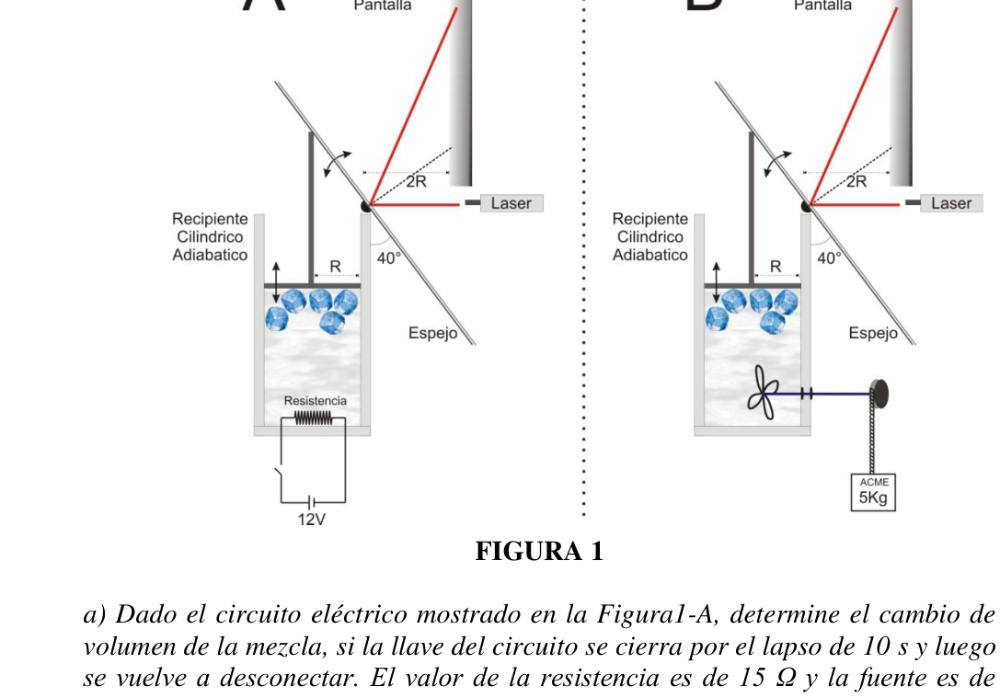
Topic: Thermodynamics, Geometric Optics Metodi: First Law of Thermodynamics, Conservation of Energy, Ray Tracing Competenze: Physical Reasoning, Mathematical Modeling Objects: Container, Resistor, Mirror, Piston Fonte: Testo (PDF) — p.3
Gioca con acqua fredda
Problema 1: giocare con acqua fredda
Si dispone di un recipiente adiabatico, cilindrico di raggio R = 1 cm (vedere Figura 1). En All’interno si trova una resistenza elettrica e un miscela di acqua e ghiaccio. in equilibrio termico. Tale contenitore ha una copertura mobile che limita il contenuto del contenitore con l’esterno, in modo che non rimanga spazio libero tra il liquido e la copertura. Con un bastone, la copertura spinge uno specchio piatto che si rota liberamente su un asse sul bordo del recipiente. D’altra parte, questo dispositivo ha un laser il cui raggio incide orizzontalmente sul specchio a L’altezza dell’asse e viene proiettata su uno schermo verticale disposto a distanza di 2R del cilindro.
Figura 1
a) Dato il circuito elettrico mostrato in Figura 1-A, determinare il cambio di volume della miscela, se il circuito si chiude per il periodo di 10 s e poi si sta di nuovo disconnetto. Il valore della resistenza è di 15 Ω e la fonte è di 12 V.
b) Qual è la variazione dell’angolo dello specchio sapendo che inizialmente si è si trova a 40° rispetto alla faccia laterale del recipiente?
c) A che altezza sullo schermo si trova il fascio di luce, a partire dalla posizione Il fascio di luce laser incidente sullo specchio?
d) Considerare che invece della resistenza elettrica si utilizza una pallet che può girare solidariamente su un asse su cui si appende, mediante una corda di massa scarsa, un peso di 5 kg come mostrato in Figura 1-B. La pesa . La pietra è inizialmente a riposo, nella sua posizione iniziale, e viene lasciata cadere da quella posizione. posizione. Quando la pesante ha percorso una distanza di 1 m, la corda è si allontana dall’asse e la velocità di pesatura è di 1m/s. Qual è la variazione?
OAF 2010 - 4 l’angolo dello specchio sapendo che inizialmente si trova a 40° rispetto a la faccia laterale del recipiente?
(e) Qual è il limite di energia che può essere consegnato alla miscela per consentire Il fascio riflesso incide ancora sullo schermo? (supponiamo un schermo infinitamente alta)
f) Supponendo che l’esterno del recipiente sia a una temperatura di 0 (c) spiegare cosa accadrebbe in caso a) se il recipiente non è adiabatico.
NOTA: la quantità di ghiaccio presente nel miscela è sempre sufficiente per avere un mix di acqua e ghiaccio in tutti i casi di cui al problema.
Densità dell’acqua: ρA = 999,9 kg/m3
Densità del ghiaccio: ρH = 916,8 kg/m3
Calore latente di fusione del ghiaccio: λ = 80 cal/g
Accelerazione della gravità g = 9,8 m/s2
1 cal = 4.186 J
OAF 2010 - 5
Topic: Thermodynamics, Geometric Optics Metodi: First Law of Thermodynamics, Conservation of Energy, Ray Tracing Competenze: Physical Reasoning, Mathematical Modeling Objects: Container, Resistor, Mirror, Piston Fonte: Testo (PDF) — p.3
Playing with cold water
Problem 1: Playing with cold water
An adiabatic cylindrical container with a radius of R = 1 cm is provided (see Figure 1). En Inside it is electrical resistance and a mixture of water and ice. in thermal equilibrium. The container has a mobile lid, which limits the container contents with the outside, so that no free space is left between the liquid and the lid. Using a stick, the lid pushes a flat mirror that rotate freely on an axis at the edge of the container. On the other hand, this The device has a laser whose beam hits horizontally on the mirror to The height of the axis and is projected onto a vertical screen arranged at a distance of 2R of the cylinder.
The Commission shall adopt implementing acts in accordance with Article 21 of this Regulation.
(a) Given the electrical circuit shown in Figure 1-A, determine the change of mix volume, if the circuit key is closed for the span of 10 s and then It’s disconnected again. The resistance value is 15 Ω and the source is 12 V.
(b) What is the variation in the angle of the mirror knowing that it initially is finds 40 degrees with respect to the side face of the container?
(c) How high above the screen does the beam of light affect, from the position The horizontal incident laser beam of light over the mirror?
(d) Consider now that instead of electrical resistance a pallet is used which It can rotate solidarily on an axis on which it hangs, using a rope of a weight of 5 kg as shown in Figure 1-B. It weighs . It is initially resting, in its initial position, and is dropped from that position. position. When the weight has travelled a distance of 1 m, the rope is It is disconnected from the axis and the velocity of the weighing is 1 m/s. What will be the variation
The following is the list of the Member States’ financial statements: The angle of the mirror knowing that it is initially 40° with respect to the side face of the container?
(e) What is the limit value of energy that can be delivered to the mixture so that The reflected beam still hits the screen? (I suppose a screen infinitely high)
(f) Assuming that the outside of the container is at a temperature of 0 (c) explain what would happen if the container is not adiabatic.
NOTE: The amount of ice in the mixture is always sufficient for to have a mixture of water and ice in all cases raised in the problem.
The water density: ρA = 999.9 kg/m3
The following is the list of the following:
Latent heat of ice melting: λ = 80 cal/g
The acceleration of gravity g = 9.8 m/s2
1 cal = 4,186 J
The following points shall be added:
Topic: Thermodynamics, Geometric Optics Metodi: First Law of Thermodynamics, Conservation of Energy, Ray Tracing Competenze: Physical Reasoning, Mathematical Modeling Objects: Container, Resistor, Mirror, Piston Fonte: Testo (PDF) — p.3
Espectrometro de masa
Problema 2: ESPECTRÓMETRO DE MASA
El espectrómetro de masas es un instrumento que permite analizar con gran precisión la composición de diferentes elementos químicos e isótopos atómicos, separando los núcleos atómicos en función de su relación masa/carga. En la actualidad se utiliza no sólo en física, sino también en química, geología y medicina con frecuencia para identificar átomos y sus concentraciones en muestras. El primer espectrógrafo fue construido por J. J. Thomson en 1907 y posteriormente mejorado por su estudiante de doctorado F. W. Aston, quien en el año 1922 ganó el Premio Nobel de Química por el descubrimiento de isótopos en elementos no radioactivos y por su enunciado de la regla del número entero usando su espectrómetro de masa. En 1932, K.T. Bainbridge (Director del Trinity test del Proyecto Manhattan), combinó un selector de velocidades con el espectrómetro magnético semicircular con el objeto de verificar experimentalmente la relación entre masa y energía ( E = mc2) postulada por Einstein.
Figura 1: Esquema del Espectrómetro de Masas
En el espectrómetro de masas el compuesto a analizar ingresa al sector S (ver Figura 1) donde es ionizado y posteriormente acelerado mediante la aplicación de una diferencia de potencial entre cátodo y ánodo en la región S. Este haz entra posteriormente en un selector de velocidades que es una región S1 donde se aplican campos eléctricos y magnéticos perpendiculares entre si. En la figura el campo magnético B1 está representado por las cruces indicando que su dirección es perpendicular al plano de la hoja de papel y con sentido entrante.
Despreciando el efecto de la fuerza de gravedad, un ión de masa m y carga
q (positiva), que se mueve con velocidad v en una zona del espacio donde hay
campos eléctricos y magnéticos experimenta una fuerza, conocida como fuerza de
Lorentz, dada por la siguiente expresión.
B v q E q F
Rayo de electrones Cátodo Anodo Muestra Gaseosa Selector de velocidades Haz de iones positivos Placa Fotográfica S S1 S2 B2 Región del espacio donde hay campo eléctrico E B1
OAF 2010 - 6
La fuerza B v q , debida al campo magnético, es perpendicular a dicho campo y al vector velocidad del ión como se muestra en la Figura 2 y tiene módulo qvB.
Figura 2: Esquema del selector de velocidades
a) Dibuje en la Figura 2 las líneas de campo eléctrico en el condensador, indicando claramente su sentido.
b) Dibuje sobre la carga q de la Figura 2, la fuerza que actuaría sobre la misma cuando se encuentra en dicho campo eléctrico.
c) Sabiendo que los iones que viajan paralelos a las placas del condensador deben atravesar la rendija, y que E =9.50 102 V/m y B = 0.93 T determine la velocidad de los iones que salen del selector de velocidades.
Los iones que poseen una velocidad tal que les permite pasar por la rendija del selector de velocidades entran en una región S2 del espacio donde sólo hay un campo magnético B2. En esta región del espacio el ión tiene una trayectoria circular como se observa en la Figura 1.
d) Qué fuerza actúa sobre el ión en la región S2 y porqué razón éste sigue esa trayectoria circular.
e) Exprese la aceleración del ión en función de su velocidad y del radio de la trayectoria
f) Encuentre una expresión, en términos de m, q, E y B, para el radio de la trayectoria.
Para un valor fijo de la velocidad y del módulo del campo magnético en la región S2, cuanto menor sea el cociente m/q (masa/carga) menor será el radio de curvatura r de la trayectoria descrita por los iones, y por tanto su trayectoria se deflectará más. Si la muestra está constituida por isótopos de un elemento, todos tendrán la misma carga, pero los que sean más pesados describirán una trayectoria circular de mayor radio. Por lo tanto, haces de iones de distinta relación masa/carga llegarán a puntos diferentes de la placa fotográfica, y, en función de la intensidad de las señales que dejan, se determina la abundancia relativa de cada tipo. qvB1 Región con campo eléctrico E y campo magnético B1 Rendija q v
OAF 2010 - 7
Los isótopos naturales y estables del carbono son el 12C (98,89%) y el 13C
(1,11%). También existe un isótopo radioactivo el 14C. Al analizar con este
espectrómetro una muestra de Carbono se pueden encontrar distintos isótopos, así
como también otros elementos (impurezas). En particular se determinaron dos
trayectoria, una de radio R1 = 22.4 cm y otra de radio R2 = 26.2 cm.
g) Determine qué isótopo o impureza posee la muestra
La masa del elemento es igual a su peso atómico expresado en uma. Por ej. La masa del hidrógeno es 1 uma. (Usted puede necesitar la tabla adjunta para responder este punto)
OAF 2010 - 8
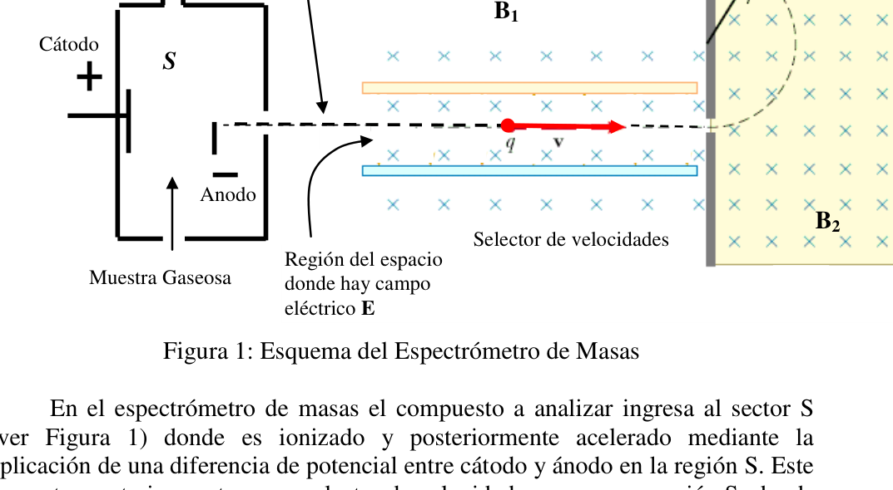
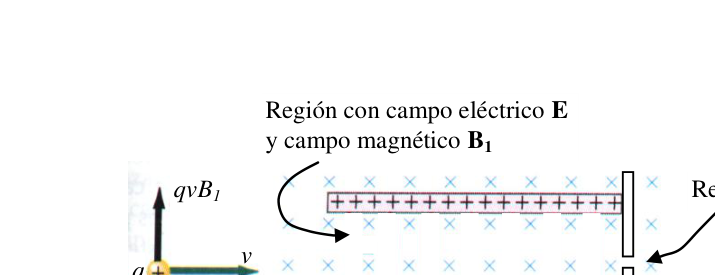
Topic: Electromagnetism, Magnetism Metodi: Lorentz Force Analysis, Symmetry Argument Competenze: Physical Reasoning Objects: Particle Beam, Capacitor Fonte: Testo (PDF) — p.3
Spettrometro di massa
Problema 2: Spettrometro di massa
Lo spettrometro di massa è uno strumento che permette di analizzare con La composizione di diversi elementi chimici e isotopi è molto precisa. Atomici, separando i nuclei atomici in base al loro rapporto massa/carica. Attualmente è usato non solo in fisica, ma anche in chimica, geologia e La medicina frequentemente identifica gli atomi e le loro concentrazioni in
- I campioni. Il primo spettrografo fu costruito da J. J. Thomson nel 1907 e successivamente migliorato dal suo studente di dottorato F. W. Aston, che nel Nel 1922 vinse il Premio Nobel di Chimica per la scoperta degli isotopi nel elementi non radioattivi e per la loro formulazione della regola del numero intero usando il suo spettrometro di massa. En 1932, K.T. Bainbridge (Direttore della Trinity test del Progetto Manhattan), combinato un selettore di velocità con il Spectrometro Magnetico semicircolare con el oggetto de Verificare La relazione di massa e energia (E = mc2) postulata da Einstein.
Figura 1: Schema dello spettrometro di massa
Nel spettrometro di massa il composto da analizzare entra nel settore S (vedi Figura 1) dove viene ionizzato e successivamente accelerato mediante il Applicazione di una differenza di potenziale tra cado e anodo nella regione S. Questo . Il fascio entra successivamente in un selettore di velocità che è una regione S1 dove se si applicano campi elettrici e magnetici perpendicolari tra loro. Nella figura il Il campo magnetico B1 è rappresentato dalle croci indicando che la sua direzione è perpendicolare al piano della foglia di carta e con senso in entrata.
Scommetto l’effetto della forza di gravità, un ione di massa m e carico q (positivo), che si muove a velocità v in una zona dello spazio dove c’è I campi elettrici e magnetici sperimentano una forza, nota come forza di Lorentz, dato dalla seguente espressione.
B v q E q F
Il raggio di elettroni
- Cattode . Anodo Mostra gassosa Selezionatore di velocità Fai gli ioni .
- positivo Placca Fotocamera S S1 S2 B2 Regione dello spazio dove c’è campo elettrico E B1
OAF 2010 - 6
La forza B v q , a causa del campo magnetico, è perpendicolare a detto Il campo e il vettore di velocità degli ioni come mostrato in Figura 2 e ha modulo qvB.
Figura 2: Schema del selettore di velocità
a) Spetta alla figura 2 le linee di campo elettrico nel condensatore, che ne indichi chiaramente il significato.
b) Disegna sulla carica q di Figura 2, la forza che agisce sulla quando si trova in quel campo elettrico.
(c) Sapendo che gli ioni che viaggiano parallele alle placche del condensatore devono attraversare la spazia, e che E =9.50 102 V/m e B = 0.93 T determinino la velocità degli ioni che usciranno dal selettore di velocità.
Gli ioni che hanno una velocità tale da permettergli di passare attraverso la spazia. La velocità selezionata entra in una regione S2 dello spazio dove c’è solo un campo magnetico B2. In questa regione dello spazio l’ion ha un percorso. circolare come si vede in Figura 1.
d) Che forza agisce sull’ion nella regione S2 e perché esso segue tale forza traccia circolare.
(e) Esprimere l’accelerazione dell’ion in funzione della sua velocità e del raggio di La traccia
f) Trova un’espressione, in termini di m, q, E e B, per il raggio di
- La traccia.
Per un valore fisso della velocità e del modulo del campo magnetico in regione S2, minore è il coefficiente m/q (massa/carica) minore sarà il raggio di La curvatura r del percorso descritto dagli ioni, e quindi il loro percorso si
- Si devierà di più. Se il campione è costituito da isotopi di un elemento, tutti avranno lo stesso carico, ma quelli più pesanti descriveranno un percorso. circolare a più alto raggio. Quindi, fate ioni di diversa relazione. mass/carga raggiungeranno punti diversi della targa fotografica e, a seconda della L’intensità dei segnali che lasciano, determina l’abbondanza relativa di ogni tipo. qvB1 Regione con campo elettrico E e campo magnetico B1 Rendiga q v
OAF 2010 - 7 Gli isotopi naturali e stabili del carbonio sono 12C (98,89%) e 13C (1,11%). C’è anche un isotopo radioattivo nel 14C. Analizzando con questo uno spectrometro di campione di carbonio si possono trovare diversi isotopi, così come pure altri elementi (impurezza). In particolare, sono stati determinati due. La velocità di un’operazione è di circa 10 km/h.
g) Determina quale isotopo o impurità possiede il campione
La massa dell’elemento è pari al suo peso atomico espresso in una. Per esempio. La massa dell’idrogeno è di 1 um. (Potresti aver bisogno della tabella allegata per (cfr.
OAF 2010 - 8
Topic: Electromagnetism, Magnetism Metodi: Lorentz Force Analysis, Symmetry Argument Competenze: Physical Reasoning Objects: Particle Beam, Capacitor Fonte: Testo (PDF) — p.3
The mass spectrometer shall be the mass spectrometer of the measuring instrument.
Problem 2: Mass spectrometer
The mass spectrometer is an instrument that allows analysis with high precision the composition of different chemical elements and isotopes atomic nuclei, separating atomic nuclei according to their mass/charge ratio. It is now used not only in physics but also in chemistry, geology and The use of the term “symmetry” is often used to identify atoms and their concentrations in I’m not going to tell you. The first spectrograph was built by J. J. Thomson in 1907 and subsequently improved by his PhD student F. W. Aston, who in the In 1922 he won the Nobel Prize in Chemistry for his discovery of isotopes in Non-radioactive elements and by their statement of the rule of the integer using their mass spectrometer. En 1932, K.T. Bainbridge (Director of Trinity) The Manhattan Project test, combined a speed selector with the Spectrometer Magnetic The following table shows the results of the calculations: with el object de Verify The experimental mass-energy ratio (E = mc2) postulated by Einstein. What is it?
Figure 1: Scheme of the Mass Spectrometer
In the mass spectrometer the compound to be analysed enters the S sector (see Figure 1) where it is ionized and then accelerated by the application of a potential difference between cathode and anode in region S. This one . beam then enters a velocity selector which is a region S1 where electric and magnetic fields are applied perpendicular to each other. In the figure the The magnetic field B1 is represented by the crosses indicating its direction is perpendicular to the plane of the sheet of paper and is inbound.
Disregarding the effect of gravity, an ion of mass m and charge q (positive), which moves at velocity v in an area of space where there is Electric and magnetic fields experience a force, known as the force of Lorentz, given by the following expression.
B v q E q F
Electron beam
- What ? Anode Gas show . Speed selector Make some ions . positive Plaque Photographer . S S1 S2 B2 Space region Where there ‘s a field . Electrical E B1
The following points shall be added:
The force B v q , due to the magnetic field, is perpendicular to the said The field and the ion velocity vector as shown in Figure 2 and has the QvB module.
Figure 2: Schematic of the speed selector
(a) Draw in Figure 2 the electric field lines in the capacitor, clearly indicating its meaning.
(b) Draw on the load q of Figure 2, the force that would act on the load. The same thing happens when you’re in that electric field.
(c) Knowing that ions traveling parallel to the capacitor plates They must pass through the cleft, and E =9.50 102 V/m and B = 0.93 T determine The velocity of ions exiting the velocity selector.
Ions that have a velocity such that they can pass through the cleft . The speed selector enters a region of S2 of space where there is only one magnetic field B2. In this region of space the ion has a trajectory. The flow rate is the same as that shown in Figure 1.
(d) What force acts on the ion in region S2 and why does it follow that force? The rotation of the vehicle is not possible.
(e) Express the acceleration of the ion in terms of its velocity and radius of the ion. Trajectory
(f) Find an expression, in terms of m, q, E and B, for the radius of the The trajectory.
For a fixed value of the speed and modulus of the magnetic field in the region S2, the smaller the m/q (mass/load) coefficient, the smaller the radius of The curvature r of the path described by the ions, and therefore their path is It’ll deflect more. If the sample consists of isotopes of an element, all They’ll have the same load, but the heavier ones will describe a trajectory. circulating at higher radius. So you make ions of a different ratio. The mass/load shall reach different points on the photographic plate, and, depending on the The intensity of the signals they leave is determined by the relative abundance of each. like. The following is the list of the countries of the European Union: Region with electric field E and magnetic field B1 Rendija is a good one . q v
The following points shall be added: The natural and stable isotopes of carbon are 12C (98.89%) and 13C (1,11%). There is also a radioactive isotope at 14C. By analyzing with this one Spectrometer a sample of carbon can be found different isotopes, like as well as other elements (impurities). In particular, two were determined. trajectory, one radius R1 = 22.4 cm and another radius R2 = 26.2 cm.
(g) Determine what isotope or impurity the sample has
The mass of the element is equal to its atomic weight expressed in a. For example, The mass of the hydrogen is 1 um. (You may need the attached table for (To answer this question)
The following points shall be added:
Topic: Electromagnetism, Magnetism Metodi: Lorentz Force Analysis, Symmetry Argument Competenze: Physical Reasoning Objects: Particle Beam, Capacitor Fonte: Testo (PDF) — p.3
Discos chocadores
Problema 3: DISCOS CHOCADORES
Sobre una superficie horizontal sin rozamiento hay tres discos idénticos de radio R y masa M como se muestra en la figura siguiente. Inicialmente el disco que se encuentra a la izquierda (denominado D) se traslada, sin rotar, con una velocidad Vi hacia la derecha, mientras que los otros dos discos (llamados 1 y 2) se encuentran en reposo y sus centros están separados una distancia 2d.
En un determinado instante el disco D choca con los discos 1 y 2 siendo este choque elástico. Luego del choque los tres discos se trasladan sin rotar, como se indica en la figura siguiente:
Recordando que el choque es elástico:
a) Determine el rango de valores que puede tomar d para que ocurra el
choque.
b) Calcule el valor del ángulo , que subtiende la dirección de movimiento de
los discos 1 y 2 con la horizontal, en función de d y R.
c) Calcule los valores de las velocidades VD , V1 y V2 de los tres discos después
del choque en función de Vi, R y d.
d) Determine el valor de d para que el disco D quede en reposo luego del
choque
(VD = 0).
e) Determine los valores de d para los cuales VD < 0, VD > 0.
f) Grafique (VD / Vi) en función de (d /R)
Vi 2d D 1 2 VD D 1 2 V1 V2
OAF 2010 - 9
Instancia Nacional Prueba Experimental
OAF 2010 - 10 Ley de refracción
La ley de Snell es una fórmula simple utilizada para calcular el ángulo de refracción de la luz al atravesar la superficie de separación entre dos medios de propagación de la luz (o cualquier onda electromagnética) con índices de refracción distintos. Consideremos dos medios caracterizados por índices de refracción n1 y n2 separados por una superficie S. Los rayos de luz que atraviesen los dos medios se refractarán en la superficie variando su dirección de propagación dependiendo del cociente entre los índices de refracción. Para un rayo luminoso con un ángulo de incidencia 1 sobre el primer medio, tendremos que el rayo se propaga en el segundo medio con un ángulo de refracción 2 cuyo valor se obtiene por medio de la ley de Snell. 2 2 1 1 sen n sen n
(1) Objetivo: Determinar experimentalmente la dependencia del índice de refracción con la concentración de azúcar en agua.
Elementos disponibles
Goniómetro
- Láser
Jeringa
- Cubeta semi-circular
Papel milimetrado
- Rendija de cartulina
Regla
-
5 soluciones de azúcar de concentración conocida
Procedimiento
a- Puesta a punto del dispositivo experimental
Las actividades y observaciones que continúan, enumeradas de (i) a (vi), le servirán para familiarizarse con el equipo, razón por la cual debe regular el tiempo invertido en esta tarea.
(i) Encienda la fuente de luz láser accionando la llave del porta pilas, que se encuentra junto al puntero láser.
OAF 2010 - 11 (ii) Haciendo uso de los tornillos y/o desplazando cuidadosamente la base en donde está apoyado el puntero láser, haga incidir el haz de luz en el lado semicircular externo de la cubeta porta muestra. (iii) Para que el haz incida perpendicularmente sobre la cara plana de la cubeta podrá girar el porta muestra usando el vástago de alambre del goniómetro, variar la posición de los tornillos que nivelan el láser y/o mover la base que sirve de soporte al láser. (iv) Sobre la pantalla de papel que se encuentra en el láser se puede ver el punto luminoso correspondiente a la reflexión en la cara plana. Para asegurar perpendicularidad éste debe coincidir con el láser. (v) Mediante los tornillos para nivelar el láser podrá variar la altura del haz incidente. (vi) Si se coloca la rendija de cartulina para colimar el haz de la fuente, los puntos de refracción quedarán mejor definidos, con lo cual, las mediciones serán más precisas.
b-
Llene la cubeta con la solución de menor concentración y determine el
índice de refracción con su error, teniendo en cuenta que la expresión (1) es
una relación lineal entre los senos de los ángulos de incidencia y refracción.
c-
Extraiga con la jeringa el contenido de la cubeta y viértalo nuevamente en el
frasco correspondiente.
d-
Limpie bien la cubeta con el papel de cocina. Ya está en condiciones de
poner en la cubeta una nueva solución.
e-
Utilice las soluciones en orden ascendente de concentración.
f-
Grafique el índice de refracción en función de la concentración y
establezca (considerando el error) si la relación es lineal o no.
Datos útiles
- El índice de refracción del aire es 1
- El error asociado al sen es: cos ) (sen , donde está expresado en radianes.
OAF 2010 - 12
Instancias Locales Problemas Teóricos
OAF 2010 - 13
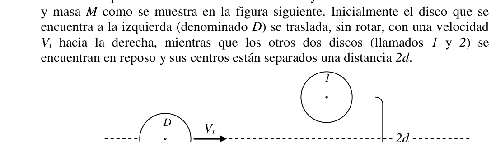
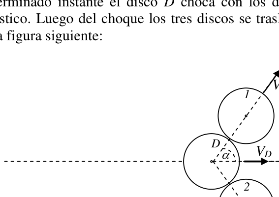
Topic: Conservation of Momentum, Conservation of Energy Metodi: Conservation of Momentum, Conservation of Energy, Vector Decomposition Competenze: Physical Reasoning, Mathematical Modeling Objects: Disk Fonte: Testo (PDF) — p.3
Dischi di colpo
Il problema 3: dischi scattanti
Su una superficie orizzontale senza ruggine ci sono tre dischi identici di radio R e massa M come mostrato nella figura seguente. Inizialmente il disco che si è si trova a sinistra (denominato D) si sposta, senza ruotare, con una velocità Ho visto a destra, mentre gli altri due dischi (chiamati 1 e 2) sono Si trovano a riposo e i loro centri sono separati a una distanza di 2d.
In un certo istante il disco D colpisce i dischi 1 e 2 essendo questo colpo a trazione. Dopo l’impatto i tre dischi si spostano senza ruotare, come si fa. indica nella figura seguente:
Ricordando che lo shock è elastico:
a) Determina il range di valori che può essere necessario per ottenere il
- Coppia. b) Calcolare il valore dell’angolo , che supporta la direzione di movimento di i dischi 1 e 2 con la linea orizzontale, in funzione di d e R. c) Calcola i valori delle velocità VD , V1 e V2 dei tre dischi dopo di colpo in funzione di Vi, R e d. d) Determina il valore di d per il disco D a riposo dopo l’
- Coppia (VD = 0). e) Determina i valori di d per i quali VD < 0, VD > 0. f) Grafico (VD / Vi) in funzione di (d / R)
Vi 2d D 1 2 VD D 1 2 V1 V2
OAF 2010 - 9
Instanza nazionale Prova sperimentale
OAF 2010 - 10 Legge della rifrazione
La legge di Snell è una formula semplice usata. per calcolare l’angolo di refraczione della luce al attraversare la superficie di separazione tra due mezzi di diffusione della luce (o qualsiasi onda (Sistema di controllo delle radiazioni) con indici de differenziate di rifrazione. Considerate due mezzi caratterizzati da indici di rifrazione n1 e n2 separati da una superficie S. I raggi di luce che attraversano i due mezzi si rifraccano sulla superficie variabile su indirizzo de diffusione In base al coefficiente tra gli indici di
- Rifrazione. Per un raggio luminoso con un angolo di incidenza 1 sulla prima metà, avremo il raggio che si diffonde nel secondo mezzo con angolo di rifrazione 2 il cui valore viene ottenuto mediante della legge di Snell. 2 2 1 1 sen n sen n
(1) Obiettivo: Determinare sperimentalmente la dipendenza dell’indice di rifrazione con la concentrazione di zucchero in acqua.
Elementi disponibili
Goniometro
-
Laser .
-
Griglia
-
Cubi semi-circolari
Papero millimetrico
- Rendice di cartolina
Regola
- 5 soluzioni di zucchero di concentrazione nota
Procedura
a- La messa a punto del dispositivo sperimentale
Le attività e osservazioni che continuano, elencate da (i) a (vi), La formazione professionale è un’attività che si svolge in modo da consentire di conoscere il team. tempo investito in questo compito.
(i) Accendi la fonte di luce laser attivando la chiave della porta delle batterie, che è situato accanto al puntatore laser.
OAF 2010 - 11 (ii) Usando i tornelli e/o spostando attentamente la base dove è appoggiato il puntatore laser, faccia incidere il fascio di luce sul lato semicircolare esterno del cubo di portata del campione. (iii) Per far sì che il fascio incida perpendicularmente sulla faccia piana della La cubica può girare la porta del campione usando il filo di fili del goniometro, variare la posizione dei viti che levano il laser e/o spostare la base che serve come supporto al laser. (iv) Sullo schermo di carta che si trova nel laser si può vedere il punto luminoso corrispondente alla riflessione sul viso piatto. Per Per assicurare la perpendicularezza, questo deve coincidere con il laser. (v) Le vite laser possono essere utilizzate per rilevare la altezza del laser.
- Non è un incidente. (vi) Se si inserisce la spazia di cartolina per collimare il fascio della sorgente, i I punti di refraczione saranno meglio definiti, e le le misure saranno più precise.
b- Riempire il vassoio con la soluzione di minore concentrazione e determinare il indice di refraczione con il suo errore, considerando che l’espressione (1) è un rapporto lineare tra i seni degli angoli di incidenza e di refraczione. c- Scaccia con la siringa il contenuto del piatto e riversalo nel bombo corrispondente. d- Pulisci bene la vasca con la carta da cucina. È già in condizioni di mettere in cucina una nuova soluzione. e- Utilizzare le soluzioni in ordine ascendente di concentrazione. f- Grafica l’ indice di refraczione in base alla concentrazione e stabilire (considerando l’errore) se la relazione è lineare o no.
Dati utili
- L’indice di refraczione dell’aria è 1
- L’ errore associato al sen è: cos ) (senza , dove è espresso in
- Radiani.
OAF 2010 - 12
I servizi locali Problemi teorici
OAF 2010 - 13
Topic: Conservation of Momentum, Conservation of Energy Metodi: Conservation of Momentum, Conservation of Energy, Vector Decomposition Competenze: Physical Reasoning, Mathematical Modeling Objects: Disk Fonte: Testo (PDF) — p.3
The following table shows the results of the calculations:
Problem 3: Disco Shockers
On a horizontal surface without a rust there are three identical R-ray disks and mass M as shown in the figure below. Initially the disc was It is located on the left (called D) moving, without rotation, at a speed I looked to the right, while the other two discs (called 1 and 2) were They’re at rest and their centers are 2d apart.
At a certain moment the disc D collides with the discs 1 and 2 being this the shock. After the impact the three discs move without rotation, as they are indicates in the following figure:
Remembering that the shock is elastic:
(a) Determine the range of values that can be taken to make the It’s a shock. (b) Calculate the value of the angle , which supports the direction of movement of discs 1 and 2 with horizontal, based on d and R. (c) Calculate the VD , V1 and V2 speed values of the three disks afterwards the impact factor according to Vi, R and d. (d) Determine the value of d for disc D to rest after the The shock . (VD = 0). (e) Determine values of d for which VD < 0, VD > 0. (f) Graphic (VD/Vi) according to (d/R)
Vi 2d D 1 2 VD D 1 2 V1 V2
The following is the list of the countries of the European Union:
The National Court Experimental test
The following points shall be added: Law of refraction
Snell’s law is a simple formula used. to calculate the angle of refraction of the light to cross the separation surface between two light propagation means (or any
- What ? (electromagnetic field) with Indices de The following is the list of the types of refraction: Consider two means characterized by Refraction indices n1 and n2 separated by a surface S. The rays of light that pass through them two media will refract on the surface Varying su Address de The spread of the disease Depending on the ratio between the indices of refraction. For a light beam with an angle of The impact of the 1 on the first half, we’ll have the lightning spread in the Second medium with a refractive angle 2 whose value is obtained by means of Snell’s law. 2 2 1 1 Other n Other n
(1) Objective: To experimentally determine the dependence of the index on the refraction with the concentration of sugar in water.
Available items
Goniometer .
-
Laser .
-
What ?
-
Semi-circular cube
Millimeter paper
- Cardboard wrap .
Rule
- 5 solutions of known concentration of sugar
The procedure
a- The experimental device is being upgraded.
The following activities and observations, listed in (i) to (vi), are: The new equipment will be used to familiarize you with the equipment, which is why you should regulate the time spent on this task.
(i) Turn on the laser light source by turning on the key to the battery door, which It’s next to the laser pointer.
The following points shall be added: (ii) Using screws and/or carefully displacing the base where the laser pointer is mounted, make the beam of light point at the the outer half-circular side of the sample door bucket. (iii) For the beam to impact perpendicularly on the flat face of the The bucket can rotate the sample door using the wire rod of the goniometer, vary the position of the screw leveling the laser and/or move the base that supports the laser. (iv) On the paper screen that is in the laser you can see the The light point corresponding to the reflection on the flat face. For This must match the laser. (v) Using screw leveling the laser can vary the height of the You’re going to make an incident. (vi) If the cardboard slit is placed to collimate the beam of the source, the The refractive index of the vehicle is the same as that of the vehicle. measurements will be more accurate.
b- Fill the bucket with the lower concentration solution and determine the refractive index with its error, taking into account that expression (1) is a linear relationship between the breasts of the angle of incidence and refraction. c- Remove the contents of the bucket with the syringe and pour it back into the the corresponding bottle. d- Clean the bucket well with the kitchen paper. It ‘s already in condition . Put a new solution in the bucket. e- Use the solutions in ascending order of concentration. f- Graph the refractive index according to the concentration and establish (considering the error) whether the relationship is linear or not.
Useful data
- The refractive index of the air is 1
- The error associated with the sen is: body ) (without , where is expressed in You’re radiating.
The following points shall be added:
Local authorities Theoretical problems
The following points shall be added:
Topic: Conservation of Momentum, Conservation of Energy Metodi: Conservation of Momentum, Conservation of Energy, Vector Decomposition Competenze: Physical Reasoning, Mathematical Modeling Objects: Disk Fonte: Testo (PDF) — p.3
PT1. Ciudad de Buenos Aires. Azul. Como se muestra en la figura, A y B son dos cuerpos idénticos, de masa de 2 kg y con una longitud de 1 m cada uno, que se encuentran en reposo sobre una superficie horizontal. C es un objeto de 1 kg de masa con 2 m/s como velocidad inicial, que se desplaza sobre A y B. Suponga que solo exista fricción con coeficiente 0,1 entre C y la superficie superior de A y B. Hallar la velocidad final de los tres cuerpos A, B y C.
Topic: Newtonian Mechanics Metodi: Free-Body Diagram, Conservation of Momentum, Kinematic Equations Competenze: Physical Reasoning Objects: Block Fonte: Testo (PDF) — p.3
PT1. Città di Buenos Aires. Blu. Come si vede nella figura, A e B sono due Corpi identici, di massa di 2 kg e con una lunghezza di 1 m ciascuna, che si trovano in riposare su una superficie orizzontale. C es un oggetto di 1 kg di massa con velocità iniziale di 2 m/s, che si sposta su A y B. Supponiamo che ci sia solo un coefficiente di attrito di 0,1 tra C e superficie. superiore a A e B. Trovare la velocità finale dei tre corpi A, B e C.
Topic: Newtonian Mechanics Metodi: Free-Body Diagram, Conservation of Momentum, Kinematic Equations Competenze: Physical Reasoning Objects: Block Fonte: Testo (PDF) — p.3
PT1. City of Buenos Aires. Blue, please. As shown in the figure, A and B are two identical bodies, weighing 2 kg and having a length of 1 m each, which are found in resting on a horizontal surface. C es un object of 1 kg mass with 2 m/s as initial speed, moving over A y B. Suppose there is only friction with a coefficient of 0.1 between C and the surface. higher than A and B. Find the final velocity of the three bodies A, B and C.
Topic: Newtonian Mechanics Metodi: Free-Body Diagram, Conservation of Momentum, Kinematic Equations Competenze: Physical Reasoning Objects: Block Fonte: Testo (PDF) — p.3
PT2. Ciudad de Buenos Aires. Azul. Como se muestra en la figura, las bombillas L1 y L2 funcionan correctamente, pero algo le sucedió al sistema y se descubre que L1 brilla más, L2 brilla menos y la lectura del amperímetro disminuye. ¿Cuál es una de las posibles fallas?
Topic: Circuits Metodi: Kirchhoff’s Laws, Equivalent Circuit Reduction Competenze: Physical Reasoning Objects: Resistor, Galvanometer Fonte: Testo (PDF) — p.3
PT2. Città di Buenos Aires. Blu. Come mostrato nella figura, le lampadine L1 e L2 funziona correttamente, ma qualcosa le è successo. E si scopre che L1 brilla di più, L2 brilla di più. meno e la lettura dell’ampievere diminuisce. Qual è uno dei possibili errori?
Topic: Circuits Metodi: Kirchhoff’s Laws, Equivalent Circuit Reduction Competenze: Physical Reasoning Objects: Resistor, Galvanometer Fonte: Testo (PDF) — p.3
PT2. City of Buenos Aires. Blue, please. As shown in the figure, the L1 and L1 bulbs L2’s working properly, but something happened to him. The system is going to be more bright, and L1 is going to be brighter, and L2 is going to be brighter. Less and the reading of the ampere decreases. What’s one of the possible flaws?
Topic: Circuits Metodi: Kirchhoff’s Laws, Equivalent Circuit Reduction Competenze: Physical Reasoning Objects: Resistor, Galvanometer Fonte: Testo (PDF) — p.3
PT3. Ciudad de Buenos Aires. Azul. Como se muestra en la figura, un recipiente cilíndrico de área seccional S, contiene n moles de O2 a t ° K , A es un pistón con superficie superior horizontal y superficie inferior inclinada, a un ángulo con la horizontal. El pistón tiene masa M y su fricción con el recipiente es insignificante. Si la presión atmosférica fuese p0: a) Hallar la presión dentro del recipiente. b) Si la temperatura fuese el doble, ¿Cuál sería el cambio de altura del pistón?
Topic: Thermodynamics Metodi: Ideal Gas Law, Free-Body Diagram Competenze: Physical Reasoning Objects: Gas, Piston, Cylinder Fonte: Testo (PDF) — p.3
PT3. Città di Buenos Aires. Blu. Come mostrato nella figura, un contenitore cilindrico di superficie Sezione S, contiene n mole di O2 a t ° K , A è un pistone con superficie superiore orizzontale e superficie inferiore inclinata, a un angolo con il orizzontale. Il pistone ha massa M e frattura. con il recipiente è insignificante. Se la pressione atmosferica fosse p0: a) Indicare la pressione all’interno del recipiente. b) Se la temperatura fosse raddoppiata, quale sarebbe il cambiamento di altezza del Piston?
Topic: Thermodynamics Metodi: Ideal Gas Law, Free-Body Diagram Competenze: Physical Reasoning Objects: Gas, Piston, Cylinder Fonte: Testo (PDF) — p.3
PT3. City of Buenos Aires. Blue, please. As shown in the figure, a cylindrical container area Section S, contains n moles of O2 to t ° K , A is a piston with horizontal upper surface and sloping lower surface, to a angle with the horizontal. The piston has mass M and its friction. with the container is insignificant. If the atmospheric pressure were p0: (a) Determine the pressure inside the container. (b) If the temperature were doubled, what would be the change in height of the Piston? What is it?
Topic: Thermodynamics Metodi: Ideal Gas Law, Free-Body Diagram Competenze: Physical Reasoning Objects: Gas, Piston, Cylinder Fonte: Testo (PDF) — p.3
Un paseo en globo
PT4. Ciudad de Buenos Aires. Verde. Un paseo en globo. Un fin de semana, 2 amigos deciden hacer un paseo en globo aerostático, de aire caliente. El globo tiene una masa de 200 kg cuando se encuentra desinflado (incluyendo el sistema de calentamiento y la canastilla). El volumen de aire cuando se encuentra inflado es de 2800 m3. El globo es operado por un piloto (masa= 70 kg) y el día del viaje la temperatura es de 20°C (293°K). La densidad del aire a esa temperatura es 1,205 kg/m3. Sabiendo que la densidad del aire a nivel de la tierra cambia con la temperatura según la expresión:
y la masa de cada uno de los
pasajeros es 70 kg, determinar: a) ¿Cuál debe ser la máxima densidad del aire caliente para que el globo pueda despegar? b) ¿A qué temperatura debe calentarse el aire para tal fin? c) Si la temperatura normal de operación es de 70°C ( 343°K),¿cuál es la fuerza de ascensión? Considerar: aceleración de la gravedad: g= 9,8m/s2.
OAF 2010 - 14
Topic: Fluid Mechanics, Thermodynamics Metodi: Hydrostatic Equilibrium, Ideal Gas Law Competenze: Physical Reasoning Objects: Bubble Fonte: Testo (PDF) — p.3
Un giro a ballo
PT4. Città di Buenos Aires. Verde. Un giro a ballo. Un weekend, due amici decidono di fare un giro a ballo, di aria calda. Il globo ha una massa di 200 kg quando è deflato (compresi il sistema di riscaldamento e la vasca). Volume di aria quando è gonfiato è di 2800 m3. Il pallone è operato da un pilota (massa = 70 kg) e il giorno del La temperatura di viaggio è di 20°C (293°K). La densità dell’aria a questa temperatura è di 1.205 kg/m3. Sapendo che la densità dell’aria a livello terrestre cambia con temperatura secondo l’espressione:
e la massa di ciascuno di loro. Passageri di 70 kg, determinare: a) Qual è la massima densità di aria calda
- Per far partire il pallone? b) A che temperatura deve essere riscaldata l’aria per tale effetto Finire? c) Se la temperatura di funzionamento normale è 70°C (343°K), qual è la temperatura di funzionamento di 70°C? forza di ascensione? Considerare: accelerazione della gravità: g= 9,8m/s2.
OAF 2010 - 14
Topic: Fluid Mechanics, Thermodynamics Metodi: Hydrostatic Equilibrium, Ideal Gas Law Competenze: Physical Reasoning Objects: Bubble Fonte: Testo (PDF) — p.3
A walk in the balloon
PT4. City of Buenos Aires. Green, please. A walk in the balloon. One weekend, two friends decide to take a balloon ride, Hot air. The balloon weighs 200 kg when it ‘s deflated . (including heating system and canister). The air volume When inflated, it is 2800 m3. The balloon is operated by a pilot (mass = 70 kg) and the day of the The temperature is 20°C (293°K). Air density At that temperature, it’s 1,205 kg/m3. Knowing that the density of air at ground level changes with the temperature according to the expression:
and the mass of each of them. passengers is 70 kg, determine: (a) What is the maximum density of hot air? So the balloon can take off? (b) What temperature should the air be heated to for this purpose? The end? c) If the normal operating temperature is 70°C (343°K), what is the Ascension force? Consider: acceleration of gravity: g=9.8m/s2.
The following points shall be added:
Topic: Fluid Mechanics, Thermodynamics Metodi: Hydrostatic Equilibrium, Ideal Gas Law Competenze: Physical Reasoning Objects: Bubble Fonte: Testo (PDF) — p.3
Un camino para la luz
PT5. Ciudad de Buenos Aires. Verde.
Un camino para la luz.
Un haz de luz laser es emitido desde una fuente y atraviesa una lámina de caras
paralelas, cuyo índice de refracción = 1,5, según la figura 1. Luego incide sobre
una superficie horizontal, en un punto M.
a) Determinar a qué distancia “d” de la lámina se ubica el punto M.
b) ¿Cuánto tarda el rayo en hacer todo el recorrido, desde que sale de la
fuente hasta llegar al punto M?.
c)
Determinar con qué angulo “α” debe incidir el rayo sobre la lámina para
que al refractarse pase por M, ahora ubicado a 2m de la lámina, según
la figura 2.
Dato: C0= 300000 km/seg
Topic: Geometric Optics Metodi: Snell’s Law, Ray Tracing Competenze: Physical Reasoning Objects: — Fonte: Testo (PDF) — p.3
Un percorso per la luce
PT5. Città di Buenos Aires. Verde. Un cammino per la luce. Un raggio di luce laser viene emesso da una fonte e attraversa una lamina di faccia. per i paralleli, il cui indice di rifrazione = 1,5, come indicato in figura 1. Poi incide su una superficie orizzontale, in un punto M. a) Determinare a che distanza d dalla lamina si trova il punto M. b) Quanto tempo fa il fulmine per fare l’intero percorso, dal momento che esce dalla Fonte fino al punto M? c) Determinare a quale angolo il fulmine deve incidere sulla lamina per che, quando si rifracta, passa attraverso M, ora situato a 2 metri dalla lamina, secondo figura 2. Data: C0= 300000 km/sec
Topic: Geometric Optics Metodi: Snell’s Law, Ray Tracing Competenze: Physical Reasoning Objects: — Fonte: Testo (PDF) — p.3
A path to light
PT5. City of Buenos Aires. Green, please. A path to the light. A laser beam of light is emitted from a source and passes through a sheet of faces. parallels, the refractive index of which is 1,5, as shown in Figure 1. Then it hits on a horizontal surface at a point M. (a) Determine the distance d from the sheet to which the M-point is located. (b) How long does it take for the lightning to travel the entire route, since it leaves the source until point M? c) Determine at which angle the beam should strike the sheet to α which when refracted passes through M, now located 2m from the sheet, according to the figure 2. The following information is provided for the purpose of this Regulation:
Topic: Geometric Optics Metodi: Snell’s Law, Ray Tracing Competenze: Physical Reasoning Objects: — Fonte: Testo (PDF) — p.3
Jugando a prende y apaga
PT6. Ciudad de Buenos Aires. Verde. Jugando a prende y apaga. El circuito de la figura es alimentado por una batería de 6volt y 15 amper-hora, con una resistencia interna de 0,4 Ω. Todas las resistencias son de 12 Ω, a la temperatura de 20°C, funcionando todo el circuito a esa temperatura. Determinar: a) Todas las intensidades, estando las 2 llaves cerradas. b) El tiempo de duración de la batería. c) Si la potencia máxima que pueden disipar las resistencias R1 y R6 es 0,35 watt, verificar si todas las resistencias
OAF 2010 - 15
pueden quedar conectadas, de lo contrario, indicar , realizando los
cálculos necesarios, cuál llave debe quedar abierta para que la
intensidad en R1 y R6 sea la máxima posible.
d) Suponiendo que VAB no puede superar 1,6 V, y reemplazando a R1 por
otra de 12 Ω a 20°C, pero que dispone de un baño de aceite que
permite elevar la temperatura de funcionamiento, calcular a qué
temperatura debe trabajar R1 para que R6 no supere su potencia
máxima.
Datos: variación de la resistencia con la temperatura R= R0(1+α ( tf -t0))
α = Coeficiente de temperatura= 4x 10-4°C-1
Topic: Circuits Metodi: Kirchhoff’s Laws, Equivalent Circuit Reduction Competenze: Physical Reasoning Objects: Resistor, Battery, Switch Fonte: Testo (PDF) — p.3
Giocando a accendere e spegnere
PT6. Città di Buenos Aires. Verde. Giocando a spegnere e accendere. Il circuito della figura è alimentato da una batteria di 6 volt e 15 amper-ora. con una resistenza interna di 0,4 Ω. Tutte le resistenze sono di 12 Ω, a temperatura 20°C, funzionando l’intero circuito a questa temperatura. Determinare: a) Tutti i
- l’intensità, Le due chiavi chiuse. b) La durata della batteria. c) Se la potenza massima che possono diffondere le R1 e R6 resistenza è 0,35 watt, verificare se
- tutte le resistenze .
OAF 2010 - 15 Le informazioni disponibili sono disponibili su Internet. Calcoli necessari, quale chiave deve rimanere aperta per la l’intensità in R1 e R6 è la massima possibile. d) Supponendo che il VAB non possa superare 1,6 V, e sostituendo R1 con un’altra di 12 Ω a 20°C, ma dotata di un bagno di olio che che permette di aumentare la temperatura di funzionamento, calcolare a che La temperatura deve funzionare R1 per non superare la sua potenza massimo. Data: variazione della resistenza a temperatura R= R0(1+α ( tf -t0)) α = Coefficiente di temperatura= 4x 10-4°C-1
Topic: Circuits Metodi: Kirchhoff’s Laws, Equivalent Circuit Reduction Competenze: Physical Reasoning Objects: Resistor, Battery, Switch Fonte: Testo (PDF) — p.3
Playing on and off
PT6. City of Buenos Aires. Green, please. Playing turn on and off. The circuit in the figure is powered by a 6 volt, 15 amp-hour battery. with an internal resistance of 0,4 Ω. All resistors are 12 Ω, to the temperature of 20°C, running the entire circuit at that temperature. Determine: (a) All the The intensity of the The two keys locked. (b) The duration I’m not going to get the battery. c) If the maximum power They can dispel the R1 and R6 resistance is 0,35 watts, check whether All the resistance .
The following points shall be added: The data can be connected, otherwise, indicate, by performing the The key must be kept open for the intensity in R1 and R6 is the maximum possible. (d) Assuming that VAB cannot exceed 1.6 V, and replacing R1 by Other 12 Ω to 20°C but having an oil bath which It allows you to raise the operating temperature, calculate what R1 must work so that R6 does not exceed its power Maximum. Data: variation of resistance with temperature R= R0(1+α (tf -t0)) The temperature of the product shall be measured at the following temperature:
Topic: Circuits Metodi: Kirchhoff’s Laws, Equivalent Circuit Reduction Competenze: Physical Reasoning Objects: Resistor, Battery, Switch Fonte: Testo (PDF) — p.3
PT7. Castelar, Buenos Aires. Azul.
En el circuito esquematizado en la figura, se
suponen los instrumentos ideales, y se
desprecia la resistencia interna de la
batería. El amperímetro indica 0,4 A.
a) Hallar la indicación del voltímetro.
b) Determinar la resistencia del
resistor R.
c) Calcular la potencia desarrollada en
la fuente y en cada resistor.
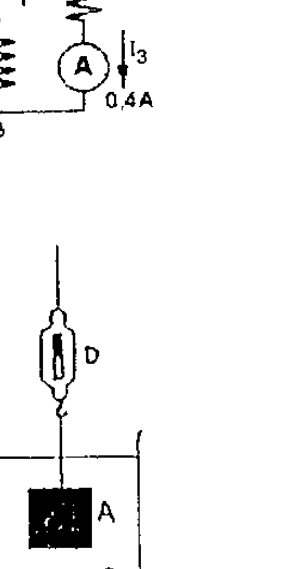
Topic: Circuits Metodi: Kirchhoff’s Laws, Equivalent Circuit Reduction Competenze: Physical Reasoning Objects: Resistor, Galvanometer, Battery Fonte: Testo (PDF) — p.3
PT7. Castelar, Buenos Aires. Blu. Nel circuito schematizzato nella figura, si I risultati sono stati ottenuti con un’ottima attenzione.
- non è un’impresa di grande importanza. Batteria. L’ampimetro indica 0,4 A. a) Trovare l’indicazione del voltometro. b) Determinare la resistenza del resistore R. c) Calcolare la potenza sviluppata in la fonte e ogni resistente.
Topic: Circuits Metodi: Kirchhoff’s Laws, Equivalent Circuit Reduction Competenze: Physical Reasoning Objects: Resistor, Galvanometer, Battery Fonte: Testo (PDF) — p.3
PT7. Castellar, Buenos Aires. Blue, please. In the circuit outlined in the figure, we The Commission’s proposals for the He despises the internal resistance of the I’m going to use the battery. The amp is 0.4 A. (a) Find the voltmeter indication. (b) Determine the resistance of the R resistor (c) Calculate the power developed in the source and on each resistor.
Topic: Circuits Metodi: Kirchhoff’s Laws, Equivalent Circuit Reduction Competenze: Physical Reasoning Objects: Resistor, Galvanometer, Battery Fonte: Testo (PDF) — p.3
PT8. Castelar, Buenos Aires. Azul.
El bloque A de la figura está suspendido mediante una
cuerda, de un dinamómetro D y se encuentra sumergido en
un líquido C contenido en el vaso B. El peso del vaso es
8,9 N y el del líquido es 13,35 N. El dinamómetro D indica
22,25 N y el dinamómetro de compresión E 66,78 N.
Sabiendo que la arista del bloque cúbico es de 10 cm:
a) ¿cuál es el peso por unidad de volumen del líquido
(peso específico)?
b) ¿Qué indicarán los dinamómetros D y E si se saca el
bloque A fuera del líquido?
c) Suponemos una nueva situación, donde el bloque es
de caucho (ρ=0,9 gf/cm3 ) y flota en el líquido del
punto anterior. Se vierte en el recipiente petróleo
(ρ=0,75gf/cm3 ), hasta que la capa superior de
petróleo se encuentra a 2 cm por encima de la cara
superior del bloque.
Debes determinar el espesor que tiene la capa de petróleo.
Aclaración: el bloque se mantiene con la base paralela al fondo del recipiente y
los líquidos son no miscibles.
Topic: Fluid Mechanics Metodi: Hydrostatic Equilibrium Competenze: Physical Reasoning Objects: Block, Container Fonte: Testo (PDF) — p.3
PT8. Castelar, Buenos Aires. Blu. Il blocco A della figura è sospeso da una La corda, di un dinamometro D e si trova immersa in un liquido C contenuto nel vaso B. Il peso del bicchiere è 8,9 N e quello del liquido è 13,35 N. Il dinamometro D indica: 22,25 N e il dinamometro di compressione E 66,78 N. Sapendo che l’orlo del blocco cubo è di 10 cm: a) qual è il peso per unità di volume del liquido (peso specifico)? b) Cosa indicano i dinamometri D e E se si toglie il blocco A fuori dal liquido? c) Supponiamo una nuova situazione, dove il blocco è di gomma (ρ=0,9 gf/cm3) e fluttuante nel liquido di punto precedente. Si versa nel recipiente di petrolio (ρ=0,75gf/cm3 ), fino a che la superficie superiore di Il petrolio si trova a 2 cm sopra la faccia superiore al blocco. Devi determinare il spessore del strato di petrolio. Clarificazione: il blocco è tenuto con la base parallela al fondo del recipiente e i liquidi non si miscigono.
Topic: Fluid Mechanics Metodi: Hydrostatic Equilibrium Competenze: Physical Reasoning Objects: Block, Container Fonte: Testo (PDF) — p.3
PT8. Castellar, Buenos Aires. Blue, please. Block A of the figure is suspended by a The rope, a dynamometer D and is submerged in a C-liquid contained in the B-glass. The weight of the glass is 8,9 N and the liquid is 13,35 N. The dynamometer D indicates The pressure pressure gauge E is 2225 N and the pressure dynamometer E is 66,78 N. Knowing that the edge of the cubic block is 10 cm: (a) what is the weight per unit volume of the liquid (specific weight)? (b) What will the dynamometers D and E indicate if the dynamometer is removed? block A out of the liquid? c) Suppose a new situation, where the block is of rubber (ρ=0,9 gf/cm3) and floating in the liquid of the the previous point. It ‘s poured into the oil tank . (ρ=0,75gf/cm3 ), until the upper layer of Oil is 2 cm above the face. the top of the block. You need to determine the thickness of the oil layer. Clarification: the block is held with the base parallel to the bottom of the container and The liquids are non-miscible.
Topic: Fluid Mechanics Metodi: Hydrostatic Equilibrium Competenze: Physical Reasoning Objects: Block, Container Fonte: Testo (PDF) — p.3
Un esquiador
PT9. Castelar, Buenos Aires. Azul. Un esquiador de 80 kg se deja caer por una colina de 30 metros de altura, partiendo con una velocidad inicial de 6m/s. No se impulsa con los bastones y se puede despreciar el rozamiento con la nieve y con el aire. Al llegar al final de la pendiente se encuentra con una pequeña rampa recta y sale despedido en un tiro oblicuo (considere al esquiador como un cuerpo puntual). a) ¿cuál es la velocidad al final de la pendiente? b) ¿cuál es la velocidad al salir despedido de la rampa? Suponga despreciable el rozamiento
OAF 2010 - 16
c) Observe la figura. El esquiador cae en un montículo de nieve. Determine:
a- la altura máxima que alcanza en su trayectoria en el tiro oblicuo
b- el lugar en el que cae (indicado como “x” en la figura, distancia
con respecto a la base de la rampa)
d) Si en la rampa hay rozamiento de coeficiente μ = 0,2 ¿cuáles son, en
este caso, los resultados de los puntos b) y c)?
h1= 30 m , h2= 2 m
Topic: Conservation of Energy, Newtonian Mechanics Metodi: Conservation of Energy, Kinematic Equations Competenze: Physical Reasoning Objects: Inclined Plane, Projectile Fonte: Testo (PDF) — p.3
Un sciatore
PT9. Castelar, Buenos Aires. Blu. Uno sciatore di 80 kg si lascia cadere su una collina alta 30 metri. partendo a una velocità iniziale di 6 m/s. Non si spinge con i bastoni e si può disprezzare il ruggine con la neve e con l’aria. Al termine del pendente si trova con una piccola rampa retta e usce di nuovo in un tiro oblicuo (considera lo sciatore come un corpo puntuale). a) qual è la velocità alla fine della pendenza? b) qual è la velocità di uscita dal ramp? Supponiamo che Degno di vergogna il ruggine.
OAF 2010 - 16 c) Notate la figura. Lo sciatore cade su un monte di neve. Determina: a- la massima altezza raggiunta nel suo percorso nel tiro oblicuo b- il luogo in cui cade (indicato come x nella figura, distanza con riferimento alla base del rampo) d) Se il ramp è stato rasato con un coefficiente μ = 0,2 quali sono, in in questo caso, i risultati di cui ai punti (b) e (c)? h1= 30 m , h2= 2 m
Topic: Conservation of Energy, Newtonian Mechanics Metodi: Conservation of Energy, Kinematic Equations Competenze: Physical Reasoning Objects: Inclined Plane, Projectile Fonte: Testo (PDF) — p.3
The following is the list of the countries of the European Union:
PT9. Castellar, Buenos Aires. Blue, please. A 50-pound skier is dropped off a 30-meter hill. Starting at an initial speed of 6m/s. Don ‘t push with sticks and get it . You can scorn the snow and the air. By the end of the slope meets a small straight ramp and gets fired at a Oblique shot (consider the skier as a point body). (a) what is the speed at the end of the slope? (b) what is the speed when discharged from the ramp? Suppose Despicable the grating
The following points shall be added: (c) See the figure. The skier falls on a snow mound. Determine: a- the maximum height reached in its trajectory on the oblique shot b- the place where it falls (indicated as x in the figure, distance with respect to the ramp base) (d) If there is a friction coefficient μ = 0,2 on the ramp, what are the coefficients, in in this case, the results of points (b) and (c)? h1= 30 m , h2= 2 m
Topic: Conservation of Energy, Newtonian Mechanics Metodi: Conservation of Energy, Kinematic Equations Competenze: Physical Reasoning Objects: Inclined Plane, Projectile Fonte: Testo (PDF) — p.3
Probando un TC 2000
PT10. Mar del Plata, Buenos Aires. Azul.
Probando un TC 2000.
Un Renault 19 tiene una masa de 1.200 kg. En 14,28
segundos alcanza los 100 km/h desde el reposo y si
avanza a 90 km/h en condiciones normales de
pavimento frena en 46,3 m. La forma del cuerpo del
automóvil es tal que su coeficiente de penetración
aerodinámico es Cx = 0,32 y el área frontal es
de 2,50 m2.
a)
Calcule la aceleración de 0 a 100 km/h.
b)
Determine el tiempo de frenado en las condiciones dadas.
c)
La fuerza aerodinámica, que actúa siempre en dirección contraria a la
velocidad del auto es directamente proporcional al coeficiente de
penetración aerodinámico, a la densidad del aire, a la superficie frontal
y al cuadrado de la velocidad. Todo esto multiplicado por ½. Sin tener
en cuenta otras fuentes de la fricción, calcule:
i) La fuerza aerodinámica que actúa cuando alcanza los 100 km/h.
aire = 1,2 kg/m3
ii)
La potencia que se requiere para que el auto se desplace en
línea recta a la velocidad anterior.
iii) La potencia requerida si ahora se desea mantener una
velocidad de 100 km/h subiendo una colina larga que se inclina
4°.
Puntaje:
a) 1,5
b) 2
c) i. 1,75 ii. 2,25 iii. 2,5
Topic: Newtonian Mechanics Metodi: Kinematic Equations, Free-Body Diagram Competenze: Physical Reasoning Objects: — Fonte: Testo (PDF) — p.3
Proviando un TC 2000
PT10. Mar del Plata, Buenos Aires. Blu. Provando un TC 2000. Una Renault 19 ha una massa di 1.200 kg. En 14,28 secondo raggiunge i 100 km/h dal riposo e se si allontana a 90 km/h in condizioni normali di Pavimentazione frenata a 46,3 m. La forma del corpo del La macchina è tale che il suo coefficiente di penetrazione Aerodinamica è Cx = 0,32 e la superficie frontale è de 2,50 m2. a) Calcolare l’accelerazione da 0 a 100 km/h. b) Determina il tempo di frenata nelle condizioni indicate. c) La forza aerodinamica, che agisce sempre in direzione contraria alla La velocità della macchina è direttamente proporzionale al coefficiente di penetrazione aerodinamica, densità dell’aria, superficie frontale e il quadrato della velocità. Tutto questo moltiplicato per 1⁄2. Senza avere se si considerano altre fonti di frizione, calcolare: i) La forza aerodinamica che agisce quando raggiunge i 100 km/h. aria = 1,2 kg/m3 ii) La potenza necessaria per spostare la macchina linea retta alla velocità precedente. iii) Potenza richiesta se si desidera ora mantenere una velocità di 100 km/h su una lunga collina che si inclina 4°. Punteggio: a) 1,5 b) 2 c) i. 1,75 ii. 2,25 iii. 2,5
Topic: Newtonian Mechanics Metodi: Kinematic Equations, Free-Body Diagram Competenze: Physical Reasoning Objects: — Fonte: Testo (PDF) — p.3
The test is performed on a single test tube.
PT10. The city of Mar del Plata, Buenos Aires. Blue, please. Trying a TC 2000. A Renault 19 has a mass of 1,200 kg. En 14,28 seconds reaches 100 km/h from rest and if It is moving at 90 km/h under normal conditions of Brake pavement at 46,3 m. The shape of the body of the The car is such that its penetration coefficient aerodynamic is Cx = 0.32 and the front area is de 2,50 m2. a) Calculate acceleration from 0 to 100 km/h. b) Determine the braking time under the given conditions. c) The aerodynamic force, which always acts in the direction opposite to the The speed of the car is directly proportional to the coefficient of Aerodynamic penetration, to the density of the air, to the front surface And the square of the velocity. All this times 1⁄2. Without having consider other sources of friction, calculate: (i) The aerodynamic force acting at 100 km/h. Air = 1.2 kg/m3 ii) The power required to move the car in straight line at the previous speed. (iii) The power required if a current is to be maintained 100 km/h speed on a long sloping hill 4°. Score: a) 1,5 b) 2 c) i. 1,75 ii. The Commission shall adopt implementing acts in accordance with Article 21 of this Regulation. 2,5
Topic: Newtonian Mechanics Metodi: Kinematic Equations, Free-Body Diagram Competenze: Physical Reasoning Objects: — Fonte: Testo (PDF) — p.3
Un tubo en U particular
PT11. Mar del Plata, Buenos Aires. Azul. Un tubo en U particular. Se vierte mercurio en tubo en U, como se muestra en la Figura a. El brazo izquierdo del tubo tiene una sección transversal A1 de 10,0 cm2, y el brazo derecho tiene un A2 de 5,00 cm2.
OAF 2010 - 17
Cien gramos de agua se vierten entonces en el brazo derecho, como se muestra
en la Figura b.
a) Determinar la longitud de la columna de agua en el brazo derecho del
tubo en U. Densidad del agua, = 1 g/cm3
b) Considerando que la densidad del mercurio es 13,6 g/cm3, ¿qué distancia
h ha subido el mercurio en el brazo izquierdo?
c) ¿Cómo modifica las respuestas anteriores si A1 = A2 = 5,00 cm2? d) Ahora suponga que se retira todo el mercurio y se llena el tubo en U con agua hasta la marca de la Figura a. Luego una pequeña esfera hueca de acero, de 2 cm de diámetro, es colocada en el brazo de la izquierda del tubo en U, entonces las dos terceras partes de la esfera queda sumergida en agua. ¿Cuál es la masa de acero de la esfera? acero = 7.850 kg/m3 Puntaje:
a) 2 b) 2,5 c) 2,5 d) 3
Topic: Fluid Mechanics Metodi: Hydrostatic Equilibrium Competenze: Physical Reasoning Objects: Tube, Sphere Fonte: Testo (PDF) — p.3
Un tubo in U particolare
PT11. Mar del Plata, Buenos Aires. Blu. Un tubo in U particolare. Si versa il mercurio in tubo in U, come si fa mostra nella figura a. Il braccio sinistro del tubo ha una sezione trasversale A1 di 10,0 cm2, e il braccio destro ha un A2 di 5,00 cm2.
OAF 2010 - 17 Centinaia di grammi di acqua vengono versati poi nel braccio destro, come si vede. in Figura b. a) Determinare la lunghezza della colonna d’acqua sul braccio destro del tubo in U. Densità dell’acqua, = 1 g/cm3 b) Considerando che la densità del mercurio è di 13,6 g/cm3, quale distanza Ha salito il mercurio nel braccio sinistro?
c) Come modifica le risposte precedenti se A1 = A2 = 5,00 cm2? d) Supponiamo che si togliano tutti i mercurio e si riempie il tubo in U con acqua fino al punto di riferimento di figura a. Poi una piccola sfera vuota di 2 cm di diametro, è collocato sul braccio sinistro del tubo in U, quindi i due terzi della sfera rimangono immersa in acqua. Qual è la massa dell’acciaio della sfera? acciaio = 7,850 kg/m3 Punteggio:
a) 2 b) 2,5 c) 2,5 d) 3
Topic: Fluid Mechanics Metodi: Hydrostatic Equilibrium Competenze: Physical Reasoning Objects: Tube, Sphere Fonte: Testo (PDF) — p.3
A tube in particular U
PT11. The city of Mar del Plata, Buenos Aires. Blue, please. A tube in a particular U. It pours mercury into the tube in U, as it is. The following table shows the number of samples taken from the sample. The left arm of the tube has a cross section A1 of 10.0 cm2, and the right arm has an A2 of 5.00 cm2.
The following points shall be added: A hundred grams of water is then poured into the right arm, as shown. In Figure b. (a) Determine the length of the water column on the right arm of the tube in U. Density of water, = 1 g/cm3 (b) Whereas the mercury density is 13.6 g/cm3, what distance Has the mercury gone up in your left arm?
(c) How do you modify the above answers if A1 = A2 = 5,00 cm2? (d) Now suppose you take all the mercury out and fill the tube in U with water to the mark in Figure a. Then a small hollow sphere of The steel, 2 cm in diameter, is placed on the left arm of the tube in U, then two-thirds of the sphere remains. submerged in water. What is the mass of the steel in the sphere? The following table shows the total value of the products: Score:
a) 2 b) 2,5 c) 2,5 d) 3
Topic: Fluid Mechanics Metodi: Hydrostatic Equilibrium Competenze: Physical Reasoning Objects: Tube, Sphere Fonte: Testo (PDF) — p.3
La pava enchufada
PT12. Mar del Plata, Buenos Aires. Azul.
Ojo!! La pava enchufada!!
Una pava eléctrica funciona con 220 V y tiene dos arrollamientos, que
desarrollan 1200 y 2200 W respectivamente. Se llena la pava con agua y al
conectar uno de ellos, el agua desde los 20 °C hervirá completamente en un
tiempo t1 = 36,11 minutos, si conectamos el otro, con la misma cantidad de agua
y temperatura inicial hervirá completamente en un tiempo t2 = 19,69 minutos.
a) ¿Cuántos litros de agua tiene la pava?
b) Calcule la resistencia de cada uno de los arrollamientos.
c) Si se conecta a una línea de alimentación de 110 V ¿cuánto tarda en
hervir ahora el agua?
d) ¿Después de cuánto tiempo hervirá la misma cantidad de agua, si
conectamos dos arrollamientos al mismo tiempo, a 220 V?
i.
¿En serie?
ii.
¿En paralelo?
Datos: Calor latente de vaporización, LV = 2,26 x106 J/ kg; calor específico del
agua, Ce = 4.186 J/ kg.°C; densidad del agua, = 1 g/cm3
Puntaje:
a) 2,5 b) 1,5
c) 2 d) i. 2
ii. 2
Topic: Thermodynamics, Circuits Metodi: First Law of Thermodynamics, Kirchhoff’s Laws Competenze: Physical Reasoning Objects: Resistor, Container Fonte: Testo (PDF) — p.3
**La palma connessa **
PT12. Mar del Plata, Buenos Aires. Blu. Occhio!! La pava inchiusa!! Una pava elettrica funziona a 220 V e ha due ruote, che che sviluppano 1200 e 2200 W rispettivamente. Si riempie la padella di acqua e al Se si collega uno di questi, l’acqua da 20 °C verrà completamente bollita in un tempo t1 = 36,11 minuti, se ci colleghiamo l’uno all’altro, con la stessa quantità di acqua e la temperatura iniziale si ferverà completamente in un tempo t2 = 19,69 minuti. a) Quanti litri di acqua ha la pava? b) Calcolare la resistenza di ciascun crollo. c) Se si collega a una linea di alimentazione 110 V, quanto tempo ci vuole per far bollire l’acqua ora? d) Dopo quanto tempo si ferverà la stessa quantità di acqua, se collegare due ruote contemporaneamente, a 220 V? i. In serie? ii.
- In parallelo? Data: Calore latente di vaporizzazione, LV = 2,26 x106 J/ kg; calore specifico di acqua, Ce = 4,186 J/ kg.°C; densità dell’acqua, = 1 g/cm3 Punteggio: a) 2,5 b) 1,5 c) 2 d) i. 2 ii. 2
Topic: Thermodynamics, Circuits Metodi: First Law of Thermodynamics, Kirchhoff’s Laws Competenze: Physical Reasoning Objects: Resistor, Container Fonte: Testo (PDF) — p.3
The plugged paddle
PT12. The city of Mar del Plata, Buenos Aires. Blue, please. I’m going to see you! The paddled duck! An electrical power plant operates at 220 V and has two overruns, which They develop 1200 and 2200 W respectively. It fills the paws with water and al If you connect one of them, the water from the MSK0/>C will boil completely in a time t1 = 36.11 minutes, if we connect the other, with the same amount of water and the initial temperature will boil completely in a time t2 = 19.69 minutes. (a) How many liters of water does the peacock have? (b) Calculate the resistance of each of the rolls. (c) If connected to a 110 V power line, how long does it take to Boil the water now? (d) After how long will the same amount of water boil, if We connect two overruns at the same time, to 220 V? i. In series? ii. In parallel? Data: Latent heat of vaporization, LV = 2.26 x 106 J/ kg; specific heat of the water, Ce = 4,186 J/ kg.°C; density of water, = 1 g/cm3 Score: a) 2,5 b) 1,5 c) 2 d) i. 2 ii. 2
Topic: Thermodynamics, Circuits Metodi: First Law of Thermodynamics, Kirchhoff’s Laws Competenze: Physical Reasoning Objects: Resistor, Container Fonte: Testo (PDF) — p.3
PT13. Provincia de Catamarca. Azul.
Un concepto esencial de la termodinámica es el de
sistema macroscópico, que se define como un conjunto
de materia que se puede aislar espacialmente y que
coexiste con un entorno infinito e imperturbable. El
estado de un sistema macroscópico en equilibrio puede
describirse mediante propiedades medibles como la
temperatura, la presión o el volumen, que se conocen
como variables termodinámicas. Ahora bien, en el
análisis de sistemas tiene vital importancia la cuantificación del “calor”, el cual se
refiere a la transferencia de energía de una parte a otra de un cuerpo, o entre
diferentes cuerpos, en virtud de una diferencia de temperatura.
En un bloque de Hormigón de 2 kg de masa, a una temperatura inicial de 104
ºF y calor específico de 0,2 kcal/kg ºC se introduce en un litro de agua (1l = 1
kg) a temperatura t = 293K y calor específico Ce=1.0 kcal/kg. ºC.
a) Exprese la temperatura inicial del hormigón en º C y K.
b) Determine la temperatura final de equilibrio.
c) ¿Qué cantidad de calor cedió el bloque al agua?
OAF 2010 - 18
Topic: Thermodynamics Metodi: First Law of Thermodynamics Competenze: Physical Reasoning Objects: Calorimeter Fonte: Testo (PDF) — p.3
PT13. Provincia di Catamarca. Blu. Un concetto essenziale della termodinamica è quello di sistema macroscopico, che si definisce come un insieme di materia spazialmente isolabile e che coesiste con un ambiente infinito e imperturbabile. El lo stato di un sistema macroscopico in equilibrio può descriversi con proprietà misurabili come la temperatura, pressione o volume, che sono noti come variabili termodinamiche. Ora, nel L’analisi dei sistemi è di vitale importanza per quantificare il “calore” che viene si riferisce al trasferimento di energia da una parte di un corpo ad un’altra, o tra I corpi sono diversi, in virtù di una differenza di temperatura. In un blocco di cemento di 2 kg di massa, a una temperatura iniziale di 104 oF e calore specifico di 0,2 kcal/kg oC viene introdotto in un litro di acqua (1l = 1 kg) a temperatura t = 293K e calore specifico Ce = 1,0 kcal/kg. ºC. a) Indicare la temperatura iniziale del calcestruzzo in o C e K. b) Determina la temperatura di equilibrio finale. c) Quanta calore ha ceduto il blocco all’acqua?
OAF 2010 - 18
Topic: Thermodynamics Metodi: First Law of Thermodynamics Competenze: Physical Reasoning Objects: Calorimeter Fonte: Testo (PDF) — p.3
PT13. Province of Catamarca. Blue, please. An essential concept of thermodynamics is that of The macroscopic system, which is defined as a set The first is the space-isolated matter. coexist with an infinite and uninterruptible environment. El The state of a macroscopic system in equilibrium can be be described by measurable properties such as temperature, pressure or volume, known as thermodynamic variables. Now, in the The analysis of systems is vital in quantifying the ‘heat’ which is being refers to the transfer of energy from one part of a body to another, or between different bodies, by virtue of a difference in temperature. In a 2 kg block of concrete, at an initial temperature of 104 °C oF and specific heat of 0,2 kcal/kg oC is introduced into one litre of water (1l = 1 (kg) at a temperature of t = 293K and specific heat Ce = 1.0 kcal/kg. ºC. (a) Express the initial temperature of the concrete in either C and K. (b) Determine the final equilibrium temperature. (c) How much heat did the block release into the water?
The following points shall be added:
Topic: Thermodynamics Metodi: First Law of Thermodynamics Competenze: Physical Reasoning Objects: Calorimeter Fonte: Testo (PDF) — p.3
PT14. Provincia de Catamarca. Azul.
Cuando un cuerpo sólido, rígido, intenta
deslizar o efectivamente desliza sobre la
superficie de otro sólido, se presenta en dicha
superficie una fuerza de contacto realizada por
un cuerpo sobre el otro. Esta fuerza
denominada de fricción desempeña un
importante papel en el movimiento de los
cuerpos. En algunos casos sus efectos son
indeseables, como entre los pistones y los
cilindros en el motor, o en piezas móviles
como engranajes, ejes y rodamientos, y se
busca minimizarlos con pulimento y lubricantes. En otros casos, en cambio, los
efectos de la fricción son deseables, fundamentales, como entre las pastas y los
discos de frenos, como entre las correas y las poleas, como entre los neumáticos
y el piso, bien sea al acelerar, frenar o dar curvas, y se busca acrecentarlos con
materiales y rugosidades adecuados.
El siguiente dispositivo consta de los bloque A y B que están unidos por una
cuerda de masa despreciable e inextensible, la cual pasa por una polea liviana y
sin roce. El bloque B tiene una masa igual a 15 kg y el plano inclinado de 30° de
inclinación, es rugoso, con coeficientes de roce estático igual a 0,2 y coeficiente
de roce cinético igual a 0,1.
a) Realice un diagrama de cuerpo libre mostrando todas las fuerzas
involucradas.
b) Calcular: i) La tensión (T) en la cuerda cuando el sistema está en
equilibrio.
ii) El mayor valor que puede tener la masa del bloque A para
que el sistema esté a punto de empezar a moverse.
iii) La distancia que recorre el bloque B al primer segundo del
desplazamiento, si la masa A tiene un valor de 60 kg.
Topic: Newtonian Mechanics Metodi: Free-Body Diagram, Kinematic Equations Competenze: Physical Reasoning Objects: Block, Inclined Plane, Pulley Fonte: Testo (PDF) — p.3
PT14. Provincia di Catamarca. Blu. Quando un corpo solido, rigido, cerca di scivolare o effettivamente scivolare sulla La superficie di un altro solido, si presenta in tale superficie una forza di contatto effettuata da un corpo sull’altro. Questa forza La funzione di rivolgimento è di un ruolo importante nel movimento dei corpi. In alcuni casi i suoi effetti sono:
- non sono desiderosi, come tra i pistoni e i cilindri nel motore o in parti mobili come ingranaggi, assi e rodelli, e si cerca di ridurli al minimo con polveri e lubrificanti. In altri casi, invece, i Gli effetti della frizione sono desiderabili, fondamentali, come tra le paste e i dischi di frenatura, come tra le corde e le pole, come tra le gomme e il pavimento, sia accelerando, frenando o dando curve, e si cerca di aumentarli con materiali e rugosità adeguati. Il dispositivo seguente è costituito dai blocchi A e B che sono uniti da un una corda di massa disprezzabile e inestensibile, che passa attraverso una polea leggera e senza spazzolare. Il blocco B ha una massa pari a 15 kg e il piano inclinato di 30° di inclinamento, rugoso, con coefficienti di rottura statica pari a 0,2 e coefficiente di rottura cinetica pari a 0,1. a) Realizzare un diagramma di corpo libero mostrando tutte le forze. coinvolte. b) Calcolare: i) La tensione (T) sulla corda quando il sistema è in equilibrio. (ii) Il valore più alto che può avere la massa del blocco A per che il sistema è pronto a iniziare a muoversi. iii) La distanza percorsa dal blocco B al primo secondo di spostamento, se la massa A ha un valore di 60 kg.
Topic: Newtonian Mechanics Metodi: Free-Body Diagram, Kinematic Equations Competenze: Physical Reasoning Objects: Block, Inclined Plane, Pulley Fonte: Testo (PDF) — p.3
PT14. Province of Catamarca. Blue, please. When a solid, rigid body tries to slide or actually slide over the surface of another solid, is present in the latter surface a contact force made by One body on top of the other. This force The resulting friction is called friction. important role in the movement of the bodies. In some cases, its effects are Unwanted, such as between pistons and the cylinders in the engine, or in moving parts as gears, axles and bearings, and are It’s trying to minimize them with lubricants and lubricants. In other cases, however, the The effects of friction are desirable, fundamental, such as between the pastes and the brake discs, such as between straps and pulleys, such as between tyres and the floor, either by accelerating, braking or bending, and it seeks to increase them with suitable materials and roughness. The following device consists of blocks A and B which are joined by a a scornful and unextensible mass rope, which passes through a light pulley and without rubbing. Block B has a mass equal to 15 kg and the slope 30° of slope, is rough, with static friction coefficients equal to 0,2 and coefficient of a kinetic brush equal to 0,1. (a) Draw a free-body diagram showing all the forces. involved. (b) Calculate: (i) The voltage (T) on the rope when the system is at The balance. (ii) The greatest value that block A mass can have for The system is about to start moving. (iii) The distance travelled by block B in the first second of displacement, if mass A has a value of 60 kg.
Topic: Newtonian Mechanics Metodi: Free-Body Diagram, Kinematic Equations Competenze: Physical Reasoning Objects: Block, Inclined Plane, Pulley Fonte: Testo (PDF) — p.3
PT15. Provincia de Catamarca. Azul.
Una Óptica no sólo es el lugar en donde la
gente compra lentes para ver mejor. Sino
que es una de la rama de la física que
estudia el comportamiento de la luz, sus
características y sus manifestaciones. La
mayor parte de las cosas que vemos a
nuestro alrededor no emiten su propia luz.
Son visibles por que reemiten la luz que le
llega a su superficie desde la fuente
primaria, como el sol o una lámpara, o
desde una fuente secundaria, como el
cielo iluminado. Cuando la luz llega a la
superficie de un material es remitida sin cambiar de frecuencia, o es absorbida
en el material y convertida en calor. Una lente es un medio transparente limitado
por dos superficies. Las lentes se utilizan generalmente para formar imágenes
por refracción en los instrumentos ópticos, como cámaras fotográficas,
telescopios, microscopio, etc.
Una lente convergente con radios de curvatura de sus caras iguales, y que
suponemos delgada, tiene una distancia focal de 50 cm. Proyecta sobre una
pantalla la imagen de un objeto de tamaño 5 cm.
a) Dibuje el diagrama de rayos correspondiente.
OAF 2010 - 19 b) Calcule la distancia de la pantalla a la lente para que la imagen tenga un tamaño de 40 cm. c) Si el índice de refracción de la lente es igual a 1,5. ¿Qué valor tienen los radios de la lente y cuál es la potencia de la misma?
Topic: Geometric Optics Metodi: Thin Lens & Mirror Equation, Ray Tracing Competenze: Physical Reasoning Objects: Lens, Screen Fonte: Testo (PDF) — p.3
PT15. Provincia di Catamarca. Blu. Un’ottica non è solo il posto dove la La gente compra gli occhiali per vedere meglio. - No , no . che è uno dei settori della fisica che studia il comportamento della luce, i suoi Le caratteristiche e le manifestazioni. La La maggior parte delle cose che vediamo a che non emettono la propria luce. Sono visibili perché riemettono la luce che gli viene Arriva alla sua superficie dalla sorgente primaria, come il sole o una lampada, o da una fonte secondaria, come il cielo illuminato. Quando la luce arriva alla luce la superficie di un materiale viene rimessa senza cambiare frequenza, o viene assorbita nel materiale e trasformato in calore. Un obiettivo è un mezzo trasparente limitato. per due superfici. Le lenti sono generalmente usate per formare immagini. per rifrazione in strumenti ottici, come telecamere, Teleskopi, microscopi, ecc. Un obiettivo convergente con i raggi di curvatura dei loro volti uguali, e che Supponiamo che sia sottile, ha una distanza focale di 50 cm. Progetto su una scherma l’immagine di un oggetto di 5 cm di grandezza. a) Disegnare il diagramma di raggi corrispondente.
OAF 2010 - 19 b) Calcolare la distanza tra lo schermo e il lente in modo che l’immagine abbia un dimensioni di 40 cm. c) Se l’indice di refraczione della lente è pari a 1,5. Che valore hanno? i raggi della lente e qual è la sua potenza?
Topic: Geometric Optics Metodi: Thin Lens & Mirror Equation, Ray Tracing Competenze: Physical Reasoning Objects: Lens, Screen Fonte: Testo (PDF) — p.3
PT15. Province of Catamarca. Blue, please. An optics is not just the place where the People buy glasses to see better. I ‘m not . It’s one of the branches of physics that It studies the behavior of light, its characteristics and their manifestations. La Most of the things we see are a. Our surroundings don’t emit their own light. They ‘re visible because they re-emitted the light that gave them . It reaches its surface from the source. primary, such as sun or lamp, or from a secondary source, such as The sky is lit. When the light reaches the surface of a material is either transmitted without changing frequency, or absorbed in the material and converted to heat. A lens is a limited transparent medium. by two surfaces. Lenses are usually used to form images. by refraction on optical instruments, such as photographic cameras, The following is the list of the types of equipment used: A convergent lens with radii of curvature of its equal faces, and that Let’s say it’s thin, it has a focal length of 50 centimeters. Project on a The image of an object measuring 5 cm is displayed. (a) Draw the corresponding beam diagram.
The following points shall be added: (b) Calculate the distance from the screen to the lens so that the image has a size of 40 cm. (c) If the lens refractive index is equal to 1.5. What value do they have? The radii of the lens and what is the power of the lens?
Topic: Geometric Optics Metodi: Thin Lens & Mirror Equation, Ray Tracing Competenze: Physical Reasoning Objects: Lens, Screen Fonte: Testo (PDF) — p.3
Una llanta de hierro
PT16. Provincia de Catamarca. Verde.
Un herrero es una persona que elabora objetos de hierro o acero. Trabajan
calentando las partes del hierro o del acero a modelar con instrumentos como el
martillo. El calentado se realiza en una forja de
propano, gas natural, carbón, leña o coque.
También se puede utilizar oxiacetileno o una llama
similar para trabajar localizando el calor. El color es
importante para determinar la temperatura y
maleabilidad del metal: cuando el hierro es
calentado para incrementar su temperatura,
primero se vuelve rojo, luego anaranjado, amarillo y
finalmente blanco. El color ideal para el forjado es
un blanco-anaranjado. Como deben ser capaces de ver el color del metal para
trabajar, muchos herreros trabajan en lugares de baja iluminación. La herrería
tradicional de fragua ha pasado en pocos años de ser un oficio en extinción a un
trabajo artesanal bien remunerado y apreciado.
Un herrero ha de colocar una llanta circular (anillo) de hierro de 1 m de diámetro
a una rueda de madera de igual diámetro. Con objeto de poder ajustarla, calienta
la llanta hasta conseguir que su radio supere en 2 mm al de la rueda. Sabiendo
que la temperatura ambiente es de 68 ºF en un día templado (coeficiente de
dilatación lineal α = 12,2x10-6 ºC-1).
a) Expresar la temperatura ambiente en ºC y K.
b) Calcular la longitud final de la llanta, conociendo que su radio aumentó
2mm.
c) Calcular el aumento de longitud de la llanta.
d) Calcular la temperatura final en grados Celsius a la cual debe calentarse
la llanta para cumplir las condiciones expuestas.
Topic: Thermodynamics Metodi: First Law of Thermodynamics, Dimensional Analysis Competenze: Physical Reasoning Objects: Wheel Fonte: Testo (PDF) — p.3
Una ruota di ferro
PT16. Provincia di Catamarca. Verde. Un ferriere è una persona che lavora oggetti di ferro o acciaio. Lavorano . Caldazione delle parti di ferro o acciaio da modellare con strumenti come il
- Un martello. Il riscaldamento si effettua in una fabbrica di Propano, gas naturale, carbone, legno o coke. Si può anche usare ossiacetilene o una fiamma simile per lavorare localizzando il calore. Il colore è importante per determinare la temperatura e Malleabilità del metallo: quando il ferro è riscaldato per aumentare la temperatura, Prima diventa rosso, poi arancione, giallo e… Finalmente bianco. Il colore ideale per il forge è un bianco-aranciato. Come devono essere in grado di vedere il colore del metallo per Lavorare, molti fabbri lavorano in luoghi poco illuminati. La fabbrica di ferro tradizionale di foraggio è passato in pochi anni da essere un mestiere in estinzione a un lavoro artigianale ben remunerato e apprezzato. Un fabbro deve mettere un anello di ferro circolare di 1 m di diametro a una ruota di legno di uguale diametro. Per poterla regolare, scalda. il pneumatico fino a che il suo raggio supera di 2 mm quello della ruota. Sapendo La temperatura ambiente è di 68oF su un giorno tempesto (coefficiente di dilatazione lineare α = 12,2x10-6 oC-1). a) Esprimere la temperatura ambiente in oC e K. b) Calcolare la lunghezza finale della gomma, sapendo che il suo raggio è aumentato 2mm. c) Calcolare l’aumento della lunghezza della gomma. d) Calcolare la temperatura finale in gradi Celsius a cui deve essere riscaldata il pneumatico per soddisfare le condizioni esposte.
Topic: Thermodynamics Metodi: First Law of Thermodynamics, Dimensional Analysis Competenze: Physical Reasoning Objects: Wheel Fonte: Testo (PDF) — p.3
The following is the list of the types of equipment used:
PT16. Province of Catamarca. Green, please. A blacksmith is a person who makes objects of iron or steel. They work . Heating the parts of iron or steel to be modelled with instruments such as the The hammer. Heating is done in a forge of Propane, natural gas, coal, wood or coke. You can also use oxyacetylene or a flame. It’s similar to working on heat tracing. The color is important for determining temperature and Metal malleability: when iron is Heated to increase its temperature, First it turns red, then orange, yellow and then Finally white. The ideal color for the forged is A white-orange. How should you be able to see the color of the metal for Many blacksmiths work in low-light areas. The blacksmith shop . Traditional forging has gone from being an extinct craft to a a well-paid and appreciated craft. A blacksmith shall place a circular iron wheel (ring) of 1 m in diameter to a wooden wheel of equal diameter. To adjust it, heat it up. the tyre until its radius exceeds 2 mm that of the wheel. Knowing The temperature of the room is 68oF on a temperate day (coefficient of ). The following conditions shall apply: (a) Express the ambient temperature in oC and K. (b) Calculate the final length of the tyre, knowing that its radius increased 2mm. (c) Calculate the increase in tyre length. (d) Calculate the final temperature in degrees Celsius to which it must be heated the tyre to meet the conditions set out.
Topic: Thermodynamics Metodi: First Law of Thermodynamics, Dimensional Analysis Competenze: Physical Reasoning Objects: Wheel Fonte: Testo (PDF) — p.3
PT17. Provincia de Catamarca. Verde.
Un plano inclinado es una porción de suelo que
forma un cierto ángulo con la horizontal sin llegar
a ser vertical, es decir, siendo el ángulo
0º < < 90º. Esta máquina simple, permite reducir
la fuerza necesaria para elevar o descender un
peso.
Un bloque de 4kg masa, inicialmente en reposo,
asciende a lo largo de un plano inclinado áspero,
de 1m de longitud e inclinación respecto de la
horizontal = 53°, debido a la acción de una
fuerza horizontal constante de magnitud 60N. Si al
término del recorrido el bloque tiene una velocidad de 1,2m/s:
OAF 2010 - 20
a) Realiza el diagrama de cuerpo libre mostrando todas las fuerzas
involucradas.
b) Calcula:
i-
El trabajo realizado por una fuerza constante paralela al plano.
ii- El trabajo realizado por la fuerza de roce.
iii- El trabajo neto resultante.
iv- El coeficiente de roce cinético entre el bloque y el plano.
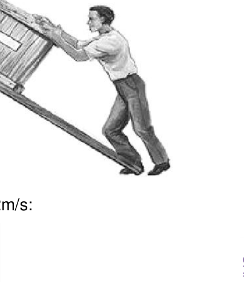
Topic: Newtonian Mechanics, Conservation of Energy Metodi: Free-Body Diagram, Conservation of Energy Competenze: Physical Reasoning Objects: Block, Inclined Plane Fonte: Testo (PDF) — p.3
PT17. Provincia di Catamarca. Verde. Un piano inclinato è una porzione di terreno che forma un certo angolo con la orizzontale senza raggiungere essere verticale, cioè essere angolare 0º < < 90º. Questa semplice macchina, permette di ridurre la forza necessaria per sollevare o scendere un peso. Un blocco di 4 kg di massa, inizialmente a riposo, Si eleva lungo un piano inclinato, di 1 m di lunghezza e di inclinazione rispetto alla L’azione di una = 53°, a causa dell’azione di una forza orizzontale costante di magnitudo 60N. Si al termine del percorso il blocco ha una velocità di 1,2 m/s:
OAF 2010 - 20 a) Realizza il diagramma del corpo libero mostrando tutte le forze. coinvolte. b) Calcola: i- Il lavoro svolto da una forza costante parallela al piano. ii- Il lavoro effettuato con forza di frattura. iii- Il lavoro netto risultante. iv- Coefficiente di rottura cinetica tra il blocco e il piano.
Topic: Newtonian Mechanics, Conservation of Energy Metodi: Free-Body Diagram, Conservation of Energy Competenze: Physical Reasoning Objects: Block, Inclined Plane Fonte: Testo (PDF) — p.3
PT17. Province of Catamarca. Green, please. An inclined plane is a portion of the ground that is It forms a certain angle with the horizontal without reaching it. to be vertical, that is, being the angle 0º < < 90º. This simple machine, it allows you to reduce The force needed to raise or lower a weight. A block of 4kg mass, initially at rest, rises along a roughly sloping plane, 1 m in length and inclination with respect to the horizontal = 53°, due to the action of a a constant horizontal force of magnitude 60N. Si al The block has a speed of 1,2m/s:
The following points shall be added: (a) Perform the free body diagram showing all the forces. involved. (b) Calculate: i- The work done by a constant force parallel to the plane. (ii) Work performed by force of friction. (iii) The net resulting labour. iv- The kinetic friction coefficient between the block and the plane.
Topic: Newtonian Mechanics, Conservation of Energy Metodi: Free-Body Diagram, Conservation of Energy Competenze: Physical Reasoning Objects: Block, Inclined Plane Fonte: Testo (PDF) — p.3
Descomposicion de la luz blanca
PT18. Provincia de Catamarca. Verde.
Luego de una lluvia se forma un arco iris en la dirección opuesta al Sol. Lo que
ocurre entonces es que la luz del Sol penetra en cada gota de lluvia
descomponiéndose, formando entonces un espectro de colores que percibe
nuestro ojo.
Si jugáramos con un prisma (que es una pequeña pirámide
hecha de cristal) observaríamos el mismo efecto. Isaac Newton
explicó correctamente que lo que se observaba era la
refracción de la luz, la desviación de cada color por un ángulo
diferente. Newton realizó por primera vez el experimento de
descomponer la luz a través de un prisma, demostrando que la
luz blanca está formada por diferentes colores. Las gotas de lluvia son, en cierta
manera, como diminutos primas en el cielo.
Un rayo de luz blanca incide desde el aire sobre una lámina de vidrio con un
ángulo de incidencia de 300.(naire=1)
a) Realiza un diagrama mostrando la descomposición de la luz a través de
la lámina.
b) ¿Qué color de luz sufre mayor desviación, el azul o el rojo?
c) Calcule la frecuencia de cada color (velocidad de la luz en el
vacío= c = 3 x 10 8 m s-1 ).
d) ¿Qué ángulo formarán entre sí en el interior del vidrio los rayos rojo y
azul , componentes de la luz blanca, si los valores de los índices de
refracción del vidrio para estos colores son, respectivamente,
rojo
n
= 1,612
y nazul=1,671.
e) ¿Cuáles serán los valores de la longitud de onda correspondientes a
cada una de estos colores en el vidrio, si las longitudes de onda en el
vacío son, respectivamente, rojo= 656,3 nm y azul = 486,1 nm?
(velocidad de la luz en el vacío= c = 3 x 10 8 m s-1 )
Topic: Geometric Optics, Wave Optics Metodi: Snell’s Law, Wave Equation Competenze: Physical Reasoning Objects: Prism Fonte: Testo (PDF) — p.3
Decomposti della luce bianca
PT18. Provincia di Catamarca. Verde.
Dopo una pioggia si forma un arcopioglio nella direzione opposta al Sole. Che cosa?
E ’ quando la luce del sole penetra in ogni goccia di pioggia
si decompone, formando quindi uno spettro di colori che percepe.
il nostro occhio.
Se giochiamo con un prisma (che è una piccola piramide)
(Gli occhi si rivelano) avremmo visto lo stesso effetto. Isaac Newton
Ha spiegato correttamente che quello che si vedeva era la
la refraczione della luce, la deviazione di ogni colore da un angolo.
diverso. Newton ha condotto per la prima volta l’esperimento di
decompone la luce attraverso un prisma, dimostrando che la
la luce bianca è costituita da diversi colori. Le gocce di pioggia sono, in un certo modo
Come piccoli primati nel cielo.
Un raggio di luce bianca incide dall’aria su una lastra di vetro con un
angolo di incidenza di 300.(naire=1)
a) Realizza un diagramma che mostra la decomposizione della luce attraverso
la lamina.
b) Quale colore di luce è più deviato, il blu o il rosso?
c) Calcolare la frequenza di ogni colore (velocità della luce in
vuoto = c = 3 x 10 8 m s-1).
d) A che angolo si formano gli raggi rossi all’interno del vetro e
Il valore di un indice di valore di
La refraczione del vetro per questi colori sono, rispettivamente,
rosso
n
= 1,612
e nazul = 1.671.
(e) Quali saranno i valori della lunghezza d’onda corrispondenti a
Ogni colore in vetro, se le lunghezze d’onda in
sono rispettivamente vuoti, rosso = 656,3 nm e blu = 486,1 nm?
(velocità della luce nel vuoto = c = 3 x 10 8 m s-1)
Topic: Geometric Optics, Wave Optics Metodi: Snell’s Law, Wave Equation Competenze: Physical Reasoning Objects: Prism Fonte: Testo (PDF) — p.3
Witness decomposition of the white light
PT18. Province of Catamarca. Green, please.
After a rainfall, a rainbow forms in the direction opposite to the Sun. What ?
It happens then is that sunlight penetrates every drop of rain
It breaks down, then forms a spectrum of colors that it perceives.
our eye.
If we were to play with a prism (which is a small pyramid)
We’d see the same effect. Isaac Newton is the father of the law .
He correctly explained that what was being observed was the
Refraction of light, the deviation of each color by an angle.
It’s different. Newton first conducted the experiment of
decomposing light through a prism, showing that the
white light is made up of different colors. The rain drops are, in a way.
Like tiny cousins in the sky.
A ray of white light hits from the air on a sheet of glass with a
angle of incidence of 300.(naire=1)
(a) Draw a diagram showing the decomposition of light through
the sheet.
(b) Which color of light is most affected, blue or red?
(c) Calculate the frequency of each color (the speed of light in the
The following is the list of the following:
(d) What angle will the red rays form with each other inside the glass and
The values of the indices of
glass refraction for these colors are, respectively,
Red
n
= 1,612
and nazul is 1,671.
(e) What are the wavelength values for
Each of these colors in the glass, if the wavelengths in the
are empty, respectively, red = 656.3 nm and blue = 486.1 nm?
(speed of light in vacuum = c = 3 x 10 8 m s-1)
Topic: Geometric Optics, Wave Optics Metodi: Snell’s Law, Wave Equation Competenze: Physical Reasoning Objects: Prism Fonte: Testo (PDF) — p.3
Prensa hidraulica
PT19. Dos de Mayo, Misiones. Azul.
En una prensa hidráulica que tiene uno de sus cilindros de 2,5cm2 y el otro de
128cm2. El émbolo del cilindro mayor sostiene un cuerpo de 2000Kg. Que debe
levantarse 7cm más arriba.
a. ¿Qué cantidad de energía hay que aportar al sistema para levantar el
cuerpo?
b. ¿Qué potencia debe tener su sistema para levantar la carga en 20 seg?
c. Cuando la carga esté a la altura necesaria ¿Qué distancia se habrá
desplazado el émbolo menor?
d. Determina la fuerza que hay que aplicar al embolo menor para equilibrar
la fuerza ejercida por la carga.
e. Si sobre el embolo menor se ejerce una fuerza 2% mayor a la necesaria
para equilibrar el peso de la carga ¿Qué aceleración recibirá esta?
OAF 2010 - 21
Topic: Fluid Mechanics Metodi: Hydrostatic Equilibrium, Conservation of Energy Competenze: Physical Reasoning Objects: Piston Fonte: Testo (PDF) — p.3
Prensa idraulica
PT19. Due maggio, missioni. Blu. In una stampa idraulica che ha uno dei suoi cilindri di 2,5 cm2 e l’altro di 128cm2. Il cilindro più grande sostiene un corpo di 2000 kg. Che deve alzarsi 7 cm più in alto. a. Quanto energia deve essere fornita al sistema per sollevare il corpo? b. Che potenza deve avere il suo sistema per sollevare la carica in 20 secondi? c. Quando la carica sarà a livello necessario, che distanza ci sarà? spostato l’embolo minore? d. Determina la forza che deve essere applicata all’embolo minore per bilanciare la forza esercitata dal carico. e. Se l’embolo minore è esercitato con un’intensità superiore del 2% alla necessaria Per bilanciare il peso della carica, che accelerazione riceverà?
OAF 2010 - 21
Topic: Fluid Mechanics Metodi: Hydrostatic Equilibrium, Conservation of Energy Competenze: Physical Reasoning Objects: Piston Fonte: Testo (PDF) — p.3
The following table shows the number of units of the vehicle:
PT19. May 2nd, missions. Blue, please. In a hydraulic press that has one of its cylinders of 2.5cm2 and the other of 128cm2. The bulk of the main cylinder holds a body of 2000 kg. That you must Get up 7cm higher. a. How much energy is needed to bring the system up? body? b. What power should your system have to lift the load in 20 seconds? c. When the load is at the required height, what distance will be? Displaced the lower embolism? d. It determines the force to be applied to the smaller embolus to balance. the force exerted by the load. e. If a force 2% greater than the required is applied to the smaller embolus To balance the weight of the load, what acceleration will this receive?
The following points shall be added:
Topic: Fluid Mechanics Metodi: Hydrostatic Equilibrium, Conservation of Energy Competenze: Physical Reasoning Objects: Piston Fonte: Testo (PDF) — p.3
PT20. Dos de Mayo, Misiones. Azul. Al extremo de un resorte fue sujetada una viga, cuya masa es M. Bajo la acción de la fuerza F que actúa sobre la viga como se ve en la fig. 1, el resorte que tiene el otro extremo fijo fue comprimido. La viga está sobre una superficie horizontal
N F 180
Kg M 35
a. ¿Qué aceleración recibirá la viga cuando deje de actuar la fuerza F? b. ¿Qué distancia recorre la viga en 1 segundo? c. ¿Qué velocidad tendrá la viga luego del primer segundo de movimiento? d. Determina la energía cinética de la viga 1 segundo después de suspender la fuerza F suponiendo que la acción del resorte se acabe 1seg, después de desaparecer F e. ¿Cuántas calorías producirá el sistema hasta detenerse por completo?
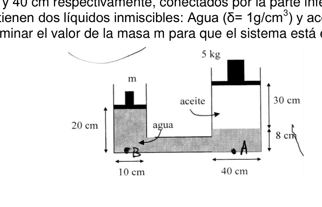
Topic: Oscillations & Waves, Newtonian Mechanics Metodi: Hooke’s Law, Kinematic Equations Competenze: Physical Reasoning Objects: Spring, Beam Fonte: Testo (PDF) — p.3
PT20. Due maggio, missioni. Blu. Alla fine di una sorgente fu attaccata una viglia, la cui massa è M. - Sotto l’azione. della forza F che agisce sul vigno come si vede nella figura. 1, la primavera che ha l’altra estremità fissa è stata compressa. Il vigno è sopra una superficie orizzontale
N F 180
Kg M 35
a. Qual è l’accelerazione che riceverà la viglia quando la forza F smetterà di agire? b. Quanto distanza percorre il vigno in un secondo? c. Che velocità avrà la viglia dopo il primo secondo di movimento? d. Determina l’energia cinetica del vigno 1 secondo dopo sospendere la forza F, supponendo che l’azione della primavera sia finita. 1sec, dopo la scomparsa e. Quante calorie produrrà il sistema finché non si fermerà completamente?
Topic: Oscillations & Waves, Newtonian Mechanics Metodi: Hooke’s Law, Kinematic Equations Competenze: Physical Reasoning Objects: Spring, Beam Fonte: Testo (PDF) — p.3
PT20. May 2nd, missions. Blue, please. At the end of a spring was a beam, whose mass is M. Under the action. of the F force acting on the beam as shown in Fig. 1, the spring that You have the other fixed end compressed. The beam is on a surface. horizontal
N F 180
Kg M 35
a. What acceleration will the beam receive when the F-force stops working? b. How far does the beam travel in 1 second? c. What speed will the beam have after the first second of motion? d. Determine the kinetic energy of the beam 1 second after Suspend force F assuming the spring action is over 1second after disappearing e. How many calories will the system produce until it stops completely?
Topic: Oscillations & Waves, Newtonian Mechanics Metodi: Hooke’s Law, Kinematic Equations Competenze: Physical Reasoning Objects: Spring, Beam Fonte: Testo (PDF) — p.3
PT21. Dos de Mayo, Misiones. Azul. Sobre un plano inclinado de 4 metros se desliza un cuerpo cuya masa es de 3kg. El ángulo de inclinación del plano es de 40° con respecto a la horizontal. Al final del plano hay una superficie horizontal de 1 metro, luego de la cual el cuerpo cae libremente hasta el suelo que se encuentra 5 metros más abajo. a. Determina la aceleración que adquiere el cuerpo suponiendo que el rozamiento es despreciable. b. ¿Con que velocidad llega el cuerpo al final de la superficie inclinada? c. ¿A qué distancia (medida horizontalmente) cae el cuerpo? d. ¿Cuánto tiempo emplea el cuerpo en llegar al suelo? e. Suponiendo que el coeficiente de rozamiento es µ=0,15 ¿qué aceleración recibe el cuerpo mientras desciende por la superficie inclinada?
Topic: Newtonian Mechanics, Conservation of Energy Metodi: Kinematic Equations, Conservation of Energy Competenze: Physical Reasoning Objects: Inclined Plane, Projectile Fonte: Testo (PDF) — p.3
PT21. Due maggio, missioni. Blu. Su un piano inclinato di 4 metri si scivola un corpo di 3 kg di massa. L’angolo di inclinamento del piano è 40° rispetto al orizzontale. Alla fine del piano c’è una superficie orizzontale di 1 metro, dopo la quale il corpo cade liberamente fino al suolo che si trova 5 metri più in basso. a. Determina l’accelerazione che il corpo acquista supponendo che il Il rasare è disprezzo. b. A che velocità il corpo arriva alla fine della superficie inclinata? c. A che distanza (misurata orizzontalmente) cade il corpo? d. Quanto tempo ci vuole per arrivare al suolo? e. Supponendo che il coefficiente di rottura sia μ=0,15 che accelerazione riceve il corpo mentre scende sulla superficie inclinata?
Topic: Newtonian Mechanics, Conservation of Energy Metodi: Kinematic Equations, Conservation of Energy Competenze: Physical Reasoning Objects: Inclined Plane, Projectile Fonte: Testo (PDF) — p.3
PT21. May 2nd, missions. Blue, please. On a flat slope of 4 meters, a body weighing 3 kg slides. The angle of inclination of the plane is 40° with respect to the horizontal. At the end On the plane there’s a horizontal surface of 1 meter, after which the body falls. freely to the ground 5 meters below. a. It determines the acceleration the body acquires assuming that the It’s a scornful thing to rub. b. How fast does the body reach the end of the sloping surface? c. How far (horizontally measured) does the body fall? d. How long does it take the body to get to the ground? e. Assuming the friction coefficient is μ=0.15 what acceleration? receives the body as it descends over the sloping surface?
Topic: Newtonian Mechanics, Conservation of Energy Metodi: Kinematic Equations, Conservation of Energy Competenze: Physical Reasoning Objects: Inclined Plane, Projectile Fonte: Testo (PDF) — p.3
PT22. San Carlos de Bariloche, Río Negro. Azul. Un Calorímetro de aluminio de 50 gr contiene 200 gr de un cierto líquido a la temperatura de 25ºC. Se vierten dentro del calorímetro 20 gr del mismo líquido a la temperatura de 85ºC. ¿Cuál es el calor específico del líquido si la temperatura final es de 30ºC? (dato: calor específico del aluminio= 0,212)
Topic: Thermodynamics Metodi: First Law of Thermodynamics Competenze: Physical Reasoning Objects: Calorimeter Fonte: Testo (PDF) — p.3
PT22. San Carlo di Bariloche, Rio Negro. Blu. Un calorimetro di alluminio di 50 gr contiene 200 gr di un certo liquido a temperatura di 25°C. Versi all’interno del calorilitro 20 g dello stesso liquido a la temperatura di 85°C. Qual è il calore specifico del liquido se la temperatura
- Il finale è di 30°C? (data: calore specifico dell’alluminio = 0,212)
Topic: Thermodynamics Metodi: First Law of Thermodynamics Competenze: Physical Reasoning Objects: Calorimeter Fonte: Testo (PDF) — p.3
PT22. St. Charles of Bariloche, Rio Negro. Blue, please. A 50 g aluminium calorimeter contains 200 g of a certain liquid to the temperature of 25°C. They are poured into the 20 g calorimeter of the same liquid to the temperature of 85°C. What is the specific heat of the liquid if the temperature The end is 30 degrees? (date: specific heat of aluminium = 0,212)
Topic: Thermodynamics Metodi: First Law of Thermodynamics Competenze: Physical Reasoning Objects: Calorimeter Fonte: Testo (PDF) — p.3
PT23. San Carlos de Bariloche, Río Negro. Azul. La Prensa hidráulica de la figura está formada por dos depósitos cilíndricos. De diámetros 10 y 40 cm respectivamente, conectados por la parte inferior mediante un tubo. Contienen dos líquidos inmiscibles: Agua (δ= 1g/cm3) y aceite (δ= 0,68 g/cm3). Determinar el valor de la masa m para que el sistema está en equilibrio.
OAF 2010 - 22
Topic: Fluid Mechanics Metodi: Hydrostatic Equilibrium Competenze: Physical Reasoning Objects: Piston, Tube Fonte: Testo (PDF) — p.3
PT23. San Carlo di Bariloche, Rio Negro. Blu. La stampa idraulica della figura è costituita da due depositi cilindrici. De diametri di 10 e 40 cm rispettivamente, collegati dal basso mediante un tubo. Contiene due liquidi immiscibili: acqua (δ= 1g/cm3) e olio (δ= 0,68 g/cm3). Determinare il valore di massa m per rendere il sistema in equilibrio.
OAF 2010 - 22
Topic: Fluid Mechanics Metodi: Hydrostatic Equilibrium Competenze: Physical Reasoning Objects: Piston, Tube Fonte: Testo (PDF) — p.3
PT23. St. Charles of Bariloche, Rio Negro. Blue, please. The hydraulic press of the figure is made up of two cylindrical deposits. De 10 cm and 40 cm in diameter respectively, connected by the bottom by a pipe. They contain two immiscible liquids: Water (δ=1g/cm3) and oil (δ=0.68 g/cm3). Determine the value of mass m so that the system is in equilibrium.
The following points shall be added:
Topic: Fluid Mechanics Metodi: Hydrostatic Equilibrium Competenze: Physical Reasoning Objects: Piston, Tube Fonte: Testo (PDF) — p.3
PT24. San Carlos de Bariloche, Río Negro. Azul. Calcular la Tensión en la cuerda y la aceleración del sistema de la siguiente figura. DATOS: M= 15 Kg m= 5kg β= 30º
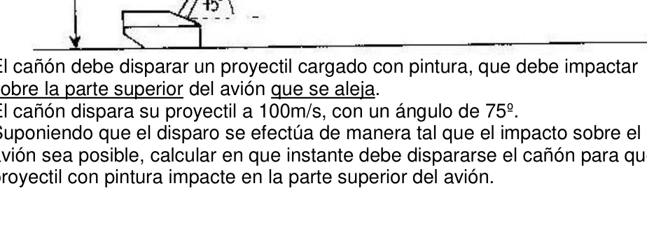
Topic: Newtonian Mechanics Metodi: Free-Body Diagram, Conservation of Energy Competenze: Physical Reasoning Objects: Block, Pulley, Inclined Plane Fonte: Testo (PDF) — p.3
PT24. San Carlo di Bariloche, Rio Negro. Blu. Calcolare la tensione della corda e l’accelerazione del sistema di seguito
- Figura. Dati: M= 15 Kg m= 5kg β= 30o
Topic: Newtonian Mechanics Metodi: Free-Body Diagram, Conservation of Energy Competenze: Physical Reasoning Objects: Block, Pulley, Inclined Plane Fonte: Testo (PDF) — p.3
PT24. St. Charles of Bariloche, Rio Negro. Blue, please. Calculate the tension on the rope and the acceleration of the system from the next one. It’s a figure. The data shall be reported in the following table:
Topic: Newtonian Mechanics Metodi: Free-Body Diagram, Conservation of Energy Competenze: Physical Reasoning Objects: Block, Pulley, Inclined Plane Fonte: Testo (PDF) — p.3
PT25. Ciudad de Santiago del Estero. Azul. Un bloque de 2kg se deja libre sobre un plano inclinado hacia abajo sin rozamiento, a una distancia de 4m de un resorte de constante k = 100N/m. El resorte está fijo a lo largo del plano inclinado, el cual forma un ángulo de 30º con la horizontal.
- Hallar la compresión máxima del resorte, admitiendo que carece de masa.
- Si el plano inclinado no es liso sino que el coeficiente de roce dinámico entre la masa y él es de 0,2, hallar en este caso la compresión máxima.
- En el caso del plano inclinado rugoso, ¿hasta qué punto subirá la masa por el plano después de abandonar el resorte?
- Representa el diagrama del cuerpo libre para el bloque cuando se desliza por el plano rugoso antes de chocar con el resorte y en el instante en el que éste lo detiene.
Topic: Conservation of Energy, Oscillations & Waves Metodi: Conservation of Energy, Hooke’s Law Competenze: Physical Reasoning Objects: Block, Spring, Inclined Plane Fonte: Testo (PDF) — p.3
PT25. Città di Santiago del Estero. Blu. Un blocco di 2 kg viene lasciato libero su un piano inclinato verso il basso senza a distanza di 4 m da una sorgente di costante k = 100N/m. El la primavera è fissa lungo il piano inclinato, che forma un angolo di 30° con la linea orizzontale.
- Trovare la compressione massima della sorgente, ammettere che manca di massa.
- Se il piano inclinato non è liscio, ma il coefficiente di rottura dinamico La massa e il volume sono 0.2, per trovare la compressione massima.
- In caso di piano inclinato rugoso, fino a che punto la massa salire? per il piano dopo aver lasciato la primavera?
- Rappresenta il diagramma del corpo libero per il blocco quando si scivola per il piano rugoso prima di scontrarsi con la primavera e all’istante in che questo lo fermi.
Topic: Conservation of Energy, Oscillations & Waves Metodi: Conservation of Energy, Hooke’s Law Competenze: Physical Reasoning Objects: Block, Spring, Inclined Plane Fonte: Testo (PDF) — p.3
PT25. The city of Santiago del Estero. Blue, please. A 2kg block is left free on a flat slope down without The following conditions shall apply: El spring is fixed along the slope, which forms a 30° angle with the horizontal.
- Find the maximum spring compression, admitting that it lacks Mass.
- If the slope is not smooth but the dynamic friction coefficient The mass between the mass and the mass is 0.2, find the maximum compression in this case.
- In the case of the rough sloping plane, how high will the mass rise? By the plane after leaving the spring?
- It represents the free-body diagram for the block when it slides. By the rough plane before colliding with the spring and instantly on the I’m hoping this one stops him.
Topic: Conservation of Energy, Oscillations & Waves Metodi: Conservation of Energy, Hooke’s Law Competenze: Physical Reasoning Objects: Block, Spring, Inclined Plane Fonte: Testo (PDF) — p.3
PT26. Ciudad de Santiago del Estero. Azul. En una exhibición aérea, un avión debe pasar sobre un cañón, a 50m de altura , volando en línea recta a 100km/h, como se demuestra en la figura. El cañón debe disparar un proyectil cargado con pintura, que debe impactar sobre la parte superior del avión que se aleja. El cañón dispara su proyectil a 100m/s, con un ángulo de 75º. Suponiendo que el disparo se efectúa de manera tal que el impacto sobre el avión sea posible, calcular en que instante debe dispararse el cañón para que su proyectil con pintura impacte en la parte superior del avión.
OAF 2010 - 23
Topic: Newtonian Mechanics Metodi: Kinematic Equations, Vector Decomposition Competenze: Physical Reasoning Objects: Projectile Fonte: Testo (PDF) — p.3
PT26. Città di Santiago del Estero. Blu. In un’edizione aerea, un aereo deve passare su un cannone, ad un’altezza di 50 metri, volando in linea retta a 100 km/h, come mostra la figura. Il cannone deve lanciare un proiettile carico di vernice, che deve colpire. sulla parte superiore dell’aereo che si allontana. Il cannone lancia il proiettile a 100 m/s, con un angolo di 75°. Supponendo che il fuoco sia effettuato in modo tale che l’impatto sul Aereo possibile, calcolare in che istante deve essere sparato il cannone per il suo proiettile con la vernice impatto sulla parte superiore dell’aereo.
OAF 2010 - 23
Topic: Newtonian Mechanics Metodi: Kinematic Equations, Vector Decomposition Competenze: Physical Reasoning Objects: Projectile Fonte: Testo (PDF) — p.3
PT26. The city of Santiago del Estero. Blue, please. In an air show, an airplane must pass over a cannon, 50m high, flying in a straight line at 100km/h, as shown in the figure. The cannon must fire a painted projectile, which must impact. over the top of the plane that’s moving away. The cannon fires its projectile at 100m/s, at an angle of 75o. Assuming the shooting is carried out in such a way that the impact on the aircraft if possible, calculate at what moment the cannon must be fired so that its A projectile with paint impacts the top of the plane.
The following points shall be added:
Topic: Newtonian Mechanics Metodi: Kinematic Equations, Vector Decomposition Competenze: Physical Reasoning Objects: Projectile Fonte: Testo (PDF) — p.3
PT27. Ciudad de Santiago del Estero. Azul. Una imagen virtual se forma en un espejo convexo, cuyo radio de curvatura es de 20cm. ¿Dónde debería colocarse el objeto para que la imagen sea de la mitad del tamaño de éste? ¿Es posible obtener una imagen virtual mayor que el objeto? Explica.
Topic: Geometric Optics Metodi: Thin Lens & Mirror Equation, Ray Tracing Competenze: Physical Reasoning Objects: Mirror Fonte: Testo (PDF) — p.3
PT27. Città di Santiago del Estero. Blu. Un’immagine virtuale si forma in uno specchio convexo, il cui raggio di curvatura è de 20cm. Dove dovrebbe essere posizionato l’oggetto per rendere l’immagine di metà del
- La dimensione di questo? È possibile ottenere un’immagine virtuale più grande dell’oggetto? Spiega.
Topic: Geometric Optics Metodi: Thin Lens & Mirror Equation, Ray Tracing Competenze: Physical Reasoning Objects: Mirror Fonte: Testo (PDF) — p.3
PT27. The city of Santiago del Estero. Blue, please. A virtual image is formed in a convex mirror, whose radius of curvature is de 20cm. Where should the object be placed so that the image is halfway through the the size of this one? Is it possible to get a virtual image larger than the object? - Explain that.
Topic: Geometric Optics Metodi: Thin Lens & Mirror Equation, Ray Tracing Competenze: Physical Reasoning Objects: Mirror Fonte: Testo (PDF) — p.3
PT28. Eduardo Castex, La Pampa. Azul. Tres bloques están apoyados sobre en una mesa sin rozamiento. Se aplica una fuerza horizontal F =10N al bloque 3 poniendo en movimiento a los tres, si m1=2Kg, m2= 20 Kg. y m3=15 Kg (tomar g=10m/seg2). Calcular: a) La aceleración que recibe el sistema b) Realizar un diagrama de cuerpo aislado para cada bloque. c) El valor de la fuerza de fricción entre el bloque 1 y el 2. d) El valor del coeficiente de fricción entre bloques 1 y 2. e) Encontrar la fuerza de contacto entre los bloques 2 y 3.
El archivo digital de la figura no fue provisto por la escuela.
Topic: Newtonian Mechanics Metodi: Free-Body Diagram, Vector Decomposition Competenze: Physical Reasoning Objects: Block Fonte: Testo (PDF) — p.3
PT28. Eduardo Castex, La Pampa. Blu. Tre blocchi sono appoggiati su un tavolo senza strozzatura. Applicazione di una forza orizzontale F =10N al blocco 3 mettendo in movimento tutti e tre, se m1=2Kg, m2= 20 Kg. e m3=15 Kg (prendere g=10m/sec2). Calcolare: a) L’accelerazione che il sistema riceve b) Realizzare un diagramma di corpo isolato per ogni blocco. c) Il valore della forza di attrito tra il blocco 1 e il blocco 2. d) Il valore del coefficiente di attrito tra i blocchi 1 e 2. e) Trovare la forza di contatto tra i blocchi 2 e 3.
Il file digitale della figura non è stato fornito dalla scuola.
Topic: Newtonian Mechanics Metodi: Free-Body Diagram, Vector Decomposition Competenze: Physical Reasoning Objects: Block Fonte: Testo (PDF) — p.3
PT28. Eduardo Castex, the Pampa. Blue, please. Three blocks are leaning over on a table without a razor. A horizontal force F =10N to block 3 moving all three, if m1=2Kg, m2= 20 Kg. and m3=15 Kg (take g=10m/sec2). Calculate: (a) The acceleration received by the system (b) Draw an isolated body diagram for each block. (c) The value of the friction force between block 1 and block 2. (d) The value of the friction coefficient between blocks 1 and 2. (e) Find the contact force between blocks 2 and 3.
The digital file for the figure was not provided by the school.
Topic: Newtonian Mechanics Metodi: Free-Body Diagram, Vector Decomposition Competenze: Physical Reasoning Objects: Block Fonte: Testo (PDF) — p.3
PT29. Eduardo Castex, La Pampa. Azul. Del fondo de una pileta profundidad H= 1.2 m a una distancia del borde izquierdo x= 2 m se lanza un rayo laser con un ángulo = 60º. El coeficiente de refracción del liquido es = 1.45, el del aire tomamos =1, el largo de la pileta es de L= 10 m. Hallar: a) El ángulo i de incidencia en O. b) El ángulo r de refracción en O. c) Las distancias Y, Z. d) La altura h donde incide el rayo refractado sobre el bore de derecho. e) Si en h se coloca un observador, ¿a qué altura ficticia h1 lo ve al rayo?
El archivo digital de la figura no fue provisto por la escuela.
Topic: Geometric Optics Metodi: Snell’s Law, Ray Tracing Competenze: Physical Reasoning Objects: — Fonte: Testo (PDF) — p.3
PT29. Eduardo Castex, La Pampa. Blu. Dal fondo di una pila H= 1,2 m di profondità a una distanza dal bordo a sinistra x=2 m viene lanciato un raggio laser con un angolo =60o. Il coefficiente La rifrazione del liquido è di 1,45, quella dell’aria prendiamo di 1, la lunghezza della pila. es de L= 10 m. Trovare: a) L’angolo i di incidenza in O. b) L’angolo r di rifrazione in O. (c) Le Distanze Y, Z. d) L’altezza h di cui il raggio refratto si trova sul bore di
- Giusto. e) Se in h si colloca un osservatore, a che altezza lo vede il fictizio h1
- Il fulmine?
Il file digitale della figura non è stato fornito dalla scuola.
Topic: Geometric Optics Metodi: Snell’s Law, Ray Tracing Competenze: Physical Reasoning Objects: — Fonte: Testo (PDF) — p.3
PT29. Eduardo Castex, the Pampa. Blue, please. From the bottom of a pile H= 1.2 m deep to a distance from the edge left x=2 m a laser beam is thrown at an angle =60o. The coefficient The refractive index of the liquid is =1.45, the air is =1, the length of the pile. es de L= 10 m. Find: (a) The angle of incidence i at O. (b) The angle of refraction r at O. (c) The Distance Y, Z. (d) The height h where the refracted beam hits the bore of Right. (e) If an observer is placed in h, at what altitude does fictitious h1 see it at? The lightning?
The digital file for the figure was not provided by the school.
Topic: Geometric Optics Metodi: Snell’s Law, Ray Tracing Competenze: Physical Reasoning Objects: — Fonte: Testo (PDF) — p.3
PT30. Eduardo Castex, La Pampa. Azul.
Un tanque de agua cilíndrico vacio, se va llenando con un caudal Q= 0.02 m3/seg
constante.
En el fondo tiene un cilindro con un pistón sostenido por un resorte de constante
K= 80kg/cm. A medida que
aumenta la altura h del agua, el mismo retrocede por presión hasta llegar a un
tubo dSe descarga a x= 10cm de distancia que al abrirse eroga un caudal
también Q. Calcular para que h comienza la descarga y el tiempo que tarda en
hacerlo. Graficar h en función de t antes de abrirse el tubo de apertura y
después.
Datos: radio de pistón r = 0.05m, radio del tanque Rt= 1.2m peso especifico del
agua 1000 Kg/m3.
Topic: Fluid Mechanics Metodi: Bernoulli’s Equation, Continuity Equation, Hydrostatic Equilibrium Competenze: Physical Reasoning Objects: Container, Piston, Spring Fonte: Testo (PDF) — p.3
PT30. Eduardo Castex, La Pampa. Blu. Un serbatoio di acqua cilindrica vuoto, si riempie con un flusso Q= 0.02 m3/sec costante. In fondo ha un cilindro con un pistone sostenuto da una fonte di costante. K= 80kg/cm. Come aumenta l’altezza h dell’acqua, la stessa si ritira per pressione fino a raggiungere un dTubino scaricato a x= 10 cm di distanza che all’apertura emette un flusso anche Q. Calcolare per quale h inizia il download e il tempo necessario per
- No, no, no. Grafica h in funzione di t prima di aprire il tubo di apertura e
- dopo. Data: radius del pistone r = 0,05m, radius del serbatoio Rt = 1,2m peso specifico del 1000 Kg/m3 di acqua.
Topic: Fluid Mechanics Metodi: Bernoulli’s Equation, Continuity Equation, Hydrostatic Equilibrium Competenze: Physical Reasoning Objects: Container, Piston, Spring Fonte: Testo (PDF) — p.3
PT30. Eduardo Castex, the Pampa. Blue, please. An empty cylindrical water tank, is filled with a flow rate of Q= 0.02 m3/sec It’s constant. At the bottom it has a cylinder with a piston held by a constant spring. K= 80kg/cm. As you The water level increases h, the water level decreases by pressure until it reaches a The tube is discharged at a distance of x= 10 cm which, when opened, gives a flow. Also Q. Calculate for h start download and time it takes to I’m going to do it. Graph h in terms of t before opening the opening tube and
- I’ll see you later. Data: piston radius r = 0.05m, tank radius Rt = 1.2m specific weight of the water 1000 Kg/m3.
Topic: Fluid Mechanics Metodi: Bernoulli’s Equation, Continuity Equation, Hydrostatic Equilibrium Competenze: Physical Reasoning Objects: Container, Piston, Spring Fonte: Testo (PDF) — p.3
Densimetro
PT31. Villa La Angostura, Neuquén. Azul. Para medir la densidad de un líquido, se utiliza un instrumento llamado densímetro. Uno de los más simples es mostrado en la figura. Con una jeringa se aspira una muestra del líquido del que se quiere conocer la densidad, de manera que ascienda por un tubo que contiene una barra de densidad
OAF 2010 - 24 conocida. La barra de longitud L y densidad 0, flota parcialmente sumergida en el fluido de densidad . Una porción de la barra de longitud h sobresale de la superficie del líquido. Muestre que la densidad del líquido viene dada por la ecuación:
Topic: Fluid Mechanics Metodi: Hydrostatic Equilibrium Competenze: Physical Reasoning Objects: Rod Fonte: Testo (PDF) — p.3
Densimetro
PT31. Villa La Angostura, Neuquén. Blu. Per misurare la densità di un liquido si usa un strumento chiamato densimetro. Uno dei più semplici è mostrato nella figura. Con una siringa si Aspira un campione del liquido che vuoi conoscere la densità, in modo che si alzi di un tubo contenente una barra di densità
OAF 2010 - 24 Conosciuto. La barra di lunghezza L e densità 0, flotta in parte immersa in il fluido di densità . Una porzione della barra di lunghezza h si estende dalla superficie del liquido. Mostra che la densità del liquido viene data dalla Equazione:
Topic: Fluid Mechanics Metodi: Hydrostatic Equilibrium Competenze: Physical Reasoning Objects: Rod Fonte: Testo (PDF) — p.3
The following information shall be provided:
PT31. The village of La Angostura, Neuquén. Blue, please. To measure the density of a liquid, a It’s called a densimeter. One of the most The simple is shown in the figure. With a syringe you Take a sample of the desired liquid. Know the density, so it goes up by a tube containing a density bar
The following points shall be added: I know you. The length bar L and density 0, floats partially submerged in the density fluid . A portion of the length bar h protrudes from the surface of the liquid. Show that the density of the liquid is given by the The equation:
Topic: Fluid Mechanics Metodi: Hydrostatic Equilibrium Competenze: Physical Reasoning Objects: Rod Fonte: Testo (PDF) — p.3
PT32. Villa La Angostura, Neuquén. Azul. A partir del gráfico, que representa la variación de la velocidad de un automóvil en función del tiempo, indicar: a) Los intervalos en los que el automóvil describe un movimiento rectilíneo uniforme y un movimiento acelerado. b) Lo que pudo suceder con el automóvil en el intervalo [8,20]
c) El automóvil ¿está quieto en algún momento? d) ¿Qué distancia recorre cando se aleja del punto de partida?
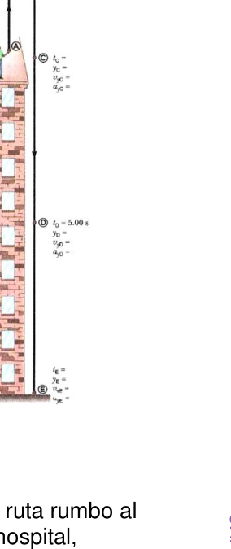
Topic: Newtonian Mechanics Metodi: Kinematic Equations, Graph Linearization Competenze: Physical Reasoning, Experimental Data Analysis Objects: — Fonte: Testo (PDF) — p.3
PT32. Villa La Angostura, Neuquén. Blu. A partire dal grafico, che rappresenta la variazione della velocità di un’auto in funzione del tempo, indicare: a) Gli intervalli in cui l’auto descrive un movimento rettilineo uniforme e un movimento accelerato. b) Cosa potrebbe accadere all’auto nell’intervallo [8,20]
c) La macchina è fermata in qualche momento? d) Qual è la distanza da cui si allontana dal punto di partenza?
Topic: Newtonian Mechanics Metodi: Kinematic Equations, Graph Linearization Competenze: Physical Reasoning, Experimental Data Analysis Objects: — Fonte: Testo (PDF) — p.3
PT32. The village of La Angostura, Neuquén. Blue, please. From the graph, which represents the variation in the speed of a car depending on the time, indicate: (a) The intervals at which the car describes a straight line movement uniform and a fast movement. (b) What could have happened to the car in the interval [8,20]
c) Is the car still at any time? (d) What distance does it travel when it moves away from the starting point?
Topic: Newtonian Mechanics Metodi: Kinematic Equations, Graph Linearization Competenze: Physical Reasoning, Experimental Data Analysis Objects: — Fonte: Testo (PDF) — p.3
El lanzador sobre el tejado
PT33. Villa La Angostura, Neuquén. Azul. El lanzador sobre el tejado. Se lanza una piedra desde el punto A, en lo alto de un edificio, con una velocidad inicial de 20 m/s. El edificio tiene una altura de 50 m y la piedra pasa justo al lado del borde del tejado durante el trayecto descendente, como se indica en la figura. Determinar: a) El instante en que la piedra alcanza su altura máxima. b) La altura máxima alcanzada por encima del tejado. c) El Instante en que la piedra vuelve a estar situada al nivel del lanzador. d) La velocidad de la piedra en dicho instante. e) La velocidad y la posición de la piedra en t = 5 segundos. f) La posición de la piedra en t= 6 segundos.
Topic: Newtonian Mechanics Metodi: Kinematic Equations Competenze: Physical Reasoning Objects: Projectile Fonte: Testo (PDF) — p.3
Il lanciatore sul tetto
PT33. Villa La Angostura, Neuquén. Blu. Il lanciatore sul tetto. Si lancia una pietra dal punto A, in alto di un edificio, con una velocità iniziale di 20 m/s. El Un edificio ha una altezza di 50 metri e la pietra passa. Proprio al bordo del tetto durante il viaggio. il numero di persone che sono discendenti, come indicato nella figura. Determinare: a) L’ istante in cui la pietra raggiunge la sua altezza massimo. b) L’altezza massima raggiunta sopra il
- Il tetto. c) L’ istante in cui la pietra risulta situato al livello del lanciatore. d) La velocità della pietra in quel momento. e) La velocità e la posizione della pietra in t = 5
- Segondi. f) La posizione della pietra in t=6 secondi.
Topic: Newtonian Mechanics Metodi: Kinematic Equations Competenze: Physical Reasoning Objects: Projectile Fonte: Testo (PDF) — p.3
The roof pitcher
PT33. The village of La Angostura, Neuquén. Blue, please. The pitcher on the roof. A stone is thrown from point A, at the top of a building, with an initial speed of 20 m/s. El Building ‘s 50 meters high and the stone passes . Right next to the edge of the roof during the journey. The following table shows the number of units of the unit. Determine: (a) The moment the stone reaches its height Maximum. (b) The maximum height reached above the roof. (c) The instant the stone is restored located at the launcher level. (d) The stone’s speed at that instant. (e) The velocity and position of the stone at t = 5 Seconds. (f) The position of the stone in t = 6 seconds.
Topic: Newtonian Mechanics Metodi: Kinematic Equations Competenze: Physical Reasoning Objects: Projectile Fonte: Testo (PDF) — p.3
Evitemos accidentes
PT34. Ciudad de Buenos Aires. Azul. Evitemos accidentes. Salimos de vacaciones y luego de cargar el auto nos largamos a la ruta rumbo al Sur. Cómo no queremos que nuestras vacaciones terminen en un hospital, tratamos de cumplir con todos los requisitos de velocidad, máxima permitidas, respetamos las señales de tránsito y además seguimos los consejos de La Asociación Luchemos por la vida. En uno de sus folletos, indica los siguientes
OAF 2010 - 25 valores de la distancia mínima de frenado para detener un vehículo tanto en pavimento seco como en mojado:
Velocidad (km/h) Distancia mínima de frenado (m) Pavimento seco 100 140 120 188 Pavimento húmedo 100 201 120 279
En el sitio zonadegravedad.com se consignan los siguientes valores experimentales para coeficientes de rozamiento en el derrape del caucho de las cubiertas sobre distintas superficies de pavimento:
Tipo de superficie Asfalto rugoso seco 0,8 Asfalto rugoso húmedo 0,5
a) ¿Qué aceleraciones de frenado se logran en un auto con estos coeficientes? b) ¿Cuáles fueron las distancias de frenado que se obtuvieron experimentalmente en cada caso? c) Cuando se busca seguridad, es común multiplicar a los valores que se obtienen experimentalmente por un número llamado coeficiente de seguridad. ¿Qué valores para este coeficiente considera la Asociación “Luchemos por la vida”? d) La Asociación también recomienda asegurar todos los objetos que se transporten dentro del habitáculo del vehículo ¿En qué principio de la dinámica se basa esta sugerencia? e) ¿Cuánto tiempo tardaría en golpear el rostro del pasajero del asiento trasero con el apoyacabezas de la butaca delantera? Supongan que la distancia entre el respaldo del asiento trasero y el del delantero es aproximadamente de 0,80 m. f) ¿Con qué velocidad relativa lo haría?
Topic: Newtonian Mechanics Metodi: Free-Body Diagram, Kinematic Equations Competenze: Physical Reasoning Objects: — Fonte: Testo (PDF) — p.3
Evitare gli incidenti
PT34. Città di Buenos Aires. Blu. Evitiamo gli incidenti. Siamo partiti in vacanza e dopo aver caricato l’auto siamo partiti per la strada verso la Sul sud. Come non vogliamo che le nostre vacanze finiscano in ospedale, cerchiamo di soddisfare tutti i requisiti di velocità, massima autorizzazione,
- Si tratta di un’organizzazione che si occupa di un’organizzazione di sicurezza. Associazione Combattiamo per la vita. In uno dei suoi opuscoli, indica le seguenti informazioni:
OAF 2010 - 25 Valori della distanza minima di frenata per fermare un veicolo tanto da pavimento secco come in bagnato:
Velocità (km/h) Distanza minima di frenata (m) Pavimento secco 100 140 120 188 Pavimento umido 100 201 120 279
Il sito zonadegravedad.com contiene i seguenti valori I coefficienti di rottura per la rottura della gomma delle coperte su diverse superfici di pavimento:
Tipo di superficie Asfalto rugoso secco 0,8 Asfalto rugoso e umido 0,5
a) Quali accelerazioni di frenata si ottengono in una macchina con queste
- Coefficienti? b) Quali sono state le distanze di frenata ottenute sperimentalmente in ogni caso? c) Quando si cerca di sicurezza, è comune moltiplicare i valori che si trovano. Si ottiene sperimentalmente da un numero chiamato coefficiente di
- Sicurezza. Quali valori per questo coefficiente la Associazione considera “Lutteremo per la vita”? d) L’Associazione raccomanda inoltre di assicurare tutti gli oggetti che vengono
- trasportare all’interno del veicolo. dinamica si basa su questo suggerimento? e) Quanto tempo ci vorrebbe per colpire il volto del passeggero del sedile?
- Un culo con i pendenti del sedile anteriore? Supponiamo che la La distanza tra il supporto del sedile posteriore e quello del sedile anteriore è di circa 0,80 m. f) Con quale velocità relativa lo farebbe?
Topic: Newtonian Mechanics Metodi: Free-Body Diagram, Kinematic Equations Competenze: Physical Reasoning Objects: — Fonte: Testo (PDF) — p.3
We should avoid accidents
PT34. City of Buenos Aires. Blue, please. Let’s avoid accidents. We went on vacation and after loading the car we left for the route to the South. How can we not want our vacation to end in a hospital? We try to meet all the speed, maximum allowed requirements. We respect traffic signs and follow the advice of the LAC. Let’s fight for life. In one of his brochures, he indicates the following:
The following points shall be added: values of the minimum braking distance to stop a vehicle at both Dry as wet pavement:
Speed (km/h) Minimum distance from Braking (m) Dry pavement 100 140 120 188 Wet floor 100 201 120 279
The following values are recorded on zonadegravedad.com Experimental coefficients for rubber rubber in the Covered on different flooring surfaces:
Type of surface Roughly dry asphalt 0,8 Roughly wet asphalt 0,5
(a) What braking accelerations are achieved in a car with these What are the coefficients? (b) What braking distances were obtained? experimentally in each case? c) When looking for security, it is common to multiply the values that are They get experimentally by a number called the coefficient of Security. What values for this coefficient the Association considers Let’s fight for life? (d) The Association also recommends securing all objects that are transport within the vehicle cabin. dynamics is based on this suggestion? (e) How long would it take to hit the face of the seat passenger? The back with the front seat headrest? Let us suppose that The distance between the back seat and the front seat is approximately 0,80 m. f) How fast would you do it?
Topic: Newtonian Mechanics Metodi: Free-Body Diagram, Kinematic Equations Competenze: Physical Reasoning Objects: — Fonte: Testo (PDF) — p.3
Calefaccionando las Cabanas
PT35. Ciudad de Buenos Aires. Azul.
Calefaccionando las Cabañas.
Las cabañas “El Martial”, frente al glaciar del mismo nombre, ofrecen no solo una
vista imperdible sino comodidades de primera línea. En los meses invernales, las
temperaturas en la ciudad más austral de Argentina, Ushuaia, son de
aproximadamente -8º C durante el día y – 19ºC en el transcurso de la noche.
La cabaña, construida en ladrillo (de 20 cm de espesor) y revestida en madera
(1 cm de espesor), está calefaccionada por una cocina “Económica” de hierro,
alimentada a leña de lenga y dos estufas eléctricas ubicadas en el baño y en la
habitación. Con todo ese sistema de calefacción, se logra mantener la
temperatura en el interior de la cabaña en 20ºC.
OAF 2010 - 26
a) Cuando llegamos, la temperatura en el interior de la habitación indicaba 4ºC. Enseguida encendimos la estufa eléctrica. ¿Cuánto tiempo tardó en alcanzar una temperatura de 20ºC, suponiendo que se encuentra totalmente aislada? b) ¿Cuál es la rapidez de transferencia de energía por metro cuadrado a través de las paredes exteriores de la cabaña si esta fuera sólo de ladrillo? c) ¿En cuánto disminuye esta rapidez al agregarle el revestimiento interno de madera, dejando entre esta y el ladrillo un capa de 2 cm de aire? d) ¿Cuánta leña por hora se necesita para mantener la temperatura constante en la cocina-comedor? Datos: kladrillo= 0,2 cal/(s.m.ºC) kmadera= 0,06 cal/(s.m.ºC) kaire= 0,006 cal/(s.m.ºC) aire = 1,29 kg/m3 Ceaire = 0,237 cal/(g.ºC) Pestufa = 450 watt πleña seca: 18 MJ/kg
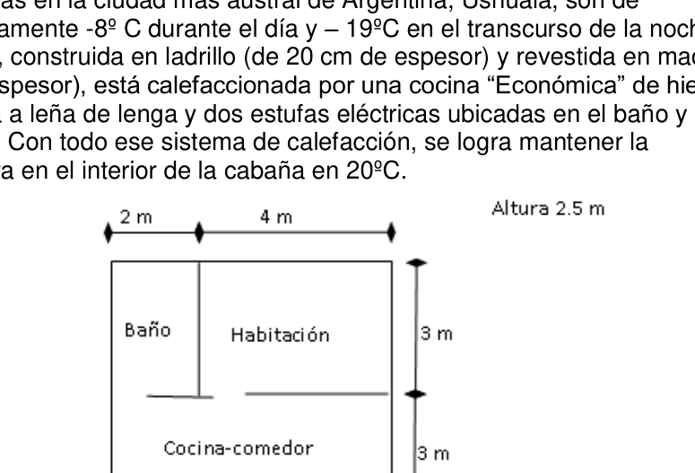
Topic: Thermodynamics Metodi: First Law of Thermodynamics Competenze: Physical Reasoning Objects: — Fonte: Testo (PDF) — p.3
Califando le Cabbage
PT35. Città di Buenos Aires. Blu.
- Scalda le Cottage. Le cabine El Martial, di fronte al ghiacciaio del medesimo nome, offrono non solo una vista imperdibile ma conforte di prima linea. Nei mesi invernali, le Le temperature nella città più meridionale dell’Argentina, Ushuaia, sono di circa -8°C durante il giorno e 19°C nel corso della notte. La cabina, costruita in mattoni (di 20 cm di spessore) e rivestita di legno (di 1 cm di spessore) è riscaldata da una cucina di ferro Economico, Il sistema di alimentazione è alimentato da legno di lenga e da due stufe elettriche situate nel bagno e nella
- La stanza. Con tutto questo sistema di riscaldamento si riesce a mantenere la temperatura di temperatura all’interno della cabina a 20°C.
OAF 2010 - 26
a) Quando arrivammo, la temperatura all’interno della stanza indicava 4ºC. Abbiamo subito acceso la stufa elettrica. Quanto tempo ci è voluto per… raggiungere una temperatura di 20°C, se si trova completamente isolato? b) Qual è la velocità di trasferimento di energia per metro quadrato a attraverso i muri esterni della cabina se questo fosse solo di
- Il mattone? c) Quanto diminuisce questa velocità quando viene aggiunto il rivestimento interno? di legno, lasciando tra questo e il mattone un strato di 2 cm di aria? d) Quanti legni per ora sono necessari per mantenere la temperatura costante nella cucina-camera? Datati: C. C. La produzione di prodotti di produzione di legname è limitata a 0,06 cal/s.m.oC. Il calore di calore è di 0,006 cal/s.m.oC. aria = 1,29 kg/m3 Ceaire = 0,237 cal/g.oC) Pestufa = 450 watt π legno secco: 18 MJ/kg
Topic: Thermodynamics Metodi: First Law of Thermodynamics Competenze: Physical Reasoning Objects: — Fonte: Testo (PDF) — p.3
Calling the Cabins
PT35. City of Buenos Aires. Blue, please. Heating the cabins. The cottages El Martial, opposite the glacier of the same name, offer not only a The view is imperishable but first-class amenities. In the winter months, the Temperatures in the southernmost city of Argentina, Ushuaia, are of approximately -8°C during the day and 19°C during the night. The cabin, built of brick (with a thickness of 20 cm) and covered with wood (~ 1 cm thick), is heated by an iron Economic kitchen, The electrical stove is equipped with a fireplace and two electric stoves located in the bathroom and the
- The room. With all this heating system, you can keep the heat up. temperature inside the cabin at 20oC.
The following points shall be added:
(a) When we arrived, the temperature inside the room was indicating 4ºC. We immediately turned on the electric stove. How long did it take for you to get in? reaching a temperature of 20°C, assuming that it is totally isolated? (b) What is the speed of energy transfer per square metre to Through the outer walls of the cabin if this were just for you
- The brick? (c) How much slows this speed when the inner lining is added?
- of wood, leaving between this and the brick a layer of air? (d) How much wood per hour is needed to maintain the temperature constantly in the kitchen-dining room? The data: The following table shows the results of the calculation of the weighted average weight of the product: The following table shows the results of the calculation of the total value of the product: The following table shows the results of the calculation of the risk of the risk of injury: The amount of the aid shall be calculated on the basis of the following criteria: The value of the product shall be calculated as follows: Pestufa = 450 watts Dried wood: 18 MJ/kg
Topic: Thermodynamics Metodi: First Law of Thermodynamics Competenze: Physical Reasoning Objects: — Fonte: Testo (PDF) — p.3
Picadita de bienvenida
PT36. Ciudad de Buenos Aires. Azul.
Picadita de bienvenida.
La noche que llegamos, nos agasajaron con una picada obsequio de productos
típicos y cerveza artesanal. Después de varios vasos y algunas papas fritas, me
quedé mirando fijamente las burbujas que se formaban dentro del chopp. Al
cabo de varias observaciones, pude determinar que el radio promedio de las
burbujas que llegaban a la superficie era de 0,5mm.
a) ¿Qué volumen promedio tiene una burbuja cuando se origina en el fondo
del vaso? (supongan un chopp de 18 cm de altura, lleno hasta arriba)
b) ¿Qué empuje recibe esta burbuja cuando está en el fondo?
c)
A medida que la burbuja sube:
I- el empuje aumenta
II- el empuje disminuye
III- el empuje permanece constante
Elegí la opción correcta y justificá tu respuesta.
d) A cierta altura de la noche comenzaron las discusiones filosóficas
trascendentales: si se le agrega maní salado y sin piel a la cerveza, ¿flota
o se hunde? Las opiniones eran variadas, y abarcaban todo tipo de
posibilidades, incluyendo el recordatorio de un descolgado de que el
maní, como toda semilla, absorbe humedad. Cómo buenos físicos que
somos, no nos quisimos quedar sólo en la discusión teórica y fuimos a los
hechos. Abrimos otra cervecita, otro paquetito de maní y nos dedicamos
a la Física experimental.
¿Qué observamos? Describan el comportamiento del maní al colocarlo
en la cerveza, justificando el proceso y considerando las propiedades del
maní seco y húmedo.
e) Uno de los “manise” quedó flotando a media agua justo en el centro del
chopp. ¿Cuántas burbujas de gas carbónico se adhirieron a este maní
OAF 2010 - 27 para que flote en ese lugar? (el peso de las burbujas es despreciable frente a las demás fuerzas actuantes) Datos: Cerveza = 1000kg/m3 Maní seco = 560kg/m3 Maní húmedo = 1088kg/m3 patm normal = 1 atm = 1013 hPa g = 9,8 N/kg rManí = 3mm (se puede considerar esférico) El beber es perjudicial para la salud.
Topic: Fluid Mechanics Metodi: Hydrostatic Equilibrium, Ideal Gas Law Competenze: Physical Reasoning Objects: Bubble Fonte: Testo (PDF) — p.3
Picadita di benvenuto
PT36. Città di Buenos Aires. Blu. Picadetta di benvenuto. La notte in cui siamo arrivati, ci hanno riempito di un regalo di prodotti piccanti. tipici e birra artigianale. Dopo diversi bicchieri e alcune patatine, mi Mi sono fissato a guardare le bolle che si formavano all’interno del chopp. Al Dopo varie osservazioni, ho potuto determinare che il raggio medio delle le bolle che arrivano alla superficie erano di 0,5 mm. a) Qual è il volume medio di una bolla quando si nasce in fondo?
- Il bicchiere? (si presume che sia un chopp alto 18 cm, pieno fino in alto) b) Che impulso riceve questa bolla quando è al fondo? c) Mentre la bolla sale: I- la spinta aumenta II- la spinta diminuisce III- la spinta rimane costante Ho scelto la scelta giusta e giustifica la tua risposta. D) A un certo punto della notte iniziarono le discussioni filosofiche. Le parole di un’altra persona sono fondamentali: se si aggiunge un pizzone di manzo salato e senza pelle alla birra, si flotta. o affonda? Le opinioni erano varie, e comprendevano tutti i tipi di possibilita’, compresa la reminiscenza di un distaccato che il Il mani, come ogni seme, assorbe l’umidità. Come sono i fisici che Non volevamo rimanere solo nella discussione teorica e siamo andati a fatti. Aprimmo un’altra birra, un altro pacchetto di mani e ci dedichiamo. alla fisica sperimentale. Cosa stiamo osservando? Descrivono il comportamento del manico quando lo posizionano. La produzione di una bevanda di cui si tratta è stata condotta da un’altra fonte di produzione. I mani sono secchi e umidi. e) Uno dei manise è rimasto a metà acqua a galla nel centro del
- Chi è? Quante bolle di gas carbonio si sono attaccate a questo manico?
OAF 2010 - 27 per fluttuare in quel posto? (il peso delle bolle è dispregiato) contro le altre forze attive) Datati: Cervetta = 1000 kg/m3 Mani secco = 560 kg/m3 Maniche umide = 1088 kg/m3 il patm normale = 1 atm = 1013 hPa g = 9,8 N/kg rManì = 3mm (può essere considerato sferico) Bere è dannoso per la salute.
Topic: Fluid Mechanics Metodi: Hydrostatic Equilibrium, Ideal Gas Law Competenze: Physical Reasoning Objects: Bubble Fonte: Testo (PDF) — p.3
The Commission shall adopt implementing acts in accordance with Article 21 of the Financial Regulation.
PT36. City of Buenos Aires. Blue, please. Welcome to the picadita. The night we arrived, we were spoiled with a gift of products. Typical and craft beer. After several glasses and some fries, I I just kept staring at the bubbles that were forming inside the chopp. Al After several observations, I was able to determine that the average radius of the bubbles that reached the surface was 0.5mm. (a) What is the average volume of a bubble when it originates at the bottom from the glass? (suppose a 18 cm high chopp, filled up) (b) What is the thrust this bubble gets when it is at the bottom? c) As the bubble rises: I- the thrust increases II- the thrust decreases The thrust remains constant. I chose the right option and it justifies your answer. d) At some point in the night philosophical discussions began. Transcendental: if you add salty, skinless peanuts to beer, does it float? Or is it sinking? The opinions were varied, and they covered all kinds of things. possibilities, including a reminder from a disgruntled person that the Peanut, like any seed, absorbs moisture. How good physicists are you ? We were not just going to stay in the theoretical discussion and we went to the The facts. We opened another beer, another peanut butter package and we dedicated ourselves. to experimental physics. What are we looking at? They describe the behavior of the peanut when it is placed. In the case of beer, justifying the process and considering the properties of the I had dry and wet peanuts. e) One of the manisees was floating in half water right in the middle of the water. Chopp, what’s up? How many carbon bubbles have stuck to this peanut?
The following points shall be added: to float in that place? (The weight of the bubbles is despicable) (i) the Commission shall adopt the measures necessary to ensure that the Member States are able to take appropriate measures to combat such attacks. The data: Serve = 1000kg/m3 Dry peas = 560kg/m3 Wet peanuts = 1088kg/m3 The average temperature of the air at the temperature of the test vessel is about 1 °C. g = 9,8 N/kg rMan = 3mm (can be considered spherical) Drinking is harmful to health.
Topic: Fluid Mechanics Metodi: Hydrostatic Equilibrium, Ideal Gas Law Competenze: Physical Reasoning Objects: Bubble Fonte: Testo (PDF) — p.3
PT37. Aguilares, Tucumán. Azul. Una bolsa con 20kg de alimentos con se cuelga desde la rama de un árbol a 4m de altura, con una cuerda (de 8m) que es sostenida del otro extremo por el Joven Samuel (tanto el centro de gravedad de la bolsa como la mano de Samuel están a la misma altura). El aroma del alimento atrae algunos animales; uno de ellos, un perro de masa 15kg, se acerca lentamente con una velocidad de 1m/s, ante esta situación se aparta la bolsa de su posición de equilibrio en 20º, con la intención de que al oscilar, golpee al animal. El interrogante que se le plantea: a) ¿Cuál es el periodo de la bolsa si oscilara libremente?
Si la bolsa –cuando llega a su vertical- golpea al perro y suponemos que no hay
deformación de los cuerpos durante el impacto y la bolsa queda en reposo,
(considérese des preciable la masa de la soga) entonces:
b) ¿Con que velocidad es despedido el perro?
La siguiente cuestión se refiere al momento que la bolsa está en el extremo (con amplitud de 20º) y luego en el instante previo al impacto con el perro (posición vertical de la cuerda). c) ¿Cuál es la tensión de la cuerda, en ambos casos?
Como la acción no ahuyenta a los animales, Samuel comienza a caminar en el sentido + x con velocidad constante de 1,73m/s a fin de que los alimentos suban a la parte más alta de la rama, en esta circunstancia. Se le solicita: d) Grafique posición, velocidad y aceleración en función del tiempo, para el movimiento de Samuel. En “todo” su recorrido. e) Grafique posición en función del tiempo para el movimiento de la bolsa de alimentos. Hasta que llega a la rama. f) Analice el tipo de movimiento de la bolsa y haga un comentario del mismo. g) Velocidad de la bolsa en el instante t=3s. h) Aceleración en el instante t=3s.
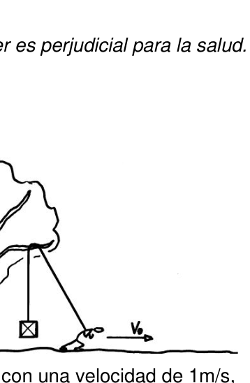
Topic: Oscillations & Waves, Conservation of Momentum Metodi: Simple Harmonic Motion Analysis, Conservation of Momentum, Conservation of Energy Competenze: Physical Reasoning Objects: Pendulum Fonte: Testo (PDF) — p.3
PT37. Aguilar, Tucumán. Blu. Un sacchetto con 20 kg di La dieta è stata sospesa da il ramo di un albero a 4m di altezza, con una corda (di 8 m) che è sostenuta dall’altro L’estremo per il giovane Samuel (sia il centro di gravità di La borsa come la mano di Samuel sono allo stesso modo. Alto). L’ aroma del cibo Attira alcuni animali; uno di loro, un cane di massa di 15 kg, si avvicina lentamente a una velocità di 1m/s, In questo caso, la borsa si allontana dalla sua posizione di equilibrio di 20°, con la intenzione che oscilando, colpisca l’animale. La domanda che gli viene posta: a) Qual è il periodo della borsa se oscilla liberamente?
Se la borsa, quando arriva verticale, colpisce il cane e supponiamo che non ci sia. Deformazione dei corpi durante l’impatto e la borsa rimane a riposo, (considerate preziosa la massa della corda) allora: b) A che velocità viene licenziato il cane?
La domanda seguente riguarda il momento in cui la borsa è in punta (con amplitudine di 20°) e poi nell’istante precedente l’impatto con il cane (posizione Verticale della corda). c) Qual è la tensione della corda in entrambi i casi?
Poiché l’azione non allontana gli animali, Samuel inizia a camminare sul campo.
- x con velocità costante di 1,73m/s per far salire il cibo alla parte superiore del ramo, in questa circostanza. Vi viene chiesto: d) Grafica di posizione, velocità e accelerazione in funzione del tempo, per il movimento di Samuel. In tutto il suo percorso. e) Grafica la posizione in base al tempo per il movimento della sacchetta di cibo. Finché non arriva al ramo. f) Analizzare il tipo di movimento della borsa e fare un commento del
- Proprio così. g) velocità del sacchetto all’istante t=3s. h) Accelerazione istantanea t=3s.
Topic: Oscillations & Waves, Conservation of Momentum Metodi: Simple Harmonic Motion Analysis, Conservation of Momentum, Conservation of Energy Competenze: Physical Reasoning Objects: Pendulum Fonte: Testo (PDF) — p.3
PT37. The Eagles, Tucumán. Blue, please. A bag with 20kg of Food with hung from The branch of a tree at 4m from height, with a rope (of 8m) That is held by the other. Extreme by the Young Samuel (both the center of gravity of The bag like the hand of Samuel , they ‘re on the same page . height). The smell of food . It attracts some animals; one of them. They, a 15kg dog, is coming slowly at a speed of 1m/s. In this situation the bag is separated from its equilibrium position by 20°, with the intention that by swinging, he hit the animal. The question that is asked of him: (a) What is the period of the stock if it fluctuates freely?
If the bag when it reaches its vertical- hits the dog and we assume there’s no body deformation during impact and the bag rests, (consider the mass of the rope to be unprecious) then: (b) How quickly is the dog fired?
The following question concerns the moment the stock is at the end (with 20o) and then in the instant before impact with the dog (position the vertical of the rope). (c) What is the tension of the rope in both cases?
As the action doesn’t drive the animals away, Samuel starts walking on the
- x direction at a constant speed of 1.73m/s to get food up to the top of the branch, in this circumstance. You are requested: (d) Graph position, speed and acceleration according to time, For the Samuel movement. Throughout his journey. (e) Graph position based on time for movement of the food bag. Until it reaches the branch. f) Analyze the type of stock movement and comment on the I’m not. (g) Instant rate of the bag t=3s. (h) Acceleration in the instant t=3s.
Topic: Oscillations & Waves, Conservation of Momentum Metodi: Simple Harmonic Motion Analysis, Conservation of Momentum, Conservation of Energy Competenze: Physical Reasoning Objects: Pendulum Fonte: Testo (PDF) — p.3
El omnibus en el rio
PT38. Aguilares, Tucumán. Azul. En cierta ocasión un ómnibus de larga distancia cayó en un rio, en el momento que cruzaba un puente de mediana envergadura; en el accidente “real” no hubo
OAF 2010 - 28
que lamentar víctimas fatales; el móvil lentamente fue llenando su interior con
agua mientras se hundía. Al cabo de un par de días se organiza un operativo
para sacar el bus, por lo cual se contrata una grúa que se ubicó en forma
transversal en el puente, que en el momento de izar al ómnibus –mientras éste
estaba en su totalidad dentro del agua- no hubo ningún sobresalto, luego
comenzó a emerger del agua frente a la mirada atenta de curiosos y el
periodismo, hasta que en un instante dado desequilibró a la grúa y provocó su
caída en el lecho del rio y sobre el bus que debía sacar.
A efectos de determinar las causas y cuantificarla, se presumen –con cierta
razonabilidad- las siguientes dimensiones:
Largo del cuerpo de la grúa: 8m ; Peso WG = 150.000N
Largo de la pluma (de la grúa): 10m ; Peso de la pluma 4000N;
inclinación 40º.
Dimensiones totales del bus: 2,80 de ancho; 2,80m de alto; 12m de largo.
Peso del bus 75.000N, uniformemente distribuido respecto de su largo.
Presión atmosférica normal y temperatura del agua 20ºC .
Peso específico del agua 9800N/m3.
Coeficiente de viscosidad del agua a 20ºC; = 1 x 10-3 N.s.m-2
Notas:
No se tomarán en cuenta los efectos de la velocidad de la corriente de
agua del rio.
Se despreciará el peso del cable.
Se supondrá que el peso de la grúa y de la pluma están uniformemente
distribuidos.
El volumen de los materiales del bus equivalen al 5% del volumen total.
La grúa se ubica como lo indica la figura, donde uno de los extremos de
apoyo está en la orilla del puente.
Para los efectos de la viscosidad en el momento de ser izado, sólo se
tomará cuando el bus está totalmente dentro del agua y aunque parezca
una “aproximación muy ambigua”, se considerará al bus como un objeto
esférico (a este fin) de radio 3m, donde se hará valer la Ley de Stokes
.
Velocidad de izamiento 0,1m/s.
Suponga que cuando comienza a emerger, mantiene el 10% de agua, del
volumen total del bus, uniformemente distribuido respecto de su largo.
OAF 2010 - 29 En base a la idealización de la situación se le plantean los siguientes interrogantes: a) ¿Cuál es la presión que soporta un punto del bus a 20m de profundidad? b) ¿Cuál es el empuje que soporta el material del bus? c) Valor de la fuerza debido a la viscosidad. d) ¿Cuánto vale la tensión del cable, cuando el bus está siendo izado y se encuentra totalmente en el seno la masa liquida? e) ¿Cuál es el valor de la tensión cuando emerge la mitad? (Suponga hasta aquí que no hay problemas con el equilibrio de la grúa.) f) ¿Qué parte del bus puede emerger antes que la grúa pierda el equilibrio?
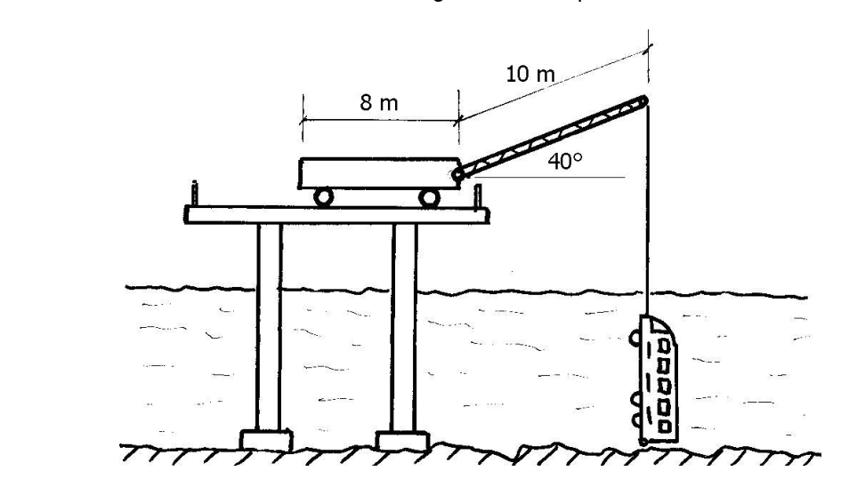
Topic: Fluid Mechanics Metodi: Hydrostatic Equilibrium, Torque & Angular Momentum Analysis Competenze: Physical Reasoning Objects: Sphere, Beam Fonte: Testo (PDF) — p.3
L’omnibus sul fiume
PT38. Aguilar, Tucumán. Blu. Una volta un autobus di lunga distanza è caduto in un fiume, al momento. che attraversava un ponte di medie lunghezze; nell’incidente non c’era nessun
OAF 2010 - 28 che piange vittime fatali; il cellulare lentamente si sta riempiendo di loro acqua mentre stava affondando. Dopo un paio di giorni si organizza un’ operazione per far uscire l’autobus, quindi si assuma un grilletto che si trova in forma Trasversale sul ponte, che al momento di salire dal bus mentre questo Era completamente immerso nell’acqua. Non c’era alcuna sorta, poi. cominciò a uscire dall’acqua davanti agli occhi attenti di curiosi e il Il giornalismo, fino a quando in un istante ha sbilanciato il grilletto e provocato il suo E’ caduta sul letto del fiume e sull’autobus che doveva prendere. Per determinare le cause e quantificarle, si presume che ragionevolezza - le seguenti dimensioni: Lunghezza del corpo della gru: 8 m; Peso WG = 150.000 N Lunghezza della penna (crane): 10 m; Peso della penna 4000N; inclinamento di 40°. Dimensioni totali del bus: 2,80 metri di larghezza; 2,80 metri di altezza; 12 metri di lunghezza. Peso del bus 75.000 N, uniformemente distribuito rispetto alla sua lunghezza. Normalmente , pressione atmosferica e temperatura dell ’ acqua 20 ° C . Peso specifico dell’acqua 9800N/m3. Coefficiente di viscosità dell’acqua a 20oC; = 1 x 10-3 N.s.m-2
Nota: Gli effetti della velocità di corrente di acqua del fiume. Il peso del cavo sarà sconsiderato. Si presume che il peso della gru e della penna siano uguali. distribuite. Il volume dei materiali del bus equivale al 5% del volume totale. Il grilletto si trova come indicato nella figura, dove uno degli estremi di Il supporto è sul ponte. Per gli effetti della viscosità al momento di essere alzato, solo si Quando il bus è completamente in acqua, e se sembra. Un’approccio molto ambiguo, il bus sarà considerato un oggetto. 3m di radio, dove si avverrà la legge di Stokes . Velocità di rallentamento 0,1 m/s. Supponiamo che quando comincia a emergere, conservi il 10% dell’acqua, volume totale del bus, uniformemente distribuito rispetto alla sua lunghezza.
OAF 2010 - 29 In base all’idealizzazione della situazione, si presentano le seguenti domande:
- Chiedete: a) Qual è la pressione che un punto del bus sopporta a 20 m di distanza da profondità? b) Qual è la spinta che il materiale del bus supporta? c) Valore della forza a causa della viscosità. d) Quanto vale la tensione del cavo quando il bus viene alzato e è completamente nel seno la massa liquida? e) Qual è il valore della tensione quando emerge la metà? (Supponiamo che finché non ci sono problemi con l’equilibrio del gru.) f) Quale parte del bus può emergere prima che il grilletto perdano il controllo? equilibrio?
Topic: Fluid Mechanics Metodi: Hydrostatic Equilibrium, Torque & Angular Momentum Analysis Competenze: Physical Reasoning Objects: Sphere, Beam Fonte: Testo (PDF) — p.3
The omnibus on the river
PT38. The Eagles, Tucumán. Blue, please. Once a long-distance bus fell into a river, at the moment. crossing a medium-scale bridge; in the accident there was no real
The following points shall be added: The mobile was slowly filling its interior with water as it sank. After a couple of days an operation is organized . To get the bus out, so he hired a crane that was placed in shape. The bridge is crossed, which at the time of the lifting of the bus It was all in the water— there was no surge, then. He began to emerge from the water in front of the attentive gaze of curious people and the The report is a very important one. Falling on the riverbed and on the bus I had to take. For the purposes of determining the causes and quantifying them, it is presumed that the reasonableness - the following dimensions: Length of the crane body: 8 m; Weight WG = 150.000N Length of the pen (crane): 10 m; Weight of the pen 4000N; slope of 40°. Total dimensions of the bus: 2,80 m wide; 2,80 m high; 12 m long. Weight of the bus 75.000N, evenly distributed with respect to its length. Normal atmospheric pressure and water temperature 20 degrees . Specific water weight 9800N/m3. Water viscosity coefficient at 20oC; = 1 x 10-3 N.s.m-2
Notes: The effects of the current velocity of water from the river. The weight of the cable will be scorned. The weight of the crane and the pen shall be assumed to be uniform distributed. The volume of the bus materials is equal to 5% of the total volume. The crane is located as shown in the figure, where one of the ends of Support is on the bridge. For the effects of viscosity at the time of being lifted, only It will take when the bus is completely underwater and even if it looks like it. A very ambiguous approach will consider the bus as an object. Spherical (to this end) 3m radio, where Stokes’ Law will be enforced . The speed of lifting is 0,1 m/s. Suppose when it starts to emerge, it holds 10% of the water, Total volume of the bus, evenly distributed over its length.
The following points shall be added: Based on the idealization of the situation, the following are presented: Questions: (a) What is the pressure a point of the bus is able to withstand at 20 m from depth? (b) What is the thrust that the bus material supports? (c) The value of the force due to viscosity. (d) What is the value of the cable voltage when the bus is being lifted and Is the liquid mass entirely in the breast? (e) What is the voltage value when half emerges? (Suppose So far there are no problems with the balance of the crane.) f) What part of the bus can emerge before the crane loses its power? What’s the balance?
Topic: Fluid Mechanics Metodi: Hydrostatic Equilibrium, Torque & Angular Momentum Analysis Competenze: Physical Reasoning Objects: Sphere, Beam Fonte: Testo (PDF) — p.3
El ojo humano
PT39. Aguilares, Tucumán. Azul.
El ojo humano es aproximadamente esférico, cuyo esquema se puede
apreciarse en la figura (al pie de la presente página), la membrana exterior es lo
que Ud. ve de color blanco se llama esclerótica, se interrumpe al frente para
dejar pasar la luz, al igual que la segunda membrana llamada coroides que es de
color negro y hace las veces de cámara oscura; la tercera membrana es la parte
sensible a la luz y se llama retina, pero la zona de mayor sensibilidad está en
una parte de ella llamada mancha amarilla que es en definitiva donde se forma la
imagen de lo que vemos. En la parte anterior del ojo se observan algunas
formaciones transparentes semejantes a lentes convergentes.
Por ahora, prescindiendo de la descripción, se le solicita resuelva:
a) Si tuviéramos una lente biconvexa –similar al cristalino- de foco
igual a 3,0cm y se colocara un objeto de 1mm de altura a 2,0cm de la
misma, ¿cuál es la posición, tamaño y tipo de imagen que se
obtiene?
Para el siguiente punto considere al ojo perfectamente esférico con un único índice de refracción de 1,35, siendo el diámetro del mismo de 25mm. Bajo estas suposiciones un oculista pretende observar la mancha amarilla de la retina: b) ¿A que distancia aparente –a contar del frente del ojo- la vería?
Si consideramos al cristalino del ojo humano como una lente biconvexa con igual radio de curvatura por los dos lados; donde el líquido que la rodea, tanto en el humor acuoso como en el humor vítreo, tienen un índice de refracción de 1,33 y que la distancia focal del cristalino puede cambiar durante el proceso de acomodación del ojo, por acción de los músculos ciliares, entonces cuando la distancia focal es de 6,0cm, los radios de curvatura miden 6,3mm. Bajo estas consideraciones se le solicita que: c) Determine el índice de refracción del cristalino.
Si supone que el índice de refracción del cristalino es 2,00 (independientemente del valor que halla obtenido en el punto anterior), tomando 1,33 el índice del humor acuoso/vítreo y se desea “enfocar” un objeto a 4m para que forme imagen real en la mancha amarilla –a 25mm del cristalino-; sin considerar efectos de refracción en el Córneas ni en el humor vítreo/acuoso: d) ¿Qué valores toman los radios del cristalino? (Considere ambos radios iguales)
OAF 2010 - 30
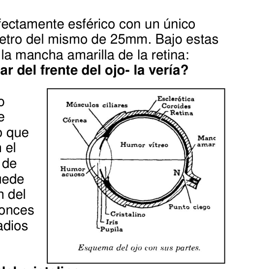
Topic: Geometric Optics Metodi: Thin Lens & Mirror Equation, Snell’s Law Competenze: Physical Reasoning Objects: Lens Fonte: Testo (PDF) — p.3
L’occhio umano
PT39. Aguilar, Tucumán. Blu. L’occhio umano è circa sferico, il cui schema si può trovare La membrana esterna è il che tu. Veno di colore bianco si chiama sclerosi, si interrompe frontale per Lasciare passare la luce, come la seconda membrana chiamata coroide che è di la camera oscura; la terza membrana è la parte sensibile alla luce e si chiama retina, ma la zona di maggiore sensibilità è in Una parte di esso chiamata macchia gialla che è in definitiva dove si forma la immagine di ciò che vediamo. Al di sopra dell’ occhio si osservano alcuni le formazioni trasparenti simili a lenti convergenti. Per ora, indipendentemente dalla descrizione, è richiesto di risolvere: a) Se avessimo un biconvex — simile al cristallino — di fuoco pari a 3,0 cm e si collochi un oggetto di 1 mm di altezza a 2,0 cm della La stessa, qual è la posizione, la dimensione e il tipo di immagine che si
- Si’, lo ottiene.
Per il punto successivo , considerate l’ occhio perfettamente sferica con un unico Indice di rifrazione di 1,35, il diametro di cui al presente punto è di 25 mm. Sotto questi Supponiamo che un oculista voglia osservare la macchia gialla della retina: b) A che distanza apparente - da fronte dell’occhio - la vedresti?
Se consideriamo il cristallino dell’occhio umano come un biconvex con uguale raggio di La curvatura è di entrambi i lati; dove il liquido che La circonda, sia nell’umorismo acquoso che nel Humore di vetro, hanno un tasso di refraczione di 1,33 e che la distanza focale del cristalino può cambiare durante il processo di alloggio del Occhio, per azione dei muscoli ciliari, quindi Quando la distanza focale è di 6,0 cm, i raggi di curvatura misura 6,3 mm. Sotto questi Considerationi è richiesto che: c) Determina l’indice di refraczione del cristallino.
Se supponiamo che l’indice di refraczione del cristalino sia di 2,00 (indipendentemente da Il valore di riferimento di un’indice di valore di valore di valore di valore di valore di valore di valore di valore di valore di valore di valore di valore di valore di valore di valore di valore di valore di valore di valore di valore di valore di valore di valore di valore di valore di valore di valore di valore di valore di valore di valore di valore di valore di valore di valore di valore di valore di valore di valore di valore di valore di valore di valore di valore di valore di valore di valore di valore di valore di valore di valore di valore di valore di valore di valore di valore di valore di valore di valore di valore di valore di valore di valore di valore di valore di valore di valore di valore di valore di valore di valore di valore di valore di valore di valore di valore di valore di valore di valore di valore di valore di valore di valore di valore di valore di valore di valore di valore di valore di valore di valore di valore di valore di valore di valore di valore di valore di valore di valore di valore di valore di valore di valore di valore di valore di valore di valore di valore di valore di valore di valore di valore di valore di valore di valore di valore di valore di valore di valore di valore di valore di valore di valore di valore di valore di valore di valore di valore di valore di valore di valore di valore di valore di valore di valore di valore di valore di valore di valore di valore di valore di valore di valore di valore di valore di valore di valore di valore di valore di valore di valore di valore di valore di valore di valore di valore di valore di valore di valore di valore di valore di valore di valore di valore di valore di valore di valore di valore di valore di valore di valore di valore di valore di valore di valore di valore di valore di valore di valore di valore di valore di valore di valore di valore di valore di valore di valore di valore di valore di valore di valore di valore di valore di valore di valore di valore di valore di valore di valore di di valore di valore di valore di valore di valore di valore di di di di di di di di di di di di di di di di di di di di di di di di di di di di di di di di di di di di di di di di di di di di di di di di di di di di di di di di di di di di di di di di di di di di di di di di di di di di di di di di di di di di di di di di di di di Humore acqueo/vitreo e si desidera focalizzare un oggetto a 4m per farla formare immagine reale sul macchia gialla a 25mm del cristallico-; senza considerare Effetti di refraczione sulle corne e sullo stato di vista/acqueo: d) Quali sono i valori dei raggi del cristallino? (Considera entrambi i radii uguali)
OAF 2010 - 30
Topic: Geometric Optics Metodi: Thin Lens & Mirror Equation, Snell’s Law Competenze: Physical Reasoning Objects: Lens Fonte: Testo (PDF) — p.3
The human eye
PT39. The Eagles, Tucumán. Blue, please. The human eye is approximately spherical, whose outline can be seen. The outer membrane is the outer membrane of the skin. That you. It’s called sclerosis, it’s interrupted in front of you. Let the light pass through, like the second membrane called the choroid that’s from The third membrane is the part. It’s sensitive to light and it’s called the retina, but the area of greatest sensitivity is in the A part of it called the yellow spot that is ultimately where the forming of the image of what we see. Some of the eye ‘s anterior parts are visible . The following is the list of the types of lenses used: For now, regardless of the description, you are asked to resolve: a) If we had a biconvex lens that looks like a lens of focus equal to 3,0 cm and an object of 1 mm in height at 2,0 cm from the What is the position, size and type of image that you are You get it?
For the next point consider the perfectly spherical eye with a single The refractive index of 1,35, with the diameter of the same 25 mm. Under these . Supposing an eye doctor intends to observe the retina yellow spot: (b) How far away would you see it from the front of your eye?
If we consider the lens of the human eye . Like a biconvex lens with the same radius of curvature on both sides; where the liquid is It’s all around her, in both the watery mood and the Glass humor, they have a refractive index of 1.33 and that the focal length of the lens can change during the accommodation process of the eye, by the action of the ciliary muscles, then When the focal length is 6.0 cm, the radii The curvature measures 6.3 mm. Under these . Considerations are requested: (c) Determine the refractive index of the lens.
If we assume that the refractive index of the lens is 2.00 (independently) The value of the value obtained in the previous point) taking 1.33 the index of the water/glass moods and you want to focus an object at 4m to form Real image on the yellow spot a 25mm of the lens-; without considering Refractive effects on the cornea or on vitreous/acute mood: (d) What values do the radii of the lens take? (Consider both radii equal)
The following points shall be added:
Topic: Geometric Optics Metodi: Thin Lens & Mirror Equation, Snell’s Law Competenze: Physical Reasoning Objects: Lens Fonte: Testo (PDF) — p.3
Fisica legal
PT40. Ciudad de Mendoza. Azul.
Física legal:
En un accidente de tránsito, un auto golpeó a un peatón que se encontraba
parado sobre el borde de la calle, inmediatamente el conductor pisó el freno para
detener el auto mientras el peatón se encontraba sobre su capot. El conductor
alegó frente a la policía que su velocidad antes del impacto no superaba los 60
km/h permitidos en esa zona. Los policías de criminalística arribaron al lugar y
midieron la longitud de la marca de las ruedas sobre el pavimento durante el
frenado, buscaron el coeficiente de fricción por deslizamiento dinámica entre ese
tipo de pavimento y las ruedas, observaron que la inclinación respecto de la
horizontal de la calle era de 5º a favor del deslizamiento. Averiguaron en el
manual del auto su peso, pesaron al conductor y al peatón, volcaron dichos
datos en la siguiente tabla :
Longitud de la marca de frenado 35 m Coeficiente de fricción : 0,5
Peso del auto: 1 500 kgf Peso del conductor : 80 kgf
Peso del peatón : 70 kgf Ángulo de inclinación a favor del desplazamiento 5º
Con estos datos la policía determinó
a- La fuerza media de frenado.
b- El trabajo realizado por esta.
c- La porción del peso que favorecía el desplazamiento.
d- La velocidad que llevaba en el instante en que empezó a frenar.
e- La velocidad del auto en el instante antes de chocar
Realiza dichos cálculos y contesta:
¿De acuerdo a los resultados obtenidos, el conductor, habrá tenido que pagar una multa por exceso de velocidad?
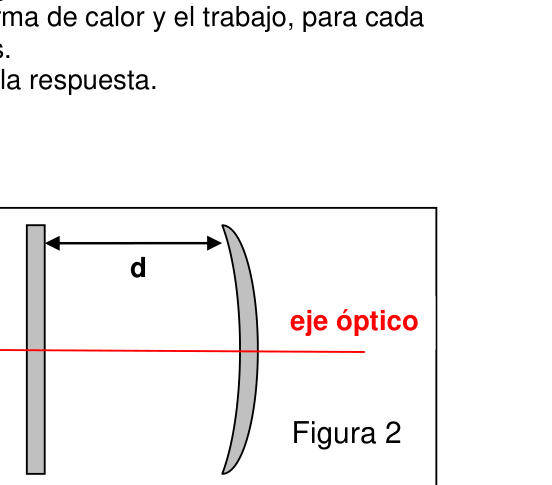
Topic: Newtonian Mechanics, Conservation of Energy Metodi: Free-Body Diagram, Conservation of Energy Competenze: Physical Reasoning Objects: — Fonte: Testo (PDF) — p.3
Fisica legale
PT40. Città di Mendoza. Blu. Fisica legale: In un incidente stradale, una macchina ha colpito un pedone che si trovava Sostava sul bordo della strada, immediatamente il conducente ha calcato il freno per fermare la macchina mentre il pedone era sul cappotto. Il conducente Ha affermato alla polizia che la sua velocità prima dell’impatto non superava i 60 . km/h consentiti in quella zona. I poliziotti della forense sono arrivati sul posto e… hanno misurato la lunghezza del marchio delle ruote sul pavimento durante il In questo modo, la velocità di frenata è aumentata, e la velocità di frenata è aumentata. La tendenza di un’inclinazione rispetto al L’orizzonte della strada era di 5° in favore dello slitto. L’hanno scoperto nel Il manuale della macchina il suo peso, pesato il conducente e il pedone, hanno buttato fuori. dati nella tabella seguente: Lunghezza del marchio di frenata 35 m Coefficiente di frizione: 0,5 Peso della macchina: 1 500 kgf Peso del conducente: 80 kgf Peso del pedone: 70 kgf Angolo di inclinamento a favore del spostamento 5o Con questi dati la polizia ha determinato a- Forza media di frenata. b) Il lavoro svolto da quest’ultima. c- La porzione di peso che favorisce il spostamento. d- La velocità che ha guidato all’istante in cui ha iniziato a frenare. e- La velocità della macchina all’ istante prima dell’incidente Fa questi calcoli e risponde:
Secondo i risultati ottenuti, il conducente, ha dovuto pagare. una multa per eccesso di velocità?
Topic: Newtonian Mechanics, Conservation of Energy Metodi: Free-Body Diagram, Conservation of Energy Competenze: Physical Reasoning Objects: — Fonte: Testo (PDF) — p.3
The following is the list of the countries of the European Union:
PT40. The city of Mendoza. Blue, please. Legal physics: In a traffic accident, a car hit a pedestrian who was standing Standing on the edge of the street, the driver immediately stepped on the brake to Stop the car while the pedestrian was on his hood. The driver . He claimed to the police that his speed before the impact was not more than 60 . km/h allowed in that area. Criminal police arrived at the scene and … They measured the length of the mark on the wheels on the pavement during the Braking, they looked for the friction coefficient by dynamic sliding between that. The study showed that the slope of the wheel is very low. The horizontal of the street was 5 degrees in favor of the slide. They found out in the They weighed the driver and pedestrian, they flipped the words. data in the following table: Length of braking mark 35 m Friction coefficient: 0.5 Weight of the car: 1 500 kgf Weight of the driver: 80 kgf Pedestrian weight: 70 kgf Angle of inclination in favour of 5° shift With these data , the police determined a- The mean braking force. b- The work carried out by this. c- The portion of weight which favored displacement. d- The speed at which it was travelling at the moment it started to brake. e- The speed of the car at the instant before the collision Make these calculations and answer:
According to the results obtained, the driver must have paid. A fine for speeding?
Topic: Newtonian Mechanics, Conservation of Energy Metodi: Free-Body Diagram, Conservation of Energy Competenze: Physical Reasoning Objects: — Fonte: Testo (PDF) — p.3
Un problema electrico
PT41. Ciudad de Mendoza. Azul.
Un problema eléctrico:
Si cuentas con dos focos con las siguientes características cada uno:
Foco 1: R= 12; Potencia = 3W y Foco 2 : R= 4 ; Potencia = 9W, además cuenta
con dos fuentes de corriente constante una de 12 volt y la otra de 6 volt.
a- Determina por medio de cálculos la conexión con la que funcionarán
mejor, si en serie o en paralelo y con cuál de las fuentes, con la de 12 volt
o con la de 6 volt.
b- Indica en qué circuitos los focos se pueden quemar y qué valor límite
debería tener la fuente para que esto no ocurra en cada conexión que
armes.
c- Repite los puntos anteriores pero ahora considerando además las
resistencias internas de las fuentes ( 12 volt, ri= 0,5 ohm y 6 volt,
ri= 0,8 ohm) ¿Las conclusiones cambian?
Topic: Circuits Metodi: Kirchhoff’s Laws, Equivalent Circuit Reduction Competenze: Physical Reasoning Objects: Resistor, Battery Fonte: Testo (PDF) — p.3
Un problema elettrico
PT41. Città di Mendoza. Blu. Un problema elettrico: Se hai due focali con le seguenti caratteristiche: Foco 1: R= 12; Potenza = 3W e Foco 2 : R= 4; Potenza = 9W, conta inoltre con due fonti di corrente costante, una di 12 volt e l’altra di 6 volt. a- Determina con calcoli il collegamento con cui funzioneranno Meglio, se in serie o in parallelo e con quale delle fonti, con quella di 12 volt o con quella a 6 volt. b- Indica i circuiti in cui i foci possono essere bruciati e il limite di valore Dovrebbe avere la fonte per evitare che questo accada in ogni connessione che Le armi. c- Ripeti i punti precedenti ma ora considerando anche i punti resistenze interne delle fonti (12 volt, ri= 0,5 ohm e 6 volt, Ri = 0,8 ohm) Le conclusioni cambiano?
Topic: Circuits Metodi: Kirchhoff’s Laws, Equivalent Circuit Reduction Competenze: Physical Reasoning Objects: Resistor, Battery Fonte: Testo (PDF) — p.3
A power failure
PT41. The city of Mendoza. Blue, please. An electrical problem: If you have two foci with the following characteristics each: Focus 1: R=12; Power = 3W and Focus 2 : R=4; Power = 9W, plus counts with two constant current sources, one of 12 volts and the other of 6 volts. a- Determine by calculation the connection with which they will work Better, if in series or in parallel and with which of the sources, with the 12 volt Or with the 6-volt. b- Indicates which circuits the headlamps can be burned on and what limit value You should have the source so this doesn ‘t happen in every connection you make . Weapons. c- Repeat the previous points but now consider the The power output of the power supply is not less than 0,05 volts. Ri = 0.8 ohm) Do the conclusions change?
Topic: Circuits Metodi: Kirchhoff’s Laws, Equivalent Circuit Reduction Competenze: Physical Reasoning Objects: Resistor, Battery Fonte: Testo (PDF) — p.3
Un problema de fluidos
PT42. Ciudad de Mendoza. Azul. Un problema de fluidos: Se tienen dos tanques como los de la figura. El tanque A está cerrado y contiene agua (de densidad = 1g/cm3) hasta una altura de 0,4m. El tanque B está abierto y puede recibir todo el contenido del tanque A cuando a éste se le quita el tapón C, (ubicado a 0,1m de la base de dicho tanque) que obtura un pequeño orificio.
OAF 2010 - 31
Si al tanque Ase le quita la tapa, se le coloca una esfera de 15 cm de diámetro de un material cuya densidad es 0,95 g/cm3, y luego se le vuelve a cerrar la tapa: ¿Qué empuje recibe la esfera? ¿Cuántos centímetros subió el nivel del líquido? En esas condiciones ¿qué presión, en pascales, soporta el tapón? Si ahora se abre la tapa y se quita el tapón, ¿con qué velocidad sale el agua del Tanque A? Si el orificio tiene una superficie de 1 cm2, ¿Qué caudal de agua sale a través de él? Teniendo en cuenta el Tanque B: ¿Qué altura de agua contiene el Tanque B cuando por el orificio del Tanque A pasó toda el agua que estaba por encima de dicho orificio? ¿En cuánto tiempo el agua que se encontraba por encima del tapón, logra dicha altura en el Tanque B? NOTA: volumen de la esfera = 4/3 . r3
Topic: Fluid Mechanics Metodi: Hydrostatic Equilibrium, Bernoulli’s Equation Competenze: Physical Reasoning Objects: Container, Sphere Fonte: Testo (PDF) — p.3
Un problema di fluidi
PT42. Città di Mendoza. Blu. Un problema di fluidi: Hanno due carri armati come quelli della figura. Il serbatoio A è chiuso e contiene acqua (di densità = 1 g/cm3) fino ad una altezza di 0,4 m. Il serbatoio B è aperto. e può ricevere tutto il contenuto del serbatoio A quando il tappo viene tolto. C, (situato a 0,1 m dalla base di tale serbatoio) che si chiude un piccolo orizzonte.
OAF 2010 - 31
Se il serbatoio Ase si toglie la copertura, viene inserita una sfera di 15 cm di diametro di un materiale di densità di 0,95 g/cm3, e poi richiudere la copertura: Che impulso riceve la sfera? Quanti centimetri il livello del liquido è salito? In queste condizioni, che pressione, a Pasqua, sopporta il tappo? Se adesso aprite la copertura e toglite la tappa, A che velocità si scende l’acqua dal carro A? Se il foro ha una superficie di 1 cm2, che flusso d’acqua esce attraverso él? Considerando il Cisterna B: Che altezza d’acqua contiene il serbatoio B quando il buco del serbatoio A Ha passato tutta l’acqua che era sopra quel buco? In quanto tempo l’acqua che si trovava sopra il tappo, ottiene tale Altezza in Tanco B? NOTA: volume della sfera = 4/3 . r3
Topic: Fluid Mechanics Metodi: Hydrostatic Equilibrium, Bernoulli’s Equation Competenze: Physical Reasoning Objects: Container, Sphere Fonte: Testo (PDF) — p.3
A fluid problem
PT42. The city of Mendoza. Blue, please. A fluid problem: They have two tanks like the ones in the figure. Tank A is closed and contains water (density = 1 g/cm3) up to a height of 0,4m. Tank B is open . And you can get all the contents of tank A when the tank is removed from the cap. C, (located 0,1 m from the base of the tank) which closes a small hole.
The following points shall be added:
If Ase removes the lid from the tank, a sphere of 15 cm diameter is placed on it. of a material with a density of 0.95 g/cm3, and then close the Cover: What’s the boost the sphere gets? How many centimeters did the liquid level rise? Under these conditions, what pressure, on Easter, does the lid withstand? If you open the lid and remove the lid, How fast is water coming out of Tank A? If the hole has a surface of 1 cm2, what flow of water goes through it? él? Taking into account Tank B: What height of water contains tank B when through the hole of tank A? Did all the water that was above that hole pass? How long before the water above the tap, it achieves that. Height in tank B? NOTE: The volume of the sphere = 4/3 . r3
Topic: Fluid Mechanics Metodi: Hydrostatic Equilibrium, Bernoulli’s Equation Competenze: Physical Reasoning Objects: Container, Sphere Fonte: Testo (PDF) — p.3
PT43. Ciudad de Buenos Aires. Verde. Una barra rígida de masa despreciable puede girar libremente en el plano vertical, alrededor de un eje horizontal que pasa por uno de sus extremos (punto O en la figura 1), mientras que en su otro extremo se suelda una pequeña esferita. Se libera la barra del reposo desde la posición vertical (α = 0º). Por supuesto, para que comience a moverse hace falta darle una pequeña velocidad inicial, pero considérela despreciable. No hay fricción de ninguna clase. a) Obtenga la rapidez como función del ángulo formado con la vertical. Tanque A Tanque B d2 = 1m h3=0,5 m d1=0,5 m h1= 0,8 m Tapón C h2 =0,4 m
OAF 2010 - 32 o α Figura 1 d eje óptico Figura 2 b) Calcule para qué valores del ángulo a (0º<α<90º) el módulo de la fuerza que la barra ejerce sobre la esferita (en dirección paralela a la barra) es igual a la mitad del peso de dicha esferita. Tenga en cuenta que dicha fuerza puede ser radial hacia adentro o hacia fuera.
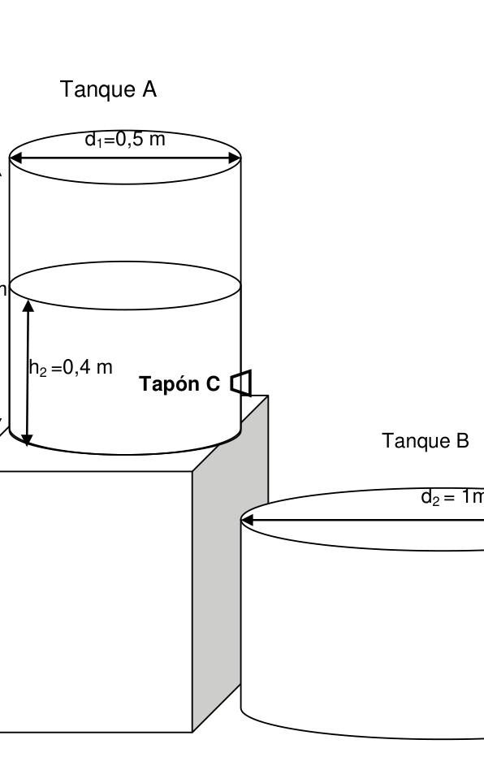
Topic: Conservation of Energy, Rotational Dynamics Metodi: Conservation of Energy, Free-Body Diagram, Torque & Angular Momentum Analysis Competenze: Physical Reasoning Objects: Rod, Sphere Fonte: Testo (PDF) — p.3
PT43. Città di Buenos Aires. Verde. Una barra rigida di massa dispregiata può girare liberamente in piano. Verticale, intorno ad un asse orizzontale che passa attraverso una delle sue estremità (punto O nella figura 1), mentre all’altra estremità viene rilasciata una piccola spiro. La barra di riposo viene rilasciata dalla posizione verticale (α = 0o). Per Certo, per iniziare a muoversi, serve una piccola velocità. iniziale, ma la consideri dispregiata. Non c’è friczione di alcun tipo. a) Ottenere la velocità a funzione dell’angolo formato verticalmente. Tanco A Tanco B d2 = 1m h3=0,5 m d1=0,5 m h1= 0,8 m Cappone C h2 =0,4 m
OAF 2010 - 32 o α Figura 1 d L’asse ottico Figura 2 b) Calcolare per quali valori dell’angolo a (0o<α<90o) il modulo di forza che la barra esercita sulla sfera (in direzione parallela alla barra) è pari a metà del peso di tale sfera. Si noti che detto la forza può essere radial verso l’interno o verso l’esterno.
Topic: Conservation of Energy, Rotational Dynamics Metodi: Conservation of Energy, Free-Body Diagram, Torque & Angular Momentum Analysis Competenze: Physical Reasoning Objects: Rod, Sphere Fonte: Testo (PDF) — p.3
PT43. City of Buenos Aires. Green, please. A rigid bar of despicable mass can spin freely in the plane. vertical, around a horizontal axis passing through one of its ends (point Or in Figure 1), while at its other end a small one is released It’s a sphere. The rest bar is released from the vertical position (α = 0o). By Of course, to start moving it takes a little speed. Initial, but consider it despicable. There’s no friction of any kind. (a) Get the velocity as a function of the angle formed with the vertical. Tank A Tank B d2 = 1m h3=0,5 m d1=0,5 m h1= 0,8 m C-cap h2 =0,4 m
The following points shall be added: o α Figure 1 d Optical axis Figure 2 (b) Calculate for which values of the angle a (0o<α<90o) the force module The bar’s exertion over the sphere (in a direction parallel to the bar) is equal to half the weight of that sphere. Please note that this is The force can be radial inward or outward.
Topic: Conservation of Energy, Rotational Dynamics Metodi: Conservation of Energy, Free-Body Diagram, Torque & Angular Momentum Analysis Competenze: Physical Reasoning Objects: Rod, Sphere Fonte: Testo (PDF) — p.3
PT44. Ciudad de Buenos Aires. Verde. Dos máquinas térmicas M1 y M2 trabajan entre dos fuentes cuyas temperaturas son 600 K y 200 K. La máquina M1 es reversible y extrae 150 cal de la fuente de mayor temperatura. La máquina M2 es frigorífica y extrae 25 cal de la fuente de menor temperatura, necesitando para ello un trabajo de 50 cal. Se pide: a) Esquematizar las dos máquinas indicando el sentido de las trasferencias de energía en forma de calor y trabajo. b) Calcular la energía transferida en forma de calor y el trabajo, para cada máquina, con sus respectivos signos. c) Indicar si M2 es reversible. Justificar la respuesta.
Topic: Thermodynamics Metodi: Thermodynamic Cycle Analysis, First Law of Thermodynamics Competenze: Physical Reasoning Objects: Heat Engine Fonte: Testo (PDF) — p.3
PT44. Città di Buenos Aires. Verde. Due macchine termiche M1 e M2 funzionano tra due fonti le cui temperature Sono 600 K e 200 K. La macchina M1 è reversibile e estra 150 calci dalla fonte più alta di temperatura. La macchina M2 è frigorifica e estra 25 cal dalla fonte a bassa temperatura. E per questo, ha bisogno di un lavoro di 50 cal. Si chiede: a) Squamatizzare le due macchine indicando il senso dei trasferimenti di energia sotto forma di calore e lavoro. b) Calcolare l’energia trasferita in forma di calore e lavoro, per ciascuna macchina, con i suoi segni. c) Indicare se M2 è reversibile. Giustificare la risposta.
Topic: Thermodynamics Metodi: Thermodynamic Cycle Analysis, First Law of Thermodynamics Competenze: Physical Reasoning Objects: Heat Engine Fonte: Testo (PDF) — p.3
PT44. City of Buenos Aires. Green, please. Two heat machines M1 and M2 work between two sources whose temperatures are It’s 600K and 200K. The M1 machine is reversible and extracts 150 cal from the highest temperature source. The M2 machine is a refrigerator and extracts 25 cal from the lower temperature source. I’m not sure what I’m saying. It asks: (a) Sketch the two machines indicating the direction of the transfers. energy in the form of heat and work. (b) Calculate the energy transferred in the form of heat and work, for each machine, with its respective signs. (c) Indicate whether M2 is reversible. Justify the answer.
Topic: Thermodynamics Metodi: Thermodynamic Cycle Analysis, First Law of Thermodynamics Competenze: Physical Reasoning Objects: Heat Engine Fonte: Testo (PDF) — p.3
PT45. Ciudad de Buenos Aires. Verde. Un espejo cóncavo, de 32 cm de radio de curvatura, se encuentra separado de un espejo plano por una distancia d = 50cm, como se indica en la figura 2. a) ¿En qué lugar sobre el eje óptico del sistema habría que colocar un objeto, para que las primeras imágenes formadas por ambos espejos se superpongan entre sí? b) ¿Cuál es el tamaño de dichas imágenes, suponiendo que el objeto tiene una altura h?
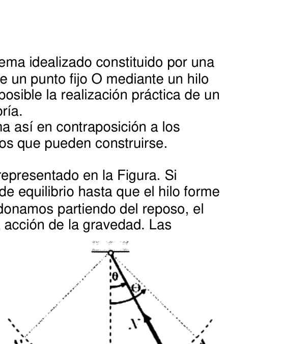
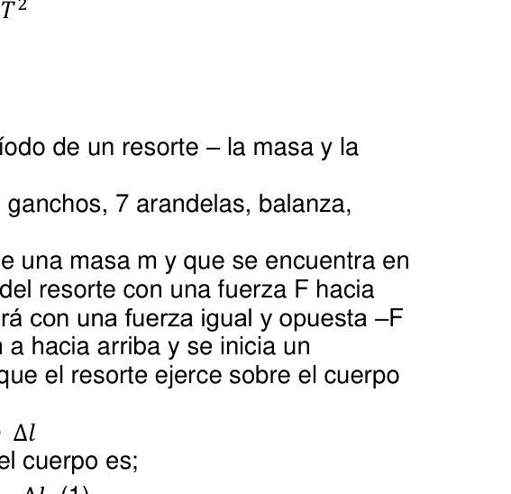
Topic: Geometric Optics Metodi: Thin Lens & Mirror Equation, Ray Tracing Competenze: Physical Reasoning Objects: Mirror Fonte: Testo (PDF) — p.3
PT45. Città di Buenos Aires. Verde. Uno specchio conca, di 32 cm di diametro radius di curvatura, si trova separato da uno specchio piatto da una distanza d = 50 cm, come se indica la figura 2. a) In che posizione sull’asse l’ottica del sistema sarebbe che posizionino un oggetto, per che le prime immagini formate da entrambi. specchi che si sovrappongono? b) Qual è la dimensione di tali immagini, supponendo che l’oggetto abbia un’altezza h?
Topic: Geometric Optics Metodi: Thin Lens & Mirror Equation, Ray Tracing Competenze: Physical Reasoning Objects: Mirror Fonte: Testo (PDF) — p.3
PT45. City of Buenos Aires. Green, please. A concave mirror, 32 cm wide radius of curvature, is found separated from a flat mirror by a distance d = 50cm, as is shown in Figure 2. (a) Where on the axis Optical system would have to place an object, to than the first images. They ‘re both made up . mirrors overlap with each other? (b) What is the size of these images, assuming the object has a height h?
Topic: Geometric Optics Metodi: Thin Lens & Mirror Equation, Ray Tracing Competenze: Physical Reasoning Objects: Mirror Fonte: Testo (PDF) — p.3
PT46. Posadas, Misiones. Azul. Una fábrica de camiones debe construir un nuevo móvil que debe tener una buena aceleración. Entonces deciden construir uno de 4.300 Kg de masa,
OAF 2010 - 33 incluyendo el motor; que alcance una velocidad de 100 Km/h (27,7 m/s) en 12 segundos. a. Determina la aceleración que puede alcanzar el móvil. b. ¿Cuál es el valor de la velocidad que alcanza a los 7 segundos después de haber partido del reposo? c. ¿Qué distancia recorre el móvil hasta alcanzar los 100 Km/h? d. ¿Qué cantidad de energía cinética obtiene el automóvil a los 12 segundos? e. ¿Qué potencia debe desarrollar el motor del móvil para cumplir con los requisitos del estudio de mercado? f. ¿Qué valor tiene la fuerza que actúa sobre el móvil para producir tanta aceleración? Puntaje: a) 1,50 b) 1,50 c) 1,50 d) 1,50 e) 2,50 f) 1,50
Topic: Newtonian Mechanics, Conservation of Energy Metodi: Kinematic Equations, Conservation of Energy Competenze: Physical Reasoning Objects: — Fonte: Testo (PDF) — p.3
PT46. Posate, Missioni. Blu. Una fabbrica di camion deve costruire un nuovo cellulare che deve avere un Buona accelerazione. Quindi decidono di costruire uno di 4.300 Kg di massa,
OAF 2010 - 33 compreso il motore; raggiunge una velocità di 100 Km/h (27,7 m/s) in 12
- Segondi. a. Determina la velocità che il cellulare può raggiungere. b. Qual è il valore della velocità raggiunta a 7 secondi? dopo aver lasciato il riposo? c. Qual è la distanza che il cellulare percorre fino a raggiungere i 100 km/h? d. Quanta energia cinetica ottiene l’auto a 12 anni
- Secondi? e. Qual è la potenza che deve sviluppare il motore del cellulare per soddisfare i requisiti dell’indagine di mercato? f. Che valore ha la forza che agisce sul cellulare per produrre
- così veloce? Punteggio: a) 1,50 b) 1,50 c) 1,50 d) 1,50 e) 2,50 f) 1,50
Topic: Newtonian Mechanics, Conservation of Energy Metodi: Kinematic Equations, Conservation of Energy Competenze: Physical Reasoning Objects: — Fonte: Testo (PDF) — p.3
PT46. The inn, the missions. Blue, please. A truck factory must build a new mobile phone that must have a Good speed. So they decide to build one of 4,300 kg of mass,
The following points shall be added: including the engine; reaching a speed of 100 Km/h (27,7 m/s) in 12 Seconds. a. Determine the speed the mobile can reach. b. What’s the value of the speed that you reach in 7 seconds? After you left the rest? c. How far does the mobile reach 100 km/h? d. How much kinetic energy does the car get at 12? Seconds? e. What power must the mobile engine develop to meet the requirements of the market study? f. What value does the force acting on the mobile have to produce That much acceleration? Score: a) 1.50 b) 1.50 c) 1.50 d) 1.50 e) 2.50 f) 1.50
Topic: Newtonian Mechanics, Conservation of Energy Metodi: Kinematic Equations, Conservation of Energy Competenze: Physical Reasoning Objects: — Fonte: Testo (PDF) — p.3
PT47. Posadas, Misiones. Azul. Una caja de herramientas de aluminio de 6,5 kg de masa, descansa sobre la superficie de una mesa. a. Calcula el Peso en Newton de la caja de herramientas. b. Realiza un dibujo de la caja de herramientas apoyado sobre la superficie de la mesa, e incluye todo el sistema de fuerzas que actúa sobre dicha caja. c. La fuerza mínima que es preciso ejercer para ponerla en movimiento, cuyo coeficiente es 0,12. d. La fuerza que debe aplicarse a dicha caja, para que adquiera una aceleración de 1,5 m/seg2, con un coeficiente de 0,18. e. ¿Qué cantidad de energía potencial obtiene la caja de herramientas, sabiendo que la mesa tiene una altura de 50centímetros. f. Determinar la capacidad calorífica de dicha caja de aluminio. Ce Al = 896 J/kg.K Puntaje: a) 1 b) 2,50 c) 1,50 d) 2,00 e) 1,50 f) 1,50
Topic: Newtonian Mechanics, Thermodynamics Metodi: Free-Body Diagram, Conservation of Energy Competenze: Physical Reasoning Objects: Block Fonte: Testo (PDF) — p.3
PT47. Posate, Missioni. Blu. Una scatola di strumenti in alluminio di 6,5 kg di massa, riposata sulla superficie di un tavolo. a. Calcola il Peso Newton della scatola degli strumenti. b. Fate un disegno della casella di strumenti appoggiata sulla La superficie del tavolo, e comprende l’intero sistema di forze che agisce su quella scatola. c. La forza minima che occorre esercitare per metterla in movimento, il cui coefficiente è 0,12. d. La forza che deve essere applicata a tale cassa, per ottenere una accelerazione di 1,5 m/sec2, con un coefficiente di 0,18. e. Quanto energia potenziale ottiene la scatola degli strumenti? sapendo che il tavolo è alto 50 centimetri. f. Determinare la capacità calorifica di tale cassetta di alluminio. Ce Al = 896 J/kg.K Punteggio: a) 1 b) 2,50 c) 1,50 d) 2,00 e) 1,50 f) 1,50
Topic: Newtonian Mechanics, Thermodynamics Metodi: Free-Body Diagram, Conservation of Energy Competenze: Physical Reasoning Objects: Block Fonte: Testo (PDF) — p.3
PT47. The inn, the missions. Blue, please. A 6.5 kg aluminium toolbox rests on the surface of a table. a. Calculate the Newton Weight of the toolbox. b. Draw a drawing of the toolbox leaning on the The table surface, and includes the entire system of forces that It acts on that box. c. The minimum force to be used to put it in the coefficient of motion is 0,12. d. The force to be applied to such a box, in order to acquire a acceleration of 1,5 m/s2, with a coefficient of 0,18. e. How much potential energy does the toolbox get? Knowing the table is 50 centimeters high. f. Determine the heat capacity of the aluminium case. Ce Al = 896 J/kg.K Score: a) 1 b) 2,50 c) 1,50 d) 2,00 e) 1,50 f) 1,50
Topic: Newtonian Mechanics, Thermodynamics Metodi: Free-Body Diagram, Conservation of Energy Competenze: Physical Reasoning Objects: Block Fonte: Testo (PDF) — p.3
PT48. Posadas, Misiones. Azul.
Un prisma cuadrangular de 4 cm de base y 5 cm de altura, es llenado con
mercurio (Pe = 13,6
/dm3) hasta los 4/5 de su altura. Se pide calcular:
a. El volumen del mercurio.
b. El peso del mercurio.
c. La presión en el fondo del recipiente.
d. La presión a 1 cm de la superficie libre.
e. La presión en el fondo si en lugar de mercurio se coloca agua hasta
llenarlo totalmente.
Dato: densidad del agua 1 g/cm3.
Puntaje: a) 3 b) 1 c) 2 d) 2 e) 2
Topic: Fluid Mechanics Metodi: Hydrostatic Equilibrium Competenze: Physical Reasoning Objects: Container Fonte: Testo (PDF) — p.3
PT48. Posate, Missioni. Blu. Un prisma quadrangolare di 4 cm di base e 5 cm di altezza, è riempito di Mercurio (Pe = 13,6 /dm3) fino a 4/5 della sua altezza. Si chiede di calcolare: a. Il volume del mercurio. b. Il peso del mercurio. c. La pressione sul fondo del recipiente. d. La pressione a 1 cm dalla superficie libera. e. La pressione sul fondo se invece di mercio si mette acqua fino a riempire completamente. Data: densità dell’acqua 1 g/cm3. Punteggio: a) 3 b) 1 c) 2 d) 2 e) 2
Topic: Fluid Mechanics Metodi: Hydrostatic Equilibrium Competenze: Physical Reasoning Objects: Container Fonte: Testo (PDF) — p.3
PT48. The inn, the missions. Blue, please. A square prism 4 cm base and 5 cm high, is filled with The following is the list of the products of the product: /dm3) to 4/5 of its height. Calculation is requested: a. The volume of mercury. b. The weight of mercury. c. The pressure at the bottom of the container. d. Pressure 1 cm from the free surface. e. The pressure at the bottom if instead of mercury water is put up to Fill it up completely. Date: density of water 1 g/cm3. Score: a) 3 b) 1 c) 2 d) 2 e) 2
Topic: Fluid Mechanics Metodi: Hydrostatic Equilibrium Competenze: Physical Reasoning Objects: Container Fonte: Testo (PDF) — p.3
PT49. Santa Rosa, La Pampa. Azul.
Martina, vive en un quinto piso de un edificio de 9, con terraza en el último.
Cierta tarde asomada por la ventana de su habitación distraída escucha una voz
alarmada y un ¡CUIDADO!… Por supuesto que grande fue su sorpresa cuando
después de meter la cabeza dentro ve pasar una lluvia de macetas.
¡Lluvia de macetas…Fiuuuu! Por poco…. dijo, alguien dejó las plantas muy cerca
de la cornisa y la brisa las tiró.
Revisa la situación y determina el tiempo de reacción de Martina entre que
escucha la advertencia y mete la cabeza dentro.
OAF 2010 - 34 ¿Qué velocidad llevaba la primera maceta cuando la ve pasar por su ventana? ¿Con que velocidad llega al piso esa maceta? ¿Qué energía mecánica tiene esa maceta? (Considera despreciable el rozamiento del aire.) No todas las macetas tienen el mismo tamaño ni la misma masa, ¿Tendrán la misma velocidad que la primera al pasar por la ventana de Martina? Y al llegar al piso su energía mecánica ¿será la misma que la de la primera maceta? Explica cada respuesta. Estima que cada piso tiene 3m y la planta baja 4m de altura.
Topic: Newtonian Mechanics, Conservation of Energy Metodi: Kinematic Equations, Conservation of Energy Competenze: Physical Reasoning Objects: — Fonte: Testo (PDF) — p.3
PT49. Santa Rosa, La Pampa. Blu. Martina, vive al quinto piano di un edificio di nove, con terrazza nell’ultimo. Un pomeriggio, guardando fuori dalla finestra della sua stanza, si sente una voce.
- E’ un’allarme e un’attenzione! Certo che grande fu la sua sorpresa quando Dopo aver messo la testa dentro, vede passare una pioggia di vasi. Pioggia di vasche! Per poco…. Ha detto, qualcuno ha lasciato le piante molto vicino. Le ha gettate dalla cornice e la vento le ha gettate. Controlla la situazione e determina il tempo di reazione di Martina tra il quale Ascolta l’avvertimento e metti la testa dentro.
OAF 2010 - 34 A che velocità ha portato il primo vaso quando lo vede passare dalla sua finestra? A che velocità arriva a terra quel vaso? Che energia meccanica ha quella?
- La macchia? (Riteni disprezioso il ruggine dell’aria.) Non tutte le vasi hanno la stessa dimensione e massa, avranno la stessa massa? La stessa velocità della prima passando per la finestra di Martina? E arrivati al La sua energia meccanica sarà la stessa della prima macchia? Spiega ogni risposta. Si stima che ogni piano abbia 3 metri e il piano inferiore 4 metri di altezza.
Topic: Newtonian Mechanics, Conservation of Energy Metodi: Kinematic Equations, Conservation of Energy Competenze: Physical Reasoning Objects: — Fonte: Testo (PDF) — p.3
PT49. Santa Rosa, the Pampa. Blue, please. Martina, she lives on the fifth floor of a nine-story building, with a terrace on the last. One afternoon , looking out of the window of her distracted room , she heard a voice . Alarmed and a CURRENT! Of course , it was a big surprise when After you put your head inside, you see a pot rain. It’s raining potatoes. For a short time. He said, someone left the plants very close. The wind blows them off. He reviews the situation and determines Martina ‘s reaction time between Listen to the warning and put your head inside.
The following points shall be added: How fast was the first pot going when you saw it pass through your window? How fast does that pot get to the floor? What mechanical energy does that have? The pot? (He considers air glitter despicable.) Not all pots have the same size or the same mass, will they have the same size? Same speed as the first one when you went through Martina’s window? And when we get to the Will the mechanical energy of the first pot be the same? Explain . every answer. He estimates that each floor is 3 meters high and the ground floor 4 meters high.
Topic: Newtonian Mechanics, Conservation of Energy Metodi: Kinematic Equations, Conservation of Energy Competenze: Physical Reasoning Objects: — Fonte: Testo (PDF) — p.3
PT50. Santa Rosa, La Pampa. Azul.
a) Al levantar un piano de 5000N con un sistema de poleas, los operarios
advierten que por cada 2m de cuerda que desplazan hacia abajo el piano sube
0.4m. En condiciones ideales ¿cuánta fuerza se necesita para levantar el
piano?¿Cuál es la ventaja mecánica teórica?
b) Si los operarios tiran efectivamente con una fuerza de 3000N para levantar
el piano ¿cuál es la ventaja mecánica real? ¿cuál es la eficiencia del sistema de
poleas?
Topic: Conservation of Energy Metodi: Conservation of Energy, Free-Body Diagram Competenze: Physical Reasoning Objects: Block Fonte: Testo (PDF) — p.3
PT50. Santa Rosa, La Pampa. Blu. a) Allevando un pianoforte da 5000 N con un sistema di polea, gli operatori Avvertono che per ogni 2 metri di corda che spostano verso il basso il pianoforte sale. 0.4m. In condizioni ideali, quanta forza è necessaria per sollevare il Qual è il vantaggio meccanico teorico? b) Se gli operatori tirano effettivamente con una forza di 3000 N per sollevare Il pianoforte, qual è il vero vantaggio meccanico? Qual è l’efficienza del sistema di
- Le polemiche?
Topic: Conservation of Energy Metodi: Conservation of Energy, Free-Body Diagram Competenze: Physical Reasoning Objects: Block Fonte: Testo (PDF) — p.3
PT50. Santa Rosa, the Pampa. Blue, please. (a) When lifting a 5000N piano with a pulley system, operators They warn that for every two feet of string they move down the piano goes up. 0.4m. Under ideal conditions, how much force is needed to lift the What’s the theoretical mechanical advantage? (b) If the operators pull effectively with a lifting force of 3000N the piano. What’s the real mechanical advantage? What is the efficiency of the system You’re not going to fight?
Topic: Conservation of Energy Metodi: Conservation of Energy, Free-Body Diagram Competenze: Physical Reasoning Objects: Block Fonte: Testo (PDF) — p.3
PT51. Santa Rosa, La Pampa. Azul.
a) Que trabajo mecánico realizas al mover un cuerpo 3m por una superficie
horizontal lisa ejerciendo sobre él una fuerza horizontal constante de 40N?
b) Ahora ejerces la fuerza formando un ángulo de 30° con la horizontal, ¿Cómo
cambia el trabajo mecánico?
c) Ahora, además, existe un rozamiento de de 10N ¿Cómo cambia el trabajo
mecánico?
d) En cada caso calcula la variación de energía mecánica
e) Realiza el diagrama de cuerpo libre correspondiente a cada situación
planteada.
Topic: Newtonian Mechanics Metodi: Kinematic Equations Competenze: Physical Reasoning Objects: — Fonte: Testo (PDF) — p.3
PT51. Santa Rosa, La Pampa. Blu. a) Che lavoro meccanico si fa quando si muove un corpo di 3 metri su una superficie
- Liso, con una forza di 40 N? b) Ora esercita la forza formando un angolo di 30° con la orizzontale, come cambia il lavoro meccanico? c) Ora, inoltre, c’è un rasatura di 10N. Come cambia il lavoro
- Un meccanico? d) Calcola in ogni caso la variazione di energia meccanica e) realizza il diagramma di corpo libero corrispondente a ciascuna situazione
- Proposto.
Topic: Newtonian Mechanics Metodi: Kinematic Equations Competenze: Physical Reasoning Objects: — Fonte: Testo (PDF) — p.3
PT51. Santa Rosa, the Pampa. Blue, please. (a) What mechanical work do you do when you move a body 3m across a surface? smooth horizontal exercising a constant horizontal force of 40N over it? b) Now you’re exercising the force by forming an angle of 30° with the horizontal, how changes the mechanical work? c) Now, in addition, there is a 10N friction. How does it change the work?
- Mechanical? - What? (d) In each case calculates the variation in mechanical energy (e) Make the free body diagram for each situation The Commission has already taken a decision.
Topic: Newtonian Mechanics Metodi: Kinematic Equations Competenze: Physical Reasoning Objects: — Fonte: Testo (PDF) — p.3
PT52. Caleufú, La Pampa. Azul. Un cuerpo A es lanzado verticalmente hacia arriba con una velocidad inicial de 30 m/s, otro cuerpo B cae desde una altura de 240 m a una velocidad de 10 m/s. a) Hallar una ecuación de la variación de la distancia X entre ambos cuerpos en función del tiempo (Se supone que la partida de ambos es simultánea) b) Graficar la posición en función del tiempo de los dos móviles en función del tiempo. c) Hallar la posición de encuentro. d) Qué tiempo transcurre cuando ambos cuerpos están separados por una distancia de 2m.
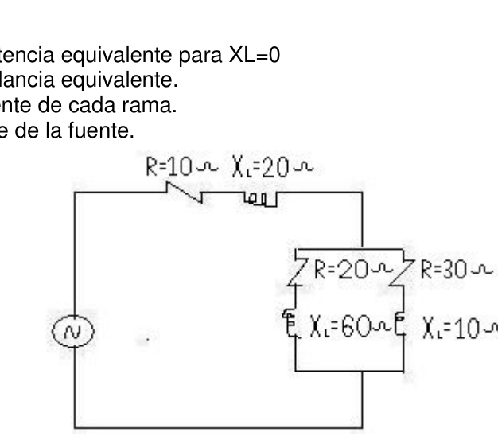
Topic: Newtonian Mechanics Metodi: Kinematic Equations Competenze: Physical Reasoning Objects: — Fonte: Testo (PDF) — p.3
PT52. Calluffo, La Pampa. Blu. Un corpo A viene lanciato verticalmente verso l’alto con una velocità iniziale di 30 m/s, un altro corpo B cade da un’altezza di 240 m a una velocità di 10 m/s. a) Trovare un’equazione della variazione della distanza X tra i due Corpi in funzione del tempo (si suppone che la partita di entrambi sia contemporaneamente) b) Graficare la posizione in funzione del tempo dei due movimenti in funzione del tempo. c) Trovare la posizione di incontro. d) Che tempo passa quando i due corpi sono separati da una Distanza di 2 metri.
Topic: Newtonian Mechanics Metodi: Kinematic Equations Competenze: Physical Reasoning Objects: — Fonte: Testo (PDF) — p.3
PT52. It’s the heat, the pumpkin. Blue, please. A body A is thrown vertically upwards at an initial speed of 30 m/s, another body B falls from a height of 240 m at a speed of 10 m/s. (a) Find an equation for the variation of the distance X between them The time-dependent bodies (It is assumed that the starting point of both is simultaneous) (b) Graph the position according to the time of the two mobiles according to the function of time. (c) Find the meeting position. (d) What time does it take when both bodies are separated by a distance of 2 m.
Topic: Newtonian Mechanics Metodi: Kinematic Equations Competenze: Physical Reasoning Objects: — Fonte: Testo (PDF) — p.3
PT53. Caleufú, La Pampa. Azul. Dos masas A de 14 kg y B 50 kg, descansan sobre una superficie giratoria y están unidas por una cuerda que pasa por una polea sin rozamiento. Si el coeficiente de rozamiento entre las masas y la superficie es de 0,20. a) Realizar el diagrama de cuerpo libre de ambas masas. b) Calcular la velocidad angular para el cual aparece deslizamiento radial. c) ¿Cuál es la tensión de la cuerda?
OAF 2010 - 35
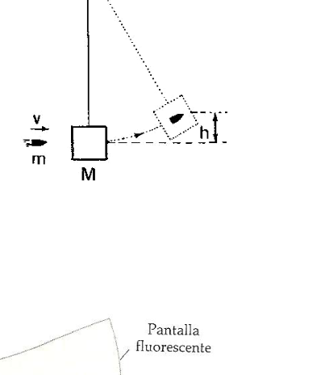
Topic: Rotational Dynamics, Newtonian Mechanics Metodi: Free-Body Diagram, Torque & Angular Momentum Analysis Competenze: Physical Reasoning Objects: Block, Pulley Fonte: Testo (PDF) — p.3
PT53. Calluffo, La Pampa. Blu. Due masse A di 14 kg e B di 50 kg, riposate su una superficie rotante e sono unite da una corda che passa attraverso un pollice senza rassi. Se il coefficiente di rottura tra le masse e la superficie è di 0,20. a) Realizzare il diagramma di corpo libero di entrambe le masse. b) Calcolare la velocità angolare per la quale si manifesta uno scivolamento radial. c) Qual è la tensione della corda?
OAF 2010 - 35
Topic: Rotational Dynamics, Newtonian Mechanics Metodi: Free-Body Diagram, Torque & Angular Momentum Analysis Competenze: Physical Reasoning Objects: Block, Pulley Fonte: Testo (PDF) — p.3
PT53. It’s the heat, the pumpkin. Blue, please. Two masses A of 14 kg and B of 50 kg, resting on a rotating surface and They’re tied together by a rope that goes through a rattlesnake. If the coefficient of friction between the masses and the surface is 0,20. (a) To draw the free body diagram of both masses. (b) Calculate the angular velocity for which radial slide appears. (c) What is the tension of the rope?
The following points shall be added:
Topic: Rotational Dynamics, Newtonian Mechanics Metodi: Free-Body Diagram, Torque & Angular Momentum Analysis Competenze: Physical Reasoning Objects: Block, Pulley Fonte: Testo (PDF) — p.3
PT54. Caleufú, La Pampa. Azul.
En el circuito serie paralelo de la figura, el valor de la tensión del paralelo
es 50 e 10.
Hallar:
a) Resistencia equivalente para XL=0
b) Impedancia equivalente.
c) Corriente de cada rama.
d) Voltaje de la fuente.
Topic: Circuits Metodi: Equivalent Circuit Reduction, Kirchhoff’s Laws Competenze: Physical Reasoning Objects: Resistor, Inductor Fonte: Testo (PDF) — p.3
PT54. Callufo, La Pampa. Blu. Nel circuito serie parallelo della figura, il valore della tensione parallela es 50 e 10. Trovare: a) Resistenza equivalente per XL=0 b) Impedanza equivalente. c) corrente di ciascun ramo. d) Voltaggio della sorgente.
Topic: Circuits Metodi: Equivalent Circuit Reduction, Kirchhoff’s Laws Competenze: Physical Reasoning Objects: Resistor, Inductor Fonte: Testo (PDF) — p.3
PT54. It’s the heat, the pumpkin. Blue, please. In the parallel serial circuit in the figure, the value of the parallel voltage es 50 e 10. Find out: (a) Equivalent strength for XL=0 (b) Equivalent impedance. (c) Current of each branch. (d) The voltage of the source.
Topic: Circuits Metodi: Equivalent Circuit Reduction, Kirchhoff’s Laws Competenze: Physical Reasoning Objects: Resistor, Inductor Fonte: Testo (PDF) — p.3
PT55. San Ramón de la Nueva Orán, Salta. Azul. Un bloque de masa m = 2 kg se encuentra en reposo sobre el borde izquierdo de un bloque de masa M= 8 Kg. El coeficiente de rozamiento cinético entre los dos bloques es 0,30 y la superficie sobre la que descansa el bloque de 8 kg no presenta rozamiento. Una fuerza horizontal constante de magnitud F = 10 N se aplica al bloque de 2 kg, poniéndolo en movimiento como muestra la figura.
a- Dibujar las fuerzas que actúan sobre cada bloque e indicar su naturaleza (ver Figura 1). b- Plantear la segunda ley de Newton para cada uno de los bloques. c- Si la distancia L que recorre el bloque más pequeño encima del bloque más grande desde el borde izquierdo es de 3 m. Escribir la expresión del desplazamiento de ambos bloques en función de las masas, L y el
OAF 2010 - 36 tiempo en que el bloque pequeño alcanza al extremo derecho del bloque mas grande. d- Calcular el tiempo en que el bloque pequeño alcanza el extremo derecho del bloque de 8 kg. e- ¿Qué distancia recorre el bloque de 8 kg en ese tiempo?
Topic: Newtonian Mechanics Metodi: Free-Body Diagram, Kinematic Equations Competenze: Physical Reasoning Objects: Block Fonte: Testo (PDF) — p.3
PT55. San Ramone del Nuovo Orano, salta. Blu. Un blocco di massa m = 2 kg si trova a riposo sul bordo sinistro di un blocco di massa M= 8 Kg. Il coefficiente di rottura cinetica tra i due blocchi è 0,30 e la superficie su cui si riposa il blocco di 8 kg non presenta rottura. Una forza orizzontale costante di magnitudo F = 10 N se Applica il blocco di 2 kg, mettendolo in movimento come mostra la figura.
a- Disegnare le forze che agiscono su ogni blocco e indicare la sua natura (vedi Figura 1). b- Esprimere la seconda legge di Newton per ogni blocco. c- Se la distanza L che percorre il blocco più piccolo sopra il blocco più grande dal bordo sinistro è di 3 m. Scrivere l’espressione La velocità di movimento di entrambi i blocchi in funzione delle masse, L e l
OAF 2010 - 36 tempo in cui il piccolo blocco raggiunge l’estremità destra del blocco più grande. d- Calcolare il tempo in cui il piccolo blocco raggiunge l’estremità diritto del blocco di 8 kg. e- Quanta distanza percorre il blocco di 8 kg in quel tempo?
Topic: Newtonian Mechanics Metodi: Free-Body Diagram, Kinematic Equations Competenze: Physical Reasoning Objects: Block Fonte: Testo (PDF) — p.3
PT55. St. Ramon of the New Orán, jump. Blue, please. A block of mass m = 2 kg is resting on the left edge of a block of mass M= 8 kg. The kinetic friction coefficient between the two blocks is 0,30 and the surface on which the 8 kg block rests is not It has a rash. A constant horizontal force of magnitude F = 10 N se Apply to the 2 kg block, moving it as shown in the figure.
a- Draw the forces acting on each block and indicate their The following are the main features of the methodology: b- Propose Newton’s second law for each of the blocks. c- If the distance L travels across the smallest block above the block The largest from the left edge is 3 m. Write the expression The two blocks are moving according to mass, L and
The following points shall be added: time when the small block reaches the right end of the It’s a bigger block. d- Calculate the time the small block reaches the end right of the 8 kg block. e- How far does the 8 kg block travel at that time?
Topic: Newtonian Mechanics Metodi: Free-Body Diagram, Kinematic Equations Competenze: Physical Reasoning Objects: Block Fonte: Testo (PDF) — p.3
Cinta bimetalica
PT56. San Ramón de la Nueva Orán, Salta. Azul. Una cinta bimetálica se forma uniendo dos bandas de metales diferentes. Primero considere que la cinta esta estirada. Cuando se calienta la cinta, el metal que tiene mayor coeficiente promedio de expansión se expande más, haciendo que la cinta se arquee, de manera que el radio exterior tiene una mayor circunferencia (ver Figura 2) . a- Deduzca una expresión que permita calcular el ángulo de curvatura α en función de la longitud inicial de las cintas, sus coeficientes promedios de expansión lineal, el cambio de temperatura y la separación entre los centros de las cintas ( ). b- Demostrar que el ángulo de curvatura tiende a cero cuando ΔT tiende a cero y también cuando los coeficientes promedio de expansión lineal de los dos metales son iguales. c- ¿Qué sucede si se enfría la cinta?
Topic: Thermodynamics, Elasticity & Materials Metodi: First Law of Thermodynamics, Approximation & Series Expansion Competenze: Physical Reasoning, Mathematical Modeling Objects: — Fonte: Testo (PDF) — p.3
Cinta bimetalica
PT56. San Ramone del Nuovo Orano, salta. Blu. Una cinta bimetalica si forma unendo due diverse bande di metalli. Prima di tutto, considera che la cinta è estesa. Quando il nastro si riscalda, il metallo che ha un coefficiente di espansione medio più alto si espandono di più, facendo arcare la cinta, così che la radio L’ esterno ha una maggiore circonferenza (vedi Figura 2). a- Deduce un’espressione che permette di calcolare l’angolo di curvatura α in funzione della L’inizio della lunghezza delle nastre, i loro coefficienti Le medie di espansione lineare, il cambiamento di temperatura e separazione tra i centri di nastri (). b- Dimostra che l’ angolo di curvatura tende a zero quando ΔT tende a zero e anche quando i coefficienti medi di Espansione lineare dei due metalli sono
- Sono uguali. c- Cosa succede se la cinta si raffredda?
Topic: Thermodynamics, Elasticity & Materials Metodi: First Law of Thermodynamics, Approximation & Series Expansion Competenze: Physical Reasoning, Mathematical Modeling Objects: — Fonte: Testo (PDF) — p.3
The following table shows the methodology used for the calculation of the value of the product:
PT56. St. Ramon of the New Orán, jump. Blue, please. A bimetallic tape is formed by joining two different metal bands. First consider that the tape is stretched. When the tape is heated, the The metal with the highest average coefficient of expansion expands further. making the tape arch, so the radio The outer surface has a larger circumference (see Figure 2). a- Subtract an expression that allows calculation the angle of curvature α depending on The initial length of the tapes, their coefficients linear expansion averages, the change of temperature and separation between centres The following table shows the results of the tests: b- Demonstrate that the angle of curvature tends to zero when ΔT tends to zero and also When the average coefficients of The linear expansion of the two metals is They’re the same. c- What happens if the tape cools?
Topic: Thermodynamics, Elasticity & Materials Metodi: First Law of Thermodynamics, Approximation & Series Expansion Competenze: Physical Reasoning, Mathematical Modeling Objects: — Fonte: Testo (PDF) — p.3
PT57. San Ramón de la Nueva Orán, Salta. Azul. Un rayo laser se encuentra en el extremo inferior derecho de un recinto de base cuadrada de lado α = 4 . La inclinación del Laser es de 45°, cuando este Laser se enciende el mismo no llega hasta el punto O (12 m) al que se quiere llegar. Para ello se acciona una válvula y comienza a inundar el recinto según los datos que indica la siguiente tabla.
Tiempo (seg) 10 20 30 40 50 Volumen (cm3) 1000 2000 3000 4000 5000
De manera que por efectos de la refracción la luz llegue a O e instantáneamente un dispositivo eléctrico cierre la válvula de admisión de agua al recinto. a- ¿Con que caudal se está mandando el agua al recinto? b- Encuentre una expresión general en términos de las variables que crea conveniente representativas de la situación. c- Encontrar el tiempo que tarda en llegar a su cometido. d- ¿Cuánto tiempo más tendría que estar apagado el dispositivo eléctrico para que el haz llegue a 2 cm más de lo previsto?
OAF 2010 - 37
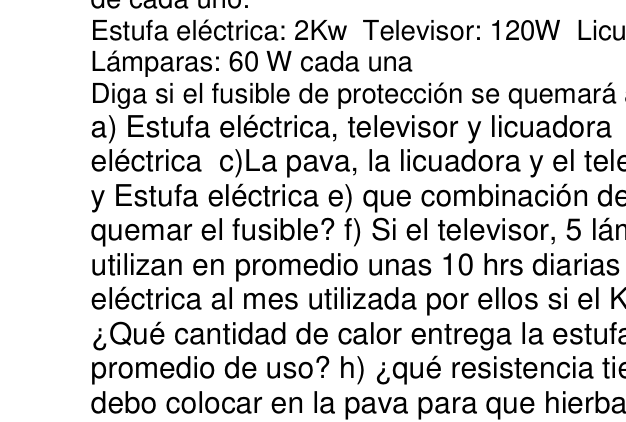
Topic: Geometric Optics, Fluid Mechanics Metodi: Snell’s Law, Continuity Equation Competenze: Physical Reasoning Objects: Container Fonte: Testo (PDF) — p.3
PT57. San Ramone del Nuovo Orano, salta. Blu. Un raggio laser si trova all’estremità inferiore destra di un recinto base. quadrato di lato α = 4 . L’inclinazione del laser è 45°, quando questo laser viene acceso lo stesso non raggiunge il punto O (12 m) da raggiungere. Per questo si attiva un’activazione. Valvola e inizia ad inondare il recinto secondo i dati indicati in seguito.
- La tavola.
Tempo (seg) 10 20 30 40 50 Volume (cm3) 1000 2000 3000 4000 5000
Così, per effetto della refraczione, la luce arriva a O e immediatamente. un dispositivo elettrico chiude la valvola di accensione dell’acqua all’interno del recinto. a- Con quale corrente viene inviata l’acqua al recinto? b- Trova un’espressione generale in termini di variabili che La Commissione ha adottato una decisione che prevede che le misure di sicurezza siano adeguate. c- trovare il tempo necessario per raggiungere il suo compito. d- Quanto tempo ancora il dispositivo dovrebbe essere spento elettrico per far raggiungere un passo più alto del previsto?
OAF 2010 - 37
Topic: Geometric Optics, Fluid Mechanics Metodi: Snell’s Law, Continuity Equation Competenze: Physical Reasoning Objects: Container Fonte: Testo (PDF) — p.3
PT57. St. Ramon of the New Orán, jump. Blue, please. A laser beam is located at the lower right end of a base enclosure. side square α = 4 . The inclination of the Laser is 45°, when this Laser is turned on the same no reaches the point O (12 m) you want to reach. A new one is set up for this purpose. The valve and begins to flood the enclosure according to the following data The board.
Time (seconds) 10 20 30 40 50 The following table shows the results of the calculation: 1000 2000 3000 4000 5000
So by refractive effects the light reaches O and instantaneously an electrical device closes the water intake valve to the enclosure. a- What flow is the water being sent to the compound? b- Find a general expression in terms of the variables that The Commission will be able to take the necessary steps to ensure that the situation is properly represented. c- Find the time it takes to complete your task. d- How long would the device have to be off electrical so that the beam reaches 2 cm higher than expected?
The following points shall be added:
Topic: Geometric Optics, Fluid Mechanics Metodi: Snell’s Law, Continuity Equation Competenze: Physical Reasoning Objects: Container Fonte: Testo (PDF) — p.3
PT58. Comodoro Rivadavia, Chubut. Verde.
Una bala de masa m se dispara en dirección horizontal hacia un bloque de
madera de masa M que pende de una cuerda (ver figura), la bala se incrusta en
el bloque y el conjunto sube hasta una altura h respecto a su posición inicial.
Determinar:
a- La velocidad de impacto v de la bala en la
madera en función de V, siendo V la velocidad
del conjunto bala + madera.
b- Si la energía cinética con la cual parte el conjunto
después del choque, se transforma en energía
potencial, calcule el valor de V.
c- Determine el valor de la velocidad con la cual se
disparo la bala.
Datos: m= 8g M= 2 kg h= 20 cm g= 10m/seg2
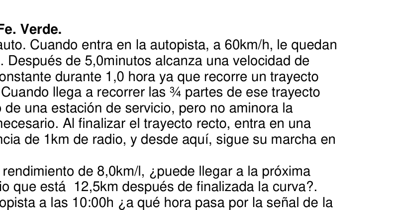
Topic: Conservation of Momentum, Conservation of Energy Metodi: Conservation of Momentum, Conservation of Energy Competenze: Physical Reasoning Objects: Block, Projectile, String Fonte: Testo (PDF) — p.3
PT58. Comodoro Rivadavia, Chubut. Verde. Un proiettile di massa m viene sparato in direzione orizzontale verso un blocco di Legno di massa M appeso a una corda (vedi figura), la pallottola è incastrata in il blocco e l’insieme sali fino ad un’altezza h rispetto alla posizione iniziale. Determinare: a- La velocità di impatto v della pallottola in Legno in funzione di V, essendo V la velocità della combinazione proiettile + legno. b- Se l’energia cinetica con cui parte l’insieme Dopo l’impatto, si trasforma in energia. Potenziale, calcola il valore di V. c- Determina il valore della velocità con cui si
- Io sparo la pallottola. Dati: m= 8g M= 2 kg h= 20 cm g= 10m/seg2
Topic: Conservation of Momentum, Conservation of Energy Metodi: Conservation of Momentum, Conservation of Energy Competenze: Physical Reasoning Objects: Block, Projectile, String Fonte: Testo (PDF) — p.3
PT58. Commodore Rivadavia, Chubut. Green, please. A m-mass bullet is fired in a horizontal direction towards a block of M-mass wood hanging from a rope (see figure), the bullet is embedded in The block and the set rise to a height h with respect to its initial position. Determine: a- The velocity of impact v of the bullet at the wood as a function of V, being V the velocity The bullet + wood set. b- If the kinetic energy with which the set is parted After the impact, it’s transformed into energy. The potential, calculate the value of V. c- Determine the value of the speed at which it is I’ll shoot the bullet. Data: m=8g M=2kg h=20cm g=10m/second
Topic: Conservation of Momentum, Conservation of Energy Metodi: Conservation of Momentum, Conservation of Energy Competenze: Physical Reasoning Objects: Block, Projectile, String Fonte: Testo (PDF) — p.3
PT59. Comodoro Rivadavia, Chubut. Verde.
Un electrón ingresa a un campo
eléctrico con una energía
cinética de 2.10-16 J se mueve
hacia la derecha dentro un
campo eléctrico de 2.1019 N/C
creado por unas placas
deflectoras de un tubo de rayos
catódicos. Calcular:
a- ¿La distancia que recorre el electrón dentro de las placas deflectoras si
sale de ellas con una velocidad de 30.106 m/s?
b- Si la pantalla fluorescente se encuentra a 10 cm de la placa deflectora y
el electrón sale de ellas a 45º ¿a qué distancia del eje se encuentra el
electrón cuando choca con el tubo?
Datos: me- = 9.1.10-16 kg qe- = 1.6.10-19 C
Topic: Electrostatics, Newtonian Mechanics Metodi: Lorentz Force Analysis, Kinematic Equations Competenze: Physical Reasoning Objects: Electron, Capacitor Fonte: Testo (PDF) — p.3
PT59. Comodoro Rivadavia, Chubut. Verde. Un elettrone entra in un campo elettrico con un’energia Cinetica di 2,10-16 J si muove verso il lato destro dentro un campo elettrico di 2.1019 N/C Creato da una piastra. deflettori di un tubo di raggi
- Catodici. Calcolare: a- La distanza che l’elettrone percorre all’interno delle placche deflettrici se E’ uscito da queste a una velocità di 30.106 m/s? b- Se la schermata fluorescente è a 10 cm dalla scheda deflettrice e L’elettrone esce da queste a 45°. Un elettrone quando colpisce il tubo? Dati: me- = 9,1.10-16 kg che- = 1,6.10-19 C
Topic: Electrostatics, Newtonian Mechanics Metodi: Lorentz Force Analysis, Kinematic Equations Competenze: Physical Reasoning Objects: Electron, Capacitor Fonte: Testo (PDF) — p.3
PT59. Commodore Rivadavia, Chubut. Green, please. An electron enters a field. Electrical with one energy kinetic energy of 2.10-16 J moves Right in a Electric field of 2.1019 N/C Created by a few plates. The following is a list of the types of radiation tube deflectors: The catholics. Calculation: a- The distance the electron travels within the deflecting plates if It’s coming out of them at a speed of 30,106 m/s? b- If the fluorescent display is 10 cm from the deflecting plate and The electron is going out of them at 45 degrees. What distance from the axis is the electron? electron when it hits the tube? Data: me- = 9.1.10-16 kg which- = 1.6.10-19 C
Topic: Electrostatics, Newtonian Mechanics Metodi: Lorentz Force Analysis, Kinematic Equations Competenze: Physical Reasoning Objects: Electron, Capacitor Fonte: Testo (PDF) — p.3
PT60. Comodoro Rivadavia, Chubut. Verde.
En una casa en la cual el voltaje de servicio es de 220V está instalado un fusible
con amperaje de 25 A. en esta casa se emplean eventualmente diversos
aparatos electrodomésticos, en los cuales se encuentra especificada la potencia
de cada uno:
Estufa eléctrica: 2Kw Televisor: 120W Licuadora 240W Pava eléctrica: 840W
Lámparas: 60 W cada una
Diga si el fusible de protección se quemará al hacer funcionar simultáneamente:
a) Estufa eléctrica, televisor y licuadora b) Estufa eléctrica y la pava
eléctrica c)La pava, la licuadora y el televisor d)10 lámparas, el televisor
y Estufa eléctrica e) que combinación de electrodomésticos harían
quemar el fusible? f) Si el televisor, 5 lámparas y la estufa eléctrica se
utilizan en promedio unas 10 hrs diarias ¿Cuál será el costo de la energía
eléctrica al mes utilizada por ellos si el Kw-h tiene un costo de $ 0.07? g)
¿Qué cantidad de calor entrega la estufa eléctrica en ese tiempo
promedio de uso? h) ¿qué resistencia tiene? i)¿ Qué cantidad de agua
debo colocar en la pava para que hierba en 3 minutos si se coloca agua a
10ºC?
Datos:1 Kwh= 3.6.106 J 1cal=4,18 J Ce agua = 1 Cal/g ºC
OAF 2010 - 38
Topic: Circuits Metodi: Kirchhoff’s Laws, First Law of Thermodynamics Competenze: Physical Reasoning Objects: Resistor Fonte: Testo (PDF) — p.3
PT60. Comodoro Rivadavia, Chubut. Verde. In una casa in cui la tensione di servizio è di 220 V è installato un fuse con un’ampera di 25 A. In questa casa si impiegano eventuali diversi apparecchiature elettriche in cui è specificata la potenza di ciascuna: Stufa elettrica: 2Kw Televisore: 120W Licuatore 240W Pava elettrica: 840W Lampade: 60 W ciascuna Indicare se il fuse di protezione si brucia quando si opera contemporaneamente: a) stufa elettrica, televisione e liquidazione b) stufa elettrica e la scatola (c) la pasta, il liquidatore e la televisione (d) le lampade, la televisione e stufa elettrica e) che combinazione di elettrodomestici farebbero bruciare il fusibile? (f) Se il televisore, 5 lampade e il forno elettrico si Usano in media circa 10 ore al giorno. Qual è il costo dell’energia? elettricità al mese utilizzata da loro se il Kw-h ha un costo di $0.07? g) Quanti calori viene fornito dalla stufa elettrica in quel tempo? media di utilizzo? h) che resistenza ha? i) Quanta acqua Devo metterlo sulla padella per far germogliare in 3 minuti se si mette l’acqua a 10ºC? Dati: 1 Kwh= 3.6.106 J 1cal=4.18 J Ce acqua = 1 Cal/g oC
OAF 2010 - 38
Topic: Circuits Metodi: Kirchhoff’s Laws, First Law of Thermodynamics Competenze: Physical Reasoning Objects: Resistor Fonte: Testo (PDF) — p.3
PT60. Commodore Rivadavia, Chubut. Green, please. In a house where the service voltage is 220V a fuse is installed. with an ampere of 25 A. In this house, various types of work are used. electrical appliances, where the power is specified of each: Electric stove: 2Kw Televisor: 120W Liquor 240W Electrical stove: 840W Lamps: 60 W each Tell me if the safety fuse will burn when running simultaneously: (a) Electric stove, television and liquefactor (b) Electric stove and the paving (c) The paving machine, the liqueur machine and the television (e) what combination of appliances would do Burn the fuse? (f) If the television, 5 lamps and the electric stove are They use an average of about 10 hours a day. What will the cost of energy be? electricity per month used by them if the Kw-h costs $0.07? g) How much heat does the electric stove deliver at that time? average use? (h) what is its resistance? (i) How much water? I have to put it on the pavement so it grows in 3 minutes if you put water on it . 10ºC? The data is given in Figure 1 of the Annex.
The following points shall be added:
Topic: Circuits Metodi: Kirchhoff’s Laws, First Law of Thermodynamics Competenze: Physical Reasoning Objects: Resistor Fonte: Testo (PDF) — p.3
PT61. Ciudad de Santa Fe. Verde.
En una planta procesadora de pescado, un bloque de hielo de 80,0kg resbala
hacia abajo por un plano inclinado de 1,85m de largo y 1,00m de alto. Un
operario empuja la barra de hielo hacia arriba, paralelamente al plano inclinado,
de tal manera que el bloque resbala hacia abajo con rapidez constante. El
coeficiente de fricción entre el hielo y el plano es 0,10.
Determina:
a) la fuerza ejercida por el hombre,
b) el trabajo hecho por el hombre sobre el bloque,
c) el trabajo que la gravedad realiza sobre el bloque,
d) el trabajo realizado por la fuerza resultante sobre el bloque
e) el cambio de energía cinética sobre el bloque.
Al finalizar el plano inclinado, el bloque de hielo resbala libremente sobre una
superficie horizontal con la masa original de 80,0kg, comenzando con una
rapidez de 4,00m/s y llegando a detenerse finalmente después de haber
recorrido 30,0m.
f) Calcula la masa de hielo fundida como resultado de la fricción entre el
bloque y la superficie horizontal. (Datos: g=9,80m/s2 ;calor de fusión del
hielo: 80calorías/g; 1cal=4,186 J)
Topic: Newtonian Mechanics, Conservation of Energy Metodi: Free-Body Diagram, Conservation of Energy, Thermodynamic Cycle Analysis Competenze: Physical Reasoning Objects: Block, Inclined Plane Fonte: Testo (PDF) — p.3
PT61. Città di Santa Fe. Verde. In un impianto di lavorazione di pesce, un blocco di ghiaccio di 80 kg scorre verso il basso per un piano inclinato di 1,85 m di lunghezza e 1,00 m di altezza. Un operatore spinge la barra di ghiaccio verso l’alto, parallelo al piano inclinato, in modo tale che il blocco scivoli verso il basso a velocità costante. El il coefficiente di attrito tra il ghiaccio e il piano è 0,10. Determina: a) la forza esercitata dall’uomo, b) il lavoro fatto dall’uomo sul blocco, c) il lavoro che la gravità fa sul blocco, d) il lavoro effettuato dalla forza risultante sul blocco (e) il cambiamento di energia cinetica sul blocco. Al termine del piano inclinato, il blocco di ghiaccio scivola liberamente su una superficie orizzontale con massa originale di 80,0 kg, a partire da una velocità di 4,00m/s e arrivano a fermarsi finalmente dopo aver
- Il percorso è di 30 metri. f) Calcola la massa di ghiaccio fonduto a seguito della friczione tra il blocco e superficie orizzontale. (Dati: g=9,80 m/s2; calore di fusione del g. 80 calorie/g; 1 cal = 4,186 J)
Topic: Newtonian Mechanics, Conservation of Energy Metodi: Free-Body Diagram, Conservation of Energy, Thermodynamic Cycle Analysis Competenze: Physical Reasoning Objects: Block, Inclined Plane Fonte: Testo (PDF) — p.3
PT61. City of Santa Fe. Green, please. In a fish processing plant, an 80-kg block of ice slips. downward by an inclined plane 1.85 m long and 1.00 m high. Un The operator pushes the ice bar upwards, parallel to the sloping plane, so that the block slides downwards at a constant speed. El The coefficient of friction between the ice and the plane is 0.10. Determine: (a) the force exerted by man, (b) the man-made work on the block, (c) the work done by gravity on the block, (d) the work done by the resulting force on the block (e) the change in kinetic energy over the block. At the end of the sloping plane, the ice block slides freely over a horizontal surface with an original mass of 80,0 kg, starting with a speed of 4.00m/s and finally coming to a stop after having 30 m. (f) Calculate the mass of melted ice as a result of friction between the block and horizontal surface. (Data: g=9.80m/s2; melting heat of the The following table shows the results of the calculations:
Topic: Newtonian Mechanics, Conservation of Energy Metodi: Free-Body Diagram, Conservation of Energy, Thermodynamic Cycle Analysis Competenze: Physical Reasoning Objects: Block, Inclined Plane Fonte: Testo (PDF) — p.3
PT62. Ciudad de Santa Fe. Verde. Juan sale de viaje en su auto. Cuando entra en la autopista, a 60km/h, le quedan 18L de nafta en el tanque. Después de 5,0minutos alcanza una velocidad de 100km/h, que mantiene constante durante 1,0 hora ya que recorre un trayecto recto libre de obstáculos. Cuando llega a recorrer las ¾ partes de ese trayecto recto, pasa frente al aviso de una estación de servicio, pero no aminora la marcha, pues no lo cree necesario. Al finalizar el trayecto recto, entra en una curva de ¼ de circunferencia de 1km de radio, y desde aquí, sigue su marcha en línea recta. a) Si el auto tiene un rendimiento de 8,0km/l, ¿puede llegar a la próxima estación de servicio que está 12,5km después de finalizada la curva?. b) Si ingresa a la autopista a las 10:00h ¿a qué hora pasa por la señal de la primera estación de servicio?. c) Si la curva la recorre a velocidad constante de 100km/h, ¿a qué hora llegaría a la segunda estación de servicio? d) Realiza el gráfico v-t.
Topic: Newtonian Mechanics Metodi: Kinematic Equations Competenze: Physical Reasoning Objects: — Fonte: Testo (PDF) — p.3
PT62. Città di Santa Fe. Verde. Juan parte in viaggio in macchina. Quando entra sull’autostrada, a 60 km/h, le restano. 18 litri di nafta nel serbatoio. Dopo 5,0 minuti raggiunge una velocità di 100 km/h, che si mantiene costante per 1,0 ora in un percorso Retta senza ostacoli. Quando arriva a percorrere i tre quarti di quel percorso Retto, passa davanti all’avviso di una stazione di servizio, ma non riduce la Andrà via, non lo ritiene necessario. Al termine del percorso retto, entra in una Una curva di 1⁄4 di circonferenza di 1 km di raggio, e da qui, continua a marciare in
- Un’altra linea. a) Se la macchina ha una velocità di 8,0 km/l, può arrivare alla prossima? Stazione di servizio che è 12,5 km dopo la fine della curva. b) Se si entra sull’autostrada alle 10:00 ore, a che ora passa per il segnale della La prima stazione di servizio? c) Se la curva la percorre a velocità costante di 100 km/h, a che ora Arriverà alla seconda stazione di servizio? d) Realizza il grafico v-t.
Topic: Newtonian Mechanics Metodi: Kinematic Equations Competenze: Physical Reasoning Objects: — Fonte: Testo (PDF) — p.3
PT62. City of Santa Fe. Green, please. Juan is out on a road trip in his car. When you get on the freeway, at 60km/h, you’re left with 18 liters of naphtha in the tank. After 5.0 minutes it reaches a speed of 100km/h, which remains constant for 1.0 hour as it travels a route The right path is free of obstacles. When he gets to walk the three quarters of that path It is a very simple procedure. He’s not going to do it. At the end of the straight path, enter a curve of 1⁄4 of a radius of 1 km, and from here, it continues its course in A straight line. (a) If the car has a performance of 8.0 km/l, can it reach the next one? The service station is 12.5km after the turn is over. (b) If you enter the motorway at 10:00 h, what time do you pass the sign of the first service station? (c) If the curve is running at a constant speed of 100 km/h, at what time Would you make it to the second gas station? (d) Perform the v-t chart.
Topic: Newtonian Mechanics Metodi: Kinematic Equations Competenze: Physical Reasoning Objects: — Fonte: Testo (PDF) — p.3
PT63. Ciudad de Santa Fe. Verde.
Se tiene un sistema de dos cuerpos de masas m1 de 0,5kg y m2 de 0,3 kg
apoyados sobre un plano inclinado áspero, unidos por una cuerda liviana
inextensible que pasa por una pequeña polea fija en el extremo superior del
plano. Sobre la masa m1 actúa una fuerza constante F paralela al plano tal como
muestra la figura.
a) Establece un sistema de referencia y realiza el
diagrama de cuerpo libre para cada uno de los
cuerpos.
b) Determina el coeficiente de rozamiento cinético, si
se sabe que cuando el módulo de F es cero el
sistema se mueve con velocidad constante.
c) Determina el módulo de F y la tensión en la cuerda
si se sabe que el cuerpo de 0,5kg recorre una
distancia de 1m en 2s a partir del reposo.
OAF 2010 - 39
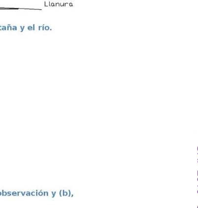
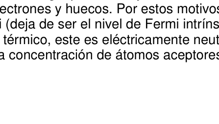
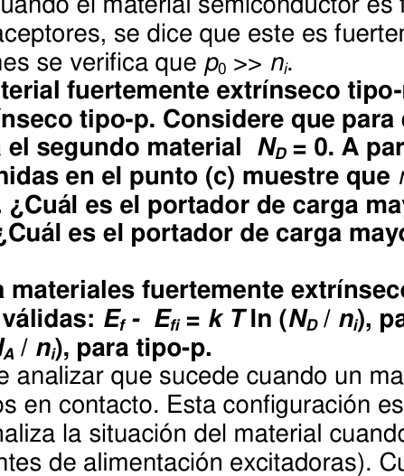
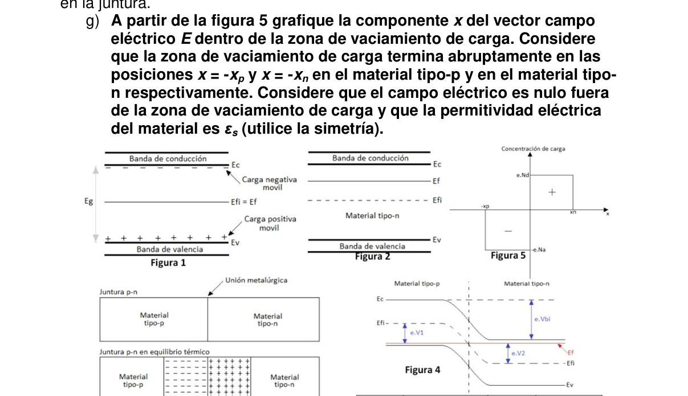
Topic: Newtonian Mechanics, Conservation of Energy Metodi: Free-Body Diagram, Conservation of Energy Competenze: Physical Reasoning Objects: Block, Inclined Plane, Pulley Fonte: Testo (PDF) — p.3
PT63. Città di Santa Fe. Verde. Si dispone di un sistema di due corpi di massa m1 di 0,5 kg e m2 di 0,3 kg appoggiati su un piano inclinato, uniti da una corda leggera. inextensible che passa attraverso una piccola polea fissa all’estremità superiore del piano. Su m1 agisce una forza costante F parallela al piano come mostra la figura. a) Stabilirà un sistema di riferimento e realizzerà il Diagramma di corpo libero per ciascuno di loro corpi. b) Determina il coefficiente di rottura cinetica, se Sappiamo che quando il modulo di F è zero il Il sistema si muove a velocità costante. c) Determina il modulo di F e la tensione della corda se si sa che il corpo di 0,5 kg attraversa una Distanza di 1 m in 2 secondi dal riposo.
OAF 2010 - 39
Topic: Newtonian Mechanics, Conservation of Energy Metodi: Free-Body Diagram, Conservation of Energy Competenze: Physical Reasoning Objects: Block, Inclined Plane, Pulley Fonte: Testo (PDF) — p.3
PT63. City of Santa Fe. Green, please. A system of two bodies of mass m1 of 0,5 kg and m2 of 0,3 kg is provided. supported on a roughly sloping plane, joined by a light rope. The unextensible passing through a small fixed pole at the upper end of the It’s flat. Over m1 mass there is a constant force F parallel to the plane as It shows the figure. (a) establish a reference system and implement the Free body diagram for each of the bodies. (b) Determine the kinetic friction coefficient if We know that when the F-module is zero the The system moves at a constant speed. (c) Determine the F module and the tension on the rope If you know that the 0.5kg body is going through a distance of 1m in 2s from rest.
The following points shall be added:
Topic: Newtonian Mechanics, Conservation of Energy Metodi: Free-Body Diagram, Conservation of Energy Competenze: Physical Reasoning Objects: Block, Inclined Plane, Pulley Fonte: Testo (PDF) — p.3
Rio de montana
PT64. Ciudad de Buenos Aires. Verde.
Río de montaña.
Un monte de 4500 metros de altura se encuentra cubierto por nieve desde los
3200 msnm. La parte nevada de la ladera este es aproximadamente plana, y
forma un ángulo de 35º respecto de la dirección vertical, como se muestra en la
figura 1. Cuando la nieve recibe la radiación proveniente del sol, ésta se derrite y
fluye cuesta abajo, formando un río que desciende hacia una llanura a 850
msnm. A lo largo de todo el problema asumiremos que la conducción térmica del
aire es despreciable y que el agua se encuentra en equilibrio térmico con su
entorno.
La posición del sol en el cielo se puede describir mediante dos ángulos: el acimut
(α) y la elevación (ε), que se miden según se indica en la figura 2. Este sistema
de coordenadas se denomina “horizontal”.
a) Exprese la intensidad de la radiación absorbida por la nieve en
función de los ángulos acimut y elevación.
b) Calcule a qué velocidad se reduce el grosor de la capa de nieve
cuando los rayos del sol inciden formando un ángulo de 15º con la
normal a la superficie.
El río transporta un caudal de 28,7 m³/s y, al entrar en la llanura, la forma del
lecho es aproximadamente un “cajón” de 20 m de ancho y 90 cm de profundidad.
La totalidad de la superficie del río hasta dicho punto es 2,2 km² y la intensidad
de radiación promedio a lo largo del día sobre ésta es 200 W/m². El tiempo que
tarda en descender la nieve que se derrite es aproximadamente un día.
c) Calcule cuál sería la velocidad del agua al llegar a la llanura si se
tratara de un fluido ideal.
d) Calcule la velocidad real del agua en dicho punto y explique qué
origina tal diferencia.
e) Si donde nace el río, a 3200 msnm, la temperatura del agua es 0.5ºC
y su velocidad 10 cm/s, estime la temperatura del agua al alcanzar la
desembocadura, detallando las aproximaciones que realice.
OAF 2010 - 40 Datos: Intensidad de la radiación solar sobre la superficie de la Tierra: 1000 W/m² Albedo de la nieve: 85% Albedo del agua: 5% Densidad de la nieve superficial: 150 kg/m³ Densidad del agua: 1000 kg/m³ Calor latente de fusión del agua: 334 kJ/kg Calor específico del agua: 4.18 kJ/kg/ºC Nota: el albedo es la fracción de la radiación incidente que es reflejada por la superficie.
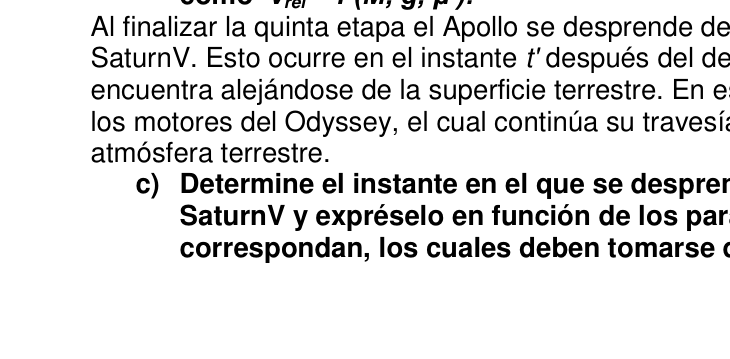
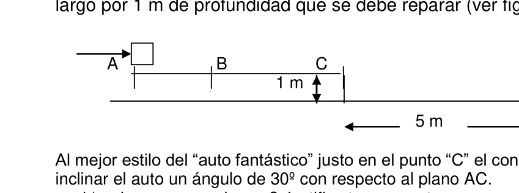
Topic: Earth & Environmental Science, Fluid Mechanics Metodi: Bernoulli’s Equation, First Law of Thermodynamics, Vector Decomposition Competenze: Physical Reasoning, Mathematical Modeling Objects: — Fonte: Testo (PDF) — p.3
Rio di montagna
PT64. Città di Buenos Aires. Verde. Riu di montagna. Un monte di 4.500 metri di altezza è ricoperto di neve dagli alberi. 3200 metri. La parte nevosa del versante est è approssimativamente piana, e forma un angolo di 35° rispetto alla direzione verticale, come mostrato in Figura 1. Quando la neve riceve il raggione del sole, si scioglie e scorre verso il basso, formando un fiume che scende verso una pianura a 850
- Non lo so. L’intero problema si riunisce nel fatto che la conduzione termico del L’aria è scarsa e l’acqua è in equilibrio termico con la sua ambiente. La posizione del sole nel cielo può essere descritta da due angoli: l’acimut (α) e l’elevazione (ε), misurate come indicato in figura 2. Questo sistema di coordinate è denominato horizontal. a) Indicare l’intensità della radiazione assorbita dalla neve in funzione degli angoli di accimut e di elevazione. b) Calcolare a che velocità si riduce lo spessore della neve Quando i raggi del sole incidono formando un angolo di 15° con la normale alla superficie. Il fiume trasporta un flusso di 28,7 m3/s e, quando entra nella pianura, la forma del Il letto è di circa 20 m di larghezza e 90 cm di profondità. La superficie totale del fiume fino a questo punto è di 2,2 km2 e l’intensità è di circa La media di radiazioni durante il giorno su questa è di 200 W/m2. Il tempo che Il tempo necessario per scendere la neve che si scioglie è circa un giorno. (c) Calcolare la velocità dell’acqua che si raggiunge la pianura se si che sarebbe un fluido ideale. d) Calcolare la velocità effettiva dell’acqua a tale punto e spiegare che che crea tale differenza. e) Se il luogo di nascita del fiume, a 3200 m.s.n.m., la temperatura dell’acqua è di 0,5°C e la sua velocità è di 10 cm/s, calcola la temperatura dell’acqua al raggiungimento della
- l’apertura, che descrive in dettaglio le sue approssimazioni.
OAF 2010 - 40 Datati: Intensità della radiazione solare sulla superficie terrestre: 1000 W/m2 Albedo della neve: 85% Albedo dell’acqua: 5% Densità della neve superficiale: 150 kg/m3 Densità dell’acqua: 1000 kg/m3 Calore latente di fusione dell’acqua: 334 kJ/kg Calore specifico dell’acqua: 4,18 kJ/kg/oC Nota: l’albedo è la frazione di radiazione incidente che è riflessa da superficie.
Topic: Earth & Environmental Science, Fluid Mechanics Metodi: Bernoulli’s Equation, First Law of Thermodynamics, Vector Decomposition Competenze: Physical Reasoning, Mathematical Modeling Objects: — Fonte: Testo (PDF) — p.3
The following is a list of the Member States’ official languages:
PT64. City of Buenos Aires. Green, please. Mountain river. A mountain of 4,500 metres is covered in snow from the sea. 3200mph. The snow-covered part of the east slope is approximately flat, and It forms an angle of 35° with respect to the vertical direction, as shown in the figure The following table shows the following: When snow receives radiation from the sun, it melts and it’s It flows down the hill, forming a river that descends into a plain at 850°. I’m not. Throughout the whole problem we will assume that the thermal conductivity of the Air is despicable and water is in thermal equilibrium with its The environment. The position of the sun in the sky can be described by two angles: the acimut (α) and elevation (ε), which are measured as shown in Figure 2. This system The coordinates are called horizontal. (a) Express the intensity of radiation absorbed by the snow in The function of the angles of azimuth and elevation. (b) Calculate how quickly the thickness of the snow sheet is reduced When the sun’s rays strike at a 15° angle with the normal to the surface. The river carries a flow rate of 28.7 m3/s and, when entering the plain, the shape of the river is The bed is approximately a box of 20 m wide and 90 cm deep. The total area of the river up to this point is 2.2 km2 and the intensity is The average radiation over the course of the day over this is 200 W/m2. The time that It takes about a day for the snow to melt. (c) Calculate the water speed at the plain if you It would be an ideal fluid. (d) Calculate the actual water velocity at that point and explain why. It is the difference that is caused. (e) If at 3200 m above sea level the river is born, the water temperature is 0.5°C and its speed is 10 cm/s, estimate the water temperature at the The Commission shall adopt the following measures:
The following points shall be added: The data: Intensity of solar radiation on the Earth’s surface: 1000 W/m2 Snow white: 85% Water whiteness: 5% Density of surface snow: 150 kg/m3 The water density: 1000 kg/m3 The water melting latent heat: 334 kJ/kg The water specific heat: 4.18 kJ/kg/oC Note: albedo is the fraction of incident radiation that is reflected by the surface.
Topic: Earth & Environmental Science, Fluid Mechanics Metodi: Bernoulli’s Equation, First Law of Thermodynamics, Vector Decomposition Competenze: Physical Reasoning, Mathematical Modeling Objects: — Fonte: Testo (PDF) — p.3
Huston, we’ve had a problem
PT65. Ciudad de Buenos Aires. Verde.
Huston, we’ve had a problem
Con objeto de estudiar la superficie lunar, el 11 de abril de 1970 la National
Aeronautics and Space Administration (NASA) envió al espacio al Apollo XIII. La
misión sería la tercera en llevar seres humanos hasta nuestro satélite natural y el
despegue tuvo lugar en la plataforma de lanzamiento LC-39A del centro espacial
John.F.Kennedy, en el cabo Cañaveral, Florida, Estados Unidos.
Los astronautas que participaron de la empresa fueron James Lovell
(comandante de la misión), John Swigert (piloto del módulo de mando Odyssey)
y Fred Haise (piloto del módulo lunar Aquarius).
El Apollo XIII abandonó la superficie terrestre acoplado al cohete de lanzamiento
multietapa SaturnV SA-508, un vehículo a base de combustible líquido
(hidrógeno y oxígeno). Cada una de las 5 etapas del Saturn V impulsaba al
Apollo lejos de la superficie terrestre y a medida que éste ganaba altitud, cada
etapa concluida significaba el desacople de la porción del Saturn que había
consumido su combustible.
Durante las etapas del ascenso, el combustible reacciona y los gases son
expulsados hacia abajo a razón de μ kg/s, lo cual permite que el sistema
espacial (SaturnV + ApolloXIII) desarrolle un movimiento ascendente dentro del
campo gravitatorio terrestre y de manera tal que se mantiene constante la
velocidad relativa vrel de los mencionados gases respecto del sistema espacial.
A partir de aquí, considere nulas la resistencia del aire y la variación de la
aceleración de la gravedad con la altitud dentro de la atmósfera.
Si M es la masa total del sistema (incluido el combustible) en el instante del
despegue,
a) Demuestre que el movimiento del sistema espacial se desarrolla,
durante la primera etapa, con una aceleración
a t =
μ v rel
M−μ t −g .
La aceleración es medida en un sistema de referencia inercial fijo a la
superficie de la Tierra.
b) Asumiendo correcta la expresión anterior, determine el mínimo valor
que debe tener vrel en el instante del despegue. Exprese este valor
como vrel = f (M, g, μ ).
Al finalizar la quinta etapa el Apollo se desprende del quinto y último módulo del
SaturnV. Esto ocurre en el instante t’ después del despegue, mientras Apollo se
encuentra alejándose de la superficie terrestre. En este momento se encienden
los motores del Odyssey, el cual continúa su travesía hacia las afueras de la
atmósfera terrestre.
c) Determine el instante en el que se desprende la quinta etapa del
SaturnV y expréselo en función de los parámetros que
correspondan, los cuales deben tomarse de la tabla 1.
OAF 2010 - 41
d) Haga un gráfico Msist = f (t) de la masa del sistema en función del
tiempo desde el instante del despegue hasta el instante en que
termina la quinta etapa. Considere despreciable el tiempo que
demora el desprendimiento del módulo del Saturn V que ha
consumido su combustible.
Con la asistencia del Saturn V, el Apollo ha adquirido cierta rapidez. Pero
finalizada la quinta etapa del ascenso, debe encender sus propios motores para
continuar acelerando y alcanzar una altura y rapidez que le permita orbitar la
Tierra a una distancia a1 del centro de nuestro planeta, fuera de la atmósfera. Si
dicha órbita es circular y en ella el Apollo tiene una energía total E1,
e) Determine la rapidez que debe alcanzar el Apollo antes de poder
apagar sus motores. Exprese esta rapidez en función de E1 y de los
parámetros que correspondan de las tablas 1 y 2.
Alrededor de 1920, el Dr. Walter Hofmann mostró que, en cuanto a consumo de
combustible se refería, la trayectoria más conveniente para conectar dos órbitas
coplanares y circulares de diferente radio correspondía a media elipse
cotangencial a las órbitas interior y exterior. Orbitando la Tierra, los puntos de
tangencia corresponderían al perigeo y al apogeo de la trayectoria elíptica,
encontrándose la Tierra en un foco de dicha trayectoria (ver figura 1). Una
trayectoria de transferencia entre órbitas como ésta recibe el nombre de Orbita
cotangencial Hofmann de mínima energía y dos impulsos (OH).
El Apollo debe abandonar la órbita de radio a1 y dirigirse hacia la Luna. La idea
es alcanzar una distancia a2 respecto del centro de nuestro planeta donde se
libere el módulo Aquarius para que éste alunice.
f) Pruebe que el incremento de rapidez Δv1 que deben proporcionar
los motores del Apollo, en el perigeo P, para desarrollar la
trayectoria de transferencia orbital es:
La misión marchaba perfectamente hasta
que, durante el segundo día de la travesía y
encontrándose en la trayectoria de
transferencia, dos tanques de oxígeno
explotaron, causando posteriormente la
pérdida de las dos celdas de combustible
encargadas del suministro principal de
electricidad y agua del módulo de mando.
Para entonces, el Apollo se encontraba a
321.869 km de la superficie terrestre y el
comandante Lovell enviaría a la Tierra un
mensaje de audio que se haría famoso:
Tabla 1
Parámetro
Descripción
mOD
Masa del módulo de mando Odyssey
mAQ
Masa del módulo lunar Aquarius
mS
Masa de cada etapa del Saturn V
mC
Masa de combustible de cada etapa del Saturn
V
μ
Masa de gases expulsada por unidad de tiempo
g
Aceleración de la gravedad
OAF 2010 - 42
“Huston, we’ve had a problem”.
La capacidad y velocidad de reacción de físicos, ingenieros y directivos de la
NASA que se encontraban en comunicación con la tripulación del Apollo sumada
a la aptitudes, preparación y serenidad de la los tres astronautas permitieron que
el incidente no terminara en tragedia.
Cualquier error en las decisiones que se tomaron en minutos podría haber
terminado con el Apollo y su gente perdidas para siempre en el espacio o
estrellados contra la superficie lunar.
La tripulación tuvo que utilizar la energía y oxígeno del módulo Aquarius para
redirigir el curso del Apollo, orbitar la Luna y poder así cambiar el curso para
volver a casa. Fue toda una hazaña ya que el módulo lunar no estaba pensado
ni diseñado para actuar como nave propulsora de la misión.
La falta de energía obligó a que se interrumpieran los sistemas de luz y
calefacción. Aún sin luz, a una temperatura extremadamente baja, con escasez
de oxígeno y muy lejos de la Tierra, los tres astronautas no perdieron jamás las
esperanzas y tal vez por eso, el destino estuvo de su lado.
El 17 de abril de 1970, quinto día de la misón, 22h54m44s, James Lovell, John
Swigert y Fred Haise amerizaron finalmente en el Océano Pacífico, sanos y
salvos.
Energía en órbita elíptica (figura 2) : E= −GMm d
Topic: Gravitation, Conservation of Momentum Metodi: Newton’s Law of Gravitation, Kepler’s Laws, Conservation of Momentum Competenze: Physical Reasoning, Mathematical Modeling Objects: Satellite, Planet Fonte: Testo (PDF) — p.3
Houston, abbiamo avuto un problema.
PT65. Città di Buenos Aires. Verde. Huston, abbiamo avuto un problema. Per studiare la superficie lunare, l’11 aprile 1970 la National Aeronautics and Space Administration (NASA) ha inviato nello spazio l’Apollo XIII. La La missione sarebbe la terza in portare esseri umani al nostro satellite naturale e il Il decollo si è verificato sulla piattaforma di lancio LC-39A del centro spaziale. John F. Kennedy, a Cape Canaveral, Florida, Stati Uniti. Gli astronauti che hanno partecipato alla missione sono stati James Lovell. (comandante della missione), John Swigert (piloto del modulo di comando Odyssey) e Fred Haise (piloto del modulo lunare Aquarius). L’Apollo XIII ha abbandonato la superficie terrestre accoppiata al razzo di lancio. SaturnV SA-508, un veicolo a combustibile liquido (idrogeno e ossigeno). Ogni fase di Saturno V ha portato il Apollo lontano dalla superficie terrestre e come questo ha acquisito altitudine, ogni La fase finale significava la decuppolazione della porzione di Saturno che aveva ha consumato il suo carburante. Durante le fasi di ascensione, il combustibile reagisce e i gas sono La velocità di rottura è di 0,7 mm/s. La cosmistica (SaturnV + ApolloXIII) sviluppa un movimento ascendente all’interno del La gravità terrestre è così che la La velocità relativa dei gas di cui sopra rispetto al sistema spaziale. Da qui, considerate come nulli la resistenza all’aria e la variazione della temperatura. l’accelerazione della gravità con l’altitudine all’interno dell’atmosfera. Se M è la massa totale del sistema (inclusi il combustibile) all’ istante di Prendi il volo, a) Dimostra che il movimento del sistema spaziale si sviluppa, durante la prima fase, con un’accelerazione a t = μ v rel M−μ t −g . L’accelerazione è misurata in un sistema di riferimento inerziale fisso alla velocità di velocità. la superficie terrestre. b) Scommettere correttamente l’espressione precedente, determinare il valore minimo che deve avere un effetto immediato. Esprimi questo valore come vrel = f (M, g, μ). Al termine del quinto stadio l’Apollo si allontana dal quinto e ultimo modulo del SaturnV. Questo accade istantaneamente dopo il decollo, mentre Apollo si si trova allontanandosi dalla superficie terrestre. In questo momento si accendono. I motori dell’Odyssey, che continua il suo viaggio verso le periferie della l’atmosfera terrestre. (c) Indicare l’istante in cui si avvia la quinta fase del processo di SaturnV e esprime il parametro in base ai parametri che Le due parti sono corrispondenti, che devono essere prese dalla tabella 1.
OAF 2010 - 41 d) Fate un grafico Msist = f (t) della massa del sistema in funzione di il tempo che passa dall’istante di decollo all’istante in cui Finisce il quinto stadio. Considerate dispregiato il tempo che
- La sua missione è stata di ritardare la declinazione del modulo di Saturno V che ha ha consumato il suo carburante. Con l’assistenza di Saturno V, l’Apollo ha acquisito una certa velocità. Ma… La fase 5 dell’ascesa è terminata, deve accendere i propri motori per continuare ad accelerare e raggiungere un’altezza e una velocità che consentano di orbitare l’orbita della Terra. Terra a una distanza a1 dal centro del nostro pianeta, fuori dall’atmosfera. Si L’orbita è circolare e l’Apollo ha un’energia totale di E1. e) Determina la velocità che l’Apollo deve raggiungere prima che possa spegnere i motori. Esprimere questa velocità in funzione di E1 e di I parametri corrispondenti alle tabelle 1 e 2. Circa il 1920, il dottor Walter Hofmann ha mostrato che, per quanto riguarda il consumo di Il combustibile si riferisce, il percorso più conveniente per collegare due orbite Coplanari e circolari di diversi radii corrispondevano a media ellipse Co-angentile alle orbite interne ed esterne. Orbitando la Terra, i punti di La tangenza corrisponde al perigeo e all’apice della traiettoria elliptica. La Terra si trova in un foco di tale percorso (vedere figura 1). Una . Traccia di trasferimento tra orbite come questa viene chiamata Orbita
- Cottangentile Hofmann di minima energia e due impulsi (OH). L’Apollo deve lasciare l’orbita radio a1 e dirigersi verso la Luna. L’idea È raggiungere una distanza a2 rispetto al centro del nostro pianeta dove si trova. Sganciare il modulo Aquarius per farlo dormire. f) Provare che l’aumento di velocità Δv1 che devono fornire I motori dell’Apollo, nel perigeo P, per sviluppare la la traccia di trasferimento orbitale è:
La missione andava perfettamente fino a…
che, durante il secondo giorno del viaggio e
La loro carriera è stata di
Trasferimento, due serbatoi di ossigeno.
Le bombe esplodono, causando successivamente la
perdita delle due celle di combustibile
encargadas del suministro principal de
elettricità e acqua del modulo di comando.
All’epoca, l’Apollo era a bordo.
321.869 km di superficie terrestre e il
Il comandante Lovell avrebbe mandato sulla Terra un
un messaggio audio che sarebbe diventato famoso:
Tabella 1
Parametro
Descrizione
mOD
Massa del modulo di comando Odyssey
mAQ
Massa del modulo lunare Aquarius
mS
Massa di ogni fase di Saturno V
mC
Massa di combustibile di ogni fase di Saturno
V
μ
Massa di gas emessa per unità di tempo
g
Accelerazione della gravità
OAF 2010 - 42 Houston, abbiamo avuto un problema. La capacità e la velocità di reazione di fisici, ingegneri e dirigenti della La NASA ha comunicato con l’equipaggio dell’Apollo. Le capacità, la preparazione e la serenità dei tre astronauti hanno permesso di l’incidente non finisce in tragedia. Qualsiasi errore nelle decisioni prese in pochi minuti potrebbe esserci. Finito con l’Apollo e la sua gente per sempre perduto nello spazio o scontrati sulla superficie lunare. L’equipaggio ha dovuto usare l’energia e l’ ossigeno del modulo Aquarius per Riorientare il corso dell’Apollo, orbitare la Luna e poter così cambiare il corso per Torna a casa. E ’ stato un’impresa , visto che il modulo lunare non era stato pensato . né progettato per agire come nave di propulsione della missione. La mancanza di energia ha costretto a interrompere i sistemi di luce e il riscaldamento. Ancora senza luce, a temperature estremamente basse, a scarsità. L’ossigeno e molto lontano dalla Terra, i tre astronauti non hanno mai perso le loro energie. e forse per questo il destino era dalla sua parte. Il 17 aprile 1970, quinto giorno della missione, 22h54m44, James Lovell, John Swigert e Fred Haise sono finalmente arrivati in America nel Pacifico, sani e salvi. Salviamoli.
Energia in orbita elliptica (figura 2): E= -GMm d
Topic: Gravitation, Conservation of Momentum Metodi: Newton’s Law of Gravitation, Kepler’s Laws, Conservation of Momentum Competenze: Physical Reasoning, Mathematical Modeling Objects: Satellite, Planet Fonte: Testo (PDF) — p.3
Houston, we’ve had a problem.
PT65. City of Buenos Aires. Green, please. Huston, we’ve had a problem. For the purpose of studying the lunar surface, on 11 April 1970 the National Aeronautics and Space Administration (NASA) sent the Apollo XIII into space. La mission would be the third to bring humans to our natural satellite and the The launch took place on the LC-39A launch pad of the space station. John F. Kennedy, at Cape Canaveral, Florida, USA. The astronauts who participated in the company were James Lovell . (Mission Commander), John Swigert (Odyssey pilot) and Fred Haise (pilot of the lunar module Aquarius). Apollo XIII has left the surface of the earth attached to the launch rocket . Multi-stage SaturnV SA-508, a liquid-fuel vehicle (hydrogen and oxygen). Each of the five stages of Saturn V was propelling the Apollo away from the Earth’s surface and as it gained altitude, each The completed stage meant the decoupling of the portion of Saturn that had been I’ve consumed your fuel. During the ascent stages, the fuel reacts and the gases are The system is designed to be able to use the same system as the system. The spacecraft (SaturnV + ApolloXIII) develops an upward movement within the The gravitational field of the Earth is constant. The relative velocity of the gases mentioned in this report is true for the space system. From here on, consider zero air resistance and variation in the gravitational acceleration with altitude within the atmosphere. If M is the total mass of the system (including fuel) at the instant of Take off, (a) Demonstrate that the movement of the space system is developing, During the first stage, with an acceleration a t = μ v rel M−μ t −g . Acceleration is measured in an inertial reference system fixed to the surface of the Earth. (b) Assuming correctly the above expression, determine the minimum value It must be true at the time of takeoff. Express this value as vrel = f (M, g, μ). At the end of the fifth stage the Apollo is disengaged from the fifth and final module of the Apollo Spacecraft. Saturn V. This happens instantly t’ after takeoff, while Apollo is It finds itself moving away from the Earth’s surface. They ‘re on right now . The engines of the Odyssey, which continues its journey to the outskirts of the the Earth’s atmosphere. (c) Determine the moment when the fifth stage of the SaturnV and express it according to the parameters that The following are the results of the calculation of the total number of samples:
The following points shall be added: (d) Make a graph Msist = f (t) of the system mass based on time from the moment of take-off to the moment when The fifth stage is over. Consider contemptible the time that you It ‘s delaying the detachment of the Saturn V module that has been I’ve consumed your fuel. With the assistance of Saturn V, the Apollo has gained some speed. But … After the fifth stage of the ascent is completed, it must start its own engines to Continue to accelerate and reach a height and speed that will allow you to orbit the Earth. Earth at a distance a1 from the center of our planet, outside the atmosphere. Si This orbit is circular and the Apollo has total energy E1. (e) Determine the speed the Apollo must reach before it can. Turn off your engines. Express this speed in relation to E1 and the Parameters corresponding to Tables 1 and 2. Around 1920, Dr. Walter Hofmann showed that, as regards consumption of The fuel was referred to as the most convenient path to connect two orbits Coplanar and circular radii corresponded to a half ellipse. Co-angential to the inner and outer orbits. Orbiting the Earth, the points of tangency would correspond to the perigee and the apex of the elliptical trajectory, The Earth is at a focus of this trajectory (see Figure 1). One . A transition path between orbits like this is called an Orbit. Hofmann co-angential of minimum energy and two impulses (OH). The Apollo must leave radio orbit a1 and head for the moon. The idea . It’s reaching a distance a2 from the center of our planet where we are. release the Aquarius module so that it can fall asleep. (f) Proves that the speed increase Δv1 they must provide The Apollo engines, in perigee P, to develop the orbital transfer path is:
The mission was going perfectly well until
that, during the second day of the crossing and
The European Union is a member of the European Union.
Transfer, two oxygen tanks
They exploded, causing subsequent
Loss of both fuel cells
The main supplier of
electricity and water from the control module.
By then, the Apollo was at
321.869 km of land area and the
Commander Lovell would send a
An audio message that would make him famous:
Table 1
Parameter
The description
I ‘m sorry .
Mass of the Odyssey control module
mAQ
Mass of the lunar module Aquarius
mS
Mass of each stage of Saturn V
mC
Fuel mass of each stage of Saturn
V
μ
Mass of gas expelled per unit time
g
Acceleration of gravity
The following points shall be added: Houston, we’ve had a problem. The reaction capacity and speed of physicists, engineers and managers of the NASA were in communication with the Apollo crew added. The skills, preparation and serenity of the three astronauts allowed them to The incident would not end in tragedy. Any mistake in the decisions made in minutes could have been Ended with the Apollo and its people lost forever in space or They crashed into the lunar surface. The crew had to use the energy and oxygen from the Aquarius module to To redirect the course of the Apollo, orbit the moon and thus be able to change the course to I’m going home. It was a feat since the lunar module was not planned . Nor is it designed to act as a mission propulsion vessel. The power shortage forced the shutdown of the lighting systems and Heating. Still without light, at extremely low temperatures, with scarcity. And far from Earth, the three astronauts never lost their lives. Hope and maybe that’s why fate was on his side. On April 17, 1970, the fifth day of the mission, 22h54m44s, James Lovell, John Swigert and Fred Haise finally landed in the Pacific Ocean, healthy and… You’re safe.
Energy in elliptical orbit (Figure 2): E= -GMm d
Topic: Gravitation, Conservation of Momentum Metodi: Newton’s Law of Gravitation, Kepler’s Laws, Conservation of Momentum Competenze: Physical Reasoning, Mathematical Modeling Objects: Satellite, Planet Fonte: Testo (PDF) — p.3
Materiales Semiconductores
PT66. Ciudad de Buenos Aires. Verde.
Materiales Semiconductores.
La solución de la ecuación de Schrödinger para un electrón contenido en un
cristal (material con periodicidad casi perfecta en su estructura atómica),
proporciona un conjunto de estados de energía permitidos que pueden ser
ocupados por los electrones de dicho cristal. Los estados de energía permitidos
ocurren en bandas separadas por estados de energía prohibidos. Para
determinar si un cristal es un conductor o bien un semiconductor o bien un
aislador, se debe observar si los posibles estados que pueden ocupar los
electrones en las bandas permitidas de energía están o no completos por dichas
partículas. Las bandas de menor energía son las primeras en completarse. La
banda completa de mayor energía se conoce como banda de valencia. La banda
vacía de menor energía se denomina banda de conducción. Si el espacio de
energía prohibida entre la banda de valencia y la banda de conducción es
Tabla 2
Parámetro
Descripción
G
Constante de gravitación universal
M T
Masa de la Tierra
OAF 2010 - 43
reducido, pequeñas excitaciones térmicas pueden causar que partículas de la
banda de valencia atraviesen dicha zona prohibida y ocupen parcialmente la
banda de conducción. La banda de conducción, al quedar de esta manera
parcialmente completa de electrones, admite la circulación de corriente eléctrica
mediante el desplazamiento de electrones. Por otro lado, los vacíos que quedan
en la banda de valencia también permiten la circulación de corriente eléctrica
pero mediante el desplazamiento de huecos (carga igual al electrón en módulo
pero signo contrario). Un material con estas características es conocido como
material semiconductor. Cuando el intercambio neto de electrones entre las
bandas de energía se detiene, se dice que el semiconductor se encuentra en
equilibrio térmico.
Resolviendo la ecuación de Schrödinger para obtener los posibles estados de
energía que pueden ocupar los electrones en el cristal y aplicado los resultados
de la mecánica estadística de Fermi-Dirac para obtener la probabilidad de que
dichos estados sean ocupado por electrones, se obtiene la concentración de
electrones (n0) en la banda de conducción y la concentración de huecos (p0) en
la banda de valencia como función del nivel de Fermi (Ef).
n0(Ef) = Nc exp(-(Ec - Ef)/kT) p0(Ef) = Nv exp(-(Ef - Ev)/kT) [n0] = [p0] = partículas
cm-3
Donde Nc y Nv son constantes del material semiconductor, k es la constante de
Boltzmann, Ev es el nivel de energía del tope de la banda de valencia y Ec es el
nivel de energía del piso de la banda de conducción (Ec > Ev).
En términos simples, el nivel de Fermi indica que la mayoría de las bandas de
energía por arriba de dicho nivel están vacías de electrones y que la mayoría de
las bandas de energía por debajo de dicho nivel están completas de electrones.
Al modificarse las concentraciones de partículas en cada una de las bandas de
energía el nivel de Fermi también se modifica. Se definen la energía del gap
EG = Ec - Ev y la energía media del gap EMG = (Ec + Ev)/2.
Considere un semiconductor intrínseco (no contaminado con átomos de otro
material), en equilibrio térmico y sin excitación externa. En dicho estado el nivel
de Fermi (Ef) toma el nombre particular de nivel de Fermi intrínseco (Efi) y las
concentraciones de partículas toman el nombre particular de ni y pi
respectivamente.
Para comprender gráficamente lo redactado en los párrafos anteriores observe la
figura 1.
a) Sabiendo que para alcanzar el estado de equilibrio térmico cada
electrón que pasó a la banda de conducción dejó un hueco en la
banda de valencia, obtener una expresión para el nivel de Fermi
intrínseco en función de k, T, EMG, Nv y Nc.
Es importante destacar dos propiedades de los semiconductores en estado de
equilibrio térmico. La primera es que estos materiales son eléctricamente neutros
y la segunda es que el nivel de Fermi se mantiene constante en dicho estado.
b) ¿Cómo son las concentraciones de huecos y electrones en
equilibrio térmico para un semiconductor intrínseco? Mostrar que la
siguiente expresión es válida:
ni
2 = Nc Nv exp(- EG /kT)
Cuando el material semiconductor es contaminado con átomos de otros
materiales, se dice que este es extrínseco. El material semiconductor puede ser
contaminado con átomos capaces de ceder electrones (donores) y/o materiales
capaces de aceptar electrones (aceptores). Al introducir estos nuevos átomos
aparecen nuevas bandas de energía permitidas y ocurren modificaciones en las
concentraciones de los electrones y huecos. Por estos motivos, también se ve
afectado el nivel de Fermi (deja de ser el nivel de Fermi intrínseco). Cuando el
material llega el equilibrio térmico, este es eléctricamente neutro (observe la
figura 2). Se llama NA a la concentración de átomos aceptores y ND a la
OAF 2010 - 44
concentración de átomos donores con los cuales se contamina el material
semiconductor respectivamente. Se considera que todos los átomos de
impurezas son ionizados (cada átomo donor entrega un electrón y cada átomo
aceptor recibe un electrón) y que n0 y p0 representan las concentraciones totales
de electrones y huecos en las respectivas bandas de energía.
c) Plantear la ecuación de neutralidad de la carga para el
semiconductor extrínseco. Sabiendo que el producto n0 p0 es igual
a ni
2 obtenido en (b), obtener una expresión para la concentración de
electrones n0 en función de NA, ND y ni y otra expresión para la
concentración de huecos p0 en función de NA, ND y ni. ¿Cómo son
las concentraciones de electrones y huecos en el semiconductor
extrínseco?
Cuando el material semiconductor es fuertemente contaminado con átomos
donores, se dice que este es fuertemente extrínseco tipo-n. En estas condiciones
se verifica que n0 >> ni. Cuando el material semiconductor es fuertemente
contaminado con átomo aceptores, se dice que este es fuertemente extrínseco
tipo-p. En estas condiciones se verifica que p0 >> ni.
d) Considere un material fuertemente extrínseco tipo-n y un material
fuertemente extrínseco tipo-p. Considere que para el primer material
NA = 0 y que para el segundo material ND = 0. A partir de las
ecuaciones obtenidas en el punto (c) muestre que n0 ≈ ND y p0 ≈ NA
respectivamente. ¿Cuál es el portador de carga mayoritario en el
material tipo-n? ¿Cuál es el portador de carga mayoritario en el
material tipo-p?
e) Muestre que para materiales fuertemente extrínsecos las siguientes
expresiones son válidas: Ef - Efi = k T ln (ND / ni), para tipo-n, y
Efi - Ef = k T ln (NA / ni), para tipo-p.
En esta etapa se pretende analizar que sucede cuando un material tipo-n y un
material tipo-p son puestos en contacto. Esta configuración es conocida como
juntura p-n o diodo. Se analiza la situación del material cuando este alcanza el
equilibrio térmico (sin fuentes de alimentación excitadoras). Cuando un material
tipo-p y un material tipo-n son puestos en contacto, los portadores de carga
mayoritarios de los respectivos materiales comienzan con un proceso de difusión
introduciéndose de esta manera en el material al cual no pertenecen. Si no hay
fuentes de excitación dicho proceso debe detenerse (equilibrio térmico). Los
electrones que pasaron del material tipo-n al material tipo-p dejaron iones
cargados positivamente en el primer material. Los huecos que pasaron del
material tipo-p al material tipo-n dejaron iones cargados negativamente en el
primer material. De esta manera se genera una zona de vaciamiento de carga
donde no existen cargas móviles sino que solo existen iones cargados. En dicha
zona se genera un campo eléctrico que detiene el proceso de difusión de
portadores de carga (equilibrio térmico). Para comprender el proceso en forma
gráfica observe las figuras 3 y 4.
Considere un material fuertemente extrínseco tipo-p contaminado con una
concentración de átomos aceptores NA y un material fuertemente extrínseco tipo-
n contaminado con una concentración de átomos donores ND. Considere que la
letra e representa el módulo de la carga eléctrica de un electrón.
f) A partir de las ecuaciones obtenidas en el punto (e) y de la figura 4,
obtenga la expresión de la barrera de potencial Vbi que impide que
los electrones sigan moviéndose desde el material tipo-n al material
tipo-p en equilibrio térmico (en función de k, T, e, NA, ND y ni.). Para
los datos presentados en la tabla 1 muestre que el valor numérico
de dicho potencial es aproximadamente 0,75 V.
OAF 2010 - 45 En la figura 5 se presenta el gráfico de la densidad volumétrica de carga en la zona de vaciamiento. Se considera que no existe densidad de carga superficial en la juntura. g) A partir de la figura 5 grafique la componente x del vector campo eléctrico E dentro de la zona de vaciamiento de carga. Considere que la zona de vaciamiento de carga termina abruptamente en las posiciones x = -xp y x = -xn en el material tipo-p y en el material tipo- n respectivamente. Considere que el campo eléctrico es nulo fuera de la zona de vaciamiento de carga y que la permitividad eléctrica del material es εs (utilice la simetría).
Topic: Modern-Quantum Physics Metodi: Statistical Averaging, Gauss’s Law Competenze: Physical Reasoning, Mathematical Modeling Objects: Electron Fonte: Testo (PDF) — p.3
Materiali semiconduttori
PT66. Città di Buenos Aires. Verde.
Materiali semiconduttori.
La soluzione dell’equazione di Schrödinger per un elettrone contenuto in un
cristallo (materiale con periodicità quasi perfetta nella sua struttura atomica),
fornisce un insieme di stati di energia consentiti che possono essere
occupi dagli elettroni di tale cristallo. Stati di energia consentiti
si verificano in bande separate da stati di energia proibiti. Per
determinare se un cristallo è un conduttore o un semiconduttore o un
La situazione di questo tipo di sistema di controllo è molto diversa.
Gli elettroni nelle bande di energia consentite sono o non sono completi da tali bande.
particelle. Le bande a bassa energia sono le prime a completarsi. La
la banda completa di maggiore energia è chiamata banda di valenza. La band
La scarico di energia inferiore è chiamata banda di guida. Se lo spazio di
energia proibita tra la banda di valenza e la banda di guida è
Tabella 2
Parametro
Descrizione
G
Costante di gravitazione universale
M T
Massa della Terra
OAF 2010 - 43 La temperatura del sistema di calore può essere ridotta, piccole eccitazioni termiche possono causare particelle di La zona di València è stata interdita e occupi in parte la zona di València. la banda di guida. La banda di guida, restando così Parzialmente completa di elettroni, supporta il flusso di corrente elettrica mediante lo spostamento di elettroni. Dall’altro lato, i vuoti che rimangono La banda di valenza permette anche la circolazione di corrente elettrica ma spostando i vuoti (carica uguale all’elettrone in modulo ma il segno contrario). Un materiale con queste caratteristiche è noto come materiale semiconduttore. Quando l’interscambio netto di elettroni tra le le bande di energia si ferma, si dice che il semiconduttore si trova in equilibrio termico. Risolvendo l’equazione di Schrödinger per ottenere i possibili stati di energia che gli elettroni possono occupare nel cristallo e applicato i risultati La probabilità che il numero di persone che si trovano in questo sistema sia Se questi stati sono occupati da elettroni, si ottiene la concentrazione di di elettroni (n0) nella banda di conduzione e concentrazione di spazi (p0) in la banda di valenza come funzione del livello di Fermi (Ef). N0(Ef) = Nc exp(-(Ec - Ef)/kT) p0(Ef) = Nv exp(-(Ef - Ev)/kT) [n0] = [p0] = particelle cm-3 Dove Nc e Nv sono costanti del materiale semiconduttore, k è la costante di Boltzmann, Ev è il livello di energia del sommo della banda di valenza e Ec è il livello di energia del pavimento della banda di guida (Ec > Ev). In termini semplici, il livello di Fermi indica che la maggior parte delle bande di L’energia sopra tale livello è vuota di elettroni e la maggior parte di le bande di energia al di sotto di questo livello sono complesse di elettroni. Modificando le concentrazioni di particelle in ciascuna delle bande di Il livello di Fermi è anche modificato. Definiscono l’energia del gap EG = Ec - Ev e la media di energia del gap EMG = (Ec + Ev)/2. Considerate un semiconduttore intrinseco (non contaminato con atomi di un altro La temperatura del corpo è di circa 20 °C. In questo stato il livello è Il nome di Fermi (Ef) prende il nome particolare di livello di Fermi intrinseco (Efi) e le le concentrazioni di particelle prendono il nome particolare di ni e pi rispettivamente. Per un’idea grafica di quanto riportato nei paragrafi precedenti, si veda l’articolo Figura 1. a) Sapendo che per raggiungere lo stato di equilibrio termico ogni L’elettrone che è passato alla banda di conduzione ha lasciato un vuoto nella Valenza banda, ottenere un’espressione per il livello di Fermi intrinseco in funzione di k, T, EMG, Nv e Nc. È importante sottolineare due proprietà dei semiconduttori in stato di equilibrio termico. La prima è che questi materiali sono elettricamente neutri. E la seconda è che il livello di Fermi è costante in questo stato. b) Quali sono le concentrazioni di cavità e elettroni in equilibrio termico per un semiconduttore intrinseco? Mostrare che la seguente espressione è valida: ni 2 = Nc Nv exp(- EG /kT) Quando il materiale semiconduttore è contaminato da atomi di altri materiali, si dice che questo sia estrinseso. Il materiale semiconduttore può essere contaminato da atomi capaci di cedere elettroni (donatori) e/o materiali che sono in grado di accettare elettroni (accettatori). Introducendo questi nuovi atomi Le nuove bandature di energia consentite sono apparse e le variazioni sono avvenute. concentrazioni di elettroni e di cavità. Per queste ragioni, si vede anche Il livello di Fermi è stato influenzato (non è più il livello di Fermi intrinseco). Quando il Il materiale raggiunge l’equilibrio termico, che è elettricamente neutro (vedi Figura 2). Si chiama NA la concentrazione di atomi accettori e ND la concentrazione di atomi accettori.
OAF 2010 - 44 concentrazione di atomi donatori con cui il materiale è contaminato semiconduttori rispettivamente. Si ritiene che tutti gli atomi di Le impurità sono ionizzate (ogni atomo donatore dà un elettrone e ogni atomo l’accettore riceve un elettrone) e che n0 e p0 rappresentano le concentrazioni totali di elettroni e di cavità nelle rispettive bande di energia. c) Sulla base di questo punto, la neutralità della carica è stata definita in base alla semiconduttore estrinseco. Sapendo che il prodotto n0 p0 è uguale a ni 2 ottenuto da (b), per ottenere un’espressione per la concentrazione di N0 in funzione di NA, ND e ni e altra espressione per concentrazione di p0 in base a NA, ND e ni. Come sono? le concentrazioni di elettroni e di cavità nel semiconduttore estrinseso? Quando il materiale semiconduttore è fortemente contaminato da atomi Donatori, si dice che questo sia fortemente estrino tipo n. In queste condizioni si verifica che non >> né. Quando il materiale semiconduttore è fortemente Contaminato da atomi accettori, si dice che questo sia fortemente estrinsetto. tipo-p. In queste condizioni si verifica che non si d) Considerare un materiale fortemente estrinseco tipo n e un materiale
- molto estrino tipo P. Considera che per il primo materiale NA = 0 e che per il secondo materiale ND = 0. A partire dalle Le equazioni ottenute al punto (c) mostrano che n0 ≈ ND e p0 ≈ NA rispettivamente. Qual è il portatore di carico più grande del materiale tipo n? Qual è il portatore di carico più grande del materiale tipo P? e) Indicare che per materiali fortemente estrinsesi: Espressioni valide: Ef - Efi = k T ln (ND / ni), per tipo-n, e Eff = k T ln (NA / ni), per tipo p. In questo stadio si intende analizzare ciò che accade quando un materiale di tipo n e un materiale tipo P sono messi in contatto. Questa configurazione è nota come connessione p-n o diodo. Si analizza la situazione del materiale quando esso raggiunge il livello di equilibrio termico (senza fonti di alimentazione eccitatrici). Quando un materiale tipo-p e un materiale tipo-n sono messi in contatto, i portatori di carico La maggior parte dei materiali di cui si tratta inizia con un processo di diffusione. che si inseriscono in questo modo nel materiale al quale non appartengono. Se non c’è La temperatura del sistema di eccitazione deve essere interrotta (equilibrio termico). I Gli elettroni che sono passati dal materiale tipo n al materiale tipo p hanno lasciato ioni. caricati positivamente sul primo materiale. I vuoti che sono passati da La presenza di ioni negativi nel materiale di tipo p prima materia. In questo modo si genera una zona di svuotamento di carico dove non ci sono cariche mobili, ma solo ioni carichi. In tale La zona viene generata un campo elettrico che ferma il processo di diffusione di portatori di carico (equilibrio termico). Per comprendere il processo in forma grafico osserva le figure 3 e 4. Considerate un materiale fortemente estrinseco di tipo P contaminato da una concentrazione di atomi ricevitori NA e un materiale di tipo fortemente estrino- n contaminato con una concentrazione di atomi donatori ND. Considerate che la lettera e rappresenta il modulo di carica elettrica di un elettrone. f) Sulla base delle equazioni di cui al punto (e) e alla figura 4, ottenne l’espressione del limite di potenziale Vbi che impedisce Gli elettroni continuano a spostarsi dal materiale tipo n al materiale. tipo-p in equilibrio termico (in funzione di k, T, e, NA, ND e ni). Per i dati presentati in tabella 1 mostrano che il valore numerica di tale potenziale è di circa 0,75 V.
OAF 2010 - 45 La figura 5 presenta il grafico della densità volumetrica di carico in zona di svuotamento. Non è considerata che vi sia una densità di carico superficiale.
- nel giunto. g) A partire dalla figura 5 grafica la componente x del vettore campo E elettrico all’interno della zona di svuotamento della carica. Considerate che la zona di svuotamento della carica finisce abruptamente nelle posizioni x = -xp e x = -xn nel materiale tipo-p e nel materiale tipo- n rispettivamente. Considera che il campo elettrico è nullo fuori La capacità di emissione di carico e la capacità di emissione elettrica Il materiale è εs (utilizza la simmetria).
Topic: Modern-Quantum Physics Metodi: Statistical Averaging, Gauss’s Law Competenze: Physical Reasoning, Mathematical Modeling Objects: Electron Fonte: Testo (PDF) — p.3
The following is the list of the products used in the manufacture of the product:
PT66. City of Buenos Aires. Green, please.
The following is the list of the types of materials used:
The solution to the Schrödinger equation for an electron contained in a
crystal (material with an almost perfect periodicity in its atomic structure),
provides a set of permitted energy states that can be
occupied by the electrons of that crystal. Permitted energy states
occur in bands separated by prohibited energy states. For
determining whether a crystal is a conductor or a semiconductor or a
The main objective of the study is to determine whether the potential states that can occupy the
electrons in the permitted energy bands are or are not complete by these
particles. The lower energy bands are the first to be completed. La
The full band of higher energy is known as the valence band. The band .
The lowest energy vacuum is called the driving band. If the space of
The power between the valence band and the driving band is
Table 2
Parameter
The description
G
Universal gravity constant is
M T
Mass of the Earth
The following points shall be added: The resulting heat exchanged by the particles in the The Valencian bands pass through the restricted zone and occupy part of the territory of the country. The driving band. The driving band, staying like this. partially complete with electrons, supports the circulation of electric current by electron displacement. On the other hand, the gaps left In the valence band they also allow electric current to circulate but by displacing gaps (load equal to the electron in the module But the sign is the opposite. A material with these characteristics is known as the semiconductor material. When the net exchange of electrons between the The power bands stop, the semiconductor is said to be in The heat balance. Solving the Schrödinger equation to get the possible states of The energy that can be taken up by the electrons in the crystal and applied results The probability of a given number of times the number of times the number of times the number of times the number of times the number of times the number of times the number of times the number of times the number of times the number of times the number of times the number of times the number of times the number of times the number of times the number of times the number of times the number of times the number of times the number of times the number of times the number of times the number of times the number of times the number of times the number of times the number of times the number of times the number of times the number of times the number of times the number of times the number of times the number of times the number of times the number of times the number of times the number of times the number of times the number of times the number of times the number of times the number of times the number of times the number of times the number of times the number of times the number of times the number of times the number of times the number of times the number of times the number of times the number of times the number of times the number of times the number of times the number of times the number of times the number of times the number of times the number of times the number of times the number of times the number of times the number of times the number of times the number of times the number of times the number of times the number of times the number of times the number of times the number of times the number of times the number of times the number of times the number of times the number of times the number of times the number of times the number of times the number of times the number of times the number of times the number of times the number of times the number of times the number of times the number of times the number of times the number of times the number of times the number of times the number of times the number of times the number of times the number of times the number of times the number of times the number of times the If these states are occupied by electrons, the concentration of electrons (n0) in the conduction band and the concentration of gaps (p0) in the valence band as a function of the Fermi level (Ef). The following is the list of particles in the sample: cm-3 Where Nc and Nv are constants of semiconductor material, k is the constant of Boltzmann, Ev is the energy level of the valence band top and Ec is the the energy level of the floor of the driving band (Ec > Ev). In simple terms, the Fermi level indicates that most bands of energy above that level are empty of electrons and that most of the The energy bands below this level are full of electrons. The change in particle concentrations in each of the bands of The Fermi energy level is also changing. The energy of the gap is defined. The energy of the gap is measured in terms of the mean energy of the gap. Consider an intrinsic semiconductor (not contaminated with atoms of another The resulting material is a heat-balanced material without external excitation. In this state the level The Fermi (Ef) takes the particular name of the intrinsic Fermi level (Efi) and the Particle concentrations are given the particular names of ni and pi. the Commission. For a graphic understanding of the above paragraphs, see The following table shows the following: (a) Knowing that to achieve the thermal equilibrium state each The electron that passed into the conduction band left a gap in the Valence band, get an expression for the Fermi level intrinsic to k, T, EMG, Nv and Nc. It is important to highlight two properties of semiconductors in the state of The heat balance. The first is that these materials are electrically neutral. And the second is that Fermi’s level stays constant in that state. (b) What are the concentrations of holes and electrons in thermal equilibrium for an intrinsic semiconductor? Show that the the following expression is valid: ni The following is the list of the countries of the European Union: When the semiconductor material is contaminated with atoms from other material, this is said to be extrinsic. The semiconductor material may be contaminated with atoms capable of giving off electrons (donors) and/or materials capable of accepting electrons (receptors). By introducing these new atoms new energy bands are allowed and changes occur in the concentrations of electrons and cavities. For these reasons, it is also seen The Fermi level is affected (it is no longer the intrinsic Fermi level). When the The material reaches thermal equilibrium, this is electrically neutral (see The following table shows the following: It is called NA to the concentration of acceptor atoms and ND to
The following is the list of the Member States’ financial statements: concentration of donor atoms with which the material is contaminated the semiconductor respectively. It is considered that all atoms of The particles are ionized (each donor atom delivers an electron and each atom is ionized). The electron is given by the acceptor (i) and n0 and p0 represent the total concentrations. electrons and gaps in the respective energy bands. (c) To propose the load neutrality equation for the The test chemical is a semiconductor. Knowing that product n0 p0 is the same a ni 2 obtained in (b), to obtain an expression for the concentration of electrons n0 in terms of NA, ND and ni and another expression for concentration of p0 gaps in terms of NA, ND and ni. How are they? electron and vacuum concentrations in the semiconductor Extrinsic? When the semiconductor material is heavily contaminated with atoms Donors, this is said to be strongly extrinsic type-n. Under these conditions It is verified that n0 >> ne. When the semiconductor material is strong contaminated with acceptor atoms, this is said to be strongly extrinsic. type-p. In these conditions it is verified that p0 >> no. (d) Consider a material with a strong extrinsic type-n and a material The following is a list of the most commonly used methods of measuring the concentration of p-type p-type: Consider that for the first material NA = 0 and that for the second material ND = 0. From the Equations obtained in point (c) show that n0 ≈ ND and p0 ≈ NA the Commission. What is the majority load carrier in the What kind of material? What is the majority load carrier in the P-type material? (e) Show that for strongly extrinsic materials the following The expression is valid: Ef - Efi = k T ln (ND / ni), for type-n, and If the following conditions are met: At this stage it is intended to analyse what happens when a material of type n and a P-type material are put in contact. This configuration is known as p-n or diode joint. The material situation is analysed when it reaches the thermal balance (without exciting power sources). When a material is Type-p and a type-n material are brought into contact, the load carriers Most of the materials are started with a diffusion process They are thus introduced into material to which they do not belong. If there isn ‘t . The heat source of the excitation is the heat source of the excitation. The electrons that went from n-type material to p-type material left ions. positive loads on the first material. The gaps that went through the Type-p material to type-n material left negatively charged ions in the The first material. This generates a load-free zone where there are no moving charges but only charged ions. In that The area is generated by an electric field which stops the diffusion process of The following conditions shall apply: To understand the process in form Graphs see Figures 3 and 4. Consider a strongly extrinsic P-type material contaminated with a concentration of NA acceptor atoms and a strongly extrinsic material type- The resulting concentrations are not known. Consider that the letter e represents the module of the electric charge of an electron. (f) From the equations obtained in point (e) and Figure 4, The expression of the Vbi potential barrier that prevents the The electrons continue to move from the n-type material to the material. Type-p in thermal equilibrium (based on k, T, e, NA, ND and ni). For The data presented in Table 1 shows that the numerical value of this potential is approximately 0,75 V.
The following points shall be added: Figure 5 shows the graph of the volumetric load density in the Emptying area. It is considered that there is no surface load density in the joint. (g) From Figure 5 draw the component x of the field vector. Electrical E within the load emptying zone. Consider The load emptying zone ends abruptly at the positions x = -xp and x = -xn in type-p material and in type- n respectively. Consider the electric field is zero outside. The electrical permittivity of the load emptying zone and the electrical permittivity of the load emptying zone The material is εs (use symmetry).
Topic: Modern-Quantum Physics Metodi: Statistical Averaging, Gauss’s Law Competenze: Physical Reasoning, Mathematical Modeling Objects: Electron Fonte: Testo (PDF) — p.3
PT67. Ciudad de Buenos Aires. Azul.
Un auto de 200 kg de masa pasa por el punto A con una velocidad de 60 km / h
y 6 segundos después pasa por el punto B con una velocidad de 30km / h.
A partir de B sigue con la misma velocidad hasta llegar, después de 5 segundos,
al punto C (ver figura)
a) Calcula la distancia recorrida desde A hasta C ( Xo = 10 m )
El conductor, que estaba hablando por celular sin cumplir con las
normativas vigentes, no vio la señalización que indicaba que el camino
terminaba en C por haber un tremendo pozo ¡casi un cráter! de 5 m de
largo por 1 m de profundidad que se debe reparar (ver figura).
A B
C
1 m
5 m
Al mejor estilo del “auto fantástico” justo en el punto “C” el conductor logra inclinar el auto un ángulo de 30º con respecto al plano AC. b) ¿Logra pasar el pozo? Justifica tu respuesta. c) ¿En qué lugar a partir de “C” el auto vuelve a tocar el piso? Si el ángulo de inclinación del auto con respecto al plano AC es de 60º, d) ¿el auto pasaría el pozo? Justifica tu respuesta.
OAF 2010 - 46 e) ¿En qué lugar a partir de “C” el auto vuelve a tocar el piso? f) Saca una conclusión comparando los resultados de los ítem d) y f) Si el conductor no cambiaba la dirección del auto con respecto a AC, g) ¿hubiera logrado pasar el pozo? Justifica la respuesta. Nota: desprecie todo tipo de rozamiento y considere: g = 10 m / s2
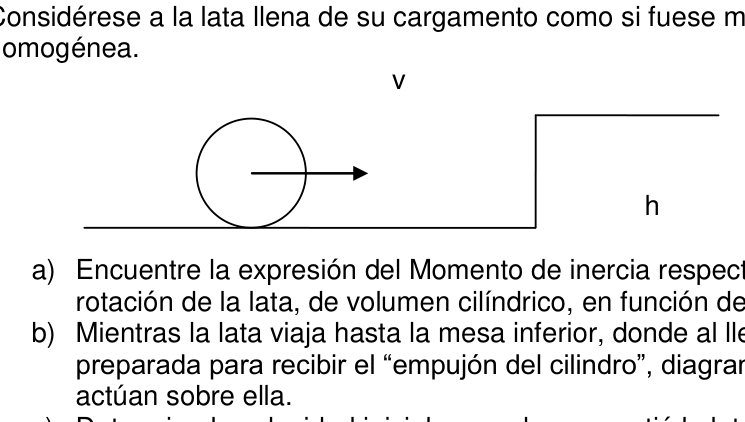
Topic: Newtonian Mechanics Metodi: Kinematic Equations, Vector Decomposition Competenze: Physical Reasoning Objects: Projectile Fonte: Testo (PDF) — p.3
PT67. Città di Buenos Aires. Blu. Una macchina di 200 kg di massa passa attraverso il punto A a una velocità di 60 km / h e 6 secondi dopo passa per il punto B a una velocità di 30 km/h. A partire da B continua alla stessa velocità fino a raggiungere, dopo 5 secondi, al punto C (vedi figura) a) Calcola la distanza da A a C (Xo = 10 m) Il conducente, che stava parlando sul cellulare senza rispettare le regole. Le norme vigenti, non ha visto il segnale che indicava che il cammino Finisce in C perché c’è un pozzo tremendo, quasi un cratere! de 5 m de lungo per 1 m di profondità da riparare (vedi figura).
A B
C
1 m
5 m
Al miglior stile della fantastica auto proprio al punto C il conducente riesce inclinare la macchina ad un angolo di 30° rispetto al piano AC. b) Riusce a passare il pozzo? giustifica la tua risposta. c) A che punto dal C la macchina riattacca il pavimento? Se l’angolo di inclinamento della macchina rispetto al piano AC è di 60°, d) la macchina passerebbe il pozzo? giustifica la tua risposta.
OAF 2010 - 46 e) A che punto dal C la macchina ripercorre il pavimento? f) Sulla conclusione si confrontano i risultati di (d) e (f). Se il conducente non cambiava la direzione della macchina rispetto all’AC, g) si sarebbe riuscito a superare il pozzo? giustifica la risposta. Nota: disprezza ogni tipo di ruggine e considera: g = 10 m / s2
Topic: Newtonian Mechanics Metodi: Kinematic Equations, Vector Decomposition Competenze: Physical Reasoning Objects: Projectile Fonte: Testo (PDF) — p.3
PT67. City of Buenos Aires. Blue, please. A 200-kg car passes through point A at a speed of 60 km/h. And six seconds later it passes through point B at a speed of 30km/h. Starting from B, continue at the same speed until you reach, after 5 seconds, to point C (see figure) (a) Calculate the distance travelled from A to C (Xo = 10 m) The driver, who was talking on his cell phone without meeting the requirements. The Commission has not yet taken any action to address the problem of the It ended in C because there was a huge well, almost a crater! de 5 m de length by 1 m of depth to be repaired (see figure).
A B
C
1 m
5 m
In the best style of the fantastic car right at the point of C the driver gets incline the car at an angle of 30° with respect to the AC plane. (b) Can he get past the well? Justify your answer. (c) Where does the car touch the floor again after C? If the angle of inclination of the car with respect to the AC plane is 60°, (d) would the car pass the well? Justify your answer.
The following points shall be added: (e) Where does the car touch the floor again after C? (f) Draw a conclusion by comparing the results of items (d) and (f). If the driver didn’t change the direction of the car with respect to AC, (g) had he managed to pass the well? It justifies the answer. Note: disregard all types of rubbing and consider: g = 10 m / s2
Topic: Newtonian Mechanics Metodi: Kinematic Equations, Vector Decomposition Competenze: Physical Reasoning Objects: Projectile Fonte: Testo (PDF) — p.3
PT68. Ciudad de Buenos Aires. Azul. A- Un iceberg de forma cúbica y 100 m de lado está a una temperatura de 0ºC. a) Cuánta energía tiene que recibir para fundirse y convertirse en agua a 10ºC? b) Grafica T = f (Q) c) ¿Cuántos kg de gasoil habrá que quemar para obtener esa energía? Datos: hielo = 900 kg / m3 Calor latente de fusión del agua = 80 cal / g Calor específico del agua = 1 cal/g C Poder calorífico del gasoil = 1,1 104 kcal / kg
B - Un atleta desarrolla durante una carrera una potencia de 1100 W en 20
segundos. Si el atleta sólo metaboliza el 25 % de la energía suministrada por el
azúcar.
¿Qué Cantidad de azúcar debe tomar para compensar la energía gastada?
Dato: Calor latente de combustión del azúcar = 2,1 104 J / g
C - Un generador eléctrico tiene una potencia de 150 KW y la velocidad del
viento en la zona le permite producir energía durante 8 h por día ¿Cuántos litros
de agua se pueden calentar de 15ºC a 60ºC con la energía producida por el
generador en un día?
Datos: 1 Joule = 0,24 cal
Ce agua = 1 cal/gºC
agua = 1 g/cm3
Topic: Thermodynamics Metodi: First Law of Thermodynamics Competenze: Physical Reasoning Objects: — Fonte: Testo (PDF) — p.3
PT68. Città di Buenos Aires. Blu. A- Un iceberg a forma cubica e a 100 m di lato è a una temperatura di 0 °C. a) Quanta energia deve ricevere per fondere e trasformarsi in acqua a 10ºC? b) Grafico T = f (Q) (c) Quanti kg di combustibile dovranno essere bruciati per ottenere tale energia? Dati: ghiaccio = 900 kg / m3 Calore latente di fusione dell’ acqua = 80 cal / g Calore specifico dell’acqua = 1 cal/g C Potenza calorifica del gasolio = 1,1 104 kcal / kg
B - Un atleta sviluppa durante una gara una potenza di 1100 W in 20
- Segondi. Se l’atleta metabolizza solo il 25% dell’energia fornita dal zucchero. Quanto zucchero deve assumere per compensare l’energia spesa? Data: Calore latente di combustione dello zucchero = 2,1 104 J / g
C - Un generatore elettrico ha una potenza di 150 KW e la velocità di Il vento nella zona permette di produrre energia per 8 ore al giorno. La temperatura del calore di acqua può essere di 15°C a 60°C con l’energia prodotta dal calore di acqua. Generatore in un giorno? Dati: 1 Joule = 0,24 cal Ce acqua = 1 cal/goC acqua = 1 g/cm3
Topic: Thermodynamics Metodi: First Law of Thermodynamics Competenze: Physical Reasoning Objects: — Fonte: Testo (PDF) — p.3
PT68. City of Buenos Aires. Blue, please. A- A cubic-shaped iceberg and 100 m side is at a temperature of 0°C. (a) How much energy does it have to receive to melt and turn into water? 10ºC? (b) Graph T = f (Q) (c) How many kg of diesel fuel will have to be burned to produce that energy? Data: ice = 900 kg / m3 Latent water melting heat = 80 cal / g The specific heat of the water = 1 cal/g C Heat power of the diesel = 1,1 104 kcal / kg
B - An athlete develops a power of 1100 W in 20 Seconds. If the athlete metabolizes only 25% of the energy supplied by the sugar. How much sugar should you take to offset the energy you’ve spent? Date: Latent heat of combustion of sugar = 2.1 104 J / g
C - An electric generator has a power of 150 kW and the speed of the Wind in the area allows you to produce energy for 8 hours a day. The energy produced by the heat is used to heat water from 15°C to 60°C. Generator in a day? Data: 1 Joule = 0.24 cal Water is equal to 1 cal/goC water = 1 g/cm3
Topic: Thermodynamics Metodi: First Law of Thermodynamics Competenze: Physical Reasoning Objects: — Fonte: Testo (PDF) — p.3
PT69. Ciudad de Buenos Aires. Azul. En una región del espacio existe un campo eléctrico“E”uniforme (ver esquema) cuya intensidad es 2.104 N/C a) calcula la fuerza que ejerce este campo sobre un electrón
- - - - - - - - - - - - - -
E -
electrón
+ + + + + + + + + + +
El electrón parte del reposo y en un instante posterior su velocidad es de
1,87.107 m/s
b) ¿cuánto tiempo tarda el electrón en alcanzar esa velocidad?
c) ¿qué distancia recorre en ese tiempo?
Considera un portón con una velocidad inicial de 2,3 105 m / s en la dirección “x”,
entra en el mismo campo eléctrico uniforme
- - - - - - - - - - - - -
OAF 2010 - 47
E
+ - - - - - - - - - - - - - - - - - - - -> x
protón
+ + + + + + + + + + +
d) calcula el desplazamiento vertical del protón, después que haya recorrido 0,05 m en la dirección “x” y su velocidad Datos: mp ( masa del protón ) = 1,67.10-27 kg me ( masa del electrón ) = 9,1. 10-31 kg e ( carga del electrón) = 1,6. 10-19 C
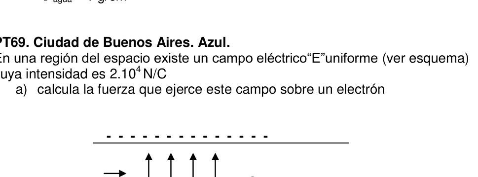
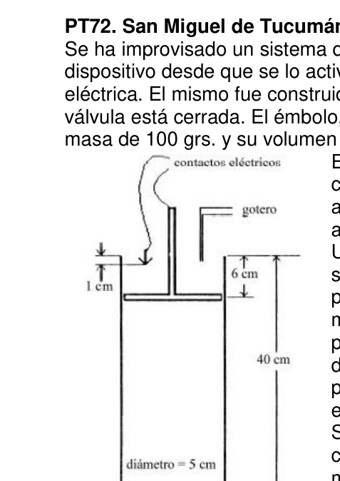
Topic: Electrostatics, Newtonian Mechanics Metodi: Lorentz Force Analysis, Kinematic Equations Competenze: Physical Reasoning Objects: Electron, Capacitor Fonte: Testo (PDF) — p.3
PT69. Città di Buenos Aires. Blu. In una regione dello spazio esiste un campo elettrico uniforme (vedi schema) di una intensità di 2,104 N/C a) calcola la forza che questo campo esercita su un elettrone
- - - - - - - - - - - - - -
E -
elettrone
+ + + + + + + + + + +
L’elettrone parte dal riposo e un istante dopo la sua velocità è di
1,87.107 m/s
b) Quanto tempo ci vuole per raggiungere tale velocità?
c) che distanza percorre in quel tempo?
Considera un portale con una velocità iniziale di 2,3 105 m/s nella direzione x,
entra nello stesso campo elettrico uniforme.
- - - - - - - - - - - - -
OAF 2010 - 47
E
+ - - - - - - - - - - - - - - - - - - - -> x
Protone
+ + + + + + + + + + +
(d) calcola il spostamento verticale del protone dopo che è passato 0,05 m in direzione x e velocità Datti: mp (massa del protone) = 1,67,10-27 kg me (massa dell’elettrone) = 9,1. 10-31 kg e (carga dell’elettrone) = 1,6. 10-19 C
Topic: Electrostatics, Newtonian Mechanics Metodi: Lorentz Force Analysis, Kinematic Equations Competenze: Physical Reasoning Objects: Electron, Capacitor Fonte: Testo (PDF) — p.3
PT69. City of Buenos Aires. Blue, please. In a region of space there is a uniform electric field (see diagram) a maximum of 20 °C, (a) calculates the force exerted by this field on an electron
- - - - - - - - - - - - - -
E -
electron
+ + + + + + + + + + +
The electron leaves the resting place and at a later moment its velocity is
1,87.107 m/s
(b) How long does it take the electron to reach that speed?
(c) what distance does he travel during that time?
Consider a gate with an initial speed of 2,3 105 m/s in the direction x,
enters the same uniform electric field
- - - - - - - - - - - - -
The following points shall be added:
E
+ - - - - - - - - - - - - - - - - - - - -> x
Proton
+ + + + + + + + + + +
(d) calculates the proton’s vertical displacement after it has travelled 0,05 m in the direction x and its speed The data: mp (proton mass) = 1,67.10-27 kg Me (electron mass) is 9.1. 10-31 kg e (electron charge) = 1.6. 10-19 C
Topic: Electrostatics, Newtonian Mechanics Metodi: Lorentz Force Analysis, Kinematic Equations Competenze: Physical Reasoning Objects: Electron, Capacitor Fonte: Testo (PDF) — p.3
Maquina elevadora de latas
PT70. San Miguel de Tucumán. Verde. Los chicos del Técnico han decidido este año innovar, en sentido de protesta, en su proyecto integrador de mecánica. El trabajo de ellos consiste en diseñar una máquina que eleve latas de una mesa a otra más elevada, utilizando un único cilindro neumático, actuador estudiado durante el año. La propuesta realizada por el alumno Topo es la más elemental y consiste en golpear las latas una vez, y hacerlas subir al chocar con el borde de la mesa. Considérese a la lata llena de su cargamento como si fuese maciza y homogénea. v
h
a) Encuentre la expresión del Momento de inercia respecto del eje de rotación de la lata, de volumen cilíndrico, en función de su radio R. b) Mientras la lata viaja hasta la mesa inferior, donde al llegar es detenida y preparada para recibir el “empujón del cilindro”, diagrame las fuerzas que actúan sobre ella. c) Determine la velocidad inicial v0 con la que partió la lata rodando sin deslizar hasta llegar a la primera mesa al transcurrir 2 segundos, tiempo de llegada de cada pieza, hasta detenerse. μd = 0,5 g = 9,8 ms-2. d) Determine la distancia recorrida por la lata en el apartado anterior. e) Una vez que la lata está ante la presencia de su cilindro golpeador, encuentre la altura y medida desde el centro de masa, de la posición del vástago del cilindro para que al golpear la lata, ésta ruede sin deslizar. f) Encuentre la velocidad v para que la lata suba a la siguiente mesa de altura h.
Topic: Rotational Dynamics, Conservation of Energy Metodi: Torque & Angular Momentum Analysis, Conservation of Energy Competenze: Physical Reasoning Objects: Cylinder Fonte: Testo (PDF) — p.3
Cattutore di scatola
PT70. San Michele di Tucumán. Verde. I ragazzi del Technici hanno deciso di innovare quest’anno, in senso di protesta, in il suo progetto integratore di meccanica. Il loro lavoro consiste nel progettare un’unica macchina che alza le lattine da un tavolo ad un altro più alto, utilizzando un unico cilindro pneumatico, attuatore studiato durante l’anno. La proposta del student Topo è la più elementare e consiste in: colpire le lattine una volta e farle salire colpendo il bordo del tavolo. Considerate il contenitore pieno di carico come se fosse massiccio e
-
E’ un’unica cosa. v
h
a) Trova l’espressione del Momento di inerzia rispetto all’asse di rotazione della canna, di volume cilindrico, a seconda del suo raggio R. b) Mentre la lata viaggia fino al tavolo inferiore, dove all’arrivo è fermata e Preparato per ricevere il pulso del cilindro, diagrafica le forze che che agiscono su di lei. c) Determina la velocità iniziale v0 con cui si è rotata la canna senza Scandire fino a raggiungere il primo tavolo dopo due secondi, tempo da quando arriva ogni pezzo, fino a quando si ferma. μd = 0,5 g = 9,8 ms-2. d) Determina la distanza percorsa dalla canna nel paragrafo precedente. e) Una volta che la canna è sotto la presenza del suo cilindro battente, Trova l’altezza e la misura dal centro di massa, dalla posizione del Sciacche del cilindro in modo che quando si colpisce la lata, si gira senza scivolare. f) Trova la velocità v per far salire la canna al tavolo successivo di altezza h.
Topic: Rotational Dynamics, Conservation of Energy Metodi: Torque & Angular Momentum Analysis, Conservation of Energy Competenze: Physical Reasoning Objects: Cylinder Fonte: Testo (PDF) — p.3
The following table shows the number of units of the vehicle:
PT70. St. Michael of Tucumán. Green, please. The Technicians decided this year to innovate, in protest, in his integrated mechanics project. Their job is to design a machine that lifts cans from one table to another higher, using a single The engine is a pneumatic cylinder, actuator studied throughout the year. The proposal made by the student Topo is the most elementary and consists of: hit the cans once, and make them go up by hitting the edge of the table. Consider the can full of your cargo as if it were solid and It’s the same. v
h
(a) Find the expression of the moment of inertia with respect to the axis of rotation of the cylindrical volume of the can, according to its radius R. (b) While the can travels to the bottom table, where it is stopped on arrival and Prepared to receive the cylinder’s thrust, diagram the forces that They act on her. (c) Determine the initial speed at which the can was broken without rolling. Slide to the first table after 2 seconds, time. From the arrival of each piece, to the stop. μd = 0,5 g = 9,8 ms-2. (d) Determine the distance travelled by the can in the previous paragraph. (e) Once the can is in the presence of its striking cylinder, Find the height and measurement from the center of mass, from the position of the The cylinder’s stem so that when you hit the can, it rolls without slipping. f) Find the speed v so that the can goes up to the next table of height h.
Topic: Rotational Dynamics, Conservation of Energy Metodi: Torque & Angular Momentum Analysis, Conservation of Energy Competenze: Physical Reasoning Objects: Cylinder Fonte: Testo (PDF) — p.3
PT71. San Miguel de Tucumán. Verde. Se dispone de una batería de 12V y 45Ampere - hora (con resistencia interna de 0,05Ω) para armar un circuito alimentación ocasional. El circuito incluye dos lámparas de 40W (Para el comedor y una habitación), una de 25W para el baño y una de 60W para el exterior. Todas estas lámparas son para una tensión nominal de 12W. Se dispone también de los interruptores y el cable necesario.
- Dibuje (esquemáticamente) el circuito correspondiente a esta casa.
- ¿Cuál es la resistencia nominal de cada lámpara?
OAF 2010 - 48 Para las preguntas siguientes, suponga la resistencia de cada lámpara igual a su valor nominal. 3) En el circuito esquematizado en el punto 1), ¿Qué corriente circula por cada lámpara cuando se encuentran todas encendidas? 4) Suponga que hay por lo menos una lámpara encendida. Entonces, calcule las resistencias máxima y mínima del circuito. 5) Nuevamente, con por lo menos una lámpara encendida, ¿cuál es el tiempo mínimo de duración de la batería?, ¿y el máximo?. 6) Suponga ahora que se desea iluminar muchos ambientes utilizando la misma batería antes mencionada y lámparas de 40W (12V) de las que se dispone tantas como sean necesarias. ¿Cuántos ambientes se podrían iluminar sin sobrecargar el circuito?, (es decir sin que la diferencia de potencial de la línea a menos de 10V).
Topic: Circuits Metodi: Kirchhoff’s Laws, Equivalent Circuit Reduction Competenze: Physical Reasoning Objects: Resistor, Battery, Switch Fonte: Testo (PDF) — p.3
PT71. San Michele di Tucumán. Verde. Si dispone di una batteria di 12V e 45Ampere - ora (con resistenza interna di 0,05Ω) per montare un circuito di alimentazione occasionale. Il circuito comprende due lampe da 40W (Per il salotto e una stanza), uno di 25W per il bagno e uno di 60W all’esterno. Tutte queste lampade sono per una tensione nominale di 12W. Se dispone anche dei necessari interruttori e del cavo.
- Disegna (schimaticamente) il circuito corrispondente a questa casa.
- Qual è la resistenza nominale di ciascuna lampada?
OAF 2010 - 48 Per le seguenti domande, supponi che la resistenza di ogni lampada sia uguale alla sua valore nominale. 3) Nel circuito schematizzato al punto 1), che corrente circola per ogni lampada quando sono tutte accese? 4) Supponiamo che ci sia almeno una lampada accesa. Allora, Calcolare le resistenze massime e minime del circuito. 5) Ancora una volta, con almeno una lampada accesa, quale è il durata minima della batteria e massima. 6) Supponiamo che si desidera illuminare molti ambienti utilizzando l’energia elettrica. la stessa batteria e le lampade da 40W (12V) di cui sopra dispone di quanti sono necessari. Quanti ambienti potremmo avere? Il sistema di accensione è stato sviluppato per il sistema di accensione. potenza della linea a meno di 10 V).
Topic: Circuits Metodi: Kirchhoff’s Laws, Equivalent Circuit Reduction Competenze: Physical Reasoning Objects: Resistor, Battery, Switch Fonte: Testo (PDF) — p.3
PT71. St. Michael of Tucumán. Green, please. It has a 12V and 45 ampere-hour battery (with internal resistance of 0,05Ω) to set up an occasional power supply circuit. The circuit includes two 40W lamps (For the dining room and one room), one 25W for the bathroom and one 60W to the outside. All these lamps are for a rated voltage of 12W. Se It also has the necessary switches and cable.
- Draw (schematically) the corresponding circuit for this house.
- What is the nominal resistance of each lamp?
The following is the list of the Member States’ financial statements: For the following questions, assume the resistance of each lamp equal to its the nominal value. 3) In the circuit outlined in point 1), what current is circulating through every lamp when they’re all on? 4) Suppose there is at least one lamp on. So, calculate the maximum and minimum resistance of the circuit. 5) Again, with at least one lamp on, what is the minimum battery life and maximum life 6) Suppose now that you wish to illuminate many environments using the The same battery and 40W (12V) lamps as mentioned above It has as many as it needs. How many environments could you possibly have? The electrical system is designed to be used to illuminate the circuit without overloading the circuit. the power of the line at less than 10V).
Topic: Circuits Metodi: Kirchhoff’s Laws, Equivalent Circuit Reduction Competenze: Physical Reasoning Objects: Resistor, Battery, Switch Fonte: Testo (PDF) — p.3
PT72. San Miguel de Tucumán. Verde.
Se ha improvisado un sistema que permite controlar el tiempo que demora un
dispositivo desde que se lo activa hasta que permite el paso de la corriente
eléctrica. El mismo fue construido usando un inflador manual (ver la figura), cuya
válvula está cerrada. El émbolo, que puede deslizarse sin rozamiento, tiene una
masa de 100 grs. y su volumen es despreciable.
En el instante inicial el émbolo se halla libre a 5
cm del extremo superior del inflador, la presión
ambiente es de 1 atmósfera y la temperatura
ambiente de 20°C.
Un gotero agrega una gota de mercurio cada dos
segundos en el espacio entre el émbolo y las
paredes del inflador. A medida que se acumula el
mercurio, el émbolo baja. El sistema se ha
preparado de tal manera que cuando el menisco
de mercurio llega a 1 cm del borde superior de las
paredes del inflador, se cierra un contacto
eléctrico que permite el paso de la corriente.
Suponiendo que el aire dentro del inflador se
comporte como gas ideal y la temperatura se
mantiene constante, calcule el tamaño máximo de
la gota para que el contacto no se cierre antes de
que transcurran 20000seg (5h 33m 20seg) desde
que se depósito la primera gota.
Datos numéricos: aceleración de la gravedad g = 9.80m/s2
1 atmósfera = 760 mm de mercurio
Densidad del mercurio: 13600 kg/m3
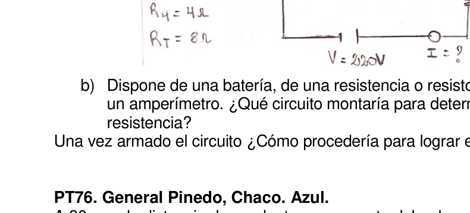
Topic: Thermodynamics Metodi: Ideal Gas Law, Hydrostatic Equilibrium Competenze: Physical Reasoning Objects: Gas, Piston Fonte: Testo (PDF) — p.3
PT72. San Michele di Tucumán. Verde. È stato improvvisato un sistema che consente di controllare il tempo che dura un’operazione. dispositivo da quando viene attivato fino a quando permette il passaggio del corrente elettrica. Il suo è stato costruito utilizzando un gonfiatore manuale (vedi figura), il cui Valvola chiusa. Il pallone, che può scivolare senza rottura, ha un massa di 100 gr. e il suo volume è disprezzabile. In un istante iniziale l’imbolo è libero a 5 cm dall’estremità superiore dell’inflatore, la pressione L’ambiente è di un’atmosfera e la temperatura. ambiente di 20°C. Un goccia aggiunge una goccia di mercurio ogni due secondi nello spazio tra l’imbolo e le i muri dell’inflatore. Come si accumula il Mercurio, l’imbolo scende. Il sistema è stato preparato in modo tale che quando il menisco di mercurio raggiunge 1 cm dal bordo superiore delle Pareti dell’inflatore, si chiude un contatto elettrico che permette il passaggio del corrente. Supponiamo che l’aria all’interno dell’inflatore sia Si comporta come gas ideale e la temperatura si
- Si mantiene costante, calcola il massimo di dimensioni. la goccia per non chiudere il contatto prima di che si estendono da 20000 secondi (5h 33m 20sec) a partire da che si deposita la prima goccia. Dati numerici: accelerazione della gravità g = 9,80m/s2 1 atmosfera = 760 mm di mercurio Densità del mercurio: 13600 kg/m3
Topic: Thermodynamics Metodi: Ideal Gas Law, Hydrostatic Equilibrium Competenze: Physical Reasoning Objects: Gas, Piston Fonte: Testo (PDF) — p.3
PT72. St. Michael of Tucumán. Green, please. An improvised system has been developed to control the time it takes for a device from the time it is activated until it allows the flow of current electrical. The same was built using a manual inflator (see figure), whose The valve is closed. The plunger, which can slide without a scratch, has a mass of 100 grams. And its volume is despicable. At the initial moment the plunger is free at 5 cm from the upper end of the inflator, pressure The atmosphere is one atmosphere and the temperature is one atmosphere. The temperature of the test chemical is not less than 0,05 °C. A drop adds a drop of mercury every two . seconds in the space between the embolus and the walls of the inflator. As the accumulation of Mercury, the plume is down. The system is broken. prepared in such a way that when the meniscus Mercury reaches 1 cm from the upper edge of the walls of the inflator, a contact is closed electrical system that allows the flow of current. Assuming the air inside the inflator is The temperature is the ideal gas. Keep constant, calculate the maximum size of the droplet so that contact does not close before The time taken to complete the test is approximately 20000 seconds (5h 33m 20seconds) from That the first drop is deposited. The following data are available: 1 atmosphere = 760 mm of mercury The following conditions shall apply:
Topic: Thermodynamics Metodi: Ideal Gas Law, Hydrostatic Equilibrium Competenze: Physical Reasoning Objects: Gas, Piston Fonte: Testo (PDF) — p.3
PT73. General Pinedo, Chaco. Azul. Un cuerpo que pesa 8000 N es impulsado por una fuerza de 500N la cual posee un ángulo de 45° con la horizontal. Graficar.- a) ¿Cuál es la fuerza que produce el desplazamiento? b) ¿Cuál es el trabajo realizado si la distancia recorrida es de 8m? c) Calcule la velocidad, suponiendo que el cuerpo se movió a velocidad constante, sabiendo que la potencia desarrollada es de 300 vatios.
Topic: Newtonian Mechanics Metodi: Free-Body Diagram, Vector Decomposition Competenze: Physical Reasoning Objects: Block Fonte: Testo (PDF) — p.3
PT73. Generale Pinedo, Chaco. Blu. Un corpo che pesa 8000 N è guidato da una forza di 500 N che possiede un angolo di 45° con la linea orizzontale. - Grafico . a) Qual è la forza che produce il spostamento? b) Qual è il lavoro svolto se la distanza percorsa è di 8 m? c) Calcolare la velocità, supponendo che il corpo si sia mosso a velocità costante, sapendo che la potenza sviluppata è di 300 watt.
Topic: Newtonian Mechanics Metodi: Free-Body Diagram, Vector Decomposition Competenze: Physical Reasoning Objects: Block Fonte: Testo (PDF) — p.3
PT73. General Pinedo, Chaco. What is it? Blue, please. A body weighing 8000 N is driven by a force of 500 N which it possesses . a 45° angle with the horizontal. - I ‘m going to write . (a) What force is the force of displacement? (b) What is the work done if the distance travelled is 8m? (c) Calculate the velocity, assuming the body moved at speed. constant, knowing that the power developed is 300 watts.
Topic: Newtonian Mechanics Metodi: Free-Body Diagram, Vector Decomposition Competenze: Physical Reasoning Objects: Block Fonte: Testo (PDF) — p.3
PT74. General Pinedo, Chaco. Azul. En un cuarto aislado se pone a funcionar un refrigerador vacío. Explique que pasa
OAF 2010 - 49
en cada casos con la temperatura del cuarto si la puerta del refrigerador se deja:
a) Abierta.
b) Cerrada.
c) Para determinar el calor específico de un cuerpo un alumno obtuvo los
siguientes valores.
Primera parte
*Masa de agua caliente = 80g *Temperatura del agua caliente= 37 °C *Masa de
agua fría = 80g *Temperatura del agua fría 18°C .
*Temperatura de la mezcla = 26 °C
Segunda parte
*Masa del cuerpo = 200 g *Temperatura del cuerpo= 100°C *Masa de
agua= 200 g *temperatura del agua= 56 °C * Temperatura de la mezcla
(cuerpo y agua)= 60ºC
Tabla de valores de calor específico Calor específico del plomo 0.03 cal /g ºC Calor específico del hierro0.114 cal /g ºC Calor específico del agua 1 cal /g ºC
Explique el procedimiento para obtener estos valores y determine el calor específico del cuerpo, compárelo con la tabla de valores de calor específico y diga a que material pertenece
Topic: Thermodynamics Metodi: First Law of Thermodynamics Competenze: Physical Reasoning Objects: Calorimeter Fonte: Testo (PDF) — p.3
PT74. Generale Pinedo, Chaco. Blu. In una stanza isolata si mette in funzione un frigorifero vuoto. Spiega cosa sta succedendo .
OAF 2010 - 49 in ogni caso a temperatura ambiente se la porta del frigorifero è lasciata: a) Aperto. b) Chiuso. c) Per determinare la specificità del calore corporeo uno studente ha ottenuto i i seguenti valori. Parte I *Massa di acqua calda = 80 g *Temperatura dell’acqua calda= 37 °C *Massa di acqua fredda = 80 g *Temperatura dell’acqua fredda 18°C. *Temperatura della miscela = 26 °C Parte II *Massa corporea = 200 g *Temperatura corporea= 100°C *Massa di acqua= 200 g *temperatura dell’acqua= 56 °C * Temperatura della miscela (corpo e acqua) = 60oC
Tabella dei valori di calore specifici Calore specifico del piombo 0,03 cal / g oC Calore specifico del ferro0,114 cal /g oC Calore specifico dell’acqua 1 cal / g oC
Spiegate la procedura per ottenere questi valori e determinare la temperatura. specifico del corpo, confrontalo con la tabella di valori di calore specifici e digli a quale materiale appartiene
Topic: Thermodynamics Metodi: First Law of Thermodynamics Competenze: Physical Reasoning Objects: Calorimeter Fonte: Testo (PDF) — p.3
PT74. General Pinedo, Chaco. What is it? Blue, please. In an isolated room, an empty refrigerator is put into operation. Explain what ‘s going on .
The following points shall be added: in each case at room temperature if the refrigerator door is left: (a) Open. (b) Closed. (c) To determine the specific heat of a body a student obtained the the following values. Part one The heat source is the heat source of the water. cold water = 80 g *Cold water temperature 18°C. The temperature of the mixture is 26 °C. Part two *Body mass = 200 g *Body temperature = 100°C *Body mass The following table shows the results of the test: (body and water) = 60oC
Table of specific heat values Specific heat of lead 0.03 cal / g oC Specific heat of iron 0.114 cal / g oC Specific heat of water 1 cal /g oC
Explain the procedure for obtaining these values and determine the heat. Specific body, compare it to the specific heat table and say to which material it belongs
Topic: Thermodynamics Metodi: First Law of Thermodynamics Competenze: Physical Reasoning Objects: Calorimeter Fonte: Testo (PDF) — p.3
PT75. General Pinedo, Chaco. Azul. a) Resuelve el siguiente circuito
b) Dispone de una batería, de una resistencia o resistor, de un voltímetro y de
un amperímetro. ¿Qué circuito montaría para determinar el valor de la
resistencia?
Una vez armado el circuito ¿Cómo procedería para lograr el objetivo?
Topic: Circuits Metodi: Kirchhoff’s Laws, Equivalent Circuit Reduction Competenze: Physical Reasoning Objects: Resistor Fonte: Testo (PDF) — p.3
PT75. Generale Pinedo, Chaco. Blu. a) Risolve il circuito seguente
b) Dispone di una batteria, di una resistenza o di un resistore, di un voltometro e di un amperimetro. Che circuito si monterebbe per determinare il valore della resistenza? Una volta che il circuito è stato armarto, come procedere per raggiungere l’obiettivo?
Topic: Circuits Metodi: Kirchhoff’s Laws, Equivalent Circuit Reduction Competenze: Physical Reasoning Objects: Resistor Fonte: Testo (PDF) — p.3
PT75. General Pinedo, Chaco. What is it? Blue, please. (a) Resolves the following circuit
(b) It has a battery, a resistor or resistor, a voltmeter and a It’s a square inch. What circuit would you mount to determine the value of the resistance? Once the circuit is set up, how would it proceed to achieve the goal?
Topic: Circuits Metodi: Kirchhoff’s Laws, Equivalent Circuit Reduction Competenze: Physical Reasoning Objects: Resistor Fonte: Testo (PDF) — p.3
PT76. General Pinedo, Chaco. Azul. A 30 cm. de distancia de una lente convergente delgada, cuya distancia focal es de 25 cm., se ha colocado un objeto de 1 cm. de alto. Determinar gráfica y analíticamente la posición y el tamaño de la imagen
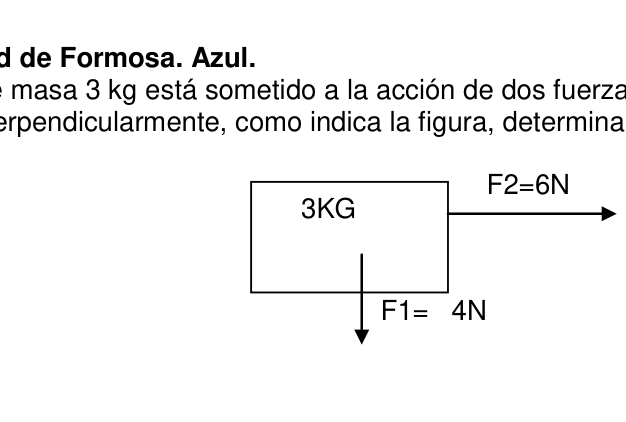
Topic: Geometric Optics Metodi: Thin Lens & Mirror Equation, Ray Tracing Competenze: Physical Reasoning Objects: Lens Fonte: Testo (PDF) — p.3
PT76. Generale Pinedo, Chaco. Blu. A 30 cm. Distanza di una lente convergente sottile, la cui distanza focale è di 25 cm, è stato inserito un oggetto di 1 cm. - Alti. Determinare la grafica e analiticamente la posizione e la dimensione dell’immagine
Topic: Geometric Optics Metodi: Thin Lens & Mirror Equation, Ray Tracing Competenze: Physical Reasoning Objects: Lens Fonte: Testo (PDF) — p.3
PT76. General Pinedo, Chaco. What is it? Blue, please. A 30 cm. distance of a thin convergent lens, the focal length of which is 25 cm, an object of 1 cm has been placed. I’m not going to be able to stop. Determine the graph and analytically the position and size of the image
Topic: Geometric Optics Metodi: Thin Lens & Mirror Equation, Ray Tracing Competenze: Physical Reasoning Objects: Lens Fonte: Testo (PDF) — p.3
PT77. Ciudad de Formosa. Azul. Un auto parte del reposo, a los 5 s posee una velocidad de 90 km/h, si su aceleración es constante, calcular: a) ¿Cuánto vale la aceleración? b) ¿Qué espacio recorrió en esos 5 s? c) ¿Qué velocidad tendrá los 11 s?
OAF 2010 - 50
Topic: Newtonian Mechanics Metodi: Kinematic Equations Competenze: Physical Reasoning Objects: — Fonte: Testo (PDF) — p.3
PT77. Città di Formosa. Blu. Una macchina che parte dal riposo, a 5 secondi, ha una velocità di 90 km/h, se la sua Accelerazione è costante, calcolare: a) Quanto vale l’accelerazione? b) Che spazio ha percorso in questi 5 s? C) Qual è la velocità di 11 secondi?
OAF 2010 - 50
Topic: Newtonian Mechanics Metodi: Kinematic Equations Competenze: Physical Reasoning Objects: — Fonte: Testo (PDF) — p.3
PT77. The city of Formosa. Blue, please. A car that leaves the resting place at 5 s has a speed of 90 km/h, if its acceleration is constant, calculate: (a) How much is the acceleration worth? (b) What space did you travel through in those 5 seconds? (c) What speed will the 11s have?
The following points shall be added:
Topic: Newtonian Mechanics Metodi: Kinematic Equations Competenze: Physical Reasoning Objects: — Fonte: Testo (PDF) — p.3
PT78. Ciudad de Formosa. Azul. Utilizando el método de la poligonal, hallar la resultante y el ángulo que forma con la dirección positiva del eje x, de las siguientes fuerzas:
200 N en el eje x dirigida hacia la derecha
300 N, 60° por encima del eje x, hacia la derecha
100 N, 45° sobre el eje x, hacia la derecha
200 N en la dirección negativa del eje y
Topic: Newtonian Mechanics Metodi: Vector Decomposition Competenze: Physical Reasoning Objects: — Fonte: Testo (PDF) — p.3
PT78. Città di Formosa. Blu. Usando il metodo del poligonale, trovare il risultante e l’angolo che forma con la direzione positiva dell’asse x, delle seguenti forze:
200 N all’asse x diretto a destra
300 N, 60° sopra l’asse x, verso destra
100 N, 45° sull’asse x, a destra
200 N nella direzione negativa dell’asse e
Topic: Newtonian Mechanics Metodi: Vector Decomposition Competenze: Physical Reasoning Objects: — Fonte: Testo (PDF) — p.3
PT78. The city of Formosa. Blue, please. Using the polygonal method, find the resulting angle and form with the positive direction of the x-axis, of the following forces:
200 N on the x-axis facing right
300 N, 60° above the x-axis, to the right
100 N, 45° on the x-axis, to the right
200 N in the negative direction of the axis and
Topic: Newtonian Mechanics Metodi: Vector Decomposition Competenze: Physical Reasoning Objects: — Fonte: Testo (PDF) — p.3
PT79. Ciudad de Formosa. Azul. Un cuerpo de masa 3 kg está sometido a la acción de dos fuerzas de 6 N y 4 N dispuestas perpendicularmente, como indica la figura, determinar la aceleración.
F2=6N
F1= 4N
Topic: Newtonian Mechanics Metodi: Free-Body Diagram, Vector Decomposition Competenze: Physical Reasoning Objects: — Fonte: Testo (PDF) — p.3
PT79. Città di Formosa. Blu. Un corpo di massa di 3 kg è sottoposto all’azione di due forze di 6 N e 4 N. Le parti di velocità di velocità di velocità di velocità di velocità di velocità di velocità di velocità di velocità di velocità di velocità di velocità di velocità di velocità di velocità di velocità di velocità di velocità di velocità di velocità di velocità di velocità di velocità di velocità di velocità di velocità di velocità di velocità di velocità di velocità di velocità di velocità di velocità di velocità di velocità di velocità di velocità di velocità di velocità di velocità di velocità di velocità di velocità di velocità di velocità di velocità di velocità di velocità di velocità di velocità di velocità di velocità di velocità di velocità di velocità di velocità di velocità di velocità di velocità di velocità di velocità di velocità di velocità di velocità di velocità di velocità di velocità di velocità di velocità di velocità di velocità di velocità di velocità di velocità di velocità di velocità di velocità di velocità di velocità di velocità di velocità di velocità di velocità di velocità di velocità di velocità di velocità di velocità di velocità di velocità di velocità di velocità di velocità di velocità di velocità di velocità di velocità di velocità di velocità di velocità di velocità di velocità di velocità di velocità di velocità di velocità di velocità di velocità di velocità di velocità di velocità di velocità di velocità di velocità di velocità di velocità di velocità di velocità di velocità di velocità di velocità di velocità di velocità di velocità di velocità di velocità di velocità di velocità di velocità di velocità di velocità di velocità di velocità di velocità di velocità di velocità di velocità di velocità di velocità di velocità di velocità di velocità di velocità di velocità di velocità di velocità di velocità di velocità di velocità di velocità di velocità di velocità di velocità di velocità di velocità di velocità di velocità di velocità di velocità di velocità di velocità di velocità di velocità di velocità di velocità di velocità di velocità di velocità di velocità di veloc
F2=6N
F1= 4N
Topic: Newtonian Mechanics Metodi: Free-Body Diagram, Vector Decomposition Competenze: Physical Reasoning Objects: — Fonte: Testo (PDF) — p.3
PT79. The city of Formosa. Blue, please. A body weighing 3 kg is subject to the action of two forces of 6 N and 4 N. The acceleration is determined by the perpendicular arrangement, as shown in the figure.
F2=6N
F1= 4N
Topic: Newtonian Mechanics Metodi: Free-Body Diagram, Vector Decomposition Competenze: Physical Reasoning Objects: — Fonte: Testo (PDF) — p.3
PT80. Ciudad de Formosa. Azul. Un punto material, con relación a un determinado punto de referencia tiene velocidades en función del tiempo, indicadas en la tabla:
t (s) 0 1 2 3 4 5 6 7 v (m/s) 3 5 7 9 11 13 15 17
Se pide: a) La velocidad inicial del punto material b) La aceleración media del punto material en el intervalo de 1s a 5 s. c) Esquematice la situación en un gráfico de velocidad en función del tiempo. d) Clasifique el movimiento y justifique.
Topic: Newtonian Mechanics Metodi: Kinematic Equations, Graph Linearization Competenze: Physical Reasoning, Experimental Data Analysis Objects: — Fonte: Testo (PDF) — p.3
PT80. Città di Formosa. Blu. Un punto materiale, in relazione a un determinato punto di riferimento ha velocità in funzione del tempo, indicate nella tabella:
t (s) 0 1 2 3 4 5 6 7 v (m/s) 3 5 7 9 11 13 15 17
Si chiede: a) La velocità iniziale del punto materiale b) L’accelerazione media del punto materiale nell’intervallo da 1s a 5s. (c) Squamatizzare la situazione su un grafico di velocità in base al tempo. d) Classifica il movimento e giustifica.
Topic: Newtonian Mechanics Metodi: Kinematic Equations, Graph Linearization Competenze: Physical Reasoning, Experimental Data Analysis Objects: — Fonte: Testo (PDF) — p.3
PT80. The city of Formosa. Blue, please. A material point, in relation to a given reference point has Time-speed speeds, shown in the table:
t (s) 0 1 2 3 4 5 6 7 v (m/s) 3 5 7 9 11 13 15 17
It asks: (a) The initial velocity of the material point (b) The average acceleration of the material point in the range of 1s to 5s. (c) Schematic the situation on a speed chart based on the time. (d) Classify the movement and justify it.
Topic: Newtonian Mechanics Metodi: Kinematic Equations, Graph Linearization Competenze: Physical Reasoning, Experimental Data Analysis Objects: — Fonte: Testo (PDF) — p.3
PT81. Ciudad de Formosa. Azul.
Un objeto real frontal tiene su imagen proyectada en una pantalla de igual
tamaño. En la proyección fue utilizado un espejo esférico de radio 20cm.
Determine:
a) el tipo de espejo
b) la distancia de la pantalla al vértice del espejo
c) construya el esquema correspondiente
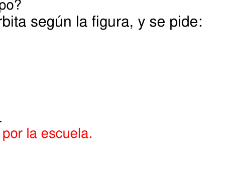
Topic: Geometric Optics Metodi: Thin Lens & Mirror Equation, Ray Tracing Competenze: Physical Reasoning Objects: Mirror, Screen Fonte: Testo (PDF) — p.3
PT81. Città di Formosa. Blu. Un oggetto reale frontal ha la sua immagine proiettata su uno schermo uguale. dimensioni. Nella proiezione è stato utilizzato uno specchio radiofrequente di 20 cm. Determina: a) il tipo di specchio b) la distanza tra lo schermo e la punta dello specchio c) costruisce il corrispondente schema
Topic: Geometric Optics Metodi: Thin Lens & Mirror Equation, Ray Tracing Competenze: Physical Reasoning Objects: Mirror, Screen Fonte: Testo (PDF) — p.3
PT81. The city of Formosa. Blue, please. A real frontal object has its image projected onto an equal screen. size. A 20cm radius spherical mirror was used in the projection. Determine: (a) the type of mirror (b) the distance from the screen to the top of the mirror (c) build the corresponding scheme
Topic: Geometric Optics Metodi: Thin Lens & Mirror Equation, Ray Tracing Competenze: Physical Reasoning Objects: Mirror, Screen Fonte: Testo (PDF) — p.3
PT82. Ciudad de Formosa. Azul.
sobre un cuerpo atérmico incide 40000 J de calor durante un cierto tiempo.
Sabiendo que la cantidad de calor absorbida en ese tiempo es de 5000J.
determine: a) el poder absorbente
b) el poder reflector
c) esquema de la situación
dato: E incidente = energía absorbida + energía reflejada + energía refractada
3KG
OAF 2010 - 51
Topic: Thermodynamics Metodi: First Law of Thermodynamics Competenze: Physical Reasoning Objects: — Fonte: Testo (PDF) — p.3
PT82. Città di Formosa. Blu. Su un corpo termico incide 40.000 J di calore per un certo periodo di tempo. Sapendo che la quantità di calore assorbita in quel tempo è di 5000 J. determinare: a) la potenza assorbitrice b) il potere riflettente c) schema della situazione Data: E incidente = energia assorbita + energia riflessa + energia refrattata
3KG
OAF 2010 - 51
Topic: Thermodynamics Metodi: First Law of Thermodynamics Competenze: Physical Reasoning Objects: — Fonte: Testo (PDF) — p.3
PT82. The city of Formosa. Blue, please. Over an athermic body, 40,000 J of heat is applied for a certain period of time. Knowing that the amount of heat absorbed during that time is 5000J. determine: (a) the absorbing power (b) the reflecting power (c) a situation outline Data: E incident = energy absorbed + energy reflected + energy refracted
3KG
The following points shall be added:
Topic: Thermodynamics Metodi: First Law of Thermodynamics Competenze: Physical Reasoning Objects: — Fonte: Testo (PDF) — p.3
PT83. San Miguel de Tucumán. Azul.
Un automóvil de 1400 Kg sube cuesta arriba por una montaña tratando de llegar
a la cumbre situada a 65 m de altura. Pero, al llegar a 35 m de altura, se le
acaba la nafta y el motor se detiene cuando la velocidad era de 75 Km/h.
Astutamente el conductor pasa inmediatamente a “punto muerto” y así el auto
sigue moviéndose.
a) Sin tener en cuenta todas las pérdidas por fricción, describe el
movimiento que realizará el auto a partir del momento en que el motor se
detiene.
b) ¿Llegará a la cumbre? Justifique
c) Para poder llegar a la cumbre, ¿le ayudaría si arrojara toda la carga que
tiene el auto?. Explica
d) ¿Con qué velocidad llegará de vuelta al pie de la montaña?
e) Grafica velocidad en función del tiempo para la ida y vuelta.
f) Suponiendo ahora que el automóvil parte con una velocidad de 130 Km/h
y llega al punto más alto de la cuesta con la mínima energía posible, pero
que la superficie ofrece rozamiento, calcula el coeficiente de rozamiento,
si se desplazó horizontalmente120m.
g) Calcular la fuerza que realiza el motor si sube a velocidad constante.
h) Al llegar a la cima de la montaña, encuentra un camino que lo lleva a un
precipicio de 70m de altura, al observar el mismo se da cuenta que
llevaba una velocidad de 72km/h y trata de maniobrar para no caer en él,
lo cual hace que choque con un auto estacionado, deteniéndose el primer
auto luego del choque. Si el coeficiente de restitución del choque fue de
0,63, calcular la velocidad horizontal con la que se desprende el auto
chocado del borde del precipicio.
i) Calcular a que distancia del pie del precipicio cae el auto chocado.
Topic: Conservation of Energy, Newtonian Mechanics Metodi: Conservation of Energy, Conservation of Momentum, Free-Body Diagram Competenze: Physical Reasoning Objects: — Fonte: Testo (PDF) — p.3
PT83. San Michele di Tucumán. Blu. Una macchina da 1.400 kg sale su una montagna cercando di raggiungerla alla cima, a 65 m di altezza. Ma, raggiungendo i 35 metri di altezza, si è finisce la nafta e il motore si ferma quando la velocità era di 75 km/h. Con astuzia il conducente passa immediatamente al punto morto e così la macchina Continua a muoversi. a) Senza tener conto di tutte le perdite da attrito, descrive il movimento che la macchina effettuerà dal momento in cui il motore si
- Si ferma. b) Arriverà al vertice? Giustifica (c) Per arrivare al vertice, ti aiuterà gettare tutto il carico che
- Hai la macchina? Spiega d) A che velocità si ritornerà al piede della montagna? e) Grafica della velocità in base al tempo di andata e ritorno. f) Supponendo ora che l’auto parte a una velocità di 130 Km/h E arriva al punto più alto della salita con la minima energia possibile, ma che la superficie offre ruggine, calcola il coefficiente di ruggine, se si è spostata orizzontalmente 120 m. g) Calcolare la forza che il motore produce se sale a velocità costante. h) Arrivo alla cima della montagna, trova un sentiero che lo porta a un Il profondo di 70 metri di altezza, osservando lo stesso si rende conto che Stava andando a 72 km/h e cerca di manovrare per non cadere su di esso. che lo fa scontrare con una macchina parcheggiata, fermandosi prima auto dopo l’incidente. Se il coefficiente di restituzione dello shock è stato di 0,63, calcolare la velocità orizzontale con cui la macchina parte colpito dal bordo del precipizio. (i) Calcolare la distanza dal piede del precipizio in cui cade la macchina colpita.
Topic: Conservation of Energy, Newtonian Mechanics Metodi: Conservation of Energy, Conservation of Momentum, Free-Body Diagram Competenze: Physical Reasoning Objects: — Fonte: Testo (PDF) — p.3
PT83. St. Michael of Tucumán. Blue, please. A 1,400-pound car climbs up a mountain trying to get there. to the summit at 65 m. But, when you get to 35 meters high, you get The engine stops when the speed was 75 km/h. The driver is quick to pass to the dead end and so is the car. It’s still moving. (a) Without taking into account all friction losses, describe the The motion that the car will make from the moment the engine is It stops. (b) Will it reach the summit? Justify it . (c) To reach the summit, would it help you if you threw all the weight that you Do you have the car? Explain . (d) How fast will it get back to the foot of the mountain? (e) Graph speed based on time for round trip. (f) Assuming now that the car starts at a speed of 130 Km/h And he gets to the top of the ridge with the least amount of energy possible, but the surface provides friction, calculates the friction coefficient, if it moved horizontally 120m. (g) Calculate the force exerted by the engine when it is moving at a constant speed. h) When he reaches the top of the mountain, he finds a path that leads him to a The cliff is 70m high, and when you look at it you realize that He was driving at 72km/h and he’s trying to maneuver so he doesn’t fall on it. Which makes him hit a parked car, stopping first. car after the crash. If the shock return coefficient was 0,63, calculate the horizontal speed at which the car leaves It was hit by the edge of the cliff. (i) Calculate the distance from the foot of the precipice to which the hit car falls.
Topic: Conservation of Energy, Newtonian Mechanics Metodi: Conservation of Energy, Conservation of Momentum, Free-Body Diagram Competenze: Physical Reasoning Objects: — Fonte: Testo (PDF) — p.3
Descubriendo un nuevo planeta
PT84. San Miguel de Tucumán. Azul.
Descubriendo un nuevo planeta
Una nave espacial llegó a un planeta que parece tener condiciones similares a
la de la tierra. Una vez que aterrizan, comienzan a investigar, y deciden
averiguar la densidad de la misma, luego de varias mediciones llegan a
comprobar que la densidad es igual a 4935 kg/m3 y que el radio promedio del
planeta equivale a 4,27 . 106 m. Te pedimos a vos que:
a) calcules la masa del planeta.
b) Calcules la aceleración de la gravedad.
c) Calcules el peso que tendrías en ese planeta
Luego se procede a analizar la composición de la atmósfera y resulta ser apta
para la vida, se descubrió que la densidad es igual a 1,05 kg/m3 (próxima al
valor de la atmósfera terrestre)
d) ¿Qué empuje recibes de la atmósfera si tu volumen es aproximadamente
0,07 m3
e) En ese planeta , ¿flotarías, te elevarías o caerías? Justifica
f) Calcula cuántos globos de helio de 1l de volumen necesitarías para que
puedas elevarte en la atmósfera de dicho planeta con una aceleración de
0,1m/s2 ( densidad del globo lleno de helio es de 0,1785g/l)
Imagina que el planeta tiene una densidad uniforme y posee un túnel que
atraviesa de polo a polo pasando por el centro del mismo. Un cuerpo que en la
superficie peso 1 tonelada se deja caer por el túnel.
g) Calcula la fuerza de gravedad en la mitad del camino hacia el centro y en
el centro.
h) ¿Qué movimiento describiría el cuerpo?
Se observó que posee un satélite que orbita según la figura, y se pide:
OAF 2010 - 52 i) indicar en que puntos será mayor:
- la rapidez
- la fuerza de gravedad
- la aceleración
- la energía cinética
- la cantidad de movimiento.
El archivo digital de la figura no fue provisto por la escuela.
Topic: Gravitation, Fluid Mechanics Metodi: Newton’s Law of Gravitation, Hydrostatic Equilibrium, Simple Harmonic Motion Analysis Competenze: Physical Reasoning Objects: Planet, Satellite Fonte: Testo (PDF) — p.3
Scoprire un nuovo pianeta
PT84. San Michele di Tucumán. Blu.
Scoprire un nuovo pianeta
Una nave spaziale è arrivata su un pianeta che sembra avere condizioni simili a quelle di…
la terra. Una volta atterrati, iniziano a indagare, e decidono.
La densità di questa è determinata, dopo diverse misurazioni si arriva a
verificare che la densità è pari a 4935 kg/m3 e che il raggio medio di
pianeta equivale a 4.27 . 106 m. Vi chiediamo di:
a) calcolare la massa del pianeta.
b) Calcolare l’accelerazione della gravità.
Calcola il peso che avresti su quel pianeta .
Poi si procede all’analisi della composizione dell’atmosfera e si rivela che è appropriata.
per la vita, la densità è stata rilevata a 1,05 kg/m3 (quasi
Valore dell’atmosfera terrestre)
d) Che spinta ricevi dall’atmosfera se il tuo volume è approssimativo
0,07 m3
e) Su quel pianeta, fluttuerebbe, alzarsi o caderebbe? Giustifica
f) Calcola quanti globuli di elio di 1 litro di volume avresti bisogno per
Potete salire nell’atmosfera di quel pianeta con un’accelerazione di
0,1 m/s2 (densità del globo pieno di elio è di 0,1785 g/l)
Immaginate che il pianeta abbia una densità uniforme e possieda un tunnel che
attraversa il polo a polo attraverso il centro del suo centro. Un corpo che in
1 tonnellata di superficie è scaricata dal tunnel.
g) Calcola la forza di gravità a metà strada verso il centro e in
il centro.
h) Che movimento descriverebbe il corpo?
Si è osservato che possiede un satellite che orbita secondo la figura, e si chiede:
OAF 2010 - 52 i) indicare quali punti saranno maggiori:
- la velocità .
- la forza di gravità
- l’accelerazione
- l’energia cinetica
- la quantità di movimento.
Il file digitale della figura non è stato fornito dalla scuola.
Topic: Gravitation, Fluid Mechanics Metodi: Newton’s Law of Gravitation, Hydrostatic Equilibrium, Simple Harmonic Motion Analysis Competenze: Physical Reasoning Objects: Planet, Satellite Fonte: Testo (PDF) — p.3
Discovering a new planet
PT84. St. Michael of Tucumán. Blue, please.
Discovering a new planet .
A spacecraft arrived on a planet that appears to have similar conditions to Earth .
The earth. Once they land, they start investigating, and they decide.
The density of the sample is determined by several measurements.
Check that the density is 4935 kg/m3 and that the average radius of the
planet is equal to 4.27 . 106 m. We ask you to:
(a) calculate the mass of the planet.
(b) Calculate the acceleration of gravity.
(c) Calculate the weight you would have on that planet .
The atmosphere is then analysed and found to be suitable.
For life, the density was found to be equal to 1.05 kg/m3 (approximately
the value of the Earth’s atmosphere)
d) What is the pressure you get from the atmosphere if your volume is approximately
0,07 m3
(e) On that planet, would you float, rise or fall? It justifies it .
(f) Calculate how many helium balloons of 1 litre volume you would need to make it
You can rise into the atmosphere of that planet with an acceleration of
0,1 m/s2 (the density of the helium-filled balloon is 0,1785 g/l)
Imagine that the planet has a uniform density and has a tunnel that
It crosses from pole to pole through the centre of the same. A body that in the
1 tonne of surface area is dropped through the tunnel.
(g) Calculate the force of gravity at halfway to the centre and at
the center.
(h) What movement would describe the body?
It was observed that it possesses a satellite orbiting the figure, and it is asked:
The following points shall be added: (i) indicate which points will be higher:
- the speed .
- the force of gravity
- the acceleration
- the kinetic energy
- the amount of movement.
The digital file for the figure was not provided by the school.
Topic: Gravitation, Fluid Mechanics Metodi: Newton’s Law of Gravitation, Hydrostatic Equilibrium, Simple Harmonic Motion Analysis Competenze: Physical Reasoning Objects: Planet, Satellite Fonte: Testo (PDF) — p.3
Efecto Invernadero
PT85. San Miguel de Tucumán. Azul.
Efecto Invernadero
El planeta tierra, como cualquier planeta posee una estructura interna
conocida a través de estudios sobre su campo Magnético y Gravimétrico, esta
estructura está formada por capas concéntricas de diferentes densidades y
diferentes estados de agregación. En algunas de estas capas concéntricas se
encuentran sustancias, como el dióxido de carbono y el agua, esenciales
para la existencia de la vida en el planeta.
a) Calcular la masa de la tierra, sabiendo que su densidad media es
5,515Kg/m3 ( lo cual la convierte en el planeta más denso del sistema
solar) y su radio promedio es 6,37 * 106m.
La única capa que se encuentra en estado gaseoso es la atmósfera y allí
encontramos dióxido de carbono y vapor de agua, responsables de generar el
efecto invernadero natural, fenómeno que regula la temperatura y permite la
vida en la tierra.
Por un lado el vapor de agua en la atmósfera, generado por el ciclo natural del
agua en la tierra, es una reserva de calor al liberar energía en el proceso de
condensación, debido al calor latente de la misma, lo cual regula los
fenómenos meteorológicos y por consecuencia la temperatura.
Para que se produzca condensación en una determinada masa de aire ha de
variar uno de estos tres factores: el volumen del aire, la temperatura o la presión
de vapor de agua o humedad relativa.
En Tucumán, en el mes de agosto, se registraron temperaturas durante el día de
20°C y durante la noche de 2°C y se midió la densidad del aire obteniendose
un valor medio durante el transcurso del día de 1.28 Kg/m3. El calor latente de
condensación para el agua es de 590 cal/g.
b) Calcular la cantidad de calor que absorbe 10m3 de vapor de agua en la
atmósfera durante el día si su calor específico a presión constante es de
0,240 cal/ g.k
c) Calcular la cantidad de calor que esa masa de vapor de agua le devuelve
a la atmósfera cuando al disminuir la temperatura se produce la
condensación de esas gotas de vapor.
Por otro lado el vapor de agua y el dióxido de carbono de la atmósfera,
seleccionan de la radiación electromagnética que llega desde el sol solo una
parte del espectro electromagnético llamado luz visible, ondas cortas o rayos
ultravioletas(UV), para que ingresen a la atmósfera, el resto es reflejado al
espacio. Estas mismas sustancias (vapor de agua y dióxido de carbono) son las
encargadas de impedir que las radiaciones infrarrojas, emitidas por las
vibraciones de las moléculas de los cuerpos en la tierra, puedan salir de la
atmósfera; produciendo una reflexión de estas ondas sobre la superficie de la
tierra y en consecuencia transferencia de calor.
d) Calcular la refracción de la luz visible proveniente de una estrella, que
penetra en la atmósfera, suponiendo que se producen tres refracciones
hasta llegar al observador (considerar que ingresa a la atmósfera con un
OAF 2010 - 53
ángulo de 25°). Los índices de refracción en esos niveles equivalen a
0,95 ; 0,98 y 1,00 . Indique gráficamente donde se observaría la estrella.
Durante los últimos años, el uso de distintos combustibles en la industria,
incrementó la concentración de dióxido de carbono en la atmósfera lo cual
potencia el efecto invernadero natural y lo convierte en nocivo debido al
incremento de temperatura.
e) tomando una porción curva de la atmósfera indicar gráficamente como
se realizaría la reflexión de rayos infrarrojos en la atmósfera si ingresa
con los siguientes ángulos incidentes: 90°, 30°, 50°
La radiación y el efecto invernadero están influidos por la presencia de nubes y
la capa de ozono. La capa de ozono se produce naturalmente en la estratosfera
y es la responsable de permitir el paso del 90% de rayos UV-A( necesarios para
la vida), el 10% de los rayos UV-B e impedir que pasen a la atmósfera los rayos
UV-C (perjudiciales para la vida). El uso de CFC, la circulación atmosférica y las
pocas nubes en la estratósfera han provocado un agujero en la capa de ozono
ubicada en el polo sur, lo cual incide negativamente sobre el efecto invernadero
natural y sobre todo en los seres vivos, ya que esta es la encargada de impedir
el ingreso los rayos UV-C a la atmósfera.
f) Completar los datos de la siguiente tabla, teniendo en cuenta la ondas
mencionadas.
Radiaciones UVA UVB UVC infrarrojas Longitud de onda 320 a 400 nm 290 a 320 nm Menores a 290 nm 1000 a 1000000nm Periodo
Frecuencia
En conclusión, el aumento de temperatura en la tierra depende de la radiación solar, la reflectividad y la cantidad de calor proporcionada por la atmósfera.
Topic: Earth & Environmental Science, Thermodynamics Metodi: First Law of Thermodynamics, Newton’s Law of Gravitation, Snell’s Law Competenze: Physical Reasoning Objects: Planet Fonte: Testo (PDF) — p.3
Effetto serra
PT85. San Michele di Tucumán. Blu. Effetto serra Il pianeta Terra, come qualsiasi altro pianeta, ha una struttura interna. Conosciuta attraverso studi sul suo campo Magnetico e Gravimetrico, questa La struttura è costituita da strati concentrici di diverse densità e diversi stati di aggregamento. In alcuni di questi strati concentrici si che trovano sostanze essenziali, come il biossido di carbonio e l’acqua. per l’esistenza della vita sul pianeta. a) Calcolare la massa della terra, sapendo che la densità media è 5,515Kg/m3 (che la rende il pianeta più denso del sistema) La radius media è di 6,37 * 106m. L’unica strato che si trova in stato gassoso è l’atmosfera e lì Abbiamo trovato il CO2 e il vapore d’acqua, responsabili della generazione del Il fenomeno che regola la temperatura e permette la vita sulla terra. Da un lato, il vapore d’acqua nell’atmosfera, generato dal ciclo naturale del l’acqua nella terra, è una riserva di calore che libera energia nel processo di La temperatura del corpo si riduce a un livello di condensazione, a causa del calore latente del corpo, che regola i livelli di condensazione. I fenomeni meteorologici e, di conseguenza, la temperatura. Per ottenere la condensazione in una determinata massa di aria è necessario variare uno di questi tre fattori: volume dell’aria, temperatura o pressione di vapore d’acqua o di umidità relativa. A Tucumán, nel mese di agosto, si sono registrate temperature durante il giorno di 20°C e durante la notte di 2°C e la densità dell’aria ottenuta è stata misurata un valore medio nel corso del giorno di 1,28 Kg/m3. Il calore latente di la condensazione per l’acqua è di 590 cal/g. b) Calcolare la quantità di calore assorbita da 10 m3 di vapore d’acqua in atmosfera durante il giorno se il suo calore specifico a pressione costante è di 0,240 cal/ g.k c) Calcolare la quantità di calore che la massa di vapore d’acqua restituisce. L’atmosfera è in grado di essere riposta all’atmosfera quando la diminuzione della temperatura produce la condensazione di quelle gocce di vapore. Dall’altro lato, il vapore d’acqua e il diossido di carbonio dell’atmosfera, Scelgono solo una delle radiazioni elettromagnetiche che arrivano dal sole. parte dello spettro elettromagnetico chiamata luce visibile, onde corte o raggi. L’atmosfera è rilassata all’atmosfera, il resto è riflesso all’atmosfera. spazio. Queste stesse sostanze (vapore d’acqua e diossido di carbonio) sono le sostanze che La Commissione ha adottato una direttiva che impone di evitare che le radiazioni infrarossi emesse dalle Le vibrazioni delle molecole dei corpi sulla terra, possono uscire dalla L’atmosfera, producendo un riflesso di queste onde sulla superficie della Terra. La terra e quindi il trasferimento di calore. d) Calcolare la refrazione della luce visibile proveniente da una stella, che penetra nell’atmosfera, supponendo che si producano tre refrazioni. fino a raggiungere l’osservatore (considerare che entra nell’atmosfera con un
OAF 2010 - 53 angolo di 25°). I tassi di refraczione a tali livelli sono pari a 0,95 ; 0,98 y 1,00 . Indica graficamente dove si osserverebbe la stella. Negli ultimi anni, l’uso di diversi combustibili in industria, ha aumentato la concentrazione di anidride carbonica nell’atmosfera, La produzione di energia elettrica è un fattore che aumenta l’effetto serra naturale e lo rende nocivo a causa del aumento della temperatura. e) prendendo una porzione curva dell’atmosfera indicare graficamente come si sarebbe fatto riflessione di raggi infrarossi nell’atmosfera se fosse entrato con i seguenti angoli di incidenza: 90°, 30°, 50° La radiazione e l’effetto serra sono influenzati dalla presenza di nuvole e la strata di ozono. Il strato di ozono si produce naturalmente nella stratosfera. e è responsabile di consentire il passaggio del 90% dei raggi UV-A necessari per La vita), il 10% dei raggi UV-B e impedire che i raggi raggi raggiano l’atmosfera. UV-C (perdono alla vita). L’uso di CFC, la circolazione atmosferica e le Pochi nuvole nella stratosfera hanno causato un buco nella strata di ozono Il problema è che la produzione di energia elettrica è un’impresa che si trova al polo sud, e questo ha un impatto negativo sull’effetto serra La natura e soprattutto gli esseri viventi, poiché è questa la funzione di impedire l’ingresso dei raggi UV-C nell’atmosfera. f) Completare i dati della tabella seguente, tenendo conto delle onde
- Le menzioni.
Radiamenti UVA UVB UVC Infrarossi Lunghezza di onda 320 a 400 nm 290 a 320 nm Minori di 290 nm 1000 a 1000000nm Periodo
Frequenza
In conclusione, l’aumento della temperatura sulla terra dipende dalla radiazione la luce solare, la riflettività e la quantità di calore fornita dall’atmosfera.
Topic: Earth & Environmental Science, Thermodynamics Metodi: First Law of Thermodynamics, Newton’s Law of Gravitation, Snell’s Law Competenze: Physical Reasoning Objects: Planet Fonte: Testo (PDF) — p.3
The greenhouse effect of the greenhouse effect is **
PT85. St. Michael of Tucumán. Blue, please. Greenhouse effect The planet Earth, like any other planet, has an internal structure. known through studies on its Magnetic and Gravimetric field, this The structure is composed of concentric layers of different densities and the different states of aggregation. In some of these concentric layers it is They find substances, such as carbon dioxide and water, essential. for the existence of life on the planet. (a) Calculate the mass of the earth, knowing that its average density is 5,515Kg/m3 (making it the densest planet in the system The average radius of the solar system is 6.37 * 106m. The only layer that is in the gaseous state is the atmosphere and there . We found carbon dioxide and water vapor, responsible for generating the The natural greenhouse effect, a phenomenon that regulates temperature and allows for the life on earth. On the one hand, the water vapor in the atmosphere, generated by the natural cycle of the atmosphere. Water in the earth, is a heat reserve by releasing energy in the process of The resulting heat is the latent heat of the air, which regulates the temperature of the air. the weather phenomena and consequently the temperature. For condensation to occur in a given air mass it must be The air pressure varies according to one of three factors: air volume, temperature or pressure. of water vapour or relative humidity. In Tucumán, in August, temperatures were recorded during the day of 20°C and during the night of 2°C and the air density was measured by obtaining an average value over the course of the day of 1,28 Kg/m3. The latent heat of water condensation is 590 cal/g. (b) Calculate the amount of heat absorbed by 10 m3 of water vapour in the atmosphere during the day if its specific heat at constant pressure is 0.240 cal/ g.k (c) Calculate the amount of heat that water vapor mass returns to you. The temperature decrease in the atmosphere causes the condensation of those droplets of steam. On the other hand, water vapor and carbon dioxide in the atmosphere, They select from the electromagnetic radiation coming from the sun only one. part of the electromagnetic spectrum called visible light, short waves or rays ultraviolet (UV) radiation, so that they enter the atmosphere, the rest is reflected to the space. These same substances (water vapour and carbon dioxide) are the The Commission’s proposals for a directive on the protection of workers from infrared radiation The vibrations of the molecules of the bodies on earth, they can come out of the atmosphere; producing a reflection of these waves on the surface of the Earth. the land and consequently heat transfer. (d) Calculate the refraction of visible light from a star, which It penetrates the atmosphere, assuming three refractions occur. The atmosphere is then reversed to a more stable temperature.
The following points shall be added: The following conditions shall apply: The refractive index at these levels is equal to 0,95 ; 0,98 y 1,00 . Graphically indicate where the star would be observed. Over the past few years, the use of different fuels in industry, increased the concentration of carbon dioxide in the atmosphere which The greenhouse effect is also increasing and is harmful due to the The temperature increases. (e) taking a curved portion of the atmosphere to indicate graphically as Infrared rays would be reflected into the atmosphere if it entered. with the following incident angles: 90°, 30°, 50° Radiation and the greenhouse effect are influenced by the presence of clouds and the ozone layer. The ozone layer naturally occurs in the stratosphere. And it’s responsible for allowing the passage of 90% of the UV-A rays needed to The first is to prevent the use of radiation in the atmosphere. UV-C (harmful to life). The use of CFCs, air circulation and the A few clouds in the stratosphere have caused a hole in the ozone layer . The European Union has a very large greenhouse effect on the environment. The Commission has already taken a number of steps to ensure that the Community’s The entrance of UV-C rays into the atmosphere. (f) Complete the data in the following table, taking into account the waves mentioned.
UVA radiation UVB UVC Infrared . Length of
- What ? 320 a 400 nm 290 a 320 nm Less than 290 nm 1000 a 1000000nm Period of time
Frequency
In conclusion, the increase in temperature on earth depends on radiation solar, reflectivity and the amount of heat provided by the atmosphere.
Topic: Earth & Environmental Science, Thermodynamics Metodi: First Law of Thermodynamics, Newton’s Law of Gravitation, Snell’s Law Competenze: Physical Reasoning Objects: Planet Fonte: Testo (PDF) — p.3
Olas de cemento
PT86. Yerba Buena, Tucumán. Azul.
Olas de cemento
Luis está muy emocionado porque fue invitado por primera vez a una
competencia de “ Skate”, deporte que practica varia horas diarias.
El concurso se realizará en la provincia de Catamarca y ya le enviaron un
croquis de la pista sobre la que va a competir, se trata de una serie de
obstáculos con planos inclinados, curvos, rectos y depresiones sobre la que hay
que saltar.
El reglamento indica que se debe partir de un plano horizontal de 5m de largo,
para ello será conveniente impulsarse con el pie izquierdo apoyado en el piso y
el derecho sobre la patineta, alcanzando así una velocidad al final del tramo de
5,59m/s. Si la masa de la patineta es de 6Kg y del joven de 40Kg, se pide:
a) Calcular la fuerza que realiza con el pie para impulsarse , si lo hace en un
tiempo de 3seg
b) Calcular la aceleración que mantuvo hasta el pie del plano inclinado.
c) Indicar con que energía inicia el ascenso
El plano inclinado liso está a 1,5 m de altura, pero la patineta y el joven siguen
en movimento, al finalizar el plano, por inercia unos segundos en el aire hasta
detenerse y comienza a caer, donde con una fuerza en su pie realiza una
maniobra para caer en la pista plana y continuar la carrera
d) Calcular la altura máxima que alcanzó.
e) ¿Cuántos segundos se mantuvo en el aire?
OAF 2010 - 54
En el plano horizontal de 4m se mantiene a velocidad constante con su tronco
ligeramente inclinado y sus brazos extendidos para mantener el equilibrio. Al
final del plano hay saltar para alcanzar el otro plano horizontal ubicado a 3m del
anterior, ya que la pista se corta.
Al llegar al final de la pista debe impulsarse para saltar para ello genera con su
pie una fuerza hacia abajo en la parte trasera de la patineta, con lo cual la
reacción sobre la misma permite elevarse con un ángulo de 45°.
f) ¿ logrará llegar al otro plano sin caer?
g) Que altura máxima alcanza
Continua por el otro plano con velocidad constante y llega a una pista circular,
que debe recorrer empalmando con un tramo recto que posee un coeficiente de
rozamiento de 0,01( tramo GH)
h) Calcular el valor de la fuerza centrípeta en el tramo FG si se mueve con
mcu y debe atravesarlo como mínimo en 5 segundos
i) Con que energía llega a G
j) Energía con que inicia el ascenso en h
k) Logrará alcanzar el punto I
l) Tiempo en que realiza la competencia si se considera que al llegar a I
debe ir a F y volver a I.
El archivo digital de la figura no fue provisto por la escuela.
Topic: Conservation of Energy, Newtonian Mechanics Metodi: Conservation of Energy, Kinematic Equations, Free-Body Diagram Competenze: Physical Reasoning Objects: Inclined Plane, Projectile Fonte: Testo (PDF) — p.3
Ole di cemento
PT86. - Buona erba, Tucumán. Blu. Ovuli di cemento Luis è molto eccitato perché è stato invitato per la prima volta a una La competizione di skate, sport che pratica varia ore di giorno. Il concorso si terrà nella provincia di Catamarca e gli è già stato inviato un Scatto della pista su cui si compiterà, si tratta di una serie di gli ostacoli con piani inclinati, curve, rettilinee e depressioni su cui ci sono che saltare. Il regolamento indica che si deve partire da un piano orizzontale lungo 5 m, Per questo è opportuno spingere con il piede sinistro appoggiato al pavimento e La velocità di un’onda di velocità è di circa 2 km/h. 5,59m/s. Se il peso della pattinetta è di 6 kg e del giovane di 40 kg, si chiede: a) Calcolare la forza che il piede fa per spingersi , se lo fa in un Tempo di 3 secondi b) Calcolare l’accelerazione che ha mantenuto fino al piede del piano inclinato. c) Indicare con quale energia inizia l’ascensione Il piano inclinato è a 1,5 metri di altezza, ma la pattinetta e il ragazzo continuano. in movimento, alla fine dello schema, per inerzia alcuni secondi in aria fino a Si ferma e comincia a cadere, dove con una forza sul piede si fa un Manovra per cadere sulla pista e continuare la corsa d) Calcolare l’altezza massima raggiunta. e) Quanti secondi è rimasto in aria?
OAF 2010 - 54 Nel piano orizzontale di 4m si mantiene a velocità costante con il suo tronco leggermente inclinato e le braccia estese per mantenere l’equilibrio. Al fine piano si salta per raggiungere l’altro piano orizzontale situato a 3m del
- E’ il primo, perché il tracciato è tagliato. Al termine della pista si deve spingere a saltare per generare con il suo Piegate una forza verso il basso sul retro della pattinetta, con cui la La reazione su di essa consente di elevarsi ad un angolo di 45°. f) riuscirà a raggiungere l’altro piano senza cadere? g) Qual è l’altezza massima raggiunta Continua sull’altro piano a velocità costante e arriva a una pista circolare. che deve percorrere in un tratto retto con un coefficiente di Raggiunta di 0,01 mm (GH) h) Calcolare il valore della forza centripeta nel tratto FG se si muove con
- E deve passare attraverso di esso in almeno 5 secondi. (i) Con quale energia arriva G j) Energia con cui inizia l’ascensione in h k) Riescono a raggiungere il punto I l) Tempo di compito se si ritiene che al raggiungimento di Dovrebbe andare a F e tornare a I. Il file digitale della figura non è stato fornito dalla scuola.
Topic: Conservation of Energy, Newtonian Mechanics Metodi: Conservation of Energy, Kinematic Equations, Free-Body Diagram Competenze: Physical Reasoning Objects: Inclined Plane, Projectile Fonte: Testo (PDF) — p.3
The following table shows the methodology used for calculating the value of the aggregate.
PT86. It’s good grass, Tucumán. Blue, please. Cement waves Luis is very excited because he was invited for the first time to a Competition Skate, a sport that you practice varies hours a day. The contest will be held in the province of Catamarca and has already been sent a The track you’re going to race on is a series of sketches. obstacles with sloping planes, curves, straights and depressions over which there are I’m not going to jump. The regulation states that a horizontal plane of 5 m in length should be used. For this it will be convenient to push with your left foot resting on the floor and The right side of the skateboard, thus reaching a speed at the end of the stretch of 5,59m/s. If the weight of the skater is 6 kg and the weight of the youngster 40 kg, it is asked: (a) Calculate the force you perform with your foot to push yourself , if you do so in a 3 seconds (b) Calculate the acceleration it maintained to the foot of the inclined plane. (c) Indicate the energy with which the ascent starts The flat sloping plane is 1.5 m high, but the skater and the young man are still In motion, at the end of the plane, by inertia a few seconds in the air up to Stop and start to fall, where with a force on his foot he makes a Manoeuvre to fall on the flat track and continue the race (d) Calculate the maximum height reached. (e) How many seconds did he stay in the air?
The following is the list of the Member States’ financial statements: In the horizontal plane of 4m it is kept at constant speed with its trunk slightly inclined and his arms extended to maintain balance. Al The end of the plane is to jump to reach the other horizontal plane located 3m from the The previous one, as the track is cut. When you reach the end of the track you must push yourself to jump to generate with your foot a force down on the back of the skate, thereby making the The reaction on the same allows it to rise at an angle of 45°. (f) will it be able to reach the other plane without falling? (g) What maximum height is reached It continues along the other plane at a constant speed and reaches a circular track. It shall be wrapped with a straight section having a coefficient of The following is the list of the products of the product: (h) Calculate the value of the centrifugal force in the FG section if it moves with mcu and must pass through it in at least 5 seconds (i) What energy is it using to reach G (j) Energy with which the rise starts at h (k) It will reach the I point. (l) Time of the competition if it is considered that at the time of the You should go to F and go back to I. The digital file for the figure was not provided by the school.
Topic: Conservation of Energy, Newtonian Mechanics Metodi: Conservation of Energy, Kinematic Equations, Free-Body Diagram Competenze: Physical Reasoning Objects: Inclined Plane, Projectile Fonte: Testo (PDF) — p.3
Descubriendo un nuevo planeta
PT87. Yerba Buena, Tucumán. Azul.
Descubriendo un nuevo planeta
Una nave espacial llegó a un planeta que parece tener condiciones similares a
la de la tierra. Una vez que aterrizan, comienzan a investigar, y deciden
averiguar la densidad de la misma, luego de varias mediciones llegan a
comprobar que la densidad es igual a 4935 kg/m3 y que el radio promedio del
planeta equivale a 4,27 . 106 m. Te pedimos a vos que:
a) calcules la masa del planeta.
b) Calcules la aceleración de la gravedad.
c) Calcules el peso que tendrías en ese planeta
Luego se procede a analizar la composición de la atmósfera y resulta ser apta
para la vida, se descubrió que la densidad es igual a 1,05 kg/m3 (próxima al
valor de la atmósfera terrestre)
d) ¿Qué empuje recibes de la atmósfera si tu volumen es aproximadamente
0,07 m3
e) En ese planeta , ¿flotarías, te elevarías o caerías? Justifica
f) Calcula cuántos globos de helio de 1l de volumen necesitarías para que
puedas elevarte en la atmósfera de dicho planeta con una aceleración de
0,1m/s2 ( densidad del globo lleno de helio es de 0,1785g/l)
Imagina que el planeta tiene una densidad uniforme y posee un túnel que
atraviesa de polo a polo pasando por el centro del mismo. Un cuerpo que en la
superficie peso 1 tonelada se deja caer por el túnel.
g) Calcula la fuerza de gravedad en la mitad del camino hacia el centro y en
el centro.
h) ¿Qué movimiento describiría el cuerpo?
Se observó que posee un satélite que orbita según la figura, y se pide:
i) indicar en que puntos será mayor:
- la rapidez
- la fuerza de gravedad
- la aceleración
- la energía cinética
- la cantidad de movimiento. El archivo digital de la figura no fue provisto por la escuela.
OAF 2010 - 55
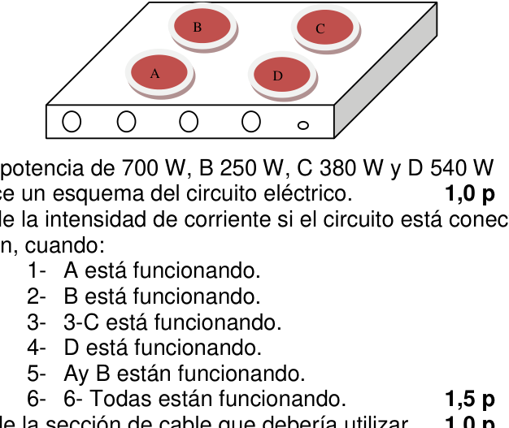
Topic: Gravitation, Fluid Mechanics Metodi: Newton’s Law of Gravitation, Hydrostatic Equilibrium, Simple Harmonic Motion Analysis Competenze: Physical Reasoning Objects: Planet, Satellite Fonte: Testo (PDF) — p.3
Scoprire un nuovo pianeta
PT87. - Buona erba, Tucumán. Blu.
Scoprire un nuovo pianeta
Una nave spaziale è arrivata su un pianeta che sembra avere condizioni simili a quelle di…
la terra. Una volta atterrati, iniziano a indagare, e decidono.
La densità di questa è determinata, dopo diverse misurazioni si arriva a
verificare che la densità è pari a 4935 kg/m3 e che il raggio medio di
pianeta equivale a 4.27 . 106 m. Vi chiediamo di:
a) calcolare la massa del pianeta.
b) Calcolare l’accelerazione della gravità.
Calcola il peso che avresti su quel pianeta .
Poi si procede all’analisi della composizione dell’atmosfera e si rivela che è appropriata.
per la vita, la densità è stata rilevata a 1,05 kg/m3 (quasi
Valore dell’atmosfera terrestre)
d) Che spinta ricevi dall’atmosfera se il tuo volume è approssimativo
0,07 m3
e) Su quel pianeta, fluttuerebbe, alzarsi o caderebbe? Giustifica
f) Calcola quanti globuli di elio di 1 litro di volume avresti bisogno per
Potete salire nell’atmosfera di quel pianeta con un’accelerazione di
0,1 m/s2 (densità del globo pieno di elio è di 0,1785 g/l)
Immaginate che il pianeta abbia una densità uniforme e possieda un tunnel che
attraversa il polo a polo attraverso il centro del suo centro. Un corpo che in
1 tonnellata di superficie è scaricata dal tunnel.
g) Calcola la forza di gravità a metà strada verso il centro e in
il centro.
h) Che movimento descriverebbe il corpo?
Si è osservato che possiede un satellite che orbita secondo la figura, e si chiede:
i) indicare quali punti saranno maggiori:
- la velocità .
- la forza di gravità
- l’accelerazione
- l’energia cinetica
- la quantità di movimento. Il file digitale della figura non è stato fornito dalla scuola.
OAF 2010 - 55
Topic: Gravitation, Fluid Mechanics Metodi: Newton’s Law of Gravitation, Hydrostatic Equilibrium, Simple Harmonic Motion Analysis Competenze: Physical Reasoning Objects: Planet, Satellite Fonte: Testo (PDF) — p.3
Discovering a new planet
PT87. It’s good grass, Tucumán. Blue, please.
Discovering a new planet .
A spacecraft arrived on a planet that appears to have similar conditions to Earth .
The earth. Once they land, they start investigating, and they decide.
The density of the sample is determined by several measurements.
Check that the density is 4935 kg/m3 and that the average radius of the
planet is equal to 4.27 . 106 m. We ask you to:
(a) calculate the mass of the planet.
(b) Calculate the acceleration of gravity.
(c) Calculate the weight you would have on that planet .
The atmosphere is then analysed and found to be suitable.
For life, the density was found to be equal to 1.05 kg/m3 (approximately
the value of the Earth’s atmosphere)
d) What is the pressure you get from the atmosphere if your volume is approximately
0,07 m3
(e) On that planet, would you float, rise or fall? It justifies it .
(f) Calculate how many helium balloons of 1 litre volume you would need to make it
You can rise into the atmosphere of that planet with an acceleration of
0,1 m/s2 (the density of the helium-filled balloon is 0,1785 g/l)
Imagine that the planet has a uniform density and has a tunnel that
It crosses from pole to pole through the centre of the same. A body that in the
1 tonne of surface area is dropped through the tunnel.
(g) Calculate the force of gravity at halfway to the centre and at
the center.
(h) What movement would describe the body?
It was observed that it possesses a satellite orbiting according to the figure, and it is asked:
(i) indicate which points will be higher:
- the speed .
- the force of gravity
- the acceleration
- the kinetic energy
- the amount of movement. The digital file for the figure was not provided by the school.
The following points shall be added:
Topic: Gravitation, Fluid Mechanics Metodi: Newton’s Law of Gravitation, Hydrostatic Equilibrium, Simple Harmonic Motion Analysis Competenze: Physical Reasoning Objects: Planet, Satellite Fonte: Testo (PDF) — p.3
Paneles Solares
PT88. Yerba Buena, Tucumán. Azul. Paneles Solares La energía del sol llega en forma de luz, calor y otras radiaciones. Podemos utilizar el calor, para cocinar, calentar agua, calefaccionar la casa, etc. La energía que llega del sol a la superficie de la tierra e muy poca y por eso si queremos aprovecharla, debemos recolectar en grandes superficies. Estas superficies están construidas con celdas fotoválticas que producen energía eléctrica a partir de la luz. Supongamos que estas celdas están construidas de titanio, la cual genera 1mA/cm2 y aproximadamente0,43V aprovechando el 10% de la energía que recibe del sol. a) Para formar un panel se conectan varias celdas, como las conectarías si se desea obtener una intensidad de corriente grande. Justifica b) Si cada panel tiene 1,2 m de largo y 30 cm de ancho, calcular cuantas celdas de 1 cm2 entrarían en la misma y que intensidad de corriente produciría cada una.
En las distintas zonas del país la energía proveniente del sol es distinta. En la ciudad de Tucumán, según investigaciones realizadas determinaron que el valor de la radiación solar promedio en Tucumán es de 10850 cal/ m² min, según estos datos determine: c) La cantidad de energía calórica que recolecta los paneles anteriores, si se acumula la energía durante 10 horas diarias. d) Calcular la cantidad de agua que se podría hervir después de haber recolectado durante un día dicha energía.
Queremos averiguar en una casa tipo cuanto se consume de energía eléctrica
durante la noche y para ello te ofrecemos la información de la siguiente tabla y
te pedimos completar y calcular el consumo en wh/noche
e)
Aparato
Horas de uso por
noche (h)
Consumo del
aparato (W)
Total (Wh/noche)
Heladera
700
Lavarropa
520
Lámparas (10)
60
Plancha
1000
Secador de pelo
500
Televisión
70
Computadora
300
Total
f) Calcular el número de paneles que serán necesario para cubrir el
consumo de esta casa.
g) Si estas celdas están fabricadas con silicio cuyo coeficiente de dilatación
lineal es de 0,4 . 10-6 1/°C y durante el día presenta en los paneles un
aumento de temperatura de 1600°K, Calcular la dilatación superficial de
la misma considerando que las celdas son circulares con un diámetro de
6cm.
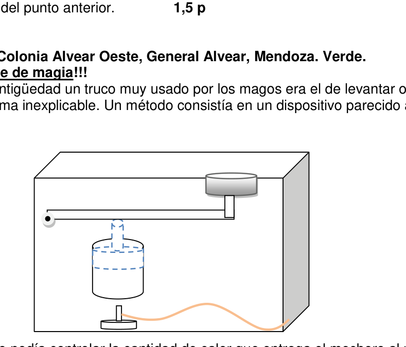
Topic: Circuits, Thermodynamics Metodi: Kirchhoff’s Laws, First Law of Thermodynamics Competenze: Physical Reasoning Objects: — Fonte: Testo (PDF) — p.3
Solar panels
PT88. - Buona erba, Tucumán. Blu. Panelli solari L’energia del sole arriva sotto forma di luce, calore e altre radiazioni. Possiamo utilizzare il calore, per cucinare, riscaldare l’acqua, riscaldare la casa, ecc. La L’energia che arriva dal sole alla superficie terrestre è molto piccola e quindi si Se vogliamo sfruttare, dobbiamo raccogliere su grandi superfici. - Sono queste. Le superfici sono costruite con cellule fotovoltaiche che producono energia. elettrica a partire dalla luce. Supponiamo che queste cellule siano costruite in titanio, che genera 1 mA/cm2 e circa 0,43V utilizzando il 10% dell’energia che riceve dal sole. a) Per formare un pannello vengono collegate diverse cellule, come le si collegerebbe se si desidera ottenere una grande intensità di corrente. Giustifica b) Se ogni pannello è lungo 1,2 m e largo 30 cm, calcolare quanti Celle di 1 cm2 entrerebbero nella stessa e che intensità di corrente produrrebbe ognuna di esse.
Le energie solari sono diverse nelle diverse zone del paese. En la La città di Tucumán, secondo le ricerche effettuate hanno determinato che il valore di La media di radiazioni solari a Tucumán è di 10850 cal/ m2 min, secondo i dati determinano: c) L’energia calorica raccolta dai pannelli precedenti, se l’energia si accumula per 10 ore al giorno. d) Calcolare la quantità di acqua che potrebbe essere bollita dopo aver avuto la sua energia raccolta in un giorno.
Vogliamo scoprire in una casa come quella quanto energia elettrica viene consumata.
durante la notte e per questo ti offriamo le informazioni della tabella seguente e
Vi chiediamo di completare e calcolare il consumo in wh/night
e)
Apparecchio
Orari di utilizzo per
notte (h)
Consumo di
apparecchio (W)
Total (Wh/noche)
-
Gelato.
700
Lavatorio
520
Lampade (10)
60
La piastra
1000
- Seccatore di capelli 500
Televisione
70
Computer
300
Total
f) Calcolare il numero di pannelli che saranno necessari per coprire il consumo di questa casa. g) Se queste cellule sono fabbricate con silicio il cui coefficiente di dilatazione lineare è di 0,4 . 10-6 1/°C e durante il giorno presenta sui pannelli un aumento di temperatura di 1600°K, calcolo della dilatazione superficiale di la stessa cosa considerando che le celle sono circolari con un diametro di 6cm.
Topic: Circuits, Thermodynamics Metodi: Kirchhoff’s Laws, First Law of Thermodynamics Competenze: Physical Reasoning Objects: — Fonte: Testo (PDF) — p.3
The following table shows the total number of solar panels used in the manufacture of solar panels:
PT88. It’s good grass, Tucumán. Blue, please. Solar panels The sun’s energy comes in the form of light, heat and other radiation. We can . use heat, for cooking, water heating, heating the house, etc. La The energy that comes from the sun to the earth’s surface is very little and so if We want to take advantage of it, we have to collect on large areas. These are Surfaces are built with photovoltaic cells that produce energy. electricity from light. Let’s say these cells are made of titanium, which generates 1mA/cm2 and approximately 0.43V using 10% of the energy It gets sunlight. (a) To form a panel, several cells are connected, such as those you would connect if the current intensity is high. It justifies it . (b) If each panel is 1.2 m long and 30 cm wide, calculate how many 1 cm2 cells would enter it and that current intensity I would produce each.
In different parts of the country, the energy from the sun is different. En la The city of Tucumán, according to research conducted determined that the value The average solar radiation in Tucumán is 10850 cal/ m2 min, according to the This data determines: (c) The amount of heat energy collected by the above panels, if It builds up energy for 10 hours a day. (d) Calculate the amount of water that could be boiled after the The energy collected during the day.
We want to find out in a house like this how much electricity is consumed .
We will provide you with the following information and
We ask you to complete and calculate consumption in wh/night
e)
The machine
Hours of use by
night (h)
Consumption of
The device (W)
Total (Wh/night)
Iced milk .
700
Washing clothes
520
Lamps (10)
60
The board .
1000
Hair dryer 500
Television
70
Computer .
300
Total
(f) Calculate the number of panels that will be needed to cover the consumption of this house. (g) If these cells are made of silicon with a coefficient of dilation Linear is 0.4 . 10-6 1/°C and during the day presents on the panels a temperature increase of 1600°K, Calculate the surface dilation of The same considering that the cells are circular with a diameter of 6cm.
Topic: Circuits, Thermodynamics Metodi: Kirchhoff’s Laws, First Law of Thermodynamics Competenze: Physical Reasoning Objects: — Fonte: Testo (PDF) — p.3
Los canones
PT89. Colonia Alvear Oeste, General Alvear, Mendoza. Verde. En el siglo XIX una de las armas principales de los ejércitos eran los cañones. Estos eran unos cilindros metálicos huecos abiertos en un extremo, por donde se
OAF 2010 - 56 introducía la pólvora y la bala, y tenían un orifico pequeño en el otro extremo, en donde se colocaba la mecha. Nuestro cañón utiliza balas de 5,0 kg y 8,0 kg y está dispuesto para realizar disparos de prueba con ángulos de 60 º y 45 º.
- Calcular la fuerza que se le aplica a cada bala para que salga con una
velocidad de 150 m/s, si tarda 0,15 s en salir del cañón.
1,5 p - Calcular la energía cinética que tiene cada bala al salir del cañón. 1,0 p
- Calcular la altura máxima que alcanzan las balas en ambas posiciones. 1,5 p
- Calcular la distancia a la que las balas hacen impacto con el piso suponiendo que éste es horizontal.
1,5 p 5) Calcule el ángulo de disparo para que el proyectil impacte en un blanco distante a 700 m del cañón. 1,5 p 6) ¿Con que velocidad inicial deberá salir la bala para que llegue a los 700 m con los ángulos antes mencionados? 1,5 p 7) Si la masa del cañón es de 500 kg, determine la velocidad con la que retrocede al efectuar un disparo a 45 º con una bala de 5,0 kg. 1,5 p
Topic: Newtonian Mechanics, Conservation of Momentum Metodi: Kinematic Equations, Conservation of Momentum Competenze: Physical Reasoning Objects: Projectile Fonte: Testo (PDF) — p.3
I cannoni
PT89. Colonia Alvear Ovest, generale Alvear, Mendoza. Verde. Nel XIX secolo una delle principali armi degli eserciti erano i cannoni. Questi erano cilindri metallici spazzatura aperta in un’estremità, da dove si
OAF 2010 - 56 Intrava la pistola e la pallottola, e avevano un piccolo orificio all’altra estremità, in dove si trovava la mazza. Il nostro cannone usa proiettili da 5,0 kg e 8,0 kg e… è disponibile per eseguire test a angoli di 60 o e 45 o.
- Calcolare la forza applicata a ogni proiettile per far uscire una. velocità di 150 m/s, se ci vogliono 0,15 s per uscire dal cannone. 1,5 p
- Calcolare l’energia cinetica di ogni proiettile quando esce dal cannone. 1,0 p
- Calcolare l’altezza massima raggiunta dalle pallottole in entrambe le posizioni. 1,5 p
- Calcolare la distanza a cui le pallottole colpiscono il pavimento Supponiamo che questo sia orizzontale.
1,5 p 5) Calcolare l’ angolo di lancio per far impattare il proiettile su un bersaglio Distante 700 metri dal cannone. 1,5 p 6) A che velocità iniziale deve uscire la pallottola per raggiungere i 700? m con gli angoli sopra menzionati? 1,5 p 7) Se la massa del cannone è di 500 kg, determinare la velocità con cui si ritira quando si fa un tiro a 45 o con una pallottola di 5,0 kg. 1,5 p
Topic: Newtonian Mechanics, Conservation of Momentum Metodi: Kinematic Equations, Conservation of Momentum Competenze: Physical Reasoning Objects: Projectile Fonte: Testo (PDF) — p.3
The guns
PT89. Colony Alvear West, General Alvear, Mendoza. He was a soldier. Green, please. In the 19th century, one of the main weapons of armies was cannon. These were hollow metal cylinders open at one end, where they were
The following points shall be added: I was just putting the gun and the bullet in, and they had a small hole at the other end, in. where the mesh was placed. Our cannon uses 5.0 kg and 8.0 kg bullets and is designed to perform test shots at angles of 60 o and 45 o.
- Calculate the force applied to each bullet to get out with one. speed of 150 m/s, if it takes 0.15 s to leave the canyon. 1,5 p
- Calculate the kinetic energy each bullet has when it leaves the cannon. 1,0 p
- Calculate the maximum height the bullets reach in both positions. 1,5 p
- Calculate the distance at which the bullets impact the floor assuming this is horizontal.
1,5 p 5) Calculate the angle of fire so that the projectile hits a target 700 meters from the canyon. 1,5 p 6) What initial speed must the bullet go out to reach 700? m with the aforementioned angles? 1,5 p 7) If the mass of the cannon is 500 kg, determine the speed at which Retreats when firing a 45-round shot or with a 5-pounder bullet. 1,5 p
Topic: Newtonian Mechanics, Conservation of Momentum Metodi: Kinematic Equations, Conservation of Momentum Competenze: Physical Reasoning Objects: Projectile Fonte: Testo (PDF) — p.3
Crisis energetica
PT90. Colonia Alvear Oeste, General Alvear, Mendoza. Verde.
Crisis energética
La gran demanda de energía en la actualidad, basada principalmente en el
aumento en el consumo, genera en distintas partes del mundo, la búsqueda de
alternativas económicas y ambientalmente aceptables. Es común en nuestros
días la utilización de energía eléctrica para cocinar alimentos, sobre todo en
lugares en donde el acceso al gas natural o envasado se hace difícil. Por este
motivo, la empresa E.A.S.A. ha dispuesto construir cocinas eléctricas
económicas que funcionan gracias al conocido efecto Joule. Después de un
estudio local de mercado, se decide que las cocinas tendrán cuatro hornallas y
que las mismas brindaran distintas cantidades de calor. Uno de los posibles
diseños presentados se muestra a continuación:
A posee una potencia de 700 W, B 250 W, C 380 W y D 540 W
- Realice un esquema del circuito eléctrico.
1,0 p 2) Calcule la intensidad de corriente si el circuito está conectado a 220 V de tensión, cuando: 1- A está funcionando.
2- B está funcionando. 3- 3-C está funcionando. 4- D está funcionando. 5- Ay B están funcionando. 6- 6- Todas están funcionando.
1,5 p 3) Calcule la sección de cable que debería utilizar. 1,0 p 4) Calcule la resistencia de cada hornalla.
1,5 p
5) Calcule la resistencia total de todo el circuito
1,0 p
6) Suponiendo que se desea calentar 1 L de aceite Ce = 0,47 cal/g ºC y
densidad 0,88 g/mL en un recipiente de 250 g de aluminio Ce = 0,22 cal/g
ºC. Calcular cuánto calor debe ceder la hornalla para llevar el sistema de
15 ºC hasta 250 ºC si solo el 80 % del calor es absorbido.
2,5 p
A
B
C
D
OAF 2010 - 57 7) Calcular el tiempo que tarda la hornalla A en entregar la cantidad de calor del punto anterior.
1,5 p
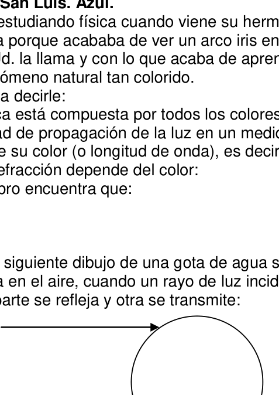
Topic: Circuits, Thermodynamics Metodi: Kirchhoff’s Laws, First Law of Thermodynamics Competenze: Physical Reasoning Objects: Resistor Fonte: Testo (PDF) — p.3
Crisis energetica
PT90. Colonia Alvear Ovest, generale Alvear, Mendoza. Verde. Crisi energetica La grande domanda di energia attuale, basata principalmente sul L’aumento del consumo, genera in diverse parti del mondo, la ricerca di le alternative economicamente e ambientali. È comune nei nostri. La produzione di energia elettrica per il cibo è stata molto diffusa. i luoghi in cui l’accesso al gas naturale o imballato diventa difficile. Per questo. La Commissione ha adottato una decisione che non prevedeva che l’impresa avrebbe dovuto essere oggetto di una decisione. ha voluto costruire cucine elettriche La nostra politica è quella di creare un mercato economico che funzioni grazie al noto effetto Joule. Dopo un’ora La Commissione ha adottato una decisione che prevede che le cucine possano avere quattro forni e che le stesse forniscono diverse quantità di calore. Uno dei possibili Le schede presentate sono illustrate di seguito:
A ha una potenza di 700 W, B 250 W, C 380 W e D 540 W
- Sviluppa un diagramma del circuito elettrico.
1,0 p 2) Calcolare l’intensità di corrente se il circuito è collegato a 220 V di tensione, quando: 1- A sta funzionando.
2-B sta funzionando. 3-3-C sta funzionando. 4-D sta funzionando. 5- Ay B stanno funzionando.
- 6 - 6 - funzionano tutti.
1,5 p 3) Calcola la sezione di cavo che dovresti usare. 1,0 p 4) Calcolare la resistenza di ogni forno.
1,5 p 5) Calcolare la resistenza totale dell’intero circuito 1,0 p 6) Supponendo che si desidera riscaldare 1 L di olio Ce = 0,47 cal/g oC e densità 0,88 g/mL in un recipiente di 250 g di alluminio Ce = 0,22 cal/g ºC. Calcolare quanto calore deve essere fornito dal forno per portare il sistema di 15 oC a 250 oC se solo l’80% del calore viene assorbito. 2,5 p A B C D
OAF 2010 - 57 7) Calcolare il tempo impiegato dal forno A per consegnare la quantità di calore di cui al punto precedente.
1,5 p
Topic: Circuits, Thermodynamics Metodi: Kirchhoff’s Laws, First Law of Thermodynamics Competenze: Physical Reasoning Objects: Resistor Fonte: Testo (PDF) — p.3
The Commission has also adopted a number of proposals for the establishment of a European Energy Agency.
PT90. Colony Alvear West, General Alvear, Mendoza. He was a soldier. Green, please. Energy crisis The current high energy demand, based mainly on the The research is based on the results of the study. economically and environmentally acceptable alternatives. It ‘s common in our . The use of electricity for cooking food, especially in the where access to natural gas or packaged gas becomes difficult. For this one . The Commission has not yet decided whether to proceed with the application of this Regulation. He ‘s willing to build electric kitchens . The effect is that the effect of Joule is not a factor. After a In the case of the local market study, it is decided that the kitchens will have four ovens and The same heat will be given to different amounts. One of the possible ones. The following designs are presented:
A has a power of 700 W, B 250 W, C 380 W and D 540 W
- Draw a diagram of the electrical circuit.
1,0 p 2) Calculate the current intensity if the circuit is connected to 220 V of voltage, when: 1-A is working.
2-B is working. 3-3-C is working. 4-D is working. 5-A-B’s working. 6-6. They’re all working.
1,5 p 3) Calculate the section of cable you should use. 1,0 p 4) Calculate the strength of each furnace.
1,5 p 5) Calculate the total resistance of the entire circuit. 1,0 p 6) Assuming that 1 L of oil is heated Ce = 0.47 cal/g oC and The following table shows the results of the calculation of the weight of the product: ºC. Calculate how much heat the oven must give to carry the system 15 oC to 250 oC if only 80% of the heat is absorbed. 2,5 p A B C D
The following points shall be added: 7) Calculate the time it takes the furnace A to deliver the amount of heat the previous point.
1,5 p
Topic: Circuits, Thermodynamics Metodi: Kirchhoff’s Laws, First Law of Thermodynamics Competenze: Physical Reasoning Objects: Resistor Fonte: Testo (PDF) — p.3
Por arte de magia
PT91. Colonia Alvear Oeste, General Alvear, Mendoza. Verde.
Por arte de magia!!!
En la antigüedad un truco muy usado por los magos era el de levantar objetos de
una forma inexplicable. Un método consistía en un dispositivo parecido al de la
figura.
El mago podía controlar la cantidad de calor que entrega el mechero al pistón gracias a una perilla colocada en la mesa, que regula la salida de gas. El cilindro en reposo tiene las siguientes características: Volumen 0,148 L, altura 11,7 cm, presión 1,2 atm, temperatura 20 ºC. El cilindro adquiere la presión máxima cuando el pistón alcanza los 25 cm de altura.
- Calcular la superficie del pistón.
1,5 p 2) Calcular el número de moles de gas dentro del cilindro en reposo.
1,5 p
3) Calcular el peso del dispositivo que soporta el pistón en
reposo, si el brazo de potencia posee 10 cm y el brazo de
resistencia 70 cm. Nota: Desprecie el peso de la barra. 2,5 p
4) Calcular el peso del objeto que el mago pone sobre el
soporte para que la presión sobre el pistón sea de 1,62 atm.
2,5 p
5) Calcular la temperatura que debe adquirir el cilindro para
que llegue a la altura máxima.
2,0 p
Topic: Thermodynamics, Rigid Body Statics Metodi: Ideal Gas Law, Torque & Angular Momentum Analysis Competenze: Physical Reasoning Objects: Gas, Piston, Lever Fonte: Testo (PDF) — p.3
Per magia
PT91. Colonia Alvear Ovest, generale Alvear, Mendoza. Verde. Per magia!!! In antichità un trucco molto usato dai maghi era quello di sollevare oggetti di in modo inspiegabile. Un metodo consisteva in un dispositivo simile a quello del
- Figura.
Il mago poteva controllare la quantità di calore che il macchinista consegnava al pistone grazie a un perello posto sul tavolo, che regola l’uscita di gas. Il cilindro a riposo ha le seguenti caratteristiche: volume 0,148 L, altezza 11,7 cm, pressione 1,2 atm, temperatura di 20 oC. Il cilindro acquista la pressione massima. quando il pistone raggiunge 25 cm di altezza.
- Calcolare la superficie del pistone.
1,5 p 2) Calcolare il numero di molli di gas all’interno del cilindro in Riposo.
1,5 p 3) Calcolare il peso del dispositivo che supporta il pistone in se il braccio di potenza è di 10 cm e il braccio di resistenza 70 cm. Nota: Sminuisci il peso della barra. 2,5 p 4) Calcolare il peso dell’oggetto che il mago mette sullo spettro. supporto per la pressione sul pistone di 1,62 atm. 2,5 p 5) Calcolare la temperatura che il cilindro deve acquistare per che raggiunga la massima altezza. 2,0 p
Topic: Thermodynamics, Rigid Body Statics Metodi: Ideal Gas Law, Torque & Angular Momentum Analysis Competenze: Physical Reasoning Objects: Gas, Piston, Lever Fonte: Testo (PDF) — p.3
By magic.
PT91. Colony Alvear West, General Alvear, Mendoza. He was a soldier. Green, please. By magic!!! In ancient times a trick widely used by magicians was to lift objects from the sky . In an unexplained way. One method consisted of a device similar to the It’s a figure.
The magician could control the amount of heat the plunger delivered to the piston . Thanks to a beam on the table, which regulates the gas outlet. The cylinder . At rest it has the following characteristics: volume 0,148 L, height 11,7 cm, pressure of 1,2 atm, temperature of 20 oC. The cylinder takes on maximum pressure. when the piston reaches 25 cm in height.
- Calculate the surface of the piston.
1,5 p 2) Calculate the number of gas moles inside the cylinder in I’m going to rest.
1,5 p 3) Calculate the weight of the device supporting the piston in rest, if the power arm has 10 cm and the power arm The resistance is 70 cm. Note: Disregard the weight of the bar. 2,5 p 4) Calculate the weight of the object that the magician puts on the support for pressure on the piston to be 1.62 atm. 2,5 p 5) Calculate the temperature to be acquired by the cylinder for It’s the highest. 2,0 p
Topic: Thermodynamics, Rigid Body Statics Metodi: Ideal Gas Law, Torque & Angular Momentum Analysis Competenze: Physical Reasoning Objects: Gas, Piston, Lever Fonte: Testo (PDF) — p.3
Trenes
PT92. Ciudad de San Luis. Azul.
Ud. va de visita a Buenos Aires a casa de su tía que vive en Quilmes. Para
llegar su tía le dice que debe tomar el tren de la línea Roca. Así lo hace
sentándose en el primer asiento del primer vagón. Cuando el tren abandona la
terminal y alcanza su velocidad máxima (120 km/hs según el reglamento colgado
en la pared) Ud. ve un tren de carga delante, que se mueve en el mismo sentido
y en la misma vía. En ese instante la locomotora del tren de pasajeros donde
Ud. va según sus cálculos está a 300 m de la parte trasera del tren de carga.
Observando el movimiento de ambos trenes Ud. calcula que la velocidad del
tren de carga es la mitad. Preocupado, le pregunta al guardia si sabía con que
rapidez máxima podía frenar el tren, a lo que él contestó: “0,5m/s/s, pero no se
preocupe (dijo mirando su cara de susto), los choferes están acostumbrados a
esto y no vamos a chocar”. Ud. recordando las clases de física y aún con la
OAF 2010 - 58
preocupación, comenzó a sacar cuentas y a hacer dibujos para calmar la
ansiedad.
a) Haga un esquema del problema planteado.
b) Si se desprecia el tiempo de reacción del conductor del tren de pasajeros,
los trenes chocan? Y si lo hacen ¿cual sería la velocidad del tren de
pasajeros en ese instante?
c) Y si el tiempo de reacción del chofer es de 0,5 s o de 1,5 s ¿que pasaría?
Y si chocaran en estas condiciones ¿cual sería la velocidad del tren de
pasajeros al momento de chocar?
d) Hacer una gráfica cualitativa o cuantitativa de posición tiempo para las
situaciones planteadas en (b) y (c).
e) ¿Cual es la conclusión de su análisis? ¿Tiene razón el guardia?
Topic: Newtonian Mechanics Metodi: Kinematic Equations Competenze: Physical Reasoning Objects: — Fonte: Testo (PDF) — p.3
**Tren **
PT92. Città di San Luis. Blu. Ud. va a visitare Buenos Aires a casa di sua zia che vive a Quilmes. Per Quando arriva sua zia, dice che deve prendere il treno della linea Rocca. Così lo fa. Si siede sul primo sedile del primo vagone. Quando il treno lascia la La velocità massima raggiunge la velocità massima (120 km/h secondo il regolamento di cui sopra
- sul muro. vede un treno di carico davanti, che si muove nella stessa direzione e sulla stessa strada. In quel momento la locomotiva del treno passeggeri dove Ud. Secondo i suoi calcoli, è a 300 metri dalla parte posteriore del treno di carico. Guardando il movimento di entrambi i treni, Calcola che la velocità di Il treno di carico è la metà. Preoccupato, chiede al guardia se sapeva con cosa La velocità massima poteva frenare il treno, a cui rispose: 0.5m/s, ma non si Preoccupatevi (ha detto guardando il suo volto spaventato), i conducenti sono abituati a Questo e non ci scontriamo. Ud. Ricordando le lezioni di fisica e ancora con la
OAF 2010 - 58 La preoccupazione, ha iniziato a fare le conti e a disegnare per calmare la situazione. Ansietà. a) Sviluppa un schema del problema. b) Se si disprezza il tempo di reazione del conducente del treno passeggeri, i treni si schiantano? E se lo fanno, quale sarebbe la velocità del treno di passeggeri in quel momento? c) E se il tempo di reazione del conducente fosse di 0,5 o 1,5 secondi cosa sarebbe successo? E se colpiscono in queste condizioni, quale sarebbe la velocità del treno di passeggeri al momento dell’incontro? d) Fare un grafico qualitativo o quantitativo della posizione del tempo per le situazioni di cui a (b) e (c). e) Qual è la conclusione della sua analisi? La guardia ha ragione?
Topic: Newtonian Mechanics Metodi: Kinematic Equations Competenze: Physical Reasoning Objects: — Fonte: Testo (PDF) — p.3
The following is the list of the Member States’ official languages:
PT92. City of St. Louis. Blue, please. Ud. She goes to visit her aunt in Quilmes. For Your aunt says you should take the Rock Line train. That ‘s how he does it . sitting in the front seat of the first car. When the train leaves the train The vehicle is capable of reaching a maximum speed of 120 km/h according to the regulations. On the wall. You see a freight train ahead, moving in the same direction. And in the same way. At that moment the passenger train locomotive where Ud. It’s 300 metres from the back of the freight train. By watching the movement of both trains you ‘re calculates that the speed of the The freight train is half. Worried, he asks the guard if he knew what to do with it. Maximum speed could stop the train, to which he replied: 0.5m/s, but it didn’t. “Don’t worry”, he said, looking at his face in a panic, “drivers are used to it”. This and we’re not gonna crash. Ud. Remembering physics classes and still with the
The following is the list of the Member States’ financial statements: He started to draw and do calculations to calm the situation. I’m worried. (a) Draw up a sketch of the problem. (b) If the reaction time of the driver of the passenger train is neglected, The trains collide? And if they do, what would the train speed be? passengers at that instant? (c) What if the driver’s reaction time is 0.5 or 1.5 seconds? And if they collided under these conditions, what would the speed of the train be? passengers at the time of the crash? (d) Draw a qualitative or quantitative time position chart for the situations referred to in (b) and (c). (e) What is the conclusion of your analysis? Is the guard right?
Topic: Newtonian Mechanics Metodi: Kinematic Equations Competenze: Physical Reasoning Objects: — Fonte: Testo (PDF) — p.3
Arco iris
PT93. Ciudad de San Luis. Azul. Ud. está sentado estudiando física cuando viene su hermanita de 12 años gritando de alegría porque acababa de ver un arco iris en el patio. Inmediatamente Ud. la llama y con lo que acaba de aprender sobre la luz intenta explicarle este fenómeno natural tan colorido. Así Ud. comienza a decirle:
la luz blanca está compuesta por todos los colores.
La velocidad de propagación de la luz en un medio como el agua depende de su color (o longitud de onda), es decir que lo que se llama índice de refracción depende del color: Buscando en su libro encuentra que: nrojo= 1,32986 nverde= 1,33580 nazul= 1,34009
Observa el siguiente dibujo de una gota de agua supuesta esférica suspendida en el aire, cuando un rayo de luz incide en la superficie de la gota, una parte se refleja y otra se transmite:
-Luego…
Complete la historia para explicar los colores del arco iris. Para esto analice el
camino óptico de la luz dentro de la esfera de agua (nagua=1,33 y naire=1)
Topic: Geometric Optics, Wave Optics Metodi: Snell’s Law, Ray Tracing Competenze: Physical Reasoning Objects: Droplet Fonte: Testo (PDF) — p.3
Arco pioggia
PT93. Città di San Luis. Blu. Ud. Sta seduto a studiare fisica quando arriva sua sorellina di 12 anni. Gridava di gioia perché aveva appena visto un arcobaleno nel cortile. Immediatamente tu. La fiamma e con quello che ha appena imparato sulla luce cerca di spiegargli questo fenomeno naturale così colorato. Così tu. inizia a dirgli:
la luce bianca è composta da tutti i colori.
La velocità di diffusione della luce in un mezzo come l’acqua Dipende dal suo colore (o lunghezza d’onda), cioè ciò che viene chiamato Indice di refraczione dipende dal colore: Cercando nel suo libro trova che: Rossa = 1.32986 nverde= 1,33580
- Il numero di persone che hanno un’attività di lavoro è di 1.34009 persone.
Guarda il seguente disegno di una goccia di acqua presunta sferica sospeso in aria, quando un raggio di luce colpisce la superficie della goccia, una parte si riflette e un’altra si trasmette:
- Poi… Completa la storia per spiegare i colori dell’arcobaleno. Per questo analizza il Il percorso ottico della luce all’interno della sfera d’acqua (nagua=1,33 e naire=1)
Topic: Geometric Optics, Wave Optics Metodi: Snell’s Law, Ray Tracing Competenze: Physical Reasoning Objects: Droplet Fonte: Testo (PDF) — p.3
The following table shows the results of the calculations:
PT93. City of St. Louis. Blue, please. Ud. He ‘s sitting there studying physics when his little sister comes in . I was shouting for joy because I had just seen a rainbow in the yard. You ‘ll be right there . The flame and what he just learned about the light tries I’ll explain this colorful natural phenomenon to you. So you. He starts to say:
white light is made up of all the colors.
The speed at which light propagates in a medium such as water It depends on its color (or wavelength), that is, what it is called refractive index depends on the color: Looking through his book he finds that: Red = 1,32986 The green is 1,33580 The number of people who are in the country is 1,34009.
See the following drawing of a supposed spherical water drop. suspended in the air when a beam of light hits the surface of the drop, one part is reflected and another is transmitted:
- Then… Complete the story to explain the colors of the rainbow. For this, analyze the Optical path of light within the water sphere (nagua=1.33 and naire=1)
Topic: Geometric Optics, Wave Optics Metodi: Snell’s Law, Ray Tracing Competenze: Physical Reasoning Objects: Droplet Fonte: Testo (PDF) — p.3
Montana rusa
PT94. Ciudad de San Luis. Azul. Un amigo suyo ha decidido emprender un nuevo negocio y construir una montaña rusa para instalarla en el parque de la ciudad. Para eso realizó el diseño mostrado en la figura 2. Si bien su amigo tiene algunos conocimientos básicos de física le llevó el diseño a Ud. para que lo ayude. La mayor preocupación de su amigo es Figura 1
OAF 2010 - 59
que este diseño cumpla con las normas de seguridad.
En el papel que le entregó su amigo decía:
“El carro cargado con su máximo peso tendrá una masa de 2000Kg. Como se
observa en el diseño el punto de partida de la bajada está a 22 m sobre el punto
A, la bajada de B a C tiene 120m de longitud y el tramo de C a D es de 100m.
En D se aplican los frenos parando el carro en E. La fuerza media de fricción
entre B y D es de 500N según los materiales a usar.”
a) Calcule el trabajo efectuado para levantar el carro hasta el punto más
alto.
b) La velocidad del carro en C y D
c) La fuerza media necesaria para frenarla en 15 m.
d) Haciendo un cálculo aproximado, el diseño ¿cumple en no superar una
aceleración de 4g (g=aceleración de la gravedad), valor límite impuesto
por las normas y soportable por el cuerpo humano en los distintos puntos
de la montaña?.
e) ¿Como cambiaría el análisis si el carro fuera más liviano y por qué?
Topic: Conservation of Energy, Newtonian Mechanics Metodi: Conservation of Energy, Free-Body Diagram Competenze: Physical Reasoning Objects: Cart Fonte: Testo (PDF) — p.3
Il progetto di progetto è stato pubblicato su www.mc.org.
PT94. Città di San Luis. Blu. Un suo amico ha deciso di intraprendere un nuovo business e costruirlo. Un’auto da montaggio per la montagna Il parco della città. Per questo . Ha realizzato il disegno mostrato in Figura 2. Anche se il suo amico ha alcune conoscenze di base La fisica ha portato il design a te.
- Per aiutarlo. La più grande . La preoccupazione del suo amico è Figura 1
OAF 2010 - 59 che questo disegno rispetti le norme di sicurezza. Il documento che gli ha dato il suo amico diceva: Il carro caricato con il suo peso massimo avrà una massa di 2000 kg. Come si fa osserva nel disegno il punto di partenza della discesa è a 22 m dal punto A, la discesa da B a C è lunga 120 m e la trama da C a D è di 100 m. In D si applicano i freni fermando il carro in E. La forza media di attrito tra B e D è di 500N a seconda dei materiali da usare. a) Calcolare il lavoro svolto per sollevare il carro fino al punto più alto.
- Alzate! b) La velocità del carro in C e D c) La forza media necessaria per frenare il freno a 15 m. d) Nel calcolo approssimativo, la progettazione non supera un Accelerazione di 4g (g=acelerazione della gravità), limite imposto La normalità e il corpo umano sono sopportabili in ogni punto. della montagna? e) Come cambierebbe l’analisi se il carro fosse più leggero e perché?
Topic: Conservation of Energy, Newtonian Mechanics Metodi: Conservation of Energy, Free-Body Diagram Competenze: Physical Reasoning Objects: Cart Fonte: Testo (PDF) — p.3
The Commission shall adopt implementing acts in accordance with Article 21 of this Regulation.
PT94. City of St. Louis. Blue, please. A friend of yours has decided to start a new business and build one. The train to install it on The city park. That ‘s what it ‘s for . He did the design shown in the The following table shows the following: Although your friend has Some basic knowledge Physics brought you the design. to help him. The biggest . Your friend ‘s concern is Figure 1
The following is the list of the Member States’ financial statements: that this design complies with safety standards. In the paper his friend gave him , it said: The maximum weight of the loaded carriage shall be 2000 kg. As you are observes in the design the starting point of the descent is 22 m above the point A, the descent from B to C is 120m long and the stretch from C to D is 100m. In D the brakes are applied by stopping the car in E. The mean friction force between B and D is 500N depending on the materials to be used. (a) Calculate the work done to lift the car to the highest point.
- Shut up. (b) The speed of the car in C and D (c) The average braking force required at 15 m. (d) By making an approximate calculation, does the design satisfy itself not to exceed a The acceleration of 4g (g=gravity acceleration), the limit value imposed The human body is not only capable of supporting the human body in the various areas. From the mountain? (e) How would the analysis change if the car were lighter and why?
Topic: Conservation of Energy, Newtonian Mechanics Metodi: Conservation of Energy, Free-Body Diagram Competenze: Physical Reasoning Objects: Cart Fonte: Testo (PDF) — p.3
PT95. General Acha, La Pampa. Verde.
Dos estudiantes de física hace distintas experiencias de caída libre y tiro vertical;
(sin tener en cuenta el rozamiento del aire) con dos pelotitas de tenis, una tirada
desde una altura de 250mts y otra desde el suelo mediante una maquina lanza
pelotas de tenis
1era Experiencia:
Se lanza una de las pelotitas desde el piso con una velocidad de 150 m/s y al
mismo tiempo de deja caer desde arriba la otra pelotita
A) ¿Cuanto tardan en cruzarse?
B) ¿A que altura se cruzan con respeto al piso?
2 Experiencia:
A) con que velocidad tendremos que lanzar la pelota del piso para que
llegue hasta la mitad de la altura y con que velocidad tiraran la de
arriba para que se encuentren al mismo tiempo
B) con que velocidad llegaran al piso las pelotas
3 Experiencia:
A) con que velocidad tendrán que lanzar desde el suelo la pelotita hacia
arriba para que las dos caigan con la misma velocidad y la de arriba
cuanto tiempo mas tarde tendrán que tirarla para que lleguen juntas al
mismo tiempo.
Sabiendo que la pelotita de abajo es 500 g. y la de arriba es de 400g. Determinar
la energía cinética Max y potencial Max ; la energía de cada una en el encuentro
de la segunda experiencia
Topic: Newtonian Mechanics, Conservation of Energy Metodi: Kinematic Equations, Conservation of Energy Competenze: Physical Reasoning Objects: Ball Fonte: Testo (PDF) — p.3
PT95. Generale Acha, La Pampa. Verde. Due studenti di fisica fanno diverse esperienze di caduta libera e tiro verticale; (senza tenere conto del ruggine dell’aria) con due palline di tennis, una tirata Da un’altezza di 250 metri e dall’altro dal suolo con una lancia. palle da tennis 1° esperienza: Una delle palline viene lanciata dal pavimento a una velocità di 150 m/s e al Allo stesso tempo, lascia cadere dall’alto l’altra palla. A) Quanto tempo ci vuole per attraversare? B) A che altezza si incrociano con rispetto per il pavimento? 2 Esperienza: A) a che velocità dovremo lanciare il pallone dal pavimento per farlo Arrivo a metà di altezza e con quale velocità tirare la di
- Si ’ , sono in piedi per stare insieme . B) la velocità con cui le palle arrivano al pavimento 3 Esperienza: A) a che velocità dovranno lanciare dal suolo la palla verso il
- E ’ un’altra cosa . - Si ’ , si ’ . Quanto tempo dopo dovranno buttarla fuori per arrivare insieme al
- lo stesso tempo. Sapendo che la palla sotto è di 500 g. E quella di sopra è di 400 grammi. Determinare l’ energia cinetica Max e il potenziale Max; l’ energia di ciascuna in incontro della seconda esperienza
Topic: Newtonian Mechanics, Conservation of Energy Metodi: Kinematic Equations, Conservation of Energy Competenze: Physical Reasoning Objects: Ball Fonte: Testo (PDF) — p.3
PT95. General Acha, the Pampa. Green, please. Two physics students do different free-fall and vertical shooting experiences. (without taking into account the air glitter) with two tennis balls, one roll. From a height of 250mts and another from the ground by a spear-throwing machine. Tennis balls . First experience: One of the balls is thrown from the floor at a speed of 150 m/s and at the Same time as dropping the other ball from above. A) How long does it take to cross? (b) How high do they cross with respect to the floor? 2 Experience: A) how fast we ‘re gonna have to throw the ball from the floor so that I’m going to get to half the height and how fast they’re going to pull the trigger. Upstairs so they can be together at the same time B) how fast the balls hit the floor 3 Experience: (a) at what speed they will have to throw the ball from the ground towards the ground Up so they both fall at the same speed as the one above. How much later will they have to throw it away to get together at the At the same time. Knowing that the ball down there is 500 g. And the one above is 400g. Determine The kinetic energy Max and potential Max; the energy of each in the encounter The second experience
Topic: Newtonian Mechanics, Conservation of Energy Metodi: Kinematic Equations, Conservation of Energy Competenze: Physical Reasoning Objects: Ball Fonte: Testo (PDF) — p.3
PT96. General Acha, La Pampa. Verde.
Un calorímetro de cobre con masa igual a 50 g contiene 250 g de agua a 100 °C.
Un cuerpo de aluminio a la temperatura de 10 °C se coloca en el interior del
calorímetro. El calor específico del cobre es c Cu = 0,094 cal /g °C y el de
aluminio es c Al = 0,22 cal /g °C. Sabiendo que la temperatura de equilibrio es 50
°C.
a) ¿Cuál es la masa del cuerpo de aluminio (aproximadamente)?.
b) si en lugar de aluminio colamos hierro cual será la masa necesaria
para mantener el equilibrio (Cfe= 0,114cal/gºC)
c) si la temperatura de equilibrio fuese de 80º C ¿cual será la masa del
cobre?
OAF 2010 - 60 d) si la masa del aluminio fuese el doble ¿Cuál es la temperatura de equilibrio?
Topic: Thermodynamics Metodi: First Law of Thermodynamics Competenze: Physical Reasoning Objects: Calorimeter Fonte: Testo (PDF) — p.3
PT96. Generale Acha, La Pampa. Verde. Un calometro di rame di massa pari a 50 g contiene 250 g di acqua a 100 °C. Un corpo di alluminio a temperatura 10 °C è collocato all’interno del caloriometro. Il calore specifico del rame è c Cu = 0,094 cal / g °C e quello di Aluminium è c Al = 0,22 cal / g °C. Sapendo che la temperatura di equilibrio è di 50 °C. a) Qual è la massa del corpo di alluminio (circa)?. b) se invece di alluminio si incolla ferro quale sarà la massa necessaria per mantenere l’equilibrio (Cfe= 0,114 cal/goC) (c) se la temperatura di equilibrio fosse di 80°C, quale sarà la massa del copro?
OAF 2010 - 60 d) se l’alluminio avesse il doppio di massa, qual è la temperatura di equilibrio?
Topic: Thermodynamics Metodi: First Law of Thermodynamics Competenze: Physical Reasoning Objects: Calorimeter Fonte: Testo (PDF) — p.3
PT96. General Acha, the Pampa. Green, please. A copper calorimeter with a mass equal to 50 g contains 250 g of water at 100 °C. An aluminium body at 10 °C is placed inside the The heat meter. The specific heat of copper is c Cu = 0.094 cal /g °C and the heat of Aluminium is c Al = 0,22 cal /g °C. Knowing that the equilibrium temperature is 50 °C. (a) What is the mass of the aluminium body (approximately) ? (b) if instead of aluminium we put iron what will be the necessary mass The following table shows the results of the calculation of the weighted average weight of the product: (c) if the equilibrium temperature was 80°C, what will be the mass of the
- What?
The following points shall be added: (d) if the mass of aluminium was doubled What is the temperature of What’s the balance?
Topic: Thermodynamics Metodi: First Law of Thermodynamics Competenze: Physical Reasoning Objects: Calorimeter Fonte: Testo (PDF) — p.3
PT97. General Acha, La Pampa. Verde. Sabiendo que la potencia que entrega la fuente es de 660 w y la caída de tensión en los puntos a y b es de 60 volt
Determinar R faltante
Potencia entregada en cada una de las resistencias
Para R sea cero de cuanto tendríamos que agregar una resistencia en la otra rama
Si la R de 20 ohms fuera el doble de cuanto tendría que ser R
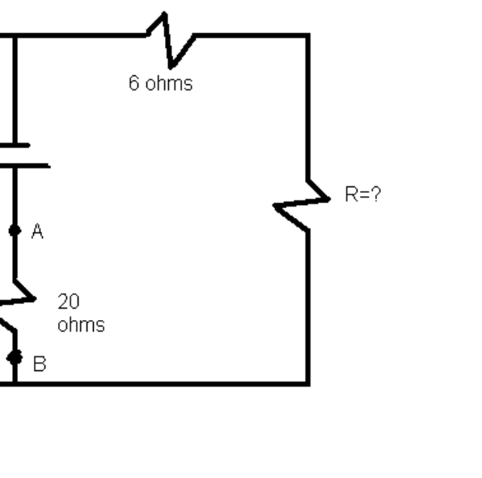
Topic: Circuits Metodi: Kirchhoff’s Laws, Equivalent Circuit Reduction Competenze: Physical Reasoning Objects: Resistor Fonte: Testo (PDF) — p.3
PT97. Generale Acha, La Pampa. Verde. Sapendo che la potenza che la fonte fornisce è di 660 w e la caduta di La tensione a e b è di 60 volt
Determinare R mancante
Potenza consegnata in ciascuna resistenza
Per R essere zero di quanto dovremmo aggiungere una resistenza alla Un altro ramo
Se la R di 20 ohms fosse il doppio di quanto dovrebbe essere R
Topic: Circuits Metodi: Kirchhoff’s Laws, Equivalent Circuit Reduction Competenze: Physical Reasoning Objects: Resistor Fonte: Testo (PDF) — p.3
PT97. General Acha, the Pampa. Green, please. Knowing that the power supply is 660 w and the drop of The voltage at points a and b is 60 volts
Determine the missing R
Power delivered at each of the resistors
For R to be zero of how much we would have to add a resistance to the another branch
If the R of 20 ohms was twice what it would have to be R
Topic: Circuits Metodi: Kirchhoff’s Laws, Equivalent Circuit Reduction Competenze: Physical Reasoning Objects: Resistor Fonte: Testo (PDF) — p.3
Boleadoras
PT98. Olivos, Buenos Aires. Azul.
Un gaucho está intentando cazar un ñandú utilizando sus boleadoras. En este
caso supondremos que las boleadoras consisten sólo en una bola maciza de 0.5
kg atada de un hilo de longitud 1.2 m. El ñandú es descubierto cuando esta a
una distancia de 8 m del gaucho, y cuando este comienza a girar las boleadoras,
el ñandú comienza a correr en dirección opuesta, con una aceleración de 4 m/s2.
El gaucho gira las boleadoras durante 2 segundos, cuando alcanza a girarlas a
una frecuencia de 4 Hz y las suelta, con un ángulo de 30 ° respecto de la
horizontal.
a) Suponiendo que el ñandú tiene una altura de 2 m, determinar si las
boleadoras impactarán al ñandú en algún lugar de su cuerpo, y en ese
caso calcular la altura de impacto.
b) Según la respuesta encontrada en el punto a, determine un rango de
ángulos apropiados para el lanzamiento.
c) Si el hilo de las boleadoras tiene un diámetro de 2 cm, determinar el
esfuerzo en el hilo (la presión que soporta el hilo)
Topic: Rotational Dynamics, Newtonian Mechanics Metodi: Kinematic Equations, Torque & Angular Momentum Analysis, Stress-Strain Analysis Competenze: Physical Reasoning Objects: Ball, String, Projectile Fonte: Testo (PDF) — p.3
Boleatori
PT98. Olivos, Buenos Aires. Blu. Un gaucho sta cercando di cacciare un nandú usando i suoi volanti. In questo . Supponiamo che le palline siano composte solo da una palla massiccia di 0,5 kg legato a un filo di lunghezza di 1,2 m. Il Nandu è scoperto quando è a una distanza di 8 metri dal gaucho, e quando questo inizia a girare le motosecce, il ñandú inizia a correre nella direzione opposta, con un’accelerazione di 4 m/s2. Il gaucho gira le motori per 2 secondi, quando riesce a girarle a una frequenza di 4 Hz e le frecce, con un angolo di 30 ° rispetto alla
- L’orizzontale. a) Supponendo che il nandu abbia una altezza di 2 m, determinare se le I volanti colpiranno il Nandu da qualche parte del corpo, e in quel momento per calcolare l’altezza dell’impatto. b) Sulla base della risposta trovata al punto a, determinare un range di angoli appropriati per il lancio. c) Se il filo dei motori ha un diametro di 2 cm, determinare il tensione sul filo (la pressione che il filo sopporta)
Topic: Rotational Dynamics, Newtonian Mechanics Metodi: Kinematic Equations, Torque & Angular Momentum Analysis, Stress-Strain Analysis Competenze: Physical Reasoning Objects: Ball, String, Projectile Fonte: Testo (PDF) — p.3
The following table shows the number of units of the engine:
PT98. Olive trees, from Buenos Aires. Blue, please. A gaucho is trying to hunt a Nandu using his flyers. In this one . In this case, let’s assume that the bowlers consist only of a ball of 0.5 mass. kg bound by a thread of 1.2 m length. The Ndú is discovered when it is at A distance of 8 meters from the gauche, and when it starts to spin the scooters, The ñandú starts to run in the opposite direction, accelerating by 4 m/s2. The gauche rotates the drives for 2 seconds, when it reaches the point of rotating them to a frequency of 4 Hz and a release angle of 30 ° with respect to the horizontal. (a) Assuming that the ñandú is 2 m high, determine whether the Flyers will hit the Nandu somewhere on his body, and in that If the impact height is calculated. (b) According to the answer in point (a), determine a range of angles appropriate for launch. (c) If the thread of the scooters has a diameter of 2 cm, determine the Strength in the thread (the pressure the thread bears)
Topic: Rotational Dynamics, Newtonian Mechanics Metodi: Kinematic Equations, Torque & Angular Momentum Analysis, Stress-Strain Analysis Competenze: Physical Reasoning Objects: Ball, String, Projectile Fonte: Testo (PDF) — p.3
Aeroplano y campo magnetico
PT99. Olivos, Buenos Aires. Azul. Un aeroplano está volando con una velocidad de 900 km/h en forma perpendicular al campo magnético B cerca del Polo Norte de la Tierra, como se observa en la figura 2.1.
OAF 2010 - 61
Figura 2.1
Los extremos de las alas se indican con las letras P y S1 La distancia de punta a punta de las alas es L. Suponga un electrón en el ala metálica del avión ubicado en la posición indicada en la figura. a) Indique la dirección en la que el electrón experimentará una fuerza magnética (de Lorentz) dibujando el vector correspondiente. b) Si bien los electrones experimentan esta fuerza, mientras el avión viaja a velocidad constante, no se produce una corriente eléctrica entre las alas. Explique c) Derive una expresión para la diferencia de potencial inducido a través del wingspan2 d) Calcula la diferencia de potencial establecida entre esos extremos de las alas si el campo magnético de la Tierra en ese punto es de 8x10-5 T y el wingspan es de 35 m. e) Se establece un circuito, utilizando esta diferencia de potencial, para conectar el voltaje inducido a un reloj digital, de 0.4V 50mA. Si se puede suponer que la resistividad de las alas es similar a la resistividad del aluminio, de entre 2.65 a 2.82 × 10-8 Ω·m, estime un valor para la sección transversal de las alas y determine cuántos relojes pueden funcionar en el avión utilizando esta fuente de energía.
1 P y S (por port y starboard, en ingles, son terminos náuticos que refieren a los lados izquierdo y derecho (respectivamente) percibidos por una persona a bordo mirando hacia el frente. http://en.wikipedia.org/wiki/Port_and_starboard
2 Wingspan es un término usado para animales y aviones para referirse a la distancia entre las extremidades de las alas.
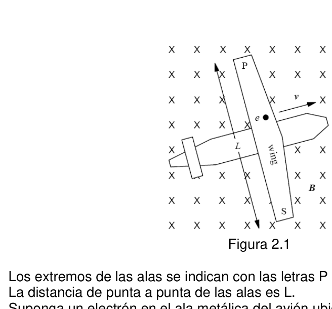
Topic: Electromagnetic Induction, Magnetism Metodi: Lorentz Force Analysis, Faraday’s Law of Induction Competenze: Physical Reasoning Objects: Wire, Electron Fonte: Testo (PDF) — p.3
Aeroplano e campo magnetico
PT99. Olivos, Buenos Aires. Blu. Un aereo vola a 900 km/h in forma perpendicolare al campo magnetico B vicino al Polo Nord della Terra, come si osserva in figura 2.1.
OAF 2010 - 61
Figura 2.1
Le estremità delle ali sono indicate con le lettere P e S1 La distanza da punta a punta delle ali è L. Supponiamo un elettrone nell’ala metallica dell’aeromobile collocato nella posizione indicata. nella figura. a) Indicare la direzione in cui l’elettrone sperimenterà una forza magnetico (di Lorentz) disegnando il vector corrispondente. b) Mentre gli elettroni sperimentano questa forza, mentre l’aereo viaggia a velocità costante, non si produce corrente elettrica tra le ali. Spiegate. c) Deriva un’espressione per la differenza di potenziale indotta attraverso
- La mia vita è stata un’esperienza di grande successo. d) Calcola la differenza di potenziale tra tali estremità delle se il campo magnetico della Terra a quel punto è di 8x10-5 T e il La larghezza delle ali è di 35 metri. (e) Si crea un circuito, utilizzando questa differenza di potenziale, per collegare la tensione indotta a un orologio digitale, di 0,4 V 50mA. Se potete Supponiamo che la resistenza delle ali sia simile alla resistenza del Alumini, da 2,65 a 2.82 × 10-8 Ω·m, stima un valore per il Sezione trasversale delle ali e determinare quanti orologi possono operare in aereo utilizzando questa fonte di energia.
1 P e S (per porto e starboard, in inglese, sono termini nautici che si riferiscono ai le parti destre e sinistra (rispettivamente) percepite da una persona a bordo
- Guardando in avanti. http://en.wikipedia.org/wiki/Port_and_starboard
2 Wingspan è un termine usato per animali e aerei per riferirsi alla Distanza tra le estremità delle ali.
Topic: Electromagnetic Induction, Magnetism Metodi: Lorentz Force Analysis, Faraday’s Law of Induction Competenze: Physical Reasoning Objects: Wire, Electron Fonte: Testo (PDF) — p.3
Aircraft and magnetic field
PT99. Olive trees, from Buenos Aires. Blue, please. An airplane is flying at a speed of 900 km/h in shape. perpendicular to the magnetic field B near the Earth’s North Pole, as it is The Commission has not yet taken any further action.
The following points shall be added:
Figure 2.1
The ends of the wings are indicated by the letters P and S1 The tip-to-tip distance of the wings is L. Suppose an electron in the metal wing of the aircraft is located at the indicated position. In the figure. (a) Indicate the direction in which the electron will experience a force magnetic (Lorentz) drawing the corresponding vector. (b) While electrons experience this force, while the plane travels to constant speed, no electric current is produced between the wings. Explain . (c) Derives an expression for the potential difference induced through the wingspan2 (d) Calculate the potential difference between these extremes of the Wings if the Earth’s magnetic field at that point is 8x10-5 T and the wingspan is 35 m. (e) A circuit is established using this potential difference for connect the induced voltage to a digital clock, of 0.4V 50mA. If you can . Assuming the resistivity of the wings is similar to the resistivity of the The value of the aluminium alloy, between 2.65 and 2.82 × 10-8 Ω·m, is estimated to be cross section of the wings and determine how many watches can operate on the plane using this power source.
1 P and S (for port and starboard, in English, are nautical terms referring to the Left and right sides (respectively) perceived by a person on board Looking forward. The following is a list of the main features of the port:
2 Wingspan is a term used for animals and aircraft to refer to the distance between the wing tips.
Topic: Electromagnetic Induction, Magnetism Metodi: Lorentz Force Analysis, Faraday’s Law of Induction Competenze: Physical Reasoning Objects: Wire, Electron Fonte: Testo (PDF) — p.3
Hemisferios de Magdeburgo
PT100. Olivos, Buenos Aires. Azul. Otto von Guericke (1602–1686) inventó la bomba de vacío y escribió un libro describiendo su invención y algunos experimentos posibles, “Experimenta nova Magdeburgica de vacuo spatio”, en 1672. Tal vez la más famosa de las anécdotas es la que se conoce como la de los hemisferios de Magdeburgo. En ella, 8 caballos a cada lado fueron necesarios para separar un par de hemiesferas de bronce, en la que Otto había producido primero un vacío con su invención. En las siguientes imágenes 3.1, 3.2 y 3.3 se observan las hemiesferas y una imagen representando la anécdota contada por Otto con los caballos o
OAF 2010 - 62 simuladas con personas tirando en direcciones opuestas intentando separar las hemiesferas (venciendo la presión atmosférica).
Figura 3.1 Esquema de los caballos tirando para separar los hemisferios de Magdeburgo
Figura 3.2 Los hemisferios de Magdeburgo
Figura 3.3 Imagen mostrando a dos niños intentando separar los hemisferios. a) Suponiendo que el radio de la esfera formada por ambos hemisferios sea de 25 cm, calcular la fuerza necesaria a cada lado para separar los hemisferios (Presión atmosférica: 101.3 KPa). b) En el caso de que los hemisferios sean separados por caballos, y suponiendo un coeficiente de fricción entre las herraduras de los caballos y el piso de µ= 0.3, estimar la masa de los caballos necesaria para poder separarlos.
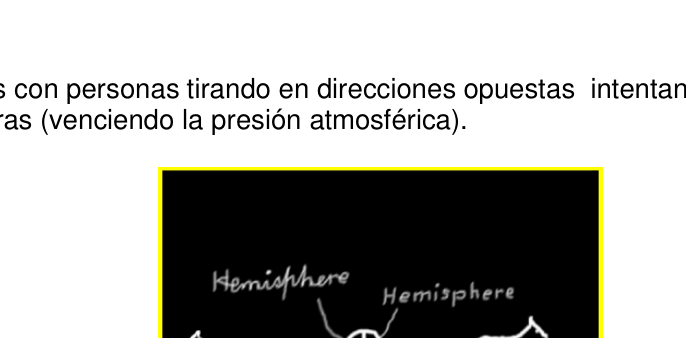
Topic: Fluid Mechanics, Newtonian Mechanics Metodi: Hydrostatic Equilibrium, Free-Body Diagram Competenze: Physical Reasoning Objects: Sphere Fonte: Testo (PDF) — p.3
Maggiburgo
PT100. Olivos, Buenos Aires. Blu. Otto von Guericke (16021686) inventò la bomba a vuoto e scrisse un libro. Descrivendo la sua invenzione e alcuni possibili esperimenti, Experimenta nova Magdeburgo di vuoto spazio, nel 1672. Forse l’anecdote più famosa è quella che viene conosciuta come quella dei L’emisfero di Magdeburgo. In essa, 8 cavalli a ogni lato erano necessari. per separare una coppia di emisfere di bronzo, in cui Otto aveva prodotto Prima un vuoto con la sua invenzione. Le immagini 3.1, 3.2 e 3.3 riportate di seguito mostrano le emisferi e un Immagine che rappresenta l’anecdote raccontata da Otto con i cavalli o
OAF 2010 - 62 simulate con persone che tirano in direzioni opposte cercando di separare le Emisferi (sconcertando la pressione atmosferica).
Figura 3.1 Schema dei cavalli che tirano per separare gli emisferi di Magdeburgo
Figura 3.2 Gli emisferi di Magdeburgo
Figura 3.3 Immagine che mostra due bambini Cercando di separare gli emisferi. a) Supponendo che il raggio di sfera formata da entrambi gli emisferi sia 25 cm, calcolare la forza necessaria a ciascun lato per separare i emisferi (pressione atmosferica: 101,3 KPa). b) Se le emisfere sono separate da cavalli, e Supponiamo un coefficiente di attrito tra le ferrate dei cavalli. e il piano di μ= 0.3, stimare la massa dei cavalli necessaria per poter separarli.
Topic: Fluid Mechanics, Newtonian Mechanics Metodi: Hydrostatic Equilibrium, Free-Body Diagram Competenze: Physical Reasoning Objects: Sphere Fonte: Testo (PDF) — p.3
The following is a list of the regions of the European Union:
PT100. Olive trees, from Buenos Aires. Blue, please. Otto von Guericke (16021686) invented the vacuum pump and wrote a book describing his invention and some possible experiments, Experimenta nova Magdeburg of vacuum space, in 1672. Perhaps the most famous of the anecdotes is the one known as the one of the The European Union is a member of the European Union. In it, 8 horses on each side were needed. To separate a pair of bronze hemispheres, in which Otto had produced First a void with his invention. In the following images 3.1, 3.2 and 3.3 the hemispheres and a Picture depicting the anecdote Otto told about the horses or
The following points shall be added: Simulated with people pulling in opposite directions trying to separate the two. The average temperature of the atmosphere is about 0.
Figure 3.1 Scheme of horses pulling for Separate the Magdeburg hemispheres
Figure 3.2 The Magdeburg hemispheres
Figure 3.3 Image showing two children Trying to separate the hemispheres. (a) Assuming that the radius of the sphere formed by both hemispheres is 25 cm, calculate the force required on each side to separate the The following is the list of the countries of the European Union: (b) In the event that the hemispheres are separated by horses, and Supposing a friction coefficient between the horses’ horseshoes and the floor of μ=0.3, estimate the mass of the horses needed to power separating them.
Topic: Fluid Mechanics, Newtonian Mechanics Metodi: Hydrostatic Equilibrium, Free-Body Diagram Competenze: Physical Reasoning Objects: Sphere Fonte: Testo (PDF) — p.3
PT101. Monteros, Tucumán. Azul. Un cilindro horizontal cerrado en un extremo y en el otro extremo con un pistón muy ligero de superficie S, tiene un mol de gas ideal a una temperatura T= 20ºC y una presión P= 1atm. La presión externa es constante e igual a P.
OAF 2010 - 63 Por medio de una resistencia R= 10 Ω , una cantidad de calor Q es transferida lentamente al gas. El gas se calienta, y en consecuencia a cierta presión que llamaremos “critica”, Pcrit el pistón se mueve. La fuerza de fricción F entre el pistón y las paredes del cilindro es constante; la mitad del calor generado por la fricción se transmite al gas. Se considera que tanto las paredes del cilindro como el pistón están aisladas térmicamente, y se desprecia la capacidad calorífica de ambas. Se pide:
- Calcule la presión critica (Pcrit) en función de la fuerza de fricción.
- Calcule la temperatura critica (Tcrit) correspondiente. Llamamos temperatura “critica” a aquella para la cual el pistón comienza a moverse.
- Suponiendo que la capacidad térmica del gas por mol C= Q/ T es una constante, calcule la cantidad de calor transferido (Qcrit) para que el pistón se mueva.
- Calcule la cantidad de calor Qfr que se transmite al gas por fricción.
- Calcule la cantidad de calor total transferido en ambos procesos.
- Si la resistencia R está conectada a una fuente de fem de E= 220 voltios, ¿cuánto tiempo deberá estar conectada la fuente para que empiece a moverse el pistón?
- Suponga que en el gas del sistema anterior se calienta con tres resistencias R = 10 Ω en paralelo, hasta que comience a moverse el pistón en 5 minutos. ¿En cuánto tiempo moverán el pistón las diferentes conexiones indicadas a continuación? Todas las resistencias son iguales.
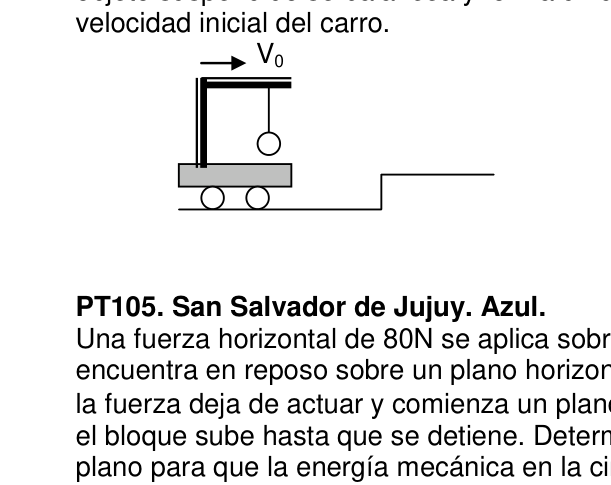
Topic: Thermodynamics, Circuits Metodi: Ideal Gas Law, First Law of Thermodynamics, Kirchhoff’s Laws Competenze: Physical Reasoning Objects: Gas, Piston, Resistor Fonte: Testo (PDF) — p.3
PT101. Monteros, Tucumán. Blu. Un cilindro orizzontale chiuso da un lato e dall’altro con un pistone. molto leggero di superficie S, ha un mol di gas ideale a una temperatura T= 20oC e una pressione P= 1atm. La pressione esterna è costante ed è pari a P.
OAF 2010 - 63 Con una resistenza R= 10 Ω , una quantità di calore Q viene trasferita lentamente al gas. Il gas si riscalda, e di conseguenza a una certa pressione che Chiameremo “critica”, Pcrit il pistone si muove. La forza di attrito F tra il Il piston e le pareti del cilindro sono costanti; la metà del calore generato dalla La frizione si trasmette al gas. Si ritiene che sia le pareti del cilindro che il pistone siano isolate. La capacità calorica di entrambi è sconsiderata. Si chiede:
- Calcolare la pressione critica (Pcrit) in base alla forza di attrito.
- Calcolare la temperatura critica (Tcrit) corrispondente. Chiamiamo . temperatura “critica” a quella per cui il pistone inizia a muoversi.
- Supponiamo che la capacità termica del gas per mol C= Q/T sia una Calcolare la quantità di calore trasferita (Qcrit) per il pistone
- Si muove.
- Calcola la quantità di calore Qfr che viene trasmessa al gas per frizione.
- Calcola la quantità totale di calore trasferita in entrambi i processi.
- Se la resistenza R è collegata a una fonte di fem di E= 220 volt, Quanto tempo deve essere connesso la fonte per iniziare a spostare il pistone?
- Supponiamo che il gas del sistema precedente si riscaldasse con tre resistenza R = 10 Ω in parallelo, fino a quando non comincia a muoversi il Piston in 5 minuti. Quanto tempo ci vorrà per spostare il pistone? le connessioni indicate di seguito? Tutte le resistenze sono uguali.
Topic: Thermodynamics, Circuits Metodi: Ideal Gas Law, First Law of Thermodynamics, Kirchhoff’s Laws Competenze: Physical Reasoning Objects: Gas, Piston, Resistor Fonte: Testo (PDF) — p.3
PT101. Monteros, Tucumán. What is it? Blue, please. A horizontal cylinder closed at one end and at the other end with a piston. very light surface S, has an ideal gas mole at a temperature T= 20oC and a pressure P=1atm. The external pressure is constant and equal to P.
The following points shall be added: By means of a resistance R= 10 Ω , a quantity of heat Q is transferred Slowly to the gas. The gas is heated, and consequently at a certain pressure that We’ll call it “criticism”, Pcrit the piston moves. The friction force F between the The piston and cylinder walls are constant; half the heat generated by the friction is transmitted to the gas. Both the cylinder and the piston walls are considered to be insulated. thermal, and the heat capacity of both is underestimated. It asks:
- Calculate the critical pressure (Pcrit) based on the friction force.
- Calculate the relevant critical temperature (Tcrit). We ‘ll call . The temperature is “critical” to the temperature at which the piston begins to move.
- Assuming the thermal capacity of the gas per mol C=Q/T is a constant, calculate the amount of heat transferred (Qcrit) for the piston It moves.
- Calculate the amount of Qfr heat transmitted to the gas by friction.
- Calculate the total amount of heat transferred in both processes.
- If the resistance R is connected to a fem source of E=220 volts, How long will the source be connected to start? move the piston?
- Suppose the gas in the previous system is heated by three R = 10 Ω resistance in parallel, until the starts moving Piston in five minutes. How long will the piston move the different ones? the connections indicated below? All resistance is the same.
Topic: Thermodynamics, Circuits Metodi: Ideal Gas Law, First Law of Thermodynamics, Kirchhoff’s Laws Competenze: Physical Reasoning Objects: Gas, Piston, Resistor Fonte: Testo (PDF) — p.3
PT102. Monteros, Tucumán. Azul.
Un muchacho tiene una pelota de masa m = 100 g atada al extremo de una
cuerda inextensible y sin masa que puede resistir una tensión máxima, teniendo
el otro extremo de la cuerda en su mano levantada por encima de la cabeza
hasta una altura h= 1,60 m sobre el suelo. Si hace girar la pelota en torno a él en
un plano horizontal:
a) Cuál debe ser la máxima longitud de la cuerda L1 para que, en este
movimiento, ni la pelota toque el suelo ni la cuerda se rompa.
b) Si el muchacho hace girar la pelota más enérgicamente de lo debido, la
cuerda se romperá ¿Para que longitud L2 de la cuerda el vuelo posterior
de la pelota alcanzará mayor distancia horizontal antes de tocar el suelo?
Suponiendo que la cuerda forma una ángulo α = 25º con la vertical,
elevando su altura:
c) ¿Cuál es la velocidad angular del muchacho?
d) ¿Qué velocidad adquiere la pelota?
e) ¿Cuánto se eleva del suelo la pelota?
f) ¿Cuál es la tensión en la cuerda cuando está en movimiento?
OAF 2010 - 64
Topic: Rotational Dynamics, Newtonian Mechanics Metodi: Free-Body Diagram, Kinematic Equations Competenze: Physical Reasoning Objects: Ball, String Fonte: Testo (PDF) — p.3
PT102. Monteros, Tucumán. Blu. Un ragazzo ha una palla di massa m = 100 g legata all’estremità di una una corda inestensibile e senza massa che può resistere a una tensione massima, avendo l’altra estremità della corda nella sua mano alzata sopra la testa fino ad un’altezza h= 1,60 m sul suolo. Se fa girare la palla intorno a lui in un piano orizzontale: a) Qual è la massima lunghezza della corda L1 per che, in questa movimento, la palla non tocca il pavimento e la corda non si rompe. b) Se il ragazzo gira la palla più forte del dovuto, la La corda si romperà per che L2 lunghezza della corda il volo successivo la palla raggiungerà una maggiore distanza orizzontale prima di toccare il terreno? Supponendo che la corda forma un angolo α = 25° con la verticale, Alzando la sua altezza: c) Qual è la velocità angolare del ragazzo? d) Che velocità acquista la palla? e) Quanto si alza la palla dal suolo? f) Qual è la tensione della corda quando è in movimento?
OAF 2010 - 64
Topic: Rotational Dynamics, Newtonian Mechanics Metodi: Free-Body Diagram, Kinematic Equations Competenze: Physical Reasoning Objects: Ball, String Fonte: Testo (PDF) — p.3
PT102. Monteros, Tucumán. What is it? Blue, please. A boy has a ball of mass m = 100 g tied to the end of a Unextended massless rope that can withstand maximum stress, having The other end of the rope in his hand raised above his head up to a height h=1.60 m above the ground. If he makes the ball spin around him in a horizontal plane: (a) What is the maximum length of the L1 string so that, in this Move, the ball doesn’t touch the ground, the rope doesn’t break. (b) If the boy turns the ball more vigorously than it should, the The rope will break so that the length of the rope L2 the later flight Will the ball reach greater horizontal distance before touching the ground? Assuming the string forms an angle α = 25° with the vertical, Raising its height: (c) What is the angular velocity of the boy? (d) How fast does the ball gain? (e) How high does the ball rise from the ground? (f) What is the tension on the rope when it is in motion?
The following points shall be added:
Topic: Rotational Dynamics, Newtonian Mechanics Metodi: Free-Body Diagram, Kinematic Equations Competenze: Physical Reasoning Objects: Ball, String Fonte: Testo (PDF) — p.3
PT103. Monteros, Tucumán. Azul. Un cilindro cerrado hueco, vacío de 50 cm de diámetro flota en el agua con 20 cm de su altura por encima del nivel de agua, cuando se suspende un bloque de hierro de 15 kg de su fondo.
Si el bloque se coloca ahora, dentro del cilindro,
- ¿Qué parte de la altura del cilindro se encontrará por encima de la superficie del agua?
- ¿Qué empuje recibe el conjunto?
Si en lugar de colocar dentro del cilindro el cubo de hierro, se agregan bolitas de plomo, 3) ¿Cuántos gramos de plomo se deben agregar al cilindro antes de que se hunda en el agua? (Suponer que el cilindro no tiene fugas cuando se cierra la tapa)
El cilindro cargado con 2 kg de bolitas de plomo flota verticalmente en el
agua y se lo hunde ligeramente para abandonarlo y dejarlo que oscile con
movimiento armónico simple.
4) ¿Cuál es el período del movimiento?
Datos:
densidad del hierro = 7,8 g / cc
masa cilindro = 0,5 Kg
altura cilindro = 60 cm
Topic: Fluid Mechanics, Oscillations & Waves Metodi: Hydrostatic Equilibrium, Simple Harmonic Motion Analysis Competenze: Physical Reasoning Objects: Cylinder, Block Fonte: Testo (PDF) — p.3
PT103. Monteros, Tucumán. Blu. Un cilindro chiuso vuoto e vuoto di 50 cm di diametro galleggia in acqua con 20 cm di altezza al di sopra del livello dell’acqua, quando si sospende un blocco di 15 kg di ferro dal fondo.
Se il blocco viene posto ora, all’interno del cilindro,
- Quale parte dell’altezza del cilindro si trova sopra la la superficie dell’acqua?
- Che impulso riceve l’insieme?
Se invece di mettere dentro il cilindro il cubo di ferro, si aggiungono di piombo, 3) Quanti grammi di piombo devono essere aggiunti al cilindro prima di che si immerge nell’acqua? (Suppone che il cilindro non abbia perdite) quando si chiude la copertura)
Il cilindro carico di 2 kg di palline di piombo galleggia verticalmente sul E poi lo affonda leggermente per lasciarlo andare e lasciarlo oscillare con un semplice movimento armonico. 4) Qual è il periodo di movimento? Datati: densità del ferro = 7,8 g / cc massa cilindrica = 0,5 Kg altezza cilindrica = 60 cm
Topic: Fluid Mechanics, Oscillations & Waves Metodi: Hydrostatic Equilibrium, Simple Harmonic Motion Analysis Competenze: Physical Reasoning Objects: Cylinder, Block Fonte: Testo (PDF) — p.3
PT103. Monteros, Tucumán. What is it? Blue, please. A hollow, empty closed cylinder 50 cm in diameter floats in water with 20 cm above water level when a block of iron 15 kg from its bottom.
If the block is placed now, inside the cylinder,
- What part of the cylinder height is above the the surface of the water?
- What is the momentum given to the set?
If instead of placing the iron cube inside the cylinder, they are added Lead balls, 3) How many grams of lead should be added to the cylinder before that sinks in the water? (Suppose the cylinder has no leaks) When the lid is closed)
The cylinder loaded with 2 kg of lead balls floats vertically on the Water and sink it slightly to leave it and let it swing with It’s a simple harmonic movement. 4) What is the period of movement? The data: The iron density is 7.8 g/cc. The mass of the cylinder = 0,5 Kg height of cylinder = 60 cm
Topic: Fluid Mechanics, Oscillations & Waves Metodi: Hydrostatic Equilibrium, Simple Harmonic Motion Analysis Competenze: Physical Reasoning Objects: Cylinder, Block Fonte: Testo (PDF) — p.3
PT104. San Salvador de Jujuy. Azul. 1- Un objeto de masa m cuelga de la parte superior de un carro mediante una cuerda de 1,2m de longitud. El carro y el objeto se mueven inicialmente hacia la derecha a velocidad constante v0 . El carro se detiene después de chocar y el objeto suspendido se balancea y forma un ángulo de 35 º , encuentre la velocidad inicial del carro.
V0
35º
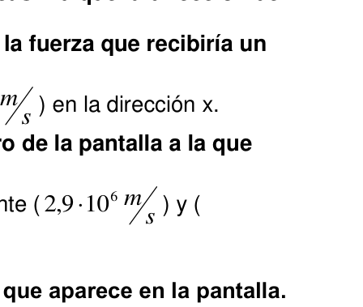
Topic: Conservation of Energy, Oscillations & Waves Metodi: Conservation of Energy, Simple Harmonic Motion Analysis Competenze: Physical Reasoning Objects: Cart, Pendulum Fonte: Testo (PDF) — p.3
PT104. San Salvatore di Jujuy. Blu. 1- Un oggetto di massa m si appende dalla parte superiore di un carrozzino mediante una corda di 1,2 metri di lunghezza. Il carro e l’oggetto si muovono inizialmente verso la
-
V0 a velocità costante . Il carro si ferma dopo il colpo e il L’ oggetto sospeso si balanza e forma un angolo di 35 o , trova la velocità iniziale della vettura.
V0
35º
Topic: Conservation of Energy, Oscillations & Waves Metodi: Conservation of Energy, Simple Harmonic Motion Analysis Competenze: Physical Reasoning Objects: Cart, Pendulum Fonte: Testo (PDF) — p.3
PT104. San Salvador de Jujuy. He is a saint. Blue, please. 1- An object of m mass hangs from the top of a wagon by means of a rope of 1.2m in length. The carriage and object initially move towards the straight at constant speed v0 . The car stops after the crash and the The suspended object is balanced and forms an angle of 35 o , find the the initial speed of the car.
V0
35º
Topic: Conservation of Energy, Oscillations & Waves Metodi: Conservation of Energy, Simple Harmonic Motion Analysis Competenze: Physical Reasoning Objects: Cart, Pendulum Fonte: Testo (PDF) — p.3
PT105. San Salvador de Jujuy. Azul. Una fuerza horizontal de 80N se aplica sobre un bloque de 4 kg que se encuentra en reposo sobre un plano horizontal liso. Luego de recorrer 2 metros la fuerza deja de actuar y comienza un plano inclinado rugoso ( = 0,2) donde el bloque sube hasta que se detiene. Determinar la longitud y la inclinación del plano para que la energía mecánica en la cima del plano sea la mitad de la energía mecánica al pie del mismo.
x
h
F
α
2m
OAF 2010 - 65
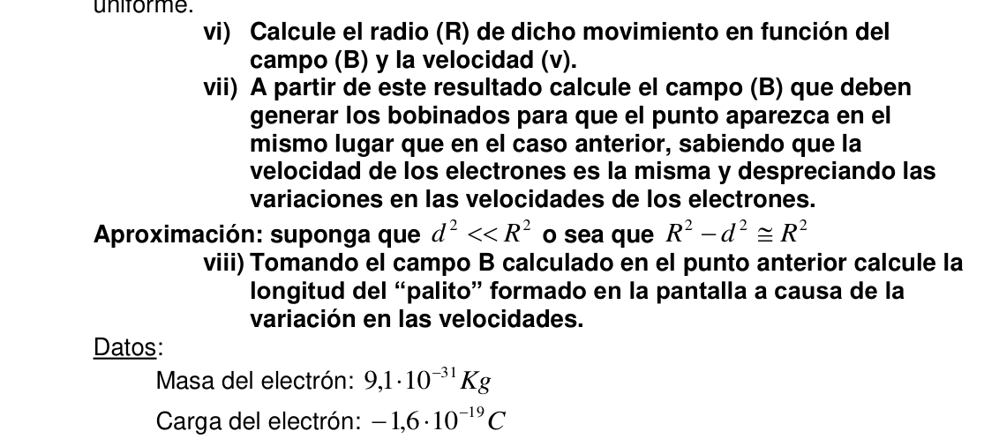
Topic: Newtonian Mechanics, Conservation of Energy Metodi: Free-Body Diagram, Conservation of Energy Competenze: Physical Reasoning Objects: Block, Inclined Plane Fonte: Testo (PDF) — p.3
PT105. San Salvatore di Jujuy. Blu. Una forza orizzontale di 80 N viene applicata su un blocco di 4 kg che si si trova a riposo su un piano orizzontale liscio. Dopo aver percorso 2 metri la forza smette di agire e inizia un piano inclinato rugoso ( = 0,2) dove il blocco si alza fino a quando non si ferma. Determinare la lunghezza e l’inclinazione del piano in modo che l’energia meccanica in cima al piano sia la metà di energia meccanica al suo fianco.
x
h
F
α
2m
OAF 2010 - 65
Topic: Newtonian Mechanics, Conservation of Energy Metodi: Free-Body Diagram, Conservation of Energy Competenze: Physical Reasoning Objects: Block, Inclined Plane Fonte: Testo (PDF) — p.3
PT105. San Salvador de Jujuy. He is a saint. Blue, please. A horizontal force of 80N is applied to a 4 kg block which is It rests on a smooth horizontal plane. After walking 2 meters. The force stops acting and begins a rough sloping plane ( = 0.2) where The block goes up until it stops. Determine the length and slope of the So the mechanical energy at the top of the plane is half the mechanical energy at the foot of it.
x
h
F
α
2m
The following points shall be added:
Topic: Newtonian Mechanics, Conservation of Energy Metodi: Free-Body Diagram, Conservation of Energy Competenze: Physical Reasoning Objects: Block, Inclined Plane Fonte: Testo (PDF) — p.3
PT106. San Salvador de Jujuy. Azul.
Tres cuerpos pequeños electrizados, con cargas q1, q2, y q3, están sobre una
mesa horizontal sin fricción. Estos cuerpos se encuentran en equilibrio en las
posiciones que se indican en la figura. Como la carga q2 = 1,5 . 10-6 C
determine:
a)
Los signos de q1 y q3
b)
El valor de estas cargas
d
d
q1
q2
q3
Topic: Electrostatics Metodi: Coulomb’s Law, Free-Body Diagram Competenze: Physical Reasoning Objects: Point Charge Fonte: Testo (PDF) — p.3
PT106. San Salvatore di Jujuy. Blu.
Tre piccoli corpi elettricati, con cariche q1, q2 e q3, sono sopra una
tavolo orizzontale senza attrito. Questi corpi sono in equilibrio nelle
le posizioni indicate nella figura. Come la carica q2 = 1,5 . 10-6 C
determinare:
a)
I segni di q1 e q3
b)
Il valore di queste cariche
d
d
q1
q2
q3
Topic: Electrostatics Metodi: Coulomb’s Law, Free-Body Diagram Competenze: Physical Reasoning Objects: Point Charge Fonte: Testo (PDF) — p.3
PT106. San Salvador de Jujuy. He is a saint. Blue, please.
Three small electrified bodies, with charges q1, q2, and q3, are on top of a
horizontal table without friction. These bodies are in balance in the
positions as shown in the figure. Like the charge q2 = 1.5 . 10-6 C
determine:
a)
The signs of q1 and q3
b)
The value of these charges
d
d
q1
q2
q3
Topic: Electrostatics Metodi: Coulomb’s Law, Free-Body Diagram Competenze: Physical Reasoning Objects: Point Charge Fonte: Testo (PDF) — p.3
Cientificos locos
PT107. Ciudad de Buenos Aires. Azul.
Unos científicos locos:
Un grupo de científicos disponen del siguiente dispositivo que les sirve para
verificar que se cumplan las condiciones de laboratorio que ellos desean.
El grupo necesita que un compartimiento (A) se mantenga una temperatura
T=283K y una presión P=1,1 ATM.
A estos fines montan un compartimiento aledaño (B) que inicialmente se
encuentra a la presión y temperatura que ellos desean en el compartimiento A.
Las paredes son relativamente gruesas
(considérelas adiabáticas), por lo que se
dispone de un embolo circular (r =10cm)
también adiabático en un hueco que se hace
especialmente entre los dos compartimientos.
El volumen de cada compartimiento es de
30 litros.
Inicialmente ambos compartimentos se encuentran a la presión y temperatura
deseadas.
i)
Cuantos moles de aire hay en cada compartimiento?.
Luego de hacer una experimento en el compartimiento A si bien la cantidad de
moles no cambia la presión baja a 1,05 ATM.
ii) Cuanto se movió el embolo?.
Ayuda:
En una transformación adiabática se cumple que:
cte
PV
donde para el aire =1,4 iii) A que temperatura están el compartimiento A y el B? Para que la temperatura vuelva a 283 K los cientificos prenden una estufa que esta dentro del compartimento A y que entrega una potencia de 10 W. iv) Sabiendo que en todo momento las presiones de ambos compartimientos son iguales?. Cuanto tiempo la tienen que dejar prendida para que la embolo vuelva a su lugar?. Prenden la resistencia y el embolo empieza volver al centro pero cuando se encuentra a 1 cm del centro queda trabado. Desde que el embolo se traba hasta que uno de los científicos se da cuenta que algo está pasando y apaga la estufa pasan 30 segundos v) Hasta que temperatura llegó el gas del compartimiento A? vi) Que fuerza está haciendo lo que esta trabando al embolo?.
Datos:
K
mol
l
ATM
R
082
,0
K mol J Cv 1, 21
Pa ATM 101300 1
A B
OAF 2010 - 66
Topic: Thermodynamics Metodi: Ideal Gas Law, First Law of Thermodynamics Competenze: Physical Reasoning, Mathematical Modeling Objects: Gas, Piston Fonte: Testo (PDF) — p.3
Scienziati pazzi
PT107. Città di Buenos Aires. Blu. Alcuni scienziati pazzi: Un gruppo di scienziati dispone del dispositivo che li aiuta a verificare che le condizioni di laboratorio che desiderano siano soddisfatte. Il gruppo ha bisogno che un compartimento (A) mantenga una temperatura. T = 283K e una pressione P = 1,1 ATM. Per questo motivo si monta un compartimento accanto (B) che inizialmente si trova la pressione e la temperatura che vogliono nel Compiuto A. I muri sono relativamente grossi . (considerate adiabatiche), quindi si ha un embolio circolare (r =10cm) anche adiabatic in un buco che si fa specialmente tra i due comparti. Il volume di ogni compartimento è di
- Trenta litri. Inizialmente entrambi i comparti sono a pressione e temperatura. Desiderate. i) Quanti molli d’aria ci sono in ogni comparto? Dopo aver fatto un esperimento nel compartimento A la quantità di le molle non cambiano la pressione bassa a 1,05 ATM. (ii) Quanto è stato spostato l’embolo? Aiuto: In una trasformazione adiabatica si ottiene che: Cte PV
dove per l’aria =1,4 iii) A che temperatura si trovano i compartimenti A e B? Per far tornare la temperatura a 283 K , gli scienziati mettono in piedi un stufa che è all’interno del compartimento A e fornisce una potenza di 10 W. iv) Sapendo che in ogni momento le pressioni di entrambi
- Le stanze sono uguali? Quanto tempo avete bisogno? lasciando acceso l’embolo per tornare al suo posto. Prendono la resistenza e l’embolo inizia a tornare al centro, ma quando si Se si trova a 1 cm dal centro, è bloccato. Da quando l’embolo si lavora fino a quando uno degli scienziati si rende conto che Qualcosa sta succedendo e spegne la stufa. Passa 30 secondi. v) Fino a che temperatura è arrivato il gas del compartimento A? Vi) Che forza sta facendo ciò che sta bloccando l’embolo?
Datati: K Mol l ATM R 082 ,0
K Mol J Cv 1, 21
Pa ATM 101300 1
A B
OAF 2010 - 66
Topic: Thermodynamics Metodi: Ideal Gas Law, First Law of Thermodynamics Competenze: Physical Reasoning, Mathematical Modeling Objects: Gas, Piston Fonte: Testo (PDF) — p.3
I’m not sure what I’m saying.
PT107. City of Buenos Aires. Blue, please. Some crazy scientists: A group of scientists have the following device that will help them to verify that the laboratory conditions they want are met. The group needs a compartment (A) to maintain a temperature T=283K and a P=1.1 ATM pressure. For these purposes they set up an adjoining compartment (B) which was initially Find the pressure and temperature they want in compartment A. The walls are relatively thick . (considered adiabatic), so they are has a circular embolism (r = 10cm) Also adiabatic in a gap that is made Especially between the two compartments. The volume of each compartment is
- It’s about 30 liters. Initially both compartments are at pressure and temperature. desired. i) How many moles of air are in each compartment? After doing an experiment in compartment A though the amount of The moles don’t change the low pressure to 1.05 ATM. (ii) How much was the embol moved? Help: In an adiabatic transformation, the following is fulfilled: The Commission PV
where for air =1.4 (iii) What temperature are compartments A and B? To get the temperature back to 283 K scientists put a stove that It’s inside compartment A and it delivers a power of 10 W. (iv) Knowing that at all times the pressures of both Are the compartments equal? How long do you have to ? Leave the ignition on so that the embossing is returned to its place. They take the resistance and the emboss begins to return to the center but when it is It’s a little over a centimeter from the center, it’s stuck. From the moment the embryos are worked up until one of the scientists realizes that Something ‘s happening and the stove goes out for 30 seconds . (v) How far did the gas from compartment A reach? (vi) What force is doing what is blocking the embolus?
The data: K Other l ATMs R 082 ,0
K Other J Cv 1, 21
Pa ATMs 101300 1
A B
The following points shall be added:
Topic: Thermodynamics Metodi: Ideal Gas Law, First Law of Thermodynamics Competenze: Physical Reasoning, Mathematical Modeling Objects: Gas, Piston Fonte: Testo (PDF) — p.3
Desviando electrones
PT108. Ciudad de Buenos Aires. Azul. Desviando electrones. Se pretende desviar un haz de electrones para que este choque contra una pantalla de fósforo y provoque un punto luminoso sobre la misma en un determinado lugar. Para esto se utiliza el siguiente sistema.
Donde las placas generan un campo eléctrico constante (E=43 V/m) entre ellas. También se puede considerar que el campo eléctrico en cualquier punto que no este entre las placas es nulo. i) Observando la polaridad de las placas indique la dirección del campo eléctrico (E). ii) Calcule la dirección y el modulo de la fuerza que recibiría un electrón ubicado entre las placas. Los electrones vienen con una velocidad ( s m v 6 10 3 ) en la dirección x. iii) Calcular a que distancia Y del centro de la pantalla a la que aparece el punto En realidad los electrones vienen con velocidades ente ( s m 6 10 9,2 ) y ( s m 6 10 1,3 ). iv) Calcular la longitud ΔY del “palito” que aparece en la pantalla. Esto no conforma a los diseñadores y deciden probar otra idea. Esta consiste en desviar los electrones mediante un campo magnético (B) en la dirección z generado por dos bobinados rectangulares. Este campo puede considerarse constante entre los bobinados o dentro de los mismos y nulo en cualquier otro punto.
v) Indique el sentido de las corrientes en los bobinados para que los electrones se desvíen hacia arriba (en la dirección Y).
OAF 2010 - 67 Cuando un electrón entra en una zona donde hay un campo magnético (B) con una velocidad (v) perpendicular al campo, este describe un movimiento circular uniforme. vi) Calcule el radio (R) de dicho movimiento en función del campo (B) y la velocidad (v). vii) A partir de este resultado calcule el campo (B) que deben generar los bobinados para que el punto aparezca en el mismo lugar que en el caso anterior, sabiendo que la velocidad de los electrones es la misma y despreciando las variaciones en las velocidades de los electrones. Aproximación: suponga que 2 2 R d o sea que 2 2 2 R d R
viii) Tomando el campo B calculado en el punto anterior calcule la longitud del “palito” formado en la pantalla a causa de la variación en las velocidades. Datos:
Masa del electrón: Kg 31 10 1,9
Carga del electrón: C 19 10 6,1
Topic: Electromagnetism, Magnetism Metodi: Lorentz Force Analysis, Kinematic Equations Competenze: Physical Reasoning Objects: Electron, Coil, Screen Fonte: Testo (PDF) — p.3
Sviando gli elettroni
PT108. Città di Buenos Aires. Blu. Sviazione di elettroni. Si intende deviare un fascio di elettroni per fargli colpire un’altra. schermo di fosforo e provocare un punto luminoso su di esso in un un luogo determinato. Per questo si utilizza il seguente sistema.
Dove le placche generano un campo elettrico costante (E=43 V/m) tra loro. Si può anche considerare che il campo elettrico in qualsiasi punto che non Questo tra le targhe è nulla. i) osservando la polarità delle placche indichi la direzione del campo elettrico (E). (ii) Calcolare l’indirizzo e il modulo di forza che un un elettrone tra le plache. Gli elettroni arrivano a una velocità ( s m v 6 10 3 ) all’indirizzo x. iii) Calcolare la distanza Y dal centro dello schermo a cui Il punto è In realtà gli elettroni vengono a velocità ente ( s m 6 10 9,2 ) y ( s m 6 10 1,3 ). (iv) Calcolare la lunghezza ΔY del pallido che appare sullo schermo. Questo non soddisfa i progettisti e decidono di provare un’altra idea. Questo consiste nel deviare gli elettroni con un campo magnetico (B) nella direzione z generata da due bobine rettangolari. Questo campo può Considerato costante tra o all’interno dei bobini e nulla in qualsiasi altro punto.
v) Indicare il senso dei correnti nei bobini per che gli elettroni si allontanino verso l’alto (in direzione Y).
OAF 2010 - 67 Quando un elettrone entra in una zona dove c’è un campo magnetico (B) con una velocità (v) perpendicolare al campo, questo descrive un movimento circolare Uniforme. (vi) Calcolare il raggio (R) di tale movimento in funzione del campo (B) e velocità (v). vii) A partire da questo risultato calcoli il campo (B) che deve generare i bobini per far apparire il punto sul La stessa situazione del caso precedente, sapendo che la La velocità degli elettroni è uguale e disprezza le variazioni delle velocità degli elettroni. Approximamento: supponiamo che 2 2 R d che significa che 2 2 2 R d R
viii) Prendendo il campo B calcolato nel punto precedente calcola la lunghezza del pallido formato sullo schermo a causa della variazione delle velocità. Datati:
Massa dell’elettrone: Kg 31 10 1,9
Carga dell’elettrone: C 19 10 6,1
Topic: Electromagnetism, Magnetism Metodi: Lorentz Force Analysis, Kinematic Equations Competenze: Physical Reasoning Objects: Electron, Coil, Screen Fonte: Testo (PDF) — p.3
The following is the list of the elements of the electron transport chain:
PT108. City of Buenos Aires. Blue, please. By deflecting electrons. It is intended to deflect an electron beam so that it will collide with a Matches screen and cause a bright spot over it in a a certain place. The following system is used for this purpose.
Where the plates generate a constant electric field (E=43 V/m) between them. It can also be considered that the electric field at any point that does not This one between the plates is zero. i) By observing the polarity of the plates indicate the direction of the electric field (E). (ii) Calculate the direction and the force modules that a force would receive. electron located between the plates. The electrons come with a velocity ( s m v 6 10 3 ) at the address x. (iii) Calculate the distance Y from the centre of the screen to which it is The point appears In fact, electrons come with ent speed ( s m 6 10 9,2 ) y ( s m 6 10 1,3 ). (iv) Calculate the ΔY length of the pallet shown on the screen. This doesn’t satisfy the designers and they decide to try another idea. This involves deflecting electrons by a magnetic field (B) at the direction z generated by two rectangular coils. This field can be considered constant between or within the coils and zero in any other point.
(v) Indicate the direction of the currents in the coils for The electrons are deflected upwards (in the Y direction).
The following is the list of the countries of the European Union: When an electron enters an area where there is a magnetic field (B) with a velocity (v) perpendicular to the field, this describes a circular motion uniform. (vi) Calculate the radius (R) of such motion in terms of the The field (B) and the speed (v). (vii) From this result calculate the field (B) that they must Generate the coils so that the point appears on the The same place as in the previous case, knowing that the The speed of the electrons is the same and disregarding the The electron velocity varies. Approximation: suppose that 2 2 R d That is to say 2 2 2 R d R
(viii) Taking the field B calculated in the previous point calculate the length of the pallet formed on the screen because of the the variation in speed. The data:
Mass of the electron: Kg 31 10 1,9
Electron charge: C 19 10 6,1
Topic: Electromagnetism, Magnetism Metodi: Lorentz Force Analysis, Kinematic Equations Competenze: Physical Reasoning Objects: Electron, Coil, Screen Fonte: Testo (PDF) — p.3
El Escape
PT109. Ciudad de Buenos Aires. Azul. El Escape. Un prisionero se encuentra encarcelado en un galpón de 20 m x 20 m rodeado completamente por agua, como se indica en la figura 1. La custodia en el lugar no es permanente y el recluso ha comenzado a imaginar un posible escape. Si bien las aguas que rodean la prisión están contaminadas y eso le impide escapar nadando, en el galpón hay una buena cantidad de herramientas y materiales que le pueden ser de utilidad en la búsqueda de su libertad. Una primera alternativa para el escape consiste en montar un puente en voladizo, como se indica en la figura 2. La tabla es homogénea, tiene 9 m de largo y 1000 N de peso. El recluso planea vincularla al piso del galpón en el punto A (de manera que pueda rotar alrededor de A), colocarla en posición vertical, sujetarla con una cuerda en el otro extremo y, poco a poco, inclinarla Galpón 20m x 20m
mar abierto tierra firme 10m 10m 10m N S E O Figura 1 cuerda tabla galpón tierra firme A B C 9m Figura 2
OAF 2010 - 68
hasta que quede horizontal. Finalmente, atará la cuerda en el punto C, caminará
sobre la tabla y, al llegar a B, saltará a tierra firme.
a) ¿Qué tensión debe poder soportar la cuerda para que el
prisionero, de 750 N, sea exitoso en su intento?
Supongamos por un momento que usted está en el lugar del prisionero y no
desea correr riesgos de fallar.
Decide entonces, poner a
prueba la resistencia de la
cuerda. Para ello se vale de un
aparejo disponible en el galpón y
de un cuerpo con un peso
rotulado de 200 N. Al armar el
sistema de la figura 3 advierte
que la cuerda no se rompe.
ii) ¿Considera usted
esta evidencia
suficiente como
para escapar en
forma segura a
través del puente en voladizo?
Una segunda alternativa consiste en escapar a través de botes improvisados con
los materiales disponibles: una caja de base rectangular y un barril cilíndrico. Las
dimensiones de la caja son: largo = 1m, ancho = 0,8m, alto = 0,4m. Las
dimensiones del barril son: radio = 0,3m, alto = 0,8m. El prisionero debe
decidirse por alguno de los siguientes “botes”: el que resulta de quitarle la tapa a
la caja o el que se obtiene cortando el barril al medio en la dirección longitudinal.
El peso de la caja sin tapa es 500 N y el del barril es 1800 N.
iii) Asumiendo que el peso específico del agua alrededor del
galpón es 10 N/dm3 , ¿por cuál de las opciones deberá optar
el recluso para no fracasar en el intento?
En caso de tomar la decisión correcta el prisionero deberá arreglárselas para
llegar a tierra firme y no terminar en mar abierto arrastrado por la corriente.
iv) Si el prisionero escapa por el punto medio del lado este de la
prisión, rema a 4 m/s hacia el este y el agua circula a 5 m/s
hacia el norte, ¿logrará llegar a tierra firme?
Una tercera y más arriesgada alternativa para el escape consiste en intentar
saltar los 10 m de agua. Para ello, el prisionero planea utilizar el sistema de la
figura 4. Se sujetará a un carrito en el punto A y dejará que la gravedad haga el
resto. El rozamiento entre el carrito y la plataforma puede despreciarse.
cuerpo de 20 kgf muestra de la cuerda Figura 3 7m 1m 45° A B galpón tierra firme Figura 4
OAF 2010 - 69 v) ¿Cuál es la velocidad con la que el recluso comenzaría el salto en el punto B? vi) ¿Lograría llegar a tierra firme con este método? vii) ¿A qué distancia de la “orilla” caería? viii) ¿Con qué velocidad impactaría sobre el agua/suelo? El agua está 1 m por debajo del nivel del suelo.
Topic: Rigid Body Statics, Fluid Mechanics Metodi: Torque & Angular Momentum Analysis, Hydrostatic Equilibrium, Conservation of Energy Competenze: Physical Reasoning Objects: Beam, String, Cart Fonte: Testo (PDF) — p.3
Il Gettinetto
PT109. Città di Buenos Aires. Blu. L’Escapamento. Un prigioniero è trovato. Incarcerato in un scaffale di 20 m x 20 m circondati completamente per acqua, come indicato in figura 1. La custodia in loco non è Il detenuto ha Ho iniziato a immaginare un possibile fuga. Anche se le le acque che circondano la prigione Sono contaminate e questo le dà Non può scappare nuotando, in Il scaffale è un buon numero di strumenti e materiali che possono essere utili per la sua ricerca della libertà. Una prima alternativa per l’escapamento consiste nel montare un ponte in a) la presenza di un’acciaio di contenuto di gas, La tabella è
- E’ omogeneo, ha 9 m di lunghezza e
- 1000 N di peso. El Il prigioniero pianifica
- Legare al pavimento. Il mio amico è stato preso dal mio amico. punto A (di
- Come posso? Rotare intorno a A) inserire in posizione verticale, La tenete con una . La corda sull’altra L’estremità e, poco a poco, inclinarla. Galpone 20m x 20m
mare aperto terra ferma 10m 10m 10m N S E O Figura 1
- La corda tabella Galleria terra ferma A B C 9m Figura 2
OAF 2010 - 68 finché non diventa orizzontale. Alla fine, legera’ la corda al punto C, camminera’. E quando arrivi a B, salterà sulla terraferma. a) Che tensione deve essere sopportata dalla corda per consentire alla Prisione, 750 N, è riuscito nel suo tentativo? Supponiamo per un momento che tu sia al posto del prigioniero e non vuole rischiare di fallire. Decidi allora, mettiti a prova la resistenza della
- La corda. Per questo vale una apparecchio disponibile sullo scaffale e di un corpo con un peso. di 200 N. - Quando si mette in piedi il Il sistema di figura 3 avverte che la corda non si rompa. (ii) Considerate che Questa prova abbastanza da Per scappare in
- in modo sicuro
- Attraverso il ponte in volano? Un’altra alternativa consiste nel fuggire attraverso barche improvvisate con i materiali disponibili: una cassa di base rettangolare e un barile cilindrico. Le Le dimensioni della scatola sono: lunghezza = 1 m, larghezza = 0,8 m, altezza = 0,4 m. Le dimensioni del barile sono: radio = 0,3 m, altezza = 0,8 m. Il prigioniero deve decidere su uno dei seguenti bot: la scatola o quella ottenuta tagliando il barile a metà nella direzione longitudinale. Il peso della scatola senza copertura è di 500 N e quello del barile è di 1800 N. iii) Supponendo che il peso specifico dell’acqua sia di circa Il gallo è 10 N/dm3, quale opzione deve scegliere? il prigioniero per non fallire nel tentativo? Se il prigioniero prende la decisione giusta, deve organizzarsi per Arrivare a terra ferma e non finire in mare aperto trascinato dal corrente. iv) Se il prigioniero scappa attraverso il punto medio del lato est della prigione, prigione, raggio a 4 m/s verso est e acqua circola a 5 m/s verso nord, riuscirà a raggiungere la terraferma? Un’alternativa più rischiosa per l’escapata è tentare di saltare 10 metri di acqua. Per questo, il prigioniero prevede di utilizzare il sistema di figura 4. Si attacca a un carrello al punto A e lascia che la gravità lo faccia.
- Il resto. Il raggio tra il carrello e la piattaforma può essere sprecato.
corpo di 20 kgf campione della corda Figura 3 7m 1m 45° A B Galleria terra ferma Figura 4
OAF 2010 - 69 V) Qual è la velocità con cui il detenuto inizierebbe il processo? Salto al punto B? vi) Riuscirebbe a raggiungere la terra ferma con questo metodo? 7) A che distanza dalla orella sarebbe caduta? Viii) A che velocità colpisce l’acqua/suolo? L’acqua E’ un metro sotto il livello del suolo.
Topic: Rigid Body Statics, Fluid Mechanics Metodi: Torque & Angular Momentum Analysis, Hydrostatic Equilibrium, Conservation of Energy Competenze: Physical Reasoning Objects: Beam, String, Cart Fonte: Testo (PDF) — p.3
The Escape
PT109. City of Buenos Aires. Blue, please. The Escape. A prisoner is found . Locked up in a shed of 20m x 20m surrounded completely by water, as shown in Figure 1. The custody on the spot is not The prisoner has a permanent and a prisoner has a permanent . I started to imagine a possible escape. Although the The waters surrounding the prison. They ‘re contaminated and that ‘s what you ‘re doing . It prevents you from escaping by swimming, in The shed is a good one . number of tools and materials that may be useful to you in your quest for freedom. A first alternative to escape is to build a bridge at the volume of the product is not less than 0,5% of the total volume of the product. The table is It is homogeneous. 9 m long and Weighs 1000 N. El The prisoner plans. Link it to the floor. The shelf in the point A (of I can ‘t . rotate around A) place it on vertical position, Hold her with a . Rope on the other . Extreme and, little by little little, tilted it Gallows . 20m x 20m
Open sea The land . 10m 10m 10m N S E O Figure 1 The rope . Table Shelf The land . A B C 9m Figure 2
The following points shall be added: until it’s horizontal. Finally, you tie the rope to the C-point, walk. On the board, and when you get to B, you’ll jump to land. (a) What tension must the rope be able to withstand so that the rope can be used? prisoner, 750 N, be successful in his attempt? Let ‘s say for a moment that you ‘re in the prisoner ‘s place and you ‘re not . You want to risk failing. Decide then, put in Test the resistance of the The rope. It is worth a the equipment available on the shelf and of a body with weight a weight of not more than 200 N. When you put the gun together . The system in Figure 3 warns I’m not gonna break the rope. (ii) Do you consider that This evidence . As much as To escape in safe way to across the bridge in a flap? A second alternative is to escape through improvised boats with the materials available: a rectangular base box and a cylindrical barrel. The The dimensions of the box are: length = 1m, width = 0,8m, height = 0,4m. The The dimensions of the barrel are: radius = 0,3m, height = 0,8m. The prisoner must The result is that the cap is removed. the box or the one obtained by cutting the barrel in half in the longitudinal direction. The weight of the uncovered box is 500 N and the weight of the barrel is 1800 N. (iii) Assuming that the specific weight of water is around The shell is 10 N/dm3 , which option should you choose The prisoner to avoid failure in the attempt? If the prisoner makes the right decision , he must arrange for the to land and not end up in the open sea dragged by the current. (iv) If the prisoner escapes through the middle of the east side of the prison, prison, rowing at 4 m/s eastward and water circulating at 5 m/s To the north, will he make it to land? A third and more risky alternative to escape is to try. Jumping 10 meters of water. For this, the prisoner plans to use the system of the Figure 4 is shown below. He ‘ll stick to a cart at point A and let gravity do the work . The rest of you. The friction between the cart and the platform can be scorned.
body of 20 kgf sample of the rope Figure 3 7m 1m 45° A B Shelf land Figure 4
The following points shall be added: (v) How fast would the prisoner start the I jump to point B? (vi) Would you be able to get to land using this method? (vii) How far from the nose would it fall? (viii) How quickly would it impact the water/soil? The water . It’s 1 m below ground level.
Topic: Rigid Body Statics, Fluid Mechanics Metodi: Torque & Angular Momentum Analysis, Hydrostatic Equilibrium, Conservation of Energy Competenze: Physical Reasoning Objects: Beam, String, Cart Fonte: Testo (PDF) — p.3
PT110. Navarro, Buenos Aires. Azul. El diámetro del tapón del desagüe de una pileta de laboratorio es de 3 cm. ¿Qué fuerza vertical hay que hacer para sacar el tapón si la pileta es prismática rectangular de 20 cm x 20 cm de base y contiene 10 “litros” de agua?
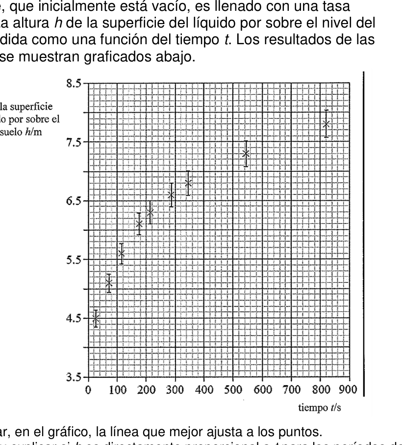
Topic: Fluid Mechanics Metodi: Hydrostatic Equilibrium Competenze: Physical Reasoning Objects: Container Fonte: Testo (PDF) — p.3
PT110. Navarro, Buenos Aires. Blu. Il diametro del tappo di scarico di una pila di laboratorio è di 3 cm. Cosa? forza verticale deve essere fatta per togliere il tappo se la pila è prismatica rettangolare di 20 cm x 20 cm di base e contenente 10 litres di acqua?
Topic: Fluid Mechanics Metodi: Hydrostatic Equilibrium Competenze: Physical Reasoning Objects: Container Fonte: Testo (PDF) — p.3
PT110. I’m from Navarro, Buenos Aires. Blue, please. The diameter of the drainage plug of a laboratory pile is 3 cm. What? Vertical force must be applied to remove the cap if the pile is prismatic Rectangular, 20 cm x 20 cm base and containing 10 l of water?
Topic: Fluid Mechanics Metodi: Hydrostatic Equilibrium Competenze: Physical Reasoning Objects: Container Fonte: Testo (PDF) — p.3
PT111. Navarro, Buenos Aires. Azul. Un proyectil, de 1 kg, es lanzado verticalmente hacia arriba con una velocidad inicial de 60 m/seg. Debido a la fricción con el aire, el proyectil disipa durante la subida 8x102 J de su energía en forma de calor. a- ¿Cuál es la energía potencial del proyectil al llegar a la altura máxima? b- ¿Cuál es el valor de esta altura? (considerar la g = 10 m/seg2)?
Topic: Conservation of Energy, Newtonian Mechanics Metodi: Conservation of Energy, Kinematic Equations Competenze: Physical Reasoning Objects: Projectile Fonte: Testo (PDF) — p.3
PT111. Navarro, Buenos Aires. Blu. Un proiettile di 1 kg viene lanciato verticalmente verso l’alto con una velocità iniziale di 60 m/sec. A causa della friczione con l’aria, il proiettile dissipa durante l’aumento di 8x102 J della sua energia in forma di calore. a- Qual è l’energia potenziale del proiettile quando raggiunge l’altezza?
- Massimo? b- Qual è il valore di questa altezza? (considerare g = 10 m/sec2)?
Topic: Conservation of Energy, Newtonian Mechanics Metodi: Conservation of Energy, Kinematic Equations Competenze: Physical Reasoning Objects: Projectile Fonte: Testo (PDF) — p.3
PT111. I’m from Navarro, Buenos Aires. Blue, please. A 1 kg projectile is launched vertically upwards with a The speed of the vehicle shall be: Due to friction with the air, the projectile It dissipates its energy in the form of heat during the 8x102 J rise. a- What is the potential energy of the projectile when it reaches height What’s the maximum? b- What’s the value of this height? (consider g = 10 m/s2)?
Topic: Conservation of Energy, Newtonian Mechanics Metodi: Conservation of Energy, Kinematic Equations Competenze: Physical Reasoning Objects: Projectile Fonte: Testo (PDF) — p.3
PT112. Navarro, Buenos Aires. Azul. Un perro pasa corriendo con una velocidad constante de 18km/h delante de una camioneta del servicio sanitario. El personal quiere atrapar al perro y cuando este está alejándose, y a unos 50 m de distancia, sale a perseguirlo con aceleración constante a = 2,5 m/seg2 a- Confeccionar un dibujo que represente la situación. b- Indicar cuánto tiempo transcurre desde que la camioneta persigue al perro hasta que lo alcanza c- Indicar la distancia recorrida por el perro y la distancia recorrida por la camioneta
Topic: Newtonian Mechanics Metodi: Kinematic Equations Competenze: Physical Reasoning Objects: — Fonte: Testo (PDF) — p.3
PT112. Navarro, Buenos Aires. Blu. Un cane passa correndo a velocità costante di 18 km/h davanti.
- di un furgone sanitario. Il personale vuole prendere il cane e quando questo si allontana, e a circa 50 metri, si allontana Perseguire con una costante accelerazione a = 2,5 m/seg2 a- Fare un disegno che rappresenti la situazione. b- Indicare quanto tempo è passato da quando il furgone ha seguito Il cane finché non lo raggiunge. c- Indicare la distanza percorsa dal cane e la distanza percorsa
- Per il furgone
Topic: Newtonian Mechanics Metodi: Kinematic Equations Competenze: Physical Reasoning Objects: — Fonte: Testo (PDF) — p.3
PT112. I’m from Navarro, Buenos Aires. Blue, please. A dog is running at a constant speed of 18km/h ahead. From a health service van. The staff wants to catch the dog . And when this one is moving away, and it’s about 50 meters away, it goes out to chase it with constant acceleration a = 2,5 m/seg2 a- Draw a picture of the situation. b- Indicate how long it has been since the truck chased The dog until he reaches him . c- Indicate the distance travelled by the dog and the distance travelled By the van.
Topic: Newtonian Mechanics Metodi: Kinematic Equations Competenze: Physical Reasoning Objects: — Fonte: Testo (PDF) — p.3
PT113. Quilmes, Buenos Aires. Azul. El diagrama muestra el depósito de un recipiente utilizado para guardar líquidos.
OAF 2010 - 70 El recipiente es llenado desde arriba. La distancia entre la base del recipiente y el piso es h0. El recipiente, que inicialmente está vacío, es llenado con una tasa constante. La altura h de la superficie del líquido por sobre el nivel del suelo es medida como una función del tiempo t. Los resultados de las mediciones se muestran graficados abajo.
a. Dibujar, en el gráfico, la línea que mejor ajusta a los puntos.
b. Decir y explicar si h es directamente proporcional a t para los períodos de
tiempo
i. T = 0 s a t = 120 s
ii. T > 120 s
c. Usar los datos del gráfico para determinar el valor de h0.
d. El área de la base del recipiente es 1.8 m2. Deducir que el volumen de
líquido entrando en el depósito del recipiente es aproximadamente
0.02 m3 s-1.
e. El recipiente está completamente lleno después de 850 s. Calcular el
volumen total del depósito.
f. El recipiente vacío, ahora es llenado a la mitad de la tasa de d. Usando
los ejes, esquematice gráfico que muestra la variación de h con t en el
rango t = 0 s a t = 900 s.
OAF 2010 - 71
Topic: Fluid Mechanics Metodi: Continuity Equation, Graph Linearization Competenze: Physical Reasoning, Experimental Data Analysis Objects: Container Fonte: Testo (PDF) — p.3
PT113. Quilmes, Buenos Aires. Blu. Il diagramma mostra il deposito di un contenitore utilizzato per conservare liquidi.
OAF 2010 - 70 Il contenitore è pieno dall’alto. La distanza tra la base del contenitore e il pavimento è h0. Il contenitore, inizialmente vuoto, viene riempito con un tasso. costante. L’altezza h della superficie del liquido sopra il livello di Il suolo è misurato come funzione del tempo t. I risultati delle Le misure sono riportate in grafico di seguito.
a. Tracciare, sul grafico, la linea che meglio si adatta ai punti. b. Dire e spiegare se h è direttamente proporzionale a t per i periodi di Tempo i. T = 0 s a t = 120 s ii. T > 120 s c. Usare i dati del grafico per determinare il valore di h0. d. L’area della base del recipiente è di 1,8 m2. Dotturare che il volume di il liquido che entra nel depósito del contenitore è approssimativamente 0.02 m3 s-1. e. Il contenitore è completamente pieno dopo 850 secondi. Calcolare il volume totale del deposito. f. Il contenitore vuoto, ora è pieno a metà del tasso di d. Usando Gli assi, schematizzare graficamente la variazione di h con t nel il livello t = 0 s a t = 900 s.
OAF 2010 - 71
Topic: Fluid Mechanics Metodi: Continuity Equation, Graph Linearization Competenze: Physical Reasoning, Experimental Data Analysis Objects: Container Fonte: Testo (PDF) — p.3
PT113. Quilmes, Buenos Aires is where I am. Blue, please. The diagram shows the storage capacity of a container used for storage fluids.
The following points shall be added: The container is filled from above. The distance between the base of the container and the floor is h0. The container, which is initially empty, is filled with a rate It’s constant. The height h of the liquid surface above the level of the Soil is measured as a function of time t. The results of the The measurements are shown in the graph below.
a. Draw, on the graph, the line that best fits the points. b. Tell and explain whether h is directly proportional to t for periods of Time . i. T = 0 s a t = 120 s ii. T > 120 s c. Use the graph data to determine the value of h0. d. The area of the base of the container is 1.8 m2. To deduce that the volume of The fluid entering the container tank is approximately 0.02 m3 s-1. e. The container is completely filled after 850 seconds. Calculate the Total volume of the tank. f. The empty container is now filled at half the rate of d. Using The axes, a graph diagram showing the variation of h with t in the The value of the input data shall be the sum of the values of the input data.
The following points shall be added:
Topic: Fluid Mechanics Metodi: Continuity Equation, Graph Linearization Competenze: Physical Reasoning, Experimental Data Analysis Objects: Container Fonte: Testo (PDF) — p.3
PT114. Quilmes, Buenos Aires. Azul. Una bala de 32 g es disparada de un revolver. El gráfico muestra la variación de la fuerza F sobre la bala con el tiempo t cuando ésta viaja dentro del cañón del revolver.
La bala es disparada en t = 0 y la longitud del cañón del revolver es 0.70 m. a. Decir y explicar por qué no es apropiado usar la ecuación
para calcular la aceleración de la bala. b. Use el gráfico para
OAF 2010 - 72 i. Determinar la aceleración media durante los últimos 2.0 ms del gráfico. ii. Mostrar que el cambio de la cantidad de movimiento del la bala, cuando esta viaja a lo largo de la longitud del cañón del revolver, es aproximadamente 9 N s. c. Use la respuesta b. ii. para calcular i. La rapidez de la bala cuando sale del cañón del revolver ii. La potencia media entregada a la bala.
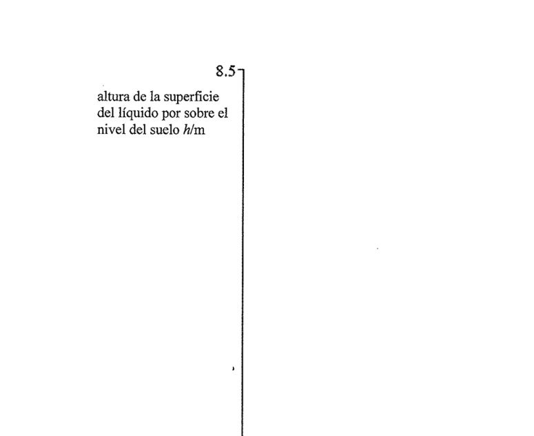
Topic: Newtonian Mechanics, Conservation of Momentum Metodi: Impulse-Momentum Theorem, Graph Linearization Competenze: Physical Reasoning, Experimental Data Analysis Objects: Projectile Fonte: Testo (PDF) — p.3
PT114. Quilmes, Buenos Aires. Blu. Una pallottola da 32 g viene sparata da un revolver. Il grafico mostra la variazione di La forza F sulla pallottola con il tempo t quando essa viaggia dentro il cannone del
- Un colpo di pistola.
Il proiettile viene sparato a t = 0 e la lunghezza del cannone del revolver è di 0,70 m. a. Dire e spiegare perché non è appropriato usare l’equazione
per calcolare l’accelerazione della pallottola. b. Utilizzare il grafico per
OAF 2010 - 72 i. Determinare l’accelerazione media durante gli ultimi 2.0 ms del ciclo di velocità.
- Grafico. ii. Mostrare che il cambiamento della quantità di movimento della pallottola, Quando viaggia lungo la lunghezza del cannone della pistola, è di circa 9 N s. c. Usa la risposta b. ii. per calcolare i. La velocità della pallottola quando esce dal cannone del revolver ii. Potenza media consegnata al proiettile.
Topic: Newtonian Mechanics, Conservation of Momentum Metodi: Impulse-Momentum Theorem, Graph Linearization Competenze: Physical Reasoning, Experimental Data Analysis Objects: Projectile Fonte: Testo (PDF) — p.3
PT114. Quilmes, Buenos Aires is where I am. Blue, please. A 32g bullet is fired from a revolver. The graph shows the variation of The force F on the bullet with time t when it travels within the cannon of the I’m going to shoot.
The bullet is fired at t = 0 and the gun’s gun length is 0.70 m. a. To say and explain why it is not appropriate to use the equation
to calculate the bullet’s acceleration. b. Use the chart to
The following points shall be added: i. Determine the average acceleration over the last 2.0 ms of the The graphic. ii. Show that changing the amount of movement of the bullet, When it travels along the length of the gun in the revolver, is approximately 9 N s. c. Use the answer b. ii. to calculate i. The speed of the bullet when it comes out of the gun . ii. The mean power delivered to the bullet.
Topic: Newtonian Mechanics, Conservation of Momentum Metodi: Impulse-Momentum Theorem, Graph Linearization Competenze: Physical Reasoning, Experimental Data Analysis Objects: Projectile Fonte: Testo (PDF) — p.3
PT115. Quilmes, Buenos Aires. Azul. A. a. La presión P para una masa fija de un gas ideal es directamente proporcional a la temperatura T, en grados Kelvin, del gas:
Indique la relación entre la i. Presión P y el volumen V para un cambio a temperatura constante. ii. El volumen V y la temperatura T para un cambio a presión constante. b. El gas ideal es mantenido en un recipiente con un pistón movible. La presión del gas es P1, su volumen V1 y su temperatura T1. La presión, volumen y temperatura son cambiados a P2, V2 y T2 respectivamente. El cambio se lleva a cabo como ilustra la figura de abajo.
Indique la relación entre la i. P1, P2, T1 y T’ ii. V1, V2, T’ y T2 c. Use sus respuestas de b. para demostrar que, para un gas ideal
donde K es una constante.
B. La resistencia R de una muestra de mercurio fue medida como función de la temperatura T de la misma. La muestra fue enfriada y los datos fueron tomados a intervalos de temperatura de 0.2 K. Los errores de R y T son muy pequeños como para mostrarse en el gráfico. Una hipótesis es que la resistencia es proporcional a la temperatura para temperaturas mayores de 4.5 K.
OAF 2010 - 73
a. Indique para qué valor de R la tasa de cambio de la resistencia de la muestra con la temperatura es menor. b. A la temperatura Tc la resistencia repentinamente va a cero. i. Use el gráfico para determinar el posible rango de temperaturas Tc. ii. Indique el número correcto de cifras significativas de Tc y su error.
Topic: Thermodynamics Metodi: Ideal Gas Law, Graph Linearization Competenze: Physical Reasoning, Experimental Data Analysis Objects: Gas, Piston Fonte: Testo (PDF) — p.3
PT115. Quilmes, Buenos Aires. Blu. A. a. La pressione P per una massa fissa di un gas ideale è direttamente proporzionale alla temperatura T, in gradi Kelvin, del gas:
Indicare il rapporto tra i. Pressione P e volume V per un cambio di temperatura costante. ii. Volume V e temperatura T per un cambio di pressione costante. b. Il gas ideale è conservato in un recipiente con pistone mobile. La la pressione del gas è P1, il suo volume V1 e la sua temperatura T1. La pressione, volume e temperatura sono cambiati a P2, V2 e T2 rispettivamente. El Il cambiamento avviene come illustrato nella figura di seguito.
Indicare il rapporto tra i. P1, P2, T1 y T’ ii. V1, V2, T’ y T2 c. Usa le tue risposte a b. Per dimostrare che, per un gas ideale
dove K è una costante.
B. La resistenza R di un campione di mercurio è stata misurata in funzione di la temperatura T della stessa. Il campione è stato raffreddato e i dati sono stati Prese a intervalli di temperatura di 0,2 K. Gli errori di R e T sono troppo piccoli per essere mostrati sul grafico. Una ipotesi è che la resistenza sia proporzionale alla temperatura per temperature superiori a 4,5 K.
OAF 2010 - 73
a. Indicare per quale valore di R il tasso di cambio della resistenza di mostra con la temperatura inferiore. b. Alla temperatura Tc la resistenza improvvisamente scende a zero. i. Utilizzare il grafico per determinare il possibile intervallo di temperature Tc. ii. Indicare il numero corretto di cifre significative di Tc e il loro errore.
Topic: Thermodynamics Metodi: Ideal Gas Law, Graph Linearization Competenze: Physical Reasoning, Experimental Data Analysis Objects: Gas, Piston Fonte: Testo (PDF) — p.3
PT115. Quilmes, Buenos Aires is where I am. Blue, please. A. a. The P-pressure for a fixed mass of an ideal gas is directly proportional to the temperature T, in Kelvin degrees, of the gas:
Indicate the relationship between i. Pressure P and volume V for a change in temperature It’s constant. ii. V volume and T temperature for a change in pressure It’s constant. b. The ideal gas is kept in a container with a movable piston. La The pressure of the gas is P1, its volume V1 and its temperature T1. The pressure, The volume and temperature are changed to P2, V2 and T2 respectively. El change is carried out as illustrated in the figure below.
Indicate the relationship between i. P1, P2, T1 y T’ ii. V1, V2, T’ y T2 c. Use your answers in b. to prove that, for an ideal gas
where K is a constant.
B. The R resistance of a mercury sample was measured as a function of the temperature T of the same. The sample was cooled and the data were taken at temperature intervals of 0.2 K. The errors of R and T are too small to show on the chart. One hypothesis is that the resistance is proportional to the temperature for a temperature of more than 4.5 K.
The following points shall be added:
a. Indicate for what value of R the exchange rate of the resistance of the The temperature is lower. b. At Tc the resistance suddenly goes to zero. i. Use the chart to determine the possible temperature range Tc. ii. Indicate the correct number of significant figures of Tc and their error.
Topic: Thermodynamics Metodi: Ideal Gas Law, Graph Linearization Competenze: Physical Reasoning, Experimental Data Analysis Objects: Gas, Piston Fonte: Testo (PDF) — p.3
PT116. Villa Iris, Buenos Aires. Azul. Desde la base de un edificio se arroja una piedra verticalmente hacia arriba con una velocidad de 10 m/s . Suponiendo que se desprecia la resistencia del aire y tomando la aceleración como 10 m/s2 . Obtenga las ecuaciones que determinan la variación de la posición y la velocidad con el tiempo tomando como sistema de referencia el punto de lanzamiento.. Calcule el tiempo que tarda la piedra en alcanzar su altura máxima. Calcule la altura máxima. Calcule la velocidad que lleva la piedra 1,5 s segundos después de haber sido arrojada . ¿Cómo interpreta los resultados?. Cuánto tardará en llegar al piso. Que velocidad tenía en el instante previo a tocar el piso.¿ Necesita hacer cuentas.?. Realice los gráficos que representan la variación de la velocidad y la posición en función del tiempo. Si el lanzamiento se realiza con la misma velocidad inicial, desde un balcón situado a una altura de 7.5 m sobre el piso. ¿Se modifican los resultados obtenidos ¿ Justifique sus respuestas. En el instante que la piedra alcanza su altura máxima ¿Cuáles de las siguientes afirmaciones son correctas?.
- Su velocidad y aceleración son nulas
- Su velocidad es nula y su aceleración no.
- Su aceleración es nula pero su velocidad no.
- Su velocidad y aceleración no varían. Si se lanza una segunda piedra verticalmente hacia arriba con el doble de velocidad inicial de la primera. Entonces la altura máxima alcanzada por la segunda será:
- El doble de la alcanzada por la primera
- El cuádruplo de la alcanzada por la primera
- Tiene un valor con la alcanzada por la primera que depende del valor de su velocidad inicial.
OAF 2010 - 74
Topic: Newtonian Mechanics Metodi: Kinematic Equations Competenze: Physical Reasoning Objects: — Fonte: Testo (PDF) — p.3
PT116. Villa Iris, Buenos Aires. Blu. Dal fondamento di un edificio si lancia una pietra verticalmente verso l’alto con Una velocità di 10 m/s . Supponendo che si disprezzi la resistenza dell’aria e Prendendo l’ acceleration come 10 m/s2 . Ottieni le equazioni che determinano la variazione della posizione e la velocità nel tempo, prendendo come sistema di riferimento il punto di lancio.. Calcola il tempo che la pietra impiega per raggiungere la massima altezza. Calcola la massima altezza. Calcola la velocità che la pietra porta 1,5 secondi dopo aver avuto
- E ’ stata buttata . Come interpreta i risultati? Quanto tempo ci vorrà per arrivare al pavimento? Che velocità aveva l’istante prima di toccare il pavimento.
- Conti. Realizza i grafici che rappresentano la variazione della velocità e la velocità. posizione in base al tempo. Se il lancio viene effettuato alla stessa velocità iniziale, da un balcone situato ad un’altezza di 7,5 m sul pavimento. Le modifiche sono state apportate. Risultati ottenuti - giustifica le tue risposte. L’istante in cui la pietra raggiunge la sua altezza massima, quale delle due? Le seguenti affermazioni sono corrette?
- La sua velocità e l’ acceleration sono nulli .
- La sua velocità è zero e la sua accelerazione no.
- La sua accelerazione è zero, ma la sua velocità no.
- La loro velocità e l’accelerazione non variano. Se si lancia una seconda pietra verticalmente verso l’alto con il doppio di velocità iniziale della prima. Quindi l’altezza massima raggiunta da La seconda sarà:
- Il doppio di quello raggiunto dalla prima.
- Quadruple di quella raggiunta dalla prima.
- Ha un valore con il raggiunto per il primo che dipende dal valore della sua velocità iniziale.
OAF 2010 - 74
Topic: Newtonian Mechanics Metodi: Kinematic Equations Competenze: Physical Reasoning Objects: — Fonte: Testo (PDF) — p.3
PT116. This is Villa Iris, Buenos Aires. Blue, please. From the base of a building a stone is thrown vertically up with a speed of 10 m/s . Assuming you despise the air resistance and Taking the acceleration as 10 m/s2 . Obtain the equations that determine the variation in position and the speed over time taking as a reference system the point of The launch… Calculate how long it takes the stone to reach its maximum height. Calculate the maximum height. Calculate the velocity of the stone 1.5 seconds after it has been I was thrown . How do you interpret the results? How long will it take to get to the floor? What speed was he at the moment before he touched the floor? The accounts. Make the graphs that represent the variation in speed and the position based on time. If the launch is made at the same initial speed, from a balcony located at a height of 7.5 m above the floor. Are the amendments made? The results obtained justify your answers. The moment the stone reaches its maximum height, which of the two The following statements are correct?
- Their speed and acceleration are zero .
- Their speed is zero and their acceleration is not.
- Their acceleration is zero, but their speed is not.
- Their speed and acceleration do not vary. If you throw a second stone vertically upwards with double of The initial speed of the first. Then the maximum height reached by The second one will be:
- Twice as much as the first one .
- Four times the number of people who have been hit by the first one .
- It has a value with the first one reached that depends on the the value of its initial speed.
The following points shall be added:
Topic: Newtonian Mechanics Metodi: Kinematic Equations Competenze: Physical Reasoning Objects: — Fonte: Testo (PDF) — p.3
PT117. Villa Iris, Buenos Aires. Azul. En un recipiente cilíndrico y de un área igual a S, derramamos agua en la cual flota un pedazo de hielo con una bolita de hierro en su interior. El volumen del pedazo de hielo junto con la bolita es igual a V; sobre el nivel del agua sobresale 1/20 de dicho volumen. ¿Qué altura desciende el nivel del agua en el recipiente, una vez que el hielo se haya derretido?. Las densidades del agua, hielo e hierro se dan a conocer como dato.(Peso específico del agua 9.8 N/dm3) , Peso específico del Fe 7.85 Kgf/dm3 , Peso específico del hielo 0.917 Kgf/dm3 .).
Topic: Fluid Mechanics Metodi: Hydrostatic Equilibrium Competenze: Physical Reasoning Objects: Block, Sphere, Container Fonte: Testo (PDF) — p.3
PT117. Villa Iris, Buenos Aires. Blu. In un recipiente cilindrico e di superficie pari a S, versare acqua in cui flotta un pezzo di ghiaccio con una pallina di ferro dentro. Il volume del Pezzo di ghiaccio insieme alla pallina è uguale a V; sopra il livello dell’acqua si spalanca 1/20 di tale volume. A che altezza scende il livello dell’acqua nel recipiente? Una volta che il ghiaccio si è sciolto? Densità dell’acqua, del ghiaccio e del ferro sono comunicati come dati.(Peso specifico dell’acqua 9.8 N/dm3) ,Peso Specificità del FEA 7.85 Kgf/dm3 .
Topic: Fluid Mechanics Metodi: Hydrostatic Equilibrium Competenze: Physical Reasoning Objects: Block, Sphere, Container Fonte: Testo (PDF) — p.3
PT117. This is Villa Iris, Buenos Aires. Blue, please. In a cylindrical container and an area equal to S, we pour water into which floats a piece of ice with a ball of iron inside. The volume of the piece of ice together with the ball is equal to V; above the water level it protrudes 1/20 of that volume. What height does the water level in the container go down? Once the ice has melted? The densities of water, ice and iron are given as data.(Specific water weight 9.8 N/dm3) , Weight The specific weight of the ice is 0.917 Kgf/dm3.)
Topic: Fluid Mechanics Metodi: Hydrostatic Equilibrium Competenze: Physical Reasoning Objects: Block, Sphere, Container Fonte: Testo (PDF) — p.3
PT118. Villa Iris, Buenos Aires. Azul. Se quiere proyectar la imagen de una lámpara , amplificada 5 veces, sobre una pared situada a 4 m de la lámpara. Determinar el tipo de espejo esférico .que se precisa y a que distancia se debe colocar.
Topic: Geometric Optics Metodi: Thin Lens & Mirror Equation, Ray Tracing Competenze: Physical Reasoning Objects: Mirror Fonte: Testo (PDF) — p.3
PT118. Villa Iris, Buenos Aires. Blu. Si vuole proiettare l’immagine di una lampada, amplificata 5 volte, su una parete situate a 4 m dalla lampada. Determinare il tipo di specchio sferico che si precisione e a che distanza deve essere posizionato.
Topic: Geometric Optics Metodi: Thin Lens & Mirror Equation, Ray Tracing Competenze: Physical Reasoning Objects: Mirror Fonte: Testo (PDF) — p.3
PT118. This is Villa Iris, Buenos Aires. Blue, please. You want to project the image of a lamp, amplified five times, over a wall located 4 m from the lamp. Determine the type of spherical mirror that is The precise distance and distance to be placed.
Topic: Geometric Optics Metodi: Thin Lens & Mirror Equation, Ray Tracing Competenze: Physical Reasoning Objects: Mirror Fonte: Testo (PDF) — p.3
PT119. San Miguel de Tucumán. Azul. En San Javier, un lugar turístico de Tucumán en un día de hermoso de primavera, lleno de sol, un turista, en particular “estudiante de Física”, está sentado con su familia tomando mate cuando ,de pronto, observa como se suelta un piedra desde lo alto de una lomada e inmediatamente “como no pudo con su genio” siempre quiere poner en práctica sus conocimientos, es decir calcular todo lo que observa: la llamó piedra 1 de 0,5 kg de masa, a la piedra que cae (desprecia la fuerza de roce) desde una posición de reposo desde lo alto a 2,5 m sobre del nivel de un pequeño puente pero choca elásticamente con otra piedra de1 kg que la llama piedra 2 que inicialmente está en reposo sobre el puente, como se muestra en la figura. Como buenos tucumanos que siempre colaboramos con el Turismo, que les parece si lo ayudan a calcular a nuestro amigo así pueda disfrutar del paisaje, siendo este uno de los mejores lugares turísticos que tenemos nosotros a) La velocidad de las dos piedras un momento después de la colisión. b) ¿Hasta qué altura de la pista regresa la piedra de m1 después del impacto? c) ¿A qué distancia del puente cae la piedra de m2 de 1 kg, si el pequeño puente tiene 2 m de altura? d) ¿A qué distancia del puente cae finalmente la piedra 1?
Topic: Conservation of Momentum, Conservation of Energy Metodi: Conservation of Momentum, Conservation of Energy, Kinematic Equations Competenze: Physical Reasoning Objects: Projectile Fonte: Testo (PDF) — p.3
PT119. San Michele di Tucumán. Blu. A San Javier, un luogo turistico di Tucumán in un bel giorno di Primavera, piena di sole, un turista, in particolare uno studente di fisica, è Seduto con la sua famiglia a prendere mate quando, all’improvviso, guarda come si sta liberando. Una pietra dall’alto di un’incrocia e immediatamente non riuscì a farne Il genio vuole sempre mettere in pratica le sue conoscenze, cioè calcolare. Tutto quello che osserva: la chiamava una pietra di 0,5 kg di massa, la pietra che cade. (sotto riserva della forza di rottura) da una posizione di riposo dall’alto a 2,5 m Sulla scala di un piccolo ponte ma colpisce elasticamente con un’altra pietra di 1 kg che la lampada pietra 2 che inizia a riposo sul ponte, come viene mostrato nella figura. Come buoni tucumanosi che collaboriamo sempre con il turismo, che li Sembra che aiutino il nostro amico a calcolare così che possa godere del paesaggio. essendo questo uno dei migliori luoghi turistici che abbiamo a) La velocità delle due pietre un momento dopo la collisione. b) A che altezza della pista si ritorna la pietra di m1 dopo il
- Impatto? c) A che distanza dal ponte cade la pietra di 1 kg di m2, se il Piccolo ponte ha 2 metri di altezza? d) A che distanza dal ponte cade la pietra 1?
Topic: Conservation of Momentum, Conservation of Energy Metodi: Conservation of Momentum, Conservation of Energy, Kinematic Equations Competenze: Physical Reasoning Objects: Projectile Fonte: Testo (PDF) — p.3
PT119. St. Michael of Tucumán. Blue, please. In San Javier, a tourist spot of Tucumán on a beautiful day of A spring, full of sunshine, a tourist, in particular a physics student, is Sitting with his family taking mate when, suddenly, he watches as he gets loose. A stone from the top of a hill and immediately as he couldn’t with his The genius always wants to put his knowledge into practice, that is, to calculate. All you see: he called it a stone 1 of 0.5 kg mass, the stone that falls. (regardless of the brushing force) from a resting position from a height of 2,5 m It ‘s over the level of a small bridge but it collides with another stone . of 1 kg that the stone 2 flame which is initially resting on the bridge, As shown in the figure. As good Tucumans we always collaborate with Tourism, which gives them a good chance of getting a good start. It looks like if you help our friend calculate so he can enjoy the scenery, Being this one of the best tourist places we have. (a) The speed of the two stones a moment after the collision. (b) How high does the m1 stone return after the track? What impact? c) How far from the bridge does the 1 kg square metre stone fall, if Little bridge is 2 meters high? (d) How far from the bridge does stone 1 finally fall?
Topic: Conservation of Momentum, Conservation of Energy Metodi: Conservation of Momentum, Conservation of Energy, Kinematic Equations Competenze: Physical Reasoning Objects: Projectile Fonte: Testo (PDF) — p.3
PT120. San Miguel de Tucumán. Azul. Desde un depósito de gran extensión fluye agua en régimen de Bernouli como se indica en la figura. El depósito está abierto a la atmósfera y la presión es de 740 mm Hg. La altura del punto 1 es de 12 m con respecto
OAF 2010 - 75 a los puntos 3 y 4. La sección transversal de la tubería en los puntos 2 y 3 es de 300 cm2 y en el 4 de 100 cm2. a) Realiza un dibujo indicando el nivel de alturas según lo indicado b) Calcula el caudal de agua que fluye en el punto 4 c) Calcula la presión en el punto 3 expresada en Pascal d) Calcula la altura del punto 2 para que la presión en él sea de 1,2 atm
Topic: Fluid Mechanics Metodi: Bernoulli’s Equation, Continuity Equation Competenze: Physical Reasoning Objects: Container, Tube Fonte: Testo (PDF) — p.3
PT120. San Michele di Tucumán. Blu. Da un deposito di grande ampiezza scorre acqua in regime di Bernouli come indicato nella figura. Il deposito è aperto all’atmosfera e la la pressione è di 740 mm Hg. L’altezza del punto 1 è di 12 m rispetto a
OAF 2010 - 75 ai punti 3 e 4. Sezione trasversale del tubo nei punti 2 e 3 es de 300 cm2 y en el 4 de 100 cm2. a) Fare un disegno che indichi il livello di altezza come indicato b) Calcola il flusso di acqua che scorre al punto 4. c) Calcola la pressione al punto 3 espressa in Pascal d) Calcola l’altezza del punto 2 in modo che la pressione in esso sia di 1,2 atm
Topic: Fluid Mechanics Metodi: Bernoulli’s Equation, Continuity Equation Competenze: Physical Reasoning Objects: Container, Tube Fonte: Testo (PDF) — p.3
PT120. St. Michael of Tucumán. Blue, please. From a large reservoir flows Bernouli’s water. as shown in the figure. The reservoir is open to the atmosphere and the pressure is 740 mm Hg. The height of point 1 is 12 m with respect to the
The following points shall be added: points 3 and 4. The cross section of the pipe at points 2 and 3 es de 300 cm2 y en el 4 de 100 cm2. (a) Draw a drawing indicating the height level as indicated (b) Calculate the flow of water at point 4. (c) Calculate the pressure at point 3 expressed in Pascal (d) Calculate the height of point 2 so that the pressure on it is 1.2 atm
Topic: Fluid Mechanics Metodi: Bernoulli’s Equation, Continuity Equation Competenze: Physical Reasoning Objects: Container, Tube Fonte: Testo (PDF) — p.3
PT121. San Miguel de Tucumán. Azul.
En circuito de la figura, R1 y R2 son cubas electrolíticas que contienen
sulfato de cobre (SO4Cu) de M = 64 y Z = 2 y Nitrato de Plata (AgNO3)
M = 108 y Z = 1 respectivamente; R3 y R4 son lámparas:
Calcula:
a) La fuerza electromotriz equivalente
b) ¿Cuántos átomos de cobre se depositan en 30 minutos?
c) ¿Cuántos joule disipa cada lámpara en ese mismo tiempo?
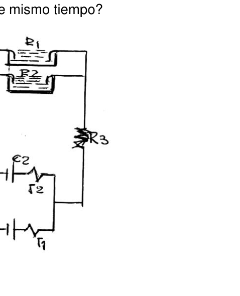
Topic: Circuits, Chemistry Metodi: Kirchhoff’s Laws, Equivalent Circuit Reduction Competenze: Physical Reasoning Objects: Resistor, Battery Fonte: Testo (PDF) — p.3
PT121. San Michele di Tucumán. Blu. In circuito della figura, R1 e R2 sono cubetti elettrolitici contenenti sulfato di rame (SO4Cu) di M = 64 e Z = 2 e nitrato di argento (AgNO3) M = 108 e Z = 1 rispettivamente; R3 e R4 sono lampade: Calcola: a) La forza elettromotrice equivalente b) Quanti atomi di rame vengono depositati in 30 minuti? c) Quanti joule ogni lampada scarica nello stesso tempo?
Topic: Circuits, Chemistry Metodi: Kirchhoff’s Laws, Equivalent Circuit Reduction Competenze: Physical Reasoning Objects: Resistor, Battery Fonte: Testo (PDF) — p.3
PT121. St. Michael of Tucumán. Blue, please. In the circuit in the figure, R1 and R2 are electrolytic cubes containing Copper sulphate (SO4Cu) of M = 64 and Z = 2 and Silver Nitrate (AgNO3) M = 108 and Z = 1 respectively; R3 and R4 are lamps: Calculate: (a) The equivalent electromotive force (b) How many copper atoms are deposited in 30 minutes? (c) How many joules does each lamp dissipate at the same time?
Topic: Circuits, Chemistry Metodi: Kirchhoff’s Laws, Equivalent Circuit Reduction Competenze: Physical Reasoning Objects: Resistor, Battery Fonte: Testo (PDF) — p.3
Optica y dientes
PT122. Ciudad de Formosa. Azul. Óptica y dientes. Un dentista utiliza un espejo pequeño que da una amplificación de 4.0 cuando se sostiene a 0.60 cm del diente de un paciente. a) ¿Cómo clasificarías el espejo? b) ¿A qué distancia se forma la imagen? c) ¿Cuál es el radio de curvatura del espejo? d) Localiza gráficamente la imagen del diente siguiendo la marcha de los rayos principales.
OAF 2010 - 76
Topic: Geometric Optics Metodi: Thin Lens & Mirror Equation, Ray Tracing Competenze: Physical Reasoning Objects: Mirror Fonte: Testo (PDF) — p.3
Opttica e denti
PT122. Città di Formosa. Blu. L’ottica e i denti. Un dentista usa un piccolo specchio che dà un’amplificazione di 4.0 quando si si tiene a 0,60 cm dal dente di un paziente. a) Come classificherebbe lo specchio? b) A che distanza si forma l’immagine? c) Qual è il raggio di curvatura dello specchio? d) Localizza graficamente l’immagine del dente seguendo il passo dei denti.
- I raggi principali.
OAF 2010 - 76
Topic: Geometric Optics Metodi: Thin Lens & Mirror Equation, Ray Tracing Competenze: Physical Reasoning Objects: Mirror Fonte: Testo (PDF) — p.3
Optics and teeth
PT122. The city of Formosa. Blue, please. Optics and teeth. A dentist uses a small mirror that gives a 4.0 amplification when you It holds 0.60 cm from a patient’s tooth. (a) How would you classify the mirror? (b) How far away is the image formed? (c) What is the radius of curvature of the mirror? (d) Graphically locate the image of the tooth following the movement of the teeth. main beams.
The following points shall be added:
Topic: Geometric Optics Metodi: Thin Lens & Mirror Equation, Ray Tracing Competenze: Physical Reasoning Objects: Mirror Fonte: Testo (PDF) — p.3
Cajita de sorpresas
PT123. Ciudad de Formosa. Azul. Cajita de sorpresas. Un juguete consiste en un payaso de 0,5 kg de masa que se encuentra en una caja cerrada. Al abrirla, el payaso que está unido a un resorte de k = 600N/m, “salta” y se mueve con movimiento oscilatorio armónico. a) Determinar el periodo y la frecuencia del movimiento. b) El fabricante observa que los niños pequeños se marean al observar lo rápido que oscila el payaso. Si cambia la cabeza del payaso, ¿debe hacerla más pesada o más liviana para que se mueva con mayor frecuencia?
Topic: Oscillations & Waves Metodi: Simple Harmonic Motion Analysis, Hooke’s Law Competenze: Physical Reasoning Objects: Spring Fonte: Testo (PDF) — p.3
Cassetta di sorprese
PT123. Città di Formosa. Blu.
- Che razza di sorpresa. Un giocattolo consiste in un clown di 0,5 kg di massa che si trova in una cassa chiusa. Quando lo apri, il clown che è attaccato a una sorgente di k = 600 N/m, Salta e si muove con movimento oscillatorio armonico. a) Determinare il periodo e la frequenza del movimento. b) Il fabbricante osserva che i bambini piccoli si sentono dizzarri quando osservano il veloce come il clown. Se cambia la testa del clown, deve? rendere più pesante o più leggero per muoversi più velocemente frequenza?
Topic: Oscillations & Waves Metodi: Simple Harmonic Motion Analysis, Hooke’s Law Competenze: Physical Reasoning Objects: Spring Fonte: Testo (PDF) — p.3
I’m going to take a look at the new look.
PT123. The city of Formosa. Blue, please. It’s a bunch of surprises. A toy consists of a 0.5 kg clown that is in a box closed. When you open it, the clown that’s attached to a spring of k = 600N/m, It jumps and moves with a harmonious oscillatory motion. (a) Determine the period and frequency of movement. (b) The manufacturer observes that young children dizzy when observing the fast as the clown swings. If you change the clown’s head, should you? Make it heavier or lighter so it moves faster. What is the frequency?
Topic: Oscillations & Waves Metodi: Simple Harmonic Motion Analysis, Hooke’s Law Competenze: Physical Reasoning Objects: Spring Fonte: Testo (PDF) — p.3
Paseando por el rio
PT124. Ciudad de Formosa. Azul. Paseando por el río. Dos lanchas pasan por un mismo amarradero en la misma dirección y con sentido contrario, moviéndose con velocidades de 35 km/h y 25 km/h. Se sabe que los conductores de las lanchas pueden comunicarse por radio hasta una distancia de 175 km. a) Dibujar la situación y marcar un sistema de referencia. b) Escribir las ecuaciones horarias para el movimiento de las lanchas. c) Confeccionar un gráfico X = x(t) y representar el movimiento de las lanchas. d) Calcular gráfica y analíticamente durante cuánto tiempo podrán mantener la comunicación los conductores de las lanchas.
Topic: Newtonian Mechanics Metodi: Kinematic Equations Competenze: Physical Reasoning Objects: — Fonte: Testo (PDF) — p.3
Passando per il fiume
PT124. Città di Formosa. Blu. Passeggiando per il fiume. Due barche passano attraverso lo stesso molo nella stessa direzione e con direzione opposta, a velocità di 35 km/h e 25 km/h. Si sa . che i conducenti delle barche possono comunicare per radio fino a una Distanza di 175 km. a) Disegnare la situazione e definire un sistema di riferimento. b) Scrivere le equazioni orarie per il movimento delle imbarcazioni. c) Confezionare un grafico X = x(t) e rappresentare il movimento delle le barche. d) Calcolare graficamente e analticamente per quanto tempo potranno mantenere La comunicazione dei piloti delle barche.
Topic: Newtonian Mechanics Metodi: Kinematic Equations Competenze: Physical Reasoning Objects: — Fonte: Testo (PDF) — p.3
Walking along the river
PT124. The city of Formosa. Blue, please. Walking down the river. Two boats pass through the same dockyard in the same direction and with In the opposite direction, moving at speeds of 35 km/h and 25 km/h. You know . The boat’s drivers can communicate by radio up to a distance of 175 km. (a) Draw up the situation and mark a reference system. (b) Write the time equations for the movement of the boats. (c) Draw a graph X = x(t) and represent the movement of the Boats. (d) Calculate graphically and analytically how long they can maintain communication the boat drivers.
Topic: Newtonian Mechanics Metodi: Kinematic Equations Competenze: Physical Reasoning Objects: — Fonte: Testo (PDF) — p.3
Un viaje en tren
PT125. Ciudad de Buenos Aires. Azul.
Retiro – Villa Rosa (un viaje en tren).
Es mucha la física involucrada en un simple viaje en tren. Te proponemos
analizar algunas cuestiones: sujeción de la puerta, fuerza centrífuga en una
curva, frenado al llegar a una estación.
a) Discuta: ¿bajo la acción de qué fuerzas se encuentra la puerta en las
distintas situaciones (abierta y cerrada) cuando el tren se encuentra
detenido? Identifique las reacciones y especifique el lugar de aplicación
de éstas. (Puede representar las fuerzas en la figura 1).
Figura 1.1: Vista frontal de las puertas en el caso en el que se encuentran
cerradas. La zona enmarcada por las líneas punteadas
puede verse en la Fig.2.1.
b) Piense y justifique adecuadamente: ¿Cuál es la fuerza que debe soportar la traba en el momento en que el tren arranca? ¿Y cuando frena? Distinga las situaciones: puerta abierta y puerta cerrada.
OAF 2010 - 77
Figura 2.1: Detalle del corte transversal de la zona remarcada en la Fig.1.1.
La siguiente tabla representa los intervalos de tiempo y las distancias medias entre estaciones del servicio de tren Belgrano norte. c) Realice un gráfico con al menos 10 puntos que considere representativos de la tabla y estime una velocidad media especificando algún criterio.
Tabla 1.1: Valores de las distancias recorridas en función de los intervalos de tiempo entre estaciones con sus respectivas incertezas.
Gráfico 1.1: Velocidad media calculada a partir de las distancias dadas en la Tabla 1 pero con intervalos de tiempo reducidos.
Pero la estimación anterior resulta bastante burda dado que no considera los intervalos de tiempo que el tren se encuentra detenido en cada estación. El Graf.1 corresponde a las velocidades medias calculadas a partir de tiempos 1 minuto menores que los de la Tabla 1 (tiempos reducidos). d) A partir de la Distancia (km) dt (m) EDist (km) Edt (m) 2,43 6,0 0,15 0,5 2,27 5,0 0,15 0,5 3,49 6,0 0,15 0,5 0,76 3,0 0,15 0,5 0,45 3,0 0,15 0,5 0,76 3,0 0,15 0,5 0,45 2,0 0,15 0,5 0,61 3,0 0,15 0,5 1,06 4,0 0,15 0,5 3,03 6,0 0,15 0,5 0,91 3,0 0,15 0,5 0,91 4,0 0,15 0,5 1,06 2,0 0,15 0,5 0,76 3,0 0,15 0,5 0,76 3,0 0,15 0,5 0,91 4,0 0,15 0,5 1,06 3,0 0,15 0,5 1,21 3,0 0,15 0,5 0,61 3,0 0,15 0,5 0,91 4,0 0,15 0,5 3,49 7,0 0,15 0,5 Velocidad media bis 0 0,2 0,4 0,6 0,8 1 1,2 0 2 4 6 8 Intervalo de tiempo (m) Velocidad (km/m) Serie1
OAF 2010 - 78 observación del Graf.1, ¿cuál sería el valor representativo de la velocidad media con esta corrección? Entre las estaciones: Aristóbulo del Valle y Scalabrini Ortiz hay una curva pronunciada y, al igual que en las autopistas, las vías poseen un peralte (es decir una inclinación de la superficie que ayude a compensar la fuerza centrífuga que sufre el móvil que describe el movimiento curvilíneo). Si la curva puede pensarse localmente como una de radio 25m, e) calcule el peralte (o sea el ángulo) necesario para que la componente en x del peso compense el 30% de la fuerza centrífuga.
Topic: Newtonian Mechanics, Rigid Body Statics Metodi: Free-Body Diagram, Kinematic Equations, Graph Linearization Competenze: Physical Reasoning, Experimental Data Analysis Objects: — Fonte: Testo (PDF) — p.3
Un viaggio in treno
PT125. Città di Buenos Aires. Blu. Ritiro Villa Rosa (un viaggio in treno). E’ molto fisica che si implica in un semplice viaggio in treno. Ti proponiamo .
- l’aumento della forza centrifugante in una curva, frenata quando arriva a una stazione. a) Discussione: sotto l’azione di quali forze si trova la porta nelle situazioni diverse (aperte e chiuse) quando il treno si trova
- Arrestato? Identifica le reazioni e specifica il luogo di applicazione di queste. (Può rappresentare le forze in figura 1).
Figura 1.1: Vista frontale delle porte nel caso in cui si trovano chiusi. L’area corrispondente alle linee puntate può essere visto in Figura 2.1.
b) Pensate e giustificate adeguatamente: quale forza deve sopportare il problema quando il treno parte? E quando?
- Il freno? Distingue tra una porta aperta e una chiusa.
OAF 2010 - 77
Figura 2.1: Dettaglio del taglio trasversale della zona rilevata in Figura.1.1.
La tabella seguente rappresenta gli intervalli di tempo e le distanze medie tra le stazioni del servizio ferroviario Belgrano Nord. c) Sviluppa un grafico con l’ meno 10 punti che ritiene rappresentativi della tabella e stima una velocità media specificando un criterio.
Tabella 1.1: Valori delle distanze percorse in base agli intervalli di tempo tra le stazioni con le rispettive incertezze.
Grafico 1.1: Velocità media calcolata dalle distanze indicate in Tabella 1 ma con intervalli di tempo ridotti.
Ma l’estimazione precedente è piuttosto grossa, dato che non considera le intervalli di tempo in cui il treno si trova fermo in ogni stazione. El Grafico 1 corrisponde alle velocità medie calcolate a partire da tempi 1 Minuti inferiori a quelli di Tabella 1 (tempo ridotto). D) A partire dal Distanza (km) dt (m) EDist (km) Edt (m) 2,43 6,0 0,15 0,5 2,27 5,0 0,15 0,5 3,49 6,0 0,15 0,5 0,76 3,0 0,15 0,5 0,45 3,0 0,15 0,5 0,76 3,0 0,15 0,5 0,45 2,0 0,15 0,5 0,61 3,0 0,15 0,5 1,06 4,0 0,15 0,5 3,03 6,0 0,15 0,5 0,91 3,0 0,15 0,5 0,91 4,0 0,15 0,5 1,06 2,0 0,15 0,5 0,76 3,0 0,15 0,5 0,76 3,0 0,15 0,5 0,91 4,0 0,15 0,5 1,06 3,0 0,15 0,5 1,21 3,0 0,15 0,5 0,61 3,0 0,15 0,5 0,91 4,0 0,15 0,5 3,49 7,0 0,15 0,5 Velocità media bis 0 0,2 0,4 0,6 0,8 1 1,2 0 2 4 6 8 Intervallo di tempo (m) Velocità (km/m) Serie 1
OAF 2010 - 78 osservamento del grafico 1, qual sarebbe il valore rappresentativo della velocità media con questa correzione? Tra le stazioni: Aristobullo del Valle e Scalabrini Ortiz c’è una curva Le strade sono molto alte e, come nelle autostrade, hanno un perlatto (es dire un’inclinazione della superficie che aiuta a compensare la forza centrifugante che soffre il mobile che descrive il movimento curvilineo). Se la curva può e) calcolare il perlato (cioè il L’angolo) necessario per rendere il componente in x del peso compenso il 30% della forza centrifugante.
Topic: Newtonian Mechanics, Rigid Body Statics Metodi: Free-Body Diagram, Kinematic Equations, Graph Linearization Competenze: Physical Reasoning, Experimental Data Analysis Objects: — Fonte: Testo (PDF) — p.3
A journey by train
PT125. City of Buenos Aires. Blue, please. Retreat Villa Rosa (a train trip). There’s a lot of physics involved in a simple train ride. We propose . The main points of discussion are: curve, brake when you get to a station. (a) Discuss: under the action of which forces the gate is located in the different situations (open and closed) when the train is in the train
- Arrested? Identify the reactions and specify the place of application of these. (It can represent the forces in Figure 1).
Figure 1.1: Front view of the doors in the case in which they are located It’s closed. The area framed by the dotted lines The following table shows the results of the study:
(b) Think and justify properly: What force should you have? to withstand the jam when the train starts? And when? What’s the brake? Distinguish between open and closed doors.
The following points shall be added:
Figure 2.1: Detail of the cross-sectional cut of the area marked in Fig.1.1.
The following table shows the time intervals and average distances between stations of the Belgrade North train service. (c) Draw a graph with the minus 10 points which you consider representative of the table and estimate a average speed specifying some criteria.
Table 1.1: Values of distances travelled in terms of intervals of time between seasons with their respective uncertainties.
Figure 1.1: Average speed calculated from the distances given in the Table 1 but with reduced time intervals.
But the above estimate is rather rough given that it does not take into account the time intervals when the train is stopped at each station. El Graph 1 corresponds to the average speeds calculated from time 1 Minutes less than those in Table 1 (reduced times). (d) From the Distance (km) dt (m) The following information is provided: The following points shall be added: 2,43 6,0 0,15 0,5 2,27 5,0 0,15 0,5 3,49 6,0 0,15 0,5 0,76 3,0 0,15 0,5 0,45 3,0 0,15 0,5 0,76 3,0 0,15 0,5 0,45 2,0 0,15 0,5 0,61 3,0 0,15 0,5 1,06 4,0 0,15 0,5 3,03 6,0 0,15 0,5 0,91 3,0 0,15 0,5 0,91 4,0 0,15 0,5 1,06 2,0 0,15 0,5 0,76 3,0 0,15 0,5 0,76 3,0 0,15 0,5 0,91 4,0 0,15 0,5 1,06 3,0 0,15 0,5 1,21 3,0 0,15 0,5 0,61 3,0 0,15 0,5 0,91 4,0 0,15 0,5 3,49 7,0 0,15 0,5 Speed by average 0 0,2 0,4 0,6 0,8 1 1,2 0 2 4 6 8 Time interval (m) The following conditions shall apply: The following is the list of the categories of products:
The following points shall be added: The average speed of the vehicle is the average speed of the vehicle. with this correction? Between the stations: Aristobulus del Valle and Scalabrini Ortiz there is a curve The road is steep and, as on motorways, the roads have a beam (is say a surface slope that helps offset the centrifugal force The motion of the curve is described by the motion of the curve. If the curve can (e) calculate the pearl (i.e. the angle) necessary for the component in x of the weight to compensate for 30% of the centrifugal force.
Topic: Newtonian Mechanics, Rigid Body Statics Metodi: Free-Body Diagram, Kinematic Equations, Graph Linearization Competenze: Physical Reasoning, Experimental Data Analysis Objects: — Fonte: Testo (PDF) — p.3
Flujos inestables
PT126. Ciudad de Buenos Aires. Azul.
Flujos inestables (un estudio de la Facultad de Ingeniería).
Existe un modo “sencillo” de refrigerar / calefaccionar un ambiente y consiste en
hacer circular por un juego de tuberías, agua fría / caliente de modo que la
misma intercambie calor con el aire del lugar (entorno). Pero esta transferencia
depende fuertemente del modo en que el fluido se desplaza por el interior de las
tuberías. Es por eso que haremos una serie de estudios de una lámina de agua
sobre una determinada superficie.
Espesor de la lámina Para estudiar el comportamiento de un fluido experimentalmente lo que se hace es esparcirlo sobre una superficie y limitarlo de alguna manera. De ese modo queda formada una lámina de fluido. Una característica fundamental que debe conocerse de dicha lámina es el espesor. Para ello en el laboratorio se emplea el siguiente arreglo experimental.
Figura 1.2: Arreglo experimental para la determinación del espesor del fluido (está exagerado el espesor del fluido).
La idea subyacente es emplear el índice de refracción del fluido y las leyes fundamentales de la óptica para establecer el espesor de la lámina. En el laboratorio las variables “manejables” (es decir los parámetros conocidos) son: la distancia entre el emisor de luz y la base sobre la que se encuentra el fluido (altura=1,5m), la distancia que separa al emisor del receptor (distancia e/ sensores=2,5m) y la orientación del emisor (formando un ángulo de 40° con la vertical). Entonces: i) ¿cuál es el ángulo de refracción del haz en el fluido? y ii) ¿cuál es el espesor de la lámina?
Desplazamiento de un fluido laminar Ahora que hemos estudiado una lámina de fluido estamos en condiciones de analizar el desplazamiento de una masa del mismo pensándolo como un fluido laminar. Es decir bajo la aproximación que modela dicha masa como una pila de láminas idénticas.
OAF 2010 - 79 Esta masa de agua debe desplazarse dentro de una tubería que presenta una pendiente α. Y vamos a limitar nuestro estudio a la situación en la que el fluido se comporta como lo harían 3 láminas unas sobre otras.
Figura 2.2: Esquema del comportamiento laminar del fluido.
Suponga que la fricción entre ellas viene dada a partir de un coeficiente de rozamiento , que la lámina en contacto con la pared del tubo no desliza (y posee el mismo coeficiente de rozamiento que entre las láminas) y que la situación ya llegó a la condición de equilibrio. Entonces, dada una inclinación de 10° plantee el diagrama del cuerpo libre de la situación y calcule iii) el coeficiente de rozamiento y iv) el desplazamiento relativo de las capas entre sí. Para ello necesitará saber la longitud de las láminas: l = 5cm AYUDA: La froz depende de la superficie de contacto entre láminas
siendo N la normal y x1 la porción de lámina apoyada.
Transmisión de calor
Como mencionábamos en la introducción el objetivo de este estudio es analizar
la transmisión de calor entre el fluido que se desplaza dentro de una tubería y su
entorno. Sucede que cuando parte del líquido queda adherido a las paredes
actúa como una resistencia a la transferencia de calor. Haciendo una analogía
con un circuito eléctrico lo que intenta establecerse entre dos puntos es una
diferencia de temperatura en vez de una diferencia de potencial.
Suponga la situación estudiada anteriormente (α = 10°) y considerando que la
resistencia es proporcional al producto del espesor y el largo de la lámina, v)
calcule la resistencia equivalente. AYUDA: Piense que al desplazarse las
láminas entre sí quedan partes de distintas longitudes con distintos espesores
entonces en qué tipo de conexión plantearía y por qué.
Figura 3.2: Esquema de las láminas desplazadas, nótese que espesores distintos implican resistencias distintas.
[Extra, a modo de desafío] Para comprender cómo afecta esta resistencia al
mecanismo de transferencia de calor vi) compare el ΔT que efectivamente se
establece (entre el interior de la tubería y el entorno) cuando el calor transmitido
es tal que sin ella el ΔT sería 10º.
Datos:
Topic: Fluid Mechanics, Geometric Optics Metodi: Snell’s Law, Free-Body Diagram, Equivalent Circuit Reduction Competenze: Physical Reasoning, Mathematical Modeling Objects: — Fonte: Testo (PDF) — p.3
Fluzioni instabili
PT126. Città di Buenos Aires. Blu. Fluidi instabili (un studio della facoltà di ingegneria). Esiste un modo semplice di raffreddare / riscaldare un ambiente e consiste in: far circolare un paio di tubi, acqua fredda / calda in modo che la la stessa interscambia calore con l’aria del luogo (ambiente). Ma questo trasferimento… La velocità di movimento del fluido è molto determinata dal modo in cui il fluido si sposta all’interno delle tubi. Ecco perché faremo una serie di studi su una lamina d’acqua. su una superficie determinata.
Spessore della lamina Per studiare il comportamento di un fluido sperimentalmente ciò che viene fatto e lo diffondere su una superficie e limitarlo in qualche modo. In questo modo. si forma una lamina di fluido. Un’importanza fondamentale che deve La sua spessura è la sua spessura. Per questo, in laboratorio si utilizza il il prossimo accordo sperimentale.
Figura 1.2: Arreglo sperimentale per la determinazione dello spessore del fluido (l’esagero del liquido è esagerato).
L’idea sottostante è quella di utilizzare l’indice di refraczione del fluido e le leggi. I principi fondamentali dell’ottica per stabilire lo spessore della lamina. En el Laboratorio le variabili manierabili (cioè i parametri noti) sono: Distanza tra l’emissione della luce e la base su cui si trova il fluido (altezza=1,5m), la distanza che separa l’emittente dal ricevitore (distanza e/ La velocità di emissione è di 2 metri e la direzione dell’emissione (formando un angolo di 40° con la velocità di emissione di un’emissione di 2 metri e/o). Verticale). Quindi: (i) qual è l’angolo di refraczione del fascio nel fluido? e (ii) quale è il spessore della lamina?
Trasloco di un fluido laminare Ora che abbiamo studiato una lamina di fluido siamo in grado di analizzare il movimento di una massa della stessa pensandola come un fluido laminare. In altre parole, sotto l’approccio che modella tale massa come una pila di foglie identiche.
OAF 2010 - 79 Questa massa d’acqua deve essere spostata all’interno di un tubo che presenta una pendice α. E limiteremo il nostro studio alla situazione in cui il fluido Si comporta come se tre foglie si trovassero tra loro.
Figura 2.2: schema del comportamento laminare del fluido.
Supponiamo che la friczione tra loro venga data da un coefficiente di il taglio , che la lamina in contatto con il muro del tubo non scivoli (e ha lo stesso coefficiente di rottura che tra le lamiere) e che la La situazione è già arrivata alla condizione di equilibrio. Quindi, dato un’inclinazione di 10° presenta il diagramma del corpo libero della situazione e calcola iii) il Coefficiente di rottura e iv) il relativo spostamento delle strati tra e sí. Per questo dovrà sapere la lunghezza delle foglie: l = 5cm AYUDA: Il freddo Dipende dalla superficie di contatto tra le lamiere
essendo N la normale e x1 la porzione di lamina appoggiata.
Trasmissione di calore Come abbiamo detto all’inizio, l’obiettivo di questo studio è analizzare la trasmissione di calore tra il fluido che si muove all’interno di un tubo e il suo ambiente. Succede che quando parte del liquido si attacca ai muri agisce come resistenza al trasferimento di calore. Facendo un’analogia. con un circuito elettrico quello che cerca di stabilire tra due punti è un differenza di temperatura piuttosto che differenza di potenziale. Supponiamo che la situazione studiata prima (α = 10°) e considerando che la resistenza è proporzionale al prodotto dello spessore e della lunghezza della lamina, v) Calcolare la resistenza equivalente. Aiuta: Pensa che mentre ti muovi le Le foglie si riuniscono in parti di diverse lunghezze e spesse. allora in che tipo di connessione si potrebbe fare e perché.
Figura 3.2: Schema delle lastre spostate, note che spesse Le resistenze sono diverse.
[Extra, come sfida] Per capire come questo influenza la resistenza al Il meccanismo di trasferimento di calore vi) confronta il ΔT che effettivamente si stabilisce (tra l’interno del tubo e l’ambiente) quando il calore trasmesso è tale che senza di essa il ΔT sarebbe 10°. Dati:
Topic: Fluid Mechanics, Geometric Optics Metodi: Snell’s Law, Free-Body Diagram, Equivalent Circuit Reduction Competenze: Physical Reasoning, Mathematical Modeling Objects: — Fonte: Testo (PDF) — p.3
The following is the list of the following:
PT126. City of Buenos Aires. Blue, please. Unstable flows (a study from the Faculty of Engineering). There is a simple way to cool/heat an environment and it consists of: Make it circulate through a set of pipes, cold/hot water so that the It exchanges heat with the air of the place (environment). But this transfer . The fluid moves through the interior of the vessels. pipes. That ‘s why we ‘re going to do a series of studies of a water sheet . over a given surface.
The thickness of the sheet To study the behavior of a fluid experimentally what is done It’s spreading it over a surface and limiting it in some way. That way . a fluid sheet is formed. A fundamental feature that must be To know about that sheet is to know the thickness. For this purpose, the laboratory uses the The next experimental arrangement.
Figure 1.2: Experimental arrangement for the determination of the thickness of the fluid (the thickness of the fluid is exaggerated).
The underlying idea is to use the refractive index of the fluid and the laws of the The optical principle for determining the thickness of the sheet. En el The laboratory variables manageable (i.e. known parameters) are: distance between the light emitting medium and the base on which the fluid is located (height=1.5m), the distance from the emitter to the receiver (distance e/ sensors=2.5m) and the orientation of the emitter (forming an angle of 40° with the The Commission shall adopt implementing acts in accordance with Article 21 of this Regulation. So: (i) what is the angle of refraction of the beam in the fluid? and (ii) what is the thickness of the sheet?
Movement of a laminar fluid Now that we have studied a fluid sheet we are in a position to Analyze the displacement of a mass of the same by thinking of it as a fluid. laminated. That is, under the approximation that models this mass as a stack of identical sheets.
The following is the list of the countries of the European Union: This water mass must be displaced within a pipe which has a slope α. And we’re going to limit our study to the situation where the fluid It behaves like three sheets would do on top of each other.
Figure 2.2: Scheme of laminar behaviour of the fluid.
Suppose the friction between them is given from a coefficient of friction , so that the sheet in contact with the tube wall does not slip (and has the same coefficient of friction as between the sheets) and that the The situation has already reached a state of equilibrium. So given a tendency of 10° presents the free body diagram of the situation and calculates (iii) the (iv) the relative displacement of the layers between and sí. To do this you need to know the length of the sheets: l = 5cm HELP: The frost It depends on the contact surface between sheets
being N the normal and x1 the portion of sheet supported.
Heat transmission As mentioned in the introduction, the aim of this study is to analyse heat transfer between fluid moving within a pipe and its The environment. It happens that when some of the liquid gets stuck to the walls It acts as a resistance to heat transfer. By making an analogy With an electrical circuit what you’re trying to establish between two points is a temperature difference instead of a potential difference. Assume the situation previously studied (α = 10°) and consider that the The resistance is proportional to the product of the thickness and length of the sheet, v) calculate the equivalent strength. Help: Think of moving the The leaves are of different lengths and thicknesses. So what kind of connection would I make and why?
Figure 3.2: Outline of the displaced sheets, note that thicknesses Different resistors imply different resistors.
[Extra, as a challenge] To understand how this affects resistance to The heat transfer mechanism (vi) compares the ΔT that is actually sets (between the inside of the pipe and the environment) when the heat transmitted It’s such that without it, ΔT would be 10 degrees. The data:
Topic: Fluid Mechanics, Geometric Optics Metodi: Snell’s Law, Free-Body Diagram, Equivalent Circuit Reduction Competenze: Physical Reasoning, Mathematical Modeling Objects: — Fonte: Testo (PDF) — p.3
El gas ideal
PT127. Ciudad de Buenos Aires. Azul. El gas ideal, entre la química y la termodinámica. Queremos comprender desde el punto de vista mecánico el comportamiento de un gas dentro de un recipiente para luego vincularlo con la perspectiva termodinámica.
OAF 2010 - 80
Piense en un recinto de largo L que es recorrido por una partícula en un Δt con
una velocidad vx (el movimiento es rectilíneo).
Si la misma posee masa m, 1) plantee la variación de cantidad de movimiento al
chocar contra la pared del recipiente.
2) Empleando lo anterior obtenga una expresión para la fuerza que ejerció la
pared. (Ayuda: exprese el dt en función de las cantidades mencionadas).
Asumiendo isotropía del espacio y promediando las velocidades de todas las
partículas se tiene
ec.(3.1), siendo N la cantidad de partículas en
el recipiente. Entonces haciendo uso de todas las consideraciones anteriores, 3)
dé una expresión para la presión que sufren las paredes del recipiente.
4) Compare la expresión hallada en el inciso anterior con la fórmula de gases
ideales, ¿en función de qué queda expresada la temperatura? Sabiendo que un
gas se encuentra a 35° C, ¿cuál sería la energía cinética del sistema?
5) ¿Cómo justificaría el hecho de que la temperatura se encuentra vinculada con
la energía por partícula?
6) [Extra, a modo de desafío] Piense cómo se emplean los argumentos dados
para obtener la ec.(3.1).
Datos:
Topic: Kinetic Theory, Thermodynamics Metodi: Kinetic Theory of Gases, Impulse-Momentum Theorem, Statistical Averaging Competenze: Physical Reasoning, Mathematical Modeling Objects: Gas Fonte: Testo (PDF) — p.3
Il gas ideale
PT127. Città di Buenos Aires. Blu. Il gas ideale, tra la chimica e la termodinamica. Vogliamo capire dal punto di vista meccanico il comportamento di un gas dentro un recipiente per poi collegarlo alla prospettiva Termodinamica.
OAF 2010 - 80 Pensate a un recinto lungo L che è percorso da una particella in un Δt con una velocità vx (il movimento è rettilineo). Se la stessa ha massa m, 1) solleva la variazione di quantità di movimento alla colpire il muro del recipiente. 2) Usando il precedente si ottiene un’espressione per la forza esercitata dalla
- Il muro. (Audio: indicare il dt in base alle quantità menzionate). Assumendo l’isotopia dello spazio e media le velocità di tutte le
- Le particelle si trovano .
ecc.(3.1), N essendo la quantità di particelle in il contenitore. Quindi facendo uso di tutte le considerazioni precedenti, 3) dare un’espressione per la pressione che soffre le pareti del recipiente. 4) Compare l’espressione del punto precedente con la formula dei gas La temperatura è espressa in base a cosa? Sapendo che un Il gas è a 35° C, qual sarebbe l’energia cinetica del sistema? 5) Come giustificare il fatto che la temperatura sia legata a l’energia per particella? 6) [Extra, come sfida] Pensate a come si usano gli argomenti dati per ottenere l’ecc. Dati:
Topic: Kinetic Theory, Thermodynamics Metodi: Kinetic Theory of Gases, Impulse-Momentum Theorem, Statistical Averaging Competenze: Physical Reasoning, Mathematical Modeling Objects: Gas Fonte: Testo (PDF) — p.3
The ideal gas **
PT127. City of Buenos Aires. Blue, please. The ideal gas, between chemistry and thermodynamics. We want to understand the behaviour of the A gas inside a container to then link it to the perspective. The thermodynamic effect.
The following is the list of the countries of the European Union: Think of an L-length enclosure that is traversed by a particle in a Δt with a velocity vx (the motion is straight). If the same has mass m, 1) put the variation in the amount of motion at hit the wall of the container. 2) Using the above, get an expression for the force exerted by the The wall. (Aid: express the dt in relation to the quantities mentioned). Assuming space isotropy and averaging the speeds of all the particles are there
For the following purposes, the following is the list of the following: the container. So making use of all the above considerations, 3) give an expression for the pressure on the vessel walls. 4) Compare the expression in the previous paragraph with the gas formula What is the temperature expressed on the basis of? Knowing that a gas is at 35° C, what would be the kinetic energy of the system? 5) How would you justify the fact that temperature is linked to the energy per particle? 6) [Extra, as a challenge] Think about how the arguments given are used to obtain the example ((3.1). The data:
Topic: Kinetic Theory, Thermodynamics Metodi: Kinetic Theory of Gases, Impulse-Momentum Theorem, Statistical Averaging Competenze: Physical Reasoning, Mathematical Modeling Objects: Gas Fonte: Testo (PDF) — p.3
El tecnico desconfiado
PT128. Rosario, Santa Fe. Verde.
El técnico desconfiado.
Durante el desarrollo de un proyecto, un técnico debe conseguir un motor. Para
ello se dirige al depósito de la empresa donde encuentra un motor cuya chapa
de información indica: 100W/12V/CC.
Para verificar esta información, conecta el elemento a una batería, y, utilizando
un amperímetro y un voltímetro, (aplicados al elemento en conexión corta)
obtiene las siguientes mediciones: V= 11.80V; I = 1.44A
- Si puede suponer que los instrumentos tienen resistencias ideales (Rvolt=∞Ω y Ramp=0Ω). ¿Se verifica lo informado en la chapa? ¿Cuál sería la resistencia equivalente del motor?
- Si la batería presenta una f.e.m. medida en vacío de 12V, ¿Cuál es el valor de su resistencia interna?
- Considerando la info del ítem anterior respecto a los valores de la fem y
la resistencia interna de la batería, y sabiendo ahora que los instrumentos poseen resistencia (Rvolt = 10KΩ y Ramp = 10-2Ω), ¿cuáles en la resistencia equivalente real? - ¿Cuáles serian los valores de tensión y corriente medidos si se usase conexionado largo en vez de corto? Consideraciones: Modelar el motor como una resistencia. Suponer que la resistencia del elemento en cuestión no cambia con la temperatura.
Topic: Circuits Metodi: Kirchhoff’s Laws, Equivalent Circuit Reduction Competenze: Physical Reasoning Objects: Resistor, Battery, Galvanometer Fonte: Testo (PDF) — p.3
Il tecnico non fiducioso
PT128. Rosario, Santa Fe. Verde. Il tecnico sospettoso. Durante lo sviluppo di un progetto, un tecnico deve ottenere un motore. Per Questo è diretto al deposito della società dove trova un motore con la sua lamiera di informazione indica: 100W/12V/CC. Per verificare queste informazioni, collegare l’elemento a una batteria, e utilizzando un amperimetro e un voltimetro, (applicati all’elemento a connessione breve) ottiene le seguenti misurazioni: V=11.80V; I=1.44A
- Se potete supporre che gli strumenti abbiano resistenze ideali (Rvolt=∞Ω e Ramp=0Ω). Verifica il rapporto sulla scheda? - Che cosa? sarebbe la resistenza equivalente del motore?
- Se la batteria presenta un f.e.m. misura in vacuum di 12V, qual è il il valore della sua resistenza interna?
- Considerando l’informazione di cui all’articolo precedente sui valori della fem e la resistenza interna della batteria, e sapendo ora che i strumenti hanno resistenza (Rvolt = 10KΩ e Ramp = 10-2Ω), quali nella resistenza equivalente reale?
- Quali sarebbero i valori di tensione e corrente misurati se si usassero collegato lungo invece di breve? Considerazioni: • Modellare il motore come resistenza. Suppone che la resistenza dell’elemento in questione non cambi con la resistenza dell’elemento in questione temperatura.
Topic: Circuits Metodi: Kirchhoff’s Laws, Equivalent Circuit Reduction Competenze: Physical Reasoning Objects: Resistor, Battery, Galvanometer Fonte: Testo (PDF) — p.3
The unsuspecting technician
PT128. Rosario, Santa Fe. Green, please. The suspicious technician. During the development of a project, a technician must obtain an engine. For This is going to the company’s warehouse where you find an engine with a sheet. The information indicates: 100W/12V/CC. To verify this information, connect the element to a battery, and, using a amperometer and a voltmeter, (applied to the short-connection element) The measurements are as follows: V=11.80V; I=1.44A
- If you can assume that the instruments have ideal resistance The value of the input data shall be the sum of the values of the input data. Is the information on the plate verified? What? would be the equivalent of the engine’s resistance?
- If the battery has an f.e.m. 12V vacuum measurement, what is the value of its internal resistance?
- Given the information in the previous item on the values of the the internal resistance of the battery, and knowing now that the The following table shows the results of the calculation of the value of the input: What in the real equivalent resistance?
- What would be the measured voltage and current values if used Connected long instead of short? Consideration: • Modelling the engine as a resistance. Assume that the resistance of the element in question does not change with the The temperature.
Topic: Circuits Metodi: Kirchhoff’s Laws, Equivalent Circuit Reduction Competenze: Physical Reasoning Objects: Resistor, Battery, Galvanometer Fonte: Testo (PDF) — p.3
Persiguiendo el cometa
PT129. Rosario, Santa Fe. Verde.
Persiguiendo el cometa.
El cometa Hela-Pobb se encuentra en las cercanías de la tierra. Científicos de
todo el mundo aunaron esfuerzos para el diseño y construcción de un
transbordador espacial para ‘cazar’ el cometa y obtener muestras de su
superficie. Luego de meses de arduo trabajo, la nave abandona la superficie
terrestre y se localiza a 2.5km por detrás del cometa. Está última etapa se realiza
con un pequeño deslizador que posee un sistema de propulsión que consiste en
un tanque de propelente y un motor cohete.
OAF 2010 - 81
- Sabiendo que el sistema de propulsión funciona con máxima potencia, produciendo una aceleración del deslizador de 1m/s2, ¿Cuál es el mínimo tiempo que tardaría el deslizador en llegar al cometa? Realizar gráficas de aceleración, velocidad y posición en función del tiempo. El motor cohete produce altas temperaturas en la masa reactiva (propelente) y produce un gas caliente que se le permite escapar a través de una abertura (tobera) capaz de hacer expandir el gas a un alto ratio. El efecto de la tobera provoca una aceleración dramática de las partículas haciendo que la energía térmica se convierta en energía cinética.
- Si la velocidad máxima de salida del gas es de 5000m/s. ¿Qué cantidad de gas (Kg) es necesario expulsar para que el deslizador tenga una velocidad de 10m/s?
- Teniendo presente que la aceleración máxima se obtiene cuando el caudal másico (flujo másico) del gas es máximo. ¿Cuál es el máximo caudal másico del sistema de propulsión? La capacidad del tanque de propelente es tal de que permite realizar, a máxima velocidad, un viaje al cometa (ida y vuelta), dejando el tanque vacio.
- ¿Cuál es la capacidad del tanque?
- Teniendo en cuenta que se desea dejar una reserva del 10% de combustible y se desean realizar 3 viajes completos hacia el cometa. ¿Cuál es el tiempo que tardaría el deslizador en llegar al cometa en dicho caso? (considerar aceleración máxima). Graficar aceleración, velocidad y posición en función del tiempo y comparar con el punto 1. Consideraciones: La masa del deslizador se considera constante (1000Kg), aun cuando existe una disminución debido al consumo de propelente.
Topic: Conservation of Momentum, Newtonian Mechanics Metodi: Conservation of Momentum, Kinematic Equations Competenze: Physical Reasoning Objects: Satellite Fonte: Testo (PDF) — p.3
Perseguendo la cometa
PT129. Rosario, Santa Fe. Verde. Perseguendo la cometa. La cometa Hela-Pobb si trova nelle vicinanze della terra. Scienziati di Tutti hanno unito i loro sforzi per progettare e costruire un La sonda spaziale per “cacciare” la cometa e ottenere campioni di essa superficie. Dopo mesi di duro lavoro, la nave abbandona la superficie. Terra e si trova a 2,5 km di distanza dalla cometa. Questa ultima fase è stata realizzata. con un piccolo schizziere dotato di un sistema di propulsione che consiste in un serbatoio di propellente e un motore di razzo.
OAF 2010 - 81
- Sapendo che il sistema di propulsione funziona a massima potenza, che produce un’accelerazione dello slider di 1 m/s2, Il minimo tempo che ci vorrebbe per arrivare alla cometa? Realizzare Grafici di accelerazione, velocità e posizione in funzione del tempo. Il motore della rocket produce alte temperature nella massa reattiva (propellente) e produce un gas caldo che permette di sfuggire attraverso un’apertura (Tobera) capace di far espandere il gas ad un alto tasso. L’effetto della torbera provoca un’accelerazione drammatica delle particelle facendo sì che l’energia la temperatura si trasforma in energia cinetica.
- Se la velocità massima di uscita del gas è di 5000 m/s. Quanti? di gas (Kg) è necessario espellere per consentire al slider di avere un velocità di 10 m/s?
- Tenendo presente che l’accelerazione massima si ottiene quando il il massimale di flusso del gas è massimo. Qual è il massimo?
- Il flusso massiccio del sistema di propulsione? La capacità del serbatoio di propellente è tale da consentire di realizzare, al massimo velocità, un viaggio verso la cometa (ride e ritorno), lasciando il serbatoio vuoto.
- Qual è la capacità del serbatoio?
- Considerando che si desidera lasciare una riserva del 10% di E’ previsto che si realizzino tre viaggi completi verso la cometa. Quanto tempo ci vorrebbe per il gliodiplomerato per raggiungere la cometa in?
- Questo caso? (considerare l’accelerazione massima). Grafica di accelerazione, velocità e posizione in funzione del tempo e confronto con il punto 1. Considerazioni: La massa dello scivolo è considerata costante (1000Kg), anche se La domanda di un’altra parte è stata presentata in un’ottica di riduzione.
Topic: Conservation of Momentum, Newtonian Mechanics Metodi: Conservation of Momentum, Kinematic Equations Competenze: Physical Reasoning Objects: Satellite Fonte: Testo (PDF) — p.3
The following is the list of the stars in the constellation M.S.K.
PT129. Rosario, Santa Fe. Green, please. Chasing the comet. Comet Hela-Pobb is near the earth. Scientists from The world has joined forces to design and build a Space shuttle to ‘hunt’ the comet and get samples of its surface. After months of hard work, the ship leaves the surface. Earth and is located 2.5km behind the comet. This last stage is being carried out with a small slider that has a propulsion system consisting of A propellant tank and a rocket engine.
The following points shall be added:
- Knowing that the propulsion system is running at maximum power, The speed of the slider is 1 m/s2. The minimum time it would take the glider to reach the comet? To perform The time-based acceleration, speed and position graphs. The rocket engine produces high temperatures in the reactive mass (propellant) and It produces a hot gas that allows it to escape through an opening. (tober) capable of expanding the gas at a high ratio. The effect of the tober It causes a dramatic acceleration of the particles causing energy to flow. thermal energy is converted into kinetic energy.
- If the maximum gas outlet speed is 5000m/s. What amount? Gas (Kg) is required to be expelled for the slider to have a speed of 10m/s?
- Whereas the maximum acceleration is obtained when the The mass flow of the gas is maximum. What’s the maximum? The mass flow of the propulsion system? The fuel tank capacity is such that it is possible to perform, at maximum speed, a trip to the comet (back and forth), leaving the tank empty.
- What’s the tank’s capacity?
- Considering that you wish to leave a 10% reserve of fuel and they plan to make three full trips to the comet. How long would it take the glider to reach the comet in? That case? (consider maximum acceleration) Graphing the acceleration, speed and position according to time and compare to point 1. Consideration: The mass of the slider is considered constant (1000Kg), even if The Commission has already established that the Commission is not in a position to adopt a proposal for a regulation on the use of the electricity sector.
Topic: Conservation of Momentum, Newtonian Mechanics Metodi: Conservation of Momentum, Kinematic Equations Competenze: Physical Reasoning Objects: Satellite Fonte: Testo (PDF) — p.3
Una de cal y una de arena
PT130. Rosario, Santa Fe. Verde.
Una de cal y una de arena.
Un arquitecto está estudiando la construcción de una habitación, en cuanto a la
aislación termodinámica, y para esto le pide ayuda a usted. El arquitecto le envía
un plano donde se pueden resumir las siguientes características técnicas de la
habitación:
Las paredes tienen 4m de largo, por 2.5m de alto y 30cm de espesor
que comprende 15cm de ladrillos, 5cm de lana de vidrio y 10cm de
concreto reforzado.
De las cuatro paredes, dos de ellas son ciegas (no tienen ventana) y las
otras dos tienen, cada una de ellas, una ventana de vidrio de 1.5m de
largo por 1.7m de alto y 3cm de espesor.
El techo es de madera de pino de 10cm de espesor.
Se quiere instalar un Aire Acondicionado y se necesita saber la potencia del
mismo. Suponga que un día normal de verano la temperatura ambiente asciende
a 32°C y el propietario quiere llevar la temperatura de la habitación a 23°C.
- ¿Cuánta engería en forma de calor se le debe extraer al aire de la habitación para lograr la temperatura programada por el propietario, si el proceso comienza con presión atmosférica de 101325Pa? Una vez llegado a los 23°C que ha programado el usuario:
- ¿Cuál es la potencia mínima que debe tener el Aire Acondicionado para poder mantener dicha temperatura? Exprese dicho resultado en unidades del Sistema Internacional y en Friogorías/horas. (Desprecie los fenómenos de convección y radiación frente al de conducción) El Aire tiene una conductividad térmica más baja que la Lana de Vidrio (la mitad aproximadamente), sin embargo en las paredes de esta habitación se ha optado poner lana de vidrio en lugar de dejar aire.
OAF 2010 - 82 3) ¿Por qué los profesionales han tomado esta decisión de poner dicho elemento en las paredes? Datos Útiles Conductividad térmica del vidrio 0.84 V W k m C Conductividad térmica lana de vidrio 0.042 LV W k m C Conductividad térmica del ladrillo 0.71 L W k m C Conductividad térmica del concreto 1.3 C W k m C Conductividad térmica madera de pino 0.12 P W k m C Constante Universal de los Gases 8.314 . J R mol K
Molaridad del Aire 28.8g M mol
Calor específico másico a volumen constante del aire 0.717 . v J c g K
1 frigoría/h = 1.157 W
Topic: Thermodynamics Metodi: First Law of Thermodynamics, Ideal Gas Law Competenze: Physical Reasoning Objects: — Fonte: Testo (PDF) — p.3
Una di cal e una di sabbia
PT130. Rosario, Santa Fe. Verde. Una di cal e una di sabbia. Un architetto sta studiando la costruzione di una stanza, in quanto alla Il suo obiettivo è quello di garantire l’isolamento termodinamico e di chiedere aiuto a voi. L’architetto lo manda. un piano che riassume le seguenti caratteristiche tecniche della
- Camera: Le pareti sono lunghe 4m, alte 2,5m e spesse 30cm che comprende 15 cm di mattoni, 5 cm di lana di vetro e 10 cm di Concreto rinforzato. Di quattro pareti, due sono cieche (non hanno finestre) e le Altri due hanno, ognuna, una finestra di vetro di 1,5 metri di altezza. lunghezza di 1,7 metri di altezza e 3 cm di spessore. Il tetto è di legno di pino di 10 cm di spessore. Si vuole installare un’aria condizionata e si deve sapere la potenza del
- Proprio così. Supponiamo che un giorno normale di estate la temperatura ambientale salire. a 32°C e il proprietario vuole portare la temperatura della stanza a 23°C.
- Quanto calore deve essere estratto dall’aria La temperatura del soggiorno è calda e si può ottenere in un ambiente di temperatura calda. Il processo inizia con una pressione atmosferica di 101325Pa? Una volta raggiunto il 23°C programmato dall’utente:
- Qual è la minima potenza che l’aria condizionata deve avere per potete mantenere tale temperatura? Esprimere tale risultato in unità del Sistema Internazionale e in Friogorie/orari. (Disprezza) I fenomeni di convezione e di radiazione rispetto a quelli di guida) L’aria ha una conductività termico inferiore a quella della lana di vetro (il mezzo di circa), tuttavia, sui muri di questa stanza è stato scelto mettere la lana di vetro invece di lasciare aria.
OAF 2010 - 82 3) Perché i professionisti hanno preso questa decisione di mettere in atto tale elemento sui muri? Informazioni utili Conduttura termica del vetro 0.84 V W k m C Conducibilità termica lana di vetro 0.042 LV W k m C Conductività termica del mattone 0.71 L W k m C Conductività termica del cemento 1.3 C W k m C Conducibilità termica di legno di pino 0.12 P W k m C Costante universale dei gas 8.314 . J R Mol K
Molarità dell’aria 28.8g M Mol
Calore specifico massiccio a volume costante dell’aria. 0.717 . v J c g K
1 frigorifero/h = 1,157 W
Topic: Thermodynamics Metodi: First Law of Thermodynamics, Ideal Gas Law Competenze: Physical Reasoning Objects: — Fonte: Testo (PDF) — p.3
**One of lime and one of sand **
PT130. Rosario, Santa Fe. Green, please. One of lime and one of sand. An architect is studying building a room, as far as the thermodynamic isolation, and for this he asks for your help. The architect sends him . A plane in which the following technical characteristics of the Room: The walls are 4m long, 2.5m high and 30cm thick comprising 15 cm of brick, 5 cm of glass wool and 10 cm of reinforced concrete. Of the four walls, two are blind (without windows) and the Two others have, each one of them, a glass window of 1.5m. length by 1.7m high and 3cm thick. • The roof is 10 cm thick pine wood. You want to install an air conditioner and you need to know the power of the I’m not. Suppose on a normal summer day the ambient temperature rises the owner wants to bring the room temperature to 23°C.
- How much heat-forming gas must be extracted from the air of the room to achieve the temperature scheduled by the owner, if the The process starts with atmospheric pressure of 101325Pa? Once the user has reached the 23°C programmed:
- What is the minimum power required for air conditioning? Can you keep that temperature? Express the result in the International System and in Freigorías/hours. (Despite the The phenomena of convection and radiation compared to driving) Air has a lower thermal conductivity than glass wool (half the About), however on the walls of this room he has opted Put on glass wool instead of air.
The following is the list of the Member States’ financial statements: 3) Why have professionals made this decision to put it this way? element on the walls? Useful data Thermal conductivity of the glass 0.84 V W k m C Heat conductivity of glass wool 0.042 LV W k m C Thermal conductivity of the brick 0.71 L W k m C The thermal conductivity of the concrete 1.3 C W k m C Thermal conductivity of pine wood 0.12 P W k m C The Universal Gas Constant 8.314 . J R Other
Molarity of the air 28.8g M Other
Specific mass heat at constant volume of air. 0.717 . v J c g K
1 refrigerator/h = 1,157 W
Topic: Thermodynamics Metodi: First Law of Thermodynamics, Ideal Gas Law Competenze: Physical Reasoning Objects: — Fonte: Testo (PDF) — p.3
PT131. Ciudad de Córdoba. Azul.
Un alumno se prepara para las Olimpíadas de Física. Para calmar los nervios, se
prepara un pequeño termo con té de tilo. El recipiente tiene una capacidad
térmica de 5 cal/ºC. Coloca 200 cm3 de agua a 95 ºC. Como está muy caliente,
mezcla con la anterior otros 50 g de agua a 80ºC. A) Calcule la temperatura de la
mezcla.
B) Como aún le parece caliente, coloca un trozo de 50 g de hielo a 0ºC. Calcule
la nueva temperatura que alcanzará.
C) Como ahora le parece un poco fría, resuelve colocar un calentador eléctrico
cuando la mezcla de agua está a 60 ºC, cuya resistencia permite circule una
corriente de eléctrica de 0,5 A. Calcule cuánto tiempo deberá mantenerlo
funcionando para que llegue a los deseados 85 ºC. Suponga que en ese tiempo,
el recipiente no absorbe calor.
Datos: Ce agua: 1 cal/g.C
Ce hielo: 0,55 cal/g°C
Calor latente de fusión del hielo: 80 cal/g
Topic: Thermodynamics, Circuits Metodi: First Law of Thermodynamics, Kirchhoff’s Laws Competenze: Physical Reasoning Objects: Calorimeter, Resistor Fonte: Testo (PDF) — p.3
PT131. Città di Córdoba. Blu. Un allievo si prepara per le Olimpiadi di Fisica. Per calmare i nervi, si prepara un piccolo termo con tè di lino. Il recipiente ha una capacità di calore di 5 cal/oC. Mettere 200 cm3 di acqua a 95 oC. Come è molto caldo, mescola con l’altra 50 g di acqua a 80°C. A) Calcolare la temperatura della mixture. B) Poiché è ancora caldo, metta un pezzo di 50 g di ghiaccio a 0 °C. Calcola la nuova temperatura che raggiungerà. C) Poiché ora sembra un po’ freddo, decide di mettere un riscaldatore elettrico quando la miscela di acqua è a 60 oC, la cui resistenza permette di circolare una corrente elettrica di 0,5 A. Calcola quanto tempo lo deve mantenere funzionando per raggiungere i 85 oC desiderati. Supponiamo che a quel tempo, il recipiente non assorbe calore. Dati: Ce acqua: 1 cal/g.C C gelo: 0,55 cal/g°C Calore latente di fusione del ghiaccio: 80 cal/g
Topic: Thermodynamics, Circuits Metodi: First Law of Thermodynamics, Kirchhoff’s Laws Competenze: Physical Reasoning Objects: Calorimeter, Resistor Fonte: Testo (PDF) — p.3
PT131. The city of Cordoba. Blue, please. A student is preparing for the Physics Olympics. To calm the nerves, you’re Make a small thermos with lime tea. The container has a capacity The heat content of the product is not less than 5 cal/oC. Place 200 cm3 of water at 95 oC. Since it’s so hot, Mix with the previous one another 50 g of water at 80 °C. A) Calculate the temperature of the mix it up. B) As it still seems hot, place a piece of 50 g of ice at 0°C. Calculate the new temperature it will reach. C) Now that it seems a little cold, he resolves to put an electric heater in. when the water mixture is at 60 oC, the resistance of which allows a electric current of 0,5 A. Calculate how long you ‘ll need to keep it . The engine is running to the desired 85 oC. Suppose at that time, the container does not absorb heat. Data: water: 1 cal/g.C The amount of ice: 0,55 cal/g°C Latent heat of ice melting: 80 cal/g
Topic: Thermodynamics, Circuits Metodi: First Law of Thermodynamics, Kirchhoff’s Laws Competenze: Physical Reasoning Objects: Calorimeter, Resistor Fonte: Testo (PDF) — p.3
PT132. Ciudad de Córdoba. Azul.
Cansado de verlo estudiar y de no poder escuchar música, su hermano arroja el
pequeño libro de Física, cuya masa es de 1 kg por la ventana, en dirección
horizontal, con una velocidad de 20 m/s. La ventana está en el primer piso, a 4 m
del suelo del jardín.
a) Calcule el Tiempo de caída del libro hasta llegar al suelo.
b) Determine si el libro podrá caer sobre el gato, que duerme en un
almohadón ubicado a 6 m en dirección horizontal, ubicado sobre el piso.
c) Calcule con qué energía cinética caerá.
Topic: Newtonian Mechanics Metodi: Kinematic Equations, Conservation of Energy Competenze: Physical Reasoning Objects: Projectile Fonte: Testo (PDF) — p.3
PT132. Città di Córdoba. Blu. Stanco di vederlo studiare e di non poter ascoltare musica, suo fratello lancia il un piccolo libro di fisica, il cui peso è di 1 kg per la finestra, in direzione orizzontale, con una velocità di 20 m/s. La finestra è al primo piano, a 4 m dal suolo del giardino. a) Calcolare il tempo di caduta del libro fino a raggiungere il terreno. b) Determina se il libro può cadere sul gatto, che dorme in un cuscino posizionato a 6 m in direzione orizzontale, situato sopra il pavimento. c) Calcolare con quale energia cinetica si precipiterà.
Topic: Newtonian Mechanics Metodi: Kinematic Equations, Conservation of Energy Competenze: Physical Reasoning Objects: Projectile Fonte: Testo (PDF) — p.3
PT132. The city of Cordoba. Blue, please. Tired of watching him study and not being able to listen to music, his brother throws the A little physics book, whose mass is one kilogram by the window, in the direction horizontal, with a speed of 20 m/s. The window’s on the first floor, 4 meters away. from the garden floor. (a) Calculate the time the book takes to fall to the ground. (b) Determine whether the book can fall on the cat, sleeping in a a pillow placed at a height of 6 m in a horizontal direction, above the floor. (c) Calculate the kinetic energy at which it will fall.
Topic: Newtonian Mechanics Metodi: Kinematic Equations, Conservation of Energy Competenze: Physical Reasoning Objects: Projectile Fonte: Testo (PDF) — p.3
PT133. Ciudad de Córdoba. Azul.
Luego de caer, el libro se desliza hacia la pileta, de 2 m de profundidad, llena de
agua. A) Si el libro mide 18 x 22 cm x 5 cm de espesor, y su densidad mojado es
de 1,4 g/cm3, determine su peso.
B) Calcule el empuje del agua sobre el libro.
C) Calcule la presión hidrostática a esa profundidad.
OAF 2010 - 83 D) Enojado, el alumno decide subir el libro enganchándolo con un anzuelo de una caña de pescar. Determine si se cortará la tanza, que sólo puede soportar una Tensión Máxima de 10 N.
Topic: Fluid Mechanics Metodi: Hydrostatic Equilibrium Competenze: Physical Reasoning Objects: Block, String Fonte: Testo (PDF) — p.3
PT133. Città di Córdoba. Blu. Dopo aver caduto, il libro scivola verso la pila, a 2 metri di profondità, piena di acqua. A) Se il libro misura 18 x 22 cm x 5 cm di spessore, e la sua densità bagnata è di 1,4 g/cm3, determinare il peso. B) Calcolare la pressione dell’acqua sul libro. C) Calcolare la pressione idrostatica a questa profondità.
OAF 2010 - 83 D) In un’ira, lo studente decide di salire il libro e di attaccarlo con un’ancosta di una canna da pescare. Determina se tagliare la vasca, che può solo sopportare una tensione massima di 10 N.
Topic: Fluid Mechanics Metodi: Hydrostatic Equilibrium Competenze: Physical Reasoning Objects: Block, String Fonte: Testo (PDF) — p.3
PT133. The city of Cordoba. Blue, please. After falling, the book slides into the pile, two meters deep, filled with
- What? A) If the book is 18 x 22 cm x 5 cm thick, and its wet density is of 1,4 g/cm3, determine its weight. B) Calculate the water pressure on the book. C) Calculate the hydrostatic pressure at that depth.
The following points shall be added: D) Angry, the student decides to lift the book by hooking it with a hook of a fishing rod. Determine if the tanza will be cut, which you can only bear a maximum voltage of 10 N.
Topic: Fluid Mechanics Metodi: Hydrostatic Equilibrium Competenze: Physical Reasoning Objects: Block, String Fonte: Testo (PDF) — p.3
Bicho Aparatoso Recargado
PT134. Ciudad de Salta. Azul.
Dispositivo Aparatoso solo para Olimpiadas versión 2010.
El Grupo de Física Salta ha decidido incorporar en los temas de enseñanza del
taller, fenómenos relacionados con la TERMOELECTRICIDAD con el objetivo
que los jóvenes visualicen las transformaciones energéticas en un sistema. Para
ello, el profesor recurrió a la Tienda de Dispositivos Aparatosos para consultar
sobre uno de ellos (al igual que en Olimpiadas anteriores). El vendedor tras
escuchar su pedido le asegura que tiene el diseño perfecto para lo que requiere.
Así le presenta al famoso “BICHO APARATOSO RECARGADO”
Cuyo esquema se muestra en la figura siguiente
El dispositivo se activa cuando las barras de hierro y cobre se dilatan lo
suficiente para tocar el interruptor de encendido ubicado en la parte superior de
las mismas. Para ello se debe calentar dichas barras utilizando un cierto circuito.
1- Se desea diseñar los circuitos Z. Cada uno con cuatro resistencias
idénticas R = 0,75Ω y con una batería que proporciona un ΔV = 3V con
una resistencia interna igual a las resistencias conectadas; de tal manera
que se disipe la máxima potencia posible. Esquematice dicho circuito y
halle esta potencia.
2- La potencia disipada está totalmente destinada a calentar las barras de
cobre y de hierro (Ver figura). Las barras tienen una sección transversal
muy pequeña, y solo se considerara que se dilatan linealmente. Sus
longitudes iniciales son iguales, y sus densidades lineales son ρ1 = 9. 10-3
gr/cm y ρ2 = 8. 10-3 gr/cm, respectivamente. La distancia entre los
puntos extremos superiores de las barras hasta los activadores de las
maquinas lanzadoras es de ΔL = 2 mm.
a) Encuentre la expresión de la diferencia de temperatura que necesita
cada barra para activar el dispositivo.
b) Calcule el tiempo que tarda cada barra en activar los dispositivos.
OAF 2010 - 84 Datos:
- CeFe = 450 J/Kg.ºC
- αFe = 1,2 . 10-5 ºC-1
*CeCu = 385 J/Kg.ºC
*αCu = 1,7 . 10-5 ºC-1
Tras activarse cada sección del dispositivo, cada parte lanza bloques de masa M
= 15 kg de plomo cada minuto y medio (tc).
3- Dentro del recipiente cerrado derecho hay magua = 30kg a la temperatura
T0 = 10ºC. Los bloques de plomo están a una temperatura Tb = 100ºC.
Suponiendo que al caer un bloque en agua, el tiempo para lograr el
equilibrio térmico entre ellos es despreciable frente a tc y que el calor
cedido al ambiente es casi nulo.
Encuentre la temperatura de equilibrio Te cuando han caído dos
bloques. Datos: *CePb = 129 J/Kg .ºC *Ceagua = 4180 J/Kg. ºC
4- El piso del compartimento izquierdo posee unos sensores que traducen la
presencia de cuerpos en variaciones de temperatura. Estos sensores
funcionan de tal manera que cuando “sienten” el peso de un cuerpo
apoyado en el piso, el cuarto aislado pasa de una temperatura inicial a
una final. Sin embargo, están mal configurados pues para cuando no hay
masa sobre el suelo ellos sienten un peso U del orden de 106N.
Cuando cae un bloque, se cumple:
Tf/T = P/U
Siendo,
Tf : temperatura después de caer el bloque.
T: Temperatura antes de caer el bloque.
P: peso que sienten los sensores.
Antes de que se encienda el dispositivo, la temperatura del
compartimento es Ti = 300K. Además, los sensores disminuyen un 20%
de la temperatura cada minuto y medio (el tiempo en que caen los
bloques)
a) ¿Cuál de las dos variaciones de temperatura es más
significativa, la originada por el contacto piso - masa o por el
transcurso del tiempo? Explique.
b) Determine la temperatura del sistema cuando han caído dos
bloques.
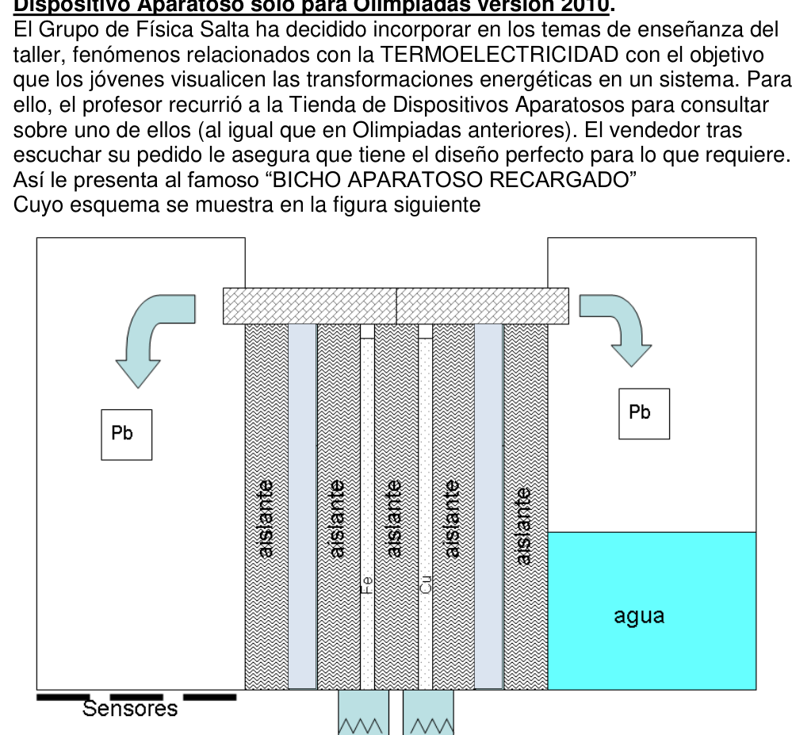
Topic: Circuits, Thermodynamics Metodi: Kirchhoff’s Laws, First Law of Thermodynamics, Conservation of Energy Competenze: Physical Reasoning, Mathematical Modeling Objects: Resistor, Battery, Rod Fonte: Testo (PDF) — p.3
Basta di apparecchiatura carica
PT134. Città di Salta. Blu. Dispositivo apparecchiatura solo per le Olimpiadi versione 2010. Il gruppo di fisica Salta ha deciso di inserire nei temi di insegnamento del La Commissione ha inoltre adottato una proposta di direttiva che prevede l’applicazione di misure di controllo per l’uso di energia elettrica. che i giovani visualizzino le trasformazioni energetiche in un sistema. Per Il professore si rivolse al negozio di dispositivi automatici per consultarlo. su uno di loro (come nelle Olimpiadi precedenti). Il venditore dietro ascoltare la sua richiesta ti assicura che ha il design perfetto per ciò che richiede. Ecco come presenta il famoso “BICCO CARGATO RICARGATO” Il cui schema è mostrato nella figura seguente
Il dispositivo si attiva quando le barre di ferro e rame si dilatano. sufficiente per toccare il interruttore di accensione situato nella parte superiore di
- Le stesse. Per questo, tali barre devono essere riscaldate utilizzando un certo circuito. 1- Desiderare progettare i circuiti Z. Ognuno con quattro resistenze. identiche R = 0,75Ω e con una batteria che fornisce un ΔV = 3V con una resistenza interna pari alle resistenze connesse; in tal modo che si dissipi la massima potenza possibile. Squamatizzare il circuito e Trova questa potenza. 2- La potenza dissipata è totalmente destinata a riscaldare le barre di Copro e ferro (vedi figura). Le barre hanno una sezione trasversale molto piccoli, e si considerano solo dilatati linealmente. I suoi . Le lunghezze iniziali sono uguali, e le loro densità lineari sono ρ1 = 9. 10-3 gr/cm y ρ2 = 8. 10-3 gr/cm, rispettivamente. La distanza tra i punti estremamente superiori delle barre fino agli attivatori delle La velocità di lancio è di ΔL = 2 mm. a) Trova l’espressione della differenza di temperatura che ti serve ogni barra per attivare il dispositivo. b) Calcolare il tempo impiegato da ogni barra per attivare i dispositivi.
OAF 2010 - 84 Datati:
- CeFe = 450 J/Kg.oC
- αFe = 1,2 . 10-5 ºC-1
*CeCu = 385 J/Kg.oC *αCu = 1,7 . 10-5 ºC-1
Dopo aver attivato ogni sezione del dispositivo, ogni parte lancia blocchi di massa M = 15 kg di piombo ogni minuto e mezzo (tc). 3- All’interno del contenitore chiuso a destra c’è magua = 30 kg a temperatura T0 = 10ºC. I blocchi di piombo sono a una temperatura Tb = 100°C. Supponiamo che quando un blocco cade in acqua, il tempo per raggiungere il Il calore tra loro è scarsa rispetto al tc e che il calore E’ quasi nulla. Trova la temperatura di equilibrio Te quando sono caduti due blocchi. Data: *CePb = 129 J/Kg .oC *Ceagua = 4180 J/Kg. ºC 4- Il pavimento del compartimento sinistro ha sensori che traducono la presenza di corpi in variazioni di temperatura. Questi sensori funzionano in modo tale che quando sentono il peso di un corpo Appoggiato sul pavimento, la stanza isolata passa da una temperatura iniziale a Un finale. Tuttavia, sono mal configurati, quindi per quando non c’è Mass su il suolo, sentono un peso U dell’ordine di 106N. Quando un blocco cade, si compie: Tf/T = P/U Essendo, Tf: temperatura dopo il crollo del blocco. T: Temperatura prima che il blocco crolla. P: peso che i sensori sentono. Prima di accendere il dispositivo, la temperatura del Il compartimento è Ti = 300K. Inoltre, i sensori diminuiscono del 20% La temperatura di ogni minuto e mezzo (il tempo in cui i blocchi) a) Qual è la variazione di temperatura più elevata? La presenza di una sostanza di origine di un’altra sostanza è significativa, la causa del contatto a piatto - massa o di un’altra sostanza. nel corso del tempo? Spiegami. b) Determina la temperatura del sistema quando sono caduti due. blocchi.
Topic: Circuits, Thermodynamics Metodi: Kirchhoff’s Laws, First Law of Thermodynamics, Conservation of Energy Competenze: Physical Reasoning, Mathematical Modeling Objects: Resistor, Battery, Rod Fonte: Testo (PDF) — p.3
The following information is provided for in the Annex to this Regulation:
PT134. Salt City. Blue, please. Device device only for the 2010 Olympics version. The Salta Physics Group has decided to incorporate the teaching of the The aim of the workshop is to develop a new approach to thermoelectricity. The young people can visualize the energy transformations in a system. For The professor turned to the Appliance Store for advice. about one of them (as in previous Olympics). The salesman behind . Listening to your request assures you that you have the perfect design for what you require. This is how you introduce the famous “BICHO APARATOSO RECARGADO” The following figure shows the scheme
The device is activated when the iron and copper bars are dilated. enough to touch the ignition switch located on the top of The same. For this purpose, such bars must be heated using a certain circuit. 1- Desire to design Z circuits. Each with four resistors . identical R = 0,75Ω and with a battery providing a ΔV = 3V with an internal resistance equal to the connected resistance; thus I want to get the maximum power out of the system. Sketch that circuit and Find this power. 2- The dissipated power is entirely intended to heat the bars of the Copper and iron (see figure). The bars have a cross section. very small, and they would only be considered to be linearly dilating. His . The initial lengths are equal, and their linear densities are ρ1 = 9. 10-3 gr/cm y ρ2 = 8. 10 to 3 grams/cm, respectively. The distance between the The upper end points of the bars to the activators of the bars The rate of the machine is ΔL = 2 mm. (a) Find the expression of the temperature difference you need Each bar to activate the device. (b) Calculate the time it takes each bar to activate the devices.
The following points shall be added:
The data:
The following is the list of the products used in the manufacture of the product:
The value of the underlying asset shall be the sum of the underlying asset’s assets. 10-5 ºC-1
The following table shows the results of the calculations:
The value of the underlying assets shall be the sum of the underlying assets. 10-5 ºC-1
After each section of the device is activated, each part launches mass blocks M = 15 kg of lead per minute and a half (tc). 3- Inside the right closed container is magua = 30kg at temperature T0 = 10ºC. Lead blocks are at a temperature of Tb = 100oC. Assuming that by dropping a block into water, the time to achieve the The thermal balance between them is negligible compared to tc and that heat The amount of money given to the environment is almost zero. Find the equilibrium temperature when you ‘ve dropped two . blocks. The data are available in the following formats: ºC 4- The floor of the left compartment has sensors that translate the the presence of bodies in temperature variations. These sensors . They work in such a way that when you feel the weight of a body Leaning on the floor, the insulated room goes from an initial temperature to A final one. However, they are misconfigured so for when there is no mass on the ground they feel a U weight of the order of 106N. When a block falls, it is fulfilled: Tf/T = P/U Being, Tf: temperature after the block falls. T: Temperature before the block falls. Q: Weight sensed by sensors. Before the device is switched on, the temperature of the device is The compartment is Ti = 300K. In addition, the sensors are down by 20 percent. The temperature of the water is the temperature of the water every minute and a half (the time the water falls). (Block) (a) Which of the two temperature variations is more The main reason for this is that the the passage of time? - Explain that. (b) Determine the system temperature when two have fallen. blocks.
Topic: Circuits, Thermodynamics Metodi: Kirchhoff’s Laws, First Law of Thermodynamics, Conservation of Energy Competenze: Physical Reasoning, Mathematical Modeling Objects: Resistor, Battery, Rod Fonte: Testo (PDF) — p.3
Quien mato al Senor Burns
PT135. Ciudad de Salta. Azul.
¿Quién mató al Señor Burns?
En la famosa serie televisiva Los Simpson, el capitulo Quién mató al Señor
Burns es el único dividido en dos partes.
La primera parte comienza cuando el director de la Escuela Primaria de
Springfield anuncia en los medios que ha descubierto una fuente de petróleo
bajo la escuela. Este hallazgo beneficiaria en millones de dólares a la escuela.
Sin embargo, el ambicioso Sr. Burns ha decidido quedarse con todo el petróleo.
Inicialmente se lo pide al director Skinner amablemente disfrazado de un joven
alumno, pero al ser desenmascarado (obviamente), Skinner se opone. Por lo
tanto, el viejecito pone en marcha un plan maléfico.
LA COMPAÑÍA PERFORADORA INCLINADA BURNS. (Diseño)
1- Esta bomba de petróleo tiene la característica de ser inclinada con cierto
ángulo α con respecto al nivel del suelo horizontal. Succiona cierta
porción del petróleo total del pozo acelerándolo durante toda el recorrido
recto de la bomba de longitud L. Luego, es expulsado y sigue una
trayectoria con el objetivo de llegar a un recipiente semi-esferico de radio
OAF 2010 - 85
r. Cuando se le aplica una aceleración a0 a cierta porción, su alcance
horizontal es D. Justo en ese punto, se coloca uno de los polos del
recipiente. (Ver figura). Estudiando el comportamiento cinemático de cada
porción extraída de petróleo como partículas.
a)
Halle el valor máximo de aceleración para que las porciones caigan
dentro de la zona del recipiente. Ayuda: 2.tgα.cos2α = sen (2α)
b)
Generalice la aceleración en función al alcance horizontal “x”.
2- Llamamos x a la distancia horizontal entre los puntos C y B; y a la
aceleración aplicada para que el chorro tenga ese alcance.
- Determine la expresión para calcular el tiempo Tc que tarda un chorro
en llegar desde A hasta B en función de x, L, α y a.
3- El Señor Burns dejó la siguiente orden al ingeniero: “Quiero que luego de cada lanzamiento de chorro, la maquina se tome un tiempo Ts de recarga, no quiero que ninguna se arruine y estar pagando arreglos. Espero que en 20 lanzamientos desagoten todo el pozo, sino Smithers soltara a los perros. Siga las instrucciones y todo saldrá EXCELENTE.”. Suponiendo que el pozo es una esfera de radio R y cumpliendo las condiciones del jefe. - Encuentre la relación funcional entre cada cuanto tiempo se llenara un recipiente y las variables Tc, Ts, r, R. (Observación: Desprecie el tiempo que tarda una porción de ir de B hasta el fondo del recipiente) 4- El Señor Burns ha mandado nuevas órdenes: “Quiero que en el tiempo Td = 10 min se descargue todo el contenido del pozo, ¿Entendido?” El Ingeniero se fijó en sus planos los siguientes datos: a0 = 25 m/seg2 D = 2 km. R = 70 m. L = 260 m. Ts = 135 seg. Además, observo una anotación que mencionaba la distancia x = 2,08 km , que sería el punto donde se desea que caigan los chorros. Pero a todo esto, nunca figuraba el valor de “r”. a) Determine el valor del ángulo de inclinación. b) Con ayuda de estos datos y de las expresiones funcionales, halle el valor de “r”.
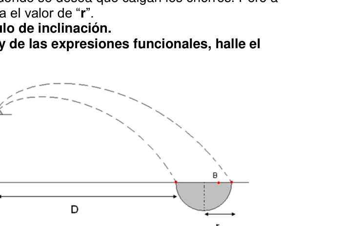
Topic: Newtonian Mechanics Metodi: Kinematic Equations, Small-Angle Approximation Competenze: Physical Reasoning, Mathematical Modeling Objects: Projectile Fonte: Testo (PDF) — p.3
Chi ha ucciso il signor Burns
PT135. Città di Salta. Blu. Chi ha ucciso il signor Burns? Nella famosa serie televisiva dei Simpson, il capitolo Chi ha ucciso il Signore. Burns è l’unico diviso in due parti. La prima parte inizia quando il direttore della scuola elementare di Springfield annuncia ai media che ha scoperto una fonte di petrolio. sotto la scuola. Questo risultato avrebbe beneficiato la scuola di milioni di dollari. Tuttavia, l’ambizioso signor Burns ha deciso di tenere tutto il petrolio. Inizialmente lo chiede al direttore Skinner, gentilmente travestito da giovane. studente, ma quando viene svelato (ovviamente), Skinner si oppone. Per questo Così l’anziano mette in atto un malefico piano. La compagnia di lavoro Inclinada Burns. (Disegno) 1- Questa bomba di petrolio ha la caratteristica di essere inclinata con un certo angolo α rispetto al livello del suolo orizzontale. Succhia una certa .
- la porzione del petrolio totale del pozzo accelerandolo durante tutto il percorso la linea della pompa di lunghezza L. Poi viene espulso e segue una Il percorso per raggiungere un contenitore radio semisferico
OAF 2010 - 85 r. Quando viene applicata un’accelerazione a0 a una certa porzione, la sua portata L’orizzonte è D. Proprio a quel punto, si colloca uno dei poli del contenitore. (vedi figura). Studiando il comportamento cinematografico di ciascuna persona una porzione estratta di petrolio come particelle. a) Trova il massimo valore di accelerazione per far cadere le porzioni all’interno della zona del recipiente. Aiuto: 2.tgα.cos2α = sen (2α) b) Generalizza l’accelerazione in funzione del raggio orizzontale x. 2- Chiamiamo x alla distanza orizzontale tra i punti C e B; e a l’accelerazione applicata per consentire al jet di raggiungere tale portata.
- Determina l’espressione per calcolare il tempo Tc di un jet per arrivare da A a B in funzione di x, L, α e a. 3- Il signor Burns ha lasciato l’ordine al suo ingegnere: Ogni lancio di jet, la macchina prende un tempo Ts di Non voglio che nessuno si rovini e che paghi gli arredamenti. Spero che in 20 lanci si esaurisca tutto il pozzo, se non Smithers. Lascia andare i cani. Segui le istruzioni e tutto andrà perfetto. Supponiamo che il pozzo sia una sfera di radio R e che le condizioni siano soddisfatte.
- Il capo.
- Trova il rapporto funzionale tra ogni tempo di riempimento di un contenitore e le variabili Tc, Ts, r, R. (Nota: disprezza il tempo) che richiede una porzione per andare dal B al fondo del recipiente) 4 - Il signor Burns ha dato nuovi ordini: = 10 minuti scarica tutto il contenuto del pozzo, capito? L’Ingegnere ha fissato nei suoi piani i seguenti dati: a0 = 25 m/seg2 D = 2 km. R = 70 m. L = 260 m. Ts = 135 Seg. Inoltre, ho notato una nota che diceva che la distanza x = 2,08 Il punto in cui si desidera che i jet cadano. Ma a E non ho mai visto il valore di r. a) Determina il valore dell’angolo di inclinamento. b) Con l’aiuto di questi dati e delle espressioni funzionali, si trova il Valore di r.
Topic: Newtonian Mechanics Metodi: Kinematic Equations, Small-Angle Approximation Competenze: Physical Reasoning, Mathematical Modeling Objects: Projectile Fonte: Testo (PDF) — p.3
Whoever killed Mr. Burns
PT135. Salt City. Blue, please. Who killed Mr. Burns? In the famous television series The Simpsons, the chapter Who Killed the Lord. Burns is the only one divided into two parts. The first part begins when the Primary School Principal of Springfield announces in the media that it has discovered an oil source . under the school. This finding would benefit the school in millions of dollars. However, the ambitious Mr. Burns has decided to keep all the oil. Initially , he asks Director Skinner to dress as a young man . student, but being unmasked (obviously), Skinner objects. So what ? So the old man sets out a wicked plan. The Inclined Burns Performance Company. (Design) 1- This oil pump has the characteristic of being tilted with a certain angle α with respect to the horizontal floor level. It sucks right . The total oil from the well is accelerated throughout the entire course. straight length pump L. Then he is driven out and follows a trajectory with the aim of reaching a radio semi-spherical vessel
The following points shall be added: r. When an acceleration of a0 is applied to a certain portion, its range The horizontal is D. Right at that point, one of the poles of the container. (See figure) By studying the kinematic behavior of each oil extracted as particles. a) Find the maximum acceleration value for the portions to drop. within the container area. The following table shows the results of the evaluation: b) Generate the acceleration according to the horizontal range x. 2- We call x the horizontal distance between points C and B; and a the acceleration applied to give the jet that range.
- Determine the expression to calculate the time Tc of a jet I’m going from A to B based on x, L, α and a. 3- Mr. Burns left the following order to the engineer: Every jet launch, the machine takes a time Ts of I don’t want any of them to go broke and be paying for repairs. I hope in 20 pitches they’ll run out of the well, but Smithers. Let the dogs go. Follow the instructions and everything will be EXCELLENT. Assuming the well is a sphere of radius R and meeting the conditions The boss. Find the functional relationship between each time a container and the variables Tc, Ts, r, R. (Note: Disregard the weather It takes a portion to go from B to the bottom of the container) Mr. Burns has given new orders: = 10 min all the contents of the well are downloaded, understood? The Engineer noted in his plans the following data: The following conditions shall apply: R = 70 m. L = 260 m. Ts = 135 The following is the list of the categories of products: And I also noticed an annotation that mentioned the distance x is equal to 2.08 km, which would be the point where you want the jets to fall. But a All this, it never figured out the value of r. (a) Determine the value of the angle of inclination. (b) Using these data and functional expressions, find the the value of r.
Topic: Newtonian Mechanics Metodi: Kinematic Equations, Small-Angle Approximation Competenze: Physical Reasoning, Mathematical Modeling Objects: Projectile Fonte: Testo (PDF) — p.3
Solsticio en Springfield
PT136. Ciudad de Salta. Azul.
Es el solsticio de verano en Springfield, y a nadie le interesa, salvo a dos
personas y por razones muy diferentes. Lisa es la primera, inquieta como
siempre, quiere medir la duración máxima del día dentro del valle de Springfield.
OAF 2010 - 86
Por el otro lado, siempre buscando las formas de lucrar deshonestamente, se
encuentra el Señor Burns, quien quiere acortar la duración del día para obligar a
los habitantes de la ciudad a consumir más energía eléctrica y así engrosar su
cuenta bancaria en las islas Caimán.
Lisa sabe que en su ciudad el día tendrá una duración total de 13.4 horas, pero
al estar encerrada por cerros el día dura menos.
1-Ayuda a Lisa a obtener la duración del día (en horas) en dependencia de
y (ver Imagen 1). Sean y , determinar . Nota:
para los siguientes incisos tomar estas consideraciones.
El Señor Burns, sabiendo que Springfield está prácticamente perimetralmente
cercada por cerros, decide ejecutar su plan maestro. Luego de hacer negocios
con los aliens Kang y Kodos e importar una placa de dimensiones colosales de
kriptonita, logra convencer al alcalde Quimby de encerrar Springfield con esta
placa inmensa con el supuesto fin de limpiar el aire absolutamente contaminado
de la ciudad. Sin embargo, la finalidad es otra: limpia el aire dentro de la ciudad
para enviar el aire sucio (y denso) y dejarlo estancado fuera para hacer más
difícil el paso de la luz. Teniendo en cuenta lo planteado y haciendo uso de la
Imagen 2, determinar:
a) La nueva duración del día (en horas).
b) El tiempo que tarda el sol desde que empieza a alumbrar la punta de los
cerros hasta que finalmente empieza a iluminar la ciudad. ¿Es simétrica la
situación al atardecer? Justifique.
1.14 Km x Cerro Y 200 m Cerro X 200 Aire Limpio Aire Sucio Placa de Kriptonita Imagen 2. La ciudad de Springfield luego de ser encerrada por la placa de Kriptonita. d y x Cerro Y Cerro X Imagen 1. Ciudad de Springfield
OAF 2010 - 87
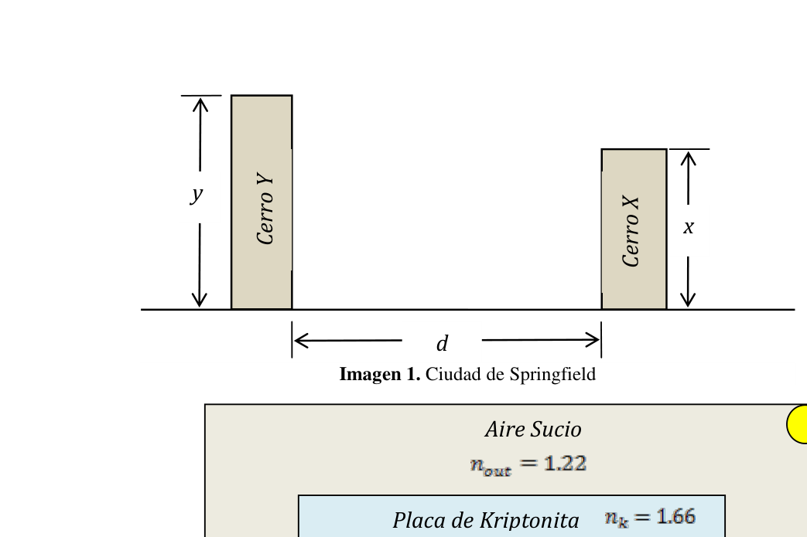
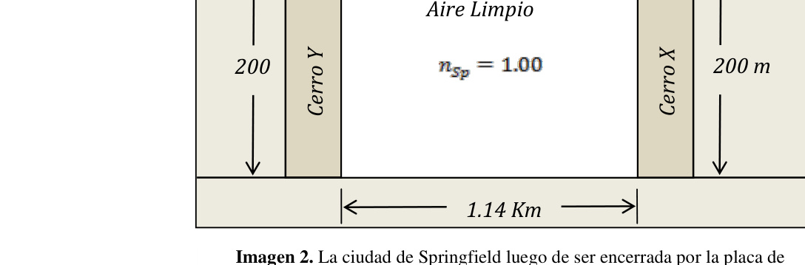
Topic: Geometric Optics, Astrophysics Metodi: Snell’s Law, Symmetry Argument Competenze: Physical Reasoning, Mathematical Modeling Objects: — Fonte: Testo (PDF) — p.3
Solstizio a Springfield
PT136. Città di Salta. Blu. E’ il solstizio d’estate a Springfield, e nessuno si interessa, tranne due. persone e per ragioni molto diverse. Lisa è la prima, inquieta come vuole misurare la massima durata della giornata all’interno della valle di Springfield.
OAF 2010 - 86 D’altra parte, cercando sempre modi per guadagnare disonestamente, si Trova il signor Burns, che vuole ridurre la durata della giornata per costringere La città consuma più energia elettrica e così ingrassare il suo conto bancario nelle isole Cayman. Lisa sa che nella sua città il giorno durerà un totale di 13,4 ore, ma Quando sono bloccate dalle colline, la giornata dura meno. 1-Aiuta Lisa a ottenere la durata della giornata (in ore) a seconda di e (vedi Figura 1). - Sei e , determinare . Nota: La Commissione ha adottato una decisione che prevede che le misure di cui all’articolo 6 del trattato siano state adottate. Signor Burns, sapendo che Springfield è praticamente perimetralmente Cercata da colline, decide di eseguire il suo piano maestro. Dopo aver fatto affari. Con gli alieni Kang e Kodos e importare una scheda di dimensioni colossali di Kryptonite, riesce a convincere il sindaco Quimby a chiudere Springfield con questa. Una grande piastra con l’ipotesi di pulire l’aria assolutamente contaminata. della città. Tuttavia, il fine è diverso: pulire l’aria all’interno della città. Per inviare l’aria sporca (e densa) e lasciarla fermata fuori per fare di più. difficile il passaggio della luce. Considerando il punto di vista e facendo uso della Immagine 2, determinare: a) La nuova durata della giornata (in ore). b) Il tempo che dura dal momento in cui il sole inizia a illuminare la punta dei ghiacci. le colline fino a quando finalmente inizia a illuminare la città. La simmetrica è La situazione al tramonto? giustifica.
1.14 Km x Cerro Y 200 m Cerro X 200
# L’aria pulita
aria sporca Placca di criptonita Immagine 2. La città di Springfield dopo essere stata chiusa dalla targa di Kriptonita. d y x Cerro Y Cerro X Immagine 1. Città di Springfield
OAF 2010 - 87
Topic: Geometric Optics, Astrophysics Metodi: Snell’s Law, Symmetry Argument Competenze: Physical Reasoning, Mathematical Modeling Objects: — Fonte: Testo (PDF) — p.3
The first is the “Solstice in Springfield”.
PT136. Salt City. Blue, please. It’s the summer solstice in Springfield, and nobody cares, except two. people and for very different reasons. Lisa is the first, restless as Always, he wants to measure the maximum length of the day inside the Springfield Valley.
The following points shall be added: On the other hand, always looking for ways to profit dishonestly, you Mr. Burns, who wants to shorten the length of the day to force him to The city’s inhabitants to consume more electricity and thus get fatter. bank account in the Cayman Islands. Lisa knows that in her city the day will have a total duration of 13.4 hours, but When you’re locked up in hills, the day is shorter. 1-Help Lisa to get the length of the day (in hours) depending on and (see Figure 1). Be and determine . Note: The following sections take these considerations. Mr. Burns, knowing that Springfield is practically perimeterally surrounded by hills, decides to execute his master plan. After doing business . With the Kang and Kodos aliens and import a massive plate of Kryptonite, he manages to convince Mayor Quimby to lock up Springfield with this. The huge plate with the supposed purpose of cleaning the absolutely polluted air. of the city. However, the purpose is different: it cleans the air inside the city. To send out dirty (and dense) air and leave it stuck out to do more. It’s hard to get through the light. Taking into account the above and making use of the Figure 2, determine: (a) The new duration of the day (in hours). (b) The time it takes for the sun to begin to shine on the tip of the hills until it finally begins to illuminate the city. Is the symmetry situation at sunset? You justify it.
1.14 Km x Cerro and 200 m Cerro X 200 Clean air . Dirty air . Cryptonite plate . Image two. The city of Springfield after being sealed off by the plaque of It’s called Kryptonite. d y x Cerro and Cerro X Image one. City of Springfield .
The following points shall be added:
Topic: Geometric Optics, Astrophysics Metodi: Snell’s Law, Symmetry Argument Competenze: Physical Reasoning, Mathematical Modeling Objects: — Fonte: Testo (PDF) — p.3
Coches de choque
PT137. San Fernando, Buenos Aires. Azul.
Varios estudiantes viajan en los coches de choque en un parque de diversiones. La masa combinada de coche A y sus ocupantes es 250 kg. La masa combinada de coche B y su ocupantes es 200 kg. Coche A se ubica a 15 m de coche B (moviéndose hacia la derecha 2.0 m/s) cuando el conductor decide chocar el automóvil de B, que está en reposo. Como se muestra en la figura. a) Coche A acelera en 1,5 a una velocidad de 5,0 m/s y luego continúa a velocidad constante hasta que choca con coche B. Calcular el tiempo total que tarda el coche A en recorrer los 15m. b) Después de la colisión, se mueve el automóvil B a la derecha a una velocidad de 4,8 m/s. i. Calcular la velocidad del auto A después del choque. ii. Indique el sentido del movimiento del auto A después del choque. c) ¿Es esto un choque elástico? Justifique su repuesta.
Topic: Conservation of Momentum, Newtonian Mechanics Metodi: Conservation of Momentum, Kinematic Equations Competenze: Physical Reasoning Objects: Cart Fonte: Testo (PDF) — p.3
Cosse di colpo
PT137. San Fernando, Buenos Aires. Blu.
Alcuni studenti viaggiano in auto da colpo in un parco di divertimento. La massa combinata della macchina A e dei suoi passeggeri è di 250 kg. La massa Combinato di auto B e suoi passeggeri è 200 kg. Auto A si trova a 15 m da auto B (movendo a destra a 2.0 m/s) quando il conducente decide colpire la macchina di B, che sta a riposo. Come mostra la figura. a) Auto A accelera a 1,5 a una velocità di 5,0 m/s e poi continua A velocità costante fino a quando non colpisce la macchina B. Calcolare il tempo Il totale che prende la macchina A per percorrere i 15 metri. b) Dopo l’incidente, la macchina B si sposta a destra verso una velocità di 4,8 m/s. i. Calcolare la velocità della macchina A dopo l’impatto. ii. Indicare il senso di movimento della macchina A dopo l’impatto. c) È un colpo elastico? giustifica la tua risposta.
Topic: Conservation of Momentum, Newtonian Mechanics Metodi: Conservation of Momentum, Kinematic Equations Competenze: Physical Reasoning Objects: Cart Fonte: Testo (PDF) — p.3
The following conditions shall apply:
PT137. It’s called San Fernando, Buenos Aires. Blue, please.
Several students travel in crash cars in an amusement park. The combined mass of car A and its occupants is 250 kg. The mass Combined car B and its occupants is 200 kg. Car A is located 15 m from Car B (moving right 2.0 m/s) when the driver decides Hit B’s car, which is at rest. As shown in the figure. (a) Car A accelerates by 1.5 at a speed of 5.0 m/s and then continues At constant speed until it collides with car B. Calculate the time Total time it takes car A to run the 15m. (b) After the collision, car B moves to the right to a speed of 4,8 m/s. i. Calculate the speed of car A after the collision. ii. Indicate the direction of movement of car A after the collision. c) Is this an elastic shock? Justify your answer.
Topic: Conservation of Momentum, Newtonian Mechanics Metodi: Conservation of Momentum, Kinematic Equations Competenze: Physical Reasoning Objects: Cart Fonte: Testo (PDF) — p.3
PT138. San Fernando, Buenos Aires. Azul.
Bloque A de masa 4,0 kg está en una mesa horizontal sin rozamiento y se
coloca en contra de un resorte de masa despreciable con la constante elástica
650 N/ m. El otro extremo del resorte se fija a la pared. El bloque es empujado
hacia la pared hasta que el resorte se ha comprimido una distancia X, como se
muestra arriba. El bloque se libera y sigue la trayectoria que muestra. cayendo
0,80 m en vertical y llega a un objetivo en el piso que está a una distancia
horizontal de 1,2 m del borde de la mesa. La resistencia del aire es
insignificante.
a) Calcular el tiempo transcurrido desde el instante que el bloque A deja la mesa hasta el instante que toca el piso. b) Calcular la velocidad del bloque en el instante que deja la mesa. c) Calcular la distancia X la cual el resorte fue comprimido.
OAF 2010 - 88 Bloque B, también de 4,0 kg de masa, se coloca ahora en el borde de la mesa. El resorte es de nuevo comprimido una distancia X, y se libera el bloque A. Cuando bloque A llega al final de la mesa, choca instantáneamente y se pega al bloque B. Los bloques siguen la trayectoria mostrada en la figura de arriba y golpea contra el suelo a una distancia horizontal d desde el borde de la mesa. d) Calcular d si X es igual al valor determinado en la pregunta c). e) Consideremos el sistema formado por el resorte, los bloques, y la mesa. ¿Cómo funciona el E2 (total de la energía mecánica del sistema justo antes de los bloques de levantarse de la mesa) comparado con E1 (la energía mecánica total del sistema justo antes de el bloque A se libera)? Justifique su repuesta. o o
Topic: Conservation of Energy, Newtonian Mechanics Metodi: Conservation of Energy, Hooke’s Law, Conservation of Momentum Competenze: Physical Reasoning Objects: Block, Spring Fonte: Testo (PDF) — p.3
PT138. San Fernando, Buenos Aires. Blu. Blocco A di massa di 4,0 kg è su un tavolo orizzontale senza ruggine e si Si pone contro un’esposizione di massa disprezzabile con la costante elastica 650 N/ m. L’altra estremità della primavera è fissata al muro. Il blocco è spinto. verso il muro fino a quando la sorgente è stata compressa una distanza X, come si mostra sopra. Il blocco si libera e segue il percorso che mostra. cadendo 0,80 m verticale e raggiunge un obiettivo sul pavimento che è a distanza a 1,2 m dal bordo della tavola. La resistenza dell’aria è
- Non è importante.
a) Calcolare il tempo trascorso dall’istante in cui il blocco A lascia la il tavolo fino all’istante in cui tocca il pavimento. b) Calcolare la velocità del blocco all’istante in cui lascia il tavolo. c) Calcolare la distanza X da cui è stata compressa la resorsione.
OAF 2010 - 88 Blocco B, anche di 4,0 kg di massa, è ora posto sul bordo del tavolo. La sorgente viene compressata di nuovo una distanza X, e viene rilasciato il blocco A. Quando il blocco A arriva alla fine del tavolo, colpisce immediatamente e si attacca al tavolo. blocco B. I blocchi seguono il percorso mostrato nella figura sopra e colpisce il pavimento a distanza orizzontale d dal bordo del tavolo. d) Calcolare d se X è uguale al valore determinato nella domanda c). e) Considerate il sistema costituito dal resortimento, dai blocchi e dal tavolo. Come funziona l’E2 (total di energia meccanica del sistema giusto prima che i blocchi si alzino dalla tavola) rispetto a E1 (la energia meccanica totale del sistema appena prima che il blocco A sia rilasciato)? giustifica la tua risposta. o o
Topic: Conservation of Energy, Newtonian Mechanics Metodi: Conservation of Energy, Hooke’s Law, Conservation of Momentum Competenze: Physical Reasoning Objects: Block, Spring Fonte: Testo (PDF) — p.3
PT138. It’s called San Fernando, Buenos Aires. Blue, please. Block A of 4.0 kg mass is on a horizontal table without grating and is It puts against a despicable mass spring with the constant elasticity 650 N/ m. The other end of the spring is attached to the wall. The block is pushed. towards the wall until the spring has compressed a distance X, as it is It’s up there. The block is released and follows the path it shows. Falling down 0.80 m in vertical and reaches a target on the floor that is at a distance horizontal 1.2 m from the edge of the table. The air resistance is It’s not insignificant.
(a) Calculate the time elapsed from the moment block A leaves the table until the moment it touches the floor. (b) Calculate the speed of the block at the instant it leaves the table. (c) Calculate the distance X at which the spring was compressed.
The following is the list of the countries of the European Union: Block B, also weighing 4 kg, is now placed on the edge of the table. The spring is compressed back a distance X, and block A is released. When Block A reaches the end of the table, it instantly crashes and sticks to the table. Block B. The blocks follow the trajectory shown in the figure above and hits the ground at a horizontal distance d from the edge of the table. (d) Calculate whether X is equal to the value determined in question (c). e) Consider the system of the spring, the blocks, and the table. How does E2 (total mechanical energy of the fair system) work? Before the blocks rise from the table) compared to E1 (the total mechanical energy of the system just before block A is released)? Justify your answer. o o
Topic: Conservation of Energy, Newtonian Mechanics Metodi: Conservation of Energy, Hooke’s Law, Conservation of Momentum Competenze: Physical Reasoning Objects: Block, Spring Fonte: Testo (PDF) — p.3
PT139. San Fernando, Buenos Aires. Azul.
Como se muestra arriba, un haz de luz roja de longitud de onda de 6,65
m en el aire incide sobre un prisma de vidrio a un ángulo con la recta normal.
El vidrio tiene un índice de refracción n = 1,65 para la luz roja. Cuando =
el rayo emerge en el otro lado del prisma con un ángulo = .
a) Calcular el ángulo de refracción en el lado izquierdo del prisma.
b) Usando el mismo prisma, describen un cambio en la configuración que
daría lugar a la reflexión total interna del haz de luz roja en el lado derecho
del prisma. Justifica tu respuesta.
c) El haz incidente está ahora perpendicular a la superficie. El vidrio está
recubierta de una fina cinta que tiene un índice de refracción
para reducir el reflejo parcial del haz de luz roja. Calcular la longitud de
onda de la luz roja en la cinta.
Topic: Geometric Optics, Wave Optics Metodi: Snell’s Law, Interference & Diffraction Analysis Competenze: Physical Reasoning Objects: Prism Fonte: Testo (PDF) — p.3
PT139. San Fernando, Buenos Aires. Blu.
Come mostrato sopra, un raggio di luce rossa di lunghezza d’onda di 6,65 M in aria incide su un prisma di vetro ad un angolo con la retta normale. Il vetro ha un indice di refraczione n = 1,65 per la luce rossa. Quando = Il raggio emerge dall’altra parte del prisma con un angolo = . a) Calcolare l’angolo di rifrazione sul lato sinistro del prisma. b) Usando lo stesso prisma, descrivono un cambiamento di configurazione che che avrebbe portato alla riflessione totale interna del raggio di luce rossa sul lato destro. della prisma. giustifica la tua risposta. c) Il fascio incidente è ora perpendicolare alla superficie. Il vetro è… rivestita di una sottile cinta che ha un indice di rifrazione per ridurre il riflesso parziale del fascio di luce rossa. Calcolare la lunghezza di onda di luce rossa sul nastro.
Topic: Geometric Optics, Wave Optics Metodi: Snell’s Law, Interference & Diffraction Analysis Competenze: Physical Reasoning Objects: Prism Fonte: Testo (PDF) — p.3
PT139. It’s called San Fernando, Buenos Aires. Blue, please.
As shown above, a red light beam of wavelength of 6.65 m in the air affects a glass prism at an angle with the normal straight. The glass has a refractive index n = 1,65 for red light. When = The beam emerges at the other end of the prism at an angle = . (a) Calculate the angle of refraction on the left side of the prism. (b) Using the same prism, describe a change in configuration that It would result in the total internal reflection of the red light beam on the right side. The prism. Justify your answer. (c) The incident beam is now perpendicular to the surface. The glass is . coated with a thin tape that has a refractive index to reduce the partial reflection of the red light beam. Calculate the length of wave of red light on the tape.
Topic: Geometric Optics, Wave Optics Metodi: Snell’s Law, Interference & Diffraction Analysis Competenze: Physical Reasoning Objects: Prism Fonte: Testo (PDF) — p.3
PT140. Caleta Olivia, Santa Cruz. Verde.
Una partícula de masa m= 1 kg se lanza verticalmente y hacia arriba desde el
suelo con una velocidad inicial de 9.8 m/s.
a) Representa, en una misma gráfica, la energía cinética, la energía Potencial
y la energía mecánica total de esta partícula en función del tiempo, es
decir, poniendo la variable t en el eje OX y la energía en el eje OY. Haz la
gráfica entre t=0 y t=2 s.
b) Haz lo mismo que en el apartado anterior, pero ahora pon en el eje OX la
altura de la partícula, entre 0 y la altura máxima que alcance.
Topic: Conservation of Energy Metodi: Conservation of Energy, Kinematic Equations Competenze: Physical Reasoning Objects: Projectile Fonte: Testo (PDF) — p.3
PT140. - Calma Olivia, Santa Cruz. Verde. Una particella di massa m= 1 kg viene lanciata verticalmente e verso l’alto dal terra con una velocità iniziale di 9,8 m/s. a) Rappresenta, in un unico grafico, l’energia cinetica, l’energia potenziale e l’energia meccanica totale di questa particella in funzione del tempo, è Cioè, mettendo la variabile t sull’asse OX e l’energia sull’asse OY. Fai la grafico tra t=0 e t=2 s. b) Fare lo stesso che in precedenza, ma ora mettere sull’asse OX la Altizza della particella, tra 0 e l’altezza massima raggiunta.
Topic: Conservation of Energy Metodi: Conservation of Energy, Kinematic Equations Competenze: Physical Reasoning Objects: Projectile Fonte: Testo (PDF) — p.3
PT140. Put Olivia down, Santa Cruz. Green, please. A particle mass m= 1 kg is thrown upwards and vertically from the ground at an initial speed of 9.8 m/s. (a) It represents, in the same graph, kinetic energy, potential energy And the total mechanical energy of this particle, based on time, is So we’re going to put the variable t on the OX axis and the energy on the OY axis. Do the graph between t=0 and t=2 s. (b) Do the same as in the previous paragraph, but now put the OX axis on the the particle height, between 0 and the maximum height it reaches.
Topic: Conservation of Energy Metodi: Conservation of Energy, Kinematic Equations Competenze: Physical Reasoning Objects: Projectile Fonte: Testo (PDF) — p.3
PT141. Caleta Olivia, Santa Cruz. Verde.
Un objeto cae cerca de la superficie terrestre con una aceleración constante de
9.8 m/s2. Esto significa que:
a) El objeto cae 9.8 m durante el primer segundo del movimiento
OAF 2010 - 89 b) El objeto cae 9.8 m durante cada segundo del movimiento c) La velocidad del objeto aumenta en 9.8 m/s durante cada segundo del movimiento d) La aceleración del objeto aumenta en 9.8 m/s2 durante cada segundo del movimiento e) La fuerza gravitatoria sobre el objeto vale 9.8 N.
Topic: Newtonian Mechanics Metodi: Kinematic Equations Competenze: Physical Reasoning Objects: — Fonte: Testo (PDF) — p.3
PT141. - Calma Olivia, Santa Cruz. Verde. Un oggetto cade vicino alla superficie terrestre con una costante accelerazione di 9.8 m/s2. Ciò significa che: a) L’oggetto cade a 9,8 m durante il primo secondo di movimento
OAF 2010 - 89 b) L’oggetto cade a 9,8 m per ogni secondo di movimento c) La velocità dell’oggetto aumenta di 9.8 m/s per ogni secondo del movimento d) L’accelerazione dell’oggetto aumenta di 9.8 m/s2 per ogni secondo del movimento e) La forza gravitazionale sull’oggetto vale 9,8 N.
Topic: Newtonian Mechanics Metodi: Kinematic Equations Competenze: Physical Reasoning Objects: — Fonte: Testo (PDF) — p.3
PT141. Put Olivia down, Santa Cruz. Green, please. An object falls near the Earth’s surface at a constant acceleration of 9.8 m/s2. This means that: (a) The object falls 9.8 m during the first second of movement
The following is the list of the countries of the European Union: (b) The object drops 9.8 m for every second of movement (c) The speed of the object increases by 9.8 m/s for each second of the Movement (d) The acceleration of the object increases by 9.8 m/s2 for every second of the Movement (e) The gravitational force on the object is 9.8 N.
Topic: Newtonian Mechanics Metodi: Kinematic Equations Competenze: Physical Reasoning Objects: — Fonte: Testo (PDF) — p.3
PT142. Caleta Olivia, Santa Cruz. Verde.
Si la cara superior de un cubo estuviera a una profundidad de 10 m en agua
salada, de densidad 1,2 g/cm3 y la arista tuviese 2 m de longitud. Calcular:
A. La presión en la cara superior, así como la fuerza que tanto el agua como la
atmósfera ejercen sobre ella.
B. La presión en la cara inferior, así como la fuerza que tanto el agua como la
atmósfera ejercen sobre ella.
C. La diferencia de presión y de fuerza entre ambas caras.
D. El empuje que sufre si en el interior del cuerpo hay presión cero.
E. Si el peso del cuerpo es de 8·103 Kg. ¿Cuánto vale la resultante de peso y
empuje?. ¿Flota dicho cuerpo?
F. Si lo utilizásemos como “globo submarino”. ¿Cuántos kilos podría elevar a la
superficie?
G. Repetir todo el proceso si la cara superior está a 100 m de profundidad.
H. Explica, razonadamente, lo que hayas descubierto.
Topic: Fluid Mechanics Metodi: Hydrostatic Equilibrium Competenze: Physical Reasoning Objects: Block, Container Fonte: Testo (PDF) — p.3
PT142. - Calma Olivia, Santa Cruz. Verde. Se la parte superiore di un cubo fosse a 10 metri di profondità in acqua salato, di densità di 1,2 g/cm3 e il bordo di 2 m di lunghezza. Calcolare: A. La pressione sul viso superiore, così come la forza che l’acqua e la l’atmosfera che esercitano su di essa. B. La pressione sul viso inferiore, così come la forza che l’acqua e la l’atmosfera che esercitano su di essa. C. La differenza di pressione e forza tra i due lati. D. La spinta che si prova se all’interno del corpo c’è pressione zero. E. Se il peso corporeo è di 8·103 Kg. Quanto vale il risultante peso e
- Spingere? - Flutta quel corpo? F. Se lo usassimo come “globe sottomarino”. Quanti chili potrebbe sollevare la superficie? G. Ripetere l’intero processo se la faccia superiore è a 100 metri di profondità. H. Spiega, ragionevolmente, quello che hai scoperto.
Topic: Fluid Mechanics Metodi: Hydrostatic Equilibrium Competenze: Physical Reasoning Objects: Block, Container Fonte: Testo (PDF) — p.3
PT142. Put Olivia down, Santa Cruz. Green, please. If the top of a cube were 10 meters deep in water salt, with a density of 1,2 g/cm3 and the edge 2 m long. Calculation: A. The pressure on the upper face, as well as the force that both water and the atmosphere they exert on it. B. The pressure on the lower face, as well as the force that both water and the atmosphere they exert on it. C. The difference in pressure and force between the two faces. D. The thrust it suffers if there is zero pressure inside the body. E. If body weight is 8·103 Kg. What is the resulting weight and What do you mean, push? You float that body? F. If we use it as an underwater balloon. How many pounds could I lift to the surface? G. Repeat the entire process if the upper face is 100 m deep. H. Explain, reasonably, what you’ve discovered.
Topic: Fluid Mechanics Metodi: Hydrostatic Equilibrium Competenze: Physical Reasoning Objects: Block, Container Fonte: Testo (PDF) — p.3
Pelotas y radares
PT143. Ciudad de Buenos Aires. Azul.
Pelotas y radares
A José Luis le gusta mucho patear la pelota, y también jugar con los tiempos. Él
patea muy bien y con mucha fuerza obteniendo una velocidad de 90km/h, y
juega contra una pared. Suponemos el choque contra la misma es elástico y
despreciamos el rozamiento con el piso.
a) ¿Cuánto tiempo tarda la pelota en llegar a la pared?¿Cuánto tarda en
regresar?
Ahora José Luis decide pegarle hacia arriba formando un ángulo a con respecto
al piso.
b) ¿Con qué ángulo debe patear la pelota para que tarde el doble de tiempo
en ir y volver?
c) ¿Cuántos piques hace en la ida? ¿Y en la vuelta?
d) ¿A qué altura de la pared pega la pelota?
e) ¿Puede José Luis elegir un ángulo para que la pelota vaya y regrese sin
picar en el piso?
Ahora José Luis decide experimentar con muchas pelotas y sus tiempos. Patea a
raz del piso pelotas con intervalos de 1 segundo.
f) ¿Cada qué intervalo de tiempo pega la pelota en la pared si José Luis
avanza a 10,8km/h? ¿Y si retrocede a la misma velocidad?
Como habrán calculado en el item anterior, en un caso el periodo se agranda y
en otro se acorta. Este fenómeno de cambio de frecuencia se llama Efecto
Doppler y ocurre tanto si se mueve el emisor (pateador) o si el que se mueve es
el receptor (pared). Las fórmulas para el cálculo de las nuevas frecuencias son:
y
, con f la nueva frecuencia de llegada a la pared y
f0 la frecuencia original; con v la velocidad de la pelota y vs y vr la velocidad del pateador y la pared (si fuese una pared móvil) en algún orden.
OAF 2010 - 90
g) Según el resultado del item anterior, determine qué fórmula corresponde
al enunciado, es decir del emisor en movimiento, y cuál es la velocidad de
José Luis, vs o vr.
El fenómeno que ud. acaba de describir es utilizado no con futbolistas y pelotas,
sino con ondas de radio para detectar la velocidad de los automóviles con el
llamado radar de control de velocidad. Las ondas utilizadas poseen una
frecuencia de 25GHz y velocidad c.
h) Calcule el intervalo de tiempo o periodo característico que poseen estas
ondas.
Para medir la velocidad de un auto la señal de radar se apunta con una pistola y
se recibe el rebote de la misma en el vehículo. En este caso el efecto es doble,
ya que la onda llega al auto y luego regresa al emisor. El resultado se resta de la
frecuencia original y de esa forma se puede obtener la velocidad.
i) Calcule la variación en la frecuencia medida para un automovil yendo a
90km/h. ¿Cuál es el límite de variación de frecuencia medida para un
máximo de velocidad de 100km/h?
Datos:
g=9.8m/s2; c=3.108m/s;
1GHz=109Hz;
1Hz=1/seg
Topic: Oscillations & Waves, Newtonian Mechanics Metodi: Kinematic Equations, Wave Equation Competenze: Physical Reasoning, Mathematical Modeling Objects: Ball Fonte: Testo (PDF) — p.3
Pilotti e radar
PT143. Città di Buenos Aires. Blu. Pelle e radar A José Luis piace molto calciare la palla, e anche giocare con il tempo. Él calcia molto bene e molto forte ottenendo una velocità di 90 km/h, e Gioca contro un muro. Supponiamo che l’impatto contro la stessa sia elastico e disprezziamo il taglio con il pavimento. a) Quanto tempo ci vuole per raggiungere il muro?
-
Torneremo? Ora José Luis decide di colpirlo verso l’alto formando un angolo a riguardo.
-
Al pavimento. b) A che angolo deve calciare la palla per ritardare il doppio del tempo?
-
di andare e tornare? c) Quanti picchi fa in andata? E nel giro? d) A che altezza del muro colpisce la palla? e) José Luis può scegliere un angolo per far andare e tornare la palla senza
-
Picchiare il pavimento? Ora José Luis decide di sperimentare con molte palle e i loro tempi. - Scalza a Scacciate le palle a intervalli di 1 secondo. f) Ogni intervallo di tempo che colpisce la palla sul muro se José Luis
-
A 10,8 km/h? E se si ritira alla stessa velocità? Come si è calcolato nel precedente punto, in un caso il periodo viene ampliato e in un altro si accorcia. Questo fenomeno di variazione di frequenza è chiamato effetto. Doppler e si verifica sia se si muove l’emittente (batter) o se si muove l’emittente il ricevitore (parete). Le formule per calcolare le nuove frequenze sono:
y
, con f la nuova frequenza di arrivo al muro e f0 la frequenza originale; con v la velocità della palla e vs e vr la velocità del e il muro (se fosse un muro mobile) in qualche ordine.
OAF 2010 - 90 (g) Sulla base del risultato di cui sopra, determinare quale formula corrisponde alla frase, cioè dell’emittente in movimento, e qual è la velocità di José Luis, vs o vr. Il fenomeno che hai visto. - Non è usato con calciatori e palline. Ma con le onde radio per rilevare la velocità delle auto con il chiamato radar di controllo della velocità. Le onde usate hanno un Frequenza di 25 GHz e velocità c. h) Calcolare l’intervallo di tempo o periodo caratteristico che queste possiedono onde. Per misurare la velocità di un’auto il segnale radar viene puntato con una pistola e se viene riboccato nel veicolo. In questo caso l’effetto è doppio, Poiché l’onda arriva in macchina e poi torna all’emittente. Il risultato è dedotto dalla la frequenza originale e così si ottiene la velocità. i) Calcolare la variazione della frequenza misurata per un’automobile 90km/h. Qual è il limite di variazione di frequenza misurata per un velocità massima di 100 km/h?
Datati:
g=9.8m/s2; c=3.108m/s;
1GHz=109Hz;
1Hz = 1 secondo
Topic: Oscillations & Waves, Newtonian Mechanics Metodi: Kinematic Equations, Wave Equation Competenze: Physical Reasoning, Mathematical Modeling Objects: Ball Fonte: Testo (PDF) — p.3
pilots and radars
PT143. City of Buenos Aires. Blue, please. Balls and radars . Jose Luis likes to kick the ball, and also play with the times. Él He kicks very well and very hard getting a speed of 90km/h, and He’s playing against a wall. Suppose the impact against it is elastic and We despise the ground rubbing. (a) How long does it take the ball to reach the wall?
-
You want to come back? Now Jose Luis decides to stick it upwards forming an angle to the relative On the floor. (b) What angle should you kick the ball at to delay twice as long Going back and forth? (c) How many spikes does he make on the way? What about the turn? d) How high up on the wall does the ball hit? (e) Can Jose Luis choose an angle for the ball to go back and forth without?
-
I’m gonna bite the floor? Now Jose Luis decides to experiment with many balls and their times. Hit the . Raze the floor balls at intervals of 1 second. f) Every time the ball hits the wall if Jose Luis It’s moving at 10.8 miles an hour? What if it’s going backwards at the same speed? As you have calculated in the previous item, in one case the period is extended and In another, it shortened. This frequency change phenomenon is called Effect. Doppler and occurs either if the emitter (switcher) is moving or if the moving one is the receiver (wall). The formulas for calculating the new frequencies are:
y
, with f the new frequency of arrival at the wall and f0 the original frequency; with v the speed of the ball and vs and vr the speed of the ball. kick and the wall (if it were a moving wall) in some order.
The following points shall be added: (g) Depending on the result of the previous item, determine which formula corresponds The speed of the transmitter is the speed of the transmitter. Jose Luis, vs or vr. The phenomenon you heard. Just described is used not with football players and balls, But with radio waves to detect the speed of cars with the It’s called speed control radar. The waves used have a 25 GHz frequency and speed c. (h) Calculate the time interval or characteristic period they have. Waves. To measure the speed of a car the radar signal is pointed at with a pistol and the vehicle is rebooted. In this case the effect is double, as the wave reaches the car and then goes back to the emitter. The result is deduced from the The original frequency and thus the speed can be obtained. (i) Calculate the variation in the measured frequency for a vehicle going to 90km/h. What is the measured frequency variation limit for a maximum speed of 100 km/h?
The data:
g=9.8m/s2; c=3.108m/s;
1GHz = 109Hz;
1Hz = 1 second
Topic: Oscillations & Waves, Newtonian Mechanics Metodi: Kinematic Equations, Wave Equation Competenze: Physical Reasoning, Mathematical Modeling Objects: Ball Fonte: Testo (PDF) — p.3
Acelerando particulas
PT144. Ciudad de Buenos Aires. Azul.
Acelerando partículas
Los aceleradores de partículas pueden llegar a tener dimensiones inmensas,
como el LHC que se encuentra en Suiza y es tan famoso en estos días. Sin
embargo, los primeros aceleradores fueron mucho más pequeños, y sirven como
inyectores de partículas para los más grandes o para aplicaciones de estudios
médicos entre otros usos. Uno de ellos es el cilcotrón, que funciona acelerando
partículas con un campo eléctrico, y para que estas no se escapen, se las
mantiene girando con un campo magnético en una cámara al vacío.
a) ¿Cuál es el radio que describe un protón sometido a un campo magnético
de magnitud B = 1T perpendicular a la velocidad de dicho protón si su
velocidad es 9,41% de c, la de la luz? ¿Cómo depende este radio de la
velocidad?
b) ¿Cuál es el valor de la frecuencia de oscilación? ¿Cambia si se duplica la
velocidad, y en consecuencia el radio de giro?
Si sólo estuviese el campo B, la partícula seguiría un movimiento circular
constante. Para aumentar la energía, se acelera a la partícula cargada en una
zona de 1cm de longitud donde se aplica un campo eléctrico E. Suponiendo que
mientras se acelera el electrón este realiza un movimiento rectilíneo, y que luego
vuelve a realizar uno circular,
c) ¿Cuál es la magnitud del campo E que hay que aplicarle al electrón si su
velocidad es la del ítem a) y se quiere aumentar el radio de la trayectoria
en 3cm? ¿Qué tiempo hay que esperar hasta que el electrón vuelva a
pasar por la zona donde se aplica el campo E para cambiar de nuevo el
radio de su trayectoria?
Supongamos que esa es la velocidad máxima que alcanza el protón antes de
salir expulsado del cilclotrón para su utilización.
d) ¿Cuál es la energía cinética máxima alcanzada?
e) ¿Cuál es la ganancia en energía por cada semivuelta?
OAF 2010 - 91 f) ¿Cuántas vueltas dio el protón antes de salir del ciclotrón si empezó en el centro del mismo en reposo?
Datos: mp = 1,7.10-27 kg; qp = 1,6 × 10−19C;
c=3.108m/s;
1T=1kg/C.seg
Topic: Magnetism, Electromagnetism Metodi: Lorentz Force Analysis, Kinematic Equations Competenze: Physical Reasoning Objects: Particle Beam, Electron Fonte: Testo (PDF) — p.3
Accelerazione delle particelle
PT144. Città di Buenos Aires. Blu. Accelerando le particelle Gli acceleratori di particelle possono diventare enormi. come l’LHC che si trova in Svizzera ed è così famoso oggi. Senza . Tuttavia, i primi acceleratori erano molto più piccoli, e servono come Iniezioni a particelle per le più grandi dimensioni o per applicazioni di studio medici, tra gli altri usi. Uno di questi è il cicotrone, che funziona accelerando. Le particelle con un campo elettrico, e per non farle scappare, le si continua a girare con un campo magnetico in una camera a vuoto. a) Qual è il raggio che descrive un protone sottoposto a un campo magnetico? di magnitudo B = 1T perpendicolare alla velocità di tale protone se il suo La velocità è il 9,41% di c, quella della luce? Come dipende questo raggio dalla velocità? b) Qual è il valore della frequenza di oscillazione? Cambierà se raddoppiare la velocità, e quindi il raggio di rotazione? Se fosse solo il campo B, la particella seguirebbe un movimento circolare. costante. Per aumentare l’energia, si accelera la particella carica in una zona di 1 cm di lunghezza in cui si applica un campo elettrico E. Supponendo che mentre l’elettrone accelera, fa un movimento rettilineo, e poi Ritorna a fare una circolare, (c) Qual è la magnitudine del campo E da applicare all’elettrone se il suo La velocità è quella dell’ittimo a) e si vuole aumentare il raggio di percorso en 3cm? Quanto tempo ci vuole per aspettare che l’elettrone torni a funzionare? passare per la zona in cui si applica il campo E per cambiare di nuovo il radio del suo percorso? Supponiamo che questa sia la velocità massima raggiunta dal protone prima di essere espulso dal ciclotrone per uso. d) Qual è la massima energia cinetica raggiunta? e) Qual è il guadagno di energia per ogni semivolt?
OAF 2010 - 91 f) Quanti giri ha fatto il protone prima di uscire dal ciclotrone se è iniziato nel centro di lui in riposo?
Dati: mp = 1,7.10-27 kg; qp = 1,6 × 10−19C;
c=3.108m/s;
1T=1kg/C.seg
Topic: Magnetism, Electromagnetism Metodi: Lorentz Force Analysis, Kinematic Equations Competenze: Physical Reasoning Objects: Particle Beam, Electron Fonte: Testo (PDF) — p.3
The following table shows the results of the calculation of the total value of the samples:
PT144. City of Buenos Aires. Blue, please. Accelerating particles Particle accelerators can get to be huge. like the LHC that’s in Switzerland and is so famous these days. No . However, the first accelerators were much smaller, and they serve as Particle injectors for larger or study applications Medical, among other uses. One of them is the cyclo-tron, which works by speeding up. particles with an electric field, and so they don’t escape, they’re It keeps spinning with a magnetic field in an empty chamber. (a) What is the radius that describes a proton subjected to a magnetic field? of magnitude B = 1T perpendicular to the velocity of that proton if its speed is 9.41% of c, that of light? How does this radius depend on the speed? (b) What is the value of the oscillation frequency? Does it change if you double the speed, and consequently the radius of spin? If there was only a B field, the particle would be moving in a circular motion. It’s constant. To increase energy, you accelerate the charged particle into a area of 1 cm in length where an electric field E is applied. Assuming that As the electron accelerates, it makes a straight line motion, and then it moves. He makes a circular one again, (c) What is the magnitude of the field E to be applied to the electron if its speed is the one of the item a) and you want to increase the radius of the trajectory en 3cm? How long do we have to wait until the electron comes back to pass through the area where field E is applied to change the radio of his trajectory? Suppose that ‘s the maximum speed the proton reaches before be removed from the cyclotrone for use. (d) What is the maximum kinetic energy achieved? (e) What is the energy gain per half-turn?
The following points shall be added: (f) How many turns did the proton make before leaving the cyclotron if it started at The center of it at rest?
The data are: mp = 1,7.10-27 kg; qp = 1,6 × 10−19C;
c=3.108m/s;
1T = 1kg/C.seg
Topic: Magnetism, Electromagnetism Metodi: Lorentz Force Analysis, Kinematic Equations Competenze: Physical Reasoning Objects: Particle Beam, Electron Fonte: Testo (PDF) — p.3
Sangre
PT145. Ciudad de Buenos Aires. Azul.
Sangre
El sistema circulatorio del cuerpo humano puede pensarse como una gran
tubería por donde la sangre circula incesantemente. En este ejercicio haremos
varias cuentas de distintos aspectos y ejemplos del mismo.
La sangre representa un 7% de la masa corporal de una persona adulta ejemplar
de 65kg.
a) Calcule el peso y el volumen de la sangre del hombre ejemplar.
El componente principal de este sistema es el corazón. En cada contracción,
este bombea unos 80ml de sangre con una frecuencia de latido de 1Hz.
b) Calcule el tiempo que tarda en circular toda la sangre por el cuerpo.
El corazón puede ser descripto por un modelo simple de pistón y válvulas que se
abren y cierran selectivamente, como se ve en la figura. Su presión interna
depende de su volumen P(V)=P0+(Pm–P0)/DV.(V-V1), donde P0=80mmHg,
Pm=120mmHg y V1 es el volumen mínimo.
c) Calcule el trabajo que es capaz de entregar el corazón en un ciclo, sin
considerar fricción. Ayuda: realice el gráfico P vs V para los valores
dados del problema para su mejor interpretación y realización del cálculo;
hay un dato en el enunciado del item anterior.
El corazón funciona como una máquina imperfecta, con una eficiencia del 15%.
Se sabe que la tasa de metabolismo basal del cuerpo es de 70kcal/h.
d) ¿Cuál es el consumo en kcal/día del corazón? ¿Qué porcentaje del total
de energía basal requerida por el cuerpo representa?
La presión que ejerce el corazón se transmite a todo el sistema de arterias, que
son los conductos que salen de él (las venas por el contrario llegan al mismo)
e) Calcule el exceso en presión que se genera por la influencia gravitatoria
en los pies si la distancia pie-corazón es de 125cm. Y si la persona se
para de cabeza, ¿qué presión extra sufre la sangre en nuestro cerebro?
(distancia corazón-cabeza = 50cm)
La presión generada en el corazón es la responsable del flujo en arterias y venas
de gran tamaño como en capilares. La fórmula que relaciona un flujo F en un
tubo con la variación de presión en sus dos extremos es ΔP = R.F, donde R es la
resistencia del tubo. Para flujos laminares en tubos cilíndricos de radio r y largo
L, R = 8L/πr4, donde es el coeficiente de viscosidad del fluido.
f) Calcule la resistencia total del sistema capilar pulmonar si tiene un
ΔP = 8mmHg y la resistencia de un capilar si tiene longitud de 1cm y
OAF 2010 - 92 radio de 20m. ¿Puede calcular el número de capilares que tiene el pulmón del hombre ejemplar? Si la velocidad del fluido supera un cierto valor crítico, el flujo deja de ser laminar y pasa a ser turbulento. La condición de flujo de un fluido está dada por el número de Reynolds =2 r v /h .En la aorta se alcanzan velocidades de 50cm/seg en un radio de 1cm. g) ¿Se llega a la condición de flujo turbulento, es decir superar al valor de 2000 para el número de Reynolds? Note que la turbulencia es lo que hace que se escuche el latido del corazón con un estetoscopio.
Datos: 760mmHg=1013hPa; 1J=0,24cal; g=9,82m/s2; sangre=4mPa.seg;
sangre=1040kg/m3
OAF 2010 - 93
Instancias Locales Problemas Experimentales
OAF 2010 - 94
Topic: Fluid Mechanics, Biology Metodi: Bernoulli’s Equation, Hydrostatic Equilibrium, Continuity Equation Competenze: Physical Reasoning, Mathematical Modeling Objects: Tube, Piston Fonte: Testo (PDF) — p.3
Sangue
PT145. Città di Buenos Aires. Blu. Sangue Il sistema circolatorio del corpo umano può essere pensato come un grande sistema. tubo attraverso il quale il sangue circola incessantemente. In questo esercizio faremo La Commissione ha adottato una decisione che prevede che il Consiglio di Stato, in base alle sue proposte, debba prendere atto di tali misure. Il sangue rappresenta il 7% della massa corporea di un adulto esemplare. de 65kg. a) Calcolare il peso e il volume del sangue del maschio. Il componente principale di questo sistema è il cuore. Con ogni contrazione, Questo pompa circa 80ml di sangue con una frequenza di battito di 1Hz. b) Calcolare il tempo necessario per circolare tutto il sangue nel corpo. Il cuore può essere descritto da un modello semplice di pistoni e valvole che si si aprono e si chiudono selettivamente, come si vede nella figura. La sua pressione interna. dipende dal suo volume P(V) =P0+(PmP0)/DV.(V-V1), dove P0=80mmHg, Pm = 120 mmHg e V1 è il volume minimo. c) Calcolare il lavoro che è in grado di consegnare il cuore in un ciclo, senza Considerare la friczione. Aiuto: eseguire il grafico P vs V per i valori dati del problema per la migliore interpretazione e realizzazione del calcolo; c’è un dato nella frase dell’articolo precedente. Il cuore funziona come una macchina imperfetta, con un’efficienza del 15%. Si sa che il tasso di metabolismo basico del corpo è di 70 kcal/h. d) Qual è il consumo di kcal/die per cuore? Che percentuale del totale? di energia di base richiesta dal corpo rappresenta? La pressione che il cuore esercita si trasmette all’intero sistema arterioso, che sono i condotti che usciranno da esso (le vene invece arrivano nello stesso) e) Calcolare l’eccesso di pressione generato dall’influenza gravitazionale sui piedi se la distanza tra piede e cuore è di 125 cm. E se la persona si E’ importante che si faccia attenzione a quale pressione extra soffre il sangue nel nostro cervello? (distanza cuore-testa = 50 cm) La pressione generata nel cuore è responsabile del flusso nelle arterie e nelle vene. di grandi dimensioni, come nei capillari. La formula che collega un flusso F in un tubo con la variazione di pressione alle sue due estremità è ΔP = R.F, dove R è la resistenza del tubo. Per i flussi laminari in tubi cilindrici a radius r e lunghe L, R = 8L/πr4, dove è il coefficiente di viscosità del fluido. f) Calcolare la resistenza totale del sistema capillare pulmonare se ha un ΔP = 8mmHg e resistenza di un capillario se ha una lunghezza di 1cm e
OAF 2010 - 92 radius di 20 m. Puoi calcolare il numero di capillari che ha il polmone del maschio esemplare? Se la velocità del fluido supera un certo valore critico, il flusso smette di essere laminare. E diventa turbolento. La condizione di flusso di un fluido è data dal Numero di Reynolds = 2 r v / h. 50 cm/sec su un raggio di 1 cm. (g) Si raggiunge la condizione di turbulento flusso, cioè superando il valore di 2000 per il numero di Reynolds? Si noti che la turbolenza è ciò che fa sentire il battito cardiaco con uno stetoscopio.
Dati: 760mmHg=1013hPa; 1J=0,24cal; g=9,82m/s2; sangre=4mPa.seg; sangre=1040kg/m3
OAF 2010 - 93
I servizi locali Problemi sperimentali
OAF 2010 - 94
Topic: Fluid Mechanics, Biology Metodi: Bernoulli’s Equation, Hydrostatic Equilibrium, Continuity Equation Competenze: Physical Reasoning, Mathematical Modeling Objects: Tube, Piston Fonte: Testo (PDF) — p.3
The following table shows the results of the test:
PT145. City of Buenos Aires. Blue, please. Blood . The circulatory system of the human body can be thought of as a great pipe through which the blood circulates incessantly. In this exercise we will do The Commission has also adopted a number of proposals for the establishment of a European Community-wide network of networks. Blood accounts for 7% of the body mass of an exemplary adult. de 65kg. (a) Calculate the weight and volume of the blood of the male specimen. The main component of this system is the heart. With each contraction, This pumps about 80 milliliters of blood at a beating rate of 1Hz. (b) Calculate the time it takes for all blood to circulate through the body. The heart can be described by a simple model of piston and valves that are They open and close selectively, as shown in the figure. Your internal pressure . depends on its volume P(V) =P0+(PmP0)/DV.(V-V1), where P0=80mmHg, Pm = 120mmHg and V1 is the minimum volume. (c) Calculate the work that is capable of delivering the heart in a cycle, without Consider friction. Help: make the P vs V chart for the values data on the problem for the best interpretation and calculation; there is a data in the statement of the previous item. The heart works like an imperfect machine, with an efficiency of 15%. The basal metabolic rate of the body is known to be 70 kcal/h. (d) What is the daily intake of kcal from the heart? What percentage of the total What is the baseline energy required by the body? The pressure exerted by the heart is transmitted to the entire arterial system, which It’s the conduits that come out of it. (e) Calculate the excess pressure generated by gravitational influence In the feet if the foot-heart distance is 125cm. And if the person is What extra pressure does the blood in our brains suffer? (Heart-head distance = 50cm) The pressure generated in the heart is responsible for the flow of blood into the arteries and veins. large, like capillaries. The formula that relates an F flow to a tube with the pressure variation at its two ends is ΔP = R.F, where R is the the resistance of the tube. For laminar flows in r and long-range cylindrical tubes L, R = 8L/πr4, where is the viscosity coefficient of the fluid. (f) Calculate the total pulmonary capillary system resistance if you have a ΔP = 8mmHg and the resistance of a capillary if it is 1cm long and
The following points shall be added: radius of 20 m. Can you calculate the number of capillaries that the the lung of the male specimen? If the fluid speed exceeds a certain critical value, the flow stops being laminar. And it becomes turbulent. The flow condition of a fluid is given by the Reynolds number = 2 r v / h. In the aorta, velocities of are reached. 50 cm/second in a radius of 1 cm. (g) Is the turbulent flow condition reached, i.e. exceeds the value of 2000 for the Reynolds number? Notice that turbulence is what It makes you hear your heartbeat with a stethoscope.
The data are: 760mmHg=1013hPa; 1J=0.24cal; g=9.82m/s2; sangre=4mPa.seg; blood=1040kg/m3
The following is the list of the Member States’ financial statements:
Local authorities Experimental problems
The following points shall be added:
Topic: Fluid Mechanics, Biology Metodi: Bernoulli’s Equation, Hydrostatic Equilibrium, Continuity Equation Competenze: Physical Reasoning, Mathematical Modeling Objects: Tube, Piston Fonte: Testo (PDF) — p.3
Medir el indice de refraccion del agua
PE1. Ciudad de Buenos Aires. Azul. Hallar un método económico y simple para poder medir el valor del índice de refracción del agua.
Topic: Geometric Optics Metodi: Snell’s Law, Experimental Data Analysis Competenze: Physical Reasoning, Experimental Data Analysis Objects: — Fonte: Testo (PDF) — p.3
Misurare l’indice di refraczione dell’acqua
PE1. Città di Buenos Aires. Blu. Trovare un metodo economico e semplice per poter misurare il valore dell’indice di rifrazione dell’acqua.
Topic: Geometric Optics Metodi: Snell’s Law, Experimental Data Analysis Competenze: Physical Reasoning, Experimental Data Analysis Objects: — Fonte: Testo (PDF) — p.3
Measuring the refractive index of water **
PE1. City of Buenos Aires. Blue, please. Find an economical and simple method to measure the value of the index of water refraction.
Topic: Geometric Optics Metodi: Snell’s Law, Experimental Data Analysis Competenze: Physical Reasoning, Experimental Data Analysis Objects: — Fonte: Testo (PDF) — p.3
Construir un densimetro
PE2. Ciudad de Buenos Aires. Verde. Construir un densímetro y determinar la densidad de una solución de alcohol - agua , calculando el error cometido.
Elementos utilizados: Alcohol etílico Agua destilada Tubo de ensayo Tapón de corcho Papel milimetrado Municiones de plomo n°3 Probeta de 500 cm3
Introducción: Se quiere construir un densímetro a partir de un tubo de ensayo.
Se sabe que para un cuerpo que flota se verifica la condición de equilibrio: P =
E
Siendo P = m.g y E = L.g.Vsum
y considerando que el tubo de ensayo es un cilindro (sección
constante, al igual que la masa del densímetro que es constante),
se obtiene la siguiente ley:
K = L. h con h = profundidad
K = constante del densímetro
Procedimiento:
a) Determinación de la constante: Utilizando la probeta, se sumerge el
tubo en agua destilada y se le introduce en el mismo la menor cantidad
de municiones para que el tubo quede flotando verticalmente, cuidando
que no entre agua en el tubo. Se le coloca el tapón de corcho y se mide
h con su error: h = ±
Se calcula K con su error . (Dato: Densidad del agua destilada:
= 1,00 g/cm3 ± 0,01 g/cm3)
Se hace una pequeña marca en el tubo que coincida con el nivel de
flotación en el agua destilada (utilizando corrector líquido)
b) Construcción de la escala del densímetro: Se recorta una tira de papel milimetrado de aproximadamente 10 cm de largo y 1,5 cm de ancho. Se hace una marca a 2 cm de uno de sus bordes, que corresponderá al nivel de flotación en agua destilada ( = 1,00 g/cm3). Se calculan con su error las profundidades “h” que corresponden a las siguientes densidades y se van marcando las mismas en la tira de papel. = 0,85 g/cm3 = 0,90 g/cm3 = 0,95 g/cm3 = 1,05 g/cm3 = 1,10 g/cm3 = 1,15 g/cm3
OAF 2010 - 95 Se introduce el papel en el tubo, haciendo coincidir la marca de flotación en el agua destilada con su densidad y se le coloca el tapón.
c) Utilizando éste densímetro medir con su error la densidad de la solución dada.
Topic: Fluid Mechanics Metodi: Hydrostatic Equilibrium, Experimental Data Analysis Competenze: Physical Reasoning, Experimental Data Analysis Objects: Container Fonte: Testo (PDF) — p.3
Construire un densimetro
PE2. Città di Buenos Aires. Verde. Costruire un densimetro e determinare la densità di una soluzione di alcol - acqua, calcolando l’errore commesso.
Elementi utilizzati: Alcol etilico Acqua distillata Più o meno. Cappello di cork Papero millimetrico munizioni di piombo n°3 Prova di 500 cm3
Introduzione: si vuole costruire un densimetro da un tubo di prova. È noto che per un corpo galleggiante si verifica la condizione di equilibrio: P = E Se P = m.g e E = L.g.Vsum e considerando che il tubo di prova è un cilindro (sezione costante, come la massa del densimetro che è costante), si ottiene la seguente legge: K = L. h con h = profondità K = costante di densitario
Procedura: a) Determinazione della costante: utilizzando la prova, si immerge il tubo in acqua distillata e viene inserito in esso la quantità minima di munizioni per far flotare il tubo verticalmente, prendendo cura che non entra acqua nel tubo. Si mette il tappo di cork e si misura h con il suo errore: h = ± Calcola K con il suo errore . (Data: densità dell’acqua distillata: = 1,00 g/cm3 ± 0,01 g/cm3) Si fa un piccolo marchio sul tubo che corrisponde al livello di flottazione nell’acqua distillata (utilizzo di un correttore liquido)
b) Costruzione della scala del densimetro: si taglia una striscia di carta millimetro di circa 10 cm di lunghezza e 1,5 cm di larghezza. Se fa un marchio a 2 cm da uno dei suoi bordi, che corrisponde al livello di flottazione in acqua distillata ( = 1,00 g/cm3). Si calcolano erroneamente le profondità di h che corrispondono alle le densità seguenti e vengono segnalate le stesse nella striscia di carta. = 0,85 g/cm3 = 0,90 g/cm3 = 0,95 g/cm3 = 1,05 g/cm3 = 1,10 g/cm3 = 1,15 g/cm3
OAF 2010 - 95 Si inserisce il foglio nel tubo, facendo coincidere il marchio di fluttuazione nell’acqua distillata con la sua densità e viene inserita la tappa.
c) Usando questo densimetro si misura erroneamente la densità della soluzione
- Si’, certo.
Topic: Fluid Mechanics Metodi: Hydrostatic Equilibrium, Experimental Data Analysis Competenze: Physical Reasoning, Experimental Data Analysis Objects: Container Fonte: Testo (PDF) — p.3
Constructing a density meter
PE2. City of Buenos Aires. Green, please. Build a densometer and determine the density of an alcohol solution - water, calculating the error made.
Elements used: Ethyl alcohol Distilled water Test tube . Cork cap Millimeter paper Lead munitions n°3 500 cm3 sample
Introduction: You want to build a densimeter from a test tube. It is known that for a floating body the equilibrium condition is checked: P = E If P = m.g and E = L.g.Vsum and considering that the test tube is a cylinder (section constant, as well as the mass of the densimeter that is constant), The following law is obtained: K = L. h with h = depth K = constant of the density
The procedure: (a) Determination of the constant: Using the probe, the distilled water and inserted into it the smallest amount Ammunition so that the tube floats vertically, carefully. It’s not like water gets into the pipe. Put the cork cap on it and measure it . h with its error: h = ± K ‘s calculated by his mistake . (Data: Density of distilled water: = 1,00 g/cm3 ± 0,01 g/cm3) A small mark is made on the tube that matches the level of Float in distilled water (using a liquid corrector)
(b) Construction of the density scale: A strip of paper is cut. a millimeter of approximately 10 cm long and 1,5 cm wide. Se It makes a mark 2 cm from one of its edges, which will correspond to Floatation level in distilled water ( = 1,00 g/cm3). The depths of the h corresponding to the h are calculated by mistake. The following densities and are marked the same on the stripe of paper. = 0,85 g/cm3 = 0,90 g/cm3 = 0,95 g/cm3 = 1,05 g/cm3 = 1,10 g/cm3 = 1,15 g/cm3
The following conditions shall apply: The paper is inserted into the tube, matching the float mark. in the distilled water with its density and the cap is placed.
(c) Using this densimeter, the solution density is measured by its error. I’m not sure.
Topic: Fluid Mechanics Metodi: Hydrostatic Equilibrium, Experimental Data Analysis Competenze: Physical Reasoning, Experimental Data Analysis Objects: Container Fonte: Testo (PDF) — p.3
Indice de refraccion de un cuerpo transparente
PE3. Castelar, Buenos Aires. Azul.
Objetivo
Determinar el índice de refracción de un cuerpo transparente aplicando la ley de
Snell: sen α1. n1 = sen α2 . n2
Elementos
Cuerpo semicilíndrico transparente
Lámpara
Diafragma con ranura horizontal
Lente condensadora
Porta diafragma y porta lente
Varilla de soporte
Disco óptico (transportador)
Pinza (sostiene al cuerpo sobre el disco óptico)
Requerimientos Sólo podrás utilizar los elementos provistos, papel, lápiz, bolígrafo y calculadora no programable. Debes confeccionar una tabla donde figuren los valores medidos. Nota: al aumentar el número de mediciones el error del resultado es menor. Debes calcular el valor más probable del índice de refracción del material transparente, determinar el error absoluto y relativo de la medición. Expresa el resultado del índice de refracción obtenido
Topic: Geometric Optics Metodi: Snell’s Law, Experimental Data Analysis Competenze: Physical Reasoning, Experimental Data Analysis Objects: Prism Fonte: Testo (PDF) — p.3
Indice di rifrazione di un corpo trasparente
PE3. Castelar, Buenos Aires. Blu. Obiettivo Determinare l’indice di refraczione di un corpo trasparente applicando la legge di Snell: senza α1. n1 = senza α2 . n2
Elementi Corpo semicilindrico trasparente Lampada Diaframma con rottura orizzontale L’ obiettivo condensatore Porta diaframma e porta lente Sticchio di supporto Disco ottico (trasporto) Pinza (sostene il corpo sul disco ottico)
Richieste Potrai usare solo gli elementi forniti, carta, matita, penna e calcolatore. non programmabile. Devi creare una tabella che contiene i valori misurati. Nota: aumentando il numero di misure l’errore del risultato è minore. Calcolare il valore più probabile dell’indice di refraczione del materiale per determinare l’errore assoluto e relativo della misurazione. Esprime il risultato dell’indice di refraczione ottenuto
Topic: Geometric Optics Metodi: Snell’s Law, Experimental Data Analysis Competenze: Physical Reasoning, Experimental Data Analysis Objects: Prism Fonte: Testo (PDF) — p.3
Refraction index of a transparent body
PE3. Castellar, Buenos Aires. Blue, please. The objective Determine the refractive index of a transparent body by applying the law of Snell: without α1. n1 = without α2 . n2
Elements Transparent semicylindrical body Lamp . Diaphragm with horizontal groove The condensing lens Diaphragm door and lens door Support rod Optical disc (carrier) Pinza (holds the body on the optical disc)
Requirements You can only use the items provided, paper, pencil, pen and calculator. It’s not programmable. You must make a table showing the measured values. Note: the increase in the number of measurements reduces the error of the result. You must calculate the most likely value of the material ‘s refractive index . The measurement error shall be transparent and shall be determined by the absolute and relative measurement error. Expresses the result of the resulting refractive index
Topic: Geometric Optics Metodi: Snell’s Law, Experimental Data Analysis Competenze: Physical Reasoning, Experimental Data Analysis Objects: Prism Fonte: Testo (PDF) — p.3
Ley de radiacion del cuerpo negro
PE4. Mar del Plata, Buenos Aires. Azul. La ley de radiación establece que un cuerpo caliente emite una potencia (energía por unidad de tiempo) en forma de ondas electromagnéticas. Cuando el cuerpo radiante es el llamado cuerpo negro (un cuerpo que emite y absorbe de manera ideal) la ley establece que la potencia es proporcional al área y a alguna potencia de la temperatura a la cual se encuentra: T A P .
Cuando en cambio, el cuerpo no es ideal, emite una fracción de la potencia dada por la ley. Se escribe entonces en el segundo miembro un factor ε denominado “emisividad” que es característico del cuerpo y de la temperatura, este factor toma valores entre 0 y 1. Además la constante que relaciona las cantidades es la llamada constante de Stefan-Boltzman σ. La ley queda entonces: T A P …
En este experimental intentarás encontrar el valor de la potencia α a la cual se encuentra elevada el filamento de una lamparita.
Procedimiento experimental. Para realizar tal medida utilizaremos el siguiente circuito.
OAF 2010 - 96
Se cambia el valor de la resistencia variable y se mide el voltaje y la corriente que circula por la lámpara.
La lámpara está compuesta por un filamento de tungsteno que se calienta cuando la corriente circula por él. Si consideramos que a la temperatura de trabajo toda la energía disipada es por radiación (es decir que no hay convección ni conducción) y la energía radiante que recibe el cuerpo del ambiente es despreciable frente a la que él irradia entonces escribimos el balance de energía: T A P I V P P P irradiada eléctrica irradiada eléctrica … .
Queda finalmente T A Peléctrica …
Para determinar el valor de α tomamos logaritmo de los dos lados de la ecuación T A Pelectrica ln ) . . ln( ln
Es decir que basta con graficar los valores del logaritmo de la potencia en función de los valores de logaritmo de la temperatura y la pendiente será el valor de α.
Procedimiento: II. Arme el circuito de la figura con los elementos en tu mesada. III. Antes de comenzar a medir advierte al docente para que te dé el visto bueno del equipo. IV. Mida la resistencia de la lamparita antes de conectar el circuito. V. Fije el valor de la fuente en un valor y tome las lecturas de intensidad en el amperímetro y de voltaje en el voltímetro. Antes de leer los valores debes esperar algunos segundos para que la temperatura de la lámpara se estabilice. VI. Cambie el valor de la resistencia variable y tome las lecturas nuevamente. Deberá tomar 5 medidas en total. Las medidas de potencial no deben ser menores que 5 V y no deben superar los 9 V.
Se pide: 1. Arme la tabla de la parte inferior donde se muestren los valores de V e I con su error. 2. En la misma tabla, complete una columna con los valores de la potencia con su error, explique brevemente como calculó el error de la potencia.
OAF 2010 - 97
3.
Agregue en la misma tabla otra columna, con los valores de la
resistencia del foco con su error, explique brevemente como calcular
este error.
4.
Con el valor de resistencia a temperatura ambiente, que dispone,
agregue otra columna a la tabla con el valor del cociente R / RTamb con
su error.
5.
Con el valor de R / RTamb y el gráfico1 en la siguiente hoja de este
enunciado halle el valor de la temperatura del filamento con su error.
Explique como encontró este valor de error.
6.
Agregue una columna con el logaritmo de la potencia y otra con el
logaritmo de la temperatura. Ambos números deben tener su error,
explique cómo los calcula.
7.
Grafique en el papel suministrado el logaritmo de P vs el logaritmo de
T
8.
Encuentre la pendiente con su error.
9.
Describa brevemente el procedimiento realizado, indique los cálculos
efectuados y resultados obtenidos.
Medidas
1ª
2ª
3ª
4ª
5ª
FALTA UNA FIGURA (“GRÁFICO 1. RELACIÓN ENTRE R/RTAMB Y TEMPERATURA PARA EL TUNGSTENO.”) El archivo digital de la figura no fue provisto por la escuela.
Topic: Thermodynamics, Circuits Metodi: Experimental Data Analysis, Graph Linearization, Curve Fitting Competenze: Physical Reasoning, Experimental Data Analysis Objects: Resistor Fonte: Testo (PDF) — p.3
Legge della radiazione del corpo nero
PE4. Mar del Plata, Buenos Aires. Blu. La legge della radiazione stabilisce che un corpo caldo emette una potenza. (energia per unità di tempo) sotto forma di onde elettromagnetiche. Quando il corpo radiante è il cosiddetto corpo nero (un corpo che emette e La legge stabilisce che la potenza è proporzionale alla potenza. area e a qualche potenza della temperatura a cui si trova: T A P .
Quando invece il corpo non è ideale, emette una frazione della potenza data.
- Per legge. Si scrive quindi nel secondo membro un fattore ε denominato emisività che è caratteristica del corpo e della temperatura, questo fattore prende valori tra 0 e 1. Inoltre la costante che relaziona le quantità è la costante chiamata di Stefan-Boltzman è. La legge rimane quindi: T A P …
In questo esperimento cercherete di trovare il valore della potenza α a cui si trova elevato il filamento di una lamparita.
Procedura sperimentale. Per effettuare tale misura si utilizzerà il circuito seguente.
OAF 2010 - 96
Si cambia il valore della resistenza variabile e si misura la tensione e la corrente che circola attraverso la lampada.
La lampada è composta da un filamento di tungsteno che si riscaldano. quando il corrente circola attraverso di esso. Se consideriamo che alla temperatura di Il lavoro di tutti gli energia dissipata è da radiazioni (cioè non c’è convezione La luce che viene generata dal corpo è la luce che viene generata dal corpo. sconsiderato rispetto a quello che irradiava quindi abbiamo scritto il bilancio di energia: T A P I V P P P irradiata elettrica irradiata elettrica … .
È finalmente rimasto. T A Peléctrica …
Per determinare il valore di α prendiamo il logaritmo dei due lati dell’equazione T A Pellettrica ln ) . . ln( ln
Cioè basta graficare i valori del logaritmo della potenza in funzione dei valori di logaritmo della temperatura e della pendenza sarà il valore de α.
Procedura: II. Armati il circuito della figura con gli elementi del tuo menù. III. Prima di iniziare a misurare avverta il professore di darti il Con il visto di tutti. IV. Misurare la resistenza della lampadina prima di collegare il circuito. V. Fissa il valore della fonte in un valore e prendi le letture di intensità nell’amperiometro e voltazione nel voltimetro. Prima Se si legge il valore, si deve aspettare qualche secondo per ottenere il valore. la temperatura della lampada si stabilizza. VI. Cambiare il valore della resistenza variabile e prendere le letture Ancora una volta. Dovrà prendere 5 misure in totale. Le misure di Potenza non deve essere inferiore a 5 V e non deve superare 9 V.
Si chiede: 1. Armani il tabella di sotto dove vengono visualizzati i valori di V e E con il suo errore. 2. Nella stessa tabella, completa una colonna con i valori di Potenza con il suo errore, spiegare brevemente come ha calcolato l’errore della Potenza.
OAF 2010 - 97
3.
Aggiungi nella stessa tabella un’altra colonna, con i valori di
La resistenza del fuoco con il suo errore, spiega brevemente come calcolare
questo errore.
4.
Con il valore di resistenza a temperatura ambiente, che dispone,
Aggiungi un’altra colonna alla tabella con il valore del coefficiente R / RTamb con
il suo errore.
5.
Con il valore di R / RTamb e il grafico1 sul foglio seguente di questo
in un’espressione, trova il valore della temperatura del filamento con il suo errore.
Spiega come ha trovato questo valore di errore.
6.
Aggiungi una colonna con il logaritmo della potenza e un’altra con il
logaritmo della temperatura. Entrambi i numeri devono avere il loro errore,
spiega come li calcola.
7.
Grafica sul foglio fornito il logaritmo di P vs il logaritmo di
T
8.
Trova l’anello con il suo errore.
9.
Descrivi brevemente la procedura eseguita, indichi i calcoli
La Commissione ha adottato una decisione che prevede che il programma di lavoro di cui all’articolo 1 del regolamento (CEE) n.
Misure
1ª
2ª
3ª
4ª
5ª
Manca una figura (Figura 1. RELACIONE INTRO R/RTMB E Temperatura per il TUNGSTENO.) Il file digitale della figura non è stato
- Provvista dalla scuola.
Topic: Thermodynamics, Circuits Metodi: Experimental Data Analysis, Graph Linearization, Curve Fitting Competenze: Physical Reasoning, Experimental Data Analysis Objects: Resistor Fonte: Testo (PDF) — p.3
The radiation law of the black body
PE4. The city of Mar del Plata, Buenos Aires. Blue, please. The law of radiation states that a hot body emits a power . (energy per unit time) in the form of electromagnetic waves. When the radiating body is called the black body (a body that emits and The law states that the power is proportional to the area and at some power of the temperature at which it is located: T A P .
When the body is not ideal, it emits a fraction of the given power. By the law. Then write a factor ε called on the second member. emissivity which is characteristic of body and temperature, this factor Takes values between 0 and 1. Furthermore, the constant that relates the quantities is called the constant of The Commission has already adopted a number of proposals. The law then remains: T A P …
In this experiment you’re going to try to find the value of the power α to which you’re going to Find the filament of a lamplighter raised.
The experimental procedure. To make such a measurement we shall use the following circuit.
The following points shall be added:
The value of the variable resistance is changed and the voltage and current are measured. It’s circling through the lamp.
The lamp is made of a tungsten filament that is heated. when the current is flowing through it. If we consider that at the temperature of All the energy dissipated is by radiation (that is, there is no convection The radiant energy that the body receives from the environment is The radiation is disdainful in the face of what he radiates. T A P I V P P P Radiated electrical Radiated electrical … .
It ‘s finally here . T A Electrical …
To determine the value of α, we take the logarithm of both sides of the equation. T A Electrical ln ) . . ln( ln
That is, just graph the power logarithm values in function of the logarithm values of temperature and slope will be the value de α.
The procedure: II. Arm the figure’s circuit with the elements in your table. The Commission shall adopt the following: Before you start measuring, warn the teacher to give you the The team’s approval. IV. Measure the resistance of the lamp before connecting the circuit. V. Set the source value to a value and take the readings from The voltage at the voltmeter and the intensity at the amperemeter. Before . If you read the values, you should wait a few seconds for the value to be read. The temperature of the lamp is stabilized. VI. Change the variable resistance value and take the readings I’m going again. You’ll have to take five measures in total. The measures of The power should not be less than 5 V and not exceed 9 V. V.
It asks: 1. Arms the table at the bottom where V and values are shown I with your mistake. 2. In the same table, complete a column with the values of The Commission has also been asked to provide a detailed explanation of the results of the analysis. power.
The following points shall be added:
3.
Add another column to the same table, with the values of
The focus resistance with its error, explain briefly how to calculate
This mistake.
4.
With the room temperature resistance value, which it has,
Add another column to the table with the R/RTamb coefficient value with
It’s your mistake.
5.
With the R/RTamb value and the graph1 on the next sheet of this
The value of the filament temperature is given by its error.
Explain how you found this error value.
6.
Add one column with the power log and another with the
The logarithm of the temperature. Both numbers must have their own error,
Explain how to calculate them.
7.
Draw on the paper supplied the logarithm of P vs the logarithm of
T
8.
Find the ring with his mistake.
9.
Briefly describe the procedure carried out, indicate the calculations
The Commission’s proposals for a directive on the protection of workers’ rights and the protection of workers’ rights and rights
Measures
1ª
2ª
3ª
4ª
5ª
One figure is missing (Graph 1. R/RTMB and R/RTMB The digital file of the figure was not Provided by the school.
Topic: Thermodynamics, Circuits Metodi: Experimental Data Analysis, Graph Linearization, Curve Fitting Competenze: Physical Reasoning, Experimental Data Analysis Objects: Resistor Fonte: Testo (PDF) — p.3
Presion ejercida por un cuerpo solido
PE5. Provincia de Catamarca. Azul y Verde.
Tema: Medición de la presión ejercida por un cuerpo sólido.
Objetivos:
Determinar la presión ejercida por un cuerpo sólido
Lista de materiales:
Cilindros macizos
Discos de tergopol
Calibre
Dinamómetro
Procedimiento:
Mida el área del disco de tergopol (área de apoyo del cuerpo)
Mida el Peso del cuerpo con el dinamómetro
OAF 2010 - 98 Calcule la Presión ejercida por el cuerpo sobre el disco. Exprese su resultado en Pa. Complete las siguiente tablas
Area del Disco de Tergopol Nº Diámetro (cm) Radio (cm) R = (d/2) Area=π Rp 2 1
2
3
4
5
Radio promedio:Rp
Fuerza:
Nº
Fuerza (gf o N)
1
2
3
4
5
Fuerza promedio
Requerimientos: Sólo podrá utilizar los útiles de escritura y calculadora no programable, además de los materiales de la prueba. Al finalizar la experiencia deberá entregar un informe escrito con letra clara, que conste de : Planteo del problema Valores obtenidos en las mediciones, tablas, gráficos. Fuentes de error Resultado experimental de lo solicitado. Conclusiones Comentarios que desee realizar referidos dificultades relacionadas a la realización de la experiencia.
Topic: Fluid Mechanics Metodi: Hydrostatic Equilibrium, Experimental Data Analysis Competenze: Physical Reasoning, Experimental Data Analysis Objects: Cylinder Fonte: Testo (PDF) — p.3
Presione esercitata da un corpo solido
PE5. Provincia di Catamarca. Blu e verde. Tema: Misura della pressione esercitata da un corpo solido. Obiettivi: Determina la pressione esercitata da un corpo solido Lista dei materiali: I cilindri massicci Dischi di tergopol Calibro Dinamometro Procedura: Misura l’area del disco di tergopol (area di supporto del corpo) Misura il peso del corpo con il dinamometro
OAF 2010 - 98 Calcola la pressione esercitata dal corpo sul disco. Esprimi il suo risultato in Pa. Completa le tabelle seguenti
Area del Disco di Tergopol Nº Diametro (cm) Radio (cm) R = (d/2) Area=π Rp 2 1
2
3
4
5
Radio medio:Rp
Forza: Nº Forza (gf o N)
1
2
3
4
5
Forza media
Requisiti: Potrà utilizzare solo strumenti di scrittura e calcolatore non programmabile, oltre ai materiali di prova. Al termine dell’esperienza dovrà presentare un rapporto scritto con Lettera chiara, che consiste di: La questione è stata sollevata. Valori ottenuti in misurazioni, tabelle, grafici. Fonti di errore Risultato sperimentale della richiesta. Conclusioni Commenti che desiderate fare su tali difficoltà correlate La realizzazione dell’esperienza.
Topic: Fluid Mechanics Metodi: Hydrostatic Equilibrium, Experimental Data Analysis Competenze: Physical Reasoning, Experimental Data Analysis Objects: Cylinder Fonte: Testo (PDF) — p.3
Pressure exerted by a solid body
PE5. Province of Catamarca. Blue and Green. Subject: Measurement of pressure exerted by a solid body. Objectives: Determine the pressure exerted by a solid body List of materials: Solid cylinders The following table summarizes the results of the calculations: Caliber Dynamometer . The procedure: Measure the area of the tergopol disc (body support area) Measure body weight with the dynamometer .
The following points shall be added: Calculate the pressure exerted by the body on the disc. Express your resulted in Pa. Complete the following tables
Area of the Tergopol Disc Nº The following is the list of the following: Radio (cm) R = (d/2) Area=π Rp 2 1
2
3
4
5
Average radio: Rp
Force: Nº Force (gf or N)
1
2
3
4
5
Average force
Requirements: You can only use the writing and calculating tools not Programmable, in addition to test materials. At the end of the experience you must submit a written report with clear writing, consisting of: The problem is being raised. Value obtained in measurements, tables, graphs. Sources of error Experimental result of the requested. Conclusions Comments you wish to make on these related difficulties The Commission is not prepared to accept the proposal.
Topic: Fluid Mechanics Metodi: Hydrostatic Equilibrium, Experimental Data Analysis Competenze: Physical Reasoning, Experimental Data Analysis Objects: Cylinder Fonte: Testo (PDF) — p.3
Aceleracion en un plano inclinado
PE6. Provincia de Catamarca. Azul y Verde. Tema: Medición de la aceleración de un móvil que desciende por un plano inclinado. Objetivo: Determinar la aceleración de un cuerpo al caer por un plano inclinado sin rozamiento. Introducción teórica: Hay tres cantidades fundamentales en cinemática que caracterizan el movimiento de un móvil, ellas son: las posición, la velocidad y la aceleración correspondiente a cada tiempo, esto es; x = x ( t ) v = v ( t ) a = a ( t ). Estas son
OAF 2010 - 99 magnitudes instantáneas, es decir para cada valor de t obtenemos un valor instantáneo para x, v o a. A partir de la medición de la posición del cuerpo en función del tiempo podemos definir las siguientes cantidades medias que no corresponden a un instante determinado de tiempo t, sino a un intervalo de tiempo Δt:
que representan la velocidad y la aceleración media respectivamente.
En esta experiencia analizaremos un movimiento rectilíneo uniformemente
variado (MRUV) de un móvil que desciende en un plano inclinado. La ecuación
horaria que describe el movimiento es:
2
0
0
.
.
2
1
.
t
a
t
v
x
x
Donde xo es la posición inicial y vo la velocidad inicial. Conociendo el ángulo de inclinación del plano, se puede determinar la aceleración del cuerpo que se desplaza por el mismo. Para un plano sin rozamiento se obtiene: sen g a
Lista de materiales:
a) Pista
b) Soporte universal
c) Móvil (400 g)
d) Cronómetro
e) Cinta métrica
Procedimiento:
Arme el dispositivo tal como indica la figura 1.
1.
Determine las condiciones : posición inicial, velocidad inicial, altura,
longitud de trayectoria, ángulo de inclinación.
2.
Ubique el móvil en la posición inicial y suéltelo, mida el tiempo del
desplazamiento.
- Completar la tabla 1 repitiendo la experiencia cuantas veces Ud estime conveniente:
Nº Distancia recorrida(m) Tiempo t (s) t 2 (s2) Aceleración (m/s2) 1
2
3
4
5
t2 promedio=
- Determine la aceleración utilizando el valor de θ.
OAF 2010 - 100 6. Compare los valores obtenidos en ítems 4 y 5. Elabore conclusiones acerca de la discrepancia o no entre ellos. 7. Realice el tratamiento de errores en la medición de la aceleración. (Recuerde que t t x x a a 2 )
Requerimientos: Sólo podrá utilizar los útiles de escritura y calculadora no programable, además de los materiales de la prueba. Al finalizar la experiencia deberá entregar un informe escrito con letra clara, que conste de : Planteo del problema Valores obtenidos en las mediciones, tablas, gráficos. Fuentes de error Resultado experimental de lo solicitado. Conclusiones Comentarios que desee realizar referidos dificultades relacionadas a la realización de la experiencia.
Topic: Newtonian Mechanics Metodi: Kinematic Equations, Experimental Data Analysis Competenze: Physical Reasoning, Experimental Data Analysis Objects: Inclined Plane, Cart Fonte: Testo (PDF) — p.3
Accelerazione in piano inclinato
PE6. Provincia di Catamarca. Blu e verde. Tema: Misura dell’accelerazione di un mobile che scende su un piano inclinato. Obiettivo: Determinare l’accelerazione di un corpo quando cade da un piano inclinato senza rassi. Introduzione teorica: In questo campo, la teoria della velocità è molto più complessa. Il movimento di un mobile, sono: posizione, velocità e accelerazione. corrispondente a ogni tempo, cioè; x = x (t) v = v (t) a = a (t). Questi sono
OAF 2010 - 99 Le dimensioni istantanee, cioè per ogni valore di t otteniamo un valore. istantaneo per x, v o a. Dalla misurazione della posizione del corpo in funzione del tempo possiamo definire le seguenti medie non corrispondenti a un istante determinato a tempo t, ma ad un intervallo di tempo Δt:
che rappresentano rispettivamente la velocità e l’accelerazione media. In questa esperienza analizzeremo un movimento rettilineo uniformemente variabile (MRUV) di un mobile che scende in un piano inclinato. L’equazione Orario che descrive il movimento è: 2 0 0 . . 2 1 . t a t v x x
Dove xo è la posizione iniziale e vo la velocità iniziale. Conoscendo l’angolo di L’inclinazione del piano, si può determinare l’accelerazione del corpo che si si muove per il suo stesso. Per un piano senza macchia si ottiene: sen g a
Lista dei materiali: a) Costruttore b) Supporto universale c) Mobile (400 g) d) Cronometro e) Cintura metrica Procedura: Armati il dispositivo come indicato nella figura 1. 1. Determina le condizioni: posizione iniziale, velocità iniziale, altezza, lunghezza di percorso, angolo di inclinamento. 2. Metti il cellulare nella posizione iniziale e lo sganci, misura il tempo del spostamento.
- Completare la tabella 1 ripetendo l’esperienza tutte le volte che ti pare conveniente:
Non Distanza percorsa Tempo t (s) t 2 (s2) Accelerazione (m/s2) 1
2
3
4
5
t2 medio=
- Determina l’accelerazione utilizzando il valore di θ.
OAF 2010 - 100 6. Compare i valori ottenuti nei punti 4 e 5. Esprimere conclusioni su della discrepanza o meno tra loro. 7. Tratta gli errori di misurazione dell’accelerazione. (Ricorda) che t t x x a a 2 )
Requisiti: Potrà utilizzare solo strumenti di scrittura e calcolatore non programmabili, oltre ai materiali della prova. Al termine dell’esperienza dovrà presentare un rapporto scritto. chiara, che consiste in: La questione è stata sollevata. Valori ottenuti in misurazioni, tabelle, grafici. Fonti di errore Risultato sperimentale della richiesta. Conclusioni Commenti che desiderate fare riguardo alle difficoltà realizzazione dell’esperienza.
Topic: Newtonian Mechanics Metodi: Kinematic Equations, Experimental Data Analysis Competenze: Physical Reasoning, Experimental Data Analysis Objects: Inclined Plane, Cart Fonte: Testo (PDF) — p.3
Acceleration in an inclined plane
PE6. Province of Catamarca. Blue and Green. Subject: Measuring the acceleration of a mobile phone descending on a plane I’m not going to lie. The objective: Determine the acceleration of a body when falling down an inclined plane. without a scratch. Theoretical introduction: There are three fundamental quantities in kinematics that characterize the The motion of a mobile phone, they are: position, speed and acceleration. This is the time of the time, i.e. x = x (t) v = v (t) a = a (t). These are
The following points shall be added: So we get a value for every t value. instantaneous for x, v or a. From measuring the body position based on time we can define the following non-instant averages determined by time t, but at a time interval Δt:
which represent the speed and average acceleration respectively. In this experiment we will analyze a uniformly straight linear motion. a mobile device’s varied (MRUV) flow rate that descends on an inclined plane. The equation The timeframe describing the movement is: 2 0 0 . . 2 1 . t a t v x x
Where xo is the starting position and vo is the starting speed. Knowing the angle of The plane inclination can be determined by the acceleration of the body being It moves through it. For a flat without a razor, the following results are obtained: Other g a
List of materials: (a) The lead (b) Universal support (c) Mobile (400 g) (d) The chronometer (e) Tape The procedure: Arming the device as shown in Figure 1. 1. Determine the conditions: starting position, starting speed, height, trajectory length, angle of inclination. 2. Place the mobile in the starting position and release it, measure the time of the the movement.
- Complete Table 1 by repeating the experience as many times as you like. suitable for:
No Distance travelled Time is running out . t (s) t 2 (s2) Acceleration (m/s2) 1
2
3
4
5
The average t2 =
- Determine the acceleration using the θ value.
The following points shall be added: 6. Compare the values obtained in items 4 and 5. Draw conclusions on the of the discrepancy or not between them. 7. Treat errors in the measurement of acceleration. (Remember) That t t x x a a 2 )
Requirements: You may only use non-programmable writing and calculating tools, In addition to the test materials. At the end of the experience you must submit a written report . clear, consisting of: The problem is being raised. Value obtained in measurements, tables, graphs. Sources of error Experimental result of the requested. Conclusions Comments you wish to make on these difficulties related to the The Commission will take the necessary steps to ensure that the results of the evaluation are achieved.
Topic: Newtonian Mechanics Metodi: Kinematic Equations, Experimental Data Analysis Competenze: Physical Reasoning, Experimental Data Analysis Objects: Inclined Plane, Cart Fonte: Testo (PDF) — p.3
Leyes de Kirchhoff
PE7. Provincia de Catamarca. Azul y Verde.
Tema: Circuito eléctrico: Leyes de Kirchoff.
Objetivo:
Investigar las variables involucradas en la resolución de un circuito
eléctrico.
Verificar las Leyes de Kirchoff
Lista de materiales:
Resistencias
Cables
Fuente variable(1.5 a 6V)
Multímetro digital
Procedimiento:
1.
Con los materiales disponibles arme el circuito como indica la figura
2.
Calcule el valor de cada resistencia usando el código de colores.
3.
Mida con el multímetro el valor de cada resistencia y el de la
resistencia equivalente del circuito
4.
Complete la siguiente tabla:
Resistencia Colores
Valor
Código
(Ω)
Valor
medido
(Ω)
%
Error
Tolerancia
1º 2º 3º 4º
R1
R2
R3
Calcule y mida la corriente total y la corriente que circula por cada resistencia. Asegúrese de conocer el valor correcto de la corriente antes de conectar el multímetro al circuito, a fin de no dañar el mismo. Elija el valor de 6V en la fuente de alimentación-CC. Consulte al Coordinador antes de proceder a la conexión del multímetro) 6. Con los valores obtenidos complete los datos solicitados en la figura. 7. Verifique si se cumplen las reglas de Kirchoff para el circuito.(Regla de los nudos y Regla de las mallas)
OAF 2010 - 101
Requerimientos: Sólo podrá utilizar los útiles de escritura y calculadora no programable, además de los materiales de la prueba. Al finalizar la experiencia deberá entregar un informe escrito con letra clara, que conste de : Planteo del problema Valores obtenidos en las mediciones, tablas, gráficos. Fuentes de error Resultado experimental de lo solicitado. Conclusiones Comentarios que desee realizar referidos dificultades relacionadas a la realización de la experiencia.
Topic: Circuits Metodi: Kirchhoff’s Laws, Experimental Data Analysis Competenze: Physical Reasoning, Experimental Data Analysis Objects: Resistor Fonte: Testo (PDF) — p.3
La legge di Kirchhoff
PE7. Provincia di Catamarca. Blu e verde. Tema: Circuito elettrico: leggi di Kirchoff. Obiettivo: Ricerca delle variabili coinvolte nella risoluzione di un circuito elettrico. Verificare le leggi di Kirchoff Lista dei materiali: Resistenze Cavi Fonte variabile 1,5 a 6V) Multimetro digitale Procedura: 1. Con i materiali disponibili armare il circuito come indicato nella figura 2. Calcola il valore di ogni resistenza usando il codice di colore. 3. Misura con il multimetro il valore di ogni resistenza e di quella di resistenza equivalente del circuito 4. Completa la tabella seguente: Resistenza colore Valore Codice (Ω) Valore misura (Ω) % Errore Tolleranza 1º 2º 3º 4º R1
R2
R3
Calcolare e misurare il corrente totale e il corrente circolante per ciascuna resistenza. Assicurati di conoscere il valore corretto del corrente. prima di collegare il multimetro al circuito, in modo da non danneggiare il circuito.
- Proprio così. Scegli il valore di 6V nella fonte di alimentazione-CC. Consulta il coordinatore prima di collegare il multimetro)
Con i valori ottenuti, completa i dati richiesti nella figura. 7. Verifica se si rispettano le regole di Kirchoff per il circuito. di nodi e regola delle maglie)
OAF 2010 - 101
Requisiti: Potrà utilizzare solo strumenti di scrittura e calcolatore non programmabili, oltre ai materiali della prova. Al termine dell’esperienza deve presentare un rapporto scritto chiara, che consiste in: Sorgere del problema Valori ottenuti in misurazioni, tabelle, grafici. Fonti di errore Risultato sperimentale della richiesta. Conclusioni Commenti che desiderino fare riguardo alle difficoltà di cui trattasi realizzazione dell’esperienza.
Topic: Circuits Metodi: Kirchhoff’s Laws, Experimental Data Analysis Competenze: Physical Reasoning, Experimental Data Analysis Objects: Resistor Fonte: Testo (PDF) — p.3
The Commission has also adopted a number of measures to combat the use of the ‘small-scale’ technology in the transport sector.
PE7. Province of Catamarca. Blue and Green. Subject: Electrical circuit: Kirchoff laws. The objective: Research the variables involved in the resolution of a circuit electrical. Verify Kirchoff’s Laws List of materials: Resistance Cables Variable source (from 1.5 to 6V) Digital multimeter The procedure: 1. With the available materials, arm the circuit as shown in Figure 1. 2. Calculate the value of each resistance using the color code. 3. Measure with the multimeter the value of each resistance and the value of the resistance. equivalent circuit resistance 4. Complete the following table: Color resistance Value Code (Ω) Value measured (Ω) % Error . Tolerance . 1º 2º 3º 4º R1
R2
R3
Calculate and measure the total current and the current circulating for each resistance. Make sure you know the correct current value Before connecting the multimeter to the circuit, so as not to damage the I’m not. Choose the value of 6V in the power supply-CC. See here . the coordinator before the multimeter is connected) 6. The figures obtained complete the data requested in the figure. 7. Check if Kirchoff’s rules for the circuit are being followed. knots and the rule of the mesh)
The following points shall be added:
Requirements: You can only use non-programmable writing and calculating tools, In addition to the test materials. At the end of the experience you must submit a written report in writing clear, consisting of: Problem setting • Value obtained from measurements, tables, charts. Sources of error • Experimental result of the requested product. Conclusions comments on the difficulties related to the The Commission will take the necessary steps to ensure that the results of the evaluation are achieved.
Topic: Circuits Metodi: Kirchhoff’s Laws, Experimental Data Analysis Competenze: Physical Reasoning, Experimental Data Analysis Objects: Resistor Fonte: Testo (PDF) — p.3
Determinar la densidad
PE8. Dos de Mayo, Misiones. Azul.
Objetivo: Determinar la densidad a temperatura ambiente de una sustancia
desconocida
Materiales:
100 esferas de igual diámetro y del mismo material, con una masa total
de 565±2 g
Probeta graduada
Escuadra
Regla graduada
Hojas de papel
Un recipiente con agua.
Desarrollo:
- Determina la masa de una o varias esferas y determina su volumen utilizando el agua y la probeta (considerando los errores). Repite la operación con distintas masas.
- Con los datos obtenidos construye un gráfico cartesiano
- Mediante la pendiente de la recta determina la densidad del material con su respectivo error.
- Presenta un informe de lo realizado.
OAF 2010 - 102
Topic: Fluid Mechanics Metodi: Graph Linearization, Experimental Data Analysis Competenze: Physical Reasoning, Experimental Data Analysis Objects: Sphere Fonte: Testo (PDF) — p.3
Determinare la densità
PE8. Due maggio, missioni. Blu. Obiettivo: Determinare la densità a temperatura ambiente di una sostanza sconosciuta Materiali: 100 sfere di uguale diametro e dello stesso materiale, con massa totale de 565±2 g Provetta graduata Squadra Regola graduata Foli di carta Un recipiente con acqua. Sviluppo:
- Determina la massa di una o più sfere e determina il loro volume utilizzando l’acqua e la prova (considerando gli errori). Ripeti la frase. operazione con diverse masse.
- Con i dati ottenuti costruisce un grafico cartesiano
- La pendice della retta determina la densità del materiale con il loro errore.
- Presenta un rapporto di quanto si è svolto.
OAF 2010 - 102
Topic: Fluid Mechanics Metodi: Graph Linearization, Experimental Data Analysis Competenze: Physical Reasoning, Experimental Data Analysis Objects: Sphere Fonte: Testo (PDF) — p.3
The following information shall be provided:
PE8. May 2nd, missions. Blue, please. Objective: Determine the density at room temperature of a substance Unknown Materials: 100 spheres of the same diameter and material, with a total mass de 565±2 g Graduated test Squad . Gradual rule . Sheets of paper A container of water. Development of the Community:
- Determines the mass of one or more spheres and determines their volume using water and the sample (taking into account errors). Repeat the line. operation with different masses.
- Using the data obtained , he constructs a Cartesian graph .
- The slope of the straight line determines the density of the material with their respective mistakes.
- Report what has been done.
The following points shall be added:
Topic: Fluid Mechanics Metodi: Graph Linearization, Experimental Data Analysis Competenze: Physical Reasoning, Experimental Data Analysis Objects: Sphere Fonte: Testo (PDF) — p.3
Rozamiento entre cuerpos
PE9. San Carlos de Bariloche, Río Negro. Azul.
Rozamiento entre cuerpos.
Según el principio de masa, si se aplica una fuerza sobre un cuerpo, por más
pequeña que fuera, tendría que producir una aceleración.
Sabemos que en la práctica esto no sucede, debido a las fuerzas de fricción
entre las superficies de contacto, las que hacen que se logre el movimiento luego
de aplicar una fuerza mínima. Esta fuerza es proporcional a la fuerza N que
aprieta una superficie sobre otra y a un coeficiente propio de los materiales en
contacto, llamado coeficiente de rozamiento estático µe.
e
Objetivo: Determinar el coeficiente de rozamiento entre dos cuerpos.
Requerimientos: Diseñe un método que le permita calcular µe entre madera y madera, indicando los principios y leyes en las que se basa el mismo. Desarrolle el método propuesto y calcule el valor de ese coeficiente- Elabore un informe del trabajo, indicando: a. Método experimental y material usado. b. Planteo analítico del problema c. Valores obtenidos en las mediciones y cálculos. d. Conclusiones y resultados.
Elementos a disposición: Dinamómetro Plano Inclinado Taco de madera Balanza Cronómetro Cinta métrica
Topic: Newtonian Mechanics Metodi: Free-Body Diagram, Experimental Data Analysis Competenze: Physical Reasoning, Experimental Data Analysis Objects: Block, Inclined Plane Fonte: Testo (PDF) — p.3
Rozzo tra corpi
PE9. San Carlo di Bariloche, Rio Negro. Blu. Raggiuto tra i corpi. Secondo il principio della massa, se si applica una forza su un corpo, per più Se fosse piccolo, avrebbe dovuto produrre un’accelerazione. Sappiamo che in pratica questo non succede, a causa delle forze di attrito. tra le superfici di contatto, quelle che fanno sì che il movimento venga raggiunto dopo di applicare una forza minima. Questa forza è proporzionale alla forza N che La pressione di una superficie su un’altra e ad un coefficiente di materia di cui all’articolo 1 è inferiore a quella di un’altra superficie. contatto, denominato coefficiente di ruggine statico μe. e
Obiettivo: Determinare il coefficiente di rottura tra due corpi.
Requisiti: Progettare un metodo che ti permetta di calcolare μe tra legno e legno, che indichi i principi e le leggi su cui si basa. Sviluppa il metodo proposto e calcola il valore di tale coefficiente. Preparare un rapporto di lavoro, indicando: a. Metodo sperimentale e materiale utilizzato. b. La presentazione analitica del problema c. Valori ottenuti nelle misurazioni e calcoli. d. Conclusioni e risultati.
Elementi disponibili: Dinamometro Piano inclinato Taco di legno Sbalzo Cronometro Cintura metrica
Topic: Newtonian Mechanics Metodi: Free-Body Diagram, Experimental Data Analysis Competenze: Physical Reasoning, Experimental Data Analysis Objects: Block, Inclined Plane Fonte: Testo (PDF) — p.3
Interbody drying
PE9. St. Charles of Bariloche, Rio Negro. Blue, please. It’s body-to-body grinding. According to the mass principle, if a force is applied to a body, more than It would have to produce an acceleration. We know that in practice this does not happen, because of the frictional forces. between the contact surfaces, which cause the movement to be achieved later The minimum force to be applied. This force is proportional to the force N that Presses one surface on another and at a coefficient of the materials in contact, called the static friction coefficient μe. e
Objective: Determine the coefficient of friction between two bodies.
Requirements: Design a method that allows you to calculate μe between wood and wood, The Commission shall, by means of implementing acts, adopt implementing acts in accordance with the principles and laws on which it is based. Develop the proposed method and calculate the value of that coefficient. Draw up a report of the work, stating: a. Experimental method and material used. b. Analytical approach to the problem c. Value obtained in measurements and calculations. d. Conclusions and results.
Elements available: Dynamometer . The slope of the plane Wood taco Weighing The time-meter . Other, of a kind used for the manufacture of goods
Topic: Newtonian Mechanics Metodi: Free-Body Diagram, Experimental Data Analysis Competenze: Physical Reasoning, Experimental Data Analysis Objects: Block, Inclined Plane Fonte: Testo (PDF) — p.3
Periodo de oscilacion de un pendulo
PE10. Ciudad de Santiago del Estero. Azul. Tema: Período de Oscilación de un Péndulo.
Objetivo: Determinar el período de oscilación de un péndulo simple. Materiales:
- Hilo
- Plomadas
- Regla o metro
- Cronómetro Procedimiento: a) Toma el péndulo de longitud L1 = 40cm. Mida el tiempo de cinco oscilaciones completas. Recuerde que las amplitudes deben ser pequeñas. Complete el cuadro con el dato obtenido.
b) Halle el período (experimental) de este péndulo. Escriba este valor en el espacio correspondiente del cuadro.
c) Calcule el período (teórico) a partir de la fórmula:
Considere π = 3,14 y g = 9,8m/s2 Transcriba al cuadro el valor calculado
d) Repita los pasos anteriores para un péndulo de longitud L2 = 160cm.
OAF 2010 - 103 Complete el cuadro con los nuevos valores obtenidos.
Longitud T de 5 oscilaciones (5) T Experimental (5) T Teórico (5) 40cm
160cm
e) ¿A que atribuye las posibles diferencias entre T experimental y T teórico?
f) ¿Por qué cree que se miden cinco oscilaciones y no directamente una? ¿Por qué no se miden 200 oscilaciones?
g) ¿Cuántas oscilaciones realiza en un minuto cada uno de los péndulos anteriores?
h) ¿Qué longitud debería tener un péndulo para que su período fuese el triple del de L = 40cm? ¿Y para que su período físico fuera la mitad del de 40cm?
i)
-
Tome el péndulo de 160cm.
-
Determine el período de una oscilación individual.
-
Repita el procedimiento 5 veces.
-
Complete el cuadro, determine el valor más probable del período del péndulo y acote el error de esta determinación.
Topic: Oscillations & Waves Metodi: Simple Harmonic Motion Analysis, Experimental Data Analysis Competenze: Physical Reasoning, Experimental Data Analysis Objects: Pendulum Fonte: Testo (PDF) — p.3
Periodo di oscillazione di un pendolo
PE10. Città di Santiago del Estero. Blu. Tema: Periodo di oscillazione di un pendolo.
Obiettivo: Determinare il periodo di oscillazione di un semplice pendolo. Materiali:
- Il filo .
- Plomate
- Regola o metro
- Cronometro . Procedura: a) Prendi il pendolo di lunghezza L1 = 40 cm. Misura il tempo di cinque oscillazioni complete. Ricorda che le amplitudini Devono essere piccole. Completa il quadro con i dati ottenuti.
b) Trova il periodo (esperimentare) di questo pendolo. Scrivi questo valore in spazio corrispondente del quadro.
c) Calcolare il periodo (teorico) a partire dalla formula:
Considera π = 3,14 e g = 9,8m/s2 Trascrivere sul tabella il valore calcolato
d) Ripetere i passaggi precedenti per un pendolo di lunghezza L2 = 160 cm.
OAF 2010 - 103 Completa il quadro con i nuovi valori ottenuti.
Lunghezza T de 5 oscillazioni (5) T Sperimentale (5) Teorico (5) 40cm
160cm
e) A cosa attribuisce le possibili differenze tra T sperimentale e T teorico?
f) Perché pensi che si misurino cinque oscillazioni e non direttamente una? Perché non si misurano 200 oscillazioni?
g) Quante oscillazioni fa ciascun pendolo in un minuto precedenti?
h) Qual è la lunghezza di un pendolo per avere un periodo triplo di quello di un pendolo? de L = 40cm? E per avere un periodo fisico di circa 40 centimetri?
i)
-
Prendi il pendolo di 160 centimetri.
-
Determina il periodo di un’oscillazione individuale.
-
Ripeti la procedura 5 volte.
-
Completa il tabello, determina il valore più probabile del periodo del pendolo e riconoscere l’errore di questa determinazione.
Topic: Oscillations & Waves Metodi: Simple Harmonic Motion Analysis, Experimental Data Analysis Competenze: Physical Reasoning, Experimental Data Analysis Objects: Pendulum Fonte: Testo (PDF) — p.3
Period of oscillation of a pendulum
PE10. The city of Santiago del Estero. Blue, please. Subject: Period of oscillation of a pendulum.
Objective: Determine the period of oscillation of a simple pendulum. Materials:
- I ‘m not .
- Plumbers .
- Rule or meter
- The chronometer . The procedure: (a) Take the pendulum length L1 = 40cm. Measure the time of five complete oscillations. Remember that the amplitudes They must be small. Complete the table with the data obtained.
(b) Find the (experimental) period of this pendulum. Write this value in the corresponding space of the frame.
(c) Calculate the (theoretical) period using the formula:
Consider π = 3,14 and g = 9,8m/s2 Transcribe the calculated value to the table
(d) Repeat the previous steps for a pendulum length L2 = 160cm.
The following points shall be added: Complete the table with the new values obtained.
Length T de 5 The following shall be added: T Experimental (5) Theoretical (5) 40cm
160cm
(e) What do you attribute to the possible differences between experimental and theoretical T?
(f) Why do you think five oscillations are measured and not one directly? Why don’t you measure 200 oscillations?
(g) How many oscillations does each pendulum make in a minute? previously?
(h) How long should a pendulum have to be so that its period is triple that of the pendulum? de L = 40cm? And so that his physical period was half that of 40cm?
i)
-
Take the 160-cm pendulum.
-
Determine the period of an individual oscillation.
-
Repeat the procedure five times.
-
Complete the table, determine the most likely value of the pendulum period and I’m sorry, but I’m not sure I’m right.
Topic: Oscillations & Waves Metodi: Simple Harmonic Motion Analysis, Experimental Data Analysis Competenze: Physical Reasoning, Experimental Data Analysis Objects: Pendulum Fonte: Testo (PDF) — p.3
Resortes, su comportamiento
PE11. Eduardo Castex, La Pampa. Azul.
Parte I
Tema: Resortes, su comportamiento.
Objetivo: Cálculo de la constante K de un resorte.
Desarrollo teórico: Comportamiento de un resorte
Los resortes son dispositivos mecánicos que hacen uso de la capacidad elástica
de los materiales como hierro, gomas, plásticos etc.
Cada resorte tiene una característica propia de responder frente a una
deformación o apartamento de su posición inicial. De forma tal que al alejarlo
una distancia X(cm.) sentimos que el resorte ejerce una fuerza contraria que
depende proporcionalmente de la distancia X y de su propia constante K.
La fórmula que representa este fenómeno físico es muy sencilla: para resolver la
fuerza que realiza el resorte, siempre contraria al desplazamiento es:
F (dinas) = K (Dinas / cm). X (cm)
Calculo de K (Dinas / cm) Actividad: Investiga cómo se comporta un resorte, que suspendido del extremo superior, se lo carga con distintos pesos crecientes sufriendo una deformación X(cm.). Medimos sin pesos la longitud incial linic, y al cargarlo se toma X como la resta del largo total menos la longitud inicial X= lfinal - linic Se toman los datos de deformación para cada carga que se agrega, usando los mismos en la carga de pesos y tomando también en la descarga de los mismos, llevándolos a una tabla.
Carga de pesas
OAF 2010 - 104 De la balanza saco los pesos en gramos fuerza, para pasarlos a dinas simplemente los multiplico por la gravedad en el CGS g= 981 cm/seg2 y obtengo el peso en Dinas Pesas En Dinas
Deformación
X= Lfin-lini
centímetros
Descarga de pesas
Voy retirando pesas y vuelvo a medir la deformación
Pesas
En Dinas
Deformación
X= Lfin-lini
centímetros
Construcción del Grafico:
Grafico: Con los datos de la tabla armar en escalas convenientes, en el eje x las
deformaciones en centímetros y en el eje y las fuerzas en dinas.
Volcar los puntos y analizar a qué función se la puede aproximar. Tener en
cuenta la formula de los resortes antes vista
Cálculo de la constante k del resorte
Con los datos del grafico se puede resolver el valor de K, dividendo un segmento
de las pesas en su escala dinas, por su correspondiente de las deformaciones
X(cm) en su escala también.
K = Segmento de pesos / segmento de deformaciones dinas/cm
Determinación de errores K = k +- Δ k
Parte II
Péndulo elástico (resorte)
La expresión que relaciona el periodo T del péndulo elástico con la masa de un
cuerpo y la constante K del resorte es:
T = 2. 3,14. (m/K)
Elegida una masa apropiada m y utilizando el valor de K de la parte I se calcula por formula el periodo T del péndulo elástico.
Comparación de periodo T con el calculado por formula Despreciando la fricción con el aire, se debe determinar T(seg) con cronometro Realizar las repeticiones que crea conveniente
amplitudes Periodo T Periodo T Periodo T T Promedio Amplitud 1
Amplitud 2
Amplitud 3
Revisar los valores con sus correspondientes errores y sacar conclusiones. Cual valor cree, tiene menor error o mayor certeza? Conclusiones finales
OAF 2010 - 105
Topic: Oscillations & Waves, Elasticity & Materials Metodi: Hooke’s Law, Simple Harmonic Motion Analysis, Experimental Data Analysis Competenze: Physical Reasoning, Experimental Data Analysis Objects: Spring Fonte: Testo (PDF) — p.3
Risors, il loro comportamento
PE11. Eduardo Castex, La Pampa. Blu. Parte I Tema: Resort, il suo comportamento. Obiettivo: Calcolo della costante K di una primavera. Sviluppo teorico: comportamento di una primavera Le sorgenti sono dispositivi meccanici che fanno uso della capacità elastica. di materiali come ferro, gomma, plastica, ecc. Ogni primavera ha la sua caratteristica di rispondere a una distorsione o disordine della posizione iniziale. Così che allontanandolo La luce che si apre in questo momento è che la luce sta facendo luce. dipende proporzionalmente dalla distanza X e dalla sua stessa costante K. La formula che rappresenta questo fenomeno fisico è molto semplice: per risolvere il problema la forza che fa resorgere, sempre contro il spostamento, è:
F (dinas) = K (dinas / cm). X (cm)
Calcolo di K (Dinas / cm) Attività: indagare su come si comporta un’area di resorte, che sospende dall’estremità La maggior parte delle persone che sono più grandi, lo carica con diversi pesi crescenti, subendo una diformazione X(cm.). Misurando senza pesare la lunghezza iniziale lineare, e quando lo carichiamo si prende X come la retta. di lunghezza totale meno la lunghezza iniziale X= lfinale - linec I dati di deformazione sono prelevati per ogni carico che viene aggiunto, usando i e portando i pesi e portandoli anche nel loro scarico. portandoli a un tavolo.
Carga di peso
OAF 2010 - 104 Dal bilanciatore, tirando fuori i pesi in grammo, li passo a dinas. semplicemente moltiplicandoli per la gravità al CGS g=981 cm/sec2 e ottengo il peso in Dinas Pese A Dinas
Deformazione X = Lfin-lini centimetri
Discarico di pesi Sto riprendendo i pesi e ri misura la deformazione. Pese A Dinas
Deformazione X = Lfin-lini centimetri
Costruzione del grafico: Grafico: Con i dati della tabella organizzare in scale convenienti, sull’asse x le Deformazioni in centimetri e in asse e forze in dinasi. Invertire i punti e analizzare quale funzione si può avvicinare. Avere in conta la formula delle sorgenti precedentemente viste Calcolo della costante k della primavera Con i dati del grafico si può risolvere il valore di K, dividendo un segmento di peso su scala di densità, per le loro corrispondenti deformazioni X (cm) sulla sua scala anche.
K = Segmento di pesce / segmento di deformazioni dinas/cm
Determinazione degli errori K = k +- Δ k
Parte II Pendale a rottura (risorsa) L’espressione che relaziona il periodo T del pendolo elastico con la massa di un corpo e la costante K della primavera è:
T = 2. 3,14. (m/K)
Selezionato un’appropriata massa m e utilizzando il valore di K della parte I viene calcolato per formula T del pendolo elastico.
Comparazione del periodo T con quello calcolato con formula Scommettere la friczione con l’aria, deve essere determinato T(seg) con cronometro Fare le ripetizioni che ritiene conveniente.
amplitudini Periodo T Periodo T Periodo T T Medio Ampiezza 1
Ampiezza 2
Ampiezza 3
Rivedere i valori con i loro errori corrispondenti e trarre conclusioni. Che valore credi di avere, meno errore o maggiore certezza? Conclusioni finali
OAF 2010 - 105
Topic: Oscillations & Waves, Elasticity & Materials Metodi: Hooke’s Law, Simple Harmonic Motion Analysis, Experimental Data Analysis Competenze: Physical Reasoning, Experimental Data Analysis Objects: Spring Fonte: Testo (PDF) — p.3
The Commission shall adopt delegated acts in accordance with Article 21 of Regulation (EC) No 1260/2000 laying down the rules for the application of this Regulation.
PE11. Eduardo Castex, the Pampa. Blue, please. Part I Subject: Resorts, their behaviour. Objective: Calculation of the constant K of a spring. Theoretical development: behaviour of a spring Spring is a mechanical device that makes use of elastic capacity. of materials such as iron, rubber, plastics etc. Each spring has its own characteristic of responding to a deformation or flat of its initial position. So that by moving it away We feel that the spring exerts an opposite force that depends proportionally on the distance X and its own constant K. The formula for this physical phenomenon is very simple: to solve the problem of The force of spring, always opposite to displacement, is:
F (dines) = K (dines / cm). X (cm)
Calculation of K (Dinas / cm) Activity: Investigates how a spring behaves, which hangs from the end The higher the load, the higher the load, the higher the load, the higher the load. The following is the list of the following: We measure the linear initial length without weights, and when we load it, we take X as the subtraction. of the total length minus the initial length X = the final - linear The deformation data is taken for each load that is added, using the Weighing and unloading weights, Taking them to a table.
Weighted
The following points shall be added: From the scale I pull the weights in grams of force, to pass them to dinas. I just multiply them by gravity at the CGS g=981 cm/sec2 and I get weight in Dinas Weights In Dinas
Deformation X = Lfin-lini Inches
Weight discharge I ‘m going to remove weights and measure the deformation again . Weights In Dinas
Deformation X = Lfin-lini Inches
The construction of the chart: Graph: With the data in the table arranged in convenient scales, on the x-axis the deformations in centimetres and in axis and forces in dinas. Turn the dots over and analyze what function you can approach. Have in It counts the formula of the springs seen before Calculation of the spring constant k With the graph data, you can solve the value of K by dividing a segment of weights on their dianascale, by their corresponding deformities X(cm) on its scale as well.
K = Weight segment / deformation segment dinas/cm
Determination of errors K = k +- Δ k
Part II The following table shows the results of the calculation of the calculation: The expression relating the period T of the elastic pendulum to the mass of a body and the spring constant K is:
T = 2. 3,14. (m/K)
A suitable mass m is chosen and the value of K in Part I is calculated by formula T period of the elastic pendulum.
Comparison of period T with formula Given the air friction, T(seg) should be determined with a time-meter Perform repetitions as you see fit
amplitudes Period T Period T Period T T Average Amplitude 1
Amplitude 2
Amplitude 3
Review the values with their corresponding errors and draw conclusions. What value do you think has less error or greater certainty? Final conclusions
The following is the list of the countries of the European Union:
Topic: Oscillations & Waves, Elasticity & Materials Metodi: Hooke’s Law, Simple Harmonic Motion Analysis, Experimental Data Analysis Competenze: Physical Reasoning, Experimental Data Analysis Objects: Spring Fonte: Testo (PDF) — p.3
Densidad de un liquido por dos metodos
PE12. Villa La Angostura, Neuquén. Azul. Objetivo El objetivo de esta experiencia es la determinación de la densidad de un líquido por dos métodos diferentes, uno estático y otro dinámico. Introducción Es bien conocida la leyenda sobre Arquímedes que, habiéndole solicitado el Rey Herón de Siracusa que se pronunciase sobre si una determinada corona estaba hecha o no de oro macizo, consiguió descubrirlo sin destruir la corona. Las reflexiones de Arquímedes sobre este tema le llevaron a descubrir la denominada ley del empuje. Es conocida la leyenda de Arquímedes corriendo por las calles de Siracusa gritando “Eureka! … Eureka!” (“¡Lo encontré! … ¡Lo encontré!”). Portugal es un país productor de magníficos vinos. Para determinar el grado alcohólico del mosto es habitual utilizar un aparato (pesavinos) cuyo uso se basa en la ley de Arquímedes. Material Recipiente grande con un líquido de densidad desconocida Tubo de ensayo grande Bolitas de plomo Calibre o pie de rey (nonius) Cronómetro Papel milimetrado Tijeras Balanza (a compartir) Datos Aceleración de la gravedad: g = (9,81) m/s2 Masa de cada bolita de plomo: mPb = (0,88 ± 0,01) g Precauciones: 1 - Cuando introduzca las bolitas de plomo en el tubo de ensayo no las deje caer en vertical, pues el tubo podría romperse. 2 - El plomo es tóxico por ingestión. 3 - ¡Evite que el líquido se introduzca dentro del tubo de ensayo! 4 - El acceso a la balanza debe hacerse de forma ordenada sin hablar con los otros participantes y sin causar ningún tipo de perturbación. Medidas y análisis A) Método Estático 1 - Pese el tubo de ensayo vacío. Coloque en su interior bolitas de plomo en número suficiente como para que flote verticalmente. Anote el número de bolitas de plomo introducidas. 2 – Vaya añadiendo bolitas de plomo y mida la profundidad (h) que se sumerge el tubo en función del número de bolitas añadidas (n). 3 - Construya un gráfico, en papel milimetrado, que muestre la dependencia de la profundidad con la masa añadida. 4 - A partir de sus datos experimentales obtenga el valor de la densidad del líquido y estime el error experimental de ese valor.
Topic: Fluid Mechanics Metodi: Hydrostatic Equilibrium, Experimental Data Analysis Competenze: Physical Reasoning, Experimental Data Analysis Objects: Container Fonte: Testo (PDF) — p.3
Densità di un liquido per due metodi
PE12. Villa La Angostura, Neuquén. Blu. Obiettivo L’obiettivo di questa esperienza è determinare la densità di un liquido. per due metodi diversi, uno statico e l’altro dinamico. Introduzione È ben noto il racconto di Archimede che, dopo aver chiesto al re di farlo. Erone di Siracusa che pronunciasse se una determinata corona era fatto o meno di oro massiccio, riuscì a scoprirlo senza distruggere la corona. Le Le riflessioni di Archimede su questo tema lo portarono a scoprire la la legge della spinta. La leggenda di Archimede è conosciuta correndo Per le strade di Siracusa gridando “Eureka!” … Eureka! L’ho trovato! … ¡Lo Ho trovato! Il Portogallo è un paese che produce vini magnifici. Per determinare il grado Alcolista di mostro è comune utilizzare un apparecchio (piano) il cui uso è basato su nella legge di Archimede. Materiale Grandi recipienti con liquido di densità sconosciuta Più grande tubo di prova
- Bulle di piombo Calibro o piede di re (nonius) Cronometro Papero millimetrico Sceglie Balance (a condividere) Datos Accelerazione della gravità: g = (9,81) m/s2 Massa di ogni pallina di piombo: mPb = (0,88 ± 0,01) g Precauzioni: 1 - Quando si inseriscono le palline di piombo nel tubo di prova non si lasci cadere Verticalmente, perché il tubo potrebbe rompersi. 2 - Il piombo è tossico per ingerimento. 3 - Non lasciare che il liquido entri nel tubo di prova! 4 - L’accesso al bilanciamento deve avvenire in modo ordinato senza parlare con i cittadini. altri partecipanti e senza causare alcun tipo di disturbo. Misure e analisi A) Metodo statico 1 - Pesare il tubo di prova vuoto. Metti dentro di essa delle palline di piombo abbastanza numeroso da farli fluttuare verticalmente. - Nota il numero di palline di piombo inserite. 2 Aggiungi le palline di piombo e misura la profondità (h) che si immerge il tubo in funzione del numero di palline aggiunte (n). 3 - Costruire un grafico, su carta millimetrica, che mostri la dipendenza da la profondità con la massa aggiunta. 4 - Basandosi sui dati sperimentali, si ottiene il valore della densità del E’ il risultato di un’analisi del livello di liquido e di un errore sperimentale di questo valore.
Topic: Fluid Mechanics Metodi: Hydrostatic Equilibrium, Experimental Data Analysis Competenze: Physical Reasoning, Experimental Data Analysis Objects: Container Fonte: Testo (PDF) — p.3
Density of a liquid by two methods
PE12. The village of La Angostura, Neuquén. Blue, please. The objective The purpose of this experiment is to determine the density of a liquid By two different methods, one static and one dynamic. The first is the introduction. The legend of Archimedes is well known. A hero of Syracuse who pronounced on whether a certain crown was Whether or not it was made of solid gold, he managed to discover it without destroying the crown. The Archimedes’ reflections on this subject led him to discover the It’s called the law of thrust. The legend of Archimedes is known to run. through the streets of Syracuse screaming “Eureka!” … Eureka! I found him! … ¡Lo I found it! Portugal is a country that produces great wines. To determine the degree Mustard alcohol is usually used in a device (pesavinos) whose use is based on the use of the mustard alcohol. In the law of Archimedes. Material Large container with an unknown density liquid Big test tube . Lead balls . Caliber or king’s foot (nonius) The time-meter . Millimeter paper Scissors . Balance (to be shared) Data from the report The acceleration of gravity: g = (9,81) m/s2 Mass of each lead ball: mPb = (0,88 ± 0,01) g Precautions: 1 - When you insert the lead balls into the test tube do not drop them Vertically, because the tube could break. 2 - Lead is toxic by ingestion. 3 - Avoid introducing the liquid into the test tube! 4 - Access to the balance sheet must be done in an orderly manner without consulting the public. other participants and without causing any disturbance. Measurements and analyses A) Static method 1 - Weigh the empty test tube. Put lead balls inside it. number enough to float vertically. Write down the number of lead balls inserted. 2 Add lead balls and measure the depth (h) of plunge the tube according to the number of balls added (n). 3 - Build a graph, on millimeter paper, showing the dependence of the depth with the added mass. 4 - From its experimental data, obtain the density value of the and estimate the experimental error of that value.
Topic: Fluid Mechanics Metodi: Hydrostatic Equilibrium, Experimental Data Analysis Competenze: Physical Reasoning, Experimental Data Analysis Objects: Container Fonte: Testo (PDF) — p.3
Capacidad Calorifica
PE13. Ciudad de Buenos Aires. Azul. Capacidad Calorífica. Objetivo: Determinar la capacidad calorífica del cuerpo dado.
Materiales: Recipiente adiabático
OAF 2010 - 106 Agua caliente Termómetro Probeta o vaso de precipitado cuerpo
Marco Teórico: La capacidad calorífica es una característica de un cuerpo heterogéneo, que indica la cantidad de energía en forma de calor que se necesita para que ese objeto modifique su temperatura en 1ºC. A diferencia del calor específico, que es una característica de las sustancias, esta lo es del objeto, dependiendo no sólo de las sustancias que lo forman sino también de su masa. La capacidad calorífica de un cuerpo se determina experimentalmente. Si se le entrega una cantidad conocida de energía en forma de calor y se miden las variaciones de temperatura, se puede calcular despejando en la ecuación calorimétrica:
(1) Al colocar un cuerpo a temperatura ambiente dentro de un termo con agua caliente, se produce un intercambio de energía entre el agua y el objeto. El agua se enfriará y el cuerpo aumentará su temperatura hasta que alcancen el equilibrio térmico. La energía que cede el agua es absorbida por el cuerpo:
Qcuerpo = - Qagua
Midiendo las variaciones de temperatura del agua, se puede calcular la energía que entregó el agua, y de esta manera conocer la energía absorbida por el cuerpo
Procedimiento: 1- Colocando diferentes cantidades conocidas de agua caliente en el recipiente adiabático (más de 150 g), y conociendo su temperatura inicial, midan las temperaturas de equilibrio alcanzadas en cada caso al sumergir el cuerpo. Tengan en cuenta, que al comienzo de la experiencia el cuerpo se encuentra en equilibrio térmico con el ambiente, entonces su temperatura inicial es la misma que la del ambiente que los rodea. Antes de cada repetición es necesario enfriar el cuerpo, o esperar que vuelva a la temperatura ambiente. 2- Calculen la energía que entregó el agua en cada caso. 3- Determinen la capacidad calorífica del cuerpo.
Datos: Ceagua = 1 cal/(g.ºC)
Requerimientos: Sólo podrán utilizar los elementos dados, papel, lápiz y calculadora. En el informe deberá constar: Descripción del procedimiento utilizado en cada parte. Valores obtenidos en las mediciones realizadas. Fuentes de error y análisis de cómo influyen en el resultado final. Resultado experimental de lo solicitado.
OAF 2010 - 107
Topic: Thermodynamics Metodi: First Law of Thermodynamics, Experimental Data Analysis Competenze: Physical Reasoning, Experimental Data Analysis Objects: Calorimeter Fonte: Testo (PDF) — p.3
Capacità calorificante
PE13. Città di Buenos Aires. Blu. Capacità calorifica. Obiettivo: Determinare la capacità calorica del corpo.
Materiali: Raccogliente adiabatico
OAF 2010 - 106 Acqua calda Termodermico Proba o vasso di precipitazione corpo
Marco Teorico: La capacità calorica è una caratteristica di un corpo eterogeneo, che indica la quantità di energia in calore necessaria per modificare la temperatura di 1 °C. In contrasto con il calore specifico, che La natura è la stessa della sostanza, la natura dell’oggetto, a seconda del numero di sostanze. La sua massa è la stessa delle sostanze che la formano. La capacità calorica di un corpo è determinata sperimentalmente. Si se le La quantità di energia che viene fornita è nota come calore e viene misurata. Le variazioni di temperatura possono essere calcolate chiarendo nell’equazione calometrica:
(1) Quando si colloca un corpo a temperatura ambiente in un termo con acqua quando si è caldi, si verifica uno scambio di energia tra l’acqua e l’oggetto. L’acqua il corpo si raffredderà e aumenterà la temperatura fino a raggiungere il equilibrio termico. L’energia che viene fornita dall’acqua viene assorbita dal corpo:
Qcorpo = - Qagua
Misurando le variazioni di temperatura dell’acqua, si può calcolare l’energia che ha fornito l’acqua, e così conoscere l’energia assorbita dal corpo
Procedura: 1- Mettere diverse quantità note di acqua calda nel contenitore adiabatico (più di 150 g), e con la conoscenza della sua temperatura La temperatura di equilibrio raggiunta in ogni caso è misurata. immergendo il corpo. Ricorda che all’inizio dell’esperienza il corpo si è se si trova in equilibrio termico con l’ambiente, allora il suo La temperatura iniziale è la stessa dell’ambiente circostante. Prima di ogni ripetizione è necessario raffreddare il corpo, o aspettare che torni alla temperatura ambiente. 2- Calcolare l’energia che ha fornito l’acqua in ogni caso. 3- Determina la capacità calorica del corpo.
Datati: Ceaagua = 1 cal/g.oC)
Requisiti: Solo i dati, la carta, la penna e il calcolatore possono essere utilizzati. En el il rapporto deve indicare: Descrizione della procedura utilizzata in ciascuna parte. Valori ottenuti dalle misurazioni effettuate. Fonti di errore e analisi di come influenzano il risultato finale. Risultato sperimentale della richiesta.
OAF 2010 - 107
Topic: Thermodynamics Metodi: First Law of Thermodynamics, Experimental Data Analysis Competenze: Physical Reasoning, Experimental Data Analysis Objects: Calorimeter Fonte: Testo (PDF) — p.3
The heat output of the product shall be the same as the heat output of the product.
PE13. City of Buenos Aires. Blue, please. Caloric capacity. The objective: Determine the heat capacity of the body.
Materials: Adiabatic receiver
The following points shall be added: Hot water . Thermometer . Sample or precipitate glass body
Theoretical framework: The heat capacity is a characteristic of a heterogeneous body, which It indicates the amount of heat energy needed to make that energy The object changes its temperature by 1 °C. Unlike specific heat, which It is a characteristic of substances, it is the object, depending on the The Commission has already adopted a proposal for a regulation on the approximation of the laws of the Member States relating to the use of the chemical substances in the production of biofuels. The body’s heat capacity is determined experimentally. Si se le It delivers a known amount of energy in the form of heat and is measured by the temperature variations, can be calculated by clearing in the equation The following is the list of the following:
(1) When you put a body at room temperature inside a thermos with water heat, there is an exchange of energy between the water and the object. The water . It will cool and the body will increase its temperature until they reach the temperature of the The heat balance. The energy that the water gives off is absorbed by the body:
The body is the body.
By measuring the temperature variations of water, the energy can be calculated. It is the water that delivered the water, and thus knowing the energy absorbed by the water. body
The procedure: 1- Putting different known amounts of hot water into the water adiabatic container (more than 150 g), and its temperature Initial, measure the equilibrium temperatures reached in each case When you submerge the body. Please note that at the beginning of the experience the body is If you find it in thermal equilibrium with the environment, then your The initial temperature is the same as the ambient temperature. Before each repetition it is necessary to cool the body, or wait. It’s going back to room temperature. 2- Calculate the energy that the water delivered in each case. 3- Determine the body’s heat capacity.
The data: The following table shows the results of the calculations:
Requirements: Only the data elements, paper, pencil and calculator may be used. En el The report shall contain: Description of the procedure used in each party. Value obtained from measurements made. Sources of error and analysis of how they influence the final result. Experimental result of the requested.
The following points shall be added:
Topic: Thermodynamics Metodi: First Law of Thermodynamics, Experimental Data Analysis Competenze: Physical Reasoning, Experimental Data Analysis Objects: Calorimeter Fonte: Testo (PDF) — p.3
Modulo de Young y tension de corte
PE14. Aguilares, Tucumán. Azul.
Se desea obtener a) la masa de cuerpos, que serán necesarios para determinar
b) el módulo de Young E y la tensión de corte Tc de una cuerda
Para ello se le proveen los siguientes elementos:
Una madera de densidad y sección uniforme de masa conocida.
Un soporte “pivot”.
Tres cuerpos de hierro.
Tres soportes universal.
Cuerda (hilo piolín).
Tornillo Palmer
Una ruleta graduada de 1m de alcance.
Un transportador
Hilo de coser color rojo.
- Determinar la Masa de cuerpos. Método Sugerido Se le sugiere apoyar la madera de sección y densidad uniforme (masa conocida) en el soporte pivot y calcule la de los cuerpos con el principio de palanca.
2-a) Determinar el Módulo de Young E Marco Teórico: Elasticidad es la propiedad que tienen los cuerpos en virtud de la cual tienden a recuperar su forma o tamaño primitivo después de una deformación, al cesar las fuerzas aplicadas. Esfuerzo longitudinal: es la medida de la fuerza aplicada (Tensión de la cuerda) por unidad de superficie, que produce a tiende a producir una deformación en los cuerpos.
Esfuerzo = F/A ( Esfuerzo = T/A)
Deformación unitaria es la deformación por unidad de longitud, o sea un coeficiente adimensional puesto que relaciona 2 longitudes:
Def.unit.longitudinal = ΔL/L
Módulo de Young E (Elasticidad longitudinal): Si se aplica una fuerza de tracción T sobre una cuerda o alambre, en la dirección del mismo, (de sección A) experimenta un alargamiento ΔL. En estas condiciones, se define el módulo de Young, por:
E = Esfuerzo
= T/A . = T . L . (1)
Def.unit.longit.
ΔL/L
A . ΔL
la tensión de la cuerda será
T = 0,5 mg . (cosα/2)-1 (2)
Método Sugerido
Colocar el hilo en la forma indicada en la figura, ubicando en el “centro” el cuerpo
de menor masa, fíjelo de un extremo y el otro móvil deberá fijarlo
transitoriamente para distintos ángulos.
Una vez armado el dispositivo experimental, en un tramo de la cuerda –que
quedará recto luego de colocarse el cuerpo- coloque marcas utilizando el hilo de
coser rojo, lo más separados entre sí, con lo cual procederá a:
Medir la longitud L entre las marcas, sin colgar ningún cuerpo (tensar
suavemente para determinar L)
Determine el diámetro del hilo y calcule A. (utilice el tornillo Palmer)
Coloque el cuerpo de menor masa y comience a variar el ángulo.
Tabular el ángulo, el cálculo de la tensión y ΔL.
OAF 2010 - 108 Hacer sucesivas mediciones de lo indicado en el punto anterior, variando el ángulo hasta lograr el corte del hilo. Procese las mediciones teniendo en cuenta las expresiones (1) y (2). También grafique T en función de ΔL, salvo mejor criterio que manifieste.
2-b) Determinar la Tesnión de Corte Tc Para esta determinación además de la medición, observación y cálculo, grafique T en función de α para afianzar el resultado obtenido. La idea es que obtenga el valor el módulo de Young E y la tensión de corte Tc, con un solo cuerpo (debe hacer mediciones hasta lograr el corte); luego reponer el hilo y trabajar con otro cuerpo y finalmente lo repita con un tercero. Por último procesar los valores obtenidos, para obtener un buen valor. Para tener en cuenta: Se sugiere utilizar luego el valor de g = (9,79 + 0,01)m.s-2 Consigne los resultados en unidades del sistema MKS. Tenga en cuenta que en todos los casos deben expresarse los errores de medición el informe respectivo (breve pero claro) indique las dificultades encontradas, supuestos realizados.
Topic: Elasticity & Materials Metodi: Stress-Strain Analysis, Experimental Data Analysis Competenze: Physical Reasoning, Experimental Data Analysis Objects: String, Beam Fonte: Testo (PDF) — p.3
Modulo Young e tensione di taglio
PE14. Aguilar, Tucuman. Blu. Si desidera ottenere a) la massa dei corpi, che sarà necessaria per determinare b) il modulo di Young E e la tensione di taglio Tc di una corda Per questo è fornito il seguente: Una legna di densità e sezione uniforme di massa nota. Un supporto pivot. Tre corpi di ferro. Tre supporti universali.
- La corda. Tornillo Palmer Una roulette graduata di 1 metro di distanza. Un trasportatore Felle di seta rosso.
- Determinare la massa dei corpi. Metodo suggerito Si suggerisce di sostenere il legno di sezione e densità uniforme (massa Conosciuto) sul supporto pivot e calcolare quello dei corpi con il principio di
- Levante.
2-a) Determinare il modulo di Young E Marco Teorico: L’elasticità è la proprietà che i corpi hanno per forza della quale tendono a La struttura è stata riformata in modo da ridurre la forma o la dimensione primaria dopo una deformazione, cessando le Forze applicate. Stretta longitudinale: è la misura della forza applicata (Tensione della corda) Per unità di superficie, che produce a tende a produrre una deformazione nei corpi.
Forza = F/A (Forza = T/A)
La deformazione unitaria è la deformazione per unità di lunghezza, cioè un Coefficiente dimensionale in quanto si riferisce a due lunghezze:
Def.unit.longitudinal = ΔL/L
Modulo Young E (Elasticità longitudinale): se si applica una forza di trazione T su una corda o un filo, nella direzione di tale corda (sezione A) si verifica un allargamento ΔL. In queste condizioni, si definisce il modulo di Young, per:
E = sforzo
= T/A . = T . L . (1)
Def.unit.longit. ΔL/L A . ΔL
La tensione della corda sarà T = 0,5 mg . (cosα/2) - 1 (2) Metodo suggerito Mettere il filo nella forma indicata nella figura, posizionando al centro il corpo di massa minore, il fegato da un lato e l’altro mobile deve fissarlo. in modo transitorio per diversi angoli. Una volta che il dispositivo sperimentale è stato installato, in un tratto di corda rimane retto dopo che il corpo è stato posto - segnalizza utilizzando il filo di coscere rosso, più separati tra loro, con cui si procede a: Misurare la lunghezza L tra le marcature, senza appendere alcun corpo (tensione) L’espressione “L” è stata utilizzata per determinare l’espressione “L” Determina il diametro del filo e calcola A. (utilizza lo scrocio Palmer) Metti il corpo di massa più bassa e inizia a variare l’angolo. Tabellare l’angolo, calcolare la tensione e ΔL.
OAF 2010 - 108 Fare successive misurazioni di quanto indicato nel punto precedente, variando l’angolo fino a raggiungere il taglio del filo. Procede le misure tenendo conto delle espressioni (1) e (2). Grafica anche T in funzione di ΔL, salvo criteri migliori che tu manifesti.
2-b) Determinare la tensione di giudizio Per questa determinazione oltre alla misurazione, osservazione e calcolo, si può consultare il grafico T in funzione di α per consolidare il risultato ottenuto. L’idea è che il modulo di Young E e la tensione di taglio Tc ottengano il valore. con un solo corpo (deve fare le misure fino a raggiungere il taglio); poi riponerlo il filo e lavorare con un altro corpo e finalmente ripetere con un terzo. Infine. La nostra attività è quella di elaborare i valori ottenuti, per ottenere un buon valore. Per tenere conto: Si consiglia di utilizzare poi il valore di g = (9,79 + 0,01) m.s-2 Consegna i risultati in unità del sistema MKS. Si noti che in tutti i casi gli errori di misurazione il rapporto (breve ma chiaro) indica le difficoltà
- I risultati sono stati ottenuti.
Topic: Elasticity & Materials Metodi: Stress-Strain Analysis, Experimental Data Analysis Competenze: Physical Reasoning, Experimental Data Analysis Objects: String, Beam Fonte: Testo (PDF) — p.3
Young module and cutting voltage
PE14. The Eagles, Tucumán. Blue, please. The aim is to obtain a) the mass of bodies, which will be necessary to determine (b) the Young E module and the Tc cutting voltage of a rope The following elements are provided: A density wood and uniform section of known mass. A pivot support. Three bodies of iron. Three universal supports. Rope (wheat).
- The Palmer Tornado . A graded roulette of 1 meter range. A transporter . Red sewing thread.
- Determine body mass. Suggested method It is suggested that the wood be supported with a uniform density and section (mass) The pivot support is the pivot support and the body support is calculated using the principle of
- The lever.
2-a) Determine the Young E Module Theoretical framework: Elasticity is the property that bodies have under which they tend to The resulting shape or size is reversed after deformation. the force applied. Longitudinal force: is the measure of the applied force (Stress of the rope) The resulting surface area is a deformation of the surface area. bodies.
The following shall be added to the list of the following:
Unit deformation is the deformation per unit length, i.e. a dimension coefficient since it relates two longitudes:
The following is the list of the following:
Young E module (longitudinal elasticity): If a traction force is applied T on a rope or wire, in the direction of the rope or wire, (of section A) The resulting L-length is a ΔL. In these conditions, the module of is defined. Young, by:
E = Effort
= T/A . = T . L . (1)
Def.unit.longit. ΔL/L A . ΔL
The tension of the rope will be T = 0,5 mg . (cosα/2) - 1 (2) Suggested method Place the thread in the shape indicated in the figure, placing the body in the center. The lower mass, the liver on one end and the other mobile must fix it. transitionally for different angles. Once the experimental device is set up, in a stretch of rope que The body shall be placed straight after the markings are made using the thread of the body. sewing red, as far as possible separated from each other, whereby: Measure the length L between the marks, without hanging any body (tensure L) Determine the diameter of the thread and calculate A. (Use the Palmer screw) Place the body of lower mass and start varying the angle. Tabling the angle, calculating the voltage and ΔL.
The following conditions shall apply: Doing successive measurements of the above, varying angle until the thread is cut. Process the measurements taking into account expressions (1) and (2). Also, graph T as ΔL, unless you can make a better choice.
2-b) Determine the Court’s discretion For this determination, in addition to measurement, observation and calculation, see graph T in relation to α to consolidate the result obtained. The idea is that you get the value of Young E module and the cutting voltage Tc, with a single body (must take measurements until the cut is achieved); then replenish The thread and work with another body and finally repeat it with a third. Finally . process the values obtained, to obtain a good value. To take into account: It is then suggested to use the value of g = (9.79 + 0.01) m.s-2 It gives the results in units of the MKS system. Please note that in all cases the errors of the measurement The report (short but clear) indicates the difficulties. The Commission has already taken the necessary steps to ensure that the Commission is able to take the necessary measures to ensure that the Commission is able to take all necessary measures to ensure that the measures taken are implemented.
Topic: Elasticity & Materials Metodi: Stress-Strain Analysis, Experimental Data Analysis Competenze: Physical Reasoning, Experimental Data Analysis Objects: String, Beam Fonte: Testo (PDF) — p.3
Principio de Arquimedes (empuje)
PE15. Ciudad de Mendoza. Azul. Arquímedes (287-212 a.C), físico, ingeniero y matemático griego, fue quizás el científico más grande de la antigüedad, entre otros trabajos, enunció el principio que lleva su nombre. Se enuncia: «Todo cuerpo, sumergido (parcial o totalmente) en un fluido, experimenta una fuerza vertical y hacia arriba, llamada empuje, igual al peso del fluido desalojado». En consecuencia, el peso del líquido desalojado por un cuerpo sumergido, mide el VALOR DEL EMPUJE, y es: E= Vs.ρ0.g
En la que VS es el volumen sumergido del cuerpo (que en el caso de encontrarse totalmente sumergido coincide con su volumen) y ρ0 es la densidad del líquido; el producto de estos dos primeros factores es la masa de líquido desalojada que multiplicada por la aceleración de la gravedad (g) nos da el peso de líquido desalojado por el cuerpo sumergido. Objetivos. Calcular el valor del empuje que recibe un cuerpo en el agua.
OAF 2010 - 109
Calcular la densidad de una mezcla.
Aplicar durante las mediciones calculo de errores.
Elementos
2 probetas
1 globo pequeño, de cumpleaños
1 marcador para vidrio o plástico.
Procedimiento
1- Coloca en una de las probetas la solución salina y en la otra agua hasta
un mismo nivel, marcando dicho nivel.
2- Llena el globo con poca cantidad de agua de tal manera que no quede
estirado. Antes de cerrarlo con un nudo, deja dentro una burbuja de aire,
de tal manera que el globo pueda flotar en el agua. Una vez que esté
bien cerrado el globo corta con una tijera la goma que queda por encima
del nudo.
3- Introduce el globo primero en la probeta con agua, y mide el volumen
desplazado.
4- Introduce el globo en la solución salina y procede igual que en el caso
anterior.
5- Vuelca los valores en una tabla que diseñarás de manera que te permita
trabajar con análisis de errores.
6- Si sabemos que la densidad del agua a presión y temperatura normal es
de 1 g/cm3 y teniendo en cuenta el volumen desplazado de agua y su
correspondiente error, determina el empuje que realiza sobre el globo.
7- Determina la densidad de la solución salina y su correspondiente error.
Topic: Fluid Mechanics Metodi: Hydrostatic Equilibrium, Experimental Data Analysis Competenze: Physical Reasoning, Experimental Data Analysis Objects: Container Fonte: Testo (PDF) — p.3
**Principio di Archimede (impie) **
PE15. Città di Mendoza. Blu. Archimede (287-212 a.C.), fisico, ingegnere e matematico greco, fu forse il Il più grande scienziato dell’antichità, tra gli altri lavori, ha dichiarato il principio che porta il suo nome. Si dichiara: Tutto il corpo, immerso (parzialmente o totalmente) in un fluido, prova una forza verticale e verso l’alto, chiamata spinta, pari al peso del fluido
- E’ stato dislocato. Di conseguenza, il peso del liquido sfogato da un corpo immerso misura il VALORE DEL PUSSO, e’: E= Vs.ρ0.g
In cui VS è il volume del corpo immerso (che nel caso di trovarsi il volume del liquido è di 0,0 e ρ0 è la densità del liquido; Il prodotto di questi primi due fattori è la massa di liquido sbocciata che Moltiplicato per l’accelerazione della gravità (g) ci dà il peso del liquido E’ stato dislocato dal corpo sommerso. Obiettivi. Calcolare il valore della spinta che un corpo riceve nell’acqua.
OAF 2010 - 109 Calcolare la densità di una miscela. Applicare durante le misure calcolo degli errori. Elementi 2 proiettili Un piccolo globolo di compleanno. 1 marcatore per vetro o plastica. Procedura 1- Metti in una delle proiezioni la soluzione salina e nell’altra acqua fino a lo stesso livello, segnando quel livello. 2- Riempire il pallone con poca acqua in modo che non rimanga
- E’ stretto. Prima di chiuderlo con un nodo, lascia dentro una bolla d’aria. in modo che il pallone possa fluttuare nell’acqua. Una volta che lo sarà. Ben chiuso il pallone taglia con una forbice la gomma che rimane sopra del nodo.
3- Introduce il pallone prima nella prova con acqua e misura il volume
- Lo so. 4- Introduce il globolo nella soluzione salina e procede come in questo caso precedente. 5- Roldate i valori in una tabella che progettate in modo che vi permetta di lavorare con l’analisi degli errori. 6- Se sappiamo che la densità dell’acqua a pressione e temperatura normale è di 1 g/cm3 e tenendo conto del volume di acqua spostato e del suo Il risultato di un errore corrispondente determina il suo impatto sul globo. 7- Determina la densità della soluzione salina e il relativo errore.
Topic: Fluid Mechanics Metodi: Hydrostatic Equilibrium, Experimental Data Analysis Competenze: Physical Reasoning, Experimental Data Analysis Objects: Container Fonte: Testo (PDF) — p.3
The following is the list of the most commonly used methods of calculating the value of the value of the goods:
PE15. The city of Mendoza. Blue, please. Archimedes (287-212 BC), Greek physicist, engineer, and mathematician, was perhaps the most famous Greek mathematician. The greatest scientist of antiquity, among other works, laid down the principle It’s named after him. It is stated: Every body, immersed (partially or wholly) in a fluid, experiences a vertical upward force, called thrust, equal to the weight of the fluid Displaced. Consequently, the weight of the liquid discharged by a submerged body is measured. the VALUE of the EMPOWER, and is: E= Vs.ρ0.g
In which VS is the submerged volume of the body (which in the case of finding The total submerged volume is equal to the volume) and ρ0 is the density of the liquid. The product of these first two factors is the mass of displaced liquid which is multiplied by the acceleration of gravity (g) gives us the weight of the liquid displaced by the submerged body. Goals. Calculate the value of the thrust a body receives in water.
The following points shall be added: Calculate the density of a mixture. Apply during measurements error calculation. Elements 2 samples One small birthday balloon. 1 marker for glass or plastic. The procedure 1- Place the saline solution in one of the samples and in the other water until The same level, marking that level. 2- Fill the balloon with little water so that it doesn ‘t get left over . stretched out. Before you lock it with a knot, leave an air bubble inside. So the balloon can float in the water. Once he ‘s there . Well closed the balloon cuts with a scissor the rubber that remains above the knot.
3- First insert the balloon into the water sample, and measure the volume Displaced. 4- Insert the balloon into the saline solution and proceed as in the case previously. 5- Turn the values around on a table that you’ll design in a way that allows you to work with error analysis. 6- If we know that the density of water at normal pressure and temperature is of 1 g/cm3 and taking into account the displaced volume of water and its The corresponding error determines the thrust it makes on the balloon. Determine the salt solution density and its corresponding error.
Topic: Fluid Mechanics Metodi: Hydrostatic Equilibrium, Experimental Data Analysis Competenze: Physical Reasoning, Experimental Data Analysis Objects: Container Fonte: Testo (PDF) — p.3
Constante de una red de difraccion
PE16. Ciudad de Buenos Aires. Verde.
Objetivo: Determinar la constante de una red de difracción.
Materiales:
1 Laser HeNe.
1 Red de difracción de transmisión, con soporte.
1 Cinta métrica.
Papel milimetrado.
Cinta adhesiva.
Introducción Teórica
Si “d ” es el espaciamiento entre ranuras, para los máximos de interferencia, se
cumple:
d. e
= m.
s n( )
La constante de la red resulta ser K = 1 / d y para m = 1 se tiene:
D Y e 1
e 1
K arctan n s n s
donde “Y” y “D” se muestran en el esquema
OAF 2010 - 110
Procedimiento:
Con la luz del láser iluminar la red
de difracción. Se podrá observar
sobre la regla (a cada lado del
máximo central) un punto luminoso
que revela la presencia del 1er.
máximo de interferencia.
Marcar la posición de dichos
puntos.
Medir la distancia “2Y” entre ellos y
la distancia “D” entre la pantalla y
la red.
Registrar estos valores y sus respectivas incertezas, D y Y , en la tabla
siguiente:
D (cm) D (cm) Y (cm) Y (cm)
Sabiendo que la longitud de onda de la luz emitida por el láser es = 632,8 nm., calcular la constante de la red y su error absoluto.
Topic: Wave Optics Metodi: Interference & Diffraction Analysis, Experimental Data Analysis Competenze: Physical Reasoning, Experimental Data Analysis Objects: Diffraction Grating, Screen Fonte: Testo (PDF) — p.3
Constante di una rete di diffrazione
PE16. Città di Buenos Aires. Verde. Obiettivo: Determinare la costante di una rete di diffrazione. Materiali: 1 Laser HeNe. 1 Rete di diffrazione trasmissione, con supporto. 1 nastro metrico. Papero millimetrico.
- Cintura adesiva.
Introduzione teorica Se d è lo spaziamento tra le rotture, per i massimi di interferenza, si si compie: d. e = m. s n( ) La costante della rete si rivela K = 1 / d e per m = 1 si ottiene:
D Y e 1
e 1
K Arctano n s n s
dove Y e D sono mostrati nello schema
OAF 2010 - 110
Procedura: Con la luce del laser illuminare la rete di diffusione. Si può osservare. sulla regola (sulla parte di massimo centrale) un punto luminoso che rivela la presenza del primo. il massimo di interferenza. Marcare la posizione di tali punti. Misurare la distanza 2Y tra loro e la distanza D tra lo schermo e la rete. Registrare questi valori e le loro rispettive incertezze, D e Y, nella tabella di seguito:
D (cm) D (cm) Y (cm) Y (cm)
Sapendo che la lunghezza d’onda della luce emessa dal laser è = 632,8 nm., Calcolare la costante della rete e il suo errore assoluto.
Topic: Wave Optics Metodi: Interference & Diffraction Analysis, Experimental Data Analysis Competenze: Physical Reasoning, Experimental Data Analysis Objects: Diffraction Grating, Screen Fonte: Testo (PDF) — p.3
Constant of a diffraction network
PE16. City of Buenos Aires. Green, please. Objective: Determine the constant of a diffraction network. Materials: 1 Laser HeNe. 1 Transmission diffraction network, with support. 1 tape measure. It’s a millimeter piece of paper. It’s a tape.
Theoretical introduction If d is the spacing between slots, for the maximum interference, it is comply with: d. e = m. s n( ) The network constant turns out to be K = 1 / d and for m = 1 you have:
D Y e 1
e 1
K Arctans n s n s
where Y and D are shown in the diagram
The following points shall be added:
The procedure: With the laser light illuminate the net of diffraction. It can be observed on the rule (on either side of the central maximum) a light point Which reveals the presence of the 1st. maximum interference. Mark the position of the said points. Measure the distance 2Y between them and the distance D between the screen and the net. Record these values and their respective uncertainties, D and Y, in the table The following:
D (cm) D (cm) Y (cm) Y (cm)
Knowing that the wavelength of light emitted by the laser is = 632.8 nm., calculate the network constant and its absolute error.
Topic: Wave Optics Metodi: Interference & Diffraction Analysis, Experimental Data Analysis Competenze: Physical Reasoning, Experimental Data Analysis Objects: Diffraction Grating, Screen Fonte: Testo (PDF) — p.3
Presion en el seno de un liquido
PE17. Posadas, Misiones. Azul. Tema: Presión Atmosférica La presión en el seno de un líquido Objetivos: calcular la diferencia de presiones entre la superficie y el fondo de un vaso lleno de agua. Elementos: Vaso común lleno de agua, una regla, un cuerpo (metal). Desarrollo:
- Midan la altura del agua en ambos vasos, desde el fondo hasta la superficie libre.
- Apliquen el Teorema Fundamental de la Hidrostática para calcular la diferencia de presiones entre esos puntos.
- Expresen los resultados en Hectopascales.
- Con los datos obtenidos construye un gráfico cartesiano, la Presión en función de la altura.
- Comparen el valor obtenido con la presión atmosférica de ese día. ¿Qué conclusiones pueden obtener?
- Presenta un informe de lo realizado. Dato: Peso específico del agua 9.800 N/m3. Presentación del informe: Deberá tener la siguiente conformación: a) Portada o encabezamiento: Materia, Tema, Alumno/a, Profesores, Fecha. b) Objetivo del práctico. c) Materiales utilizados. d) Procedimiento. e) Gráficos de ejes cartesianos y de los instrumentos. f) Conclusiones.
K = ( )
Luz
laser
Red
Y
2Y
D
OAF 2010 - 111
Topic: Fluid Mechanics Metodi: Hydrostatic Equilibrium, Experimental Data Analysis Competenze: Physical Reasoning, Experimental Data Analysis Objects: Container Fonte: Testo (PDF) — p.3
Pressione nel seno di un liquido
PE17. Posate, Missioni. Blu. Tema: Pressione atmosferica La pressione nel seno di un liquido Obiettivi: calcolare la differenza di pressione tra la superficie e il fondo di un un bicchiere pieno di acqua. Elementi: Vaso comune pieno di acqua, una regola, un corpo (metallo). Sviluppo:
- Misurano l’altezza dell’acqua in entrambi i vasi, dal fondo fino alla superficie libera.
- Applicare il Teorema fondamentale dell’idrostatica per calcolare il differenze di pressione tra questi punti.
- Esprimere i risultati in Hectopascales.
- Con i dati ottenuti costruisce un grafico cartesiano, la pressione in funzione dell’altezza.
- Confrontate il valore ottenuto con la pressione atmosferica di quel giorno. Cosa? Le conclusioni possono essere ottenute?
- Presenta un rapporto di quanto si è svolto. Data: Peso specifico dell’acqua 9.800 N/m3. Presentazione del rapporto: Deve avere la seguente configurazione: a) Capodopo: Materia, Tema, Allievo/a, Professori, Data. b) Obiettivo del praticante. c) Materiali utilizzati. d) Procedura. e) Grafici di assi cartesiani e strumenti. (f) Conclusioni.
K = ( ) Luce . laser Rete Y 2Y D
OAF 2010 - 111
Topic: Fluid Mechanics Metodi: Hydrostatic Equilibrium, Experimental Data Analysis Competenze: Physical Reasoning, Experimental Data Analysis Objects: Container Fonte: Testo (PDF) — p.3
Pressure within a liquid
PE17. The inn, the missions. Blue, please. Subject: Air pressure The pressure in the breast of a liquid Objectives: calculate the pressure difference between the surface and the bottom of a glass full of water. Elements: Common glass filled with water, a rule, a body (metal). Development of the Community:
- They measure the water height in both cups, from the bottom to the bottom. free surface.
- Apply the Fundamental Theorem of Hydrostatics to calculate the pressure difference between those points.
- The results are expressed in Hectopascales.
- With the data obtained, he constructs a Cartesian graph, the Pressure in function of height.
- Compare the value obtained to the atmospheric pressure of that day. What? Can you draw any conclusions?
- Report what has been done. Date: Specific water weight 9.800 N/m3. Presentation of the report: It shall have the following shape: (a) Cover or heading: Subject, Topic, Student, Teacher, Date. (b) The objective of the practitioner. (c) Materials used. (d) Procedure. (e) Cartesian axis and instrument charts. (f) Conclusions.
K = ( ) Light . Laser . Red Y 2Y D
The following points shall be added:
Topic: Fluid Mechanics Metodi: Hydrostatic Equilibrium, Experimental Data Analysis Competenze: Physical Reasoning, Experimental Data Analysis Objects: Container Fonte: Testo (PDF) — p.3
Refraccion de la luz y sus leyes
PE18. Santa Rosa, La Pampa. Azul.
Objeto de la experiencia: Verificar la refracción de la luz y sus leyes. Materiales: Tapa circular de un envase de café instantáneo, papel, olla, alfileres, agua, transportador, regla escuadra y lapicera.
Antes de comenzar… a) La luz se propaga en __________en el vacío, pero ¿Sucede lo mismo en el agua? b) Cuando cambias de medio, es decir el rayo pasa de un medio a otro, por ejemplo del aire al agua, ¿el rayo de luz sigue la misma dirección? Ahora a trabajar…. Traza en el papel una circunferencia utilizando la tapa del envase de café. Recortá la circunferencia y plegá el círculo para obtener dos diámetros perpendiculares. Hacé coincidir el arco de un cuadrante con el borde de la tapa y marcá en ella con una lapicera el centro O y dos diámetros perpendiculares. En el centro O, clave un alfiler y otro en un punto B cualquiera de la circunferencia
Coloca agua en la olla e introduce la tapa con los alfileres haciendo
coincidir el diámetro horizontal con el nivel de agua.
Mantén firme esa posición y trata de ver los dos alfileres alineados.
Cuando lo logres pincha otro alfiler en A, en el cuadrante opuesto al que
contiene el alfiler B y alineado con los dos anteriores.
Sacá la tapa del agua y sin mover los alfileres sécalo un poco y uní con
un regla el punto O con el punto B, llámala recta “r”, y el punto A con el
punto O, llámala recta “i”.
¿Qué nombre recibe la recta i? y la r? Indica cual es la dirección de la
flecha. ¿Qué nombre recibe el punto O?
El diámetro horizontal coincide con el nivel de separación de los dos
medios de distinta refrirgencia, el aire y el agua, y el diámetro vertical es
la perpendicular o normal por el punto de incidencia.
La normal en el punto de incidencia, el rayo incidente y el rayo refractado se hallan: plano diferente o plano/en en el mism a correspond no que lo tacha
. Acabas de verificar la1ra Ley de Snell.
El ángulo determinado por el rayo incidente y la normal es el ángulo de
incidencia ,iˆ , y el ángulo formado por el rayo refractado y la normal es el
ángulo de refracción, rˆ . ¿Cómo son a simple vista iˆ y rˆ entre sí?
Medílos con el transportador: iˆ = rˆ =
Traza la perpendicular al diámetro vertical por A y por B, determinando
los puntos A´ y B´. Medí las longitudes
´
AA y
´
BB y calcula la siguiente
relación :
OAF 2010 - 112 ´ AA / ´ BB = Esta cantidad se llama índice de refracción del agua respecto al aire.
Verificaremos de otro modo esta cantidad.
Como los segmentos OB y OA son radios de la circunferencia, miden lo mismo.
Si al numerador y al denominador de la fracción
´
AA /
´
BB se divide por el radio,
R, queda:
R
BB
R
AA
´
´
1
donde el numerador no es más que la razón
trigonométrica________, y el denominador, la razón trigonométrica, ________.
Entonces el cociente
R
BB
R
AA
´
´
se podrá escribir como
2 Si tus cálculos son cuidadosos este valor, 2 , debe ser coincidente con el otro, 1 .
Acabas de verificar la 2daLey de Snell.
Repite los pasos, pero ahora coloca el alfiler B como te indico, introduces en la olla y… a trabajar de vuelta…
¿Donde queda el punto A? El rayo incidente ¿se desvía ahora?
Completa: Cuando el rayo incidente pasa del aire al agua formando un ángulo iˆ
entre _________ y _______, se desvía.
Si el rayo incidente es
____________a la superficie de separación de ambos medios, el rayo refractado
____________.
Para cada situación realiza una figura de análisis en la que indiques los valores hallados para los ángulos.
Topic: Geometric Optics Metodi: Snell’s Law, Experimental Data Analysis Competenze: Physical Reasoning, Experimental Data Analysis Objects: — Fonte: Testo (PDF) — p.3
Rifrazione della luce e le sue leggi
PE18. Santa Rosa, La Pampa. Blu.
Obiettivo dell’esperienza: verificare la refraczione della luce e le sue leggi. Materiali: copertura circolare di un imballaggio di caffè istantaneo, carta, vaso, stilettori, acqua, trasportatore, regola squadra e penna.
Prima di iniziare… a) La luce si diffonde in __________ nel vuoto, ma succede lo stesso in l’acqua? b) Quando si cambia di mezzo, cioè il raggio passa da un mezzo all’altro, per esempio dell’aria all’acqua, il raggio di luce segue la stessa direzione? Ora al lavoro. Tracciate su carta una circonferenza usando la copertura del contenitore di
- Il caffè. Taglia la circonferenza e piega il cerchio per ottenere due diametri. perpendicolari. Ho fatto coincidere l’arco di un quadrante con il bordo della copertura e segnalo in lei con una lapislatura al centro O e due diametri perpendicolari. Nel centro O, un punteggio e un altro in un punto B di qualsiasi Circondaria
Metti l’acqua nel vaso e inserisci la copertura con le pinne facendo il diametro orizzontale corrisponde al livello dell’acqua. Tenete quella posizione ferma e provate a vedere le due pinze allineate. Quando lo fai, punteggi un altro stiletto in A, nel quadrante opposto a quello di contiene il pin B e si allinea con i due precedenti. Togli la copertura dell’acqua e senza muovere le pinne asciughi un po ’ e uniscilo con una regola il punto O con il punto B, la chiamiamo retta r, e il punto A con il punto O, chiamatelo retto i. Come si chiama la retta i? y la r? Indica l’indirizzo della Arrow. Come si chiama il punto O? Il diametro orizzontale corrisponde al livello di separazione tra i due La temperatura del sistema di refrigerazione è di circa 20 °C. la perpendicolare o normale per il punto di incidenza.
Il normale punto di incidenza, il raggio incidente e il raggio refrattato sono sono: piano diverso o piatto/in in quel stesso a corrisponde no che lo macchia
. Hai appena verificato la prima legge di Snell.
L’angolo determinato dal raggio incidente e normale è l’angolo di l’incidenza ,iˆ , e l’angolo formato dal raggio refrattato e la norma è il angolo di rifrazione, rˆ. Come si vedono a prima vista? Misure con il trasportatore: iˆ = rˆ = Tracciare la perpendicolare al diametro verticale per A e per B, determinando I punti A e B. Ho misurato le lunghezze ´ AA y ´ BB e calcola il seguente Relazione:
OAF 2010 - 112 ´ AA / ´ BB = Questa quantità è chiamata indice di refraczione dell’acqua rispetto all’aria.
Verificheremo in altro modo questa quantità. Poiché i segmenti OB e OA sono radii di circonferenza, misurano la stessa cosa. Se al numeratore e al denominatore della frazione ´ AA / ´ BB si divide per la radio, R, resta: R BB R AA ´ ´
1 dove il numeratore non è altro che la ragione trigonometrica________, e il denominatore, la ragione trigonometrica, ________. Allora il coefficiente R BB R AA ´ ´ può essere scritto come
2 Se i tuoi calcoli sono attento questo valore, 2 , deve coincidere con l’altro, 1 .
Hai appena verificato la seconda legge di Snell.
Ripeti i passaggi, ma ora metti il pin B come ti indico, inserisci nella Possono essere utilizzati per il lavoro di ritorno.
Dov’è il punto A? Il raggio incidente si allontana ora?
Completo: Quando il raggio incidente passa dall’aria all’acqua formando un angolo iˆ tra _________ e _______, si allontana. Se il fulmine incidente è La superficie di separazione di entrambi i media, il raggio refrattato ____________.
Per ogni situazione esegue una figura di analisi in cui indichi i valori trovati per gli angoli.
Topic: Geometric Optics Metodi: Snell’s Law, Experimental Data Analysis Competenze: Physical Reasoning, Experimental Data Analysis Objects: — Fonte: Testo (PDF) — p.3
Light reflection and its laws
PE18. Santa Rosa, the Pampa. Blue, please.
The purpose of the experiment was to verify the refraction of light and its laws. Materials: Circular cover of a coffee instantaneous packaging, paper, pot, pins, Water, transporter, squad rule and pencil.
Before you start… (a) Light spreads in __________ in the vacuum, but does the same happen in the water? b) When you change medium, that is, the beam passes from one medium to another, by Example of air to water, does the light beam follow the same direction? Now to work. Draw a circle on paper using the cover of the packaging. coffee. Cut the circumference and fold the circle to get two diameters. perpendicular to the surface. I matched the arc of a quadrant to the edge of the cap and marked it in She’s got a pencil O center and two perpendicular diameters. In the center O, key one pin and another at a point B any of the Circumference
Put water in the pot and insert the lid with the pins making the horizontal diameter is matched to the water level. Hold that position tight and try to see the two pins aligned. When you do, pin another pin on A, in the quadrant opposite to that. contains the B-stick and aligned with the two preceding ones. Take the lid out of the water and without moving the pins dry it a little and join it to One rule the O point with the B point, call it straight r, and point A with the Point O, call it straight. What is the name of the straight i? y la r? Indicate the address of the Arrow. What is the name of the O-point? The horizontal diameter corresponds to the level of separation of the two The average temperature of the water is about 0. the perpendicular or normal for the point of impact.
The normal at the point of impact, incident ray and refracted ray are They are: flat different or flat in the same a corresponds no which lo Other
. You just checked out Snell’s first law.
The angle determined by the incident and normal ray is the angle of The angle formed by the refracted beam and the normal is the angle of refraction, r. How are they in the blink of an eye? Measurements with the conveyor: iˆ = rˆ = Draw the line perpendicular to the vertical diameter by A and B, determining points A and B. I measured the lengths . ´ AA y ´ BB and calculate the following Relation:
The following information is provided: ´ AA / ´ BB = This quantity is called the water refractive index relative to air.
We’ll check this amount otherwise. Since the OB and OA segments are radii of the circumference, they measure the same. If the numerator and denominator of the fraction ´ AA / ´ BB is divided by the radio, R, left: R BB R AA ´ ´
1 where the numerator is nothing but reason The trigonometric reason, ________, is the trigonometric reason. So the coefficient R BB R AA ´ ´ It can be written as
2 If your calculations are careful this value, 2 , it must be the same as the other, 1 .
You just checked out Snell’s second law.
Repeat the steps, but now put the B pin as I’m telling you, you enter the The amount of the input is calculated as follows:
Where’s the A-point? The incident lightning is diverting now?
Complete: When the incident beam passes from air to water forming an angle between _________ and _______, it diverges. If the incident lightning is ____________ to the separation surface of both media, the refracted beam ____________.
For each situation, make an analysis figure in which you indicate the values Found for the angles.
Topic: Geometric Optics Metodi: Snell’s Law, Experimental Data Analysis Competenze: Physical Reasoning, Experimental Data Analysis Objects: — Fonte: Testo (PDF) — p.3
Corriente en funcion de la concentracion de sal
PE19. Caleufú, La Pampa. Azul.
Objetivo: Determinar la corriente en función de la concentración de sal en el
agua.
Materiales:
Fuente de tensión de 3 a 12 volt.
Un vaso de precipitado de 200 ml.
Cantidad de agua destilada suficiente.
Hojas de papel en blanco.
Hojas de papel milimetrado.
Una cuchara.
Un multímetro.
Una balanza.
Cloruro de sodio.
OAF 2010 - 113 Ánodo y cátodo conectados a una fuente. Agitador de plástico.
-
Determinar la concentración de sal en agua. Procedimiento: C = granos de sal ml de agua Para calcular la concentración de sal deben pesar los granos de sal de una cucharada. Para ello deben colocar sobre la balanza una cantidad suficiente de cucharadas de sal y luego hacer el cociente entre el peso de las cucharadas y el número de cucharadas.
Recomendación: tener en cuenta el número suficiente de cucharadas. Luego calcular las concentraciones de sal para 0, 1, 2, 3, 4, y 5 cucharadas en 100 ml de agua. -
Calcular la corriente a través del agua para las distintas concentraciones: C1= 0 cucharada C2= 1 cucharada C3= 2 cucharadas C4= 3 cucharadas C5= 4 cucharadas C6= 5 cucharadas
Recomendación: debe leer la corriente y apagar la fuente cada vez que mide, luego verter la cucharada siguiente y agitar hasta lograr la disolución de la sal. a) llevar todos los valores obtenidos a una tabla y luego graficar la corriente en función de la concentración de sal en agua. b) Determinar los errores correspondientes en las mediciones y en la gráfica. c) Sacar conclusiones de la experiencia realizada.
Topic: Circuits Metodi: Experimental Data Analysis, Graph Linearization Competenze: Physical Reasoning, Experimental Data Analysis Objects: Battery Fonte: Testo (PDF) — p.3
Corrente di funzionamento della concentrazione di sale
PE19. Calluffo, La Pampa. Blu. Obiettivo: Determinare il flusso in base alla concentrazione di sale nel acqua. Materiali: Fonte di tensione da 3 a 12 volt. Un bicchiere di precipitazione di 200 ml. Abbastanza acqua distillata. Fogli di carta bianca. Foli di carta millimetrica.
- Un cucchiaio. Un multimetro. Una bilancia. Cloruro di sodio.
OAF 2010 - 113 Anodo e catodo collegati a una fonte. Agitatore di plastica.
-
Determinare la concentrazione di sale in acqua. Procedura: C = grano di sale ml di acqua Per calcolare la concentrazione di sale, si devono pesare i granelli di sale di una cucchiaio. Per questo, si deve mettere sulla bilancia una quantità sufficiente di cucchiaini. di sale e poi fare il rapporto tra il peso delle cucche e il numero di cucchiaini. Suggerimento: tenere conto del numero sufficiente di cucchiaini. Quindi calcolare le concentrazioni di sale per 0, 1, 2, 3, 4 e 5 cucchiaini in 100 ml di acqua.
-
Calcolare il flusso attraverso l’acqua per le diverse concentrazioni: C1 = 0 cucchiaino C2 = 1 cucchiaino C3 = 2 cucchiaini C4 = 3 cucchiaini C5 = 4 cucchiaini C6 = 5 cucchiaini
Suggerimento: deve leggere la corrente e spegnere la fonte ogni volta che misura, poi versare il cucchiaino successivo e agitare fino a che il sale si dissolva. a) portare tutti i valori ottenuti in una tabella e poi graficare la corrente in funzione della concentrazione di sale in acqua. b) Determinare gli errori corrispondenti nelle misurazioni e nelle
- Grafica. c) Sottoporre conclusioni dall’esperienza svolta.
Topic: Circuits Metodi: Experimental Data Analysis, Graph Linearization Competenze: Physical Reasoning, Experimental Data Analysis Objects: Battery Fonte: Testo (PDF) — p.3
The following table shows the current of the salt concentration:
PE19. It’s the heat, the pumpkin. Blue, please. Objective: Determine the current according to the salt concentration in the
- What? Materials: Power supply from 3 to 12 volts. A 200ml glass of precipitate. Enough distilled water. It’s blank sheets of paper. Sheets of millimeter paper. A spoon. A multimeter. A scale. Sodium chloride.
The following points shall be added: Anode and cathode connected to a source. It’s a plastic shaker.
-
Determine the salt concentration in water. The procedure: C = salt grains ml of water To calculate the salt concentration, the salt grains of a spoonful. For this purpose, they must place on the scale a sufficient amount of spoons. And then we make the ratio between the weight of the spoons and the number of spoons. Recommendation: take into account the sufficient number of spoons. Then calculate salt concentrations for 0, 1, 2, 3, 4, and 5 tablespoons in 100 ml of water.
-
Calculate the current through the water for the different concentrations: C1 = 0 tablespoon C2 = 1 tablespoon C3 = 2 tablespoons C4 = 3 tablespoons C5 = 4 tablespoons C6 = 5 tablespoons
Recommendation: read the current and turn off the source every time you measure, Then pour the next spoon and stir until the salt dissolves. (a) take all the values obtained to a table and then plot the current based on the salt concentration in water. (b) Determine the corresponding errors in measurements and in the measurement of the The graphics. (c) Draw conclusions from the experience gained.
Topic: Circuits Metodi: Experimental Data Analysis, Graph Linearization Competenze: Physical Reasoning, Experimental Data Analysis Objects: Battery Fonte: Testo (PDF) — p.3
Densidad del agua por Hooke y Arquimedes
PE20. San Ramón de la Nueva Orán, Salta. Azul. Se intenta determinar la densidad del agua usando un modelo sencillo obtenido gracias a la ley de Hooke y el principio de Arquímedes Para ello cuenta con: Un soporte de pie Un resorte de constante k conocida Un recipiente de agua Regla Vasos de precipitación. Regla Papel milimetrado
OAF 2010 - 114 calibre Armado de le experiencia y obtención del modelo Un cuerpo cilíndrico se cuelga del resorte y se lo sumerge parcialmente en el agua, a medida que se va agregando agua la elongación del resorte cambia. 1- A partir de la ecuación que gobierna la situación de equilibrio del cilindro en el agua obtenga una expresión funcional entre la parte sumergida a través de una variable que Ud. identifique y la elongación del resorte. 2- A partir de ella obtenga la densidad del agua con su correspondiente error- Realice un análisis de todas las fuentes de errores e indique que posible modificaciones o correcciones puede hacer para minimizar a esas fuentes de error.
Topic: Fluid Mechanics, Elasticity & Materials Metodi: Hooke’s Law, Hydrostatic Equilibrium, Experimental Data Analysis Competenze: Physical Reasoning, Experimental Data Analysis Objects: Spring, Cylinder Fonte: Testo (PDF) — p.3
Densità dell’acqua da Hooke e Archimede
PE20. San Ramone del Nuovo Orano, salta. Blu. Si tenta di determinare la densità dell’acqua utilizzando un modello semplice ottenuto Grazie alla legge di Hooke e al principio di Archimede. Per questo è necessario: Un supporto in piedi Un’esclusione di costante k nota Un recipiente d’acqua Regola Vaso di precipitazione. Regola Papero millimetrico
OAF 2010 - 114 calibro Armati di esperienza e di modello Un corpo cilindrico si appende alla primavera e viene in parte immerso nel l’acqua, mentre si aggiunge acqua l’allungamento della sorgente cambia. 1- Dall’equazione che governa la situazione di equilibrio del Il cilindro in acqua ottiene un’espressione funzionale tra la parte immerso attraverso una variabile che tu. identifique y la allungamento della primavera. 2- da essa si ottiene la densità dell’acqua con il suo errore corrispondente - eseguire un’analisi di tutte le fonti di errori e indicare eventuali modifiche o correzioni che può fare per ridurre al minimo quelle fonti di errore.
Topic: Fluid Mechanics, Elasticity & Materials Metodi: Hooke’s Law, Hydrostatic Equilibrium, Experimental Data Analysis Competenze: Physical Reasoning, Experimental Data Analysis Objects: Spring, Cylinder Fonte: Testo (PDF) — p.3
Density of water by Hooke and Archimedes
PE20. St. Ramon of the New Orán, jump. Blue, please. The water density is being determined using a simple model obtained. Thanks to Hooke’s law and Archimedes’ principle. It has: A standing support . A spring of a known k constant A water container . Rule Rain bowl. Rule Millimeter paper
The following points shall be added: Caliber Armed with experience and model A cylindrical body hangs from the spring and is partially submerged in the spring. water, as water is added the elongation of the spring changes. 1- From the equation governing the equilibrium situation of the The cylinder in the water obtains a functional expression between the part Submerged through a variable that you identify and the The spring is elongated. 2- From it, you get the density of the water with your water. corresponding error- Perform an analysis of all sources of errors and indicate possible modifications or corrections You can do to minimize those sources of error.
Topic: Fluid Mechanics, Elasticity & Materials Metodi: Hooke’s Law, Hydrostatic Equilibrium, Experimental Data Analysis Competenze: Physical Reasoning, Experimental Data Analysis Objects: Spring, Cylinder Fonte: Testo (PDF) — p.3
Gravedad por un pendulo fisico
PE21. San Ramón de la Nueva Orán, Salta. Azul. Determinación de la gravedad por un péndulo físico. Ud. dispone de un conjunto de bolitas de distinto radio, ellas pueden oscilar libremente en la parte inferior de una cavidad cilíndrica de radio , para pequeñas oscilaciones el cuadrado del período depende linealmente de ( R – r ), siendo r el radio de las bolitas.
Sé dispone además de: Calibre Regla Cronómetro Papel Milimetrado Describa el procedimiento para obtener g con su correspondiente error e indique las fuentes de errores y realice un análisis del método utilizado y posible mejora.
Topic: Oscillations & Waves Metodi: Simple Harmonic Motion Analysis, Experimental Data Analysis, Graph Linearization Competenze: Physical Reasoning, Experimental Data Analysis Objects: Ball Fonte: Testo (PDF) — p.3
Gravità da un pendolo fisico
PE21. San Ramone del Nuovo Orano, salta. Blu. Determinazione della gravità da un pendolo fisico. Ud. ha un insieme di palline di diverso raggio, possono oscillarsi liberamente nella parte inferiore di una cavità radiocilindrica , per piccole L’esistenza di un’oscillazione è una variazione del r {\displaystyle r} radio delle palline.
I soggetti dispongono inoltre di: Calibro Regola Cronometro Papero millimetrico Descrivi la procedura per ottenere g con il relativo errore e indichi le fonti di errore e effettuare un’analisi del metodo utilizzato e di eventuali miglioramenti.
Topic: Oscillations & Waves Metodi: Simple Harmonic Motion Analysis, Experimental Data Analysis, Graph Linearization Competenze: Physical Reasoning, Experimental Data Analysis Objects: Ball Fonte: Testo (PDF) — p.3
Gravity by a physical pendulum
PE21. St. Ramon of the New Orán, jump. Blue, please. Determination of gravity by a physical pendulum. Ud. It has a set of balls of different radii, they can oscillate. freely in the bottom of a radius-cylindrical cavity , for small The period square depends linearly on (R r ), where r is the The radio of the balls.
I know that I have: Caliber Rule The time-meter . Millimeter paper Describe the procedure for obtaining g with its corresponding error and indicate the sources of errors and perform an analysis of the method used and possible improvement.
Topic: Oscillations & Waves Metodi: Simple Harmonic Motion Analysis, Experimental Data Analysis, Graph Linearization Competenze: Physical Reasoning, Experimental Data Analysis Objects: Ball Fonte: Testo (PDF) — p.3
Densidad caracteristica de sustancias
PE22. Comodoro Rivadavia, Chubut. Verde. Objetivos: Determinar la densidad característica de distintas sustancias.
OAF 2010 - 115 Llegar a valores similares a los tabulados por experiencias diferentes. Materiales: Balanza Electrónica (0,1g) Granallas de cinc, titanio, hierro, plomo y oro. Agua Vaso de precipitado Probeta (graduación mínima 1 ml) Hilo de seda Soporte universal Introducción: Arquímedes buscando la forma de medir la densidad de los cuerpos descubrió el siguiente principio: “Todo cuerpo sumergido en el seno de un fluido, sufre una fuerza ascendente (empuje) cuyo valor es igual al peso del fluido desalojado por el cuerpo “ Entonces a partir de este principio, podremos calcular densidades de diferentes cuerpos. Incorporando el concepto de densidad característica de una sustancia pura, podremos predecir la composición de cualquier objeto. Al sumergir cualquier cuerpo en un recipiente con agua, el agua ejercerá un empuje sobre el cuerpo. Si recordamos la tercera ley de Newton (acción y reacción) podemos decir entonces que el cuerpo reaccionara sobre el agua con idéntica fuerza y sentido contrario. Si colocamos el recipiente con agua sobre la balanza, podremos medir la masa de empuje mE, o sea el exceso de masa que la balanza registra, cuando se introduce el cuerpo en el agua.
Comprobación Experimental 1º experiencia: Mida la masa en aire de /los cuerpos suministrados (Mc). Luego coloque un recipiente con agua en el plato de la balanza y tare la misma. Con ayuda de un hilo y del pie universal sumerja el cuerpo en el recipiente con agua y determine el valor del empuje del agua (Me) según el principio de Arquímedes. a) realice un registro de los valores de Me a distintas alturas de sumergir el cuerpo (al fondo, sumergido totalmente y a medio sumergir) b) realice un grafico de Me en función del volumen sumergido c) de acuerdo a la siguiente expresión registre los datos necesarios y realice el cálculo de las densidades de los cuerpos.
ρc = (Mc/Me). ρ H2O
2º experiencia: Mida un volumen determinado de agua en la probeta. Luego pesar uno de los elementos suministrados a comprobar. Registre los datos. a) Valiéndose de los elementos suministrados calcule la densidad de cada uno de los materiales entregados. b) Explique claramente como realiza el procedimiento y cuales son las variables a tener en cuenta. c) Repita la experiencia las veces que sean posibles para cada uno de los materiales.
Nota: realice las dos experiencias para cada uno de los materiales. Registre los datos obtenidos en una tabla como se observa a continuación:
Material Densidad obtenida 1º experiencia Densidad obtenida 2º experiencia Valor de densidad de tablas
OAF 2010 - 116
Al terminar la experiencia redactar las distintas observaciones realizadas. Realizar una conclusión final donde justifique los valores obtenidos.
Topic: Fluid Mechanics Metodi: Hydrostatic Equilibrium, Experimental Data Analysis Competenze: Physical Reasoning, Experimental Data Analysis Objects: Container Fonte: Testo (PDF) — p.3
Densità caratteristica delle sostanze
PE22. Comodoro Rivadavia, Chubut. Verde. Obiettivi: Determinare la densità caratteristica di diverse sostanze.
OAF 2010 - 115
Arrivare a valori simili a quelli tabellati da esperienze diverse.
Materiali:
Sbalzo elettronico (0,1 g)
Granule di zinco, titanio, ferro, piombo e oro.
Acqua
Vaso di precipitazione
Provetta (grado minimo 1 ml)
Felli di seta
Supporto universale
Introduzione:
Archimede, cercando di misurare la densità dei corpi, scoprì il
Il principio seguente: Ogni corpo immerso nel seno di un fluido subisce un
forza ascendente (push) il cui valore è uguale al peso del fluido dislocato da
il corpo
Quindi, a partire da questo principio, possiamo calcolare le densità di differenti
corpi. Incorporando il concetto di densità caratteristica di una sostanza
pure, possiamo predire la composizione di qualsiasi oggetto.
Se immergi un corpo in un recipiente con acqua, l’acqua eserciterà un
Spingete sul corpo. Se ricordiamo la terza legge di Newton (azione e
La reazione) possiamo dire che il corpo ha reagito sull’acqua con
identica forza e senso contrario. Se mettiamo il recipiente con acqua sopra la
Sbalzo, possiamo misurare la massa di spinta mE, cioè l’eccesso di massa che
la bilancia registra quando il corpo viene immerso nell’acqua.
Provvigionamento sperimentale 1a esperienza: Misura la massa in aria dei corpi forniti (Mc). Poi metti un’altra. contenitore con acqua nel piatto della bilancia e scarica la stessa. Con l’aiuto di un Il filo e il piede universali immergono il corpo nel recipiente con acqua e determinano il Valore della spinta dell’acqua (Me) secondo il principio di Archimede. a) eseguire un registro dei valori di Me a diversi livelli di immersione corpo (in fondo, completamente immerso e a metà immerso) b) realizzare un grafico di Me in base al volume immerso c) secondo la seguente espressione registra i dati necessari e esegue il calcolo delle densità dei corpi.
ρc = (Mc/Me). ρ H2O
2° esperienza: Misura un determinato volume di acqua nel campione. Poi pesare uno dei elementi forniti da verificare. - Registra i dati. a) Sfruttando gli elementi forniti calcola la densità di ciascuna uno dei materiali consegnati. b) Spiegare chiaramente come si svolge il procedimento e quali sono le seguenti: variabili da tenere conto. c) Ripetere l’esperienza ogni volta che è possibile per ciascuno di voi. materiali.
Nota: eseguite le due sperimentazioni per ciascun materiale. Registra i dati ottenuti in una tabella come segue:
Materiale Densità ottenuta 1a esperienza Densità ottenuta 2° esperienza Valore di densità di tabelle
OAF 2010 - 116
Al termine dell’esperienza scrivere le diverse osservazioni effettuate. Fare una conclusione finale che giustifichi i valori ottenuti.
Topic: Fluid Mechanics Metodi: Hydrostatic Equilibrium, Experimental Data Analysis Competenze: Physical Reasoning, Experimental Data Analysis Objects: Container Fonte: Testo (PDF) — p.3
Characteristic density of substances
PE22. Commodore Rivadavia, Chubut. Green, please. Objectives: Determine the characteristic density of different substances.
The following points shall be added:
To arrive at values similar to those tabulated by different experiences.
Materials:
The following table shows the calculation of the weight of the product:
Zinc, titanium, iron, lead and gold pellets.
Water
A glass of precipitate
Test (minimum grade of 1 ml)
Silk thread
Universal support
The Commission has also adopted a proposal for a directive on the protection of workers’ rights.
Archimedes, looking for a way to measure the density of bodies, discovered the
The following principle: Every body immersed in the breast of a fluid suffers a
upward force (push) equal to the weight of the displaced fluid by
The body
So from this principle, we can calculate densities of different
bodies. Incorporating the concept of characteristic density of a substance
Pure, we can predict the composition of any object.
When you immerse any body in a container with water, the water will exert a
Push over the body. If we remember Newton ‘s third law of motion and
We can then say that the body reacted on the water with
identical force and opposite sense. If we put the water container over the
We can measure the thrust mass mE, which is the excess mass that
The scale records when the body is put into the water.
Experimental testing 1st experience: Measure the air mass of the supplied bodies (Mc). Then put a container with water on the scale plate and pour it. With the help of a The body is immersed in the water container and the body is immersed in the water. The value of the water thrust (Me) according to the Archimedes principle. (a) record the values of Me at different times of submersion. body (bottom, fully submerged and half submerged) (b) draw a graph of Me based on the volume submerged. (c) in accordance with the following expression, record the necessary data and perform The density of the bodies.
ρc = (Mc/Me). ρ H2O
Second experience: Measure a given volume of water in the sample. Then weigh one of them . the elements supplied for verification. Record the data. (a) Using the elements supplied, calculate the density of each One of the materials delivered. (b) Clearly explain how the procedure is carried out and what the steps are. the variables to be taken into account. (c) Repeat the experience as many times as possible for each of the participants. The Commission will examine the following:
Note: perform both experiments for each material. Record the data obtained in a table as follows:
Material Density obtained 1st experience Density obtained Second experience Density value of tables
The following points shall be added:
At the end of the experiment, write down the various observations made. To make a final conclusion justifying the values obtained.
Topic: Fluid Mechanics Metodi: Hydrostatic Equilibrium, Experimental Data Analysis Competenze: Physical Reasoning, Experimental Data Analysis Objects: Container Fonte: Testo (PDF) — p.3
Movimiento en dos dimensiones
PE23. Ciudad de Santa Fe. Verde. Movimiento en dos dimensiones.
- Objetivo: Estudio del movimiento en dos dimensiones descrito por un cuerpo.
- Lista de materiales: 1 esfera de masa conocida Cinta métrica Riel metálico Papel milimetrado, carbónico, cinta adhesiva
- Teoría: Si se dispara horizontalmente un cuerpo, su movimiento es un caso particular de tiro oblicuo, donde la componente de la velocidad inicial en la dirección vertical es nula. Considerando despreciable todo tipo de rozamiento, sobre el eje y, el movimiento es rectilíneo uniformemente variado con aceleración igual a la de la gravedad y sobre el x, el movimiento es rectilíneo uniforme. El resultado puede considerarse entonces como la superposición de dos movimientos, y dado que ambos son independientes, pueden ser analizados por separado. Asimismo, la distancia horizontal que se desplaza el cuerpo se denomina alcance y generalmente se indica con R.
- Procedimiento experimental:
Recuerde realizar varias mediciones para minimizar errores y registre las mismas en una tabla. Coloque el riel a 15cm del borde de la mesa de trabajo. - Consignas: Considere despreciable el rozamiento durante el movimiento. Se deben detallar los procedimientos y las consideraciones que tuvo en cuenta para el desarrollo del práctico (datos, unidades, ecuaciones generales y particulares del movimiento).
- Calcule la velocidad con la que sale despedido el cuerpo de la mesa de trabajo.
- Calcule el alcance en forma teórica y experimental. Compare estos valores y especifique el error cometido.
- Para una altura de 1/3 de la altura máxima del tiro horizontal, calcule la velocidad y el ángulo de inclinación.
- Justifique si puede considerarse sin rozamiento el movimiento de la esfera durante la trayectoria.
- Analice si la masa del cuerpo influye en los resultados.
- ¿Qué ocurriría con el alcance del cuerpo si el final del riel coincidiera con el borde de la mesa?
- Datos
- Gravedad g = 9,8[m/s2].
- Masa de la esfera m = [gr].
Topic: Newtonian Mechanics Metodi: Kinematic Equations, Experimental Data Analysis Competenze: Physical Reasoning, Experimental Data Analysis Objects: Sphere, Projectile Fonte: Testo (PDF) — p.3
Movimento a due dimensioni
PE23. Città di Santa Fe. Verde. Movimento bidimensionale.
- Obiettivo: lo studio del movimento in due dimensioni descritto da un corpo.
- Lista dei materiali: 1 sfera di massa nota Cintura metrica Riel metallico Carta millimetrica, carbonio, nastro adesivo
- Teoria: Se un corpo viene sparato orizzontalmente, il suo movimento è un caso particolare di tiro oblicuo, dove la componente della velocità iniziale nella direzione verticale
- Non c’è nulla. Considerando disprezzabile ogni tipo di arrugginimento, sull’asse e, il Il movimento è rettolineo uniformemente variabile con un’accelerazione uguale a quella della gravità e su x, il movimento è rettilineo uniforme. Il risultato può essere Si può quindi considerare come la sovrapposizione di due movimenti, e dato che sono entrambi indipendenti, possono essere analizzati separatamente. La distanza orizzontale che il corpo si sposta è denominata La portata è generalmente indicata con R.
- Procedura sperimentale: Ricorda di effettuare diverse misurazioni per minimizzare gli errori e registrare le errori.
- Si trovano su una tavola. Metti il rack a 15 cm dal bordo del tavolo di lavoro.
- Consigni: Considerate disprezzo il ruggimento durante il movimento. Le procedure e le considerazioni che ha preso in considerazione devono essere dettagliate Per lo sviluppo del pratico (dati, unità, equazioni generali e La Commissione ha adottato una decisione del Consiglio che prevede che le misure di vigilanza siano adottate in modo da consentire la libera circolazione di persone.
- Calcola la velocità con cui il corpo viene lasciato fuori dalla tavola
- Non è un lavoro.
- Calcola la portata in modo teorico ed sperimentale. Confronta questi. Valori e specifica l’errore commesso.
- Per un’altezza di 1/3 della altezza massima del tiro orizzontale calcolare la velocità e l’angolo di inclinamento.
- Raccontate se il movimento della la sfera durante il percorso.
- Controlla se la massa corporea influisce sui risultati.
- Che cosa accadrebbe alla portata del corpo se la fine del binario fosse coincidente? con il bordo del tavolo?
- Datos
- Gravità g = 9,8[m/s2].
- Massa della sfera m = [gr].
Topic: Newtonian Mechanics Metodi: Kinematic Equations, Experimental Data Analysis Competenze: Physical Reasoning, Experimental Data Analysis Objects: Sphere, Projectile Fonte: Testo (PDF) — p.3
Movement in two dimensions
PE23. City of Santa Fe. Green, please. Two dimensional movement.
- Objective: Study of two-dimensional motion described by a body.
- List of materials: 1 known mass sphere Metric tape . The following is the list of the countries of the European Union: Millimeter paper, carbon, adhesive tape
- Theory: If you shoot a body horizontally, its motion is a particular case of Oblique shot, where the initial speed component in the vertical direction It’s not. Considering despicable all manner of grinding, over the shaft and, the The motion is uniformly varied straight line with acceleration equal to that of the gravity and over x, the motion is evenly rectangular. The result can be It is then considered as the superposition of two movements, and given that Both are independent, they can be analyzed separately. The horizontal distance travelled by the body is also called the distance travelled by the body. range and is usually denoted by R.
- Experimental procedure: Remember to take several measurements to minimize errors and record errors. themselves on a board. Put the rail 15 centimeters from the edge of the desk.
- The following is the list of winners: Consider the grinding during movement despicable. The procedures and considerations taken into account should be detailed The main objective of the project is to develop practical data (data, units, general equations and The Commission has already adopted a number of proposals.
- Calculate the speed at which the body is dismissed from the table . I’m not working.
- Calculate the range in a theoretical and experimental manner. Compare these . values and specify the error made.
- For a height of 1/3 of the maximum horizontal shot height, calculate the speed and angle of inclination.
- Justify whether the movement of the The sphere during the path.
- Check if body mass influences the results.
- What would happen to the body’s range if the end of the rail coincided? With the edge of the table?
- Data from the report
- Gravity g = 9.8[m/s2].
- Mass of the sphere m = [gr].
Topic: Newtonian Mechanics Metodi: Kinematic Equations, Experimental Data Analysis Competenze: Physical Reasoning, Experimental Data Analysis Objects: Sphere, Projectile Fonte: Testo (PDF) — p.3
Trabajo de un globo al desinflarse
PE24. Ciudad de Buenos Aires. Verde. Objetivo Medir el trabajo realizado por un globo al desinflarse isotérmicamente desde un diámetro inicial aproximado de 20 cm. Introducción Teórica Los globos se fabrican de materiales elásticos cuya relación entre elongación y tensión no es lineal. Más aún, presentan un fenómeno de histéresis, por el cual la tensión para un dado estiramiento no depende sólo de la elongación
OAF 2010 - 117 instantánea sino también del pasado del material. Esto se ve reflejado en el globo en la diferencia entre las curvas presión-radio para el inflado y desinflado del mismo, siendo la presión mayor en el primer proceso que en el segundo, para un mismo radio. Equipo Experimental Dispone de los siguientes elementos: Un manómetro de agua con llave de paso Un globo Un precinto Hilo Triple decímetro Procedimiento No hay indicaciones estrictas sobre el método a emplear. Sin embargo, considere las siguientes recomendaciones: i. Llene el tubo en U con la cantidad de agua adecuada. ii. Infle lentamente el globo para evitar que un exceso de presión expulse el agua fuera del tubo. Puede tapar momentáneamente el extremo abierto con la mano. iii. Infle el globo hasta que el perímetro de la elipse principal sea aproximadamente 60cm. iv. Practique el manejo de la válvula antes de comenzar a tomar las mediciones definitivas. v. Respete las condiciones mencionadas en el objetivo.
Se pide que: a) Realice un esquema del dispositivo a utilizar indicando claramente las dimensiones que medirá. b) Describa el procedimiento empleado para realizar las mediciones. c) Confeccione una tabla con los valores medidos y sus respectivas incertezas. d) Realice el gráfico presión-volumen del proceso de desinflado. e) Obtenga el trabajo realizado por el globo.
Algunas expresiones útiles
Para un elipsoide de revolución de semiejes a y b, como se indican en la figura, su volumen es: V = 4/3 π a² b
El perímetro L de una elipse de semiejes a y b, satisface aproximadamente la siguiente expresión: L² = 2 π² (a² + b²)
Si la expansión de un gas se realiza a una presión constante P desde un volumen Va hasta un volumen Vb, el trabajo realizado se obtiene como: W = (Vb -
OAF 2010 - 118 Va) P. Interprete esta información y utilícela para desarrollar un método experimental que le permita medir el trabajo entregado por el globo.
Datos Aceleración de la gravedad: g = (9,80 ± 0.01) m s-2 Densidad del agua: ρ = (1,00 ± 0.01) 103 kg m-3
Justifique todos sus argumentos, incluyendo razonamientos, hipótesis y conclusiones en las hojas a entregar.
Topic: Thermodynamics, Elasticity & Materials Metodi: First Law of Thermodynamics, Experimental Data Analysis Competenze: Physical Reasoning, Experimental Data Analysis Objects: Bubble, Manometer Fonte: Testo (PDF) — p.3
Funzionamento di un pallone quando si deflaziona
PE24. Città di Buenos Aires. Verde. Obiettivo Misurare il lavoro svolto da un globo disinflando isotermicamente da un diametro iniziale approssimativo di 20 cm. Introduzione teorica I globuli sono realizzati con materiali elastica che hanno un rapporto di allungamento e di la tensione non è lineare. Inoltre, presentano un fenomeno di isteresi, che La tensione per un dato stretch non dipende solo dall’allungamento
OAF 2010 - 117 Instantaneo, ma anche del passato del materiale. Questo si riflette nel Il valore di mercato è pari a quello di mercato. La pressione è maggiore nel primo processo che nel secondo. per la stessa radio. Equipe sperimentale Dispone dei seguenti elementi: Un manometro d’acqua con chiave di passaggio Un globo . Un’impalcatura. Il filo Triplice decimetro Procedura Non ci sono indicazioni rigorose sul metodo da usare. Tuttavia, Considerare le seguenti raccomandazioni: i. Riempire il tubo in U con la quantità d’acqua adeguata. ii. Infla lentamente il pallone per evitare che un’ eccessiva pressione lo espulsa. l’acqua fuori dal tubo. Può coprire il lato per un momento. aperta con la mano. iii. Infla il globo fino a quando il perimetro dell’ellipse principale è circa 60 cm. iv. Pratica la gestione della valvola prima di iniziare a prendere misurazioni definitive. v. Rispetta le condizioni menzionate nell’obiettivo.
Si chiede che: a) Sviluppa un diagramma del dispositivo da utilizzare indicando chiaramente Le dimensioni che misurerà. b) Descrivere la procedura utilizzata per effettuare le misure. c) Configgere una tabella con i valori misurati e i rispettivi valori l’incertezza. d) Realizzare il grafico di pressione-volume del processo di deflazione. e) Ottieni il lavoro svolto dal pallone.
Alcune espressioni utili
Per un ellipsoide di rivoluzione di semie a e b, come indicato nella figura, il volume è: V = 4/3 π a² b
Il perimetro L di un’ellipse di semie a e b soddisfa circa la la seguente espressione: L² = 2 π² (a² + b²)
Se l’espansione di un gas si effettua a una pressione costante P da un Volume Va fino a un volume Vb, il lavoro svolto si ottiene come: W = (Vb -
OAF 2010 - 118 Va) P. Interpreta queste informazioni e utilizzarle per sviluppare un metodo un esperimento che permette di misurare il lavoro fornito dal globo.
Datos Accelerazione gravitatoria: g = (9,80 ± 0.01) m s-2 Densità dell’acqua: ρ = (1,00 ± 0.01) 103 kg m-3
Giustificare tutti i suoi argomenti, compresi i ragionamenti, le ipotesi e le conclusioni sui fogli da consegnare.
Topic: Thermodynamics, Elasticity & Materials Metodi: First Law of Thermodynamics, Experimental Data Analysis Competenze: Physical Reasoning, Experimental Data Analysis Objects: Bubble, Manometer Fonte: Testo (PDF) — p.3
Work of a balloon when deflating
PE24. City of Buenos Aires. Green, please. The objective Measuring the work done by a balloon by isothermically deflating from a an initial diameter of approximately 20 cm. Theoretical introduction The balloons are made of elastic materials whose ratio between elongation and The voltage is not linear. Moreover, they present a phenomenon of hysteresis, which causes them to The voltage for a given stretch does not depend solely on elongation
The following points shall be added: It’s not just the instantaneous, but also the past of the material. This is reflected in the balloon in the difference between the inflation and deflation pressure-radio curves The first process is more pressurised than the second. for the same radio. Experimental team It shall have the following elements: A water gauge with a pass key . A balloon . A railway . I ‘m not . Three-tenths of a second . The procedure There are no strict instructions on the method to be used. However, Consider the following recommendations: i. Fill the tube in U with the right amount of water. ii. Slowly inflate the balloon to prevent excess pressure from expelling it. the water out of the pipe. You can temporarily cover the end . Opened with your hand. (iii) the following: Inflate the balloon until the perimeter of the main ellipse is approximately 60 cm. iv. Practice valve handling before you start taking the medicines. the final measurements. v. Respect the conditions mentioned in the target.
It is requested that: (a) Draw a diagram of the device to be used clearly indicating The dimensions you’ll measure. (b) Describe the procedure used to perform the measurements. (c) Make a table with the measured values and their corresponding values Uncertainties. (d) Perform the pressure-volume graph of the deflation process. (e) Get the work done by the balloon.
Some useful expressions
For a revolution ellipsoid of semicircles a and b, as shown in Figure, Its volume is: V = 4/3 π a² b
The perimeter L of an ellipse of semicircles a and b satisfies approximately the the following expression: L² = 2 π² (a² + b²)
If the expansion of a gas is done at a constant pressure P from a Volume Goes up to a volume Vb, the work done is obtained as: W = (Vb -
The following points shall be added: Va) P. Interpret this information and use it to develop a method The experimental method allows you to measure the work delivered by the balloon.
Data from the report The acceleration of gravity: g = (9,80 ± 0.01) m s-2 The water density: ρ = (1,00 ± 0.01) 103 kg m-3
Justify all your arguments, including reasoning, hypotheses and conclusions on the sheets to be delivered.
Topic: Thermodynamics, Elasticity & Materials Metodi: First Law of Thermodynamics, Experimental Data Analysis Competenze: Physical Reasoning, Experimental Data Analysis Objects: Bubble, Manometer Fonte: Testo (PDF) — p.3
Densidad de un material desconocido
PE25. Ciudad de Buenos Aires. Azul. Objetivo: Determinar experimentalmente la densidad de un material desconocido. Materiales: 10 cuerpos irregulares del mismo material Hilo de nylon 1 balanza 200 g ± 0,1 g 1 probeta de 250 ml ± 2 ml Para lograr el objetivo deben seguir la siguiente secuencia:
- Plantea una hipótesis
- Mide la masa y el volumen de cada cuerpo con sus respectivas incertezas.
- Redacta el informe correspondiente
- Contesta las siguientes preguntas a) ¿Cuáles pueden haber sido las causas de las incertezas presentes en el trabajo que realizaste? b) ¿Puedes decir de que material están hechos los cuerpos que utilizaste? Justifica tu respuesta.
Topic: Fluid Mechanics Metodi: Hydrostatic Equilibrium, Experimental Data Analysis Competenze: Physical Reasoning, Experimental Data Analysis Objects: — Fonte: Testo (PDF) — p.3
Densità di materiale sconosciuto
PE25. Città di Buenos Aires. Blu. Obiettivo: Determinare sperimentalmente la densità di un materiale sconosciuto. Materiali: 10 corpi irregolari dello stesso materiale Felle di nylon 1 bilanciato 200 g ± 0,1 g 1 campione di 250 ml ± 2 ml Per raggiungere l’obiettivo devono seguire la seguente sequenza:
-
- Si tratta di un’ipotesi.
- Misura la massa e il volume di ogni corpo con i rispettivi . l’incertezza.
- Rendi il rapporto di riferimento
- Rispondi alle seguenti domande a) Quali potrebbero essere le cause dell’incertezza presenti nel lavoro che hai fatto? b) Puoi dire di che materiale sono fatti i corpi che
- Hai usato? giustifica la tua risposta.
Topic: Fluid Mechanics Metodi: Hydrostatic Equilibrium, Experimental Data Analysis Competenze: Physical Reasoning, Experimental Data Analysis Objects: — Fonte: Testo (PDF) — p.3
Density of unknown material
PE25. City of Buenos Aires. Blue, please. The objective: To experimentally determine the density of an unknown material. Materials: 10 irregular bodies of the same material Nylon yarn 1 weight 200 g ± 0,1 g 1 sample of 250 ml ± 2 ml To achieve the objective, the following sequence must be followed:
- It raises a hypothesis.
- Measures the mass and volume of each body with its respective Uncertainties.
- Draft the relevant report
- Answer the following questions (a) What may have been the causes of the uncertainties present at the work you did? (b) Can you tell what material the bodies are made of? You used it? Justify your answer.
Topic: Fluid Mechanics Metodi: Hydrostatic Equilibrium, Experimental Data Analysis Competenze: Physical Reasoning, Experimental Data Analysis Objects: — Fonte: Testo (PDF) — p.3
Resistividad del aluminio
PE26. San Miguel de Tucumán. Verde.
Campo eléctrico, densidad de corriente y resistividad.
El objetivo de esta experiencia es la determinación de la resistividad del aluminio
haciendo uso de los conceptos de campo eléctrico y densidad de corriente.
En los conductores eléctricos se cumple la relación E =ρ j, (1) conocida como
ley de Ohm; donde E es el módulo del campo eléctrico en un punto del
conductor, j el módulo del vector densidad de corriente en ese punto y ρ es una
característica intrínseca del material, conocida como su resistividad. El módulo
del vector densidad de corriente está dado por j = I/A,
Donde I es la intensidad de la corriente eléctrica y A el área de la sección
transversal del conductor. Además, en un conductor lineal y homogéneo con
sección transversal constante, se verifica
que la resistencia eléctrica R, entre dos puntos separados por una distancia L, es
R = ρ L/A
A su vez, el módulo del campo eléctrico puede expresarse por medio de la
expresión:
E = V/L
donde V es la diferencia de potencial entre dos puntos del conductor separados
por una distancia L.
A partir de las expresiones previas, es directo verificar que la ecuación (1) es
equivalente a la conocida relación:
V = I R
3.- Lista de Materiales
OAF 2010 - 119
Una lámina de aluminio, montada sobre una regla de acrílico, sobre la que se realizarán las mediciones.
Dos multímetros digitales.
Una fuente de corriente.
Dos cables para conexiones.
Una ficha cocodrilo.
Una regla milimetrada
Hojas de papel en blanco y milimetrado. 4.- Procedimiento Experimental i) Limpie la lámina metálica con un algodón embebido en alcohol, prestando atención de no romperla. ii) Arme el circuito mostrado en la figura. Haga circular a través del conductor una corriente mayor a 0,5 A. iii) Mida la diferencia de potencial entre el extremo de la lámina metálica conectada al terminal negativo de la fuente (cable negro) y otros puntos a lo largo de la misma, o sea, mida V en función de la distancia x sobre la lámina. Se requiere: a) Realizar una gráfica de la diferencia de potencial V, en función de la distancia x. b) Determinar los valores de las pendientes de los tramos rector que observará en el gráfico de V en función de x, con sus respectivos errores. c) Analizar las unidades de esas pendientes y explicitar la magnitud eléctrica con la que están directamente relacionadas. d) Sabiendo que el espesor de la hoja metálica es de (25±1) μm (1 μm = 10-6 m), determinar la densidad de corriente en los diferentes tramos de dicha lámina, con sus respectivos errores. e) Hacer un gráfico de E en función de j. A partir de ese gráfico obtener el valor de la resistividad ρ del material de la lámina metálica, con su correspondiente error. Nota: describa detalladamente los criterios utilizados en la determinación de los errores.
Topic: Circuits Metodi: Graph Linearization, Experimental Data Analysis Competenze: Physical Reasoning, Experimental Data Analysis Objects: Wire Fonte: Testo (PDF) — p.3
Resività dell’alluminio
PE26. San Michele di Tucumán. Verde. Campo elettrico, densità di corrente e resistività. L’obiettivo di questa esperienza è quello di determinare la resistenza dell’alluminio. utilizzando i concetti di campo elettrico e di densità di corrente. In conduttori elettrici si ottengono i rapporti E =ρ j, (1) conosciuti come Legge di Ohm; dove E è il modulo del campo elettrico in un punto di conducente, j il modulo del vettore di densità di corrente a quel punto e ρ è un caratteristica intrinseca del materiale, nota come resistenza. Il modulo di questo vettore la densità di corrente è data da j = I/A, Dove I è l’intensità del corrente elettrica e A l’area della sezione trasversale del conducente. Inoltre, in un conduttore lineare e omogeneo con Sezione trasversale costante, verifica che la resistenza elettrica R, tra due punti separati da una distanza L, è R = ρ L/A La modulazione del campo elettrico può essere espressa con il espressione: E = V/L dove V è la differenza di potenziale tra due punti del conducente separati per una distanza L. Dalle espressioni precedenti, è diretto verificare che l’equazione (1) è equivalente alla relazione nota: V = I R 3.- Lista dei materiali
OAF 2010 - 119
Una lamina di alluminio montata su una regola di acrilico. su cui si effettueranno le misure.
Due multimetro digitali.
Una fonte di corrente.
Due cavi per le connessioni.
Un’indicazione di coccodrillo.
Una regola di millimetro.
Foli di carta bianca e millimetrica. 4.- Procedura sperimentale i) Pulire la lamina metallica con un cotone imbevuto di alcol, Attento a non romperla. (ii) Armati il circuito mostrato nella figura. Fate circolare attraverso il un conducente con un corrente superiore a 0,5 A. iii) Misura la differenza di potenziale tra le estremità della lamina metallo collegato al terminale negativo della fonte (cavo Negro) e altri punti lungo la stessa, cioè misura V in funzione della distanza x sulla lamina. È necessario: a) Realizzare un grafico della differenza di potenziale V, in base a la distanza x. b) Determinare i valori degli orari dei tratti di riferimento che osserverà nel grafico di V in funzione di x, con i rispettivi errori. (c) Analizzare le unità di queste pendenti e spiegare la magnitudine. elettrica con cui sono direttamente collegate. d) Sapendo che lo spessore della foglia è di (25±1) μm (1 La capacità di accumulo di corrente di un’unità di accumulo di corrente di un’unità di accumulo di corrente di un’unità di accumulo di corrente di un’unità di accumulo di corrente di un’unità di accumulo di corrente di una unità di corrente di corrente di corrente di un’unità di accumulo di corrente di corrente di un’unità di accumulo di corrente di un’unità di accumulo di corrente di corrente di una unità di corrente di corrente di corrente di un’unità di corrente di corrente di un’unità di corrente di corrente di corrente di corrente di corrente di corrente di corrente di corrente di corrente di corrente di corrente di corrente di corrente di corrente di corrente di corrente di corrente di corrente di corrente di corrente di corrente di corrente di corrente di corrente di corrente di corrente di corrente di corrente di corrente di corrente di corrente di corrente di le diverse parti di tale lamina, con i loro errori. e) Fare un grafico di E in base a j. A partire da quel grafico ottenere il valore della resistività ρ del materiale della lamina metallica, con il suo errore corrispondente. Nota: descrive in dettaglio i criteri utilizzati per determinare i errori.
Topic: Circuits Metodi: Graph Linearization, Experimental Data Analysis Competenze: Physical Reasoning, Experimental Data Analysis Objects: Wire Fonte: Testo (PDF) — p.3
The value of the product shall be determined by the method described in paragraph 1.
PE26. St. Michael of Tucumán. Green, please. Electric field, current density and resistivity. The purpose of this experiment is to determine the resistivity of aluminium. Using the concepts of electric field and current density. In electrical conductors the ratio E =ρ j, (1) known as is met. Ohm’s law; where E is the module of the electric field at a point in the The conductor, j the module of the current density vector at that point and ρ is a The material is an intrinsic property known as its resistivity. The module of the current density vector is given by j = I/A, Where I is the electric current intensity and A is the area of the section the driver’s cross section. In addition, in a linear and homogeneous conductor with The cross section is constant, verified where the electrical resistance R, between two points separated by a distance L, is R = ρ L/A In turn, the electric field module can be expressed by the The expression: E = V/L where V is the potential difference between two separate conductor points by a distance L. From the previous expressions, it is straightforward to verify that equation (1) is equivalent to the known ratio: V = I R 3.- List of materials
The following points shall be added:
An aluminum foil mounted on an acrylic wheel, the measurements shall be made on.
Two digital multimeters.
A power source.
Two wires for connections.
A crocodile chip.
A millimeter rule .
Sheets of white, millimeter paper. 4.- Experimental procedure (i) Clean the metal sheet with an alcohol-soaked cotton, Be careful not to break it. (ii) Arm the circuit shown in the figure. Circulate through the a conductor with a current greater than 0,5 A. (iii) Measure the potential difference between the end of the sheet metallic connected to the negative terminal of the source (cable black) and other points along it, i.e. measured V at function of the distance x over the sheet. Required: (a) Draw a graph of the potential difference V, based on the distance x. (b) Determine the values of the outstanding amounts of the directory tranches which are will observe in the graph of V as a function of x, with their respective I’m not sure. (c) Analyze the units of those slopes and explain the magnitude electrical energy to which they are directly related. (d) Knowing that the thickness of the sheet is (25±1) μm (1 The current density in the different sections of the sheet, with their respective errors. (e) Draw a graph of E based on j. From that chart. obtain the resistivity ρ value of the sheet material metallic, with its corresponding error. Note: describe in detail the criteria used in determining the I’m not sure.
Topic: Circuits Metodi: Graph Linearization, Experimental Data Analysis Competenze: Physical Reasoning, Experimental Data Analysis Objects: Wire Fonte: Testo (PDF) — p.3
Movimiento rectilineo uniforme
PE27. Ciudad de Formosa. Azul. Completar los aspectos indicados Materiales:
Objetivos:
Observar como un móvil realiza espacios iguales en tiempos iguales.
Calcular la velocidad de un móvil en una trayectoria rectilínea.
OAF 2010 - 120 Procedimiento: Se coloca el carrito sobre la guía, y luego:
- ….
- …..
- …. Esquema:
Resultados y conclusiones:
Topic: Newtonian Mechanics Metodi: Kinematic Equations, Experimental Data Analysis Competenze: Physical Reasoning, Experimental Data Analysis Objects: Cart Fonte: Testo (PDF) — p.3
Movimento rettilineo uniforme
PE27. Città di Formosa. Blu. Completare gli aspetti indicati Materiali:
Obiettivi:
Guardare come un cellulare realizza gli stessi spazi allo stesso tempo.
Calcolare la velocità di un cellulare in un percorso rettilineo.
OAF 2010 - 120 Procedura: Si mette il carrello sulla guida, e poi:
- ….
- …..
- …. Schema:
Risultati e conclusioni:
Topic: Newtonian Mechanics Metodi: Kinematic Equations, Experimental Data Analysis Competenze: Physical Reasoning, Experimental Data Analysis Objects: Cart Fonte: Testo (PDF) — p.3
The following is the list of the following:
PE27. The city of Formosa. Blue, please. Complete the aspects indicated Materials:
Objectives:
Watching a mobile phone make equal spaces at the same time.
Calculate the speed of a mobile on a straight path.
The following points shall be added: The procedure: You put the cart over the guide, and then:
- ….
- …..
- …. Schedule:
Results and conclusions:
Topic: Newtonian Mechanics Metodi: Kinematic Equations, Experimental Data Analysis Competenze: Physical Reasoning, Experimental Data Analysis Objects: Cart Fonte: Testo (PDF) — p.3
Marcha de rayos en el ojo
PE28. Ciudad de Formosa. Azul. Completar los aspectos indicados Materiales:
Objetivos:
Observar la marcha de rayos en un ojo normal, miope e hipermétrope.
Proponer la forma de corrección de dichos defectos. Procedimiento: Se coloca el foco sobre el banco óptico, y a continuación la lente de f = +50 mm, el diafragma de tres ranuras y el disco de Hartl, luego: a) se ajusta la lente hasta obtener sobre el disco rayos paralelos. b) …. Esquema:
Resultados y conclusiones:
Topic: Geometric Optics Metodi: Ray Tracing, Experimental Data Analysis Competenze: Physical Reasoning, Experimental Data Analysis Objects: Lens Fonte: Testo (PDF) — p.3
Marcia di raggi nell’occhio
PE28. Città di Formosa. Blu. Completare gli aspetti indicati Materiali:
Obiettivi:
Osservare il movimento dei raggi in un occhio normale, miope e ipermetropo.
Proporre come correggere tali difetti. Procedura: Si pone il focus sul banco ottico, e poi il lente di f = +50 mm, il diaframma a tre rotture e il disco di Hartl, quindi: a) regolare la lente fino a ottenere su disco raggi paralleli. b) …. Schema:
Risultati e conclusioni:
Topic: Geometric Optics Metodi: Ray Tracing, Experimental Data Analysis Competenze: Physical Reasoning, Experimental Data Analysis Objects: Lens Fonte: Testo (PDF) — p.3
Radiation of the eye
PE28. The city of Formosa. Blue, please. Complete the aspects indicated Materials:
Objectives:
Observe the movement of lightning in a normal, nearsighted and hypermetrical eye.
To propose the way to correct such defects. The procedure: The focus is placed on the optical bench, and then the lens f = +50 mm, the three-slot diaphragm and Hartl’s disk, then: (a) the lens is adjusted to obtain parallel beams on the disc. b) …. Schedule:
Results and conclusions:
Topic: Geometric Optics Metodi: Ray Tracing, Experimental Data Analysis Competenze: Physical Reasoning, Experimental Data Analysis Objects: Lens Fonte: Testo (PDF) — p.3
Indice de refraccion del agua
PE29. Ciudad de Formosa. Azul. Completar los aspectos indicados Materiales:
Objetivo: Determinar cuantitativamente el índice de refracción del agua. Procedimiento: Se coloca el foco sobre el banco óptico, y a 10 cm la lente de f = +100cm el diafragma de tres ranuras, a continuación disco de Hartl y la pantalla opaca luego: a) se ajusta la lente hasta obtener sobre el disco rayos paralelos. b) …. Resultados y conclusiones: Recordando la ecuación: 1 = (n – 1) 1 f R , obtener el índice de refracción
Esquema
Topic: Geometric Optics Metodi: Snell’s Law, Experimental Data Analysis Competenze: Physical Reasoning, Experimental Data Analysis Objects: Lens Fonte: Testo (PDF) — p.3
Indice di refraczione dell’acqua
PE29. Città di Formosa. Blu. Completare gli aspetti indicati Materiali:
Obiettivo: Determinare quantitativamente l’indice di refraczione dell’acqua. Procedura: Si pone il focus sul banco ottico, e a 10 cm la lente di f = +100cm il Diaframma a tre rotture, poi disco di Hartl e schermo opaco Poi: a) regolare la lente fino a ottenere su disco raggi paralleli. b) …. Risultati e conclusioni: Ricordando l’equazione: 1 = (n – 1) 1 f R , per ottenere l’ indice di refraczione
Schema
Topic: Geometric Optics Metodi: Snell’s Law, Experimental Data Analysis Competenze: Physical Reasoning, Experimental Data Analysis Objects: Lens Fonte: Testo (PDF) — p.3
The following shall be added to the list of the following:
PE29. The city of Formosa. Blue, please. Complete the aspects indicated Materials:
The objective: Determine the water refractive index quantitatively. The procedure: The focus is placed on the optical bench, and at 10 cm the lens f = +100cm the lens is three-slot diaphragm, then Hartl disk and the opaque screen Then: (a) the lens is adjusted to obtain parallel beams on the disc. b) …. Results and conclusions: Remembering the equation: 1 = (n – 1) 1 f R , obtain the refractive index
Scheme
Topic: Geometric Optics Metodi: Snell’s Law, Experimental Data Analysis Competenze: Physical Reasoning, Experimental Data Analysis Objects: Lens Fonte: Testo (PDF) — p.3
Densidad de un solido por Arquimedes
PE30. Ciudad de Formosa. Azul. Completar los aspectos indicados Materiales:
Objetivo:
Aplicar el Principio de Arquímedes para calcular la densidad de un sólido.
Procedimiento:
a) El armado del equipo lo esquematizo así:
OAF 2010 - 121
b) pesar el cuerpo que queremos calcular su densidad, con el dinamómetro apropiado, en el aire, y hacer lo mismo introducido en el agua, aplicando la fórmula se obtiene el resultado.
Deducir la ecuación a partir de las siguientes igualdades:
d = m/v E = p – p’ = v ∙ peso específico
Despejo v y sustituyo en la primer ecuación y finalmente recuerdo que P = m ∙ g
y que Pe = 1kg/dm3 cuando el líquido es agua.
Resultados y conclusiones:
Topic: Fluid Mechanics Metodi: Hydrostatic Equilibrium, Experimental Data Analysis Competenze: Physical Reasoning, Experimental Data Analysis Objects: — Fonte: Testo (PDF) — p.3
Densità di un solido da Archimede
PE30. Città di Formosa. Blu. Completare gli aspetti indicati Materiali:
Obiettivo: Applicare il Principio di Archimede per calcolare la densità di un solido. Procedura: a) Gli armamenti dell’equipaggio lo schematizzerò così:
OAF 2010 - 121
b) pesare il corpo che vogliamo calcolare la sua densità, con il dinamometro appropriato, nell’aria, e fare lo stesso inserito nell’acqua, applicando la formula si ottiene il risultato.
Deduire l’equazione dalle seguenti equazioni:
d = m/v E = p p = v ∙ peso specifico
Spago v e sostituisco nella prima equazione e finalmente ricordo che P = m ∙ g e che Pe = 1 kg/dm3 quando il liquido è acqua.
Risultati e conclusioni:
Topic: Fluid Mechanics Metodi: Hydrostatic Equilibrium, Experimental Data Analysis Competenze: Physical Reasoning, Experimental Data Analysis Objects: — Fonte: Testo (PDF) — p.3
The value of the underlying materials used in the manufacture of the product shall be the sum of the values of the underlying materials used in the manufacture of the product.
PE30. The city of Formosa. Blue, please. Complete the aspects indicated Materials:
The objective: Apply Archimedes’ Principle to calculate the density of a solid. The procedure: (a) The equipment’s armour is outlined as follows:
The following points shall be added:
(b) weigh the body we want to calculate its density, using the dynamometer appropriate, in the air, and do the same introduced into the water, applying The formula gives the result.
To deduce the equation from the following equations:
The following shall be added to the list of the following:
I clear v and substitute in the first equation and finally I remember that P = m ∙ g And that Pe is 1kg/dm3 when the liquid is water.
Results and conclusions:
Topic: Fluid Mechanics Metodi: Hydrostatic Equilibrium, Experimental Data Analysis Competenze: Physical Reasoning, Experimental Data Analysis Objects: — Fonte: Testo (PDF) — p.3
Perdida aparente de peso
PE31. Ciudad de Formosa. Azul. Completar los aspectos indicados Materiales:
Objetivo:
Medir la perdida aparente de peso que sufre un cuerpo al sumergirlo en un
líquido.
Procedimiento:
a) introducir el cilindro aluminio en el cilindro hueco, con un rotulador marcar
sobre éste la altura del cilindro.
b) Colgar el conjunto del brazo de la balanza que no tiene el platillo
c) Poner pesitas en el platillo izquierdo hasta equilibrar
d) A continuación, con la balanza disparada se coloca el vaso de precipitado
y se le añade agua hasta cubrir el cilindro macizo. Anotar qué sucede.
e) En estas condiciones, con el cuentagotas se llena de agua el cilindro
hueco hasta que la balanza se equilibre nuevamente. Observar qué nivel
alcanza el agua dentro del cilindro.
Observaciones y conclusiones
Topic: Fluid Mechanics Metodi: Hydrostatic Equilibrium, Experimental Data Analysis Competenze: Physical Reasoning, Experimental Data Analysis Objects: Cylinder Fonte: Testo (PDF) — p.3
Premere apparente di peso
PE31. Città di Formosa. Blu. Completare gli aspetti indicati Materiali:
Obiettivo: Misurare la perdita di peso apparente che un corpo subisce immergendolo in un liquido. Procedura: a) inserire il cilindro in alluminio nel cilindro vuoto, con un marcatore di marcatura su questo il cilindro. b) Colpire l’insieme del braccio della bilancia che non ha il piatto (c) Mettete pesci sul piatto sinistro fino a che si bilanci. d) Poi, con la bilancia scattata, si inserisce il vaso di precipitazione e aggiungiamo acqua fino a coprire il cilindro massiccio. - Notare cosa succede. e) In queste condizioni, il cilindro viene riempito di acqua con il contatore di gocce Ho un buco fino a quando la bilancia non si equilibra di nuovo. Guardare che livello raggiunge l’acqua all’interno del cilindro. Le osservazioni e le conclusioni
Topic: Fluid Mechanics Metodi: Hydrostatic Equilibrium, Experimental Data Analysis Competenze: Physical Reasoning, Experimental Data Analysis Objects: Cylinder Fonte: Testo (PDF) — p.3
Apparent weight loss
PE31. The city of Formosa. Blue, please. Complete the aspects indicated Materials:
The objective: Measuring the apparent weight loss a body suffers by immersing it in a liquid. The procedure: (a) insert the aluminium cylinder into the hollow cylinder, with a marking label This one’s about the height of the cylinder. (b) Hang the whole of the balance arm that does not have the plate (c) Put weights on the left plate until balanced (d) Then, with the shot scale, the precipitate glass is placed. and water is added to it until it covers the solid cylinder. Write down what’s going on. (e) Under these conditions, the cylinder is filled with water with the dropper. The balance is balanced again. See what level It reaches the water inside the cylinder. The Commission shall adopt implementing acts in accordance with Article 21 of this Regulation.
Topic: Fluid Mechanics Metodi: Hydrostatic Equilibrium, Experimental Data Analysis Competenze: Physical Reasoning, Experimental Data Analysis Objects: Cylinder Fonte: Testo (PDF) — p.3
Teorema de Torricelli
PE32. San Miguel de Tucumán. Azul. Teorema de Torriccelli Objetivo: Verificar el teorema de Torriccelli Materiales:
Recipiente plástico perforado
Recipiente graduado
Cronómetro
Marcador
Calibre Procedimiento
-
Marcar en el recipiente plástico dos alturas medidas hasta el orificio de salida de la base.
-
Calcular el área del orificio de salida con su error correspondiente.
-
Llenar el recipiente con agua hasta la marca superior, tapando con el dedo el orificio de salida y dejar caer el agua en el recipiente graduado hasta el nivel 2, midiendo con el cronómetro el tiempo que llamaremos t
y el volumen entre el nivel 1 y nivel 2 que lo llamamos V. -
Repetir el punto anterior 4 veces y completar la tabla
1 2 3 4 5 Promedio error
OAF 2010 - 122 tiempo
volumen
- Sabiendo que el caudal Q= Volumen/Tiempo y que también es igual a la velocidad por área, concluimos que: v = Vol/ t . A Calcular la velocidad y acotar con su error correspondiente
- Según el teorema de Torricelli la velocidad en el nivel 1 y en el nivel 2 se
puede calcular con la siguiente ecuación:
v = √2.g.h y por lo tanto buscar el valor esperado ves = (v1 + v2) /2 - Calcular el error relativo y porcentual entre v y el ves
€= (ves - v ) / ves . 100 - ¿Qué ocurre en el orificio inferior si tapo el recipiente plástico?
- Nombrar dos cambios que introducirías para mejorar la experiencia.
- Elaborar informe y conclusión
Topic: Fluid Mechanics Metodi: Bernoulli’s Equation, Continuity Equation, Experimental Data Analysis Competenze: Physical Reasoning, Experimental Data Analysis Objects: Container Fonte: Testo (PDF) — p.3
Il teorema di Torricelli
PE32. San Michele di Tucumán. Blu. Teorema di Torriccelli Obiettivo: Verificare il teorema di Torriccelli Materiali:
Cose di plastica perforata
Ricevitore di laurea
Cronometro
Marcatore
Calibro Procedura
-
Marcare sul contenitore di plastica due altezze misurate fino al buco di uscita dalla base.
-
Calcolare l’area dell’apertura con il suo errore corrispondente.
-
Riempire il contenitore con acqua fino al marchio superiore, riempiendo con il Fingere il foro di uscita e lasciare cadere l’acqua nel recipiente graduato fino al livello 2, misurando con il cronometro il tempo che chiameremo t e il volume tra il livello 1 e il livello 2 che chiamiamo V.
-
Ripetere il punto precedente 4 volte e completare la tabella
1 2 3 4 5 Errata media
OAF 2010 - 122 Tempo
volume
- Sapendo che il flusso Q=Volume/Tempo e che è anche uguale alla velocità per area, abbiamo concluso che: V = Vol / t . A Calcolare la velocità e accorciare con il suo errore corrispondente
- Secondo il teorema di Torricelli la velocità al livello 1 e al livello 2 si è può calcolare con la seguente equazione: v = √2.g.h e quindi cercare il valore previsto vedi = (v1 + v2) /2
- Calcolare l’errore relativo e il percentuale tra v e ves € = (vedi - v) / vedi . 100
- Cosa succede nel buco inferiore se tappo il contenitore in plastica?
- Nominare due cambiamenti che introdurresti per migliorare l’esperienza.
- Preparare un rapporto e una conclusione
Topic: Fluid Mechanics Metodi: Bernoulli’s Equation, Continuity Equation, Experimental Data Analysis Competenze: Physical Reasoning, Experimental Data Analysis Objects: Container Fonte: Testo (PDF) — p.3
The following is the list of the most commonly used methods for calculating the value of the data:
PE32. St. Michael of Tucumán. Blue, please. The Torriccelli theorem Objective: Verify the Torriccelli theorem Materials:
Perforated plastic container
Graduate recipient
The time-meter .
- The markers .
Caliber The procedure
-
Mark on the plastic container two heights measured up to the hole of the exit from the base.
-
Calculate the area of the output hole with its corresponding error.
-
Fill the container with water to the top mark, covering with the I finger the exit hole and drop the water in the graduated container Up to level 2, measuring the time with the chronometer we’ll call t. And the volume between level 1 and level 2 we call it V.
-
Repeat the previous point 4 times and complete the table
1 2 3 4 5 Average error
The following points are added: Time .
volume
- Knowing that the flow rate Q=Volume/Time and that it is also equal to speed per area, we conclude that: V = Vol / t . A Calculate the speed and shorten with its corresponding error
- According to Torricelli’s theorem the velocity at level 1 and at level 2 are can be calculated by the following equation: v = √2.g.h and so look for the expected value you see = (v1 + v2) /2
- Calculate the relative error and percentage between v and v. € = (see - v) / see . 100
- What happens in the bottom hole if I tap the plastic container?
- Name two changes you would make to improve the experience.
- Drafting a report and conclusion
Topic: Fluid Mechanics Metodi: Bernoulli’s Equation, Continuity Equation, Experimental Data Analysis Competenze: Physical Reasoning, Experimental Data Analysis Objects: Container Fonte: Testo (PDF) — p.3
Principio de Arquimedes
PE33. Yerba Buena, Tucumán. Azul. Principio de Arquímedes El principio de Arquímedes expresa que: “Todo cuerpo sumergido total o parcialmente en un fluido, recibe una fuerza vertical, de abajo hacia arriba, cuyo módulo es igual al peso del volumen del fluido desalojado”. Dicho volumen coincide con el volumen de la parte sumergida del cuerpo. E= pf . Vd E: módulo de empuje pf: peso específico del fluido Vd : volumen del líquido desalojado Objetivos
Verificar el principio de Arquímedes
Calcular pesos específicos de distintos líquidos Materiales
Soporte universal
Balanza
Regla
Probeta graduada
Pesas
Plastilina
Resorte
Agua
Alcohol
Densímetro
Procedimiento
A) Determinar la constante de elasticidad K del resorte
1- Pesar las plomadas
2- Colgar el resorte del soporte y medí su longitud
3- Colgar la plomada del resorte y medí su nueva longitud
4- Calcular el estiramiento del resorte
5- Sabiendo que la fuerza elástica, según la ley de Hooke es
F= K ∆Y. Calcular la constante, su error y acotar.
B) Comprobar el principio de Arquímedes
1- Pesar la plastilina y colocarla en el extremo del resorte
OAF 2010 - 123 2- Colocar agua en la probeta graduada( sin llenar) y tomar el volumen 3- Sumergir la plastilina solamente en agua y tomar el nuevo volumen 4- Averiguar el volumen de la plastilina 5- Calcular el peso del líquido desalojado 6- Medir la nueva longitud del resorte 7- Calcular el nuevo estiramiento 8- Calcular la nueva fuerza elástica 9- Se llama peso aparente a la resultante de restar el peso del cuerpo sumergido y el empuje. Dicho peso aparente es de igual intensidad y opuesta a la fuerza elástica realizada por el resorte sobre las pesas para mantener el equilibrio cuando están sumergidas. Indicar el peso aparente de la plastilina 10- Calcular el empuje 11- Comparar resultados de punto 5 y 10. Elaborar conclusión
C) Determinar el peso especifico de un líquido 1- Reemplazar el agua por el alcohol y medir el volumen desplazado por la plastilina 2- Calcular nuevamente el peso aparente de la plastilina pero ahora Sumergido en alcohol. 3- Calcular el empuje 4- Calcular el peso específico del alcohol, su error y acotar.
Conclusiones Elaborar un informe donde compare volúmenes desalojados en los dos líquidos, pesos de dichos volúmenes, empuje en cada caso y la influencia de la densidad en el empuje.
Topic: Fluid Mechanics, Elasticity & Materials Metodi: Hydrostatic Equilibrium, Hooke’s Law, Experimental Data Analysis Competenze: Physical Reasoning, Experimental Data Analysis Objects: Spring Fonte: Testo (PDF) — p.3
Principio di Archimede
PE33. - Buona erba, Tucumán. Blu. Principio di Archimede Il principio di Archimede dice che: in un fluido, riceve una forza verticale, da sotto verso l’alto, la cui modulo è uguale al peso del volume del fluido smontato. Tale volume corrisponde al volume della parte sotterranea del corpo. E= pf . Vd E: modulo di spinta pf: peso specifico del fluido Vd: volume del liquido dislocato Obiettivi
Verificare il principio di Archimede
Calcolare i pesi specifici di diversi liquidi Materiali
Supporto universale
Sbalzo
Regola
Provetta graduata
Pese
Plastici
Risorsa
Acqua
Alcol
Densitario Procedura A) Determinare la costante di elasticità K della primavera 1- Pesare le piume 2- Appendere la resina del supporto e misurare la sua lunghezza 3- Appendere la piuma della primavera e misurare la sua nuova lunghezza 4- Calcolare l’estensione della primavera 5- Sapendo che la forza elastica, secondo la legge di Hooke è F= K ∆Y. Calcolare la costante, il suo errore e abbattere. B) Verificare il principio di Archimede 1- Pesare la plastilina e metterla all’ estremità della primavera
OAF 2010 - 123 2- Mettiamo acqua nella prova graduata (non riempire) e prendiamo il volume 3- Immergere la plastilina solo in acqua e prendere la nuova volume 4- Scoprire il volume della plastilina 5- Calcolare il peso del liquido smaltito 6- Misurare la nuova lunghezza della primavera 7- Calcolare la nuova estensione 8- Calcolare la nuova forza elastica 9- Si chiama peso apparente il risultato di rimozione del peso del corpo immerso e spinta. Tale peso apparente è uguale. intensità e contraria alla forza elastica realizzata dalla primavera sui pesi per mantenere l’equilibrio quando sono immersi. Indicare il peso apparente della plastilina 10- Calcolare la spinta 11- Confronta i risultati di punto 5 e 10. Elaborare conclusioni
C) Determinare il peso specifico di un liquido 1- Rimpiazzare l’acqua con l’alcol e misurare il volume spostato dalla plastilina 2- Rilanciare il peso apparente della plastilina ma Ora immerso nell’alcol. 3- Calcolare la spinta 4- Calcolare il peso specifico dell’alcol, il suo errore e scattare.
Conclusioni Preparare un rapporto che confronta i volumi dislocati nei due liquidi, I pesoni di tali volumi, la spinta in ogni caso e l’influenza della densità
- nel spinto.
Topic: Fluid Mechanics, Elasticity & Materials Metodi: Hydrostatic Equilibrium, Hooke’s Law, Experimental Data Analysis Competenze: Physical Reasoning, Experimental Data Analysis Objects: Spring Fonte: Testo (PDF) — p.3
The following is the list of the most commonly used methods of calculating the value of the investment:
PE33. It’s good grass, Tucumán. Blue, please. The principle of Archimedes The Archimedes principle states that: All body submerged totally or partially in a fluid, receives a vertical force, from the bottom up, whose The module is equal to the volume weight of the displaced fluid. That volume It matches the volume of the submerged body part. E= pf . Vd E: Push module pf: specific weight of the fluid Vd: volume of displaced liquid Objectives
Verify the principle of Archimedes
Calculate specific weights of different liquids Materials
Universal support
Weighing
Rule
Graduated test
Weights
Plastic .
Spring
Water
Alcohol .
Density The procedure A) Determine the spring elasticity constant K 1- Weigh the plumes 2- Hang the spring of the support and measure its length 3- Hang the spring plume and measure its new length 4- Calculate the spring stretch 5- Knowing that elastic force, according to Hooke’s law is F= K ∆Y. Calculate the constant, its error and shorten. B) Testing the Archimedes principle 1- Weigh the plasticine and place it at the end of the spring
The following points shall be added: 2- Put water in the graduated sample (unfilled) and take the volume 3- Dip the plasticine only in water and take the new one volume 4- Find the volume of the plastilin 5- Calculate the weight of the discharged liquid 6- Measuring the new length of the spring 7- Calculate the new stretch 8- Calculate the new elastic force 9- The resulting weight of the subtracted weight is called the apparent weight of the body submerged and the push. That apparent weight is the same. intensity and opposite to the elastic force exerted by the spring Weighs to keep the balance when they ‘re . I’m going to get them. Indicate the apparent weight of the plastilin 10- Calculate the thrust 11- Compare results from points 5 and 10. Drawing conclusions
(C) Determine the specific weight of a liquid 1- Replace water with alcohol and measure volume displaced by plasticine 2- Calculate again the apparent weight of the plastilin but Now he’s soaked in alcohol. 3- Calculate the thrust 4- Calculate the specific weight of the alcohol, its error and shortening.
Conclusions Comparing the volume of displacement in the two liquids Weights of these volumes, each case’s thrust and the influence of density in the thrust.
Topic: Fluid Mechanics, Elasticity & Materials Metodi: Hydrostatic Equilibrium, Hooke’s Law, Experimental Data Analysis Competenze: Physical Reasoning, Experimental Data Analysis Objects: Spring Fonte: Testo (PDF) — p.3
Submarino secreto
PE34. Colonia Alvear Oeste, General Alvear, Mendoza. Verde.
Submarino secreto
Un grupo de científicos bolivianos trabajan en un proyecto secreto, deben
diseñar un submarino para realizar controles por sospecha de narcotráfico en el
lago Titicaca. Debido a su escasa experiencia en el tema, comienzan a realizar
en el laboratorio distintas pruebas que le permitan construir una nave con las
dimensiones apropiadas.
Para que el submarino flote a dos aguas saben que el empuje en ese instante
debe ser igual al peso, y con un empuje mayor la nave ascenderá y con un
empuje menor ganará profundidad. El peso del submarino es prácticamente una
constante, condicionado por la fabricación del mismo, al igual que su volumen.
De modo que es ascenso y descenso de la nave está dado por los cambios en el
empuje que este experimenta, y estos se controlan llenando distintos depósitos
con agua o aire debido a las diferentes densidades de los mismos.
Revisando la teoría, encuentran unos viejos apuntes en los que se describe el
comportamiento de los gases ideales. Entre varios conceptos desarrollados les
atrae la ley de Charles que relaciona el volumen de un gas ideal y su variación
con respecto a la temperatura en la escala absoluta. Anotan: V = k T y
comienzan a trabajar.
Manos a la obra.
Materiales provistos Recipiente de vidrio. Vaso de precipitado. Termómetro. Regla milimetrada. Trípode. Tela de amianto. Tuerca de acero. Hojas milimetradas. Hojas blancas.
OAF 2010 - 124 Cinta adhesiva. Globo. Papel absorbente. Jeringas. Probetas. Pipetas. Cronómetro.
Datos útiles: Constante de un gas ideal R = 0,082 L-atm/K-mol , 8,31 J/K-mol Volumen molar normal: 22,4 L/mol
Procedimiento
- Tome el recipiente de vidrio y agregue agua hasta aproximadamente unos 5 cm del borde superior, adhiera en el recipiente una tira de papel traslucido y marque una línea coincidente con el nivel del líquido. Gradúe el recipiente, a partir de esa marca hacia arriba(sugerencia: 50 mL), tratando de que el instrumento tenga la mayor apreciación posible. 2,0 p
- Mida el volumen del globo (sin aire) y la tuerca entregados. Describa los pasos a seguir y los materiales usados. Tenga en cuenta el error cometido.
1,2 p 3) Con una jeringa agregue dentro del globo 60 mL de aire, con la precaución de no perder material. Cierre el globo con un nudo y até el pico del mismo a la tuerca. Determine la masa del sistema globo- tuerca. Anote el resultado. Tenga en cuenta el error cometido. 1,2 p 4) Determine el número de moles de gas contenido en el globo. Compare el valor obtenido con el resultado del cálculo en el que se considera el volumen molar normal. Realice un comentario al respecto.
1,6 p 5) Arme un baño maría y coloque dentro el recipiente de vidrio graduado. Coloque dentro de éste la tuerca con el globo (con cuidado de no romper el recipiente) y agregue agua del lago Titicaca hasta el nivel marcado como nivel cero. Sugerencia: antes de enrasar a cero coloque el termómetro dentro del recipiente). Realice un dibujo del equipo armado.
1,2 p 6) Con el termómetro determine la temperatura inicial del líquido. Encienda el mechero con llama media y determine la temperatura y el cambio de volumen en intervalos de tiempo regulares. Sugerencia: tres minutos. Desprecie los cambios producidos debido a la dilatación del vidrio y del líquido, y las perdidas por evaporación. No olvide homogenizar la temperatura antes de cada lectura. Registre los datos obtenidos en una tabla como la que sigue: 3,0 p
- Realice la grafica que relaciona la variación del volumen en función de la temperatura. Analice la curva obtenida.
2,4 p 8) Complete la tabla siguiente con los datos obtenidos. En la tercer columna realice los cálculos para cada determinación V/T. Analice los valores obtenidos y fundamente.
2,4 p
Tiempo (min) Temperatura (ºC) Volumen mL
Volumen mL Temperatura (K) V/T (mL/K)
OAF 2010 - 125 9) Calcule la densidad del agua del lago. Mida con el densímetro la densidad del agua y compare los resultados obtenidos. Realice un comentario respecto a los resultados.
2,0 p 10) Determina el volumen de aire que debe contener el submarino por cada tonelada de masa que contenga.
1,6 p 11) Calcula la presión del gas dentro del globo en el momento en el cual el empuje se hace igual al peso. Realiza un comentario al respecto 1,4 p
Topic: Fluid Mechanics, Thermodynamics Metodi: Hydrostatic Equilibrium, Ideal Gas Law, Experimental Data Analysis Competenze: Physical Reasoning, Experimental Data Analysis Objects: Gas, Bubble Fonte: Testo (PDF) — p.3
Sottosufficio segreto
PE34. Colonia Alvear Ovest, generale Alvear, Mendoza. Verde. Un sottomarino segreto . Un gruppo di scienziati boliviani lavora su un progetto segreto, devono Progettare un sottomarino per effettuare controlli per il traffico di droga nel lago Titicaca. A causa della loro scarsa esperienza nel campo, iniziano a realizzare In laboratorio, diversi test che consentono di costruire una nave con le dimensioni appropriate. Per far flotare il sottomarino a due acque sapete che lo spingono in quel istante deve essere uguale al peso, e con un maggiore impulso la nave si alzerà e con un Se si spinge meno, si guadagna profondità. Il peso del sottomarino è praticamente uno. La produzione di questo prodotto è determinata dalla sua fabbricazione, e da quanto è stato prodotto. Quindi l’ascesa e il discesa della nave è data dai cambiamenti nel Spinge a questo esperimento, e questi sono controllati riempiendo diversi depositi con acqua o aria a causa delle diverse densità di questi. Rivendendo la teoria, trovano vecchi appunti che descrivono il il comportamento dei gas ideali. Tra i vari concetti sviluppati, Attira la legge di Charles che relaziona il volume di un gas ideale e la sua variazione. rispetto alla temperatura sulla scala assoluta. Notare: V = k T e iniziano a lavorare.
- Si’, andiamo a lavorare.
Materiali forniti
- Cose di vetro. Un bicchiere di precipitazione. Termodinamica. Regola millimetrica. Tripiede. Tela di amianto. Torcia di acciaio. Foglie millimetriche. Foglie bianche.
OAF 2010 - 124
- Cintura adesiva. - Globo. Papero assorbente. Seringhe. Provate. Pipi. Un cronometro.
Informazioni utili: Costante di un gas ideale R = 0,082 L-atm/K-mol , 8,31 J/K-mol Volume molare normale: 22,4 L/mol
Procedura
- Prendi il recipiente di vetro e aggiungi acqua fino a circa circa 5 cm dal bordo superiore, attacca al recipiente una striscia di carta traslucita e segna una linea che corrisponde al livello del liquido. Lavatate il contenitore, da quel marchio verso sopra (suggerenza: 50 ml), cercando di ottenere l’instrumento il più possibile. 2,0 p
- Misura il volume del pallone (senza aria) e della noce consegnata. Descrivi i passi da seguire e i materiali utilizzati. Ricorda l’errore.
- Commesso.
1,2 p 3) Con una siringa aggiungere all’interno del pallone 60 ml di aria, con la
- Precauzione per non perdere materiale. Chiudi il globo con un nodo e basta il picco di esso alla noce. Determina la massa del sistema globo-
- No, no, no. Scrivi il risultato. Ricorda l’errore commesso. 1,2 p
- Determina il numero di molli di gas contenuti nel pallone. Compare il valore ottenuto con il risultato del calcolo in cui si è il volume molare è normale. Fa’ un commento al rispetto.
1,6 p 5) Armani un bagno mare e metti dentro il recipiente di vetro.
- Laurea. Metti dentro questo il nocciolo con il pallone (con (Sicurate di non rompere il recipiente) e aggiungere acqua dal lago Titicaca fino al livello indicato come livello zero. Suggerimento: prima di Scavare a zero inserire il termometro all’interno del recipiente). Realizza Un disegno dell’equipaggio armato.
1,2 p 6) Con il termometro si determina la temperatura iniziale del liquido. Accendi il lampadino a fuoco medio e determina la temperatura e il cambio di volume a intervalli di tempo regolari. Suggerimento: Tre minuti. Scommette i cambiamenti causati dalla dilatazione. di vetro e liquido, e di evaporazione. Non dimenticare omogeneizzare la temperatura prima di ogni lettura. Registra i dati ottenuti in una tabella come segue: 3,0 p
- Realizzare un grafico che relaziona la variazione del volume a seconda della temperatura. Analizzare la curva ottenuta.
2,4 p 8) Completa la tabella seguente con i dati ottenuti. Al terzo. la colonna fa i calcoli per ogni determinazione V/T. Analisi I valori ottenuti e fondamentalmente.
2,4 p
Tempo (min) Temperatura (ºC) Volumi mL
Volumi mL Temperatura (K) V/T (mL/K)
OAF 2010 - 125 9) Calcolare la densità dell’acqua del lago. Misura con il densimetro la la densità dell’acqua e confrontare i risultati ottenuti. Fate un’ operazione. commento sui risultati.
2,0 p 10) Determina il volume di aria contenuta dal sottomarino per ogni tonnellata di massa che contiene.
1,6 p 11) Calcola la pressione del gas all’interno del globo al momento in cui la spinta è uguale al peso. Commentazione su questo tema 1,4 p
Topic: Fluid Mechanics, Thermodynamics Metodi: Hydrostatic Equilibrium, Ideal Gas Law, Experimental Data Analysis Competenze: Physical Reasoning, Experimental Data Analysis Objects: Gas, Bubble Fonte: Testo (PDF) — p.3
The Commission shall adopt delegated acts in accordance with Article 21 of this Regulation.
PE34. Colony Alvear West, General Alvear, Mendoza. He was a soldier. Green, please. Secret submarine . A group of Bolivian scientists working on a secret project, they must Design a submarine to carry out drug-trafficking controls in the Lake Titicaca. Because of their limited experience in the subject, they begin to make In the lab, different tests allow you to build a ship with the appropriate dimensions. For the submarine to float to two waters they know it pushes at that instant . It must be equal to the weight, and with a higher thrust the ship will ascend and with a A smaller push will gain depth. The submarine ‘s weight is practically one . The manufacture of the same product is a constant, as is its volume. So it’s the rise and fall of the ship is due to the changes in the I push this experiment, and these are controlled by filling different tanks. with water or air because of the different densities of these. Reviewing the theory, they find some old notes describing the The ideal gas behaviour. Among the various concepts developed by the It attracts Charles’ law which relates the volume of an ideal gas to its variation. with respect to temperature on the absolute scale. They note: V = k T and They start working. Let’s get to work.
Materials provided Glass container. A glass of precipitate. I got a thermometer. The millimeter rule. Tripod. Asbestos canvas. It’s a steel wrench. Millimeter leaves. White leaves.
The following points shall be added: It’s a tape. - The balloon. It’s absorbent paper. The syringes. - I’ll try it on. Pipes. It’s a timekeeper.
Useful data: The constant of an ideal gas R = 0,082 L-atm/K-mol , 8,31 J/K-mol The molar volume is normal: 22,4 L/mol
The procedure
- Take the glass container and add water until approximately about 5 cm from the upper edge, attach a strip of translucent paper and mark a line matching the level of the liquid. Grade the container from that mark to above (suggest: 50 mL), trying to get the instrument to have the the highest possible appreciation. 2,0 p
- Measure the volume of the balloon (no air) and the nut delivered. Describe the steps to be taken and the materials used. Please note the error I’m committed.
1,2 p 3) With a syringe, add 60 ml of air to the balloon, with the the precaution of not losing material. Close the balloon with a knot and even the peak of it to the nut. Determine the mass of the globular system.
- I’m not going to. Write down the result. Take into account the mistake you made. 1,2 p
- Determine the number of moles of gas contained in the balloon. Compare the resulting value with the result of the calculation in which it was The molar volume is considered normal. Please comment on the I’m not going to lie.
1,6 p 5) Put a sea bath and put the glass container inside. Graduated. Place the nut with the balloon inside this one (with Be careful not to break the container) and add water from Lake Titicaca to the level marked as zero. Suggestion: before to zero, place the thermometer inside the container). I ‘m going to make it . A drawing of the armed equipment.
1,2 p 6) Use the thermometer to determine the initial temperature of the liquid. Turn on the mid-flamed flashlight and determine the temperature and the change in volume at regular time intervals. Suggestion: Three minutes. Disregard the changes caused by dilation glass and liquid, and evaporative losses. Don ‘t forget . To homogeneise the temperature before each reading. Record the data obtained in a table such as the following: 3,0 p
- Draw a graph that relates the volume variation to the function The temperature. Analyze the curve obtained.
2,4 p 8) Complete the following table with the data obtained. On the third . The column shall perform the calculations for each V/T determination. I ‘ll analyze it . The value obtained and the underlying.
2,4 p
Time (min) Temperature (ºC) Volume of the product
Volume of the product Temperature (K) V/T (mL/K)
The following points shall be added: 9) Calculate the density of the lake water. Measure with the density meter The results of the study are presented in the following table: Do a . comment on the results.
2,0 p 10) Determines the volume of air to be contained by the submarine by every tonne of mass it contains.
1,6 p 11) Calculates the gas pressure inside the balloon at the time when The thrust equals the weight. Please comment on this . 1,4 p
Topic: Fluid Mechanics, Thermodynamics Metodi: Hydrostatic Equilibrium, Ideal Gas Law, Experimental Data Analysis Competenze: Physical Reasoning, Experimental Data Analysis Objects: Gas, Bubble Fonte: Testo (PDF) — p.3
Constante de fuerza de un resorte por oscilacion
PE35. Ciudad de San Luis. Azul.
Objetivo
Determinación de la constante de fuerza de un resorte mediante la oscilación de
un recipiente con agua.
MATERIALES
Un soporte
Un resorte
Un cronómetro
Un vaso
Una jeringa
Un recipiente con agua
Introducción teórica
Todos los cuerpos son en mayor o menor grado deformables, solo algunos
fácilmente deformables, vuelven a su forma original cuando cesa la acción que
produce la deformación y otros quedan deformados en forma permanente.
Cuando se estira una liga (o elastiquín), ella vuelve a su tamaño al dejar de
aplicar la fuerza que produce el estiramiento; salvo que la fuerza sea tal que la
liga se corte. Estos efectos se pueden apreciar no solamente en una liga, sino
en otros cuerpos tales como un trozo de caucho, una varilla metálica o un hilo de
nylon. Ahora estamos interesados en aquel efecto que vuelve el cuerpo a su
forma inicial sin haber quedado deformado. En este caso se dice que el cuerpo
se estudia en su rango elástico.
El periodo (T) de un movimiento oscilatorio es el tiempo que demora en
completar una oscilación completa. Ver figura. Desde A hasta B pasando
por x=0 y regresando a A.
Se sabe que el periodo de un resorte que oscila en forma elástica
depende de la masa que se le ha unido y de su constante característica (k)
como:
Procedimiento
- Armar el resorte con los elementos entregados
- Realizar las mediciones que crea conveniente para lograr el objetivo planteado
- Redactar un informe escrito con letra clara que contenga:
- Título
- Introducción
- Descripción del dispositivo experimental (texto y dibujo)
- Detalles acerca de cómo se realizaron las mediciones
- Mediciones / Tablas/Gráficas
- Análisis de errores
- Resultados obtenidos
- Conclusiones
OAF 2010 - 126
Topic: Oscillations & Waves, Elasticity & Materials Metodi: Simple Harmonic Motion Analysis, Hooke’s Law, Experimental Data Analysis Competenze: Physical Reasoning, Experimental Data Analysis Objects: Spring Fonte: Testo (PDF) — p.3
Constante di forza di una stazione di scarico oscilante
PE35. Città di San Luis. Blu. Obiettivo Determinazione della costante di forza di una resorte mediante oscillazione di un recipiente con acqua. I materiali
Un supporto
Una sorgente
Un cronometro .
Un bicchiere .
Una siringa.
Un recipiente con acqua Introduzione teorica Tutti i corpi sono più o meno deformabili, solo alcuni. Le loro forme sono facilmente deformabili, tornano alla loro forma originale quando l’azione che le hanno La distorsione è la causa di questo processo, mentre altri sono permanentemente deformati. Quando si allunga una lega (o un’elastica), essa torna a essere di dimensioni diverse. applicare la forza che produce lo stretching; La lega si sta tagliando. Questi effetti si possono notare non solo in una lega, ma in altri corpi come un pezzo di gomma, una canna metallica o un filo di
- Nylon. - Cosa? Ora siamo interessati a quell’effetto che il corpo riporta al suo forma iniziale senza essere distorta. In questo caso si dice che il corpo si studia nella sua gamma elastica. Il periodo (T) di un movimento oscilante è il tempo che dura in completare una completa oscillazione. Vedi la figura. Da A a B passando per x=0 e ritornando a A. Si sa che il periodo di una primavera oscilla in modo elastico dipende dalla massa che gli è stata unita e dalla sua caratteristica costante (k) come:
Procedura
- Armarla con gli elementi consegnati
- Realizzare le misure che ritiene conveniente per raggiungere l’obiettivo Proposto
- Preparare una relazione scritta in chiaro contenente:
- Titolo .
- Introduzione
- Descrizione del dispositivo sperimentale (testo e disegno)
- Dettagli su come le misure sono state effettuate
- Misure / Tabelle/Grafiche
- Analisi degli errori
- Risultati ottenuti
- Conclusioni
OAF 2010 - 126
Topic: Oscillations & Waves, Elasticity & Materials Metodi: Simple Harmonic Motion Analysis, Hooke’s Law, Experimental Data Analysis Competenze: Physical Reasoning, Experimental Data Analysis Objects: Spring Fonte: Testo (PDF) — p.3
Constant of force of a spring by oscillation
PE35. City of St. Louis. Blue, please. The objective Determination of the force constant of a spring by oscillating a container of water. The Commission has decided to extend the period of validity of the proposal.
A support .
A spring .
A timekeeper .
A glass .
A syringe .
A container of water . Theoretical introduction All bodies are more or less deformable, only some. easily deformable, they return to their original shape when the action ceases. The resulting deformation is permanent, and others become deformed. When a leash (or rubber) is stretched, it returns to its size by stopping. apply the force produced by the stretch; unless the force is such that the The league is cut. These effects can be seen not only in a league, but also in the Other bodies such as a rubber slice, a metal rod or a thread of
- What? Now we ‘re interested in that effect that makes the body go back to its original state . The initial form without being deformed. In this case it is said that the body It’s studying in its elastic range. The period (T) of an oscillatory motion is the time it takes to complete a complete oscillation. See the figure. From A to B passing x is equal to 0 and going back to A. It is known that the period of a spring oscillating elastically depends on the mass attached to it and its constant characteristic (k) as follows:
The procedure
- Arming the spring with the delivered items
- Perform the measurements you deem appropriate to achieve the objective proposed
- Draft a written report in clear writing containing:
- Title
- Introduction to the report
- Description of the experimental device (text and drawing)
- Details of how the measurements were made
- Measurements / Tables/Graphs
- Error analysis
- Results obtained
- Conclusions
The following points shall be added:
Topic: Oscillations & Waves, Elasticity & Materials Metodi: Simple Harmonic Motion Analysis, Hooke’s Law, Experimental Data Analysis Competenze: Physical Reasoning, Experimental Data Analysis Objects: Spring Fonte: Testo (PDF) — p.3
Densidad y peso especifico
PE36. General Acha, La Pampa. Verde. Determinar con los elementos que dispone la densidad y peso especifico de los distintos materiales. Elementos
Un dinamómetro
Un recipiente graduado en unidades de volumen
Tres trozos de distintos de material de forma irregular
Un recipiente con agua Desarrollo de la experiencia:
- Determinar experimentalmente la densidad de los materiales dados.
- Determinar experimentalmente el peso específico de los materiales dados.
- Calcular los errores experimentales.
Topic: Fluid Mechanics Metodi: Hydrostatic Equilibrium, Experimental Data Analysis Competenze: Physical Reasoning, Experimental Data Analysis Objects: — Fonte: Testo (PDF) — p.3
Densità e peso specifico
PE36. Generale Acha, La Pampa. Verde. Determinare con i dati disponibili la densità e il peso specifici dei diversi materiali. Elementi
Un dinamometro .
Un recipiente graduato in unità di volume
Tre pezzi di materiale in forma irregolare
Un recipiente con acqua Sviluppo dell’esperienza:
- Determinare sperimentalmente la densità dei materiali dati.
- Determinare sperimentalmente il peso specifico dei materiali
- I dati.
- Calcolare gli errori sperimentali.
Topic: Fluid Mechanics Metodi: Hydrostatic Equilibrium, Experimental Data Analysis Competenze: Physical Reasoning, Experimental Data Analysis Objects: — Fonte: Testo (PDF) — p.3
Specific density and weight
PE36. General Acha, the Pampa. Green, please. Determine the specific density and weight of the different materials. Elements
A dynamometer .
A graduated container in units of volume
Three different pieces of material irregularly shaped
A container of water . Development of experience:
- Determine experimentally the density of the given materials.
- Determine the specific weight of materials experimentally
- I’m not going to.
- Calculate the experimental errors.
Topic: Fluid Mechanics Metodi: Hydrostatic Equilibrium, Experimental Data Analysis Competenze: Physical Reasoning, Experimental Data Analysis Objects: — Fonte: Testo (PDF) — p.3
Plano inclinado: energia y potencia
PE37. General Acha, La Pampa. Verde. Se les proveerá distintos materiales con los cuales tendrán que determinar
- Aceleración
- Velocidad al final del plano
- En las medidas deberán aplicar teoría de errores
- Potencia desarrollada
- Energía cinética máxima
- Energía Potencial Máxima Materiales
Plano inclinado
Bolita
trozo de hierro
Un rodante
Cronómetro
Transportador
Cinta métrica
Dinamómetro
Topic: Newtonian Mechanics, Conservation of Energy Metodi: Kinematic Equations, Conservation of Energy, Experimental Data Analysis Competenze: Physical Reasoning, Experimental Data Analysis Objects: Inclined Plane, Ball Fonte: Testo (PDF) — p.3
Piano inclinato: energia e potenza
PE37. Generale Acha, La Pampa. Verde. I partecipanti saranno forniti con diversi materiali per determinare
- Accelerazione
- Velocità alla fine dello schema
- Le misure devono applicare la teoria degli errori
- Potenza sviluppata
- Energia cinetica massima
- Energia Potenziale massima Materiali
Piano inclinato
- Buona .
Un pezzo di ferro
Un rullo
Cronometro
Trasportatore
Cintura metrica
Dino-metro
Topic: Newtonian Mechanics, Conservation of Energy Metodi: Kinematic Equations, Conservation of Energy, Experimental Data Analysis Competenze: Physical Reasoning, Experimental Data Analysis Objects: Inclined Plane, Ball Fonte: Testo (PDF) — p.3
Turn-off plan: energy and power
PE37. General Acha, the Pampa. Green, please. They will be provided with various materials to determine the
- Acceleration
- Speed at the end of the plane
- The measures must be based on error theory
- Developed power
- Maximum kinetic energy
- Energy potential maximum Materials
The slope is flat .
- It ‘s a ball .
piece of iron
A rolling machine .
The time-meter .
- Carrier .
Metric tape .
Other instruments
Topic: Newtonian Mechanics, Conservation of Energy Metodi: Kinematic Equations, Conservation of Energy, Experimental Data Analysis Competenze: Physical Reasoning, Experimental Data Analysis Objects: Inclined Plane, Ball Fonte: Testo (PDF) — p.3
Cero Absoluto y escala Kelvin
PE38. Olivos, Buenos Aires. Azul. Determinación del Cero Absoluto y la escala Kelvin de temperaturas: El objetivo de este trabajo es determinar el cero absoluto experimentalmente.
Breve introducción teórica: La ecuación que rige el comportamiento de un gas ideal es pV=nRT, donde
p es la presión
V el volumen
n el número de moles
R la constante de los gases R=8.3143 J/(K mol)
T la temperatura.
Si hacemos una gráfica del producto pV en función de la temperatura obtendremos una línea recta, que interceptará el eje X en el valor T=-273ºC. Si empleamos distintos gases pero con el mismo número n de moles, obtendremos la misma línea. Pero si el número n de moles es distinto obtendremos otra línea distinta que intercepta al eje X en el mismo valor de T=-273ºC.
OAF 2010 - 127
En vez de grados Celsius es por tanto, más conveniente usar una nueva escala de temperaturas, denominada escala Kelvin, de modo que a la temperatura centígrada -273ºC le corresponde el cero de la nueva escala. Si t es la temperatura en grados Celsius, la correspondiente temperatura T en la escala Kelvin será. T(K)=t(ºC)+273.
Procedimiento: En este trabajo Ud. contará con un sensor de presión, un sensor de temperatura, un vaso de precipitados con hielo y un erlenmeyer en cuyo tapón están conectados los sensores (figura 1), y un baño termostático (figura 2). El baño termostático tiene un termómetro para determinar su temperatura, que puede ser regulada desde el indicador en el frente. Puede utilizar ese mismo termómetro para medir cualquier otra temperatura necesaria, por ejemplo el baño de hielo, salvo para el interior del erlenmeyer, donde se determinará la temperatura mediante el sensor. También puede utilizar el termómetro, posterior al trabajo, para intentar determinar posibles errores sistemáticos en el sensor de temperaturas.
Figura 1: Se observa el vaso de precipitados, el erlenmeyer y los sensores.
Figura 2: Se observa el baño termostático.
OAF 2010 - 128
El procedimiento requiere la recolección de valores de Presión y Temperatura
para el aire contenido en el erlenmeyer a fin de poder cumplir el objetivo del
trabajo.
Recuerde que una vez que cierre herméticamente el erlenmeyer, éste no debe
ser abierto nuevamente durante todo el trabajo.
La palm-top de los sensores es el elemento lector de los valores de Presión y
Temperatura, como se observa en la Figura 3. Sin embargo, también puede ser
utilizada para grabar valores durante un intervalo determinado, desde la pantalla
que se observa en la Figura 4. (Se accede clickeando en Sensores, Data
Collection). En se caso, clickeando en el ícono que muestra tablas, se puede leer
los valores grabados en forma tabulada, como se observa en la Figura 5.
Figura 3: La palm-top como lectora.
Figura 4: La pantalla para especificar tiempo de recolección de datos e intervalo de muestreo.
Figura 5: Valores grabados, mostrados en forma tabulada.
El objetivo es el determinar el cero absoluto. Para ello deberá fijar la temperatura del erlenmeyer dentro del posible intervalo entre la temperatura que se puede lograr utilizando hielo para el valor más bajo y la máxima que se pueda lograr con el baño termostático.
OAF 2010 - 129
Utilice las hojas provistas para entregar un informe con los valores recogidos con
sus incertezas, recuerde justificar todo lo hecho, y utilice el papel milimetrado en
el caso de graficar los valores para la determinación del objetivo.
Importante: Las incertezas, en todos los casos, deben tener un criterio que las
justifique.
Topic: Thermodynamics Metodi: Ideal Gas Law, Graph Linearization, Experimental Data Analysis Competenze: Physical Reasoning, Experimental Data Analysis Objects: Gas Fonte: Testo (PDF) — p.3
Absoluto zero e scala Kelvin
PE38. Olivos, Buenos Aires. Blu. Determinazione del zero assoluto e scala Kelvin delle temperature: L’obiettivo di questo lavoro è determinare lo zero assoluto sperimentalmente.
Breve introduzione teorica: L’equazione che governa il comportamento di un gas ideale è pV = nRT, dove
P è la pressione.
V volume
n numero di molli
R la costante dei gas R=8.3143 J/(K mol)
T la temperatura.
Se facciamo un grafico del prodotto pV in base alla temperatura Otterremo una linea retta, che intercetta l’asse X al T=-273°C. Si Si usano diversi gas, ma con lo stesso numero di molli, si ottiene la stessa linea. Ma se il numero di n mol è diverso otterremo un’altra linea di un’altra che intercepta l’asse X al medesimo valore di T=-273oC.
OAF 2010 - 127
Invece di gradi Celsius è quindi più conveniente usare una nuova scala di temperatura, denominata scala Kelvin, in modo che alla temperatura -273°C è il zero della nuova scala. Se t è la temperatura in gradi Celsius, la temperatura T corrispondente in La scala Kelvin sarà. T(K)=t(ºC)+273.
Procedura: In questo lavoro, tu… sarà dotato di un sensore di pressione, di un sensore di temperatura, un bicchiere di precipitazioni di ghiaccio e un erlenmeyer in cui si trovano. La rete di sicurezza è stata installata in modo che i sensori (Figura 1) e un bagno termostatico (Figura 2) siano collegati. Il bagno Il termostatico ha un termometro per determinare la sua temperatura, che può essere regolato dall’indicatore di fronte. Potrebbe usare lo stesso termometro. per misurare qualsiasi altra temperatura necessaria, ad esempio il bagno di ghiaccio, eccetto per l’interno dell’erlenmeyer, dove la temperatura sarà determinata
- attraverso il sensore. Può anche usare il termometro, dopo il lavoro, para intentar determinar posibles errores sistemáticos en el sensor de le temperature.
Figura 1: Si osserva il bicchiere di precipitati, l’erlenmeyer e i sensori.
Figura 2: Si osserva il bagno termostatico.
OAF 2010 - 128 La procedura richiede la raccolta di valori di pressione e temperatura per l’aria contenuta nell’erlenmeyer in modo da poter raggiungere l’obiettivo di
- lavoro. Ricorda che una volta chiuso l’erlenmeyer, non deve. essere riaperto durante tutto il lavoro. La palma-top dei sensori è l’elemento lettore dei valori di pressione e Temperatura, come si vede in Figura 3. Tuttavia, può anche essere Usato per registrare valori per un determinato intervallo, dal display che si osserva in Figura 4. (Accedibile cliccando su Sensori, Data Collezione). Se del caso, cliccando sull’icona che mostra tabelle, si può leggere i valori registrati in forma tabulata, come si osserva in Figura 5.
Figura 3: La palma-top come lettore.
Figura 4: Discreto per specificare il tempo di raccolta dei dati e intervallo di campionamento.
Figura 5: Valori registrati, mostrati in tabella.
L’obiettivo è quello di determinare il zero assoluto. Per questo dovrà fissare la temperatura. di erlenmeyer entro il possibile intervallo di temperatura possibile Per ottenere il massimo valore possibile, utilizzare il ghiaccio. con il bagno termostatico.
OAF 2010 - 129 Utilizza i fogli forniti per fornire un rapporto con i valori raccolti con Ricordate di giustificare tutto ciò che avete fatto, e usate il foglio di carta in millimetro. il caso di grafici dei valori per la determinazione dell’obiettivo. Importante: le incertezze, in tutti i casi, devono avere un criterio che le
- giustifica.
Topic: Thermodynamics Metodi: Ideal Gas Law, Graph Linearization, Experimental Data Analysis Competenze: Physical Reasoning, Experimental Data Analysis Objects: Gas Fonte: Testo (PDF) — p.3
The following table shows the following:
PE38. Olive trees, from Buenos Aires. Blue, please. Determination of absolute zero and Kelvin temperature scale: The aim of this work is to determine absolute zero experimentally.
A brief theoretical introduction: The equation that governs the behavior of an ideal gas is pV=nRT, where
p is the pressure
V the volume
n the number of moles
R the gas constant R=8.3143 J/(K mol)
T the temperature.
If we make a graph of the pV product based on the temperature We’ll get a straight line, which will intercept the X-axis at the value of T=-273 degrees C. Si We use different gases but with the same number of moles, we get The same line. But if the number of n moles is different we get another line. Other than that which intercepts the X-axis at the same value of T=-273oC.
The following points shall be added:
Instead of degrees Celsius it is therefore more convenient to use a new scale The temperature is called the Kelvin scale, so that at the temperature -273oC is the zero on the new scale. If t is the temperature in degrees Celsius, the corresponding temperature T in the Kelvin scale will be. T(K)=t(ºC)+273.
The procedure: In this job, you’re… It will have a pressure sensor, a temperature sensor, A glass of ice-cold precipitate and a herlenmeyer in whose lid they are . The sensors (Figure 1) and a thermostatic bath (Figure 2) are connected. The bathroom . A thermostat has a thermometer to determine its temperature, which can be regulated from the indicator on the front. You can use that same thermometer. to measure any other necessary temperature, e.g. ice bath, except for the inside of the erlenmeyer, where the temperature will be determined by the sensor. You can also use the thermometer after work. to attempt to determine possible systematic errors in the sensor of the temperature.
Figure 1: The glass of precipitate is observed, The erlenmeyer and the sensors.
Figure 2: The thermostatic bath is observed.
The following is the list of the countries of the European Union: The procedure requires the collection of pressure and temperature values for the air contained in the erlenmeyer in order to achieve the objective of the I’m working. Remember, once you seal the herlenmeyer tightly, it should not. be reopened throughout the work. The sensor palm-top is the reader element for the Pressure and Pressure values. Temperature, as shown in Figure 3. However, it can also be used to record values over a given interval from the screen This is shown in Figure 4. (Access by clicking on Sensors, Data The Commission shall adopt implementing acts in accordance with Article 21 of this Regulation. If necessary, by clicking on the icon showing tables, you can read the values recorded in tabular form, as shown in Figure 5.
Figure 3: The palm-top as a reader.
Figure 4: The time-specific display data collection and sampling interval.
Figure 5: Recorded values, shown in tabular form.
The goal is to determine absolute zero. To do this , you ‘ll need to set the temperature . The temperature range between the test vessels and the test vessels is as low as possible. achieving using ice for the lowest and highest value that can be achieved with the thermostatic bath.
The following points shall be added: Use the sheets provided to report the values collected with Your uncertainties, remember to justify everything you did, and use the millimeter paper on it. the case of charting the values for the determination of the target. Important: Uncertainties, in all cases, must have a criterion that the You justify it.
Topic: Thermodynamics Metodi: Ideal Gas Law, Graph Linearization, Experimental Data Analysis Competenze: Physical Reasoning, Experimental Data Analysis Objects: Gas Fonte: Testo (PDF) — p.3
Indice de refraccion de un prisma
PE39. Monteros, Tucumán. Azul. Se pide determinar el índice de refracción del material de un prisma recto utilizando sólo los elementos provistos. Elementos provistos:
- Un prisma recto de sección rectangular, de material transparente y con dos caras paralelas pulidas. Sus dimensiones aproximadas: 20mm x 30mm x 40mm
- Alfileres
- Una regla milimetrada
- Un transportador
- Una plancha de telgopor
Sugerencias:
a) Enuncie o indique las leyes de la óptica que considere aplicables al problema. b) Si puede proponer mas de un método para medir el índice, descríbalos a todos. Use uno por lo menos para realizar la medición, y si tiene tiempo, más de uno. c) Mencione posibles causas de errores experimentales d) Dé una estimación del error experimental de la medición realizada. e) Anote todas las observaciones mientras trabaja y redacte prolijamente un breve informe aunque no llegue a concretar una medición del índice. El informe del trabajo realizado, debe consignar: I. Objetivos – Planteo analítico II. Experiencia realizada – Método experimental utilizado III. Valores, tablas y/o gráficas obtenidas. IV. Fuentes de errores y análisis de cómo influyen en los resultados finales acotados. V. Consideraciones y supuestos que considere relevantes para el informe. VI. Todo aquello que considere relevante para su informe.
Topic: Geometric Optics Metodi: Snell’s Law, Experimental Data Analysis Competenze: Physical Reasoning, Experimental Data Analysis Objects: Prism Fonte: Testo (PDF) — p.3
Indice di refrazione di un prisma
PE39. Monteros, Tucumán. Blu. Si chiede di determinare l’indice di refraczione del materiale di un prisma retto utilizzando solo gli elementi forniti. Elementi forniti:
- Un prisma retto di sezione rettangolare, di materiale trasparente e con due facce parallele pulite. Le sue dimensioni approssimative: 20 mm x 30mm x 40mm
- Alfilatori
- Una regola di millimetro.
- Un trasportatore
- Una lavagna di telgopor Suggerimenti: a) Indicare o dichiarare le leggi dell’ottica che ritiene applicabili al
- Non è un problema. b) Se può proporre più di un metodo per misurare l’indice, descriverlo a Tutti. Usa almeno uno per effettuare la misura, e se hai tempo, più di una. c) Indicare le possibili cause di errori sperimentali d) Indicare l’errore sperimentale della misurazione effettuata. e) Prendere nota di tutte le osservazioni mentre lavora e redigere con facilità un’opzione Il rapporto breve non è stato possibile ottenere una misurazione dell’indice. Il rapporto del lavoro svolto deve contenere: I. Obiettivi Piantagione analitica II. Esperienza fatta Metodo sperimentale utilizzato III. Valori, tabelle e/o grafici ottenuti. IV. Fonti di errore e analisi di come influenzano i risultati finali
- Sotto le spalle. V. Considerazioni e ipotesi che ritiene rilevanti per il rapporto. VI. Tutto ciò che ritiene rilevante per il suo rapporto.
Topic: Geometric Optics Metodi: Snell’s Law, Experimental Data Analysis Competenze: Physical Reasoning, Experimental Data Analysis Objects: Prism Fonte: Testo (PDF) — p.3
The measurement of the refractive index of a prism shall be carried out in accordance with the following conditions:
PE39. Monteros, Tucumán. What is it? Blue, please. The refractive index of a rectangular prism material is required. using only the elements provided. Elements provided:
- A rectangular rectangular prism, of transparent material and with two parallel polished faces. Its approximate dimensions: 20 mm x 30mm x 40mm
-
- The sharps .
- A millimeter rule .
- A transporter .
- A telgopor board Suggestions: (a) State or indicate the laws of optics which it considers applicable to the It’s a problem. (b) If you can propose more than one method for measuring the index, describe them to All of them. Use one at least to make the measurement, and if you have time, more than one. (c) State possible causes of experimental errors (d) Give an estimate of the experimental error of the measurement performed. (e) Write down all the observations as you work and write down a prolific one. The report is short, although it does not provide a measurement of the index. The report of the work carried out shall contain: I. Objectives Analytical planning II. Experience Experimental method used The Commission shall adopt the following: Value, tables and/or graphs obtained. IV. Sources of errors and analysis of how they influence the final results
- I’m not going to. V. Considerations and assumptions that you consider relevant to the report. VI. Anything you consider relevant to your report.
Topic: Geometric Optics Metodi: Snell’s Law, Experimental Data Analysis Competenze: Physical Reasoning, Experimental Data Analysis Objects: Prism Fonte: Testo (PDF) — p.3
Aceleracion de la gravedad en Jujuy
PE40. San Salvador de Jujuy. Azul.
Objetivo: Determinar la aceleración de la gravedad en Jujuy
Recordemos que: El período del péndulo para pequeñas oscilaciones se calcula
con la siguiente expresión
g
l
T
2
utilizando la misma realice las mediciones que sean necesarias
para lograr el objetivo de lo solicitado.
Elementos a utilizar:
Soporte metálico.
Hilo
Regla o Cinta Métrica (de 1m de longitud aproximadamente)
Esfera pequeña metálica
Reloj o cronómetro
Requerimientos:
Presente los resultados en un informe que contenga:
1- La descripción del procedimiento efectuado.
OAF 2010 - 130 2- Los valores experimentales obtenidos por mediciones directas realizadas por Ud. 3- El resultado de la aceleración de la gravedad obtenido
Topic: Oscillations & Waves Metodi: Simple Harmonic Motion Analysis, Experimental Data Analysis Competenze: Physical Reasoning, Experimental Data Analysis Objects: Pendulum Fonte: Testo (PDF) — p.3
Accelerazione della gravità a Jujuy
PE40. San Salvatore di Jujuy. Blu. Obiettivo: Determinare l’accelerazione della gravità a Jujuy Ricordiamo che: il periodo del pendolo per piccole oscillazioni viene calcolato con la seguente espressione g l T 2 utilizzando la stessa, esegue le misure necessarie per raggiungere l’obiettivo dell’offerta richiesta. Elementi da utilizzare: Supporto metallico. Il filo Regola o Cintura Metrica (circa 1m di lunghezza) Una piccola sfera metallica Orologio o cronometro Requisiti: Presenta i risultati in un rapporto contenente: 1- Descrizione della procedura effettuata.
OAF 2010 - 130 2- I valori sperimentali ottenuti da misurazioni dirette
- Le sue opere sono state fatte da te. 3- Il risultato dell’accelerazione della gravità ottenuto
Topic: Oscillations & Waves Metodi: Simple Harmonic Motion Analysis, Experimental Data Analysis Competenze: Physical Reasoning, Experimental Data Analysis Objects: Pendulum Fonte: Testo (PDF) — p.3
The following is the list of the main sources of energy used in the production of the product:
PE40. San Salvador de Jujuy. He is a saint. Blue, please. Objective: Determine the acceleration of gravity in Jujuy Remember that: The pendulum period for small oscillations is calculated. with the following expression g l T 2 Using the same, make the measurements that are necessary to achieve the objective of the requested. Elements to be used: Metal support. I ‘m not . Rule or Tape (approximately 1m long) Small metallic sphere . Clock or chronometer Requirements: Present the results in a report containing: 1- Description of the procedure carried out.
The following points shall be added: 2- Experimental values obtained by direct measurements
- You did. 3- The result of the acceleration of gravity obtained
Topic: Oscillations & Waves Metodi: Simple Harmonic Motion Analysis, Experimental Data Analysis Competenze: Physical Reasoning, Experimental Data Analysis Objects: Pendulum Fonte: Testo (PDF) — p.3
Capacidad de un capacitor en circuito RC
PE41. Ciudad de Buenos Aires. Azul. Objetivo: Hallar la Capacidad de un Capacitor mediante un Circuito RC Serie en C.C.. Un capacitor es un dispositivo que permite almacenar carga eléctrica en un circuito. La cantidad de carga almacenada es directamente proporcional a la diferencia de potencial entre los extremos del capacitor, a la constante de proporcionalidad se la llama capacidad y Se mide en faradios (F). Al conectarse un capacitor en serie con una fuente de alimentación y una resistencia, el mismo comienza a cargarse Al disminuir la carga almacenada también disminuye la diferencia potencial por lo que la corriente a través de la resistencia es menor y el capacitor se descarga cada vez más lentamente. Analíticamente se puede deducir que la corriente sobre el capacitor es:
Donde τ es una variable llamada Tiempo Característico y es el producto entre la resistencia y la capacidad (R.C). Si la resistencia R se mide en Ω y la capacidad C en Faradios, el valor de τ = RC se obtiene en segundos. La corriente I0 es la “corriente inicial” y es igual a la corriente que circularía por el circuito si el capacitor fuera un cortocircuito. También se sabe que la caída de tensión en el capacitor responde a la ecuación:
Donde V0 es la Tensión de la Fuente.
Lista de materiales 1 capacitor de Capacidad desconocida. 1 resistencia de: 10K Ω Multimetros digitales. Fuente variable de corriente continua. Cables cocodrilo-cocodrilo. Hojas de papel milimetrado.
Instrucciones Comentarios Generales:
- Antes de comenzar lea todas la instrucciones.
- Agregue en el informe los comentarios que aclaren el procedimiento exacto que utilizó en cada paso. En lo posible incluya también un esquema aclaratorio.
- Escriba en tablas los datos obtenidos en las mediciones.
- Aclare cualquier cambio o desvío respecto de las instrucciones, junto con una breve explicación de su motivo.
- Trate de ser prolijo.
Parte 1: Carga del Capacitor a través de la resistencia. Se llama “tiempo característico” de un circuito RC al tiempo que tarda el capacitor en cargarse un 63,2%.
OAF 2010 - 131 a) Disponga el circuito de modo tal que estén conectados en serie la fuente, el capacitor, la resistencia y un multímetro que haga las veces de amperímetro. En paralelo al capacitor, coloque un voltímetro. b) Cada 5 segundos muestree los datos y anótelos en una tabla.Coloque los datos en una tabla con sus respectivos errores. Se tomara como error en el valor de las resistencias un 5% del valor nominal. c) Grafique V e I en función del tiempo, ubique los puntos en el gráfico con su respectivo margen de error. d) Trace las curvas exponenciales que unen los puntos hallados, de ambos gráficos extrapole el tiempo en el cual la tensión es un 63,2% de la de la fuente y la corriente es un 63,2% menor que la corriente inicial. e) Discuta como deben ser estos dos tiempos hallados y que representan. f) Deduzca el valor de C utilizando las ecuaciones dadas.
Parte 2: Hallar la capacidad de un nuevo capacitor misterioso. Coloque en paralelo al capacitor inicial (del cual ahora se conoce la capacidad) otro capacitor, de capacidad desconocida. De las leyes de la suma de capacidades en Paralelo se sabe que
a) Disponga el circuito indicado con la fuente apagada y ambos capacitores descargados. b) Conecte el circuito a la fuente. Desconecte y retire el Amperímetro. c) Mida el tiempo que le toma a los capacitores el alcanzar una tensión igual al 62,3% de la tensión de la fuente. d) Utilizando la ecuación de la tensión sobre los bornes del capacitor deduzca la Capacidad del nuevo capacitor agregado.
Parte 3: Conclusiones a) Despegue las etiquetas de los capacitores misteriosos, compare los valores con los hallados. b) Analice todos los resultados obtenidos. ¿Son razonables? c) ¿se le ocurre una explicación de porqué el tiempo característico es el tiempo en que tarda un capacitor en descargarse un 63,2%? ¿De dónde sale este número? d) ¿Se le ocurre alguna mejora al experimento que no haya podido realizar (por falta de e) equipo, tiempo, habilidad, etc.)? f) ¿Alguna otra sugerencia o comentario?
Parte 4: Realización de un informe. Escriba un informe de la experiencia realizada que posea la siguiente información: Título Introducción (breve) Descripción del dispositivo experimental (texto y dibujo) Detalles acerca de cómo se realizaron las mediciones (texto y dibujo) Mediciones / Tablas Gráficos (En hoja milimetrada) Cálculos Resultados obtenidos
OAF 2010 - 132 Comentarios finales Conclusiones Y cualquier otra información que considere relevante.
Topic: Circuits Metodi: Differential Equations, Graph Linearization, Experimental Data Analysis Competenze: Physical Reasoning, Experimental Data Analysis Objects: Capacitor, Resistor, Battery Fonte: Testo (PDF) — p.3
Capacità di un capacitore in circuito RC
PE41. Città di Buenos Aires. Blu. Obiettivo: Ritenere la capacità di un capacitore mediante un circuito RC serie in C.C.. Un condensatore è un dispositivo che permette di memorizzare una carica elettrica in un circuito. La quantità di carico immagazzinato è direttamente proporzionale alla differenza di potenziale tra le estremità del capacitore, alla costante proporzionalità Si chiama capacità e si misura in faradi (F). Quando si collega un capacitore a Serie con una fonte di alimentazione e una resistenza, lo stesso inizia a ridurre la carica in magazzino riduce anche la differenza Potenziale per il quale la Il corrente attraverso la resistenza è minore e il capacitore si scarica ogni volta Più lentamente. L’analisi può dedurre che il corrente sopra il condensatore è:
Dove τ è una variabile chiamata Tempo Caratteristico ed è il prodotto tra resistenza e capacità (R.C.). Se la resistenza R viene misurata in Ω e la capacità C in Faradios, il valore di τ = RC viene ottenuto in secondi. Il corrente I0 è il torente iniziale ed è uguale al corrente che circolerebbe nel circuito se il Il capacitore era un short circuit. Si sa anche che la caduta di tensione nel capacitore risponde all’equazione:
Dove V0 è la tensione della sorgente.
Lista dei materiali 1 capacitore di capacità sconosciuta. 1 resistenza di: 10K Ω Multimetro digitale. Fonte variabile di corrente continua. Cable coccodrillo-coccodrillo. Foli di carta millimetrica.
Instruzioni Commenti generali:
- Prima di iniziare, leggi tutte le istruzioni.
- Aggiungere alla relazione le osservazioni che chiariscono la procedura Esatto che ha usato in ogni passo. Se possibile, includete anche un’altra schema di chiarimento.
- Scrivi in tavola i dati ottenuti dalle misurazioni.
- Accertare qualsiasi modifica o deviazione rispetto alle istruzioni, insieme a una breve spiegazione del suo motivo.
- Cerca di essere prolico.
Parte 1: Carico del Capacitore attraverso la resistenza. Si chiama tempo caratteristico di un circuito RC per il tempo che dura il circuito. Capacità di carica del 63,2%.
OAF 2010 - 131 a) Dispone il circuito in modo tale che siano collegati in serie alla Fonte, capacitore, resistenza e un multimetro che fa le volte di amperimetro. Parallelamente al capacitore, metti un voltometro. b) Ogni 5 secondi mostra i dati e annotate in una tabella. Metti i dati in una tabella con i loro errori. Se
- si deve prendere come errore nel valore delle resistenze un 5% del valore nominale. c) Grafica V e I in funzione del tempo, colloca i punti sul grafico con il loro margine di errore. d) Traccia le curve esponenziali che uniscono i punti trovati, di Entrambi i grafici estraponano il tempo in cui la tensione è di 63,2% La fonte e il corrente sono 63,2% inferiori al corrente.
- Inizialmente. e) Discusse come devono essere trovati questi due tempi e che che rappresentano. f) Detraggete il valore di C usando le equazioni date.
Parte 2: Trovare la capacità di un nuovo misterioso capacitore. Mettete in parallelo al capacitore iniziale (la cui capacità è ora nota) Un altro capacitore, di capacità sconosciuta. Le leggi della somma di Le capacità parallele sono note
a) Dispone il circuito indicato con la fonte spenta e entrambi capacitori scaricati. b) Connettere il circuito alla sorgente. Sconfiggi e togli l’Amperimetro. c) Misura il tempo necessario per raggiungere una tensione pari al 62,3% della tensione della sorgente. d) Usando l’equazione della tensione sui bordi del capacitore dedurre la capacità del nuovo capacitore aggiunto.
Parte 3: Conclusioni a) Scalda le etichette dei misteriosi capacitori, confronta i I valori con i risultati. b) Analizzare tutti i risultati ottenuti. Sono ragionevoli? c) si può trovare una spiegazione del motivo per cui il tempo caratteristico è il Il tempo che ci vuole per un capacitore per scaricare il 63,2%? ¿De Dove viene questo numero? d) Si può pensare a qualche miglioramento dell’esperimento che non è stato possibile (per mancanza di e) equipaggiamento, tempo, abilità, ecc.)? f) Qualche altro suggerimento o commento?
Parte 4: Realizzazione di un rapporto. Scrivi un rapporto sull’esperienza che hai avuto: Informazioni: Titolo Introduzione (breve) Descrizione del dispositivo sperimentale (testo e disegno) Dettagli su come le misure sono state effettuate (testo e disegno) Misure / tabelle Grafica (in foglio in millimetri) Calcoli Risultati ottenuti
OAF 2010 - 132 Commenti conclusivi Conclusioni E qualsiasi altra informazione che ritenga rilevante.
Topic: Circuits Metodi: Differential Equations, Graph Linearization, Experimental Data Analysis Competenze: Physical Reasoning, Experimental Data Analysis Objects: Capacitor, Resistor, Battery Fonte: Testo (PDF) — p.3
The following shall be added to the list of the following:
PE41. City of Buenos Aires. Blue, please. Objective: To determine the capacity of a capacitor using a Series RC Circuit in C.C.. A capacitor is a device that allows electrical charge to be stored in a The circuit. The amount of cargo stored is directly proportional to the difference The power output of the capacitor is the power output of the capacitor. It’s called capacity and it’s measured in faradios (F). When a capacitor is connected to Series with a power supply and a resistance, the same starts at Charging The lower the stored load also decreases the difference The potential for the Current through the resistance is lower and the capacitor discharges each time Slow down. It can be deduced analytically that the current over the capacitor is:
Where τ is a variable called Characteristic Time and is the product of the resistance and capacity (R.C.). If the resistance R is measured in Ω and the capacity C in Faradios, the value of τ = RC is obtained in seconds. Current I0 is the start current and is equal to the current that would circulate through the circuit if the The capacitor was a short circuit. It is also known that the voltage drop in the capacitor responds to the equation:
Where V0 is the Source voltage.
List of materials 1 capacitor of unknown capacity. 1 resistance of: 10K Ω Digital multimeter. It’s not a computer. Variable source of direct current. The crocodile-crocodile wires. Sheets of millimeter paper.
Instructions for the General comments:
- Read all the instructions before you start.
- Add to the report comments clarifying the procedure Exactly what he used at every step. If possible, include a The explanatory scheme.
- Write down the data obtained from the measurements in tables.
- Please clarify any changes or deviations from the instructions, together with A brief explanation of why.
- Try to be prolific.
Part 1: Loading of the capacitor through resistance. It is called the characteristic time of an RC circuit over the time it takes to run. The capacity of the carrier is 63.2%.
The following points shall be added: (a) Arrange the circuit so that it is connected in series with the Sources, capacitor, resistance and a multimeter that makes times. of ammeter. Next to the capacitor, place a voltmeter. (b) Every 5 seconds, it shows the data and annotates them in a table.Put the data in a table with their respective errors. Se Take as an error in the resistance value 5% of the value the nominal value. c) Graph V and I depending on the time, locate the dots on the graph with their respective margin of error. (d) Draw the exponential curves that connect the points found, from Both graphs extrapolate the time at which the voltage is 63.2% The source and current ratio is 63.2% lower than the current. The initial. (e) Discuss how these two times should be found and what They represent. f) Subtract the value of C using the given equations.
Part 2: Finding the capacity of a mysterious new capacitor. Place parallel to the initial capacitor (of which the capacity is now known) Another capacitor, unknown capacity. The laws of the sum of Parallel capabilities are known to
(a) Have the circuit indicated with the source off and both capacitors are discharged. (b) Connect the circuit to the source. Disconnect and remove the Amperimeter. (c) Measure the time it takes capacitors to reach a voltage equal to 62.3% of the source voltage. (d) Using the voltage equation over the capacitor terminals Subtract the Capacity of the new added capacitor.
Part 3: Conclusions (a) Unlock the labels of the mysterious capacitors, compare the values with the findings. (b) Analyze all the results obtained. Are they reasonable? (c) can you think of an explanation for why the characteristic time is the How long does it take a capacitor to load 63.2%? ¿De Where does this number come from? (d) Is there any improvement in the experiment that you could not do? The Commission shall adopt a decision on the implementation of the (e) equipment, time, skill, etc.)? (f) Any other suggestions or comments?
Part 4: Preparation of a report. Write a report of the experience you have gained from the following: The following information: Title The Commission has also adopted a number of proposals for the Description of the experimental device (text and drawing) Details of how the measurements were made (text and drawing) Measurements / Tables Graphics (in millimetre sheet) Calculations Results obtained
The following points shall be added: The Commission has also adopted a number of proposals. Conclusions And any other information you consider relevant.
Topic: Circuits Metodi: Differential Equations, Graph Linearization, Experimental Data Analysis Competenze: Physical Reasoning, Experimental Data Analysis Objects: Capacitor, Resistor, Battery Fonte: Testo (PDF) — p.3
Calor especifico de un trozo de hierro
PE42. Navarro, Buenos Aires. Azul. Objetivo: Medir el calor específico de un trozo de hierro Materiales: 1 calorímetro 1 vaso de precipitado de 400 cm3 1 mechero con trípode y amianto Hilo para atar el trozo de hierro y poder desplazarlo 1 balanza 1 trozo de hierro Procedimiento: 1- Colocar en el calorímetro una masa de agua medida y registrar su temperatura 2- Medir la masa del trozo de hierro y colocarlo dentro del vaso de precipitado con agua hirviendo (100°C), dejarlo algunos minutos de modo que alcance el equilibrio térmico con el agua. 3- Sacar el cuerpo del agua y rápidamente colocarlo en el calorímetro, taparlo y agitar hasta medir la temperatura máxima alcanzada por la mezcla 4- Registrar los datos en una tabla y calcular el calor específico del trozo de hierro 5- Expresar la conclusión a la que se llegó (Datos a tener en cuenta: calor específico del hierro = 0,108 cal/g°C)
Topic: Thermodynamics Metodi: First Law of Thermodynamics, Experimental Data Analysis Competenze: Physical Reasoning, Experimental Data Analysis Objects: Calorimeter Fonte: Testo (PDF) — p.3
Calore specifico di un pezzo di ferro
PE42. Navarro, Buenos Aires. Blu. Obiettivo: Misurare la temperatura specifica di un pezzo di ferro Materiali: 1 calometro 1 bicchiere di precipitazione di 400 cm3 1 macchia con tripod e amianto Filo per legare il pezzo di ferro e poterlo spostare 1 bilancia Un pezzo di ferro Procedura: 1- Mettere sul caloriometro una massa di acqua misurata e registrare il suo Temperatura 2- Misurare la massa del pezzo di ferro e inserirlo all’interno del bicchiere di ferro Raggiuso con acqua bollente (100°C), lascialo in modo che che raggiunga l’equilibrio termico con l’acqua. 3- togliere il corpo dall’acqua e metterlo rapidamente sul calometro, Appiccare e agitare fino a misurare la temperatura massima raggiunta dalla miscela 4- Registrare i dati in una tabella e calcolare il calore specifico del pezzo di ferro 5- Esprimere la conclusione che è stata raggiunta (Dati da tenere conto: calore specifico del ferro = 0,108 cal/g°C)
Topic: Thermodynamics Metodi: First Law of Thermodynamics, Experimental Data Analysis Competenze: Physical Reasoning, Experimental Data Analysis Objects: Calorimeter Fonte: Testo (PDF) — p.3
Specific heat of a piece of iron
PE42. I’m from Navarro, Buenos Aires. Blue, please. Objective: Measure the specific heat of a piece of iron Materials: 1 calorimeter 1 cup of 400 cm3 precipitate 1 sprinkler with tripod and asbestos Thread to tie the piece of iron and move it around . 1 balance 1 piece of iron The procedure: 1- Place a measured mass of water on the calorimeter and record its The temperature 2- Measure the mass of the iron piece and place it inside the glass of Pre-squeezed with boiling water (100°C), leave it for a few minutes in a The thermal balance with water. 3- Remove the body of water and quickly place it on the calorimeter, Cover and stir until the maximum temperature reached by the mixing 4- Record the data in a table and calculate the specific heat of the piece of iron 5- Express the conclusion reached (Date to be taken into account: specific heat of iron = 0,108 cal/g°C)
Topic: Thermodynamics Metodi: First Law of Thermodynamics, Experimental Data Analysis Competenze: Physical Reasoning, Experimental Data Analysis Objects: Calorimeter Fonte: Testo (PDF) — p.3
Masa desconocida balanceando una regla
PE43. Quilmes, Buenos Aires. Azul. Este experimento consiste en determinar una masa desconocida X balanceando una regla de un metro. Los siguientes elementos han sido provistos: Un tubo de ensayo con un hilo para colgar y con peso en su interior. Dentro del tubo de ensayo se encuentra papel milimetrado. Una regla de un metro con agujeros en los extremos y en el centro de la misma. Un vaso de precipitación con agua. Una abrazadera con pívot. Una masa desconocida X con un hilo para poder colgar en la regla. Un calibre Vernier.
- Coloque el tubo de ensayo en el agua sin mojar su interior y cambiar y/o modificar la posición del papel milimetrado. La distancia entre el cero de la escala y el nivel del agua es h0. Registre el valor de h0 con el tubo de ensayo flotando.
- i. Armar el dispositivo de la Fig. 1.1, colgando, en forma vertical, el tubo de ensayo en uno agujeros de los extremos de la regla. ii. Establezca el valor de y, distancia entre el pívot y el hilo que sostiene la masa X, a 0.200 m. Ajuste la altura del pívot hasta que la regla se encuentra horizontal. Registre el valor de h.
OAF 2010 - 133
- Repetir 2. ii. para otros valores de y hasta que tener el número suficiente de pares de valores de y y h. Realizar una Tabla con los calores obtenidos.
- Realizar un gráfico de y vs. h.
- La Teoría sugiere que:
en donde: k = distancia entre el agujero de un extreme de la regla y el agujero del pívot como se muestra en la Fig. 1.1, A = área de corte exterior del tubo de ensayo, = densidad del agua a temperatura ambiente 1000 kg m-3, M = masa desconocida X, b = constantante. i. Mida y registre el valor de k. ii. Determine el valor de A. 6. Asumiendo que la teoría es correcta, demuestre que la pendiente del gráfico está dada por:
- Obtenga el valor de la masa X.
Topic: Rigid Body Statics, Fluid Mechanics Metodi: Torque & Angular Momentum Analysis, Hydrostatic Equilibrium, Experimental Data Analysis Competenze: Physical Reasoning, Experimental Data Analysis Objects: Lever, Container Fonte: Testo (PDF) — p.3
massa sconosciuta in equilibrio con una regola
PE43. Quilmes, Buenos Aires. Blu. Questo esperimento consiste nel determinare una massa X sconosciuta balanzando una regola di un metro. Sono stati forniti i seguenti elementi: • un tubo di prova con un filo da appendere e con peso all’interno. All’interno del tubo di prova si trova carta millimetrica. Una regola di un metro con buche alle estremità e al centro di quella stessa. • Un bicchiere di precipitazione con acqua. • Un abbracciatore con pívot. Un’espressione X con un filo per poter essere appeso alla regola.
- Un calibro Vernier.
- Mettete il tubo di prova in acqua senza bagnare l’interno e cambiate e/o modificare la posizione del foglio in millimetri. La distanza tra lo zero di la scala e il livello dell’acqua sono h0. Registra il valore di h0 con il tubo di prova in galleggiatura.
- i. Armarsi il dispositivo della Fig. 1.1 , appendendo, verticalmente, il tubo di prova in un foro delle estremità della regola. ii. Determina il valore di y, distanza tra il filo e il filo che sostiene la massa X, a 0,200 m. Aggiusta l’altezza del pivot fino a quando la regola si esaurisce trova orizzontale. Registra il valore di h.
OAF 2010 - 133
- Ripetizione 2. ii. per altri valori di e fino a quando non avremo abbastanza di coppie di valori di y e h. Realizzare una tabella con il calore ottenuto.
- Fare un grafico di y vs. h.
- La teoria suggerisce che:
in cui: k = distanza tra il foro di un’estremità della regola e il foro di Pivot come mostrato in Figura 1. 1.1, A = area di taglio esterno del tubo di prova, = densità dell’acqua a temperatura ambiente 1000 kg m-3, M = massa sconosciuta X, b = costante. i. Misura e registra il valore di k. ii. Determina il valore di A. 6. Supponendo che la teoria sia corretta, dimostri che la pendenza del grafico è dato da:
- Ottieni il valore della massa X.
Topic: Rigid Body Statics, Fluid Mechanics Metodi: Torque & Angular Momentum Analysis, Hydrostatic Equilibrium, Experimental Data Analysis Competenze: Physical Reasoning, Experimental Data Analysis Objects: Lever, Container Fonte: Testo (PDF) — p.3
Unknown mass balancing a rule
PE43. Quilmes, Buenos Aires is where I am. Blue, please. This experiment involves determining an unknown mass X by balancing A rule of one meter. The following elements have been provided: A test tube with a thread to hang and weight inside. Inside the test tube is millimeter paper. A one-meter rule with holes at the ends and in the center of the same. • A rain glass with water. • A clutch with a piston. • An unknown mass X with a thread to hang on the rule. The vehicle is a Vernier caliber.
- Place the test tube in water without soaking the inside and change and/or modify the position of the millimeter paper. The distance between the zero of The scale and water level is h0. Record the h0 value with the test tube floating.
- i. Arming the Fig device. 1.1, hanging, vertically, the tube The test is performed in one of the holes at the ends of the rule. ii. Set the value of y, distance between the pivot and the thread holding the mass X, at 0.200 m. Adjust the pitch of the pitch until the rule is set. It’s horizontal. Record the value of h.
The following points shall be added:
- Repeat two. ii. for other values of and until you have enough of value pairs of y and h. Make a Table with the heat obtained.
- Make a graph of y vs. h.
- The theory suggests that:
where: k = distance between the hole at one end of the rule and the hole at the other end of the rule. The following table shows the number of samples taken from the sample: 1.1, A = area of outer cutting of the test tube, = water density at room temperature 1000 kg m-3, M = unknown mass X, b = constant. i. Measure and record the value of k. ii. Determine the value of A. 6. Assuming the theory is correct, prove that the slope of the The graph is given by:
- Get the value of mass X.
Topic: Rigid Body Statics, Fluid Mechanics Metodi: Torque & Angular Momentum Analysis, Hydrostatic Equilibrium, Experimental Data Analysis Competenze: Physical Reasoning, Experimental Data Analysis Objects: Lever, Container Fonte: Testo (PDF) — p.3
Presion atmosferica y gravedad
PE44. Villa Iris, Buenos Aires. Azul. OBJETIVOS: Determinación con exactitud, de la presión atmosférica y de la aceleración de la gravedad del lugar .Cálculo del error.
A: Determinación de presión atmosférica en Pa del lugar.. Materiales: Tubo de un metro de longitud, cubeta, embudo, regla milimetrada de un metro, mercurio.(Provistos por la cátedra) Procedimiento: Armado del barómetro de acuerdo a la experiencia de Torricelli. Explicar los procedimientos y cálculos adicionales. Cálculo del error.
B.- Determinación de la aceleración de la gravedad del lugar. Materiales: Péndulo. (provisto por la cátedra).
Topic: Fluid Mechanics, Oscillations & Waves Metodi: Hydrostatic Equilibrium, Simple Harmonic Motion Analysis, Experimental Data Analysis Competenze: Physical Reasoning, Experimental Data Analysis Objects: Pendulum, Manometer Fonte: Testo (PDF) — p.3
Pressione atmosferica e gravità
PE44. Villa Iris, Buenos Aires. Blu. L’obiettivo è quello di determinare con precisione la pressione atmosferica e la temperatura. Accelerazione della gravità del luogo. Calcolo dell’errore.
A: Determinazione della pressione atmosferica in Pa del luogo.. Materiali: tubo di un metro di lunghezza, cubo, funile, regola millimetrica di Un metro, mercurio. Procedura: Armatura del barometro secondo l’esperienza di Torricelli. Spiegare le procedure e i calcoli supplementari. Calcolo dell’errore.
B. Determinazione dell’accelerazione della gravità del luogo. Materiali: pendolo. (provvisato dalla cattedra).
Topic: Fluid Mechanics, Oscillations & Waves Metodi: Hydrostatic Equilibrium, Simple Harmonic Motion Analysis, Experimental Data Analysis Competenze: Physical Reasoning, Experimental Data Analysis Objects: Pendulum, Manometer Fonte: Testo (PDF) — p.3
The following table shows the results of the calculations:
PE44. This is Villa Iris, Buenos Aires. Blue, please. Objectives: Accurate determination of atmospheric pressure and pressure Acceleration of the gravity of the place. Error calculation.
A: Determination of atmospheric pressure at Pa of the place.. Materials: tube of one metre length, bucket, funnel, mm rule of One meter, mercury. Procedure: Armed with the barometer according to Torricelli’s experience. Explain additional procedures and calculations. Calculating the error.
B. Determination of the acceleration of the place’s gravity. The following is the list of the products used: (provided by the chair).
Topic: Fluid Mechanics, Oscillations & Waves Metodi: Hydrostatic Equilibrium, Simple Harmonic Motion Analysis, Experimental Data Analysis Competenze: Physical Reasoning, Experimental Data Analysis Objects: Pendulum, Manometer Fonte: Testo (PDF) — p.3
Aceleracion de la gravedad por pendulo
PE45. San Miguel de Tucumán. Azul. Objetivos Determinar la aceleración de la gravedad g en S.M. de Tucumán
OAF 2010 - 134 Aplicar la teoría de errores y determinación de medidas
Materiales: 1 regla graduada en milímetros, 1 cronómetro, trozo de hilo y una pesa
Conclusión
Descripción Péndulo simple El péndulo simple o matemático es un sistema idealizado constituido por una partícula de masa m que está suspendida de un punto fijo O mediante un hilo inextensible y sin peso. Naturalmente es imposible la realización práctica de un péndulo simple, pero si es accesible a la teoría. El péndulo simple o matemático se denomina así en contraposición a los péndulos reales, compuestos o físicos, únicos que pueden construirse. Método de Newton Consideremos un péndulo simple, como el representado en la Figura. Si desplazamos la partícula desde la posición de equilibrio hasta que el hilo forme un ángulo con la vertical, y luego la abandonamos partiendo del reposo, el péndulo oscilará en un plano vertical bajo la acción de la gravedad. Las oscilaciones tendrán lugar entre las posiciones extremas y -, simétricas respecto a la vertical, a lo largo de un arco de circunferencia cuyo radio es la longitud l, del hilo. El movimiento es periódico, pero no podemos asegurar que sea armónico. Para determinar la naturaleza de las oscilaciones deberemos escribir la ecuación del movimiento de la partícula. La partícula se mueve sobre un arco de circunferencia bajo la acción de dos fuerzas: su propio peso (mg) y la tensión del hilo (N). Tan sólo el peso de la partícula proporciona una componente tangencial a la trayectoria, de modo que la componente tangencial de la ecuación del movimiento, la única componente que nos interesa, se expresa como
siendo at, la aceleración tangencial y donde hemos incluido el signo negativo para manifestar que la fuerza tangencial tiene siempre sentido opuesto al desplazamiento (fuerza recuperadora). Isocronismo Obsérvese que el periodo del péndulo simple es independiente de la masa de la partícula suspendida y, también, de la amplitud de las oscilaciones, siempre que éstas sean suficientemente pequeñas como para que la aproximación sen sea aceptable. Esta última propiedad, conocida como isocronismo de las pequeñas oscilaciones, fue descubierta por Galileo (1564-1642), hacia el año 1581, en la catedral de Pisa: “Un día en que asistía, algo distraído sin duda, a una ceremonia religiosa, fijó su mirada en una lámpara de bronce, obra maestra de Benvenuto Cellini, que, suspendida de una larga cuerda, oscilaba con lentitud ante el altar. Quizás, con los ojos fijos en aquel metrónomo improvisado, unió su voz a la de los celebrantes; la lámpara se detuvo poco a poco y, atento Galileo a sus últimos movimientos, observó que marcaba siempre el mismo compás”. (J. Bertrand: Galileo y sus trabajos.) Esta última circunstancia fue la que más atrajo la atención de Galileo; a pesar de que la amplitud de las oscilaciones se iba reduciendo, permanecía sensiblemente constante la duración de las mismas. Galileo repitió muchas
OAF 2010 - 135 veces el experimento y acabó por descubrir la relación existente entre dicha duración y la longitud de la cuerda que soportaba el peso oscilante. Más adelante, hacia el año 1673, Christian Huygens encontró la expresión del periodo correspondiente a las oscilaciones de pequeña amplitud, basando su demostración en las leyes de caída de los graves, según las había enunciado Galileo. Puesto que las pequeñas oscilaciones del péndulo son isócronas, resulta útil para la medida del tiempo (vide relojes de péndulo). Instrumento gravimétrico El péndulo simple se utilizó en las primeras determinaciones precisas de la aceleración producida por la gravedad, debido a que tanto el período de las oscilaciones como la longitud de la cuerda pueden determinarse con facilidad. Podemos expresar g en función de T y de l:
Topic: Oscillations & Waves Metodi: Simple Harmonic Motion Analysis, Experimental Data Analysis Competenze: Physical Reasoning, Experimental Data Analysis Objects: Pendulum Fonte: Testo (PDF) — p.3
Accelerazione della gravità per pendolo
PE45. San Michele di Tucumán. Blu. Obiettivi Determinare l’accelerazione della gravità g in S.M. di Tucumán
OAF 2010 - 134 Applicare la teoria degli errori e la determinazione delle misure
Materiali: 1 regola graduale in millimetri, 1 cronometro, pezzo di filo e Una pesante.
Conclusione
Descrizione Pendale semplice Il pendolo semplice o matematico è un sistema idealizzato costituito da un particella di massa m che è sospesa da un punto fisso O mediante un filo Inestensibile e senza peso. Naturalmente è impossibile realizzare in pratica un’operazione di un semplice pendolo, ma se è accessibile alla teoria. Il pendolo semplice o matematico è così chiamato in contrasto con i pendolo i pendoli reali, composti o fisici, unici da costruire. Metodo di Newton Consideriamo un semplice pendolo, come quello rappresentato nella Figura. Si spostando la particella dalla posizione di equilibrio fino a quando il filo si forma. un angolo con la verticale, e poi la lasciamo partendo dal riposo, il il pendolo oscillerà in piano verticale sotto l’azione della gravità. Le Le oscillazioni avranno luogo tra le posizioni estreme e -, simmetriche rispetto alla verticale, lungo un arco di circonferenza il cui raggio è la lunghezza Il filo. Il movimento è periodico, Ma non possiamo assicurarci che sia.
- Armonica. Per determinare la natura delle Oscillazioni dovremo scrivere la Equazione del movimento della particella. La particella si muove su un arco di circonferenza sotto l’azione di due Forze: peso (mg) e tensione del filo (N). Solo il peso della La particella fornisce un componente tangenziale al percorso, in modo che la componente tangenziale dell’equazione di movimento, la sola componente che ci interessa, si esprime come
essendo at, l’accelerazione tangenziale e dove abbiamo incluso il segno negativo Per dimostrare che la forza tangenziale ha sempre il senso opposto spostamento (forza di recupero). Isocronismo Si noti che il periodo del semplice pendolo è indipendente dalla massa del pendolo. La misurazione della velocità di oscillazione è determinata dal punto di vista della velocità di oscillazione. Le dimensioni di queste sono sufficientemente piccole da consentire l’approccio senza
- Si’, e’ accettabile. Questa ultima proprietà, nota come isocronismo delle Le piccole oscillazioni, scoperte da Galileo (1564-1642), verso l’anno 1581, nella cattedrale di Pisa: Un giorno, mentre assisteva, un po’ distratto, a una cerimonia religiosa, Si fissò il suo sguardo su una lampada di bronzo, un’opera di benvenuto. Cellini, che, sospesa da una lunga corda, oscillava lentamente davanti al Altar. Forse, con gli occhi fissati su quel metronomo improvvisato, ha unito il suo La voce dei festeggiatori; la lampada si è fermata poco a poco e, attento Galileo, ai suoi ultimi movimenti, osservò che segnava sempre lo stesso.
- Compassione. (J. Bertrand: Galileo e i suoi lavori.) L’ultima circostanza è stata quella che più ha attirato l’attenzione di Galileo; che l’ampiezza delle oscillazioni si riduceva, rimaneva La durata delle stesse è sensibilmente costante. Galileo ha ripetuto molte cose.
OAF 2010 - 135 Il suo esperimento ha portato alla scoperta della relazione tra queste cose. la durata e la lunghezza della corda che sopportava il peso oscilante. Più Più avanti, verso il 1673, Christian Huygens trovò l’espressione di periodo corrispondente alle oscillazioni di piccola larghezza, basandosi su La prova nelle leggi della caduta dei gravi, come le avevo dichiarate. Galileo. Poiché le piccole oscillazioni del pendolo sono isocroni, è utile. per la misura del tempo (vedi orologi a pendolo). Strumento gravimetrico Il pendolo semplice è stato utilizzato nelle prime determinazioni precise della L’accelerazione prodotta dalla gravità, poiché sia il periodo di Oscillazioni come la lunghezza della corda possono essere determinate facilmente. Possiamo esprimere g in funzione di T e di l:
Topic: Oscillations & Waves Metodi: Simple Harmonic Motion Analysis, Experimental Data Analysis Competenze: Physical Reasoning, Experimental Data Analysis Objects: Pendulum Fonte: Testo (PDF) — p.3
The following shall be added to the list of the following:
PE45. St. Michael of Tucumán. Blue, please. Objectives Determine the acceleration of gravity g in S.M. from Tucumán
The following points shall be added: Apply error theory and measurement determination
Materials: 1 millimeter graduated rule, 1 chronometer, piece of thread and A weight .
The conclusion
The description Simple pendulum . The simple pendulum or mathematical pendulum is an idealized system consisting of a a m-mass particle suspended from a fixed point O by a thread Unreachable and weightless. It is of course impossible to achieve a practical simple pendulum, but if it’s accessible to the theory. The simple pendulum or mathematical pendulum is called as such in contrast to the real pendulums, whether composite or physical, unique to be constructed. Newton ‘s method . Consider a simple pendulum, like the one depicted in the Figure. Si We move the particle from the equilibrium position until the thread forms. An angle with the vertical, and then we leave it starting from the rest, the The pendulum will oscillate vertically under the action of gravity. The oscillations will take place between the extreme positions and -, symmetrical relative to the vertical, along an arc of a circumference whose radius is the length I, the thread. The movement is periodic, But we can ‘t guarantee it will . It’s harmonious. To determine the nature of the oscillations we should write the The equation of motion of the particle. The particle moves over a bow of circumference under the action of two forces: its own weight (mg) and the thread tension (N). Just the weight of the The particle provides a tangential component to the trajectory, so that the tangential component of the motion equation, the only component The European Union is a member of the European Union.
being at, the tangential acceleration and where we’ve included the negative sign To show that tangential force always has the opposite meaning to the the displacement (recovery force). Isochronism Note that the period of the simple pendulum is independent of the mass of the pendulum. The frequency of the oscillations is the frequency of the oscillations. These are small enough that the approximation is not It’s acceptable. This last property, known as isochronism of the It was discovered by Galileo (1564-1642), around the year 1581, at the cathedral of Pisa: One day I was attending, somewhat distracted no doubt, a religious ceremony, He fixed his gaze on a bronze lamp, Benvenuto’s masterpiece. Cellini, who, suspended by a long rope, oscillated slowly before the The altar. Perhaps, with his eyes fixed on that improvised metronomist, he joined his The celebrants’ voice, the lamp stopped slowly and, attentively. Galileo to his last movements, he observed that he always marked the same Have mercy. (J. Bertrand: Galileo and his works.) This last circumstance was the one that most attracted Galileo’s attention. The frequency of the oscillations was decreasing, but it remained. The duration of the same is substantially constant. Galileo repeated many things.
The following points shall be added: I’ve been through this experiment several times and I’ve finally discovered the relationship between the two. the length and length of the rope supporting the oscillating weight. More . Later, around 1673, Christian Huygens found the expression The period corresponding to the small-amplitude oscillations, based on their The first is the fact that the law of the fall of the gravestones, as I have stated, is a demonstration of the law of the fall of gravestones. Galileo, you know. Since the small oscillations of the pendulum are isochronous, it is useful. for the measurement of time (see pendulum clocks). Gravimetric instrument The simple pendulum was used in the first precise determinations of the The acceleration caused by gravity, because both the period of the oscillations like the length of the rope can be easily determined. We can express g as a function of T and l:
Topic: Oscillations & Waves Metodi: Simple Harmonic Motion Analysis, Experimental Data Analysis Competenze: Physical Reasoning, Experimental Data Analysis Objects: Pendulum Fonte: Testo (PDF) — p.3
Pendulo elastico
PE46. Ciudad de Formosa. Azul. Péndulo elástico. Objetivo: Determinar la relación entre el período de un resorte – la masa y la constante elástica del mismo Materiales: Soporte, doble nuez, varilla, dos ganchos, 7 arandelas, balanza, cronometro, resorte, platillo. Fundamentos: Sea un resorte del cual pende una masa m y que se encuentra en la posición de equilibrio estático. Si tiramos del resorte con una fuerza F hacia abajo, sufrirá un estiramiento Δl y reaccionará con una fuerza igual y opuesta –F al soltarlo. La reacción crea una aceleración a hacia arriba y se inicia un movimiento oscilatorio armónico. La fuerza que el resorte ejerce sobre el cuerpo es;
y la aceleración que experimenta entonces el cuerpo es;
(1)
Del estudio del movimiento oscilatorio armónico se tiene que: (2) Como la pulsación está relacionada al período T por;
Llevando a (2) y sustituyendo en la (1) se tiene:
Operando resulta:
(3)
Procedimiento: Disponga el resorte en el soporte por medio del gancho. Mida la masa del platillo con una arandela en él usando la balanza. Suspenda suavemente el platillo del resorte para que el sistema quede en reposo. Determine el periodo T del movimiento oscilatorio que se produce cuando se aparta ligeramente el resorte de la posición de equilibrio. Para determinar el periodo T, divida el tiempo correspondiente a 30 oscilaciones, por este número. Repita este procedimiento para siete valores diferentes de masa y determine los periodos, complete un cuadro como el siguiente:
OAF 2010 - 136 n° masa m (g) tiempo t (s) periodo T (s) T2 (s2) 1
Grafique T2 en función de m
- ¿Qué conclusión puede sacar respecto a T2 y m, observando el gráfico?
- Determine la pendiente. ¿Qué representa gráficamente?
- Utilizando el valor de la pendiente obtenga la constante K del resorte
- Calcule K analíticamente para cada medición y determine
- Determine el error de K.
Topic: Oscillations & Waves, Elasticity & Materials Metodi: Simple Harmonic Motion Analysis, Hooke’s Law, Experimental Data Analysis Competenze: Physical Reasoning, Experimental Data Analysis Objects: Spring Fonte: Testo (PDF) — p.3
Pendolo elastico
PE46. Città di Formosa. Blu. Pendolo a retta. Obiettivo: Determinare il rapporto tra il periodo di un periodo di primavera massa e massa Costante elastica dello stesso Materiali: supporto, doppio orzo, bastone, due ganci, 7 arandele, bilancia, cronometro, risorsa, piatto. Fondamenti: sia una sorgente di cui si pendono una massa m e che si trova in la posizione di equilibrio statico. Se tiramo fuori la primavera con una forza F verso Sotto, subirà un tese Δl e reagirà con una forza uguale e opposta F quando lo rilascia. La reazione crea un’accelerazione verso l’alto e inizia un’accelerazione verso l’alto. movimento oscillatorio armonico. La forza che la primavera esercita sul corpo es;
e l’accelerazione che il corpo prova è:
(1)
Lo studio del movimento oscillatorio armonico deve: (2) Come il pulso è correlato al periodo T per;
Portando a (2) e sostituendo a (1) si ottiene:
Operando si ottiene:
(3)
Procedura: Dispone la molla sul supporto con il gancio. Misura la massa del piatto con una pinza in esso usando la bilancia. Sospendere il piatto della primavera per mantenere il sistema in Riposo. Determina il periodo T del movimento oscillatorio che si verifica quando si allontanare leggermente la primavera dalla posizione di equilibrio. Per determinare il periodo T, dividere il tempo corrispondente a 30 oscillazioni, per questo numero. Ripeti questa procedura per sette valori di massa diversi e determina i valori di massa. Periodi, completa un quadro come segue:
OAF 2010 - 136 n° massa m (g) tempo t (s) periodo T (s) T2 (s2) 1
Grafico T2 in funzione di m
- Che conclusione può trarre riguardo a T2 e m, osservando il grafico?
- Determina la pendenza. Cosa rappresenta graficamente?
- Usando il valore della pendenza si ottiene la costante K della primavera
- Calcola K analiticamente per ogni misurazione e determina
- Determina l’errore di K.
Topic: Oscillations & Waves, Elasticity & Materials Metodi: Simple Harmonic Motion Analysis, Hooke’s Law, Experimental Data Analysis Competenze: Physical Reasoning, Experimental Data Analysis Objects: Spring Fonte: Testo (PDF) — p.3
The following table shows the manufacturer’s technical specifications:
PE46. The city of Formosa. Blue, please. The resilient pendulum. Objective: Determine the relationship between the period of a spring mass and the The same elastic constant Materials: support, double nut, rod, two hooks, 7 forends, scale, The timepiece, the spring, the dish. Basics: Be a spring from which a mass m hangs and which lies in the static equilibrium position. If we pull the spring with an F force towards below, it will undergo a stretch Δl and react with equal and opposite force F when you let him go. The reaction creates an upward acceleration and a The resulting oscillatory movement is harmonic. The force that spring exerted on the body es;
And the acceleration that the body experiences then is;
(1)
The study of harmonic oscillatory motion has to: (2) As pulse is related to period T by;
Taking a (2) and substituting a (1) have:
Operating results are:
(3)
The procedure: Set the spring in the support by means of the hook. Measure the mass of the plate with a screw on it using the scale. Slowly suspend the spring plate so that the system stays in place. I’m going to rest. Determine the period T of oscillatory movement that occurs when the The spring shall be slightly separated from the equilibrium position. To determine the period T, divide the time corresponding to 30 oscillations, by this number. Repeat this procedure for seven different mass values and determine the periods, complete a table as follows:
The following points shall be added: The following table shows the following: time t (s) period T (s) T2 (s2) 1
Graph T2 according to m
- What conclusion can you draw regarding T2 and m, by looking at the graph?
- Determine the slope. What does it graphically represent?
- Using the slope value, you get the spring constant K.
- Calculate K analytically for each measurement and determine
- Determine the error of K.
Topic: Oscillations & Waves, Elasticity & Materials Metodi: Simple Harmonic Motion Analysis, Hooke’s Law, Experimental Data Analysis Competenze: Physical Reasoning, Experimental Data Analysis Objects: Spring Fonte: Testo (PDF) — p.3
Paracaidistas y medicion de altura
PE47. Ciudad de Buenos Aires. Azul. Física y Química, ¿son materias cercanas? Objetivo general: caracterizar un dispositivo experimental para emplearlo como instrumento de medición. Materiales
- cronómetro
- tornillos de distintos tamaños
- capelinas de distintos tamaños
- hilo y aguja
- cinta métrica La idea es armar “paracaidistas” con las capelinas, los tornillos y el hilo y analizar el tipo de movimiento que realizan para poder medir la altura que hay entre el Departamento de Química y Física del Colegio. A continuación le sugerimos algunas de las actividades que podría realizar para cumplir el objetivo.
- Establezca de algún modo una incerteza debida a la reacción del observador en el tiempo de caída (Ayuda: mida algún tiempo que “teóricamente” usted sabe calcular).
- Analice cualitativamente dispositivos armados con capelinas y tornillos de distintos tamaños. Elija una combinación de las estudiadas anteriormente y justifique dicha elección.
- Caracterice el movimiento (tipo y valores característicos) realizando un gráfico de altura en función del tiempo. Asigne incertezas para las dos variables.
- Emplee el dispositivo que usted diseñó para medir la altura que hay entre química y física. Finalmente responda ¿cuán cerca están física y química?
Topic: Newtonian Mechanics Metodi: Kinematic Equations, Experimental Data Analysis Competenze: Physical Reasoning, Experimental Data Analysis Objects: Projectile Fonte: Testo (PDF) — p.3
Parascadisti e misurazione dell’altezza
PE47. Città di Buenos Aires. Blu. Fisica e chimica, sono materie vicine? Obiettivo generale: caratterizzare un dispositivo sperimentale per l’impiego come strumento di misurazione. Materiali
- cronometro
- schegge di diverse dimensioni
- cappelle di diverse dimensioni
- filo e ago
- Cintura metrica L’idea è di armare i paracadutisti con cappelli, viti e filo e analizzare il tipo di movimento che fanno per poter misurare l’altezza che c’è tra il Dipartimento di chimica e fisica del college. Successivamente, suggeriremo: alcune delle attività che potrebbe svolgere per raggiungere l’obiettivo.
- In qualche modo, stabilisce un’incertezza dovuta alla reazione del osservatore nel tempo di caduta (Audio: misura un tempo che Teoricamente, sai calcolare.
- Analizzare qualitativamente i dispositivi armati con cappelli e schegge di diverse dimensioni. Scegli una combinazione di quelle precedentemente studiate. e giustificare tale scelta.
- Caratterizza il movimento (tipo e valori caratteristici) effettuando un grafico di altezza in base al tempo. Assegna incertezze per entrambi variabili.
- Usa il dispositivo che hai progettato per misurare l’altezza che c’è tra chimica e fisica. Rispondi finalmente, quanto sono vicini fisica e chimica?
Topic: Newtonian Mechanics Metodi: Kinematic Equations, Experimental Data Analysis Competenze: Physical Reasoning, Experimental Data Analysis Objects: Projectile Fonte: Testo (PDF) — p.3
Parasite and height measurement
PE47. City of Buenos Aires. Blue, please. Physics and chemistry, are they close subjects? General objective: to characterize an experimental device for use as a measuring instrument. Materials
- the time-meter .
- Screw-like screws of different sizes
- Chapels of different sizes
- thread and needle
- Metric tape . The idea is to arm parachutists with chapelins, screws and thread and analyze The type of movement they make so that they can measure the height between the Department of Chemistry and Physics at the College. We suggest you next. some of the activities you could do to achieve the objective.
- Somehow establish uncertainty due to the reaction of the Observer in fall time (Help: measure some time that theoretically you know how to calculate).
- Qualitatively analyse devices armed with caps and screws of different sizes. Choose a combination of the above. and justify that choice.
- Characterizes the movement (typical and characteristic values) by performing a Height chart based on time. Assign uncertainties to both . the variables.
- Use the device you designed to measure the height between chemistry and physics. Finally answer, how close are physics and chemistry?
Topic: Newtonian Mechanics Metodi: Kinematic Equations, Experimental Data Analysis Competenze: Physical Reasoning, Experimental Data Analysis Objects: Projectile Fonte: Testo (PDF) — p.3
Lentes esfericas delgadas
PE48. Rosario, Santa Fe. Verde.
Lentes esféricas delgadas (LED).
Introducción
Las LED pueden dividirse en dos, en función de su efecto sobre la trayectoria de
los rayos: convergentes o positivas, y divergentes o negativas.
Lente Convergente
OAF 2010 - 137
Lente Divergente
Las lentes cumplen la función de formar una imagen de un objeto. Esta imagen tiene tres propiedades: tamaño, posición y condición. Tamaño: la imagen puede ser mayor, igual o menor (comparada con el tamaño del objeto). Posición: puede ser derecha o invertida (respecto al objeto). Condición: puede ser real o virtual, según se forme por la intersección de los rayos salientes o por la intersección de las prolongaciones de los rayos salientes. Una imagen real, puede proyectarse (observarse) sobre una pantalla; una imagen virtual, no.
Imágenes formadas por LED convergentes y divergentes. Una lentes divergente forma un solo tipo de imagen: virtual, derecha y menor. La primera propiedad indica que la imagen de una lente divergente no puede ser recolectada en una pantalla.
Una lente convergente, forma distintos tipos de imágenes, según la posición del objeto. Esta posición se mide en función de la distancia focal de la lente. Si el objeto se encuentra entre el foco y el centro óptico (CO), la imagen es virtual, mayor y derecha
Si se ubica el objeto antes del foco, la imagen será real e invertida; su tamaño dependerá de cuanto antes del foco se encuentre; entre f y 2f, será mayor; a 2f, será igual, y a más de 2f será menor
x F’ x’ F F x’ x F’
OAF 2010 - 138
Ecuación de Gauss El centro óptico de la LD sirve como referencia para determinar la ubicación del objeto y su imagen. La separación entre el objeto y el CO se denomina “distancia objeto”, mientras que la separación entre la imagen formada y el CO se llama “distancia imagen”. Gauss estableció la relación entre ambas distancias para una LD: ’ ’ ’ ’ n n n n P x x f f
Donde: x = distancia objeto x’ = distancia imagen n = índice del medio anterior a la lente n’ = índice del medio posterior a la lente P = potencia de la lente f = distancia focal objeto f’ = distancia focal imagen La potencia de la LD es una propiedad debida al índice del material que la compone, y los radios de cada cara. Las LD convergentes tienen potencia positiva, y las divergentes, negativa. Un foco es un punto del eje principal al cual concurren los rayos que inciden paralelos al eje desde el infinito, o el cual salen todos los rayos que emergen paralelos al eje principal. La distancia focal se mide entre el foco y el CO, siendo negativa para las LD divergentes y positiva para las LD convergentes.
Potencia de lentes delgadas adosadas Si dos lentes delgadas se adosan, forman una nueva lente delgada, y la potencia del conjunto es la suma de las potencias individuales de cada lente. Sobre el conjunto, puede aplicarse la ecuación de Gauss. En ese caso, se trabaja con las distancias focales del conjunto. x F F’ x’
x F F'
x'
OAF 2010 - 139 1 2 ’ ’ ’ ’ conj conj conj n n n n P P P x x f f
Además:
1
[ ]
(
)
P
D
dioptrías
m
Desarrollo Práctico a. Materiales Banco óptico 3 Lentes delgadas Soportes Cinta métrica Lámpara (objeto) Patalla b. Objetivos Obtener la potencia y la distancia focal en aire de las tres lentes delgadas. Calcular las incertezas totales (P y f), y en cada una de las mediciones. c. Conclusión Elaborar una memoria sobre el desarrollo del trabajo practico identificando las mayores fuentes de error y como podría mejorarse; e indicar hipótesis usadas.
Topic: Geometric Optics Metodi: Thin Lens & Mirror Equation, Ray Tracing, Experimental Data Analysis Competenze: Physical Reasoning, Experimental Data Analysis Objects: Lens, Screen Fonte: Testo (PDF) — p.3
Lenti sferiche sottili
PE48. Rosario, Santa Fe. Verde. Lenti sferiche sottili (LED). Introduzione I LED possono essere divisi in due, in funzione del loro effetto sul percorso di i raggi: convergenti o positivi, e divergenti o negativi.
Lente convergente
OAF 2010 - 137
Lente divergente
Le lenti svolgono la funzione di formare un’immagine di un oggetto. Questa immagine. ha tre proprietà: dimensione, posizione e condizione. Dimensione: l’immagine può essere maggiore, uguale o minore (rispetto al taglio dell’oggetto). Posizione: può essere retto o invertito (rispetto all’oggetto). Condizione: può essere reale o virtuale, a seconda della forma che si forma dall’intersezione dei i raggi usciti o l’intersezione delle lunghezze dei raggi usciti. Un’immagine reale, può essere proiettata (osservata) su uno schermo; un’immagine reale può essere proiettata su uno schermo. immagine virtuale, no.
Immagini formate da LED convergenti e divergenti. Un divergente occhiali forma un solo tipo di immagine: virtuale, destra e minore. La Proprietà prima indica che l’immagine di una lente divergente non può essere raccolta su uno schermo.
Un obiettivo convergente, che forma diversi tipi di immagini, a seconda della posizione del oggetto. Questa posizione è misurata in funzione della distanza focale della lente. Se l’oggetto si trova tra il foco e il centro ottico (CO), l’immagine è virtuale, maggiore e destra
Se l’oggetto viene posizionato prima del foco, l’immagine sarà reale e invertita; la sua dimensione Dipenderà quanto prima si trova il foco; tra f e 2f, sarà maggiore; a 2f, sarà uguale, e più di 2f sarà minore
x F’ x’ F F x’ x F’
OAF 2010 - 138
L’equazione di Gauss Il centro ottico dell’ LD serve come riferimento per determinare la posizione del oggetto e sua immagine. La separazione tra l’oggetto e il CO è denominata distanza. l’oggetto, mentre la separazione tra l’immagine formata e il CO è chiamata Distanza immagine. Gauss ha stabilito la relazione tra le due distanze per un LD: ’ ’ ’ ’ n n n n P x x f f
Dove: x = distanza oggetto x = distanza immagine n = indice di mezzo precedente la lente n = indice di mezzo posteriore alla lente P = potenza del lente f = distanza focale dell’oggetto f = distanza focale dell’immagine La potenza della LD è una proprietà dovuta all’indice di materiale che la compone, e le radio di ogni faccia. Le DL convergenti hanno potenza. Le differenze sono negative. Un foco è un punto dell’asse principale al quale si incontrano i raggi che incitano. paralleli all’asse dall’infinito, o da cui uscivano tutti i raggi che emergono. paralleli all’asse principale. La distanza focale è misurata tra il foco e il CO, essendo negativa per le DL La differenza tra le differenze e le differenze è positiva per le LD convergenti.
Potenza di lenti sottili accostate Se due lenti sottili si accoppiano, formano una nuova lente sottile, e la potenza di un insieme è la somma delle singole potenze di ciascuna lente. - Su questo? Se si tratta di un’equazione di Gauss, si può applicare la stessa. In questo caso, si lavora con le distanze focali dell’insieme. x F F’ x’
x F F'
x'
OAF 2010 - 139 1 2 ’ ’ ’ ’ coni coni coni n n n n P P P x x f f
Inoltre: 1 [ ] ( ) P D dioptrici m
Sviluppo pratico a. Materiali Banco ottico 3 lenti sottili Supporti Cintura metrica Lampada (oggetto) Scalza b. Obiettivi Ottenere la potenza e la distanza focale in aria dei tre obiettivi magre. Calcolare le incertezze totali (P e f), e in ciascuna delle misurazioni. c. Conclusione Elaborare un memorandum sullo sviluppo del lavoro pratico identificando le le maggiori fonti di errore e come potrebbero essere migliorate; e indicare le ipotesi utilizzate.
Topic: Geometric Optics Metodi: Thin Lens & Mirror Equation, Ray Tracing, Experimental Data Analysis Competenze: Physical Reasoning, Experimental Data Analysis Objects: Lens, Screen Fonte: Testo (PDF) — p.3
The following table shows the results of the calculation of the total value of the samples:
PE48. Rosario, Santa Fe. Green, please. The following table summarizes the results of the calculations: The first is the introduction. LEDs can be divided into two, depending on their effect on the trajectory of the LED. The radiation: convergent or positive, and divergent or negative.
Convergent lens
The following points shall be added:
Divergent lens
Lenses serve the function of forming an image of an object. This image . It has three properties: size, position and condition. Size: the image can be larger, equal or smaller (compared to the size of the object). Position: can be straight or inverted (with respect to the object). Condition: it can be real or virtual, as formed by the intersection of the the outgoing rays or by the intersection of the outgoing rays’ extensions. A real image, can be projected (observed) on a screen; a virtual image, no.
Images made up of converging and diverging LEDs. A divergent lens forms a single type of image: virtual, right and minor. La First property indicates that the image of a divergent lens cannot be collected on a screen.
A convergent lens forms different types of images, depending on the position of the lens. object. This position is measured based on the focal length of the lens. If the object is between the focus and the optical center (CO), the image is Virtual, major and right
If the object is placed before the focus, the image will be real and reversed; its size It will depend on how far before the focus is; between f and 2f, it will be greater; to 2f, It’s going to be equal, and over 2f it’s going to be less.
x F’ x’ F F x’ x F’
The following points shall be added:
Gauss equation The LD optical centre serves as a reference for determining the location of the object and its image. The separation between the object and the CO is called distance The object, whereas the separation between the image formed and the CO is called image distance. Gauss established the relationship between the two distances for an LD: ’ ’ ’ ’ n n n n P x x f f
Where: x = distance of object x = distance image n = index of the medium before the lens n = index of the medium behind the lens P = power of the lens f = focal length of object f = image focal length The power of the LD is a property due to the index of the material that the It’s composed, and the radios on each face. Converging LDs have power . The positive, and the divergent, negative. A focus is a point on the main axis to which the beams that incite it meet. parallel to the axis from infinity, or from which all the rays emerge. parallel to the main axis. The focal length is measured between the focus and the CO, negative for the LD The Commission has already adopted a number of proposals for the implementation of the programme.
Power of the attached thin lenses If two thin lenses are matched, they form a new thin lens, and the power of the set is the sum of the individual powers of each lens. About the The Gauss equation can be applied. In this case, work with the focal lengths of the set. x F F’ x’
x F F'
x'
The following points shall be added: 1 2 ’ ’ ’ ’ the conjoint the conjoint the conjoint n n n n P P P x x f f
In addition: 1 [ ] ( ) P D Other, of a kind used for the manufacture of goods m
Practical development a. Materials Optical bank 3 thin lenses Support Metric tape Lamp (object) Scatter b. Objectives Get the power and focal length in air from the three lenses thin. Calculate the total uncertainties (P and f), and in each of the measurements. c. The conclusion Develop a memorandum on the development of practical work by identifying the the major sources of error and how it could be improved; and indicate hypotheses used.
Topic: Geometric Optics Metodi: Thin Lens & Mirror Equation, Ray Tracing, Experimental Data Analysis Competenze: Physical Reasoning, Experimental Data Analysis Objects: Lens, Screen Fonte: Testo (PDF) — p.3
Verificar la Ley de Hooke
PE49. Ciudad de Córdoba. Azul.
Objetivo:
Verificar la Ley de Hooke.
Elementos:
1 soporte universal con una nuez con agarradera metálica
1 regla
resorte
3 pesas
Balanza
hilo
Requerimientos:
Sólo podrá utilizar los elementos provistos, papel, lapicera y calculadora no
programable.
Al finalizar el trabajo deberá presentar un informe que incluya los siguientes
puntos:
Esquema de los dispositivos experimentales utilizados
Descripción y fundamentación del diseño utilizado
Diagrama de cuerpo libre.
Cuadro de valores de las mediciones realizadas, con el mayor número de
pesos posibles.
Resultados obtenidos con sus correspondientes errores.
Gráfica deformación X peso.
Analizar dicha gráfica, indicando si existe un intervalo en que la
deformación ha seguido un comportamiento lineal.
Si es posible, determine la pendiente de la recta con su error del
resultado y error relativo porcentual.
Dicho valor, ¿es la denominado “constante del resorte”? Justifique.
OAF 2010 - 140 De todas las mediciones directas realizadas, ¿cuál es el elemento que, de hacer esta experiencia nuevamente, ud. se preocuparía de medir con menor error la próxima vez? Justifique. En base a los datos obtenidos, determine la masa desconocida. Comentarios.
Topic: Elasticity & Materials, Oscillations & Waves Metodi: Hooke’s Law, Graph Linearization, Experimental Data Analysis Competenze: Physical Reasoning, Experimental Data Analysis Objects: Spring Fonte: Testo (PDF) — p.3
Verificare la legge di Hooke
PE49. Città di Córdoba. Blu. Obiettivo: • Verificare la legge di Hooke. Elementi:
1 supporto universale con un’aria di noce con un aggancio metallico 1 regola primavera 3 p. Balance filo Requisiti: Può utilizzare solo gli elementi forniti, carta, lapislatura e calcolatore non programmabile. Al termine del lavoro, deve presentare un rapporto che includa le seguenti informazioni: punti: schema dei dispositivi sperimentali utilizzati Descrizione e motivazione del design utilizzato • Diagramma di corpo libero. Tabella dei valori delle misurazioni effettuate, con il maggior numero di Peso possibile. • Risultati ottenuti con i propri errori. Grafica di deformazione X peso. Analizzare il grafico, indicando se esiste un intervallo in cui La deformazione ha seguito un comportamento lineare. Se possibile, determinare la pendenza della retta con il suo errore di Percentuale di risultato e errore relativo. Questo valore è il cosiddetto constante della primavera? giustifica.
OAF 2010 - 140 Di tutte le misure dirette effettuate, quale è l’elemento che, di fare questa esperienza di nuovo, Ud. Mi preoccuperò di misurare con
- E’ un piccolo errore la prossima volta? giustifica. Sulla base dei dati ottenuti, determinare la massa sconosciuta. • Commenti.
Topic: Elasticity & Materials, Oscillations & Waves Metodi: Hooke’s Law, Graph Linearization, Experimental Data Analysis Competenze: Physical Reasoning, Experimental Data Analysis Objects: Spring Fonte: Testo (PDF) — p.3
Checking the Hooke’s Law
PE49. The city of Cordoba. Blue, please. The objective: • Check the Hooke’s Law. The following elements:
1 universal support with a nut with a metal grip 1 rule spring 3 pesos Balance thread Requirements: You may only use the items provided, paper, pencil and calculator not It’s programmable. At the end of the work, a report shall be submitted including the following: points: Schedule of experimental devices used Description and justification of the design used • Free body diagram. Table of values of the measurements carried out, with the largest number of Weights possible. • Results obtained with their corresponding errors. Graphic deformation X weight. • Analyze the graph, indicating whether there is an interval in which the The deformation has followed a linear behavior. If possible, determine the slope of the straight line with your error of the The percentage of relative error and error. Is this value the so-called spring constant? You justify it.
The following points shall be added: Of all the direct measurements made, what is the element that, of doing this experience again, you know. I ‘d worry about measuring with Minor mistake next time? You justify it. Determine the unknown mass based on the data obtained. • Comments
Topic: Elasticity & Materials, Oscillations & Waves Metodi: Hooke’s Law, Graph Linearization, Experimental Data Analysis Competenze: Physical Reasoning, Experimental Data Analysis Objects: Spring Fonte: Testo (PDF) — p.3
Centro de masa de un sistema
PE50. Ciudad de Salta. Azul.
Determinar la posición del centro de masa de un sistema
Presentación de la actividad experimental
Se trata de encontrar el centro de masa de un sistema formado por una varilla
de madera, dos aprieta papeles colocados sobre la varilla y por encima de los
cuales se ubica un pequeño cuerpo de metal.
Materiales
Una varilla de madera homogénea de 70 cm de largo y de sección cuadrada (1cm x 1cm)
Dos aprieta papeles
Dos cuerpos cilíndricos de metal
Una escala graduada adosada a la varilla
Una balanza Armado Coloque cada cuerpo cilíndrico adosado al aprieta papeles como se indica la fotografía 1determine la masa de cada una de los componentes del sistema. Apoye la regla sobre los dedos (fotografía 1) Si intenta mover los dedos acercándolos hacia el centro observará que uno se mueve mientras el otro permanece inmóvil, el algún momento “el dedo móvil” se detendrá y comenzará a moverse el otro (conmutación), hasta que finalmente se juntan en el centro de masa del sistema. Actividades 1-Explique la situación de “conmutación” observada indicando a que se debe la misma. 2-Repita la operación y observara que siempre ocurre lo mismo para distintas ubicaciones de las masas, juntándose los dedos en algún punto de la varilla que está más cerca de la masa mayor. -Si ubica las posiciones de las masas desde algún sistema de referencia. La posición del centro de masa será:
Siendo m0,m1,m2 las masas de la
varilla, de conjunto masa-pisa
papeles 1 y 2 respectivamente y xo
posición del centro de la varilla, x1
posición de la masa 1, y x2 posición
de la masa 2.
-Obtenga la posición del centro de
masa del sistema y expréselo con su
respectivo error para una
configuración que Ud. haya elegido
previamente. Indique todas las
fuentes de errores e indique además
como puede mejorar la medición solicitada.
-Analice la brecha entre el modelo predicho teóricamente y el obtenido ala mover
los dedos.
OAF 2010 - 141
Topic: Rigid Body Statics Metodi: Torque & Angular Momentum Analysis, Experimental Data Analysis Competenze: Physical Reasoning, Experimental Data Analysis Objects: Rod Fonte: Testo (PDF) — p.3
Centro di massa di un sistema
PE50. Città di Salta. Blu. Determinare la posizione del centro di massa di un sistema Presentazione dell’attività sperimentale Si tratta di trovare il centro di massa di un sistema formato da un bastone. di legno, due fogli di carta stretta posti sopra la bacchetta e sopra i che si colloca in un piccolo corpo di metallo. Materiali
Una canna di legno omogenea di 70 cm di lunghezza e di sezione quadrato (1cm x 1cm)
Due fogli stretti.
Due corpi cilindrici di metallo
Una scala graduata adatta al bastone
Una bilancia Armato . Posizionare ogni corpo cilindrico adiacente alla carta stretta come indicato nella tabella di riferimento. La fotografia 1 determina la massa di ciascun componente del sistema. Sosteni la regola sulle dita (foto 1) Se provi a muovere le dita Appostandoli al centro, osserverà che uno si muove mentre l’altro. rimane immobile, il momento in cui il dito mobile si fermerà e inizierà a spostarsi l’altro (smutazione), fino a quando finalmente si riuniscono al centro di massa del sistema. Attività 1-Esplora la situazione di “smutazione” osservata, indicando che la
- Sì, è lei stessa. 2-Ripeti l’operazione e osserva che la stessa cosa accade sempre per diversi tipi di persone. le posizioni delle masse, le dita si uniscono in qualche punto del bastone che è più vicino alla massa maggiore.
- Se si trovano le posizioni delle masse da un sistema di riferimento. La posizione del centro di massa sarà:
Essendo m0, m1, m2 le masse di di massa-piace I documenti 1 e 2 e xo posizione del centro della canna, x1 posizione di massa 1, e x2 posizione di massa 2. -Prenditi la posizione del centro di massa del sistema e esprime il suo rispettivo errore per una
- La configurazione che hai. ha scelto
- Prima di tutto. Indicare tutte le fonti di errore e indicare inoltre come potete migliorare la misurazione richiesta. -Analisi del divario tra il modello teoricamente previsto e il modello ottenuto le dita.
OAF 2010 - 141
Topic: Rigid Body Statics Metodi: Torque & Angular Momentum Analysis, Experimental Data Analysis Competenze: Physical Reasoning, Experimental Data Analysis Objects: Rod Fonte: Testo (PDF) — p.3
Mass center of a system
PE50. Salt City. Blue, please. Determine the position of the center of mass of a system Presentation of the experimental activity It ‘s about finding the center of mass of a system made up of a rod . wood, two tight papers placed on the rod and above the which is a small metal body. Materials
A uniform wooden rod 70 cm long and sectioned square (1cm x 1cm)
Two tight papers .
Two cylindrical metal bodies .
A graduated scale attached to the rod .
A scale . Armed . Place each cylindrical body attached to the paper as indicated. The mass of each system component is determined by the photographic image. Supports the rule on the fingers (photo 1) If you try to move your fingers You’ll see one moving while the other moves. It stays still, the moment the moving finger stops and starts to move the other (switching), until they finally join in the center of mass of the system. Activities 1-Explain the observed ‘switching’ situation by indicating the reason for the ‘switching’. I’m not. 2-Repeat the operation and note that the same thing always happens for different people The mass locations, the fingers joining at some point on the rod. It’s closer to the mass.
- If you locate the positions of the masses from some reference system. The position of the centre of mass shall be:
Being m0, m1, m2 the masses of the Other, of a kind used for the manufacture of goods of heading No 8202 papers 1 and 2 respectively and xo position of the centre of the rod, x1 position of mass 1, and x2 position of mass 2. -Get the position of the center of the The mass of the system and its expression with its The error for a The configuration you have. I have chosen . previously. Please indicate all sources of error and indicate further how you can improve the measurement you request. -Analyze the gap between the theoretically predicted model and the obtained moving wing the fingers.
The following points shall be added:
Topic: Rigid Body Statics Metodi: Torque & Angular Momentum Analysis, Experimental Data Analysis Competenze: Physical Reasoning, Experimental Data Analysis Objects: Rod Fonte: Testo (PDF) — p.3
Viscosidad cinematica del agua
PE51. Ciudad de Salta. Azul.
Determinar la viscosidad cinemática del agua.
Presentación de la situación experimental
Se trata de obtener la viscosidad cinemática del agua a partir de elementos
sencillos que se entregan en esta práctica.
A partir de la numerosa bibliografía existente normalmente la ley de Poiseuille se
deriva para un flujo laminar en un tubo cilíndrico asumiendo que no hay
aceleración (fuerzas viscosas igual a cero).La ley de Poiseuille puede ser escrita
como:
Lo que nos muestra que el caudal es proporcional a la cuarta potencia del radio del tubo y a la diferencia de presión y es inversamente proporcional a la viscosidad y a la longitud del tubo. Siendo la viscosidad del fluido. Podemos observar de la figura que puede ser puesto como ρ.g.h siendo ρ la densidad y h la altura de fluido, por lo que el caudal toma la forma :
Observando que para el flujo laminar el caudal es proporcional a h. A esta última expresión la podemos poner como:
Siendo =
la viscosidad cinemática.
El objetivo de esta práctica es obtener la viscosidad cinemática del agua
Materiales
Un sistema como el indicado en la figura
Regla
Calibre
Cronómetro
Papel milimetrado
Agua
Se le solicita encontrar un procedimiento para encontrar la viscosidad cinemática
del agua con su correspondiente error. Indique los pasos realizados y analice
todas las fuentes de error de las medidas involucradas como así también del
procedimiento utilizado.
Recipiente
Tubo de
vidrio
Recipiente
Colector
OAF 2010 - 142
Topic: Fluid Mechanics Metodi: Bernoulli’s Equation, Experimental Data Analysis Competenze: Physical Reasoning, Experimental Data Analysis Objects: Tube, Container Fonte: Testo (PDF) — p.3
Viscosità cinematografica dell’acqua
PE51. Città di Salta. Blu. Determinare la viscosità cinematica dell’acqua. Presentazione della situazione sperimentale Si tratta di ottenere la viscosità cinematica dell’acqua da elementi I semplici che si dedicano a questa pratica. Dalla numerosa bibliografia esistente normalmente la legge di Poiseuille si è deriva per un flusso laminare in un tubo cilindrico, supponendo che non ci sia Accelerazione (forze viscosissime pari a zero).La legge di Poiseuille può essere scritta come:
Il che ci mostra che il flusso è proporzionale alla quarta potenza del radio La differenza di pressione è inversamente proporzionale alla viscosità e lunghezza del tubo. Essendo la viscosità del fluido. Possiamo osservare la figura che può essere posta come ρ.g.h essendo ρ la densità e h l’altezza del fluido, quindi il flusso prende la forma:
Considerando che per il flusso laminare il flusso è proporzionale a h. Questa ultima espressione può essere messa in questo modo:
Essere =
la viscosità cinematografica. L’obiettivo di questa pratica è ottenere la viscosità cinematica dell’acqua. Materiali Un sistema come quello indicato nella figura Regola Calibro Cronometro Papero millimetrico Acqua Vi viene chiesto di trovare una procedura per trovare la viscosità cinematica dell’acqua con il suo errore corrispondente. Indicare i passaggi compiuti e analizzare le fonti di errore delle misure coinvolte e procedura utilizzata.
Raccogliente
- Piu’ di vetro Raccogliente Collettore
OAF 2010 - 142
Topic: Fluid Mechanics Metodi: Bernoulli’s Equation, Experimental Data Analysis Competenze: Physical Reasoning, Experimental Data Analysis Objects: Tube, Container Fonte: Testo (PDF) — p.3
The water temperature shall be measured at the temperature of the water.
PE51. Salt City. Blue, please. Determine the kinematic viscosity of water. Presentation of the experimental situation It is about getting the kinematic viscosity of water from elements. The Commission has already adopted a number of proposals for a new directive. From the numerous existing literature normally Poiseuille’s law is It flows to a laminar flow in a cylindrical tube assuming there is no The Poiseuille law can be written as follows:
Which shows us that the current is proportional to the fourth power of the radio. The pressure difference is inversely proportional to the viscosity and length of tube. Being the viscosity of the fluid. We can . Observe the figure which can be put as ρ.g.h being ρ the density and h the height of the fluid, so the flow takes the form of:
Noting that for laminar flow the flow rate is proportional to h. This last expression can be put as:
Being =
the kinematic viscosity. The objective of this practice is to obtain the kinematic viscosity of water. Materials A system such as that shown in Figure Rule Caliber The time-meter . Millimeter paper Water You are asked to find a procedure for finding kinematic viscosity The water with its corresponding error. Indicate the steps taken and analyse all sources of error in the measures involved as well as procedure used.
Receiving I ‘ve got a tube . glass Receiving Collector
The following points shall be added:
Topic: Fluid Mechanics Metodi: Bernoulli’s Equation, Experimental Data Analysis Competenze: Physical Reasoning, Experimental Data Analysis Objects: Tube, Container Fonte: Testo (PDF) — p.3
Caida libre: aceleracion constante
PE52. San Fernando, Buenos Aires. Azul.
Caída libre: aceleración constante
Objetos que están en caída libre cerca de la tierra tienen una aceleración
constante hacia el centro de la Tierra, que nos referimos como la aceleración de
la gravedad, g. El promedio aceptado valor de g al nivel del mar es 9,81(
);
sin embargo, g varía con respecto a los diferentes lugares y las elevaciones de
la tierra.
OBJETIVO:
Calcular la aceleración de un objeto en caída libre y determinar la velocidad final
del objeto justo antes de llegar al suelo.
MATERIALES PROVISTOS:
Una pelota
Una cinta métrica
PROCEDIMIENTO:
-
Elevar la pelota a una altura designado. Este experimento funciona mejor si la altura mínima es de 2 metros.
-
Mantenga la bola en una mano y sostenga el cronómetro en la otra mano. Al mismo tiempo deje caer a la pelota e inicie el cronómetro. El instante en que el balón toca el suelo, pare el cronómetro y registre el tiempo en el cuadro siguiente.
Ensayo 1 2 3 4 5 6 7 8 9 10 Tiempos
-
En el cuadro anterior, tachar su mayor y menor el tiempo. Con el restante 8 veces, calcular el promedio de tiempo que tarda la pelota para golpear el suelo.
-
Calcular la aceleración de la pelota debido a la gravedad.
-
Conociendo la aceleración. Calcular la velocidad de la pelota justo antes de llegar al suelo
Análisis: 1. Sugerir algunas razones posible para la diferencia entre el valor aceptado de g y su valor calculado. 2. Si usted dejó caer el balón desde una altura diferente, ¿la aceleración siguen siendo las mismas? ¿por qué? 3. ¿Qué problema se plantearía si dejamos caer una hoja en lugar de una pelota con el fin de medir la aceleración? 4. ¿Cuál fue la velocidad de la pelota en el punto medio de su descenso? 5. ¿Podría g aumentar o disminuir con un aumento en la altitud? ¿por qué?
Topic: Newtonian Mechanics Metodi: Kinematic Equations, Experimental Data Analysis Competenze: Physical Reasoning, Experimental Data Analysis Objects: Ball Fonte: Testo (PDF) — p.3
L’accelerazione continua: caduta libera
PE52. San Fernando, Buenos Aires. Blu. Caduta libera: costante accelerazione Gli oggetti che cadono in caduta libera vicino alla terra hanno un’accelerazione. La velocità di questa velocità è costante verso il centro della Terra, che si chiama l’accelerazione di gravità, g. Il valore medio accettato di g al livello del mare è 9,81
); Tuttavia, la g varia rispetto ai diversi luoghi e alle elevatezza di la terra. L’obiettivo: Calcolare l’ acceleramento di un oggetto in caduta libera e determinare la velocità finale dell’oggetto appena prima di arrivare al suolo. I materiali utilizzati: Una palla Una cinta metrica. Procedura:
-
Alzare la palla a una altezza designata. Questo esperimento funziona meglio. se l’altezza minima è di 2 metri.
-
Tenere la palla in una mano e tenere il cronometro nell’altra. Allo stesso tempo, lascia cadere la palla e inizia il cronometro. In istante . Quando il pallone tocca il pavimento, fermi il cronometro e registra il tempo nel Quadro successivo.
- Prova. 1 2 3 4 5 6 7 8 9 10 I tempi
-
Nella tabella precedente, taglia il tempo maggiore e il tempo minore. Con il resto . 8 volte, calcola il tempo medio che il pallone impiega per colpire il pavimento.
-
Calcolare l’accelerazione della palla a causa della gravità.
-
Conoscendo l’accelerazione. Calcolare la velocità della palla appena prima di arrivare al suolo
Analisi: 1. Suggerire alcune possibili ragioni per la differenza tra il valore accettato di g e il suo valore calcolato. 2. Se avete lasciato cadere la palla da un’altezza diversa, l’accelerazione. Sono ancora le stesse? - Perché? 3. Che problema potrebbe essere se lasciassimo cadere una foglia invece di una? una palla per misurare l’accelerazione? 4. Qual è stata la velocità della palla nel punto medio della sua discesa? 5. Potrebbe aumentare o diminuire con un aumento di altitudine? - Perché?
Topic: Newtonian Mechanics Metodi: Kinematic Equations, Experimental Data Analysis Competenze: Physical Reasoning, Experimental Data Analysis Objects: Ball Fonte: Testo (PDF) — p.3
The following shall be added to the list of the following:
PE52. It’s called San Fernando, Buenos Aires. Blue, please. Free fall: constant acceleration Objects that are in free fall near the earth have an acceleration. constant towards the center of the Earth, which we refer to as the acceleration of the gravity, g. The average accepted value of g at sea level is 9.81
); However, g varies with respect to different locations and elevations of the earth. The Commission has decided to take the necessary measures to ensure that the measures are implemented. Calculate the acceleration of a free-falling object and determine the final speed of the object just before it reaches the ground. The following is a list of the products and services: A ball . A tape measure . The Commission shall adopt implementing acts in accordance with Article 21 of this Regulation.
-
Lift the ball to a designated height. This experiment works better . if the minimum height is 2 metres.
-
Hold the ball in one hand and hold the chronometer in the other. At the same time, drop the ball and start the timer. The instant . When the ball hits the ground, stop the timer and record the time on the The following table.
I ‘m trying . 1 2 3 4 5 6 7 8 9 10 Times .
-
In the table above, cut the time between the major and minor. With the rest . 8 times, calculate the average time it takes the ball to hit. The floor.
-
Calculate the acceleration of the ball due to gravity.
-
Knowing the acceleration. Calculate the speed of the ball just before To get to the ground.
The analysis: 1. Suggest some possible reasons for the difference between the accepted value of g and its calculated value. 2. If you dropped the ball from a different height, the acceleration would be Are they still the same? Why? Why? 3. What problem would it raise if we dropped a leaf instead of a leaf? ball in order to measure the acceleration? 4. What was the speed of the ball at the midpoint of its descent? 5. Could it increase or decrease with an increase in altitude? Why? Why?
Topic: Newtonian Mechanics Metodi: Kinematic Equations, Experimental Data Analysis Competenze: Physical Reasoning, Experimental Data Analysis Objects: Ball Fonte: Testo (PDF) — p.3
Resistencia del aire en la caida
PE53. Caleta Olivia, Santa Cruz. Verde.
Objetivo:
Determinar la resistencia que opone el aire a la caída de un cuerpo.
Lista de materiales:
Cronómetro
Una cajita de cartón
OAF 2010 - 143 Cinta métrica Balanza de precisión Procedimiento: 1-) Obtén la masa de la cajita
2-) Deja caer la caja desde una altura determinada y cronometra su tiempo de caída 3-) Calcula la aceleración que posee en su caída
4-)Determina la resistencia que opone el aire a partir de:
5-) Aumente en unos gramos el peso de la cajita y repite la experiencia 6-) Modifica la forma de la cajita (hazla una pelotita) y repite la experiencia 7-) Realiza conclusiones de acuerdo a lo observado y los posibles errores que se pudieron cometer en la experiencia.
Topic: Newtonian Mechanics Metodi: Kinematic Equations, Experimental Data Analysis Competenze: Physical Reasoning, Experimental Data Analysis Objects: Block Fonte: Testo (PDF) — p.3
Restanza dell’aria al cadere
PE53. - Calma Olivia, Santa Cruz. Verde. Obiettivo: Determinare la resistenza dell’aria al cadere di un corpo. Lista dei materiali: Cronometro Una scatola di cartone
OAF 2010 - 143 Cintura metrica Sbalzo di precisione Procedura: 1-) Ottieni la massa della scatola
2-) Scaccia la cassa da una certa altezza e cronometra il suo tempo di caduta 3-) Calcola l’ accelerazione che ha nel suo declino
4-) Determina la resistenza all’aria a partire da:
5-) Aumenta di qualche grammo il peso della scatola e ripeta l’esperienza 6-) Modifica la forma della scatola (faccia una palla) e ripeta l’esperienza 7-) Si concludi in base a quanto osservato e ai possibili errori che che si sono potuti commettere nell’esperienza.
Topic: Newtonian Mechanics Metodi: Kinematic Equations, Experimental Data Analysis Competenze: Physical Reasoning, Experimental Data Analysis Objects: Block Fonte: Testo (PDF) — p.3
The following is the list of the airborne diseases that are associated with the use of the airborne disease:
PE53. Put Olivia down, Santa Cruz. Green, please. The objective: Determine the resistance of the air to the fall of a body. List of materials: The time-meter . A little cardboard box .
The following points shall be added: Metric tape . Accuracy scale The procedure: 1-) Get the mass of the box
2-) Drop the box from a certain height and timing its time of Falling 3-) Calculate the acceleration it has in its fall
4-) Determines the resistance to air from:
5-) Increase the weight of the box by a few grams and repeat the experience 6-) Change the shape of the box (make it a ball) and repeat the experience 7-) It draws conclusions based on the observations and possible errors which They could have committed in the experience.
Topic: Newtonian Mechanics Metodi: Kinematic Equations, Experimental Data Analysis Competenze: Physical Reasoning, Experimental Data Analysis Objects: Block Fonte: Testo (PDF) — p.3
Diametro del pelo y longitud de onda del laser
PE54. Ciudad de Buenos Aires. Azul.
El diámetro de mi pelo y la longitud de onda del láser
Objetivo:
Un pelo de nuestra cabellera es lo suficientemente pequeño como para que su
diámetro no sea medible con una regla. Sin embargo, propondremos un método
por el cual se podrá calcular bastante bien sus dimensiones.
Este pelo servirá como obstáculo a un haz de luz roja de un puntero láser. Las
propiedades ondulatorias de la luz se manifestarán al ver el patrón de luz que se
genera en una pantalla. Del patrón y del tamaño de nuestro pelo se propone
calcular la longitud de onda del láser.
Lista de materiales: Pelo nuestro o de algún compañero Puntero láser Cinta métrica
Hoja milimetrada Marcador Cinta adhesiva
Comentarios generales:
- Antes de comenzar lea todas las instrucciones
- Agregue en el informe los comentarios que aclaren el procedimiento exacto que utilizó en cada paso. En lo posible incluya también un dibujo aclaratorio.
- Escriba en tablas los datos obtenidos en las mediciones junto con sus errores.
- Aclare cualquier cambio o desvío respecto de las instrucciones, junto con una breve explicación de su motivo.
- Trate de ser prolijo.
Introducción teórica: En la Figura 1 vemos el esquema de un pelo y sus dimensiones. Su forma aproximada es cilíndrica de diámetro d. Al rodar sobre una superficie N vueltas, el pelo recorre una distancia de N.π.d. Entonces, sabiendo el número de vueltas realizadas y su recorrido en la superficie, se puede calcular su diámetro.
OAF 2010 - 144 Por otro lado, en cuanto al puntero láser, este emite un haz de luz con un frente de ondas aproximadamente plano y coherente, a diferencia de la luz del sol o de una bombita eléctrica. Estas características permiten que las propiedades ondulatorias de la luz se manifiesten más fácilmente en un experimento. El fenómeno que ocurre al colocar un obstáculo pequeño en el camino de un haz de luz a una pantalla se llama difracción. La luz que pasa a un lado y otro del pelo, se superpone en la pantalla y genera un patrón de luz y sombra como se puede apreciar en la Figura 2: arriba se ve esquema de intensidades de luz y debajo se muestra lo que se ve en la pantalla. La posición de los mínimos del patrón, o zonas sin luz, aparecen con una separación i=D/d con respecto al centro, donde está la máxima intensidad; con D la distancia entre láser y pantalla, y la longitud de onda del láser.
Parte 1: El pelo
- Consiga un pelo y córtelo de forma que tenga de 2 a 3 cm.
- Colóquelo entre sus dedos y gírelo, desplazando un dedo con respecto al otro. Si lo hizo bien notará que una de las puntas libres del pelo rota como las aspas de un ventilador. Este movimiento perceptible a la vista le permitirá contar el número de vueltas que rueda sobre sus dedos. Es ideal tener las manos bien secas y sin grasitud; utilice un pañuelo para secarlas. Sea paciente hasta encontrar una buena técnica.
- Dibuje en su dedo con un marcador marcas para el punto de incio y fin de giro del pelo. Mida esa distancia y a partir de esta y el número de giros calcule d.
- Repita 2) y 3) unas 10 veces como mínimo y realice estadística de las mediciones.
Parte 2: El láser
- Ilumine la hoja milimetrada con el puntero láser y coloque el pelo en el orificio de salida del haz de luz interrumpiendo su paso. Notará que tuvo éxito si ve un patrón como el de la Figura 2. Péguelo con cinta adhesiva para fijarlo.
- Para al menos 8 distancias distintas entre el láser y la pantalla, siendo el mínimo 80cm, mida la separación entre mínimos del patrón o zonas oscuras. Decida hasta qué distancia va a medir para mejorar la precisión de la medición
- Grafique en hoja milimetrada la relación i vs D. Realice un ajuste adecuado con sus datos experimentales y calcule del láser rojo.
Parte 3: Confección de un informe (téngalo en cuenta al realizar la parte 1 y 2) Escriba un informe de la experiencia realizada que posea la siguiente información: Título Introducción (breve) Hipótesis Descripción del dispositivo experimental (texto y dibujo) Detalles acerca de cómo se realizaron las mediciones (texto y dibujo) Mediciones / Tablas
OAF 2010 - 145 Gráficos (en hoja milimetrada) Cálculos Cálculos de errores Resultados obtenidos Comentarios finales Conclusiones Y cualquier información que considere relevante.
Topic: Wave Optics Metodi: Interference & Diffraction Analysis, Graph Linearization, Experimental Data Analysis Competenze: Physical Reasoning, Experimental Data Analysis Objects: Screen, Slit Fonte: Testo (PDF) — p.3
Diametro dei capelli e lunghezza d’onda del laser
PE54. Città di Buenos Aires. Blu. Il diametro dei miei capelli e la lunghezza d’onda del laser Obiettivo: Un capello della nostra capelliera è abbastanza piccolo da fargli Il diametro non può essere misurato con una regola. Ma proponiamo un metodo. che permetterà di calcolare le dimensioni abbastanza bene. Questo pelo servirà come ostacolo a un raggio di luce rossa di un puntatore laser. Le Le proprietà ondulatrici della luce si manifestano vedendo il modello di luce che si generazione su uno schermo. Il nostro stile e il nostro taglio di capelli si propone Calcolare la lunghezza d’onda del laser.
Lista dei materiali: Capelli di noi o di un compagno Punte laser Cintura metrica
foglio di millimetro Marcatore Cintura adesiva
Commenti generali:
- Prima di iniziare, leggi tutte le istruzioni
- Aggiungere alla relazione le osservazioni che chiariscono la procedura Esatto che ha usato in ogni passo. Se possibile, includere anche un disegno
- Chiarazione.
- Scrivi in tavola i dati ottenuti dalle misurazioni insieme ai dati ottenuti. errori.
- Accertare qualsiasi modifica o deviazione rispetto alle istruzioni, insieme a una breve spiegazione del suo motivo.
- Cerca di essere prolico.
Introduzione teorica: Nella Figura 1 vediamo il schema di un capello e le sue dimensioni. La sua forma approssimativa è cilindrica di diametro d. Rottando su una superficie N giri, il pelo percorre una distanza di N.π.d. Quindi, sapendo il numero di giri La superficie di un’area di cui sono stati effettuati i processi di trasporto e il loro percorso sulla superficie, può essere calcolato il diametro.
OAF 2010 - 144 D’altra parte, per quanto riguarda il puntatore laser, questo emette un fascio di luce. con un fronte d’onda approssimativamente piatto e coerente, a la differenza tra la luce del sole o una piccola lampadina elettrica. - Sono queste. Le caratteristiche che consentono le proprietà ondulatrici della luce sono si manifestano più facilmente in un esperimento. Il fenomeno che si verifica quando si pone un piccolo ostacolo In viaggio da un raggio di luce a un La diffrazione è chiamata diffrazione. La luce che passa da un lato al suo, dall’altro, si Si sovrappone sullo schermo e genera un modello di luce e ombra come si può La figura 2 mostra un schema di L’intensità di luce e sotto si mostra ciò che si
- Guarda sullo schermo. La posizione dei minimi del Patrone, o zone senza luce, vengono visualizzate con un separazione i=D/d rispetto al centro, dove è la massima intensità; con D la distanza tra laser e schermo, e la lunghezza d’onda del laser.
Parte 1: I capelli
- Prendi un capello e taglialo in modo da avere da 2 a 3 cm.
- Mettilo tra le dita e giralo, spostando un dito rispetto al tuo Un altro. Se l’ha fatto bene noterà che una delle puntate libere del capello è rotta Come le palle di un ventilatore. Questo movimento visibile lo permetterà di contare il numero di giri che ruota sulle dita. Es Ideale avere le mani ben secche e senza grasso; usa un tovaglio per asciugare. Sii paziente finché non trovi una buona tecnica.
- Disegna sul dito con un marcatore di marcature per il punto di inizio e fine di
- Il giro dei capelli. Misura quella distanza e da questa e il numero di giri Calcola d.
- Ripetere 2) e 3) almeno 10 volte e fare statistiche delle misurazioni.
Parte 2: Il laser
- illuminate la foglia a millimetro con il puntatore laser e mettete i capelli sullo stampo. il buco di uscita del fascio di luce interrompe il suo passaggio. Noterà che ha avuto Successo se vede un modello come quello di Figura 2. Lo colgi con la cinta adesiva. per fissarlo.
- Per almeno 8 distanze differenti tra il laser e lo schermo, essendo il minimo 80 cm, misura la separazione tra minimi del modello o zone oscuri. Decidi fino a che distanza misuraresti per migliorare la precisione. di misurazione
- Graficare in foglio millimetrico il rapporto i vs D. Fate un aggiustamento. che si adeguano con i dati sperimentali e calcolano del laser rosso.
Parte 3: Preparare un rapporto (tenete conto di questo quando si eseguono le parti 1 e 2) Scrivi un rapporto sull’esperienza che hai avuto: Informazioni: Titolo Introduzione (breve) ipotesi Descrizione del dispositivo sperimentale (testo e disegno) Dettagli su come le misure sono state effettuate (testo e disegno) Misure / tabelle
OAF 2010 - 145 Grafiche (in foglio in millimetri) Calcoli Calcoli errori Risultati ottenuti Commenti conclusivi Conclusioni E qualsiasi informazione che ritenga rilevante.
Topic: Wave Optics Metodi: Interference & Diffraction Analysis, Graph Linearization, Experimental Data Analysis Competenze: Physical Reasoning, Experimental Data Analysis Objects: Screen, Slit Fonte: Testo (PDF) — p.3
Hair diameter and laser wavelength
PE54. City of Buenos Aires. Blue, please. The diameter of my hair and the laser wavelength. The objective: One hair on our hairdresser is small enough to make your hair look like a… diameter is not measurable with a rule. However, we will propose a method The Commission has already taken a number of measures to ensure that the Commission is able to take all necessary measures to ensure that the Commission is able to take all necessary measures to ensure that the Commission is able to take all necessary measures to ensure that the Commission is able to take all necessary measures to ensure that the Commission is able to take all necessary measures to ensure that the Commission is able to take all necessary measures to ensure that the Commission is able to take all necessary measures to ensure that the Commission is able to take all necessary measures to ensure that the Commission is able to take all necessary measures to ensure that the necessary measures are taken. This hair will serve as an obstacle to a red light beam from a laser pointer. The The wavelength properties of the light will be manifested by seeing the light pattern that is being generates on a screen. The pattern and size of our hair is proposed. calculate the laser wavelength.
List of materials: Hair of our own or a partner Laser pointer Metric tape
Millimeter sheet Marker adhesive tape
General comments:
- Before you start read all the instructions
- Add to the report comments clarifying the procedure Exactly what he used at every step. If possible, include a drawing The Commission has not yet adopted a proposal.
- Write in tables the data obtained from the measurements together with their I’m not sure.
- Please clarify any changes or deviations from the instructions, together with A brief explanation of why.
- Try to be prolific.
Theoretical introduction: In Figure 1, we see the pattern of a hair and its dimensions. His form . approximate is cylindrical with a diameter of d. When rolling over a surface N turns, the hair runs a distance of N.π.d. So, knowing the number of laps The measurements shall be made on the surface and their surface travel, their diameter being calculated.
The following points shall be added: On the other hand, as for the laser pointer, this one emits a beam of light. with a wave front approximately flat and consistent, a It’s different from sunlight or a light bulb. These are The characteristics allow the wavy properties of light to be They manifest more easily in an experiment. The phenomenon that It happens when you put a small obstacle . On the way from a beam of light to a screen is called diffraction. The light that It goes to one side of the hair and the other, you know. It overlaps the screen and generates a pattern of light and shadow as possible The following is the figure: light intensities and below it is shown what is being It’s on the screen. The position of the minimum of the pattern, or areas without light, appear with a separation i=D/d with respect to the centre, where is the maximum intensity; with D the distance between laser and screen, and the laser’s wavelength.
Part 1: Hair
- Get a hair and cut it to a size of 2 to 3 cm.
- Place it between your fingers and twist it, moving one finger relative to the other. Another one. If you did it right , you ‘ll notice one of the free ends of your hair is broken . Like the stings of a fan. This movement is noticeable to the eye. It will allow you to count the number of turns you roll over your fingers. Es Ideal for having your hands well dry and without fat; use a handkerchief for dry them. Be patient until you find a good technique.
- Draw on your finger with a marker marks for the start and end points of The hair twist. Measure that distance and from this and the number of turns. calculate d.
- Repeat 2) and 3) at least 10 times and perform statistics on the measurements.
Part 2: The laser
- Light the millimeter sheet with the laser pointer and place the hair on the The light beam’s output hole interrupting its passage. You ‘ll notice he had . success if you see a pattern like the one in Figure 2. Stick it with tape . to fix it.
- For at least 8 different distances between the laser and the display, being the minimum 80 cm, measuring the separation between pattern or zone minima It’s dark. Decide how far you’re going to measure to improve accuracy. of measurement
- Draw the i vs D ratio in millimetre sheet. Make an adjustment . The experimental data is adequate and calculates the red laser.
Part 3: Preparation of a report (take this into account when making Part 1 and 2) Write a report of the experience you have gained from the following: The following information: Title Introduction (short) Hypotheses Description of the experimental device (text and drawing) Details of how the measurements were made (text and drawing) Measurements / Tables
The following points shall be added: Graphics (in millimetres) Calculations Error calculations • Results obtained Final comments Conclusions And any information you consider relevant.
Topic: Wave Optics Metodi: Interference & Diffraction Analysis, Graph Linearization, Experimental Data Analysis Competenze: Physical Reasoning, Experimental Data Analysis Objects: Screen, Slit Fonte: Testo (PDF) — p.3